- Velikim se početnim slovom piše:
- prva riječ u rečenici i u navodu koji je puna rečenica (Danas je vedar dan., Marko je rekao: „Donesi mi tu knjigu.”)
- kratica na početku rečenice: (Dr. sc.(doktor znanosti), Itd. (i tako dalje))
- Ako Riječ koja nije ime ili ustanova iza sastavnice e-/e ili je e-/e dio imena treba pisati malim slovom (e-bankarstvo,e-Hrvatska,e-Metković)
- Malim se početnim slovom piše:
- nastavak navoda u upravnome govoru kad se navod razdvoji rečeničnim dijelom koji mu ne pripada („Profesore,” upitao je učenik, „nije li sat već završio?”)
- prva riječ u novome retku iza pozdrava ili obraćanja u vokativu kad se iza njega nalazi zarez (Poštovani gospodine, na Vaš upit odgovaramo...)
- Znakovi međunarodnoga sustava mjernih jedinica (SI) (cm (centimetar)., km (kilometar)., kg (kilogram))
Velikim se početnim slovom pišu:
- sva jednorječna osobna imena (Ana, Eva, Ivan), prezimena (Antunović, Brezak, Jurčec) i nadimci (Buca, Crni, Koko):
- množinski oblici imena i prezimena kad se upotrebljavaju u osnovnome značenju (Sve su Ivane došle u školu., Mardešići potječu iz Komiže, Miroslav Krleža, Bik Koji Sjedi, Karlo Veliki).
- množinski oblici imena i prezimena u prenesenome značenju pišu se Malim početnim slovom (Na zimovanju je bilo nekoliko budućih janica., U klubu treniraju i mnogi novi modrići.)
- sve riječi u višerječnim osobnim imenima, prezimenima, nadimcima i perifraznim imenima osim prijedloga, veznika i člana ako se izvorno piše malim početnim slovom ((Ujedinjeno Kraljevstvo Velike Britanije i Sjeverne Irske,Lijepa Naša, Slavonski Brod, Grad Svjetlosti, Blaž Juraj Trogiranin, Ivan bez Zemlje, Ivan Grozni (Ivan Četvrti / Ivan IV.), Ivana Vrdoljak Vanna, Janko Polić Kamov, Juraj Dalmatinac))
- Riječi članova obitelji koje pobliže određuju čije ime i prezime pišu se malim početnim slovim iza imena i odjeljuju se zarezom (Alexandre Dumas, otac (izvorno Alexandre Dumas, père), Alexandre Dumas, sin (izvorno Alexandre Dumas, fils))
- Velikim se početnim slovom piše član kad se na početku rečenice navodi prezime s članom (Da Vinci je renesansni slikar.=Leonardo da Vinci)
- imena bogova, njihova perifrazna imena te imena drugih vrhovnih religijskih osoba, božanstava i saveza božanskih osoba osim prijedloga i veznika
- Bog, Gospod, Gospodin, Jahve,
- Presveto Trojstvo, Sveto Trojstvo,
- Isus Krist, Jaganjac Božji, Otkupitelj,
- Blažena Djevica Marija, Bogorodica, Gospa Lurdska, Gospa od Snijega, Gospa od Svetoga Ružarija, Gospa Trsatska,
- Alah, Božji Poslanik, Merjem
- Buda, Dalaj-Lama Četrnaesti / Dalaj-Lama XIV.
- riječi i izrazi kojima se označuju važni katolički simboli pri izricanju osobitoga štovanja ( Muka / Muka Isusova / Muka Gospodnja, Srce Isusovo, Srce Marijino, Sveti Križ)
- imena mitoloških likova i nadnaravnih bića, božanstava, bogova i božica: Afrodita, Amon Ra, Dijana, Feniks, Hera, Kelena (harpija), Kerber, Kron (titan),
Malim se slovom piše
- riječ koja nije dio imena, nego označuje religijske osobe, svetce, anđele: (anđeo Gabrijel, arkanđeo Rafael, poslanik Isa, prorok Jeremija, sveta Anastazija, sveti Ante, sveti Franjo Asiški)
Pisanje ostalih višerječnih imena
- vrijedi za imena blagdana, javnih objekata i organizacija, ulica i sl
- velikim se početnim slovom piše prva riječ višerječnoga imena te one riječi koje su samostalno naziv kad nisu sastavnica kojega višerječnog imena
- planine Velika Kapela (Kapela je samostalno ime planinskoga masiva u Gorskome kotaru i Lici)
- Julijske Alpe (Alpe su samostalno ime planinskoga sustava)
- Bosanska Posavina (Posavina samostalno označuje ime ravnice uz tok rijeke Save)
- Hrvatsko zagorje (zagorje nije samostalno ime nego opća imenica)
- gradske četvrti Gornji Zamet (Zamet samostalno označuje ime gradske četvrti u Rijeci)
- Katolička Crkva, Anglikanska Crkva i sl. (Crkva samostalno označuje ime vjerske kršćanske zajednice)
- Ako se umjesto punoga višerječnog imena upotrebljava skraćeno ime, riječ pisana malim slovom u višerječnome imenu piše se velikim (Zagorje=Hrvatsko zagorje)
Pisanje perifraznih imena
- Velikim se početnim slovom pišu sve riječi u višerječnim perifraznim imenima ako uz njih ne stoji ime osobe na koju se perifraza odnosi:
- Ocu Domovine podignut je spomenik u Zagrebu, Bič Božji (Atila), Božja Ruka (Maradona), Čelična Lady (Margaret Thatcher), Otac Domovine (Ante Starčević), Otac Hrvatske Književnosti (Marko Marulić), Svetac Svega Svijeta (sv. Antun Padovanski), Šaka sa Srednjaka (Željko Mavrović), Trogirski Slavuj (Vinko Coce)
- Anti Starčeviću, ocu domovine, podignut je spomenik u Zagrebu.
- Velikim se početnim slovom piše prva riječ višerječnoga imena kojim je obuhvaćeno više osoba (Sveta braća / Solunska braća (sveti Ćiril i Metod))
Velikim se početnim slovom pišu vlastita imena životinja (Babe (praščić), Bambi (lane), Brundo (medvjed), Bukefal (konj), Bundaš (pas), Garonja (bik), Lajka (pas), Lassie (pas), Maja (pčelica), Nemo (riba), Reks (pas), Rocinante (kobila), Sivko (magarac), Tugomil (magarac), Winnie Pooh (medvjedić).)
Velikim se početnim slovom pišu jednorječna zemljopisna imena i sve riječi višerječnih zemljopisnih imena osim prijedloga i veznika u:
a) imenima kontinenata: Afrika, Antarktika, Australija, Azija, Europa, Južna Amerika, Sjeverna Amerika
b) imenima država i njihovim ustaljenim skraćenim oblicima: Kanada, KatarKneževina Monako / Monako, Kraljevina Švedska / Švedska, Republika Hrvatska / Hrvatska
c) imenima povijesnih država i njihovih državotvornih sastavnica: Austro-Ugarska Monarhija, Banovina Hrvatska, Bizantsko Carstvo, Dubrovačka Republika, Habsburška Monarhija, Hrvatsko-Ugarsko Kraljevstvo
Velikim se početnim slovom pišu imena povijesnih samoupravnih područja i vojnih međudržavnih saveza: Antanta, Kruševska republika, Labinska republika, Liga naroda, Mala antanta, Osovina Rim – Berlin (ali sile Osovine), Pariška komuna, Saveznici (ali savezničke sile).
d) imenima naseljenih hrvatskih i izvornih ili prilagođenih stranih imena gradova, mjesta, sela, zaselaka: Baranjsko Petrovo Selo, Baška, Beli Manastir, Biograd na Moru, Blato na Cetini, Brest pod Učkom, Ciudad de México, Crikvenica
e) perifraznim imenima naseljenih mjesta, država ili kontinenata:
Grad Svjetlosti (Pariz), Velika Jabuka (New York), Vječni Grad (Rim)
Lijepa Naša (Hrvatska), Zeleni Otok (Irska), Zemlja Izlazećega Sunca (Japan)
Velikim se početnim slovom pišu sve riječi u višerječnim perifraznim imenima ako uz njih ne stoji ime naseljenoga mjesta, države ili kontinenta na koji se perifraza odnosi: Zaručila sam se u Gradu Svjetlosti., ali: Pariz je grad svjetlosti., U Parizu, gradu svjetlosti, proveo sam najljepše dane.
Velikim se početnim slovom piše prva riječ perifraznoga imena kojim je obuhvaćeno više gradova, zemalja, kontinenata i slično: Stari svijet (Europa, Azija i Afrika), Novi svijet (Sjeverna Amerika, Južna Amerika i Australija), Treći svijet (nerazvijene zemlje), Azijski tigrovi (azijski gradovi / države u usponu).
Sporazumijevanje (komunikacija)
Jednom je Mozartu došao neki mlađi čovjek i zapitao ga:
- Maestro, kako se komponira simfonija?
- Vi ste još vrlo mladi! - odgovori mu Mozart. - Zašto ne biste počeli s baladama?
- Pa, Vi ste komponirali simfoniju kad ste bili još mnogo mlađi. Imali ste samo devet godina...
- Točno - složi se Mozart. - Samo ja nisam nikoga pitao kako se to radi.
U našem je primjeru govornik »>neki mlađi čovjek«<, a sugovornik je Mozart.
Govornik i sugovornik razmjenjivali su poruke.
Poruke su od govornika do sugovornika dolazile komunikacijskim (priopćajnim) kanalom.
Tijekom sporazumijevanja moguće su različite smetnje pa kažemo da dolazi do buke u komunikacij- skom kanalu: to može biti neka fizička, odnosno stvarna buka (npr. vrlo glasan zvuk), a može biti i buka u prenesenom značenju, primjerice nerazumljivo ili prebrzo izgovorena riječ.
Unatoč tomu što se tijekom komunikacije pojavila buka u komunikacijskom kanalu, nije došlo do nes- porazuma: Mozart je poruku razumio zahvaljujući kontekstu, odnosno ostalim riječima u poruci (mlađi
Imali ste samo devet godina...). Do toga dolazi jer je jezik zalihostan - u svakoj poruci postoji višak informacija koji omogućuje njezino razumijevanje. Takva se pojava viška obavijesti kojemu je svrha sprje- čavanje nesporazuma naziva zalihost (redundancija).
Odnosi među riječima u rečenici organizirani su na principu zalihosti. Primjerice, uz perfekt počeo je (3. lice jednine) može se uvrstiti imenica muškoga roda u nominativu jednine. Kada takvu imenicu (npr. glazbenik) uvrstimo u rečenicu, taj smo gramatički podatak zapravo ponovili, što znači da je zalihostan. A kada uz imenicu uvrstimo i pridjev (npr. genijalni), još smo jednom ponovili podatak >>muški rod u nominativu<<. Dakle, ponavljanjem takvih podataka javlja se u rečenici Genijalni glazbenik počeo je svirati. višak obavijesti, odnosno zalihost.
Sporazumijevanje (komunikacija) proces je prenošenja informacija između govornika (pošiljatelja) i sugovornika (primatelja). Tijekom komunikacije može doći do smetnji koje ometaju sporazumijevanje, odnosno do buke u komunikacijskom kanalu. Poruku ćemo ipak razumjeti zahvaljujući kontekstu, odnosno ostalim riječima u poruci koje čine misaonu cjelinu. Višak obavijesti koji dobivamo na temelju konteksta naziva se zalihost (redundancija).
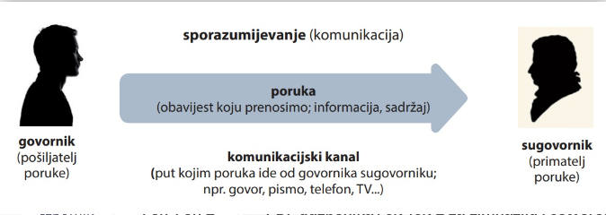
Jezično komuniciramo služeći se jezičnim vještinama: govorenjem, slušanjem, čitanjem i pisanjem.
I nastavu hrvatskoga jezika možemo shvatiti kao komunikaciju, odnosno prijenos informacija. U tome se procesu pojavljuju četiri osnovna elementa:
⚫GOVORNIK, tj. izvor informacija: nastavnik, udžbenik, jezični priručnici, tisak, mediji i dr.
• PORUKA: tekstovi, jezični pojmovi, definicije, primjeri i dr.
⚫ SUGOVORNIK, tj. primatelj informacija: učenik.
BONTON U JAVNOSTI
• Ako se netko sudari s vama ili ako vi udarite u nekoga, recite »Ispričavam se.<< ili >>Oprostite.<<.
⚫ Zapamtite da je svatko drukčiji i da nitko ne zaslužuje biti ismijan, stoga nikada ne upirite prstom u nekoga i ne buljite u ljude.
⚫ Kada vam netko drži otvorena vrata, ne zaboravite zahvaliti. Također je pristoj- no drugima držati vrata otvorena, posebice ako su u pitanju ljudi u invalidskim kolicima, na štakama, ili majke s dječjim kolicima.
• Ako ste u javnom prijevozu i ukrca se netko tko možda treba mjesto za sjedenje (na primjer: osoba s djetetom, osoba starije životne dobi ili ozlijeđena osoba), ponudite im svoje mjesto.
• Prije nego što uđete u dizalo, najprije dopustite da ljudi koji trebaju izići iziđu.
PRAVILA MODERNE KOMUNIKACIJE: TELEFONIRANJE
• Neka su mjesta neprikladna za korištenje mobitela, zato izbjegavajte razgovor na mobitelu ili zvonjavu mobitela na sljedećim mjestima: kupaonicama, dizali- ma, bolnicama, čekaonicama, restoranima, gledalištima, taksijima, autobusima, vlakovima, na sastancima, knjižnicama, muzejima, crkvama...
• Isključite mobitel u kinu. Čak i ako je vaš mobitel na vibriranju, drugi to mogu čuti tijekom tihih dijelova filma. Svjetlost zaslona vašeg mobitela također može sme- tati drugima.
• Provjerite pravopis svake poruke, ne oslanjajte se na automatsku provjeru pra- vopisa jer vaše pogreške neće proći nezapaženo. Pročitajte svoju poruku neko- liko puta, po mogućnosti naglas, prije nego što je pošaljete.
• Kada komunicirate e-poštom, ništa nije povjerljivo - imajte to na umu.
BONTON U VERBALNOJ KOMUNIKACIJI:
⚫ Slušajte više nego što govorite. Ključ za umijeće razgovaranja nije u govorenju, već u slušanju. Pitajte one s kojima komunicirate zanimljiva i promišljena pita- nja.
⚫ Ne prekidajte govornika. Kada prekinete tijek misli drugome, pokazujete da se ili ne možete ili ne želite držati govornikove teme. Ako je netko prekinuo vas, preporučuje se ono najteže: šutjeti. Ne vraćajte se i nemojte ponovno rasprav- ljati o tome - osim ako se to od vas ne zatraži.
• Ne obraćajte se samo jednoj osobi kada komunicirate u skupini - time ostav- ljate druge u nezgodnoj izolaciji. Također, odaberite teme o kojima svatko može govoriti.
Jezične vještine u komunikaciji
Govorenje, slušanje, čitanje i pisanje sastavni su dio naše svako- dnevice. Usvajamo ih od rođenja: najprije slušamo, potom učimo govoriti, a poslije naučimo čitati i pisati. Svaka od tih djelatnosti pred- stavlja jednu jezičnu vještinu, ali one su i tijesno isprepletene, što možemo zaključiti i na primjeru uvodnoga zadatka: napisanu reče- nicu možemo čitati u sebi ili naglas (govoriti), o pročitanoj rečenici možemo nešto zapisati, a možemo i poslušati kako je netko komen- tirao spomenutu misao.
Početci su ljudske komunikacije u usmenoj kulturi bili vezani samo uz govorenje i slušanje. Te su dvije jezične vještine i danas najraširenije u ljudskoj komunikaciji. Civilizacije koje ne poznaju pismo, a time ni čitanje, ograničene su i danas na usmenu kulturu, kao što je to bilo prije pojave pisma.
Govorenje
⚫govor, razgovor postavljanje pitanja, odgovaranje na pitanja
• izlaganje o zadanoj temi javni govor⚫ rasprava
Komunikacijski bonton: Aktivno slušanje
1. Slušajte pozorno: gledajte sugovornika u oči, unesite u komunikaciju i neverbalne znakove (npr. kimanje glavom). Važno je neverbalnom komunikacijom pokazati interes: time ćete ohrabriti govornika i stvoriti ugodnije okruženje.
2. Postavljajte pitanja: dok slušate, razmišljajte o onom što čujete. Postavljajući pitanja, razjasnit ćete ono što ne razumijete, a sugovornik će dobiti povratnu informaciju o vašem aktivnom slušanju.
3. Provjerite jeste li sve dobro razumjeli: to možete učiniti parafraziranjem onoga što slušate, odnosno što ste slušali. (Parafrazirati znači vlastitim riječima prepričati ono što smo čuli.) Tako ćete se uvjeriti da ste dobro razumjeli govornika.
ročitajte kratki tekst o pismenosti.
Čitanje i pisanje
Pismenost je sposobnost čitanja i pisanja, što se čini prilično jednostavnom definicijom. Ali to nije tako. Između dviju krajnosti mjerodavnog ovladavanja pisanjem i čitanjem s jedne strane, i potpune nepismenosti s druge strane, nalaze se brojni prijelazni stupnjevi: pismenost je stvar stupnja. Jedna osoba može čitati popularne tabloide, ali ne može pročitati povrat poreza ili čak upute na bočici aspirina. Druga pak može čitati različite tekstove, ali je nesposobna napisati išta razumljivo.
(Robert Lawrence Trask, Temeljni lingvistički pojmovi)
Stvarnost puna tekstova
Tekst
- Definicija
- lingvistička organizacija jedinica riječi viša od rečenice i povezana ukupnim smislom
- napisane ili tiskane riječi u grafičkoj obradi koju traži sadržaj
- riječi glazbenog djela uz note
- njegova svrha
- Osobna (ovim tekstovima zadovoljavamo vlastite interese (zabavni i informativni tekstovi, beletristika, ...)
- Javna (službeni dokumenti i informacije o javnim događajima (vijesti, priopćenja, ...)
- Obrazovna (ovim se tekstovima služimo kako bismo se obrazovali (udžbenici, bilježnice, ...)
- Profesionalna (tekstovi vezani uz profesionalno obavljanje posla)
Svrha teksta
OSOBNA
takvim tekstovimazadovoljavamo vlastite interese (zabavni i informativni tekstovi, beletristika, dopisivanje i sl.)
JAVNA
• službeni dokumenti,informacije o javnim događajima (vijesti, priopćenja i sl.)
OBRAZOVNA
služimo se tekstovima da bismo nešto naučili (udžbenici i sl.)
PROFESIONALNA
⚫ tekstovi vezani uzprofesionalno obavljanje posla, tj. uz radno mjesto
Vrste tekstova
- Opisni
- opis predmeta
- opis osobe
- opis prostora
- Raspravljački
- rasprava
- kritika
- recenzija
- esej
- Upučivački (instruktivni)
- uputa
- recept- dijagram kojim se prikazuje postupak
- Pripovjedni (narativni)
- kratka priča
- pripovijetka
- roman
- prepričavanje
- obavijest (priopćenje)
vijest, izvješće, reportaža, putopis, životopis, autobiografija
- Izlagački
- definicija
- prikaz
- sažetak
- pismo
- SMS
- Neprekinuti
- rečenice su organizirane u ulomke koji su uklopljeni u veće cjeline (poglavlja, knjige)
- primjer: Dobriša Cesarić, Kronos
- Isprekidani
- Podatci koji se prikazuju u obliku obrazaca, grafikona, tablica, zemljovida, ...
- primjer: zemljovid
- Mješoviti
- kombinacija neprekinutih i isprekidanih tekstova (tekst je organizirani u ulomke i slikovnog priloga, grafikona i sl.)
- primjer: Što su vremenske zone
Pripovijedanje
Pripovjedni tekstovi
- poprilično se često čuje i nalaziu u svakodnevnom životu
- vrste pripovjedanja po načinu širenja riječi
- usmeno pripovijedanje
- služimo u svakodnevnim situacijama (prepričavanje što se dogodilo, kako je bilo)
- pismeno pripovjedanje
- susrećemo u obliku vijesti, reportaža, putopisa, ...
- oblici pripovjedanja
- pričanje
- oblikovanje izvorne građe po stvarnosti i vremenu
- uči se kako stvarati sadržaj
- prepričavanje
- građa poznatog sadržaja je preuzeta ili doslovno (doslovno prepričavanje) ili djelomično (djelomično prepričavanje)
- izvješćivanj
- sporazumijevanje u obitelji, školi i društvu sa sadržajem u kojem učenici sudjeluju, obavljaju ili promatraju njegovo ostvrivanje
- tijekom promatranja učenici dolaze do obavijesti, sa koje kasnije prelaze na vijest i izvješće
- vrste pripovjedanja po vrsti riječi
- subjektivno
- odražava odnos pripovjedača prema događajima o kojima pripovjeda (pripovjedač subjektivno progovara, komentira događaje)
- objektivno
- događaji i zbivanja su izložena neutralno (bez unošenja osobnog stanja)
- primjeri: udžbenici, vijesti, izvješća, ...
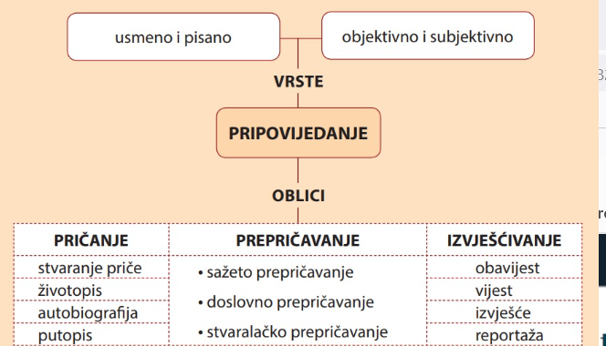
OBJEKTIVNO I SUBJEKTIVNO PRIPOVIJEDANJE
Pripovijedati se može objektivno (neutralno) i subjektivno. Pri objektivnom pripovijedanju do- gađaji i zbivanja izlažu se neutralno, bez unošenja osobnoga stava. Na takvo pripovijedanje nailazi- mo, primjerice, u udžbenicima, vijestima, izvješćima i sl.
Subjektivno pripovijedanje odražava odnos pripovjedača prema zbivanja i događajima o kojima pripovijeda: pripovjedač subjektivno progovara, komentira zbivanja, likove i događaje.
Životopis (biografija)
U životopisu (biografiji) donosi se opis života neke poznate i zanimljive osobe. Kao književna vrsta životopis se javio vrlo rano, još u doba rimske antike.
Kada javna osoba napiše djelo u kojem izlaže, odnosno opisuje vlastiti život, govorimo o autobiografiji.
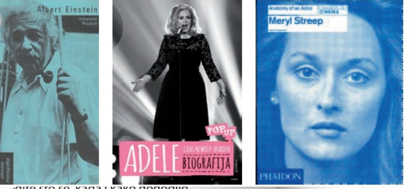
Uspoređujući tekstove, mogli ste uočiti da vrsta i namjena teksta uvjetuju prikaz biografskih podataka: oba teksta sadržavaju osnovne osobne podatke (datum i mjesto rođenja, godinu smrti) i najvažnija autoričina djela, ali je drugi tekst opširniji od prvoga, što je i logično jer se u enciklo- pedijskoj natuknici donose samo najvažniji podatci, a drugi je tekst namijenjen informiranju poten- cijalnih čitatelja.
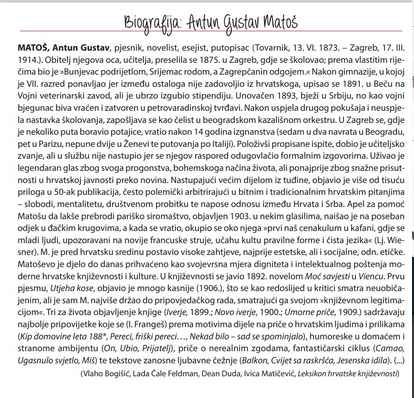
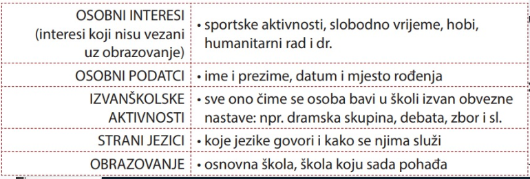
Narativni životopis pisan je u obliku neprekinutoga teksta i podijeljen je na odlomke. U njemu se u vremenskom slijedu izlaže vlastiti život od rođenja do trenutka kada se životopis piše. Takav je ži- votopis na neki način i izraz osobnosti njegova autora/autorice.
Tablični životopis nametnuo se tijekom nekoliko posljednjih desetljeća kao suvremeniji oblik živo- topisa: podatci su sažeti i prikazani pregledno u točno određenom vremenskom slijedu, a unose se u tablicu, odnosno u propisani obrazac.
I narativni i tablični životopis donose isti sadržaj: osobne podatke, podatke o školovanju, podatke o radnom iskustvu (zaposlenju) te podatke o osobnim vještinama. Uz njih se mogu dodati i drugi podatci: članstvo u nekim udruženjima, volonterski rad, osobni interesi i sl.
Autobiografija
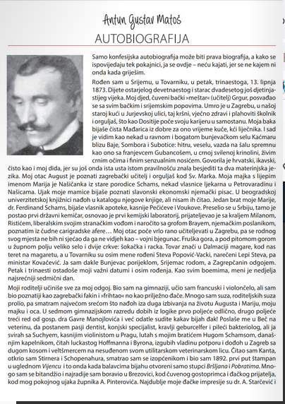
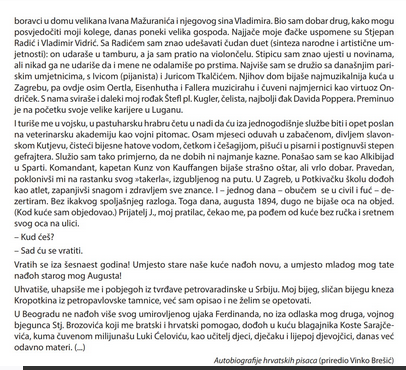
Putopis
Temu putovanja putopisac razvija opisom krajeva, ljudi i običaja unoseći pritom vlastiti stav o onome što opisuje.
Putopisac je prvo umjetnik riječi koji se u pisanju - osim jezika - oslanja podjednako i na stvarnost i na maštu. Za njega je istinito ne samo ono što vidi, već i ono što doživljava. Ovo drugo iskustvo širi granice videnoga, tj. stvarnoga koje posredovanjem jezika ulazi u putopis i to ne kao novi oblik stvarnosti, već kao oblik doživljene stvarnosti.
(Vinko Brešić, Hrvatski putopisi)
PRIMJER
Zamolio sam gazdaricu hostela da mi nekako organizira odlazak do Bajkalskog jezera. Ona me spo- jila s izvjesnom Julijom, lokalnom curom koja će me za sitniš odbaciti na sjever.
Julija je tipična ruska babuška, plavokosi curetak odjeven u leš neke krznene životinje. Vozila je beskrajno sporo i usput mi pričala kako se upravo razvela, kako joj je muž bio slabić, kako voli kuhati (ona, a ne muž), i sve takve nekakve bedastoće. Rekla je da ne voli Burjate (autohtoni mongolski ži- telji Sibira). Pitao sam je zašto ih ne voli.
- Zato što nemaju oči.
***
Stigli smo do Bajkalskog jezera, izjurio sam iz auta, dotrčao do obale, pa zauzeo pozu žirafa na pojilu i počeo srkati vodu ravno iz jezera.
Lijepo je Bajkalsko jezero. Ima u njemu i dosta tajnih znakova. Dugačko je 636 kilometara, što je uda- ljenost jednaka onoj između Petrograda i Moskve. Središnji i najveći otok identičnog je oblika kao i samo jezero. Ima još takvih znakova, ali njih ostavljam sljedbenicima lika i djela Dana Browna. Julija me odvela i na vidikovac iznad velike vode. Do njega vodi gondola kakva se obično da pronaći na skijaškim terenima. Negdje na pola puta počeo nas je šibati grozan vjetar. Molio sam nebesa da sve prođe u redu, da slučajno ne zaglavim s Julijom na dvadeset metara visine, jer bi me njezine priče izludjele. Vjerojatno bih skakao dolje samo da spasim živu glavu.
Odvezli smo se i do simpatičnog ribarskog sela Lisvtyanka. Tamo sam se na tržnici s lokalnim babuš- kama cjenkao praveći se da kupujem ribu. Prava je istina bila da nisam kupovao ribu, nego sam cjenkanjem održavao formu. Jer, napokon, nakon Bajkala odlazim dublje u Aziju, a tamo su vještine pregovaranja egzistencijalno presudne.
Vratili smo se do Irkutska, a lajava me Julija odbacila do aerodroma. Službenica me na pultu za chek in gnjavila u vezi prtljage. Vikala je nešto na ruskom, ja sam odgovarao na engleskom, ali nitko me nije razumio. Na međunarodnom aerodromu nitko ne razumije engleski... na takve se nelogične stva- ri navikneš, ako putuješ dovoljno dugo... na takve, i mnoge, mnoge druge.
Opisivanje
lako polaze od istoga grada i istih motiva (položaj grada, tvrđava), dva se opisa Karlovca bitno razlikuju. U prvom opisu sažeto su prikazani osnovni elementi fizičkoga opisa Karlovca: rijeke su samo imenovane, određeno je mjesto Karlovca unutar regije, a naveden je i razlog gradnje tvrđave. Sve je izloženo postupno, racionalno i logično. Osoba koja je pisala tekst bila je objektivna i ni na koji način nije pokazala svoj odnos prema Karlovcu. Sve su to obilježja objektivnoga opisa.
Za razliku od prvoga, drugi je tekst pisan subjektivno: Šenoa pokazuje svoje oduševljenje ljepotom kar- lovačkog jutra, ali je istovremeno i ironičan kada govori o tvrđavi. Detalji vanjskog opisa vrlo su slikoviti i služe kao poticaj autoru za iznošenje vlastitih dojmova. Šenoa je napisao subjektivni opis Karlovca, a njegov tekst primjer je umjetničkoga opisa: u njemu se povezuje vanjski i unutrašnji svijet, a slikama i asocijacijama daje se dublji smisao koji odražava subjektivan doživljaj. Tako se vanjski svijet razbija u niz pojedinosti - njihovim odabirom i slobodnom kombinacijom, autor im daje novi smisao te opis postaje metafora piščevih razmišljanja, odnosno sredstvo kojim autor pokazuje svoj doživljaj svijeta u umjetnič- kom djelu.
Opisati možemo sve ono što zapažamo osjetilima: fizički svijet (prostor, prirodu, predmete, čovjeka) i čovjekov unutarnji svijet (psihička stanja, emocije i sl.). Opisujući ukazujemo na karakteristična obilježja onoga što opisujemo.
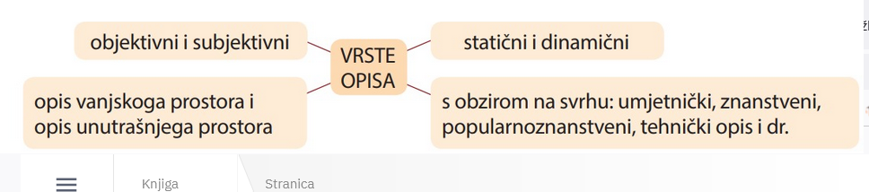
Kada opisujemo portret, odnosno lik, u opisivanju uočavamo dva sloja:
⚫ vanjski portret - opis vanjskoga izgleda (odjeća, dijelovi tijela, stas, držanje, kretnje i sl.) ⚫ unutarnji portret - opis ponašanja, psihološki portret, odnos prema drugima i sl.
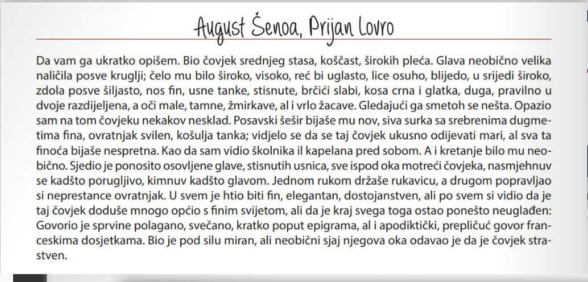
Od indoeuropske jezične zajednice do hrvatskog jezika
Hrvatski i ostali južnoslavenski jezici ubrajaju se u slavenske jezike, a slavenski su jezici dio indoeu- ropske jezične zajednice. Indoeuropska se jezična zajednica raspala oko 2000. godine pr. Kr. i tada se formirala baltoslavenska jezična zajednica. Kad se baltoslavenska jezična zajednica raspala između 1500. i 1300. godine pr. Kr., stvorila se praslavenska jezična zajednica u kojoj su se dogodile promjene na temelju kojih su se slavenski jezici poslije podijelili u tri velike skupine: u skupinu zapadnoslaven- skih jezika, u skupinu istočnoslavenskih jezika i u skupinu južnoslavenskih jezika.
Hrvatski je južnoslavenski jezik kao što su to i bosanski/bošnjački, bugarski, crnogorski, makedonski, slovenski i srpski. (...)
Hrvatski jezik pripada indoeuropskoj jezičnoj zajednici: to je skupina jezika srodnih po postanku, a njima se govori u Europi i krajevima koje su Europljani nastanjivali (u Americi, Australiji, dijelovima Afrike) te u nekim dijelovima Azije.
Nakon raspada indoeuropske jezične zajednice odvojila se, između ostalih, baltoslavenska skupina, iz koje se nakon nekog vremena formirala slavenska skupina. Ona se kasnije podijelila na tri skupine: istočnoslavensku, zapadnoslavensku i južnoslavensku, a hrvatski jezik pripada južnoslavenskoj jezič- noj skupini.
⚫ indoeuropska jezična zajednica
• baltoslavenska jezična skupina
• slavenska jezična skupina
⚫ južnoslavenska
jezična skupina
• hrvatski jezik
Hrvatski jezik
hrvatski jezik
⚫ jezik kojim govore Hrvati kao izvorni govornici
lingv. južnoslavenski (zapadnojužnoslavenski)
jezik iz baltoslavenske grane indoeuropske jezične porodice
⚫ govorni, standardni i službeni jezik u Republici Hrvatskoj
materinski jezik
idiom što ga dijete stječe u
najranijoj dobi bez svjesnog učenja, najčešće od majke;
majčinski jezik
književni jezik
⚫ jezik hrvatske književnosti i pismenosti uopće
⚫ u nekim povijesnim razdobljima ulogu književnoga jezika imali su staroslavenski, latinski, talijanski, mađarski i njemački jezik
standardni jezik
⚫ jezik hrvatske javne komunikacije koji se ostvaruje u funkcionalnim stilovima (znanstveni, publicistički, administrativni,
razgovorni stil)
književnoumjetnički,
tradicijom i pismenošću oblikovan sustav na glasovnoj i gramatičkoj osnovi štokavskog narječja ijekavsko-
-jekavskog govora
Idiomi/pojavni oblici
Hrvatski se jezik može pojavljivati u različitim oblicima - primjerice kao mjesni govor ili kao standardni jezik. Svaki takav pojavni oblik jezika predstavlja poseban idiom.
Idiom je naziv za svaki pojavni oblik jezika. Tako je idiom, primjerice, standardni jezik, ali i razgovorni jezik, dijalekt, mjesni govor, žargon...
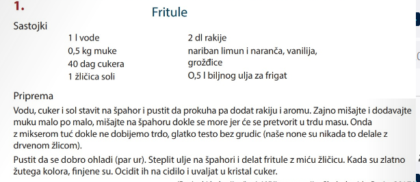
2.
Input od klijenta je pregeneričan, a dizajner nije
dobio feedback na dizajn. Mislim da bi trebalo ograničiti scope projekta, kako ne bi fulali estimate kao za prošli projekt.
3.
Danas smo se busom vozili do centra. Na trgu je bilo puno ljudi: neki su šetali, neki razgovarali, a neki sjedili po kafićima. To je bilo najoptimalnije rješenje za provesti dan u gradu.
4.
Idiom (grč. idíwua: osobitost), neutralan opći naziv za svaki oblik jezika, bez obzira na rang:
standardni jezik, razgovorni jezik, jezik kao zajednica narječja ili dijalekata, interdijalekt, dijalekt, mjesni govor. Danas se nerijetko idiom upotrebljava u značenju »>konglomerat sustava koji se rabe u danoj društveno-povijesnoj zajednici<< (...).
Mjesni govor naziv je za organski (izvorni) govor nekoga kraja, odnosno uže, obično seoske zajed- nice. Veće skupine mjesnih govora sa zajedničkim obilježjima čine dijalekte.
Skupine dijalekata tvore narječja: čakavsko, kajkavsko i štokavsko narječje.
Mjesni govori, dijalekti i narječja pripadaju organskim idiomima, što znači da ih usvajamo od rođenja
u zajednici kojoj rođenjem pripadamo. Kada se dijete uključuje u obrazovni sustav, tada počinje usvajati i neorganske idiome, primjerice standardni jezik.
Za razliku od organskih idioma, neorganski idiomi nisu vezani uz usko određenu manju sredinu. Dijele se u dvije skupine: na standardni jezik i na supstandardne idiome, tj. na idiome koji imaju elemente i organskih idioma i standardnoga jezika.
Žargon - naziv za govor pojedine uže skupine, najčešće određene dobno ili strukom. Primjerice, postoji učenički žargon, medicinski žargon i sl.
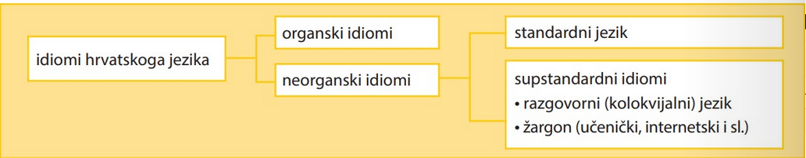
Hrvatski standarni jezik
Da bi se omogućilo sporazumijevanje na cjelokupnom prostoru koji naseljava određeni narod, potreban je jezik koji će mu služiti za uporabu u javnoj komunikaciji. Takav se jezik naziva standardni jezik.
Standardni je jezik autonoman vid jezika, svjesno normiran i polifunkcionalan, stabilan u prostoru i elastično stabilan u vremenu.
AUTONOMNOST
Hrvatski standardni jezik potpuno je autonoman s obzirom na bilo koji idiom, pa tako i na štokavsko narječje. Nitko nije govornik hrvatskoga standardnog jezika samom svojom pripadnošću nekom organskom idiomu, što znači da se standardni jezik usvaja učenjem, a ne rođenjem.
NORMIRANOST
Hrvatski je standardni jezik normiran. Standardnojezičnu normu čini skup pravila za pisanje i govorenje koja su navedena u normativnim priručnicima: pravopisu, gramatici, rječniku i jezičnim savjetnicima.
POLIFUNKCIONALNOST
Hrvatski standardni jezik mora biti polifunkcionalan, tj. funkcionalan u svim komunikacijskim situacijama, što znači da mora pokrivati sva područja čovjekova privatnoga i javnoga života: dje- tinjstvo i odrastanje, obrazovanje, administrativne poslove, javno djelovanje, umjetnost i sl. Na toj značajki standardnoga jezika utemeljeni su funkcionalni stilovi: administrativni, književnoumjetnički, publicistički, znanstveni i razgovorni stil.
STABILNOST U prostoru
Hrvatski standardni jezik stabilan je u prostoru i njime komuniciraju govornici iz svih dijelova Republike Hrvatske.
JEZIČNA STABILNOST U Vremenu
Standardni je jezik elastično stabilan, odnosno prilagodljiv, u vremenu: njime se mogu imenovati novi pojmovi koji ulaze u hrvatski jezični prostor, a odraz su novih tehnologija, društvenih promjena i sl.
Standardni je jezik normiran, što znači da je sustavom pravila točno određeno što mu pripada, a što ne pripada. Primjerice, riječ bus ne pripada standardnome jeziku, a riječ autobus pripada. Norma obuhvaća sustav propisa kojima se određuje što je u standardnome jeziku pravilno, i to na svim razinama, od pravopisne i pravogovorne do pravilne uporabe posuđenica.
Priručnici koji se bave jezičnom normom, odnosno propisuju što pripada, a što ne pripada standard- nome jeziku, nazivaju se normativni priručnici. To su pravopis, gramatika, rječnik i jezični savjetnik.
Jezik kao sustav znakova
Svi su sustavi za uspostavljanje komunikacije utemeljeni na dogovorenim znakovima, odnosno na nekom kodu (slika, simbol i sl.). S obzirom na vrstu koda, komunikacijski se sustavi dijele na jezične i nejezične sustave. lako se u svakodnevnoj komunikaciji najviše služimo jezikom kao kodom za spora- zumijevanje, u društvu postoji mnogo nejezičnih komunikacijskih sustava: takvi su, primjerice, neverbalna komunikacija, sustav prometnih znakova, Morseova abeceda, Brailleovo pismo (za slijepe osobe) i zna- kovni jezik (za gluhe i nijeme osobe).
Znanost koja proučava jezik naziva se jezikoslovlje (lingvistika). Znanost koja proučava komunikacijske sustave, odnosno znakove i njihovu ulogu u društvu, naziva se semiologija.
Jezikom imenujemo stvarnost - sve što njoj pripada, bilo da je u pitanju materijalna ili duhovna stvarnost, nalazi svoj odraz u jeziku. S obzirom na tu činjenicu, razlikujemo dvije osnovne uporabe jezika: jezičnim komuniciranjem stvaraju se društveni odnosi među pojedincima (međuljudski odnosi), a jezikom se izražava i čovjekov unutarnji svijet.
Riječi koje ste zapisali uz odgovarajuće pojmove iz izvanjezičnog svijeta nazivaju se jezični znakovi. Njima se »preslikavaju<< podatci iz stvarnosti (materijalne i duhovne), a služe nam za sporazumijevanje (komunikaciju).
Kada pišemo i izgovaramo jezične znakove, na neki način »materijaliziramo<< pojmove u jeziku: jezični se znakovi ostvaruju u govoru kao niz glasova, npr. /m/o/r/e/, a u pismu kao niz slova, npr. m +o+r+e.
Dakle, izraz (označitelj) predstavlja materijalnu stranu jezičnoga znaka, odnosno njegov oblik.
Pojam koji smo označili glasovima i slovima u našoj svije- sti ima svoje značenje i ono se naziva sadržaj (označenik) jezičnoga znaka. Tako smo riječ more povezali sa znače- njem 'velika površina puna slane vode, kako se obično navodi u rječniku.
Pojmovi poput proljeće, ljeto, jesen, zima postoje u različitim jezicima: značenje koje im govornici pridaju isto je bez obzira na jezik kojem pripadaju, što znači da im se sadržaj jezičnoga znaka podudara. To je i logično jer se značenje odnosi na pojam u izvanjezičnom svijetu.
Međutim, pogledamo li izraze tih četiriju jezičnih znakova, uočavamo da se razlikuju.
Na temelju prethodnoga primjera možemo zaključiti da ne postoji veza između izraza i sadržaja jezičnoga znaka. Glasovi i slova od kojih su sastavljeni jezični znakovi nemaju nikakve veze s njihovim značenjem - da imaju, onda bi se u svim jezicima pojam imenovao istim skupom glasova i slova.
To obilježje naziva se proizvoljnost (arbitrarnost) jezičnoga znaka.
Isti sadržaj jezičnoga znaka u različitim jezicima ima različite izraze. Primjerice, sadržaj 'kalendarsko doba od 21. ožujka do 21. lipnja' u hrvatskom jeziku ima izraz proljeće, u engleskom jeziku spring, u talijanskom jeziku primavera, a u njemačkom jeziku Frühling.
Nepostojanje ovisnosti između izraza jezičnoga znaka i njegova sadržaja naziva se proizvoljnost (arbitrarnost) jezičnoga znaka.
-
Iznimku od ovoga pravila čine onomatopejske riječi – u njima je prisutna veza između izraza i sadržaja: šumoriti, pljusnuti, blejati, huk i sl.
I unutar jednoga jezika postoje različiti izrazi za imenovanje istoga sadržaja. Primjerice, značenju 'zgrada koja ima zidove i krov i služi za stanovanje' u hrvatskom su jeziku pridružena najmanje dva izraza: kuća (u standardnom jeziku) i hiža (u kajkavskom narječju).
Uvod u leksikologiju
Riječ je najmanja samostalna jezična jedinica koja ima značenje, odnosno riječ je najmanji slobodan oblik. U jeziku postoje jedinice manje od riječi koje imaju značenje (morfemi), ali oni nisu samostalni pa se riječ definira kao najmanja samostalna jedinica.
U rečenici Riječ rat i riječ mir samo su riječi, a stvarnost je nešto posve drugo. ima 14 riječi, ali riječ riječ po- javljuje se u različitim oblicima (riječ, riječ, riječi). Stoga je možemo brojiti kao jednu riječ pa bismo mogli odgovoriti i da je u navedenoj rečenici 12 riječi. Kada bismo tu riječ tražili u rječniku, tražili bismo je pod oblikom za nominativ jednine - riječ. To je njezin kanonski oblik.
Leksem je takav oblik riječi koji predstavlja skup svih svojih gramatičkih oblika i značenja. Primjerice, leksem riječ uključuje sve padežne oblike jednine i množine te sva značenja te riječi. Dakle, točan bi odgovor u prethodnom primjeru bio da je u navedenoj rečenici 14 riječi, a 12 leksema.
Svi leksemi jednoga jezika čine njegov leksik - leksik predstavlja ukupnost riječi nekoga jezika, područja ili struke.
Grana jezikoslovlja koja proučava i opisuje leksik, tj. riječi i odnose među riječima, naziva se leksikologija (rječoslovlje).
Budući da je područje istraživanja kojim se bavi leksikologija vrlo široko, obično se unutar leksikologije razlikuje nekoliko relativno samostalnih područja: primjerice, leksikografija se bavi teorijom i praksom sastavljanja rječnika.
Govoreći o jezičnom znaku, naglasili smo da strukturu jezičnoga znaka čine izraz i sadržaj. Iz prethodnih je primjera vidljivo da jednom izrazu nije uvijek pridružen samo jedan sadržaj, odnosno da jedna riječ može imati više od jednoga značenja. Dakle, sadržaj jezičnoga znaka može biti jednoznačan (samo jedan) i višeznačan (dva ili više značenja). Prema tom se kriteriju riječi dijele na jednoznačne i višeznačne riječi.
Jednoznačna riječ (jednoznačnica): jednom izrazu pridruženo je samo jedno značenje. Primjeri: laž, pridjev, glagol, ožujak.
Višeznačna riječ (višeznačnica): jednom izrazu pridružena su dva ili više značenja.
Primjeri: puž, krug, matica, prilog, glas.
Dio jezikoslovlja koji proučava značenje riječi naziva se semantika.
Osnovno značenje riječi izravno upućuje na predmet ili pojam u stvarnom svijetu: npr. lisac – 'muž- jak lisice! Ono se u rječniku uvijek nalazi kao prvo značenje.
Izvedeno značenje riječi izvodi se iz osnovnoga značenja. U našem je primjeru izvedeno na teme- lju sličnosti: lisac - 'lukava muška osoba!. Ponekad se naziva i preneseno (sekundarno) značenje.
Do višeznačnosti dolazi zbog komunikacijskih potreba jezične zajednice: primjerice, kada treba imenovati neki novi tehnički pojam, može se posuditi riječ koja već postoji u jeziku, što znači da će joj se u tom slučaju dodati novo značenje. Tako je došlo do proši- renja značenja riječi miš: značenju 'kućni glodavac iz porodice miševa' dodalo se prema načelu sličnosti novo značenje: 'vanjska računalna komponenta koja upravlja kursorom (strelicom i sl.) na ekranu, služi za komunikaciju korisnika sa softverom!
Višeznačne riječi nastaju proširivanjem značenja jednoznačnih riječi, što znači da su njihova ostala (prenesena) značenja izvedena iz osnovnoga značenja. Zbog toga što su nastala iz osnov- noga značenja jedne riječi, sva značenja višeznačne riječi imaju nešto zajedničko.
Pojava da riječ ima dva ili više značenja naziva se višeznačnost (polisemija).
Do višeznačnosti dolazi na različite načine.
• Primjerice, može doći do pomaka u značenju - riječ dobiva novo značenje zbog uporabe riječi u novom kontekstu. Tako se javljaju dva različita značenja pridjeva svjež: svjež kruh (svjež 'koji je ne- davno pripremljen') i svjež zrak (svjež 'prohladan, umjerene hladnoće').
⚫ Izvor je višeznačnosti i specijalizacija - do nje dolazi kada riječ iz općega jezika dobiva novo zna- čenje jer se počinje rabiti u specijaliziranom području (npr. miš – životinja i računalno pomagalo). • Ipak, najčešće do proširivanje značenja riječi dolazi na dva načina: proširivanjem značenja prema sličnosti (metaforizacijom) i proširivanjem značenja prema stvarnim odnosima (metonimizacijom).
Kazalište života
KAZALIŠTE ŽIVOTA. Mnogi članovi neke jezične zajednice u Europi i ne znaju kako se često svojim riječima nalaze u kazalištu. Zanimljivo je da je teatarska metaforika tako duboko prodrla u opću svijest. Netko >>stupa na scenu<«<, ondje »agira«, »našminkan<< ili ne, sve dok ne »padne zastor<<. Pravo je čudo što se u rodilištima ne kaže da se »podigao zastor«. U toku života ljudi ne »agiraju<< samo otvoreno, nego u razvi- janju »drame<< života, od prvog do posljednjeg »nastupa« i »čina«<, djeluju mračno ili vedro, ponekad »>iza kulisa«<, kao da su bračni par Macbeth, Mirandolina ili likovi iz Figarova pira. Ako tko koga udesi, ubije (»Gospodin doktor su zaklali barunicu<<), oženi ili imenuje direktorom banke koja je likvidna, to je efektan >>aktšlus<«<. Prije njega na protagoniste u životu pada obilje svjetla, oni su »pod reflektorima<<. Sve dok se svjetla ne ugase, a likovi ostanu »>bez teksta<<. Theatrum mundi, kazalište svijeta dakle. Iznenađuje samo što jedna važna potencijalna metafora još nije uzela maha. Kao da su ljudi zaboravili da u životu postoje i Šaptači koji u mnoge naćuljene uši hrapavim ili siktavim glasom šalju ubojite ili zavodljive riječi. U kazališ- nom žargonu to je »šlagvort<< (Schlagwort). Glumcima on pomaže, ljude ugrožava ili ih čak pretvara u stvarne likove tragedija.
U tekstu se pojavljuje niz metafora koje povezuju kazalište i život: tako se, primjerice, za značenje 'roditi se' uvodi metafora 'stupiti na scenu', a za značenje 'ušutjeti«< metafora 'ostati bez teksta. Sve su metafore u tekstu utemeljene na sličnosti kazališta i čovjekova života.
Proširivanje značenja riječi na temelju sličnosti naziva se metafora.
osnovno značenje
riječ
more
'velika površina,
prostor slane vode'
vatra 'plamen'
rana
'ozljeda'
sjajiti 'biti izvor svjetlosti'
metafora
Koliko imam ideja? More!
preneseno značenje
'mnogo'
U njemu nema više one stare vatre. 'zanesenost, strast' Duša mu je prepuna rana. On sjaji od sreće.
Okamenjena (leksikalizirana) metafora
'ono što izaziva bol' 'odavati dobro raspoloženje'
Metafore su česte u svakodnevnoj komunikaciji. Neke od njih više i ne doživljavamo kao metafore. Primjerice, kada kažemo da prelazimo preko zebre (pješački prijelaz), više u svijesti ne povezujemo prugastu afričku životinju s tim pojmom (preneseno značenje prema sličnosti), a kada kažemo da su nam na prstima osjetljive jagodice, ne povezujemo ih s malim jagodama (preneseno značenje prema sličnosti).
Takve se metafore nazivaju okamenjene (leksikalizirane) metafore.
Okamenjenim metaforama pripada i list u značenju 'stražnji mesnati dio potkoljenice' (više ga u svijesti ne povezujemo s oblikom lista), noga u značenju 'dio na kojem neki predmet stoji, npr. noga od stola (više ju ne povezujemo s čovjekovom nogom), virus u značenju 'program koji inficira raču- nalne datoteke' (više ga ne povezujemo s virusom u medicini) te ogranak u značenju 'niži dio orga- nizacije, podružnica' (više ga u svijesti ne povezujemo s manjom granom koja se odvaja od veće).
?⚫Odredite značenje podcrtanim riječima.
Grad je dočekao svoje miljenike nakon osvajanja srebrne medalje na svjetskom prvenstvu. Na tiskovnoj konferenciji svoje su stavove o novom kurikulu izložili Kaptol i Markov trg. Za lektiru smo čitali Cesarića, a sad idemo u knjižnicu posuditi Matoša.
Na hrvatsko je tržište došao novi Huawei.
Je li Bijela kuća odlučila promijeniti obrazovnu politiku?
U podcrtanim riječima u prvom zadatku preneseno značenje nije bilo utemeljeno na sličnosti, već na stvarnim odnosima:
⚫ grad - u prenesenom značenju 'stanovnici grada'
• Kaptol u značenju 'tijelo u sklopu Zagrebačke nadbiskupije' - sjedište je na Kaptolu
• Markov trg u značenju Hrvatski sabor - sjedište je Sabora na Markovu trgu
• Cesarić u značenju 'poezija Dobriše Cesarića' - Cesarić je pisao poezij
• Matoš u značenju 'poezija Antuna Gustava Matoša' - Matoš je pisao poeziju
• Huawei u značenju 'mobitel koji proizvodi Huawei'
• Bijela kuća u značenju 'američki predsjednik, američka politika' - u Bijeloj kući stanuje američki predsjednik.
Po istom ste principu u drugom zadatku stvarali preneseno značenje: za glazbu ste upisivali ime glazbe- nika umjesto njegove glazbe, za romanopisce i slikare njihova imena umjesto njihovih djela, a za grad ime grada umjesto tijela u tom gradu koje odlučuje o dodjeli novaca.
Preneseno značenje utemeljeno na stvarnim odnosima, odnosno na logičkom i asocijativnom povezivanju pojmova u vremenu i prostoru naziva se metonimija (zamjena imena).
METONIMIJA (primjeri)
osnovno značenje
'srednja općeobrazovna
riječ
gimnazija
škola'
Vatikan
'država'
riba
'životinja'
jabuka
'voćka iz porodice ruža'
metonimija
Gimnazija se uključila
u volontiranje.
Vatikan je objavio... Jedem ribu.
Pojest ću jabuku.
preneseno značenje
'učenici, profesori, ostali djelatnici'
'papa; vodstvo Katoličke Crkve' 'riblje meso; jelo od ribe
'plod te voćke'
Riječi u međusobnom odnosu
Kada promatramo odnos između značenja različitih riječi, uočavamo da su neke riječi međusobno slične, a neke potpuno različite, da neke riječi u sebi sadrže značenje druge riječi i sl. Značenjski se odnosi među riječima nazivaju leksičko-semantičkim odnosima.
značenjski
odnosi
među
riječima
sinonimija - odnos sličnosti sadržaja (značenja): novac, svota, iznos
antonimija - odnos suprotnosti sadržaja (značenja): dan - noć
homonimija - odnos podudarnosti izraza:
tuš ('vodena boja od čađi i pigmenata') i tuš ('kupaonički uređaj')
hiperonimija/hiponimija - odnos nadređenosti i podređenosti sadržaja (značenja): emocije - ljubav, mržnja, radost
Sinonimi su riječi istoga ili sličnoga sadržaja, a različitih izraza.
Pojava potpunoga ili djelomičnoga poklapanja značenja riječi koje imaju različite izraze naziva se sinonimija.
Dva sinonima čine sinonimni par (npr. svrstati se - poredati se), a tri ili više sinonima čini sinonimni niz (npr. uvrstiti se- poredati se - svrstati se).
SINONIMI (primjeri)
• manipulirati, upravljati, kontrolirati ⚫ škrtac, tvrdica
⚫ duhovit, smiješan, zabavan
⚫vješt, spretan
⚫ čuditi se, iščuđavati se
• pričati, razgovarati ⚫strašilo, bauk, čudovište
⚫umoriti se, klonuti, sustati
• melankoličan, sjetan, zamišljen • osjećati, ćutjeti
• šuma, lug, gaj
Antonimi su riječi suprotnih značenja. Pojava značenjske opreke (suprotnosti značenja) između dviju riječi naziva se antonimija. Dvije riječi suprotnih značenja (npr. ući - izići) čine antonimni par.
ANTONIMI (primjeri)
malen -velik⚫ čovjek - nečovjek ispod - iznad dalje - bliže istina - laž⚫ muškarac - žena živ - mrtav
⚫ toplo - hladno upisati se - ispisati se⚫ sit - gladan mlad - star kupiti - prodati ⚫ ući - izići
Homonimi su riječi koje imaju isti izraz, a različit sadržaj, odnosno značenje: bor-'kemijski element'i bor -'drvo dugih iglica iz porodice borova. Takav odnos među riječima naziva se homonimija.
Homonimni par čine dvije riječi istog izraza, a različita sadržaja - isti izraz uključuje isto pisanje i isti naglasak.
Do izjednačavanja izraza riječi različita značenja najčešće dolazi zbog posuđivanja riječi i u tvorbi riječi.
• Riječ posudimo iz stranoga jezika i ona se svojim izrazom izjednači s već postojećom riječju u hrvatskom jeziku: rok (vremensko razdoblje) i rok (vrsta glazbe).
⚫ Kad različite riječi dobiju iste tvorbene nastavke, može doći do nastanka tvorbenih homonima:
repast - sličan repu (rep+ast) i sličan repi (repa+ast).
Homofoni i homografi
?
Tin u zadnje vrijeme boravi na Jávi ne samo u snovima nego i na jávi.
Ako mi doneseš lūk, njime ću gađati lük.
Podcrtane riječi na lijevoj strani imaju različito značenje, isto se izgovaraju, a različito pišu. Nazivaju se homofoni ili istozvučnice (Jáva – jáva).
Za razliku od njih, podcrtane riječi na desnoj strani imaju različito značenje, različito se izgovaraju (imaju različit naglasak), a isto se pišu. Nazivaju se homografi ili istopisnice (lûk - lük).
Homofoni (istozvučnice) riječi su različita značenja koje se isto izgovaraju, a različito pišu: Dunja - dunja. Takav odnos među leksema naziva se homofonija.
Homografi (istopisnice) riječi su različita značenja koje se isto pišu, a različito izgovaraju: lûk - luk. Takav odnos između leksema naziva se homografija.
Homonimija i polisemija (višeznačnost)
Trebamo razlikovati homonimiju od polisemije.
• Kada jedna riječ ima dva ili više različitih značenja, sva značenja imaju neke zajedničke sastavnice. U tom je slučaju riječ o polisemiji: kukavica - ptica i plašljiv čovjek.
• Kada dvije različite riječi imaju isti izraz, riječ je o homonimiji: kosa - 'oruđe' i kosa - 'vlasi na glavi. Dakle, kod homonimije ne radi se o jednoj riječi, nego o dvjema potpuno različitim riječima.
Neke riječi mogu biti u odnosu nadređeno - podređeno: u njemu jedna riječ ima šire značenje, a druga uže, odnosno značenje jedne riječi (npr. jabuka) sadržano je u značenju druge riječi (npr. voće). Takav se odnos naziva hiperonimijsko-hiponimijskim odnosom.
Nadređeni pojam naziva se nadređenica (hiperonim). To je riječ koja obuhvaća značenje svojih podređenih pojmova. Primjerice, riječ životinja nadređenica je riječima lav, mačka, pas, koje su njezine podređenice. Podređeni pojmovi (lav, mačka, pas) nazivaju se podređenice (hiponimi). Podređenice koje imaju zajednički nadređeni pojam nazivaju se supodređenice (kohiponimi).
godina NADREĐENICA
(hiperonim)
ožujak podređenica (hiponim)
travanj
podređenica
supodređenice
(hiponim)
(kohiponimi)
Riječi u rječniku
Vjerojatno nije bilo teško uočiti sličnosti i razlike između navedenih objašnjenja: primjerice, zajednička je riječ koju objašnjavaju, a razlikuju se po pristupu jer rječnici opisuju riječi kao leksičke jedinice, a enciklopedije opisuju pojmove.
Rječnik je popis leksičkih jedinica s njihovim tumačenjima ili prijevodom na drugi jezik. Znanost koja se bavi teorijom i praksom sastavljanja rječnika naziva se leksikografija. Prema predmetu kojim se bavi, leksikografija se dijeli na dva područja:
1. jezična (lingvistička) leksikografija bavi se riječima (jezični rječnici)
2. enciklopedijska leksikografija bavi se pojmovima: enciklopedijski rječnici (leksikoni, enciklopedije).
Jedna jedinica u rječniku, leksikonu ili enciklopediji čini jedan leksikografski članak. lako su leksikograf- ski članci u rječniku, leksikonu ili enciklopediji različiti, zajedničko im je da su sastavljeni prema određe- nim zajedničkim pravilima.
Vjerojatno ste uočili da se leksikografski članak sastoji od triju temeljnih dijelova: od riječi koja se objaš- njava (natuknica), od nekih gramatičkih i stilističkih obilježja (odrednice) i od objašnjenja značenja riječi (leksikografska definicija).
Riječ koja se objašnjava u rječniku naziva se natuknica ili lema. Ona je uvijek u kanonskom obliku: imenske su riječi, osim pluralia tantum (riječi koje imaju samo množinu), u nominativu jednine muškoga roda (ako imaju oznaku roda), a glagoli u infinitivu.
Iza natuknice najčešće dolaze odrednice: to su podatci koji sadržavaju obavijest o gramatičkim, stilističkim i drugim obilježjima natuknice. Razlikujemo nekoliko vrsta odrednica:
⚫ etimološka (podrijetlo riječi)
⚫ gramatička (vrsta riječi, rod, neki oblici riječi)
⚫ normativna (status riječi u standardnom jeziku: npr. je li riječ arhaizam, historizam, dijalektizam i sl.)
stilistička - podaci o stilskoj obilježenosti riječi: npr. knjiž. (književni stil), adm. (administrativni stil), razg. (razgovorni stil) i sl.
Leksikografska definicija obično dolazi nakon odrednica i objašnjava sva bitna značenja natuknice tako da ona budu razumljiva prosječnomu korisniku rječnika.
Riječ u gramatici
Gramatika je jezikoslovna disciplina koja proučava temeljne zakonitosti funkcioniranja jezika. Svaki jezik ima gramatiku, ali gramatička pravila razlikuju se od jezika do jezika. Unutar gramatike razlikuje se ne- koliko područja.
fonetika i
fonologija
morfologija
sintaksa
GRAMATIKA
- proučava glasove s obzirom na to kako se tvore (artikulacijska svojstva) i kako se čuju (akustička svojstva)
- proučava razlikovna obilježja glasova (foneme)
- proučava najmanje jezične jedinice koje imaju značenje (morfeme), oblike riječi i vrste riječi
- proučava odnose među sastavnicama skupa riječi i funkcije tih sastavnica u složenijim jezičnim jedinicama (rečenica, tekst)
riječ (eng. word) Jezična jedinica obično veća od morfema, ali manja od skupine. Naziv riječ može izgledati prilično poznat i očit, ali se zapravo može definirati na barem četiri različita načina.
Ortografska riječ napisana je s bjelinama na oba kraja, odnosno bez bjelina u sredini. Pravopisna riječ lingvistički je najmanje zanimljiva.
Fonološka riječ izgovorena je kao jedna jedinica.
Leksički element ili leksem jest rječnička riječ, element koji bi u rječniku mogao imati samostalnu natuknicu.
Gramatički oblik riječi (eng. grammatical word form - GWF) ili morfosintaktička riječ jedan je od nekoliko oblika koje leksički element može imati iz gramatičkih razloga.
Pogledajmo neke primjere. Element uz dlaku dvije su pravopisne riječi, ali jedna fonološka riječ (izgovara se kao jedna jedinica), dva leksička elementa (dvije natuknice u rječniku) te jedna morfosintaktička riječ.
Riječi pas u jednini i psi u množini dvije su pravopisne riječi, dvije fonološke riječi i dvije mor- fosintaktičke riječi, ali jedan leksički element (pripadaju pod istu natuknicu u rječniku). Isto vri- jedi za uzeti, uzima, uzeo, uzeto i uzevši: pet pravopisnih, pet fonoloških, pet morfosintaktičkih riječi, ali samo jedan leksički element. U rječnik bi ta dva leksička elementa bila unesena pod pas i uzeti. To su kanonski oblici (eng. citation forms) leksičkih elemenata, koje upotrebljavamo za imenovanje ili razgovor o njima.
Vrste riječi
U morfologiji promatramo gramatički oblik riječi: uočavamo sastavne jedinice unutar riječi (osnovu i nastavak: slik-a) i stavljamo riječi u različite gramatičke oblike: N slika, G slike, D slici... Pritom različiti oblici jedne riječi imaju i različito značenje, koje dobivaju na temelju gramatičkih nastavaka. ? Uvrstite u sljedeću rečenicu tražene padežne oblike riječi u zagradi. Ona je moja... knjigu. Ana će preporučiti.. (sestra, N). Pitat ću.... ..(tvoja sestra, A) hoće li mi posuditi (mlađa sestra, D) film za popodnevni izlazak. Imenice, pridjevi, zamjenice i brojevi jednim se imenom nazivaju imenskim riječima. Imenske se riječi mijenjaju po padežima. Promjena imenskih riječi po padežima naziva se sklonidba (deklinacija). ? Stavite na praznu crtu odgovarajući oblik glagola. Danas... Luka... .... (slušati, 1. I. mn., prezent) javni govor o riječima. -(pisati, 3.1. jd, futur prvi) o tome za školski list. Za razliku od imenica, glagoli se mijenjaju po licima. Promjena glagola po licima naziva se sprezanje (konjugacija). Imenske riječi Imenice, zamjenice, pridjevi i brojevi nazivaju se imenskim riječima. •Imenicama se imenuju bića, stvari i pojave, tj. svijet izvan nas i naš unutarnji svijet. • Pridjevi se dodaju imenicama da bi ih pobliže označili. .Zamjenice zamjenjuju neku drugu riječ, najčešće imenicu. • Brojevima se izriče koliko čega ima (glavni brojevi) i koje je što po redu (redni brojevi).
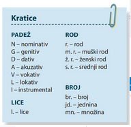
INSERT metoda Postupak 1. Pročitajte tekst s olovkom u ruci i označite ga na sljedeći način: • Stavite kvačicu na rubnicu (marginu) ako ono što ste pročitali znate otprije. • Stavite plus na rubnicu ako je ono što ste pročitali za vas nova informacija. • Stavite minus na rubnicu ako se pojavi neka informacija za koju ste mislili da je znate, a zapravo je bila pogrešna. 2. Nakon čitanja teksta vratite se dijelovima označenim znakom + i znakom: napravite bilješke na temelju novih informacija. 3. Prikažite najvažnije informacije u obliku umne mape ili ih na neki drugi način vizualno predstavite. Tako ćete povezati staro i novo znanje, odnosno tako ćete uklopiti nove informacije u kontekst onoga što ste otprije znali. INSERT metodom možete se poslužiti kada čitate bilo koji tekst u kojem se nalazi dio poznatih i dio novih informacija.
IMENICE
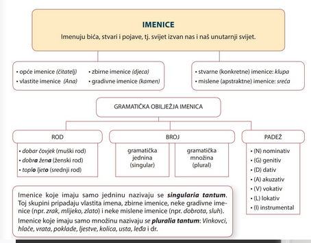
PRIDJEVI
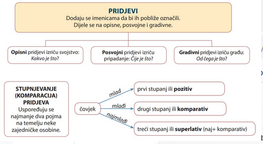
ZAMJENICE
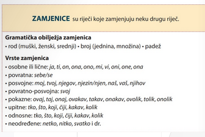
BROJEVI
BROJEVI su riječi kojima se izriče koliko čega ima i koje je što po redu. Podjela brojeva ⚫ glavni: jedan, devedeset (i) jedan... ⚫redni: prvi, devedeset (i) prvi..
- promjenjive rije�i kojima se izri�e radnja, stanje i zbivanje.
- Mijenjaju se po licima (sprezanje (konjugacija)(.
- Dijele se na
- glagoli radnje (
- ozna�uje svjesno djelovanje
- putovati, planirati, hodati, pri�ati, pogledati, misliti, zvati, pripremati se, uzeti, vratiti
- glagoli zbivanja (
- ozna�uje slu�ajno djelovanje pod utjecajem prirodnih zakona ili u prirodi ili u �ovjeku
(ki�iti, grmjeti,rasti, buditi se)
glagoli stanja ()
- ozna�uje stanje u kojem se netko ili ne�to nalazi te se ni�ta svjesno ne radi niti se i�ta zbiva:
- npr. �ivjeti, stanovati, no�iti.
Bezli�ni glagoli
- glagoli stanja i zbivanja koji dolaze samo u 3. licu jednine
- snije�i (snije�iti), ki�i (ki�iti), smrkava se (smrkavati se)
- Gramati�ke kategorije glagola
1. kategorija lica (
2. kategorija broja (jednina i mno�ina)
3. kategorija vremena (sada�njost, pro�lost, budu�nost)
4. kategorija vida (
5. kategorija na�ina (
6. kategorija stanja (
7. kategorija prijelaznosti (
A. kako se vr�i glagolska radnja
B. podatak o svr�enosti ili nesvr�nosti glagolske radnje
C. kako se pona�a glagolska radnja s obzirom na objekt
D. odnos izme�u subjekta (u re�enici) i glagolske radnje
-----------------------------------------------------------------------------------------------------------------------------
GRAMATI�KE KATEGORIJE GLAGOLA
- Kategorija lica
1. lice - govornik
2. lice-sugovornik
3. lice - negovornik
- Kategoriju lica nemaju infinitiv, glagolski pridjevi i glagolski prilozi
- Kategorija broja
jednina (singular)
mno�ina (plural)
- KATEGORIJA VREMENA
- Kategorija vremena daje podatak o tome kada se odvija glagolska radnja.
� Radnju koja se odvija u sada�njosti obi�no izra�avamo prezentom.
� Radnju koja se odvija u pro�losti obi�no izra�avamo aoristom, imperfektom, perfektom i pluskvamperfektom.
� Radnju koja se odvija u budu�nosti obi�no izra�avamo futurom prvim i futurom drugim.
KATEGORIJA VIDA
- Gramati�ka kategorija kojom se izri�e podatak o svr�enosti ili nesvr�enosti radnje
- Nesvr�eni glagoli
- Izri�u radnju u vr�enju:
- npr. pjevati, pisati, misliti, nadzirati, �eljeti.
- �ine radnje koje olovkom ostavljaju odre�eni trag (pi�e, bilje�i, crta, �ara, �r�ka)
- Svr�eni glagoli
- izri�u izvr�enost radnje: npr. opjevati, ispisati, razmisliti, okupiti, do�i.
- Ako jednim pogledom obuhvatimo sve �to je u�injeno (napisao je, zabilje�io je, nacrtao je, i�ara, za�r�ka)
- dvovidni glagoli
- glagoli koji mogu biti i svr�eni i nesvr�eni.
- vidjeti (Kad te vidim, do�i �u. (zna�enje: ugledam; glagol vidjeti - svr�en) Vidim tvoj odraz u vodi. (zna�enje: gledam; glagol vidjeti - nesvr�en)),biti, htjeti mo�i, �uti, vidjeti, glagoli stranoga podrijetla na -irati (telefonirati, organizirati, citirati...)
- KATEGORIJA NA�INA
- Gramati�kom kategorijom na�ina izra�ava se na�in odvijanja radnje:
- glagol mo�e pojaviti u indikativu (izjavni na�in), imperativu (zapovjedni na�in), kondicionalu (pogodbeni na�in) i optativu (izri�e se �elja).
KATEGORIJA STANJA
- Gramati�kom kategorijom stanja izri�e se odnos izme�u subjekta u re�enici i glagolske radnje.
- S obzirom na subjekt (vr�i li subjekt radnju ili je trpi netko drugi vr�i radnju na subjektu) razlikujemo
AKTIV (Most se gradi)
PASIV (Most je graden)
PRIJELAZNOST
- Gramati�ki odnos prijelaza radnje izme�u glagola i objekta (predmeta radnje)
- Razlikujemo prijelazne i neprijelazne glagole
prijelazni GLAGOLI
- upu�uju na izravni objekt (objekt u akuzativu bez prijedloga - Koga? �to?)
- voditi, o�ekivati, pitati, gledati, �itati
neprijelazni GLAGOLI
- upu�uju na neizravni objekt
- le�ati, sjediti, mirovati, prilaziti
- Povratni glagoli
- glagoli koji dolaze s rije�ju se
- �uvati se, �e�ljati se, hvaliti se, natjecati se, boriti se, igrati se, stidjeti se
- Razlikujemo
- prave povratne glagole (se je zamjenica i mo�e se zamijeniti sa sebe: �e�ljati se)
- neprave povratne glagole (se je �estica i ne mo�e se zamijeniti sa sebe: stidjeti se)
- Uzajamnopovratni glagoli: (natjecati se)
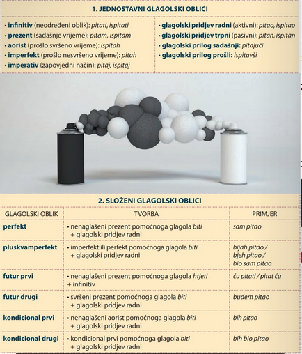
TABLICA
- GLAGOLSKI OBLICI
- 1. JEDNOSTAVNI GLAGOLSKI OBLICI
- infinitiv (neodre�eni oblik): pitati, ispitati
� prezent (sada�nje vrijeme): pitam, ispitam
aorist (pro�lo svr�eno vrijeme): ispitah
� imperfekt (pro�lo nesvr�eno vrijeme): pitah
� imperativ (zapovjedni na�in): pitaj, ispitaj
?glagolski pridjev radni (aktivni): pitao, ispitao
?glagolski pridjev trpni (pasivni): pitan, ispitan
? glagolski prilog sada�nji: pitaju�i
? glagolski prilog pro�li: ispitav�i
- 2. SLO�ENI GLAGOLSKI OBLICI
- perfekt
- nenagla�eni prezent pomo�noga glagola biti + glagolski pridjev radni
- sam pitao
- pluskvamperfekt
� imperfekt ili perfekt pomo�noga glagola biti + glagolski pridjev radni
- futur prvi
- futur drugi
?nenagla�eni prezent pomo�noga glagola htjeti + infinitiv
? svr�eni prezent pomo�noga glagola biti + glagolski pridjev radni
kondicional prvi nenagla�eni aorist pomo�noga glagola biti
+ glagolski pridjev radni
kondicional drugi kondicional prvi pomo�noga glagola biti + glagolski pridjev radni
bijah pitao/ bjeh pitao/ bio sam pitao
�u pitati/pitat �u
budem pitao
bih pitao
bih bio pitao
Glagolska vremena i na�ini mogu se izricati na dva na�ina: apsolutnom i relativnom uporabom.
Apsolutna uporaba glagolskih oblika
(vrijeme u kojem se govori)
Apsolutna je uporaba glagolskih oblika neutralna, u njoj promatramo vrijeme u kojem se govori: sada�nje se vrijeme izra�ava prezentom, pro�lost se izra�ava aoristom, imperfektom, perfektom i plusk- vamperfektom, a budu�nost futurom prvim i futurom drugim.
Isto vrijedi i za glagolske na�ine: zabranu �emo, primjerice, izraziti imperativom, a mogu�nost vr�enja radnje kondicionalom prvim ili kondicionalom drugim.
Glagolska vremena
SADA�NJOST prezent - izricanje sada�njosti (nesvr�eni glagoli) aorist - izricanje radnje koja se zbila neposredno prije trenutka kada se o njoj govori (svr�eni glagoli) imperfekt - izricanje radnje koja je trajala u pro�losti (nesvr�eni glagoli)
PRO�LOST
perfekt - izricanje pro�loga vremena
Gledam kroz prozor.
Pogledah je, a ona prestade govoriti.
Ranije mi�ljah da je sve poslo�eno.
Dugo se o njima govorilo s podsmijehom.
pluskvamperfekt -izricanje radnje koja se dogodila Bija�e ona odlu�ila
u pro�losti prije neke druge radnje
BUDU�NOST
futur prvi - izricanje budu�e radnje futur drugi - izri�e predbudu�e vrijeme
Glagolski na�ini
imperativ - izricanje zapovijedi, zabrane, opomene,
savjeta, molbe i sl.
promijeniti pristup poslu.
Do�i �e sutra. Mo�da tada budemo bili pametnji.
Nemojte tako glasno pri�ati!
Kada bih mogao, sve bih promijenio.
kondicional prvi, kondicional drugi - izricanje pogodbe, Da smo odmah bili sve u�inili, danas
�elje, namjere, mogu�nosti i sl.
bi bilo bolje.
Relativna uporaba glagolskih oblika
(vrijeme o kojem se govori)
O relativnoj uporabi glagolskih oblika govorimo kada se promatra vrijeme o kojem se govori: tada se, primjerice, budu�nost mo�e izre�i prezentom i aoristom: U Hrvatsku sljede�e godine dolazi mnogo gostiju. Ako to ne sredite do zime, propado�e vam praznici. Takva se budu�nost naziva relativna budu�nost. U tablici je prikazana naj�e��a uporaba takvih glagolskih oblika.
Glagolska vremena
Na proslavu ro�endana za dva tjedna sti�e desetak ro�aka. (izri�e se budu�nost)
Danas mi jedan galeb sleti na ruku.
(izri�e se pro�lost; to je pripovjedni prezent)
RELATIVNA
SADA�NJOST
prezent
Sutra on odlazi od mene.
(izri�e se budu�nost; to je futurski prezent)
Kad god ugledam dugu, nasmije�im se.
(izri�e se svevremenost; to je svevremenski prezent)
RELATIVNA PRO�LOST
Ako to brzo ne popravite, izgubiste sve.
aorist
RELATIVNA BUDU�NOST
futur prvi
(izri�e se budu�nost; to je futurski aorist)
Nakon nekog vremena re�i �e mi suputnik: �to sada? (izri�e se pro�lost; to je pripovjedni futur)
Tko �e znati, mo�da su nas i prevarili. (izri�e se sada�njost) Jo� �e mnogo vode prote�i dok ne odrastes.
(izri�e se svevremenost; to je svevremenski futur)
Uloga glagola u pripovijedanju
Jedno je od temeljnih obilje�ja glagola upravo ozna�avanje protjecanja djelovanja (radnje, stanja, zbivanja) u vremenu, na �emu je utemeljena svaka pri�a, odnosno pripovijedanje. Bolje poznavanje glagola, �to uklju�uje zna�enje glagola i njihova gramati�ka obilje�ja, ali i pravilnu primjenu glagolskih oblika u izra�avanju, pomo�i �e vam i u vje�tijem pripovijedanju pri�e, odnosno oblikovanju vijesti, �ivotopisa, prepri�avanju teksta i sl.
PRILOZI su riječi koje se prilažu uglavnom glagolima i označuju okolnosti vršenja glagolske radnje.
PODJELA PRILOGA
⚫ mjesni: tu, ovdje, izbliza, izdaleka, odnekud
⚫ vremenski: jučer, odmah, dogodine, kasno, prije
⚫ načinski: brzo, jedva, svakako, teško, napamet
⚫ uzročni: zato, stoga
⚫posljedični: uzalud
⚫količinski: malo, previše, toliko, mnogo, jedanput
PRIJEDLOZI su riječi koje pokazuju odnose između onoga što imenuju imenice ili između onoga na što upućuju zamjenice.
Razmišljao sam o prošlosti. Vjerovali smo u nabolje među nama. Stigao je s prvima.
VEZNICI su riječi koje povezuju riječi, skupine riječi ili rečenice.
VRSTE VEZNIKA
⚫ sastavni: i, pa, te, ni, niti ⚫rastavni: ill
⚫ suprotni: a, ali, no, nego, već
⚫ isključni: jedino, samo, tek
⚫ zaključni: dakle, stoga, zato
⚫ ostali veznici: da, dok, jer, ako, mada, makar, premda, iako, kao...
ČESTICE (riječce) riječi su koje same nemaju značenja, ali pomoću njih može se promijeniti značenje drugih riječi ili preoblikovati rečenično ustrojstvo.
Danas je natjecanje u sporom jedenju hrane. Ideš li sa mnom? Zar ćeš to propustiti?
USKLICI su riječi kojima izražavamo osjećaj, raspoloženje, dozivamo ili potičemo nekoga, oponašamo zvuk u prirodi i sl.: ah, au, pljus.
Uvod u sintaksu
Rješavajući zadatak, ključne ste riječi najprije uvrštavali kao samostalne riječi, a potom ih slagali u spojeve riječi koji imaju novo, cjelovito značenje. Takav spoj riječi naziva se sintagma.
Sintagme ste spajali u rečenice, a rečenice ste dalje mogli slagati u tekst.
RIJEČ ljeto putovati
more
SINTAGMA
toplo ljeto, ovo ljeto putovati često putovati na more
REČENICA Ovoga ću ljeta putovati na more.
Riječ, sintagma i rečenica jezične su jedinice kojima se bavi sintaksa - dio gramatike koji proučava i opisuje rečenično ustrojstvo.
Sintaksa je dio gramatike koji proučava rečenicu. Bavi se proučavanjem pravila po kojima se riječi slažu u sintagme i rečenice, a rečenice u različite tekstove.
Sintaktičke jedinice: riječ, sintagma (spoj riječi) i rečenica.
Rečenica je glavna sintaktička jedinica - njome se izriče obavijest.
Riječi se prema stupnju određenosti svojega značenja dijele na punoznačne i nepunoznačne riječi.
punoznačne
imenice, zamjenice, pridjevi,
brojevi, glagoli i prilozi
nepunoznačne
RIJEČI
prijedlozi, veznici, usklici, čestice
Spojevi riječi (sintagme) nastaju spajanjem, odnosno gramatičkim povezivanjem dviju ili više puno- značnih riječi:
mala + olovka = mala olovka, čaša + voda = čaša vode, pričati + priču pričati priču, slušati + pozorno = slušati pozorno, mala + bijela + ptica = mala bijela ptica.
Sintagma (spoj riječi) sintaktička je jedinica sastavljena od najmanje dviju punoznačnih riječi koje su međusobno povezane. Jedna od njih uvijek je glavna sastavnica sintagme, a ostale su riječi zavisne sastavnice. One dopunjuju glavnu sastavnicu, odnosno pobliže određuju njezino značenje.
Gramatičke veze među sastavnicama sintagme
Između glavne i zavisne sastavnice sintagme mogu se pojaviti tri vrste gramatičke veze: sročnost (kon- gruencija), upravljanje (rekcija) i pridruživanje.
Gramatičke veze među sastavnicama sintagme
Između glavne i zavisne sastavnice sintagme mogu se pojaviti tri vrste gramatičke veze: sročnost (kon- gruencija), upravljanje (rekcija) i pridruživanje.
Sročnost (kongruencija)
SROČNOST
Podudarnost glavne i zavisne sastavnice unutar sintagme u rodu, broju i padežu naziva se sročnost (kongruencija). Glavna je sastavnica najčešće imenica, a zavisna sastavnica može biti bilo koja imenska riječ: pridjev, zamjenica, broj ili imenica.
kongruencija (lat. congruere) - podudarati se
glavna sastavnica: imenical
zavisna sastavnica: pridjev, zamjenica ili broj gramatička veza među sastavnicama: sročnost
glavna sastavnica: imenica
zavisna sastavnica: imenica
gramatička veza među sastavnicama: sročnost
pridjevni atribut
stari grad, moderni grad, moj prijatelj, naš bicikl,
jedan student, drugi student
apozicija
studentica Lucija, grad Split, rijeka Drava, novela Tena, balada Asanaginica, roman Hobit
Upravljanje (rekcija)
UPRAVLJANJE
Gramatička veza u kojoj glavna sastavnica »upravlja gramatičkim obilježjima zavisne sastavnice, što znači da joj predodređuje gramatički oblik, naziva se upravljanje (rekcija).
Glavna je sastavnica najčešće glagol, a zavisna sastavnica imenica: zatražiti savjet.
Upravljačka svojstva nemaju samo glagoli: imaju ih i imenice (čaša vode), pridjevi (sklon pomirenju), brojevi (prvi u svemu) i prilozi (mnogo uspjeha).
rekcija (lat. rectio) - upravljanjeŽ
glavna sastavnica: glagol
zavisna sastavnica: imenica, zamjenica
gramatička veza među sastavnicama: upravljanje
objekt
zatražiti savjet, pomoći prijatelju,
govoriti nama
priložna oznaka
glavna sastavnica: glagol
zavisna sastavnica: imenica, zamjenica
gramatička veza među sastavnicama: upravljanje
lutati poljem, razgovarati s tobom
glavna sastavnica: imenica
zavisna sastavnica: imenica, zamjenica
gramatička veza među sastavnicama: upravljanje
Pridruživanje
imenični atribut
čitanje knjige, čaša vode, traženje tebe
GLAVNA SASTAVNICA
Glagol
Prilozi
govoriti, trebati, znati,
nestrpljivo, glasno, veselo,
ZAVISNA SASTAVNICA: NEPROMJENJIVA RIJEČ
Glagol (u infinitivu)
pjevati, razgovarati,
Glagolski prilozi
razmislivši,
razmisliti, nasmijati se,
neočekivano, tamo, onda,
otići, putovati,
odgovoriti, napustiti
sutra, proljetos, iznenada
pomoći, napustiti
osluškujući, tražeći zaboravivši
PRIDRUŽIVANJE
Ponekad unutar sastavnica sintagme ne postoji gramatička veza i takav se odnos naziva pridruživanje. U takvim je sintagmama glavna sastavnica glagol, a zavisna sastavnica nepromjenjiva riječ - prilog, infinitiv, glagolski prilog sadašnji ili glagolski prilog prošli: slušati pozorno (prilog), htjeti otputovati (infinitiv), voziti pričajući (glagolski prilog sadašnji), odgovoriti razmislivši (glagolski prilog prošli).
glavna sastavnica: glagol zavisna sastavnica: prilog
priložna oznaka
razgovarati dugo, putovati tamo,
gramatička veza medu sastavnicama: pridruživanje čekati nestrpljivo, promatrati izdaleka
glavna sastavnica: glagol (tzv. nesamostalni glagol; traži dopunu u infinitivu)
zavisna sastavnica: infinitiv glagola gramatička veza među sastavnicama: pridruživanje
dio glagolskoga predikata
moći govoriti, htjeti odgovoriti, željeti putovati, trebati razmisliti
Podjela sintagmi s obzirom na službu (funkciju) zavisne sastavnice
Zavisna sastavnica u sintagmi može glavnoj sastavnici biti atribut (zanimljiv roman, čovjek od čelika), apozicija (titan Prometej), objekt (čitati priču) ili priložna oznaka (čitati glasno, čitati u sobi).
S obzirom na to, odnosno s obzirom na službu (funkciju) koju ima zavisna sastavnica u odnosu na glavnu, razlikujemo tri vrste sintagmi: odredbene (atributne) sintagme, dopunske (objektne) sintagme i okolnosne (adverbijalne) sintagme.
Sintagma u kojoj zavisna sastavnica pobliže određuje glavnu sastavnicu i ima službu njezina atributa ili apozicije naziva se odredbena (atributna) sintagma. Najčešće je rezultat sročnosti (prvi korací), ali može biti i rezultat upravljanja (dio dana).
U dopunskoj (objektnoj) sintagmi zavisna sastavnica dopunjuje glavnu sastavnicu označujući predmet radnje. Glavna je sastavnica uvijek glagol, a zavisna imenska riječ u nekom od zavisnih padeža. Uvijek je rezultat upravljanja: tražiti ljude, gubiti vrijeme.
Sintagma u kojoj zavisna sastavnica dopunjuje glavnu označujući okolnost u kojoj se vrši glagolska radnja naziva se okolnosnom (adverbijalnom) sintagmom. Glavna je sastavnica uvijek glagol, a zavisna prilog ili imenska riječ u nekom od zavisnih padeža. Može biti rezultat pridruživanja (hodati sporo) ili upravljanja (otisnuti se veslima).
Samostalni rečenični članovi
Rečenica se može rastaviti na rečenične članove od kojih svaki ima službu u rečenici i u nekom je odnosu s drugim rečeničnim članovima. To se svojstvo naziva članjivost rečenice.
Gramatičko ustrojstvo rečenice čine samostalni i nesamostalni rečenični članovi.
Samostalni su rečenični članovi predikat, subjekt, objekt i priložna oznaka: pritom je predikat središte rečenice i otvara mjesto ostalim samostalnim rečeničnim članovima. Pripovjedač je čekao slušatelje u knjižnici. (S+P+O+PO)
Nesamostalni su rečenični članovi atribut i apozicija: to su dopune koje mogu doći uz bilo koju imenicu u rečenici.
Poznati pripovjedač Luka čekao je male slušatelje u gradskoj knjižnici. (Atr. + Ap. S+P+ Atr. O + Atr. PO)
Predikat je temelj rečeničnoga ustrojstva. Nositelj je predikata glagol.
Gramatička svojstva predikata kojima upravlja ostalim članovima rečeničnoga ustrojstva nazivaju se predikatne kategorije. To su kategorije lica, broja, vida, vremena i načina. Zahvaljujući njima, predikat otvara mjesto ostalim rečeničnim članovima: subjektu, objektu i priložnoj oznaci.
Vrste predikata
Glagolski predikat
Predikat koji se izriče glagolom naziva se glagolski predikat. Glagolski se predikat izriče:
⚫jednim glagolskim oblikom - jednostavnim (znate) ili složenim (jeste čitali)
• pomoću dvaju ili više različitih glagola (ne bi se moglo reći, trebalo je preskočiti).
Imenski predikat
Imenski predikat sastoji se najčešće od nekog oblika pomoćnog glagola biti - to je njegov glagolski dio i zove se spona ili kopula i neke imenske riječi (predikatno ime): Šenoa je pisac.
Sponom (kopulom) izričemo predikatne kategorije, ali ona sama ne može izreći značenje predikata pa je u toj službi predikatno ime.
Način izricanja imenskoga predikata:
kopula (lat. copula)-spona
spona + imenica: Šenoa je književnik. spona + pridjev: Senoa je ugledan. spona + zamjenica: Senoa je bio svoj. spona + broj: Zlatarovo zlato bilo je prvo.
Glagol biti kao glagolski predikat
U sljedećim se primjerima pojavljuje oblik glagola biti, ali taj glagol u njima nije pomoćni glagol.
Ja sam u školi. Moji su prijatelji u susjednoj ulici. Vi ste ispred svojih računala.
Ja sam Ivan. Ona je Ana. Ti si Marko. Vi ste Jurići.
Budući da u navedenim primjerima glagol biti ima puno (leksičko značenje), znači da je riječ o glagolskom predikatu: Ja sam/boravim u školi. Ona je/se zove Ana.
Neoglagoljena (bezglagolska) rečenica
Predikat može biti neizrečen, ali njegov je sadržaj vidljiv iz smisla rečenice. Rečenice u kojima predikat nije izrečen nazivaju se neoglagoljene (bezglagolske) rečenice: Dobar dan. Hvala. Molim.
Subjektom imenujemo ono o čemu se u rečenici govori, odnosno subjekt izriče na što se odnosi obavijest izrečena predikatom. Uvijek je u nominativu (odgovara na pitanje tko? što?) i u rečenicu se uvrštava prema sročnosti s predikatom. Izricanje subjekta Subjekt može biti bilo koja imenska riječ
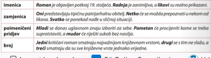
Subjekt u rečenici
Subjekt se često izostavlja (jer je već određen samim predikatom, tj. licem predikatnoga glagola) pa kažemo da je u takvim rečenicama zalihostan ili redundantan: Danas je (on) omiljena svjetska književna vrsta. Polazim (ja) sutra. Čekali smo (mi) tri sata. Takav se subjekt naziva neizrečeni (skriveni) subjekt. Neizrečeni (skriveni) subjekt lako ćete prepoznati iz predikata: Danas ću pročitati roman. (Tko? ja - 1.I.jd.) Ako predikat ne otvara mjesto subjektu, tj. ako uz predikat ne možemo postaviti pitanje za nominativ, onda je rečenica bez subjekta. Takva se rečenica naziva besubjektna rečenica: Priča se o tome. Predikat je u besubjektnoj rečenici uvijek u 3. licu jednine (obezličeni predikat). U službi su predikata bezlični glagolski oblici (radi se, govori se, priča se)
Sročnost subjekta i predikata
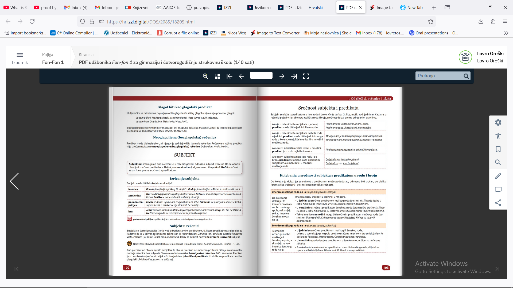
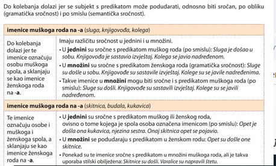
Sročnost po broju- zbirne i brojevne imenice
Do kolebanja u sročnosti kod zbirnih imenica dolazi jer su one po obliku u jednini (imenuju skup), a znače množinu. zbirne imenice na -a (braća, djeca, gospoda) Po obliku su imenice ženskoga roda na -a pa se tako i sklanjaju (kao kuća): djeca, djece, djeci... Slažu se s predikatom kao da su imenice srednjeg roda u množini (po smislu): Braća su došla kući. To su djeca pripremila iznenađenje za roditelje. Djeca su razigrana. Sigurno su gospoda dobro promislila o svemu. Gospoda su umišljena. zbirne imenice na -ad (momčad, unučad, čeljad, zvjerad, telad) Po obliku su imenice Ponašaju se kao i zbirne imenice tipa djeca, braća (po smislu): Unučad su zabavljala djeda i baku. ženskoga roda u jednini Međutim, uz njih glagol može biti i u jednini (gramatička sročnost): (kao laż). Momčad igra odlično. Naša je momčad pobijedila. zbirne imenice na -je (cvijeće, granje, lišće, perje) Po obliku su imenice srednjega roda u jednini (kao more). Sročne sus predikatom kao imenice srednjega roda u jednini (gramatička sročnost): Cvijeće je lijepo mirisalo. Granje je procvalo, a lišće je postalo zeleno. Perje je letjelo naokolo. brojevne imenice dvojica, trojica, četvorica... ⚫imenuju muški spol, a sklanjaju se kao imenice ženskoga roda na-a: dvojica, dvojice, dvojici... Sročne su s predikatom srednjega roda u množini: Trojica su se pojavila točno u podne. Četvorica su otputovala u Šibenik. brojevi dva, oba, tri, četiri... (muški i srednji rod) •Predikat je uvijek u množini: Dva čovjeka dolaze. Tri polja se obrađuju. Seljaka su tri na polju. • Glagolski pridjev (dio glagolskog predikata) i imenska riječ (dio imenskog predikata) u množini su srednjega roda: Još su dva dječaka došla. Tri su igrača kasnije dotrčala. Četiri su čekala na klupi. Oba su dobra. dvoje, oboje, troje, četvero... ⚫imenuju i muški i ženski spol Sročne su s predikatom srednjega roda u jednini: Dvoje je lutalo šumom cijeli dan. Na stazi se nalazilo četvero mladih ljudi. brojevi od pet nadalje Predikat je uvijek u jednini: Pet novih filmova danas stiže u kina. Sest studenata sutra odlazi na izlet. Devetnaest izletnika čeka vodiča. • Glagolski pridjev (dio glagolskog predikata) i imenska riječ (dio imenskog predikata) nalazi se u srednjem rodu jednine: Pet ljudi bilo je nestrpljivo. Sedam mora dijelilo ih je od cilja. Dvadeset sedam znatiželjnika smješteno je u brod.
Objekt je rečenični član kojim se izriče predmet radnje - imenuje svijet oko nas i u nama na koji se prenosi glagolska radnja. Mjesto mu u rečenici otvara glagol u predikatu: taj glagol >>upravlja objektom predodređujući mu gramatički oblik. Izriče se imenskim riječima (imenica, zamjenica, poimeničeni pridjev, broj): Gledamo film. Obraćamo se vama. Pričamo o mladima. Ne obraćajte pozornost na drugoga! Može se nalaziti u svim zavisnim padežima: genitivu, dativu (Nema kraja priči.), akuzativu bez prijedloga i akuzativu s prijedlogom (Promatram grad. Mislim na tebe.), lokativu (Razgovaramo o putovanju.) i instrumentalu (Mediji upravljaju informacijama.). Objekt prepoznajemo u rečenici prema značenju (predmet radnje), a određujemo ga postavljajući padežno pitanje uz glagol koji mu otvara mjesto: Gledamo film. (Gledamo - što? Film - objekt u akuzativu.) Padeži: samostalni ili nezavisni (nominativ, vokativ). Padeži: nesamostalni ili zavisni (genitiv, dativ, akuzativ, lokativ, instrumental). Vrste objekta izravni objekt • U rečenici mu mjesto otvaraju prijelazni glagoli: čitati (knjigu), promatrati (grad), voljeti (tebe). Gotovo je uvijek u akuzativu: Promatram ulicu. Uvijek je bez prijedloga: Čitamo novine. neizravni objekt U rečenicu ga uvode neprijelazni glagoli: razmišljati (o tebi), ponositi se (talentom). • Može biti u genitivu (Sjetili smo se zime.), dativu (Pomogli su nam.), akuzativu s prijedlogom (Mislim na vas.), lokativu (Priča se o izletu.) i u instrumentalu (Sami upravljaju imanjem.) Neizravni je objekt besprijedložni (Pričamo im.) ili prijedložni (prijedlog + imenica ili zamjenica): Pričamo im o ljetu
Izravni objekt u genitivu
Izravni objekt može se izreći genitivom. Dvije su vrste takva genitiva. dijelni (partitivni) genitiv Objekt izražava dio onoga što znači imenica: Kupio sam jabuka. Imaš li pameti? Uvijek je u genitivu bez prijedloga. • Može se zamijeniti akuzativom, ali mu se značenje pritom mijenja: Daj mi kruha. Daj mi kruh. slavenski genitiv • Javlja se u niječnim rečenicama: Ne vidim kraja. Ne zna ni riječi. Uvijek je u genitivu bez prijedloga. Zamijenimo li u njima genitiv akuzativom, značenje se ne mijenja: Ne vidim puta. Ne vidim put
Rečenični dio kojim se izriču okolnosti u kojima se vrši radnja naziva se priložna oznaka. U rečenicu se uvrštava po sadržaju predikata, koji joj otvara mjesto u rečenici. Izricanje priložne oznake Priložne se oznake najčešće izriču prilozima (ponekad, brzo, tamo), imenskim riječima u zavisnom padežu (u sobi, poput ptice, na trgu) ili zavisnom (priložnom) rečenicom (Volim šutjeti kada je oko mene mnogo ljudi.). Ako je izrečena imenicom, priložna oznaka može biti s atributom ili apozicijom: Turisti se kupaju u toplim izvorima. Putujemo na otok Hvar.
Vrste priložnih oznaka
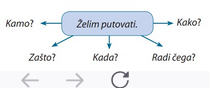
Priložna oznaka miesta Priložna oznaka mjesta izriče mjesto vršenja radnje izrečene predikatom i odgovara na pi- tanja Gdje? Kamo? Kuda? Odakle? Dokle? Putnici tamo čekaju autobus. Putnici sjede u čekaonici. Priložna oznaka vremena Priložna oznaka vremena označuje vrijeme odvijanja radnje. Odgovara na pitanja Kada? Otkad? Dokad? Sinoć su stigli prvi gosti. Do jutra smo pokušavali zaspati. Priložna oznaka načina Priložna oznaka načina pokazuje način vršenja radnje i odgovara na pitanje Kako? Način možemo izraziti usporedbom: Točni su kao sat. Brzo smo potrčali. Priča kao navijen. Priložna oznaka uzroka Jure poput ptice. Spori su kao puž. Priložna oznaka uzroka izriče uzrok radnje i odgovara na pitanja Zašto? Zbog čega? Zato je plesao. Stoga su svi zašutjeli. Neki su ljudi zbog ljubavi u stanju svašta podnositi.
Priložna oznaka namjere pokazuje namjeru s kojom se vrši radnja. Odgovara na pitanja Radi Čega? Zašto? S kojom namjerom? Trčim radi zdravlja. Izlazim radi zabave. Pozvali su me na kavu. Poslušaj ih radi sebe. Priložna oznaka uzroka i priložna oznaka namjere U praksi se obično griješi u izricanju uzroka i namjere, odnosno često se namjera i uzrok pogrešno izra- žavaju prijedlogom zbog: Odmorit ću se zbog umora. Trčim zbog zdravlja. U tablici su usustavljena neka pravila koja vam mogu pomoći u njihovu razlikovanju.
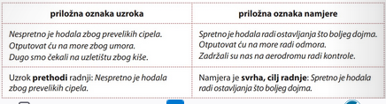
Priložna oznaka količine izriče količinu radnje izražene predikatom. Odgovara na pitanja Koliko? Koliko puta? Obično se izriče prilogom ili skupom riječi (više puta, nekoliko puta): Previše ste govorili. Mnogo znam o tebi. lako ste dolazili više puta, ne znači da nećete uspjeti. Priložna oznaka sredstva izriče kojim se sredstvom vrši radnja. Odgovara na pitanje: Čime? Izriče se instrumentalom bez prijedloga: Olovkom možete pisati domaću zadaću, ali školsku zadaću pisat ćete kemijskom olovkom. Putujete li na izlet vlakom? Zamahnuo je šibom i nastavio pjevati. Priložna oznaka društva izriče s kim u društvu subjekt vrši radnju izraženu predikatom. Odgovara na pitanje: S kim? Izriče se instrumentalom s prijedlogom: Pekar je sa susjedom razgovarao o vremenu. Hoćeš li se vidjeti s njom? Obećao im je da će doći sa psom. Priložna oznaka posljedice izražava posljedicu radnje izražene predikatom. Odgovara na pitan- je: S kojom posljedicom? Obično se izriče izrazom do + genitiv: Smijmo se do suza! Trčimo do iznemoglosti. Priložna oznaka pogodbe izriče uvjet pod kojim će se izvršiti radnja izražena predikatom: Bez truda nema uspjeha. Nema prave jeseni bez kiše. Uz mnogo volje, i to je ostvarivo. Uz dobar plan grada lako ćemo pronaći ulicu. Priložna oznaka dopuštanja izriče smetnju, odnosno zapreku unatoč kojoj će se radnja izreče- na predikatom izvršiti. Odgovara na pitanje: Unatoč čemu? Bili su dobri slušatelji unatoč umoru. Uza sve napore nisu uspijevali otvoriti poklopac. Sve se čulo usprkos bučnom orkestru. Priložna oznaka izuzimanja izriče nešto što se izuzima iz sadržaja rečenice. Odgovara na pitanje: Osim čega? Izuzimajući što? Svi su pljeskali osim nekolicine. Položio je sve ispite izuzev fiziku. Veselili su se svi osim tebe.
Razlika između objekta i priložne oznake
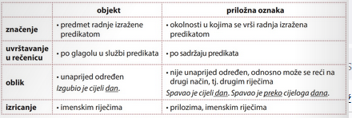
Nesamostalni rečenični članovi
Atribut je riječ (pridjev, zamjenica, broj ili imenica) koja se dodaje imenici da bi se pobliže odredilo njezino značenje: ukusan kolač, moj kolač, prvi kolač, kolač od jagoda. Odgovara na pitanja koji? Čiji? Kakav? Kolik? Dvije su vrste atributa: pridjevni i imenični atribut. PRIDJEVNI ATRIBUT topla čokolada, naša ulica, prva klupa Najčešće se izriče pridjevom (topla čokolada), a može se izreći i zamjenicom (naša ulica) ili brojem (prva klupa). Uvijek je u istom padežu kao imenica koju dopunjuje: mala klupa, male klupe, maloj klupi... Stoga se naziva i sročnim atributom. IMENIČNI ATRIBUT čokolada od naranče, boca soka, klupa bez naslona Najčešće se izriče imenicom (čaša soka). Nikada nije u istom padežu kao imenica koju dopunjuje. Zato se naziva i nesročnim atributom.
Imenični atribut može imati i svoj pridjevni atribut. U izrazu čovjek vedre naravi imenični je atribut naravi, a njegov pridjevni atribut vedre. Navest ćemo još nekoliko imeničnih atributa: ⚫ imenica + imenica u genitivu: čaša mlijeka, komad kruha, put svile, praznik rada, klupko konca i dr. Takvim se genitivom izriče pripadanje pa se kada je god to moguće treba zamijeniti posvojnim pridjevom: seljačka buna (a ne buna seljaka), upraviteljeva kći (a ne kći upravitelja) i dr. ⚫ imenica + prijedložni izraz: oskudica u novcu, hodanje po pruzi, most na Savi, grijanje na paru, dvorana za ples, savijača od jabuka i dr. Zapamtite da se imenični atribut ne sklanja -sklanja se samo imenica koju takav atribut dopunjuje: N čaša mlijeka, G čaše mlijeka, D čaši mlijeka (...).
Apozicija je imenica koja pobliže označuje drugu imenicu i slaže se s njom u padežu: sestra Ana, pjevač Luka, grad Varaždin, roman Stranac...
Riječ kao sintatička jedinica
Imenice su samostalne riječi. Mogu imati službu bilo kojega rečeničnog dijela: subjekta (imenica u nominativu), dijela imenskoga predikata, objekta ili priložne oznake
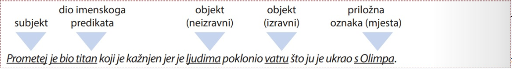
Imenica može biti glavna sastavnica nekoga rečeničnog dijela, primjerice priložne oznake: Na pozornicu svijeta mitova Prometej stupa u doba Zeusove pobune. Imenica se pojavljuje i u službi atributa i apozicije, kao zavisna sastavnica nekoga rečeničnog dijela: ⚫junak mita, pozornica svijeta, doba pobune (atribut) ⚫titan Prometej, vladar Zeus, bog Hefest (apozicija). Pridjevi su najčešće u službi dijela imenskoga predikata ili u službi atributa: Ovaj veliki dar dao im je jer je bio dobar i jer je volio nesavršene i bespomoćne ljude. Zamjenice zamjenjuju imenice i pridjeve, pa mogu imati i službu u rečenici poput njihove:
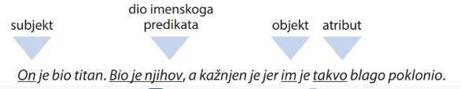
Brojevi se najčešće nalaze uz imenicu kao njezini atributi: deset godina, prvoga pomagača. Mogu biti i dio imenskoga predikata ili subjekt: Prometej je bio prvi. Prvi uvijek stradaju.
Glagol je u rečenici najčešće u službi predikata: Prometej je ljudima nesebično poklonio vatru. Samo neki glagolski oblici mogu imati i drugu službu u rečenici. • Infinitiv može biti subjekt: Pomagati je plemenito. • Glagolski pridjevi mogu imati službu atributa: Usnuli ljudi nisu ništa slutili. Gledali su iznenađene mještane.
Prilozima u rečenici najčešće izričemo priložne oznake: Tamo ga je bog Hefest morao prikovati na stijenu. Jutros je tiho govorio. Mogu biti i dopune pridjevima ili drugim prilozima: Bio je to vrlo dobar potez. Prometej je postupio vrlo hrabro. Rečenični prilozi mijenjaju značenje rečenice (zaista, možda, vjerojatno, naravno i dr.) ili služe za povezivanje rečenica u tekstu (međutim, štoviše, također i dr.). Prijedlozi nemaju samostalnu službu u rečenici. Njima se označuju odnosi među riječima, pa mogu biti samo dio kakvoga skupa riječi: Zbog usluga koje je učinio ljudima, Zeus je Prometeja osudio na okrutnu kaznu. Veznici u rečenici povezuju riječi i rečenice, a mogu služiti i za isticanje: Prometej i ljudi sklopili su savez. Į Zeus je bio titan, ali nije želio pomoći ljudima. Vezničku službu mogu imati i druge vrste riječi: prilozi (gdje, kuda, otkako), odnosne zamjenice (tko, što, koji, čiji, kakav, kolik) ili skup riječi (budući da, kao da, samo što, jedino što, tek što, zbog toga što). Usklici (uzvici) uglavnom su samostalne govorne jedinice, što znači da nisu dijelovi rečenice, već joj daju dodatno emocionalno značenje: Ah, što bi bilo s ljudima da im Prometej nije pomogao! Čestice (riječce, partikule) služe za oblikovanje ili preoblikovanje rečeničnoga ustrojstva, a u rečenici mogu imati različite uloge, primjerice potvrdu ili nijekanje prethodnoga iskaza ili oblikovanje upitne rečenice: Prometej je bio dobar. Da, tako je. Ne, nije tako. Nije li tako
Rečenica i tekst
Malo si se požurila. Ipak, u renesansi je počeo proces koji je na kraju doveo ljude do Mjeseca. Do Hirošime i Černobila također. No, sve je počelo nizom promjena na kulturnom i ekonomskom području. (Jostein Gaarder, Sofijin svijet) Do Hirošime i Černobila također. Rečenicu možemo promatrati ili samu za sebe ili kao dio veće cjeline, odnosno u nekom kontekstu. Kada ju promatramo samu za sebe, pristupamo joj kao gramatičkoj jedinici. Međutim, rečenica svoj pravi smisao dobiva tek kao komunikacijska jedinica, odnosno kada njome komuniciramo. Rečenica kao gramatička jedinica Rečenicu kao gramatičku jedinicu obilježava članjivost: dijeli se na rečenične članove - predikat, subjekt, objekt i priložne oznake (samostalni članovi) te nesamostalne članove (atribut i apozicija). Rečenica kao komunikacijska jedinica Rečenica kao komunikacijska jedinica, odnosno rečenica kojom stvarno komuniciramo, naziva se iskaz. Iskaz se može definirati i kao jedna od mogućih realizacija rečenice kao jezične jedinice. Obavijesno ustrojstvo iskaza čini dio koji nam je otprije poznat - obavijesni subjekt (tema) i dio koji nosi novu obavijest - obavijesni predikat (rema). U tablici je prikazan odnos između rečenice kao gramatičke i rečenice kao komunikacijske jedinice.
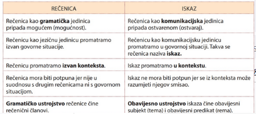
SAVJET Imajte na umu obavijesno ustrojstvo iskaza pri pisanom izražavanju. Ako ponavljate iste riječi u nekoliko uzastopnih rečenica, to možete izbjeći vrlo jednostavno. Takve riječi upotrijebite kada ih uvodite kao novu informaciju, a u sljedećim rečenicama zamijenite ih zamjenicom ili sastavite rečenicu tako da se one podrazumijevaju iz konteksta. NEPRAVILNO: Često upotrebljavamo iste riječi. Te riječi ne govore mnogo. O tim riječima znamo sve. PRAVILNO: Često upotrebljavamo iste riječi. One ne govore mnogo. O njima znamo sve.
Bajke nose optimističnu poruku. One imaju i obrazovnu vrijednost. Djecu treba poučiti. Oni koji se ne ponašaju dobro mogu i loše završiti. Nemaju sve bajke sretan završetak. Ta se želja ne ostvari svakom. Gotovo svaki čovjek sanja o preokretu u svom životu. U bajkama se često opisuju nadnaravni događaji. Stručnjaci smatraju da znaju zašto je Pepeljuga toliko poznata bajka. Zašto su nastale bajke? Dobri likovi u bajkama pomažu ljudima. Svi se likovi uvijek dijele na dobre izle. (prema: Maja Grgin, Bajke između mašte i stvarnosti) povezivanje rečenica u tekst (rečenični prilozi) Često ćete u tekstu naići na ovakve riječi: međutim, a, ali, na žalost, na sreću, sigurno, možda, uostalom, dakle, štoviše, uz to, svejedno, inače i dr. One su po obliku najčešće prilozi, čestice i veznici. Ne pripadaju nijednoj od rečenica nego ih povezuju u tekst. Uspoređujući svoj tekst s tekstovima drugih učenika, mogli ste zaključiti da su vam tekstovi različiti ovisno o tome tko ih je sastavljao i s kojim ciljem, odnosno komu je tekst bio namijenjen. Svi navedeni elementi određivali su i način na koji ste rečenice povezivali u tekst. Rečenični prilozi Rečenice možemo povezivati u tekst na različite načine. Pritom se služimo rečeničnim prilozima: jednima povezujemo rečenice u tekst (konektori), a drugima mijenjamo (modificiramo) značenje rečenice na koju se odnose (modifikatori).
Konektori Promotrite ulogu podcrtanih riječi u građenju teksta. Svi su ga gledali i očekivali reakciju. Prema tome, svi će biti zadovoljni. Naprotiv, nitko se s tim neće složiti. Na razini teksta pojavljuju se različite riječi ili skupovi riječi koji služe kao vezna sredstva, odnosno kojima se rečenice povezuju u tekst. Takve se riječi i skupine riječi nazivaju konektori. KONEKTORI (primjeri) ⚫a, no, ali, međutim, naprotiv, nasuprot tome... (označuju suprotnost) ⚫bolje rečeno, drugim riječima, odnosno, naime, to jest... (sadržaj sljedeće rečenice objašnjava sadržaj prethodne rečenice) ⚫dakle, prema tome, jednom riječju (zaključni) ⚫uz to, osim toga (dodaju nešto sadržaju prethodne rečenice) ⚫onda, kasnije, tada, poslije toga (uspostavljaju vremenski odnos) ⚫inače, u tom slučaju (sadržaj prethodne rečenice uvjet je za ostvarenje sadržaja sljedeće rečenice) ⚫ svejedno, unatoč tomu (dopušta se sadržaj sljedeće rečenice unatoč sadržaju prethodne). Modifikatori Usporedite odnos prve i druge rečenice u dvama primjerima. Zaključite koja je uloga izraza nažalost, nasreću. Čekali smo ih. Nažalost, nisu se pojavili. Čekali smo ih. Nasreću, nisu se pojavili. Nekim riječima ili skupovima riječi možemo prilagoditi (modificirati) značenje rečenice u kojoj se takva riječ, odnosno izraz nalazi. U našim smo primjerima takvim skupom riječi izrazili svoj stav: u prvom slučaju žaljenje, u drugom radost. Takve se riječi ili skupovi riječi nazivaju modifikatori. Riječi ili skupovi riječi koji daju dodatno značenje cijeloj rečenici ispred koje se nalaze, odnosno modificiraju njezino značenje, nazivaju se modifikatori. Njima se izriče odnos govornika prema sadržaju druge rečenice MODIFIKATORI (primjeri) možda, vjerojatno, uistinu, istina, bez sumnje, nažalost, nasreću...
Funkcionalni stilovi
Kada govorimo o stilu, otvara nam se bezbroj mogućnosti: možemo govoriti, primjerice, o nečijem odjev- nom stilu, o stilu uređenja stana, ali i o književnom, glazbenom, graditeljskom ili likovnom stilu. Suzimo li značenje na jezično izražavanje, možemo reći, primjerice, da je nečiji stil jednostavan, nečiji težak, a nečiji humorističan. Stil je izbor između više mogućnosti za izricanje istoga sadržaja. U jezikoslovlju se stil definira kao način oblikovanja teksta s obzirom na izbor i uporabu jezičnih jedinica. Znanost koja proučava stil, to jest funkcionalnu uporabu jezičnih jedinica, naziva se stilistika.
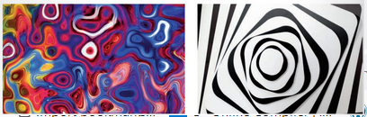
U definiciji standardnoga jezika naglašeno je da je standardni jezik polifunkcionalan, što znači da se njime služimo u svim područjima ljudske djelatnosti: književnosti, znanosti, medijima (novine, televizija, radio, internet), javnim ustanovama, svakodnevnom govoru. S obzirom na područja u kojima se upotrebljavaju, razlikujemo pet funkcionalnih stilova: admini- strativni, publicistički, književnoumjetnički, razgovorni i znanstveni stil. lako svaki od njih ima svoja posebna obilježja, nešto im je zajedničko: u osnovi su svakoga stila opća pravila standardnoga jezika.
ADMINISTRATIVNI STILOVI
Zakon o medijima J II. OPĆA NAČELA. 1. Sloboda medija Članak 3. (1) Jamči se sloboda izražavanja i sloboda medija. (2) Sloboda medija obuhvaća osobito: slobodu izražavanja mišljenja, neovisnost medija, slobodu prikupljanja, istraživanja, objavljivanja i raspačavanja informacija u cilju informiranja javnosti; plu- ralizam i raznovrsnost medija, slobodu protoka informacija i otvorenosti medija za različita mišlje- nja, uvjerenja i za raznolike sadržaje, dostupnost javnim informacijama, uvažavanje zaštite ljudske osobnosti, privatnosti i dostojanstva, slobodu osnivanja pravnih osoba za obavljanje djelatnosti javnoga informiranja, tiskanja i raspačavanja tiska i drugih medija iz zemlje i inozemstva, proizvod- nju i objavljivanje radijskog i televizijskog programa, kao i drugih elektroničkih medija, autono- mnost urednika, novinara i ostalih autora programskih sadržaja u skladu s pravilima struke. (3) Slobode medija dopušteno je ograničiti samo kada je i koliko je to nužno u demokratskom društvu radi interesa nacionalne sigurnosti, teritorijalne cjelovitosti ili javnoga reda i mira, sprječa- vanja nereda ili kažnjivih djela, zaštite zdravlja i morala, zaštite ugleda ili prava drugih, sprječavanja odavanja povjerljivih informacija ili radi očuvanja autoriteta i nepristranosti sudbene vlasti samo na način propisan zakonom. (4) Zabranjeno je prenošenjem programskih sadržaja u medijima poticati ili veličati nacionalnu, rasnu, vjersku, spolnu ili drugu neravnopravnost ili neravnopravnost na temelju spolne orijentaci- je, kao i ideološke i državne tvorevine nastale na takvim osnovama, te izazivati nacionalno, rasno, vjersko, spolno ili drugo neprijateljstvo ili nesnošljivost, neprijateljstvo ili nesnošljivost na temelju spolne orijentacije, poticati nasilje i rat. (https://www.zakon.hr/z/38/Zakon-o-medijima; učitano 4.9.2018) Administrativni stil pokriva područje administrativno-pravne djelatnosti: upotrebljava se u upravi, politici, diplomaciji, ekonomiji i sl. Takvim su stilom pisani obrasci, zakoni, zapisnici, službeni dopisi, izvješće i sl. Riječ se u administrativnom stilu upotrebljava u svom osnovnom značenju jer je bitno postići sažet i precizan izraz kojim se oblikuju jasne tvrdnje. Rečenične su konstrukcije bezlične (određuje se i sl.), ustaljene i građene po istom obrascu. Administrativni je stil zbog tako širokog područja koje pokriva najpodložniji izvanjezičnim utjecajima, a vrlo snažno utječe na ostale funkcionalne stilove.
ZNANSTVENI STIL
objektivan/subjektivan riječ se upotrebljava u svom osnovnom značenju/ riječ se upotrebljava i u osnovnom i u prenesenom značenju glagolski oblici: uglavnom prezent/ glagolski oblici: kondicional prvi i imperativ misli su logički ustrojene: jedna proizlazi iz druge /misli nisu povezane logički, nego asocijativno Katarina Dadić, Dijete u središtu konzumerizma Fenomen dječjeg konzumerizma pojavljuje se kao istraživačka tematika tek 90-ih godina proš log stoljeća u okviru disciplina medijskih studija ili kao dio istraživanja za komercijalne svrhe (Cook, 2005). Većina istraživanja o dječjoj podložnosti oglašavanju služila su i služe za marke- tinške svrhe velikih korporacija (Hood, 2000). Posljednjih 25 godina rezultati svih istraživanja ovog područja pokazuju štetan utjecaj konzumerizma na djecu (Kramer, 2006). Do svoje dvanaeste godine djeca su u središtu potrošačke kulture, a to iskorištavaju oglašiva- či koji predstavljaju važan dio iste \"kulture\". Velike korporacije utječu na iskorištavanje dječjih emocija u korist povećane potrošnje (Allen, 2000). Zašto su djeca toliko važna ciljna grupa oglašivačima? Ona im predstavljaju potrošačke ovisnike koji će im cjeloživotno iskazivati svo ju vjernost. Tržišne snage nadmeću se u izgradnji dječjih identiteta oko prakse potrošnje, a i djeca nose ulogu motivirajući svoje roditelje, bake i djedove za konzumirajuću praksu. Zakon o Zaštiti potrošača u Republici Hrvatskoj smatra agresivnom poslovnom praksom oglašavanje kojim se djecu izravno navodi da kupe proizvod ili da nagovore svoje roditelje ili ostale puno- ljetne osobe da im kupe oglašavani proizvod (2007, čl.115). MediAnali: medunarodni znanstveni časopis za pitanja medija, novinarstva, masovnog komuniciranja i odnosa s javnostima) Znanstveni stil stil je objektivne komunikacije i karakterističan je za znanstvena područja. Njime se izražavaju znanstvenici koji moraju logično, racionalno, sažeto i precizno iznijeti neku znanstvenu tezu i argumentirano je obrazložiti. Stoga je u njemu najizraženija logička organizacija izraza i sadržaja te uporaba znanstvenih termina i internacionalizama. Zbog zahtjeva za objektivnošću riječi su u znanstvenom stilu svedene na svoje osnovno značenje, što znači da nemaju drugih (subjektivnih, prenesenih) značenja. Takvim su stilom pisani znanstveni radovi, referati, predavanja, rasprave i sl.
PUBLICISTIČKI STIL
Zagreb dobio nesvakidašnji muzej - Muzej iluzija Hologrami, optičke varke rupe bez dna i još mnogo drugih zabavnih stvari očekuje sve posjetitelje prvog zagrebačkog Muzeja iluzija. Glavni grad Hrvatske postaje bogatiji za još jedan muzej, Muzej iluzija, čiji svijet s najvećom zbir- kom holograma u ovom dijelu Europe i s preko 70 eksponata potpuno oduševljava, štošta uči, zasigurno iznenađuje pa i zbunjuje, jer u tom muzeju pouzdano ništa nije onakvo kakvim se čini! Muzej iluzija svoja zagrebačka vrata otvara upravo danas na adresi Ilica 72. Muzej iluzija nudi intrigantno vizualno, osjetilno i edukativno iskustvo u zabavnoj avanturi za sve generacije. Kroz atraktivne i zabavne varke, posjetitelji će mnogo naučiti o vidu, percepciji, ljudskom mozgu i znanosti te će moći bolje razumjeti zašto oči vide stvari koje mozak ne razumije. Zamislite da se odupirete gravitaciji u kosoj sobi, kako se osoba s kojom ste došli odjednom sma- njuje ili povećava, kako stvarno vidite rupu bez dna, kako poslužujete nečiju glavu na pladnju i sve to ovjekovječujete fotografijom u beskonačnoj sobi! Muzej ima i pametnu igraonicu koja kroz razne didaktičke koncepte i Dilemma igre pretvaraju igraonicu u pravi fitness za mozak, dok muzejski shop nudi 3D rasvje- tu, didaktičke igračke za sve uzraste i suvenire, a sve kako bi posjetitelji sa sobom ponijeli iskustvo čudenja i otkrivanja koje ne prestaje izlaskom iz pravog carstva iluzija! Ne trebate zamišljati nemoguće, jednostav- no dođite u Muzej iluzija! (http://www.poslovni.hr/hrvatska/zagreb-dobio- nesvakidasnji-muzej-muzej-iluzija-297987; objavljeno 24.6.2015) FOTO: Muzej iluzija Publicistički stil zastupljen je u medijima - to je stil javnoga priopćavanja: tiskovina, radija, televi- zije, internetskih portala. Njegov je leksik najbliži općeuporabnom leksiku jer je namijenjen širokom krugu korisnika. Po nekim je obilježjima blizak znanstvenom, a po nekim književnoumjetničkom stilu: od znanstve- noga stila preuzeo je objektivnost i sažetost, a od književnoumjetničkoga stila individualnost. Zbog tih ga se obilježja naziva i hibridnim stilom. U publicističkom se stilu poštuje standardnojezična norma: mediji su vrlo utjecajni i iznimno je važno, posebice u javnim medijima, služiti se standardnim jezikom. Postoje različite publicističke vrste: vijest, intervju, reportaža, feljton (podlistak), polemika i sl.
KNJIŽEVNOUMJETNIČKI STIL
Italo Calvino, Ako jedne zimske noći neki putnik Oslobadaš se u hitroj cik-cak liniji i jednim skokom prodireš u tvrđavu Noviteta Kojima Te Privlači Autor Ili Tema. I u unutrašnjosti utvrde možeš praviti breše u redovima neprijatelja, dijeleći ih na Novitete Kojima Autori Ili Teme Nisu Novi (za tebe ili apsolutno), i Novitete Kojima Su Autori Ili Teme Potpuno Nepoznati (barem tebi), i određivati snagu kojom te privlače na temelju svoje želje i po- trebe za novim i za onim što nije novo (za novim koje tražiš u onome što nije novo, i za novim koje tražiš u onome što jest novo). A zapravo si samo prešao pogledom po naslovima knjiga u knjižari, uputio se prema jednoj hrpi svježe tisnutih svezaka knjige Ako jedne zimske noći neki putnik, uzeo jedan primjerak i odnio ga na blagajnu, kako bi se ondje uspostavilo tvoje pravo vlasništva nad njima. Bacio si još jedan izgubljen pogled na knjige unaokolo (ili bolje: knjige su tebe gledale izgubljenim pogledom pasa što iz kaveza u gradskoj živodernici gledaju svojega bivšeg druga kako se udaljava, dok ga na uzici vodi gospodar koji je došao da ga iskupi), pa si izašao. Osnovno je obilježje književnoumjetničkoga stila individualnost i sloboda s obzirom na bilo kakvu normu. Svoju građu ovaj stil crpi iz svih područja, a riječ se pritom može upotrebljavati u osnovnom i prenesenom značenju. U njemu se koriste riječi iz svih jezičnih slojeva, bez obzira na njihovu vremen- sku ili područnu raslojenost (arhaizmi, dijalektizmi i sl.), a nisu rijetke ni riječi iz razgovornoga jezika. Književnoumjetnički je stil izraz originalnoga pojedinca, stoga je najslobodniji i najmanje podložan bilo kakvim ograničenjima.
RAZGOVORNI STIL
Razgovornim stilom služimo se u svakodnevnoj komunikaciji. Temeljna su mu obilježja spontanost, jednostavne rečenice, emocionalni izrazi, poštapalice, geste i sl. Ostvaruje se i ugovornoj i u pisanoj komunikaciji. U leksiku se razgovornoga stila miješaju riječi iz standardnoga jezika s riječima koje ne pripadaju standardu. Kolokvijalizmi su riječi i izrazi koji ne pripadaju standardnom jeziku, a svojstveni su razgovornomu stilu: printer umjesto pisač, šoping umjesto kupnja i dr. Žargonizmi su riječi svojstvene žargonu, odnosno posebnom jeziku kojim se koriste pripadnici neke uže skupine ljudi odre- dene dobno ili društveno (mladi ljudi, različita zanimanja i sl.).
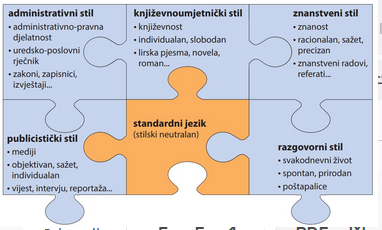
U svakom stilu pojavljuju se ustaljeni izrazi koji su za njega karakteristični. STIL ADMINISTRATIVNI ustaljeni izrazi karakteristični za određeni stil administrativizmi žurnalizmi scijentizmi kolokvijalizmi PUBLICISTIČKI ZNANSTVENI RAZGOVORNI KNJIŽEVNOUMJETNIČKI poetizmi, beletrizmi Kada takvi izrazi uđu u opću, odnosno stilski neutralnu uporabu, treba ih zamjenjivati riječima i izrazima koji su stilski neutralni. U tablici su navedene neke pogreške i njihova zamjena u stilski neutralnom stan- dardnom jeziku
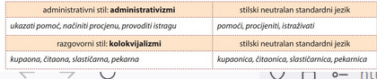
Administrativni stil
Obrazac (tiskanica, formular) naziv je za isprekidani tekst s rubrikama u koje se upisuju traženi podatci. Kao vrsta teksta pripada administrativnom stilu (područje administrativno-pravne djelatnosti).
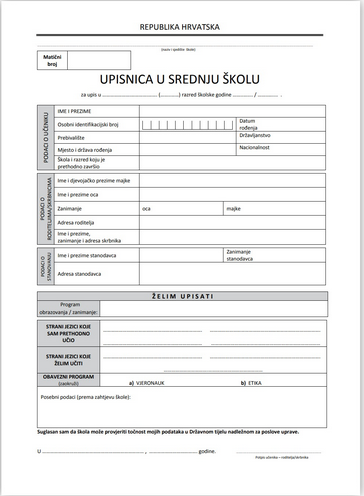
U administrativnom se stilu javljaju neke riječi i izrazi koje valja izbjegavati u standardnom jeziku. Takvi su izrazi, primjerice, u slučaju da, uz uvjet da, iz tog razloga, iz razloga što, na taj način. Česte su u administrativnom stilu i tzv. »prazne riječi, tj. imenice koje se nepotrebno dodaju drugim imenicama: pitanje, plan, problem, sustav, politika, područje... POGREŠNO po tom pitanju, na planu izvoza, problem otpadnih voda, politika zapošljavanja, u području odgoja i obrazovanja PRAVILNO o tome, u izvozu, otpadne vode, zapošljavanje, odgoji obrazovanje
Pleonazmi
Pleonazam je naziv za gomilanje istoznačnih riječi u izrazu. Rečenica u kojoj je upotrijebljen pleonazam Čekat ću oko desetak dana tvoj odgovor. Pravilna rečenica Čekat ću oko deset dana tvoj odgovor. Čekat ću desetak dana tvoj odgovor. OBJAŠNJENJE: izraz »oko« i sufiks-ak imaju isto značenje. Pleonazmi su karakteristični za administrativni i za razgovorni stil. Međutim, kada uđu u standardni jezik, potrebno ih je zamijeniti stilski neutralnim izrazima. U tablici je navedeno nekoliko pleonazama. zajednički suživot (birati) na vrijeme od četiri godine gradonačelnik grada u stanju rezignacije u vrijeme kad suživot = zajednički četiri godine vrijeme načelnik grada = gradonačelnik rezignacija = stanje kad=vrijeme
Publivistički stil
Publicistički stil primjenjuje se u medijskom prostoru: u novinama, na radiju, televiziji i na internet- skim portalima. Temeljna su novinarska načela aktualnost, vjerodostojnost, važnost i zanimljivost. Uz njih se obično povezuju i funkcije novinarstva: informativna, popularizatorska, propagandna, zabavna i dr. Dobar novinar najprije mora svladati umijeće pisanja publicističkim stilom, odnosno odabirom riječi i načinom izražavanja pronaći put do prosječnoga čitatelja. Engleski književnik i esejist George Orwell u jednom je tekstu predložio šest pravila dobroga pisanja. 1. Nikada ne koristi metafore ili slične jezične figure koje si navikao pronaći u pisanom tekstu. 2. Nikada ne koristi dugu riječ gdje možeš rabiti kraću. 3. Ako se neka riječ može izbaciti, uvijek je izbaci. 4. Nikada ne koristi pasiv ako možeš koristiti aktiv. 5. Nikada ne koristi tudice, stručne izraze ili žargon ako imaš sinonim u svojem jeziku. 6. Prekrši bilo koje od ovih pravila prije nego kažeš nešto glupo. (Stjepan Malović, Osnove novinarstva)
Vijest Vijest je osnovna novinska (publicistička) vrsta: to je kratak izvještaj o dnevnom događaju. Obično odgovara na pet temeljnih pitanja: tko sudjeluje, što se događa, gdje se dogada, kada se događa, zašto se dogada. Vrste vijesti: novinska vijest, radiovijest, televizijska vijest.
vijest, općenito, prva obavijest koja se daje ili prima o kakvu nedavnom do- gađaju; obavještavanje zainteresirane publike ili osobe o tom dogadaju. Os- novna novinska vrsta; najkraći i najpristupačniji oblik pisane, govorene i vizu- alne informacije o nekom događaju, pojavi ili osobi od širega javnog interesa. Vijest u novinama ima tzv. glavu i tzv. tijelo, pravilo glave vijesti traži da naj- važnije bude istaknuto odmah na početku. Jezik vijesti je standardan, odliku- ju ga jasnoća, točnost i preciznost. Kompletna vijest odgovara na pet ključnih pitanja (tko, što, gdje, kada, zašto; tzv. 5 W's, prema engleskim početcima pi- tanja: Who, What, Where, When, Why). Za razliku od novinske vijesti, radiovijest je, s obzirom na medijske uvjete, sažetija i izraženija, češće ponavlja glavne činjenice. Televizijska pak vijest spaja sliku i riječ i najzornija je medijska vrsta vijesti, odnosno postiže najjači učinak. Vijest se često razvrstava prema vreme- nu i važnosti na tzv. prvu vijest, glavnu vijest, udarnu vijest, vijest dana.
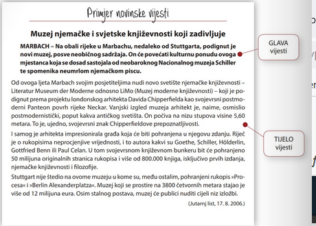
Lažne vijesti Čitajući vijesti u medijima, nailazimo i na tzv. lažne vijesti: objavljuju ih ljudi koji žele dezinfor- mirati, propagirati neku ideju ili proizvod, ali i izazvati masovnu reakciju obmanutih čitatelja ili narugati se i nekoga ismijati. Važno je prepoznati takvu vijest: u tome nam može pomoći osam pravila koja je sastavila IFLA - Međunarodna federacija knjižničarskih društava i ustanova.
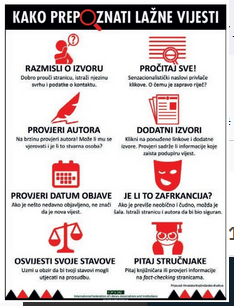
Izvješće je novinska vrsta opširnija od vijesti: zbog duljine se u izvješću može usmjeriti na različite aspekte dogadaja o kojem se izvještava - uzroke, posljedice, značenje i sl. Na početku se navode najvažnije činjenice (vijest), a one se u nastavku razrađuju prema važnosti (obrnuta piramida). U izvješću se, za razliku od vijesti, koriste i citati.
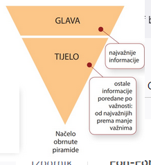
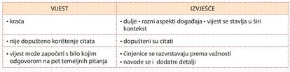
reportaža
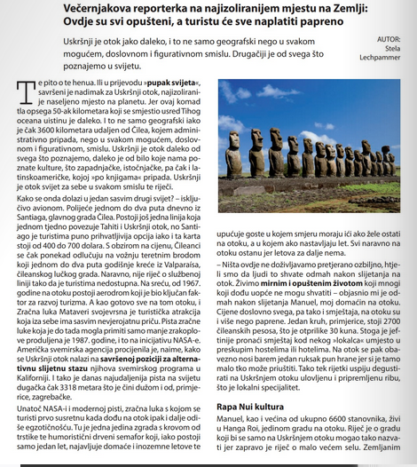
Reportaža je novinska vrsta u kojoj se obrađuje neki realan događaj i okolnosti koje su do njega dovele, odnosno aktualna tema, a nastaje na temelju obavijesti prikupljenih na terenu. Obilježava je autorski pristup i osobni stil: subjektivnost, dočaravanje ugođaja i sl. Stilska su obilježja reportaže pripovijedanje (sažetost, zanimljivost), opis, dijalog; bliska je književno- umjetničkom tekstu. Vrste reportaže • prema temi - putopisna, ratna, socijalna i dr. • prema mediju - novinska, radijska, televizijska
intervju
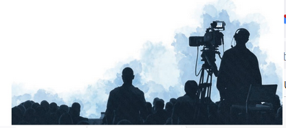
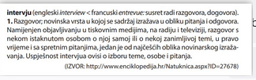
Intervju je razgovor s osobom o problemima koje treba posebno objasniti kako bi čitatelji, slušatelji i gledatelji mogli o njima steći svoje mišljenje. Njihove su bitne značajke aktualnost i jezična autentičnost. (Da bi se ta jezična autentičnost osigurala, intervju se obično daje na autori- zaciju. Otuda naziv >autorizirani intervju.) Uloga mu je da priopći što novo i da to novo iznese onako kako ga intervjuirana osoba shvaća. Intervju se razlikuje od ostalih žanrova i time što novi- nar koji ga vodi biva izravnim posrednikom između osobe s kojom ga vodi i čitatelja, slušatelja i gledatelja. I to onda dobrim dijelom odlučuje o karakteru njegova jezika. Jezik se novinara koji ga vodi razlikuje od jezika osobe s kojom ga vodi. U jeziku novinara ima jezičnih osobina (prvenstve- no leksičkih) koje su svojstvene intervjuiranoj osobi. Njima se novinar, uz pomoć svojih poticajnih riječi, srođuje s jezikom intervjuirane osobe te tako postiže svojevrsnu jezičnu interaktivnu cjelinu. (Josip Silic, Funkcionalni stilovi)
INTERVJU PRIMJER
Kristian Novak: Svagdje oko nas ima zanimljivih priča Sam početak prošlog tjedna obilježio je dolazak Kristiana Novaka, jednog od najvećih suvremenih pisaca, koji se rado odazvao pozivu naših učenika i profesoric)a na književnu tribinu koju smo na- zvali jednostavno- »S Novakom na kavis. Novak je dvostruki dobitnik nagrade T-Portala za roman godine, književne nagrade Ksaver Sandor Gjalski te nagrade Fran Galović, a njegovi pobjednički romani »Črna mati zemlax i >Ciganin, ali naj- ljepši prodani su u više tisuća primjeraka (usporedbe radi, uobičajena naklada za romane je između 500i 1000 primjeraka - i to za one koje smatramo uspješnima). U nastavku pročitajte kako se Kristian proveo »na kavi s našim učenicima, što misli o sadašnjem i budućem popisu lektire, može li se u Hrvatskoj zivjeti od pisanja te planira li napisati djelo o svojim karataškim danima. Koje Vam je omiljeno vrijeme za pisanje? Pišete li danju ili noću? Najradije pišem navečer, no tada imam problem - ako završim u ponoć, ne mogu zaspati do tri ujutro. Ja sam, doduše, zaklopio laptop, ali mozak mi još uvijek radi i tada mi na pamet padaju najbolje ideje. Mislite li da se u Hrvatskoj može živjeti od pisanja? U Hrvatskoj ima samo nekoliko pisaca koji žive samo od pisanja i ne žive osobito dobro. Ne znam jeste li znali, ali prosječno, ako u Hrvatskoj izdaš zbirku pjesama, to će se prodati u 50 primjeraka; ako izdaš zbirku kratkih priča, možeš očekivati prodaju 200-300 primjeraka, a s romanom ako dođeš do 700, onda si car. Pisac od prodaje svake knjige dobije do 10% pa razmislite malo može li se živjeti od toga. Situacija je bolja kada dolazi do kazališnih i filmskih adaptacija, ali nisu svi te sreće. Tko su Vaši uzori u pisanju i tko je utjecao na Vas u tom smislu? Na mene su utjecali svi pisci čije knjige sam pročitao - i oni dobri i oni loši. Pitate se zašto loši? Kada pročitam neku lošu knjigu ili pogledam loš film, odmah počnem razmišljati zašto je loš te što bih promijenio da bude dobar. Od dobrih mi na pamet pada Kafka - iako ne pišem kao on niti bi mi palo na pamet da ga pokušavam imitirati - jer je bio prvi koji je pisao takve rečenice za koje imaš osjećaj da te nešto udarilo u pleksus, a ne znaš točno zašto. Neke njegove kratke priče znam napamet, a čitao sam ih kad sam imao 15 ili 16 godina. To su tekstovi koji ti pokazuju da riječima možeš napraviti silan emotivni efekt. I mnogi hrvatski pisci kao što su Damir Karakaš, Ivica Prtenjača i Olja Savičević Ivan- čević također su utjecali na mene.
Mislite li da bi »Črna mati zemla« trebalo biti lektirno djelo? Nisam stručnjak za to-nisam sudjelovao u sastavljanju popisa, niti u izbacivanju djela s popisa i stvar. no, ruku na srce, nije ni bitno hoće li »Črna mati biti na popisu ili ne. Bitnije su puno dublje stvari. Želimo li mi popis lektire koji će ljude potaknuti na čitanje? Jer trenutni popis lektire ljude miče od čitanja, to je problem. Treba nam popis lektire koji kreće od suvremenosti i koji će ljude privući čitanju. Kako komentirate to da na popisu nema zapravo niti jednog suvremenog pisca te da su se samo tri žene našle i to samo na izbornom popisu? Moguće je da je u prošlosti omjer kvalitetno napisane književnosti bio više na strani muškaraca, čisto iz razloga što su u patrijarhalnom sustavu žene imale vrlo ograničen djelokrug. Objavljivalo je daleko više muških nego žena, ali to se u današnje vrijeme jako promijenilo. Nije problem što su samo tri su- vremena pisca na popisu lektire, nego je skandal što medu ta tri nemamo nijednu ženu. Kakvu poruku šaljemo? Cure, nemojte ni početi pisati zato što nema šanse da uđete u povijest? Meni je veći problem omjer muškaraca i žena, nego omjer živućih i mrtvih pisaca. Kako Vam se svidjelo na našoj književnoj tribini i jeste li zadovoljni kako je sve prošlo? Odlično je bilo, sjajno ste se pripremili i bilo mi je jako ugodno. Baš kao da sam na kavi s mladim dragim ljudima koje tek upoznajem. Mislite li da bi Vam pomoglo da je u Vaše vrijeme postojala Športska gimnazija? Volio bih da je postojala ovakva gimnazija, iako me snažno obilježila Gimnazija u Čakovcu (današnja Gimnazija Josip Slavenski). Danas mi se čini da se u ono vrijeme još puno više polagalo na reproduk- tivno znanje iako su neki profesori intuitivno radili i problemski i kreativno. U međuvremeno je to, kao što smo vidjeli na današnjoj >kavi«, postala osnova. Učenici nisu više objekti, nego sukreatori procesa. Bravo za Sportsku! Kako ste otkrili da imate talent za pisanje? U osnovnoj školi su mi govorili da ga uopće nemam, nisam znao ispričati priču koja ima početak i kraj, tako da sam mislio da sam propali slučaj sve dok nisam došao u srednju školu. Tamo mi je profesor hrvat- skog na novinarskoj isto rekao da mi tekst nije dobar, no pokazao mi je kako ga popraviti. To je bio moj prvi susret s uredničkim radom. Tada sam zapravo počeo učiti pisati i shvaćati što se sve može s tekstom. U čemu pronalazite inspiraciju za pisanje djela? Svugdje oko nas ima zanimljivih priča, u zgradi u kojoj živite vrlo vjerojatno ima 5 ili 10 zanimljivih priča. Svaki čovjek u sebi ima jednu priču koju vrijedi ispričati. Meni se dogodi da čujem ili vidim nešto, obuzme me, ne mogu prestati razmišljati o tome i malo-pomalo gradim priču oko toga. Jeste li ikada razmišljali napisati knjigu vezanu uz karate? To bi bila psihološka drama (smijeh). Kako izgleda proces pisanja, od ideje pa do gotovog proizvoda? To ti je kao da ideš odavde do Trešnjevačkog trga, a usput odeš u Ljubljanu pa u Beograd i još malo dalje pa se tek na kraju nađeš opet na Trešnjevci. Uvijek ima puno stranputica, ali ono što mora biti osnovno osobna je premisa, snažna emocija koja odgovara na pitanje zašto mi je bitno ispričati baš tu priču, a ne neku drugu. Ona te iznemoglog vodi do kraja procesa. Kritizirate li sami svoja djela nakon što ih objavite? Ja sam svoj najgori kritičar. Brutalan sam prema samome sebi i ni s čim nisam zadovoljan. To zna ote- žavati kreativni proces, ali me i spašava od objavljivanja totalnog smeća.
medijska pismenost.hr Kako napraviti dobar intervju MEDIJI EDUKACIJA TEME PREPORUKE POJMOVNIK O NAMA NA ŠTO BI NOVINARI TREBALI PAZITI KADA RADE INTERVJU PRETRA >U novinarstvu se sve vrti oko postavljanja pitanja, a intervju je jedan od naših najboljih alata. Zato trebamo znati kako ga voditi. Postoje dva glavna tipa intervjua: planirani i informativni. Drugi radimo kada se priča iznenada pojavi pa nemamo dovoljno vremena za planiranje pitanja, nego ih moramo smišljati u hodu i razgovarati s očevidcima kako bismo prikupili dovoljno informacija, objašnjavaju u videoprilogu studenti novinarstva s Fakulteta političkih znanosti u Zagrebu te otkrivaju nekoliko ključnih 'trikova' kako napraviti dobar planirani intervju: 1. Pristojnost je ključ, kao i u stvarnom životu. Nikad nemojte kasniti. Svi zaslužuju poštovanje, bilo da je riječ o političarima, poznatim osobama ili slučajnim prolaznicima. 2. Neka pitanja budu kratka i koncizna. Postavljajte jednostavna i izravna pitanja. Ako je pitanje predugačko, sugovornik bi mogao zaboraviti što ste pitali. 3. Izbjegavajte zatvorena pitanja, na koja se može odgovoriti samo jednom rječju: da ili ne. Umje- sto toga, postavljate otvorena pitanja, koja počinju riječima poput kako, što ili zašto. 4. Nemojte sugovorniku sugerirati odgovor. Imajte na umu da novinar treba ostati objektivan i neutralan. Uz to, ako postavite pitanje bez nuđenja mogućeg odgovora, možete dobiti vjerodostoj niju informaciju. 5. Ne bojte se ponoviti pitanje ili ga postaviti na malo drugačiji način ako je prvi put osoba dala nepotpun odgovor ili ga je pokušala izbjeći. 6. Tijekom intervjua ne prekidajte sugovornika, dopustite mu da govori, osim ako je izgubio smjer ili ne odgovara na vaše pitanje. 7. Neverbalna komunikacija ključna je u svim intervjuima. Kimajte glavom kako biste ohrabrili sugovornika, nasmiješite se kad je prikladno i pokažite zbunjenost kada trebate dodatno objašnjenje. 8. Ne čitajte pitanja. Nastojte ih zapamtiti jer održavanjem kontakta očima osiguravate bolju emo- cionalnu povezanost sa sugovornikom i pokazujete mu da pažljivo slušate njegove odgovore. 9. Ponekad napravite kratku pauzu prije sljedećeg pitanja, neka sugovornici osjete neugodnu tišinu. Ove savjete, koji mogu biti korisni i djeci i mladima u školskim novinarskim grupama, pripre- mila je ekipa Odsjeka za novinarstvo Fakulteta političkih znanosti za besplatni internetski tečaj mobilnog novinarstva, koji se provodi u okviru međunarodnog Erasmus+ projekta Youth News Exchange (Y-NEX).
Hrvatski jezik u komunikaciji
RVATSKI JEZIK .mjesni govori, skupine govora, dijalekti, narječja -gradski govori, žargoni -hrvatski standardni jezik KNJIŽEVNI JEZIK - jezik hrvatske književnosti i pismenosti STANDARDNI JEZIK - jezik hrvatske javne komunikacije koji se ostvaruje u funkcionalnim stilovima IDIOM-svaki pojavni oblik jezika: mjesni govor, standardni jezik, razgovorni jezik i dr. FUNKCIONALNI STILOVI - književnoumjetnički stil - administrativni stil - znanstveni stil -publicistički stil - razgovorni stil
MJESNI (ZAVIČAJNI) GOVOR – DIJALEKTI – NARJEČJA . mjesni govor - govor nekoga kraja, odnosno uže zajednice ⚫ dva ili više mjesnih govora povezanih zajedničkim obilježjima čini skupinu govora, više skupina govora čini dijalekt, a više dijalekata čini narječje
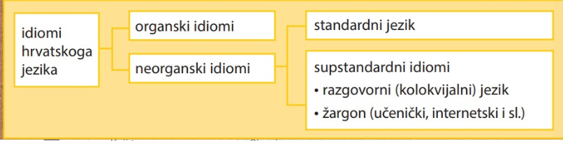
Hrvatskim se jezikom služimo u različitim komunikacijskim situacijama: unutar obitelji, pri druženju s prijateljima u slobodno vrijeme, u školi, na društvenim mrežama, u javnim istupima i sl. Međutim, iako je svaki put riječ o hrvatskom jeziku, ne služimo se svaki put istim idiomom: u privatnoj komunikaciji najčešće se služimo mjesnim govorom i razgovornim jezikom, a u javnoj komunikaciji nastojimo se što bolje izražavati hrvatskim standardnim jezikom pazeći na odabir riječi, naglasak i sl. Takve su situacije, primjerice, razgovori sa službenim osobama, javni nastupi i sl.
Većina riječi na priloženom popisu nije primjerena javnoj komunikaciji jer pripada leksiku koji je ograničen na uporabu u određenom području: primjerice, riječ vanjkuš (jastuk) upotrebljava se na području kajkavskoga narječja, riječ katriga (stolac) na području čakavskoga, a riječ komšija (susjed) na području štokavskoga narječja. Te su riječi neprimjerene jer je jezik javne komunikacije zajed- nički na cijelom prostoru Republike Hrvatske: u takvim se komunikacijskim situacijama služimo hrvatskim standardnim jezikom, odnosno posebnim idiomom koji ima svoj rječnik, gramatiku i pravopis, tj. idiomom koji učimo u školi. ? Standardni je jezik autonoman vid jezika, svjesno normiran i polifunkcionalan, stabilan u prostoru i elastično stabilan u vremenu
Komunikacija i retorika
Govorenjem se služimo svakodnevno: od jutarnjega pozdrava nekom od ukućana do odlaska na spavanje. Situacije u kojima se nalazimo tijekom dana najčešće su utemeljene na govorenju i slušanju, odnosno na verbalnoj komunikaciji. Stoga nije čudno što su se ljudi prije više od dvije tisuće godina počeli zanimati za govorenje kao vještinu (umijeće govorenja), odnosno što je tada utemeljena retorika kao znanost koja proučava teoriju i praksu govorništva."
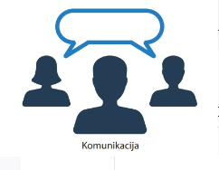
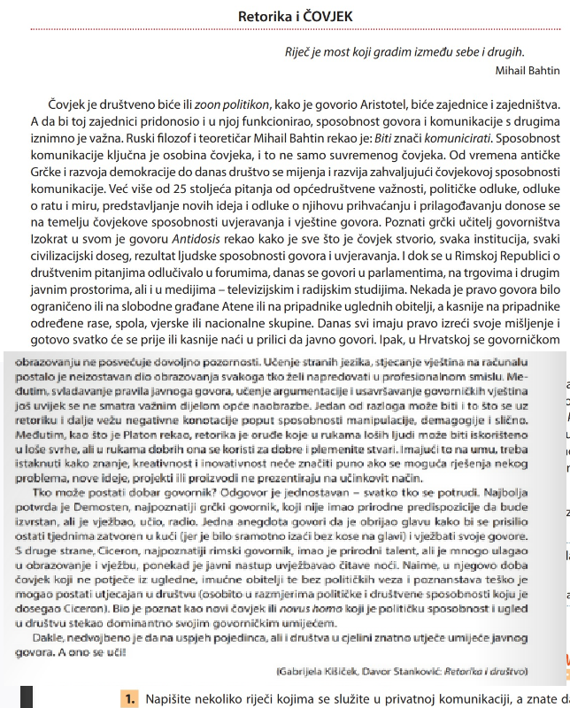
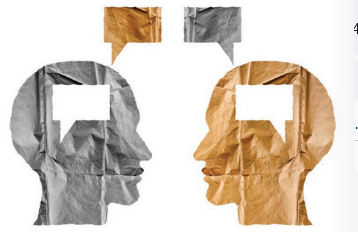
lako se govorenjem služimo i u privatnoj i u javnoj komunikaciji, u suvremenom je svijetu poseban naglasak na javnom govorenju. Pritom se razlikuju različite retoričke vrste koje se obično dijele u dvije temeljne skupine: na govore (monološke vrste) i na razgovore (dijaloške vrste).
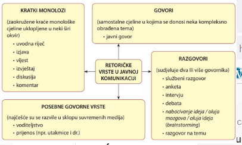
Vrednote govornoga jezika
Kada govorimo, ne komuniciramo samo pomoću značenja riječi i rečenice, nego i na temelju »zvučne slikex riječi odnosno rečenice. Naime, nije svejedno je li ono što govorimo, odnosno ono što čuju oni koji nas slušaju, izgovoreno jačim ili slabijim tonom, polako ili brzo, u jednome dahu ili uz stanke u govoru kojima se nešto naglašava. lako ste svi na temelju prethodnih uputa govorili sadržajno isti tekst, niste ga izgovarali na isti na- čin: neki su od vas tekst izgovarali jačim, a neki slabijim tonom, netko je svoj tekst izgovarao sporo, netko brzo, a netko jednolično (monotono) ne unoseći emocije u govor. Do različitih govornih interpretacija moglo je doći jer ste se na različite načine služili vrednotama govorenoga jezika (govornim vrednotama), odnosno jer ste pomoću njih davali različito dodatno značenje onom o čemu ste govorili. Tim se postupkom služimo u svakodnevnoj komunikaciji: onim kako govorimo dopunjujemo značenje onoga što govorimo. Govor je, prema definiciji, konkretna realizacija jezika. Međutim, govor je mnogo više od samoga jezika: osim sadržaja, on uključuje način na koji se taj sadržaj, odnosno govorna poruka, prenosi slušatelju - ljudski glas, brzinu govorenja, stanku, mimiku, geste
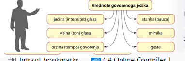
Jačina i visina glasa U izgovoru se jačina (intenzitet) i visina glasa pojavljuju zajedno: njima se obično ističe neka posebno važna riječ ili izraz u rečenici. Pojačavajući ili snižavajući jačinu glasa, dajemo dodatno značenje onom što govorimo, odnosno pokazujemo svoj stav prema sadržaju koji iznosimo. Istovremeno, ovisno o sadržaju onog što govorimo i našem stavu prema tom sadržaju, javljaju se promjene u visini glasa: glas ponekad podižemo, ponekad spuštamo, a ponekad ga održavamo ravnim. To mijenjanje visine glasa naziva se rečeničnom intonacijom ili rečeničnom melodijom. Brzina (tempo) govorenja Brzina (tempo) govorenja odnosi se na brzinu kojom izgovaramo slogove, riječi, rečenice, tekst. Obično govorimo o polaganom, umjerenom i brzom tempu govorenja. Želimo li biti svima razumljivi, govorimo polaganim ili umjerenim tempom, a kada nas ponesu, primjerice, emocije, tempo se ubrzava. Preporučljiv je tempo govorenja 100-120 riječi u minuti (±20%).
Stanka (pauza)
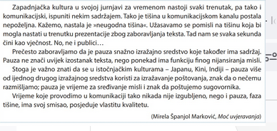
U govoru se pojavljuju dvije vrste stanke (pauze): fiziološka (potrebna zbog disanja) i psiho- loška stanka kojom se namjerno služimo kada želimo nešto naglasiti. Psihološka stanka ima razlikovnu ulogu: ovisno o mjestu na kojem se pojavljuje, mijenja se značenje rečenice. U rečenici se stanka obično označuje zarezom.
Mimika i gesta Govor je najčešće popraćen mimikom i gestama. Riječju mimika označuje se čovjekova sposobnost da izrazom lica ili pokretom tijela izrazi svoje emocionalno stanje, a gesta je izraz za pokret tijela (npr. ruke) kojim se također izražava neka emocija koja prati govor. Na sljedećoj su fotografiji neke od emocija izražene mimikom
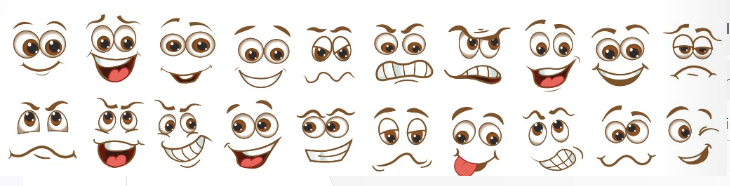
Javni govor
U suvremenome društvu brojne su prigode u kojima se drži javni govor: od govora na političkim skupovima preko sudskih do prigodnih govora. U svim se tim situacijama pojavljuje govornik, nje- gova tema i publika: o govornikovoj pripremi govora i njegovim retoričkim sposobnostima ovisi kako će djelovati na publiku. Javni govor posebna je retorička vrsta poznata još iz javnoga života antičke Grčke. U antičkoj su retorici dominirale tri vrste govora: sudski, politički i pohvalni govor. Održavala su se govornička natjecanja u kojima su govornici pokazivali svoje umijeće.
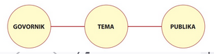
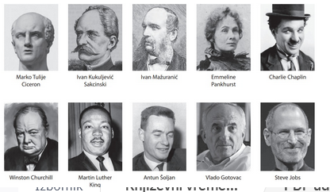
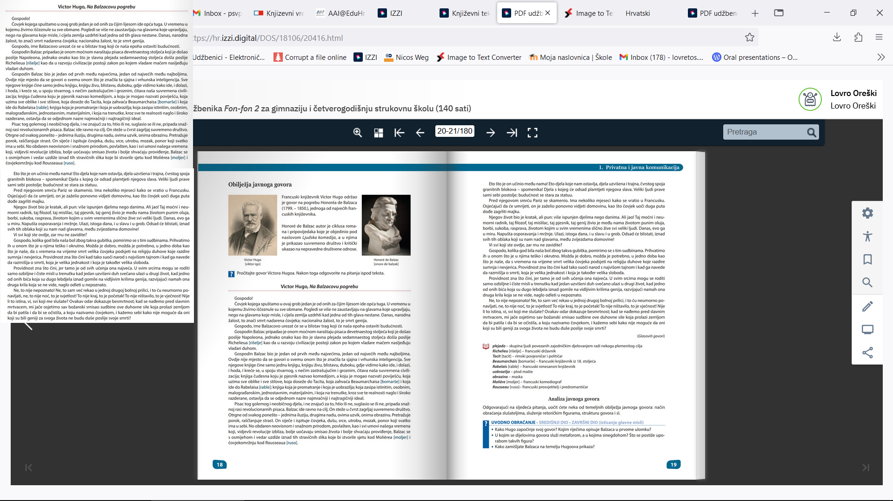
Obilježja javnoga govora (struktura, stil) Strukturu javnoga govora čine tri dijela - uvodni, središnji i završni dio. Uvodnim dijelom govornik treba zadobiti pozornost slušatelja i uvesti temu, središnji je dio posvećen izlaganju i argumentaciji, a u završnom se dijelu obično sažimaju ključne misli. U retoričkom stilu odražava se osobnost govornika, a vidljiva je u izboru riječi i izraza, u specifičnoj konstrukciji rečenice, u odabiru retoričkih figura i sl. Odabirom retoričkih figura govornik izbjegava klišeje i postiže originalnost i uvjerljivost. klišej - postupak koji se često upotrebljava i mehanički primjenjuje; kalup
Analiza javnoga govora Odredite temu javnoga govora. Izdvojite iz njega središnju misao. Navedite komu je govor upućen, odnosno tko je ciljana publika te koja mu je namjena. Analizirajte strukturu govora: • Uočite kako u uvodu govornik oslovljava slušatelje te na koji način privlači njihovu pozornost. Utvrdite navodi li se već u uvodu tema govora. • Navedite u kratkim crtama sadržaj središnjega dijela govora. Prikažite teze koje iznosi autor govora i način na koji ih argumentira. Posebno obratite pozornost na stilske figure kojima se služi prilikom izlaganja. • Navedite kako govor završava: ponavlja li se osnovna misao, obraća li se govornik izravno publici i sl. Uočite kakav je govornikov stil: služi li se slikovitim izrazima, upotrebljava li metafore i me- tonimije, uvodi li figure ponavljanja riječi (posebice anaforu) i figure konstrukcije (asindeton, polisindeton, retorička pitanja) i sl. Obratite pozornost i na to kako se služi govornim vredno- tama u javnom govoru. Ako gledate audiovizualni zapis javnoga govora, posebnu pozornost posvetite neverbalnoj komunikaciji. Povežite sadržaj govora s načinom na koji govornik komunicira s publikom.
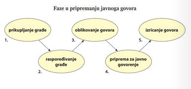
1. PRIKUPLJANJE GRAĐE Kada ste odabrali temu, trebate istražiti različite izvore i prikupiti podatke o temi: definicije, objaš- njenja, mišljenja autoriteta, statistiku i dr. Pritom treba voditi računa o tome da se služi pouzdanim izvorima, a podatke iz različitih izvora trebalo bi usporediti i tako procijeniti njihovu pouzdanost i objektivnost. Da biste mogli dobiti uvid u temu na temelju različitih izvora informacija, tijekom prikupljanja grade potrebno je voditi bilješke. Kada ste istražili izvore, gradu treba selektirati, odnosno odlučiti što će se od nje upotrijebiti u govoru. Tako odabrana grada (najvažnije informacije i podatci o temi) poslužit će vam za izradu koncepta javnoga govora. 2. RASPOREĐIVANJE GRADE Odabranu gradu treba rasporediti u tri cjeline: uvod, razradu i zaključak. Za konačnu odluku o tome kako ćete strukturirati svoj govor mogu vam poslužiti podsjetničke kartice. Načinit ćete ih vrlo jednostavno: pripremite desetak kartica i na svakoj od njih napišite neku bilješku o temi tako da ta bilješka izražava ključnu misao - tako ćete dobiti pisani podsjetnik o tome što želite reći. Balzac je jedan od najvećih francuskih književnika. Smrt genija ogroman je gubitak za čovječanstvo. Geniji nikada ne umiru. Prednost je pisanja na karticama višestruka: možete mijenjati redoslijed misli sve dok ne utvrdite zadovoljavajući poredak, možete izbaciti ono što vam se čini nebitnim, a možete se i vraćati svojim mislima i dopunjavati ih novima. 3. OBLIKOVANJE GOVORA Nakon prikupljanja i raspoređivanja građe potrebno je oblikovati tekst koji želite govoriti. UVOD (Reci što ćeš reći.) • najava teme Uvodnim dijelom trebate zadobiti pozornost slušatelja, što možete učiniti na različite načine: primjerice, nakon najave teme možete prikazati kontekst u kojem se govor odvija, osvrnuti se na aktualnu društvenu situaciju, iznijeti temeljnu misao i sl. Nekoliko prijedloga za početak govora: citat, retoričko pitanje, zanimljiva priča... RAZRADA (Reci to.) • izlaganje obrazlaganje ⚫ argumentacija Na početku razrade govornik može uvodnom rečenicom najaviti ono o čemu će govoriti. U razradi se iznose informacije i tvrdnje (misli) koje se dokazuju svima razumljivim argumentima, a stil mora biti jasan. Govornik treba znati da nije svejedno jesmo li nešto rekli jednostavno i na zanimljiv način ili tako da nas se teško razumije, odnosno da smo publici nezanimljivi. Osim toga, vrlo je bitna i uvjerljivost dokaza i primjera koji se u govoru iznose jer o njima ovisi snaga govornikovih argumenata. ZAVRŠETAK (Reci što si rekao/rekla.) ▪ sažeto ponavljanje temeljnih misli U završnome dijelu možete sažeti najvažnije dijelove ili ponoviti glavne misli iz govora. Nekoliko prijedloga za završetak govora: poziv na zajedničko djelovanje, citat, zahvala publici...
4. PRIPREMA ZA JAVNO GOVORENJE Kada ste sastavili svoj govor, pripremite se za javno govorenje. Pritom nije potrebno učiti cijeli govor napamet - važno je upamtiti najvažnije argumente, a čitati možete samo neke dijelove koje nema smisla učiti napamet (citate, definicije, statistiku i sl.). Da biste bili sigurniji, možete pripremiti kratke bilješke na karticama kojima se možete lako poslužiti. 5. IZRICANJE GOVORA Prilikom govorenja ponašajte se poput glumca na sceni: vodite računa o načinu govora, mimici, pokretima. Upamtite da s publikom komunicirate i neverbalno, odnosno da uz riječi koje izgovarate poruku šaljete i govorom tijela. Posebnu pozornost obratite načinu na koji govorite - primijenite pritom znanje o govornim vrednotama koje će vam poslužiti za komuni- kaciju sa slušateljstvom. (Govorne vrednote prikazane su na str. 14.-16.) Ako smatrate potrebnim, u tekstu govora označite te vrednote da biste ih bolje uvježbali. Govor izgovarate prirodno, kao da ništa nije unaprijed pripremljeno. Opu- štenost i dobra priprema najbolji su pomagači da druge uvjerite u ono što želite i da im pritom objasnite ono što je vama samima jasno.
Anketa
Anketa je kratak razgovor između anketara i anketiranog. U njoj samo anketar postavlja pitanja, uvijek ista uzastopno mnogima. Pitanja i odgovori moraju biti jednostavni i jed- noznačni. Cilj je ankete otkriti što ljudi znaju, što misle i kako procjenjuju nešto. (Ivo Škarić, Temeljici suvremenoga govorništva) Anketna metoda je poseban oblik neeksperimentalnog istraživanja koje kao osnovni izvor podataka koristi osobni iskaz o mišljenjima, uvjerenjima, stavovima i ponašanju, pribavljen odgovarajućim standardiziranim nizom pitanja. (Goran Milas, Istraživačke metode u psihologiji i drugim društvenim znanostima) ANKETA: prikupljanje mišljenja i podataka o nekoj pojavi među većim brojem osoba radi statistike, ispitivanja tržišta ili javnog mišljenja ili kao baza za neko daljnje proučavanje (sociološko, medicinsko i sl.) (Hrvatski jezični portal) Anketa je strukturirani upitnik koji služi za prikupljanje informacija. U njoj su anketar i ispitanik u izravnoj komunikaciji: nekad je to intervju, nekad samostalno ispunjavanje upitnika, nekad je riječ o telefonskoj anketi, a nekad anketu rješavamo preko interneta.
PRIMJER
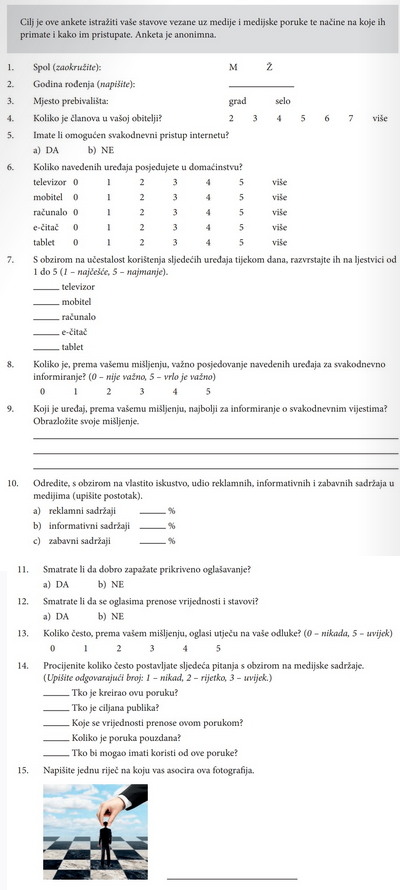
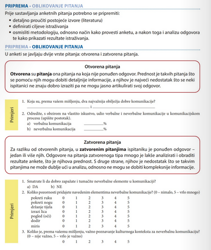
Službeni razgovor
Savjeti za uspješnu komunikaciju u službenom razgovoru Komunikacija je dvosmjerna, stoga je uz govorenje iznimno važno i slušanje sugovornika jer jedino tako možemo ostvariti dobru komunikaciju i postići željeni cilj. U službenim razgovorima nema mjesta monologu: i govornik i sugovornik trebaju svoje misli jasno formulirati i izraziti ih kratko i sažeto. Dakle, u komunikaciji se izmjenjuju kratke replike (najčešće od jedne ili dvije rečenice) radi razmjene informacija, dobivanja tražene usluge i sl. Početak i završetak razgovora odvija se prema ustaljenom obrascu: razgovor započinjemo i završavamo uobičajenim pozdravnim frazama. Službeni razgovor (igranje uloga) Tijekom srednjoškolskoga obrazovanja vjerojatno ćete se naći u prilici da se trebate pripremiti za razgovor s nekom službenom osobom: primjerice, možete tražiti stipendiju ili pokušati dobiti neki sezonski posao. U tome vam može pomoći igranje uloga, odnosno simulacija poslovnoga razgovora.
PRIPREMA
Nekoliko savjeta prije početka razgovora 1. U prostoriju treba ući sa srdačnim osmijehom na licu, jasno i glasno pozdraviti, pogledom obuhvatiti sve nazočne i sigurnim koracima prići svome mjestu. Iz osobe treba zračiti samo- pouzdanje, ali ne i umišljenost ili bahatost. 2. Neka neverbalni znakovi pokazuju samopouzdanje i sigurnost, a verbalni retoričku skromnost. 3. Govorna, jezična i stilska elegancija mnogo govori o čovjeku. On se svojim govorom pred- stavlja kao (ne)uglađena, (ne)profinjena ili (ne)pristojna osoba, a kao takav daje znakove kako će pristupiti poslu. Eleganciji u govoru pridonose ugodan glas, ispravna dikcija, gladak govor bez zamuckivanja i zaplitanja jezika. Elegantan stil karakterizira izbjegavanje dijalektalnih riječi ili oblika riječi (npr. oni jedeju, sediju, nisan, jesan... ili riječi poput hiža, ćakula, bičva...), izbjegavanje riječi razgovornog stila (fakat, kužiš, ziher...). Apsolutno su isključeni nepristojni izrazi i lascivnosti, a teži se nenametljivoj figurativnosti, brzom i dobrom izboru riječi i jezičnoj ispravnosti. Treba izbjegavati nepotrebne internacionalizme i nehrvatske riječi poput milion, takmičenje, garantirati, hiljada... a umjesto njih govoriti milijun, natjecanje, jamčiti, tisuća. (Gabrijela Kišiček, Davor Stanković, Retorika i društvo)
II. IGRANJE ULOGA (priprema) Da biste bili sigurni u svoj nastup pred službenom osobom, odigrajte scenu razgovora za dobivanje stipendije s nekim tko će glumiti službenu osobu. (To može biti učenik/učenica s kojim sjedite u klupi.) Scena se treba odvijati na sljedeći način:
II. IGRANJE ULOGA (izvedba) Odglumite pred razredom svoj prvi poslovni razgovor. Na raspolaganju imate 5-8 minuta. IV. ANALIZA Zamolite ostatak razreda (publiku) za komentar vašega nastupa: od ulaska i predstavljanja preko sudjelovanja u dijalogu do završetka razgovora
Rasprava (diskurzija)
Rasprava (diskusija) retorička je vrsta u kojoj sudionici argumentirano raspravljaju o nekoj temi. Pritom svatko od sudionika iznosi svoje mišljenje koje obrazlaže i potkrjepljuje ga činje- nicama. Raspravljajući o nekoj temi ili problemu, sudionici rasprave pokušavaju je osvijetliti s različitih strana i tako doći do određenih zaključaka. Struktura rasprave (diskusije) Za raspravu je karakterističan veći broj sudionika koji raspravljaju o nekoj temi ili problemu suprot- stavljajući pritom svoja mišljenja i stavove.
Rasprava (diskusija) 1. Obično na početku jedna osoba (uvodničar) najavi temu i predstavi je u kratkim crtama: pritom se može poslužiti tekstom, slikom, audiovizualnim zapisom i sl. 2. 3. Središnji dio namijenjen je izlaganju mišljenja pojedinih sudionika te raspravi koja će se među njima razviti. Svaki je sudionik pritom svjestan da ne smije predugo izlagati: obično izlaganje ne bi trebalo biti kraće od minute ni dulje od deset minuta. Pojedinačno izlaganje također ima zadanu strukturu: sudionik najprije izlaže svoju misao, odnosno tvrdnju, a potom je obrazlaže i izvodi zaključak. Pritom treba voditi računa o tome da sudionici ne ponavljaju ono što je već rečeno jer tako rasprava gubi na dinamici. Nakon nekoliko izlaganja obično se javljaju replike u kojima sudionici dopunjuju izlaganje prethodnih govornika ili im se suprotstavljaju iznoseći nove argumente. Replike bi trebale biti kratke i konstruktivne, odnosno voditi produbljivanju rasprave i traženju najboljih rješenja s obzirom na temu. U završnom dijelu, odnosno nakon završene rasprave (ili isteka vremena predvidenog za raspravu), mogu se ukratko sažeti zaključci te ukazati na moguće rješenje problema o kojem se raspravljalo.
Leksik
Leksem je oblik riječi koji podrazumijeva skup svih svojih
značenja i gramatičkih oblika.
obala (obale, obali, obalu, obalama...)
vraćati (vraćam, vraćaš, vraća..., vraćajući)
prvi (prvoga, prvomu, prvoga...)
Svi leksemi nekoga jezika (sadašnje i prošlo korištenje) čine
njegov leksik.
S obzirom na uporabu leksika, razlikujemo opći leksik (obuhvaća
riječi koje pripadaju svakodnevnoj komunikaciji) i leksik
ograničene uporabe (obuhvaća riječi ograničene strukom (njemu
pripadaju posebni nazivi (termini) kojima se služe znanstvene
discipline, struke, umjetnička područja i sl.)).
Vratimo li se samo tridesetak godina unatrag, vidjet ćemo koliko se čovjekov način života promijenio: male trgovine zamijenili su veliki trgovački centri, umjesto telefona svake se godine pojavljuju sve suvremeniji mobiteli, stara pisma i razglednice zamijenile su e-poruke i digitalne čestitke, a umjesto u novinama vijesti čitamo na internetskim portalima. Promjene u stvarnosti odražavaju se i u jeziku kao osnovnom načinu ljudske komunikacije: primje- rice, riječ šoping-centar nije postojala u pravopisu sedamdesetih godina prošloga stoljeća jer taj pojam nije postojao u našoj stvarnosti. Danas ćete je pronaći u Hrvatskom pravopisu, i to kao riječ koja pripada razgovornom stilu, s naznakom da se treba služiti hrvatskim izrazom trgovački centar. Takvih je izvanjezičnih procesa koji utječu na jezične promjene mnogo: od društvenih i političkih promjena zbog kojih neke riječi zastarijevaju, preko novih znanstvenih spoznaja i pojmova koje treba imenovati, do globalizacije koja mijenja opću sliku svijeta i uvodi nove >hibridnex riječi poput, primjerice, »influencera« i »>instagramičnih mjesta. Istodobno s izvanjezičnim procesima zbivaju se i unutarjezični procesi, odnosno promjene uvjeto- vane jezičnim razlozima. Primjerice, takvim promjenama pripada pisanje slogotvornoga ru riječima: nekada se r pisalo s popratnim vokalom (parst, perst), a danas se piše bez njega (prst). Promjene u stvarnosti odražavaju se na leksik kojim se služimo u komunikaciji. Do njih dolazi zbog različitih izvanjezičnih i unutarjezičnih procesa: primjerice, kada se promijene društveni odnosi i neki pojmovi nestanu iz naše stvarnosti (npr. kmet, feudalac), onda se i riječi kojima imenujemo te pojmove povlače u pasivni leksik, odnosno zastarijevaju. S druge strane, kada se pojavi neki izum, u leksik ulazi nova riječ kojom se taj novi pojam imenuje.
leksike možemo raslojavati po njihovom Vremenu nastanka
(vremenska raslojenost), karakterisitka riječi s obzirom na
mjesto (područna raslojenost) i način izražavanja s obzirom
njegove namjene (funkcionalna raslojenost)
Vremenska raslojenost Leksika
leksik prema vremenu raslojavamo na
- Aktivni leksik čine riječi kojima se većina govornika služi u usmenoj i pisanoj komunikaciji. Njihova uporaba nije stilski obilježena.
Pasivni leksik čine riječi koje su u leksiku iz nekoga razloga zastarjele.
Leksik na prijelazu čine riječi koje ili postupno izlaze iz aktivnoga leksika jer se sve manje u njemu upotrebljavaju ili imenuju nove pojmove pa postupno ulaze u aktivni leksik.
- Historizmi su riječi koje su iz aktivnoga u pasivni leksik prešle zbog izvanjezičnih razloga (povijesne promjene). Najčešće su to nekadašnje titule (ban, barun, grof), ustanove (žandarmerija, preparandija) i predmeti - odjeća (krinolina, surka), novac (filir, škuda), oružje (kremenjača, jatagan) i sl.
- Kada čitate neku natuknicu u rječniku, historizam je označen kraticom pov. (pripada povijesti; ima obilježja povijesne činjenice).
- Mali rječnik historizama
- ban - pov. prvi dostojanstvenik u vlasti s nekim vladarskim punomoćima
- cekin - pov. venecijanski (mletački) zlatnik; dukat
- feud - pov. u europskom feudalnom društvu, vazalov izvor prihoda (ob. zemljišni posjed) koji on dobiva od seniora u zamjenu za odredene obveze (davanje prihoda, vojna služba i sl.); leno
- frakpov. dio vojničke uniforme te odora dvorjanskoga rituala
- grof-pov. (1.) u srednjem vijeku kraljev činov- nik na čelu županije, kasnije kraljev vazal; (2.) pripadnik najvišeg plemstva (ispod markiza, iznad baruna)
- jatagan - pov. etnol. velik, zakrivljen nož (nalikna sablju) kome je oštrica na unutarnjoj strani sječiva i koji se nosi za pojasom
- kmet - pov. (1.) neslobodan seljak vezan za ze- mlju svoga feudalnog gospodara; (2.) seoski glavar, glavar sela- kotar - pov. upravna jedinica
- krinolina - pov. široka, zvonolika obručima na-peta suknja, u modi u Francuskoj oko 1840. mušketa (musketa) - vojn. pov. starinski modelpuške (više se upotrebljava od kraja 16. st.) preparandija - pov. učiteljska škola, škola zaučitelje osnovnih školasenior-pov. (1.) a. stariji građanin u starom Rimu (između 40. i 60. godine života) b. feu- dalni gospodar, vlasnik zemlje, opr. vazal surka - pov. etnol. kraći kaput ukrašen gajtani- ma, dio narodne i gradske nošnje skuda - pov. venecijanski i dubrovački srebr- njak (komad novca u srebru) vlastelinstvo-pov. plemićki posjed
Arhaizmi su zastarjele riječi, oblici riječi ili veze riječi, odnosno to su riječi koje su iz aktivnoga u pasivni leksik prešli zbog unutarjezičnih razloga (promjene u samome jeziku). To znači da pojam i dalje postoji, ali sada ima ili potpuno drukčiji izraz (npr. danas se koristimo riječju za- stava umjesto arhaizma horugva) ili se promijenio neki glas unutar riječi (arhaizam sarce danas je zamijenjen riječju srce), a jezične su se promjene mogle dogoditi iu tvorbenom sufiksu, nastavku ili u načinu pisanja pojedinih glasova.Kada čitate neku natuknicu u rječniku, arhaizam je najčešće označen kraticom arh. (arhaizam, starinski oblik riječi).U nastavku su navedeni neki arhaizmi s kojima se susrećete u književnim i u neknjiževnim tekstovima.Mali rječnik arhaizamacesar - arh.cardażd - arh. kiša, pljusaklibar - arh. knjigaluč - arh. svjetloštilac - arh. čitateljplav(ca) - arh. brod sarce-arh, srcezvonjelica - arh. sonet
Knjiški leksemi i nekrotizmiZa razliku od historizama i arhaizama knjiški leksemi i nekrotizmi ograničeni su na leksik jednoga autora, a najčešće je to književnik, jezikoslovac ili leksikograf. Takvi autori sami stvore novu riječ, ali ona ne zaživi u leksiku i ostane zapisana samo u njihovim djelima (književnim djelima, rječnicima).Knjiški leksemi riječi su koje su načinili stariji leksikografi kao hrvatsku zamjenu za neku tudu riječ, ali su one ostale zabilježene samo u rječnicima i nikada nisu postale dijelom aktivnoga leksika. Takve su riječi, primjerice, kolostaj umjesto kolodvor, brodokršje umjesto brodolom, mirisnica umjesto parfumerija i sl.knjiš. - zabilježeno samo u knjigama; nije potvrđeno u praksi izvan književnosti
Nekrotizmi su riječi ili izrazi koji se javljaju u leksiku nekoga autora (pisca, jezikoslovca, leksiko- grafa), a nikada nisu postali dijelom aktivnoga leksika. Primjerice, zadarski renesansni pjesnik Brne Karnarutić (16. st.) uveo je riječ ljesit umjesto riječi drven koja postoji u aktivnom leksiku, ali riječ ljesit nije zaživjela u uporabi.Takva je i riječ cakljiv (sjajan), zabilježena kod splitskoga pjesnika i historiografa Jerolima Kavanjina, te riječi množba (množenje) i svetokrilac (andeo) leksikografa Bogoslava Šuleka. nekros (grč.) - mrtav
Aktivni i pasivni leksik nisu jasno odijeljeni jedan od drugoga: neki leksemi čine »prijelazni sloj<< između tih dvaju slojeva jer neke riječi polako prelaze iz aktivnoga u pasivni leksik (zastarjelice), a neke se riječi vraćaju iz pasivnoga u aktivni leksik (oživljenice). Osim ovih leksema, leksiku na prijelazu pripadaju još dvije vrste leksema: riječi koje imenuju neku trenutno modernu pojavu (pomodnice) i riječi koje obično nastaju kako bi se hrvatskom riječju imenovao novi pojam (novotvorenice).
Zastarjelice su riječi koje se sve manje upotrebljavaju u općem leksiku, odnosno riječi koje polako prelaze iz aktivnoga u pasivni leksik. Obično ih upotrebljavaju još samo stariji govornici. Takve su riječi npr. ferije (praznici), fiskultura (tjelovježba), štetovati (pretrpjeti štetu), zvjezdar- stvo (astronomija).
županija - (1.) pov. administrativno-politička jedinica u zemljama Habsburške Monar- hije do 1918. (2.) meton. ustanova uprave i njena zgrada. (3.) administrativno-politička jedinica u Republici Hrvatskoj
Oživljenice su riječi koje su se iz pasivnoga leksika vratile u aktivni leksik. Takve su riječi u pasivni leksik prešle zbog izvanjezičnih razloga, primjerice političkih promjena, a onda su se u promijenjenim društvenim okolnostima vratile u aktivni leksik.
Pripadaju uglavnom općeuporabnom leksiku (npr. županija, poglavarstvo, putovnica, dužnosnik), ali oživljenice se mogu odnositi i na leksikon ograničene uporabe, primjerice na vojne nazive (časnik, stožer, skupnik, desetnik).
Novotvorenice su nove riječi koje uglavnom nastaju da bi se izrazio neki novi pojam (npr. padobran) ili da bi se neka strana riječ zamijenila hrvatskom riječi (npr. predočnik umjesto engleske riječi display). Tako je, primjerice, jezikoslovac Bogoslav Šulek potkraj 19. stoljeća sastavio neke novotvorenice: brzinomjer, brzojav, kliconoša i dr.
Budući da su nedavno ušle u leksik, novotvorenice još nisu u potpunosti prihvaćene, odnosno nisu postale sastavnim dijelom aktivnoga leksika. Kada ih jezik u potpunosti prihvati, te riječi prestaju biti neologizmi: tako danas, primjerice, riječ zrakoplov nije neologizam. Novotvorenice nastaju ili zbog izvanjezičnih razloga, odnosno zato što se u stvarnosti pojavljuju novi pojmovi - izumi, dostignuća, društvene pojave i sl. (npr. računalo) ili zbog toga što se u jeziku pokušava naći zamjena za neku stranu riječ (npr. hrvatska riječ tipkovnica umjesto posu- denice tastatura). Osim toga, i govornici sami izmišljaju nove riječi prema postojećim obrascima u jeziku. Tako se, primjerice, prema riječima čitaonica, radionica, igraonica može načiniti niz novotvorenica - maštaonica, plakaonica, smijaonica i sl. Te bi se riječi onda našle u leksiku na prijelazu, a ako bi se ljudi njima počeli koristiti, postale bi sastavnim dijelom aktivnoga leksika.
Posebna je vrsta neologizama individualni neologizam ili okazionalizam (prigodnica). To je riječ koju je stvorio autor (u književnom tekstu) ili je načinjena zbog imenovanja pojma u određenom trenutku, a njezino je temeljno obilježje da se pojavljuje samo jednom (u tekstu ili jezičnom sustavu). Okazionalizam je, primjerice, riječ čovjetina koju je načinio Ranko Marinković, a pojavljuje se u romanu Kiklop.
Pomodnice su riječi koje imenuju trenutno moderne (pomodne) predmete i pojave. Naglo se pojavljuju u leksiku i postaju vrlo popularne, a kada moda prođe, pomodnice isto tako brzo prelaze iz aktivnoga u pasivni leksik.
Njima se obično imenuje obuća i odjeća (starke, marte, agsice, montgomeri, tajice), frizure (bekhemica, irokeza, bitlsica, biberica), način zabave (parti, tulum), pripadnost nekoj društvenoj skupini (metalac, panker) i dr.
Područna raslojenost leksika
Hrvatskom jeziku pripadaju tri narječja: čakavsko, kajkavsko i štokavsko. Pritom čakavsko i kajkavsko narječje pripadaju samo hrvatskomu jeziku, a štokavsko narječje pripada hrvatskomu, bošnjačkomu/bosanskomu, srpskomu i crnogorskomu jeziku.
Budući da pripadaju hrvatskomu jeziku, sva tri narječja imaju neka zajednička obilježja, ali se i međusobno razlikuju. Osim toga, postoje razlike i unutar govora koji pripadaju istom narječju. Konkretan govor unutar narječja naziva se mjesni govor. Nekoliko mjesnih govora sa zajed- ničkim obilježjima čini skupinu govora. Više skupina govora sa sličnim obilježjima unutar jednoga narječja naziva se dijalekt: tako u čakavskom i kajkavskom narječju razlikujemo po šest dijalekata, a u štokavskom narječju koje pripada hrvatskomu jeziku četiri dijalekta (npr. slavonski dijalekt).
Znanost koja proučava narječja naziva se dijalektologija.
Na sljedećim ćemo se stranicama ukratko prisjetiti temeljnih činjenica o trima hrvatskim narječjima: prostoru koji zauzimaju, leksemima i njihovim temeljnim obilježjima.
PROSTOR
Istra, Hrvatsko primorje (dio: Rijeka, Crikvenica), dio dalmatinske obale
■ otoci: od Krka i Cresa do Lastova i Korčule, zapadni Pelješac
• Lika (manji dio), Pokuplje
■ Gorski kotar (dio), Žumberak (dio)
DIJALEKTI
sjevernočakavski
• srednjočakavski
▪ južnočakavski ■lastovski
■ buzetski
jugozapadni istarski
OBILJEŽJA
▪ zamjenica ča, če, ca, co
■ završno m prelazi u n: znan (znam)
▪ nepostojanje glasa dž (dolazi ž): svidožba
■ nepostojanje glasa lj (dolazi j): jubav
• završni glas o na kraju sloga realizira se kao l: rekal (rekao)
▪ poseban oblik glagola biti u kondicionalu: bin, biš, bi, bimo, bite, bi
⚫ česti romanizmi: katriga (stolac), barka (čamac), kantati (pjevati), lancun (plahta)
PROSTOR
▪ sjeverozapadna Hrvatska (Međimurje, Hrvatsko zagorje, zapadna Podravina, Prigorje, Turopolje) Gorski kotar (dio)
DIJALEKTI
zagorsko-međimurski
■ križevačko-podravski
turopoljsko-posavski
• prigorski goranski
■ donjosutlanski
OBILJEŽJA
• zamjenica kaj, kej, ke, koj, kuj
• čuva se završni glas / (rekel)
ne provodi sibilarizaciju: ruki
glasovni skup čr obično se ne zamjenjuje sa
cr (kao u standardnom jeziku): črni
• česte su umanjenice i riječi odmila: lonček, zajček, hižica, travica...
• izricanje budućnosti: svršeni prezent glagola biti (bum pisal) ili prezent svršenih glagola (zutra dojdem)
■ uz glagole kretanja javlja se supin (infinitiv bez završnoga i): idem spat
▪ česti germanizmi: frajla (gospođica), gemišt
▪ česti hungarizmi: beteg/betek (bolest), pajdaš (prijatelj), cifrati se (dotjerivati se)
PROSTOR
■ Slavonija, Baranja
■ Banovina, Kordun, Lika (najveći dio) ▪ dalmatinsko kopno (veći dio), Mljet
DIJALEKTI
▪ slavonski s virovitičkim i kostajničkim govorom ▪ novoštokavski ikavski
▪ novoštokavski ijekavski s perojskim govorom ▪ novoštokavski ekavski
Štokavsko narječje ima sedam dijalekata, a četiri dijalekta pripadaju hrvatskomu jeziku.
OBILJEŽJA
▪ zamjenica što, šta
■ sažimanje ao u o na kraju riječi (reko)
■ ispadanje ili zamjena glasa h: odma (odmah), snaja (snaha),
muva (muha)
• česti turcizmi: avlija (dvorište), ćeif (volja), ćuprija (most)
Hrvatskim se jezikom, kako je vidljivo iz prethodnih primjera, različito govori u različitim kra- jevima, odnosno područjima. Takva se pojava naziva područnom raslojenošću leksika. Do nje dolazi zbog mnogih čimbenika - povijesnih uvjeta, utjecaja jezika susjednih naroda i sl.
Prema veličini područja na kojem se upotrebljava, područno raslojeni leksik dijeli se u tri skupine: na lokalizme, regionalizme i dijalektizme. Lokalizmi su rasprostranjeni na najmanjem području jer pripadaju jednomu mjesnom govoru (npr. gospar - dubrovački lokalizam). Regionalizmi su karakteristični za većinu mjesnih govora koji pripadaju istoj skupini. Upotrebljavaju se na području većemu od mjesnoga govora, a manjemu od narječja. Regionalizmi su, primjerice, dalmatinizmi (kukumar, lancun) ili slavonizmi (kecelja, komšija).
Dijalektizmi su karakteristični za područje cijeloga narječja: čaka- vizmi (ča, crikva), kajkavizmi (kaj, škrlak) i štokavizmi (šta, ćerati).
tovar - reg. magarac [muči se kao tovar; kao na tovara opteretiti koga poslovima, dužnostima i sl.] gospar - reg. (u Dubrovniku) gospodin
oblok - reg. prozor, okno (mad. ablak)
Dijalektizam se od riječi u standardnom jeziku najčešće razlikuje izrazom, značenjem, glasovnim sastavom, morfološki ili tvorbenim sredstvom (prefiksom, sufiksom).
U tablici su navedene vrste dijalektizama.
Izrazni dijalektizmi svojim se izrazom razlikuju od stan- hiža (kuća), škoj (otok), delati (raditi), dardnoga jezika.
Značenjski dijalektizmi riječi su kojima se u standar- dnome jeziku pridružuje jedan sadržaj, a u narječju drugi. Fonološki dijalektizmi razlikuju se fonemskim sastavom ili naglaskom od standardnoga jezika.
Morfološki dijalektizmi razlikuju se od riječi u standar- dnome jeziku morfološkim obilježjima, primjerice rodom ili nastavcima.
Tvorbeni dijalektizmi imaju isti korijenski morfem kao riječ u standardnome jeziku, ali se od nje razlikuju tvor- benim sredstvom - prefiksom ili sufiksom.
kušin (jastuk)
kajk. jezero (tisuću), čak. gaće (hlače)
fala (hvala), mliko (mlijeko), reč, rič (riječ), šćap (štap), najti (naći), kopati (köpati)
kajk. misliju štok. to auto
kumek (sufiks -ek za tvorbu umanje- nice), starejši (sufiks -ejši za tvorbu komparativa)
Etnografski dijalektizmi
Posebnu skupinu dijalektizama čine etnografski dijalektizmi. Njima se imenuje pojam karakte- rističan za područje na kojem se govori određenim narječjem (vrste jela i pića, običaji i sl.), a upo- trebljavamo ga kada govorimo o posebnostima toga kraja. Etnografski su dijalektizmi sastavni dio standardnoga jezika: za razliku od ostalih dijalektizama koji se zamjenjuju standardnim riječima, za njih u standardnom jeziku ne postoji zamjena.
čakavsko narječje bevanda, pašticada
kajkavsko narječje
štrukle, mlinci
štokavsko narječje
kulen, bećarac
Funkcionalna raslojenost leksika
Standardni jezik ostvaruje se u različitim područjima ljudskoga djelovanja: u književnosti, znanosti, medijima (novine, radio, televizija, internet), javnim ustanovama, svakodnevnom govoru i dr.
S obzirom na namjenu, odnosno funkciju, leksik se raslojava na pet funkcionalnih stilova: administrativni, znanstveni, publicistički, razgovorni i književnoumjetnički stil. Svaki se stil može ostvariti i u govoru i u pismu.
Funkcionalni se stilovi obično dijele na podstilove, od kojih neki imaju obilježja dvaju ili više stilova.
administrativni
znanstveni
FUNKCIONALNI STILOVI
publicistički
razgovorni književnoumjetnički
Standardni je jezik normiran, a jezična se norma odnosi i na funkcionalne stilove iako ne na jednak način: neki stilovi imaju više, a neki manje slobode u odstupanju od jezične norme.
Mali rječnik kratica (funkcionalni stilovi)
adm. (u administraciji)
služb. (službeno, riječ koja se u administriranju upotrebljava kao propisana, uobičajena, kao dio neke služ- bene formule izražavanja)
term. (termin, terminološka riječ u nekoj struci)
publ. (publicistički, odrednica u prvom redu upućuje na to da je riječ u toj djelatnosti potvrđena i da se u njoj javlja)
knjiž. (u književnosti)
poet. (poetizam)
razg. (razgovorno, kolokvijalno; kontekst >>kako se obično kaže«)
žarg. (žargon, žargonski, 1. svakodnevna riječ koja se govori sa sviješću da nije prikladna za opću upotrebu u jeziku (zbog toga što je lokalna, prepoznatljivo stranoga podrijetla i sl.) i da je potrebno uzeti drugu riječ 2. riječ neobveznog izražavanja u užem stručnom krugu (stručni žargon), često jedina riječ koja se u tom krugu govori, potencijalno termin 3. jezična jedinica svakodnevnog izražavanja neke društvene skupine, struke, zvanja, staleža, jedne generacije ili uzrasta, koja podliježe bržim promjenama
Izlagački tekstovi
Verbalna komunikacija utemeljena je na jeziku, a jezične jedinice povezane ukupnim smislom čine tekstove: tako je tekst i aforizam (npr. Sit gladnu ne vjeruje.) i ciklus romana. Pritom je svaki tekst, svjesno ili nesvjesno, načinjen za neku ciljanu publiku i s nekom svrhom, što znači da je predviđen za neku situaciju čitanja: privatnu, javnu, obrazovnu ili profesionalnu.
⚫ književna djela
SITUACIJE ČITANJA
OSOBNA
• biografije, autobiografije
• informativni tekstovi namijenjeni čitanju
u slobodno vrijeme (zabava, znatiželja)
⚫ pisma
• elektronički mediji: e-pošta,
SMS poruke, blog
Takvi nam tekstovi služe radi
zadovoljavanja vlastitih interesa:
užitka, zabave, znatiželje...
OBRAZOVNA
• udžbenici (tiskani, digitalni) • softveri za interaktivno učenje Tekstovi su namijenjeni poučavanju, odnosno usvajanju informacija.
JAVNA
službeni dokumenti
• informacije o javnim događajima
Takve tekstove upućuju mediji korisnicima na internetskim stranicama s vijestima, a javne se obavijesti mogu prenositi na različite načine: na oglasnim pločama, tiskom, internetom. Takva se situacija
čitanja odnosi na širi kontekst, tj. na društvenu stvarnost.
PROFESIONALNA
Tekstovi usmjereni na budući profesionalni rad na nekom
poslu; namijenjeni su izvršavanju nekoga zadatka povezanog sa svijetom tržišta rada: npr. traženje posla, obavljanje nekoga posla i sl.
Marin Držić
God. 1548. Pomet-družina izvela je pred Kneževim dvorom komediju Pomet, kojoj je tekst danas izgubljen. U toj se komediji prvi put pojavio lik Dunda Maroja, a i drugih Dubrovčana koji su poslije postali središtem najslavnije Držićeve komedije Dundo Maroje. Iste je godine u istom prostoru izvedena i stihovana pastirska igra Tirena. Predstava je alegorijski prikaz dubrovačke vlasti i posve je pozitivno određena prema slavi Dubrov- nika i njegove vlastele. Po tome je iznimka u Držićevu opusu. Predstavu je prekinuo jak vjetar, ali to nije spriječilo neke jalne suvremenike da optuže Držića da mu djelo nije originalno. Od optužaba za plagijat Držić se branio sam, a branio ga je i književnik M. Vetranović u Pjesanci u pomoć Marinu Držiću. God. 1550. izvedena je stihovana komedija Novela od Stanca u zatvorenom prostoru na piru Martolice Hajdinova i Anice Kabužić. To je najkraća Držićeva komedija, u kojoj je u briljantnim stihovima i s dobrom scenskom karakterizacijom likova prikazana spletka što je skupina dubrovačkih mladića izvodi nad ponešto zbunjenim Vlahom Stancom.
Kada je tekst utemeljen na izlaganju, odnosno kada se u njemu pokazuje način na koji su neki elementi međusobno povezani i sastavljeni u smislenu cjelinu, tada govorimo o izlagačkim tekstovima. Takvi tekstovi uglavnom odgovaraju na pitanje Kako?.
Izlagački se tekstovi pojavljuju u različitim funkcionalnim stilovima: primjerice, u administrativnom se stilu pojavljuje zapisnik i motivacijsko pismo, u publicističkom znanstveno-popularni članak i prikaz, u znanstvenom stručni članak i sažetak, a u književnoumjetničkom esej i pismo.
Članak
Članak je tekst jednoga ili više autora u kojem se obrađuje neka tema. Objavljuje se u publi- kacijama (novine, časopisi) i na internetskim portalima.
Ovisno o namjeni, obično razlikujemo četiri vrste članaka:
• tematski članak najčešće se pojavljuje u novinama i na portalima kao novinska vrsta u kojoj se detaljnije prikazuje neka aktualna tema
znanstveno-popularni članak obično obrađuje temu namijenjenu široj publici; pisan je „hibridnim stilom" jer zbog svoje namjene ima obilježja i publicističkoga i znanstvenoga stila • stručni članak i znanstveni članak namijenjeni su užoj skupini ljudi, odnosno stručnjacima u pojedinim područjima, a pisani su znanstvenim stilom.
ZNANSTVENO-POPULARNI Članak
STRUČNI ČLANAK
OKVIR: sažetak, ključne riječi Struktura stručnoga članka DIJELOVI TEKSTA • Uvod: najava teme, prikaz prethodnih istraživanja o temi • Razrada: izlaganje teme, istraživanje, rezultati istraživanja, analiza i rasprava • Zaključak: ponoviti najvažnije rezultate istraživanja DODATAK • Bilješke: u njima se nešto dodatno objašnjava ili se upućuje na literaturu. • Literatura NAPOMENA: O navodenju popisa literature vidjeti na 172. stranici
1. Priprema • Odaberite neku zanimljivu aktualnu temu. • Istražite dostupnu literaturu. • Sastavite bilješke. 2. Izrada koncepta/nacrta •Vratite se svojim bilješkama: usporedite informacije iz različitih izvora, selektirajte informacije i razvrstajte ih redoslijedom kojim ćete ih iznositi. • Odredite način na koji ćete informacije iznositi, odnosno osmislite metodologiju izlaganja. 3. Pisanje članka • Započnite s pisanjem članka: u svom tekstu povežite u cjelinu podatke/informacije, objasnite u kakvu su međusobnom odnosu, obrazložite svoje tvrdnje i potkrijepite ih dokazima i citati- ma, odnosno navodima drugih autora i sl. Tijekom pisanja bilježite izvore i autore od kojih ste preuzeli neke tvrdnje, citate i sl. da biste ih mogli uvrstiti u popis literature. • Dopunite svoj tekst tablicama, grafičkim prikazima i sl. • Na kraju sastavite popis literature kojom ste se služili u pisanju članka. 4. Provjera prije objave • Kada ste završili svoj članak, vratite se tekstu da biste ispravili eventualne jezične i korektorske propuste. Tek kada je tekst jezično ispravan i kada su uklonjeni propusti, možete ga poslati onom kome je namijenjen, odnosno objaviti. Na kraju sastavite popis literature kojom ste se služili u pisanju članka. Pazite da navedete sve izvore kojima ste se služili, odnosno da se sve ono što nije vaš autorski tekst nađe na ovom popisu.
Prikaz
PRIKAZ
Prikaz je kratak izvještaj i kritička ocjena nekog djela, najčešće umjetničkoga ili znanstvenoga. Njime se istodobno izvješćuje o nekom novom djelu, ali i prikazuje djelo u najkraćim crtama. Iz samoga određenja prikaza vidljivo je da njegovom temom može biti bilo koje područje umjetnosti, znanosti ili javnoga života.
U prikazu pisanom za širi krug čitatelja autor se koristi jednostavnim, svima razumljivim rječnikom.
Značajke prikaza (ovisno o mediju)
Nije svejedno hoćemo li neko djelo prikazati u časopisu ili na internetskom portalu, u televizijskoj ili radijskoj emisiji - svaki od medija ima svoje posebnosti koje autor prikaza mora uzeti u obzir.
Novinski prikaz služi se samo riječima (ponekad i fotografijom) i obraća se ve- likomu broju čitatelja te mora biti kratak i svima razumljiv. Osim toga, obično ima nad- naslov (novinska rubrika) i podnaslov kojim se ukratko ističu osnovni podatci o ono me što se prikazuje.
Televizijski prikaz obraća se velikomu broju gledatelja, ali se uz riječ služi i zvukom i slikom. Dakle, obraća se i vizualnomu pamćenju, čime se gledatelj prikaza aktivira i emocionalno i intelektualno. Zato autor televizijskoga pri- kaza na drukčiji način prika- zuje djelo: primjerice, dijelovi prikaza koji bi u novinama bili napisani, u televizijskoj emisiji bit će pokazani slikom i zvukom.
Radijski prikaz, poput no- vinskoga i televizijskoga, služi se riječima, ali na bitno drukčiji način: slušateljevu pozornost treba na neki na- čin privući i zadržati - sto- ga se u pisanju radijskoga prikaza trebaju imati u vidu govorne vrednote (intonacija, rečenični naglasak, stanka i sl.). Pritom riječi može prati- ti glazba, šumovi i općenito različiti zvukovi koji mogu približiti ugođaj teksta/pred- stave/filma.
Kompozicija prikaza
Prikaz je obično sastavljen od triju dijelova:
• uvodni dio - osnovni podatci o djelu: autor, naslov, vrsta, izdavač/izdavači
• središnji dio (o sadržaju) - tema, kompozicija, fabula, likovi, problematizacija, stil; osobni
stav autora prikaza prema djelu koje prikazuje
• završni dio (zaključak) - djelo u kontekstu vremena i prostora u kojem nastaje.
Sažetak
Sažetak je objektivno pisan kratki tekst u kojem je na sažet, odnosno jezgrovit način prikazan neki sadržaj. Pitanja na koja sažetak odgovara: Što? Kako? Zašto? Kompozicija sažetka prati kompoziciju teksta koji se sažima.
Cilj je sažetka ukratko ukazati na temu i problem kojim se autor bavi.
1. OPĆE (GLOBALNO) RAZUMIJEVANJE TEKSTA
O čemu tekst govori?
Koje probleme tekst otvara?
• Odredite uvodni, središnji i završni dio teksta.
2. KLJUČNE RIJEČI
TEMA
PROBLEMATIKA KOMPOZICIJA
Pročitajte tekst još jedanput. Usmjerite se na ključne riječi u tekstu: podcrtajte jednu riječ ili izraz (ali nikako cijelu rečenicu) koja vam se čini najbitnijom za početni dio teksta. Pročitajte na taj način cijeli tekst i označite u njemu ključne riječi. (Tekst ne bi trebao imati više od desetak ključnih riječi.)
• Podcrtajte ključne riječi u uvodnom dijelu teksta (najviše tri). Uočite koje se autorove teze njima uvode.
• Odredite ključne riječi u središnjem dijelu (pet do sedam). Podcrtajte ih i povežite s njima ključne tvrdnje iznesene u tom dijelu teksta.
⚫ Odredite ključne riječi u završnom dijelu (najviše tri). Podcrtajte ih. Koji se zaključci njima iznose?
3. PISANJE KONCEPTA/PLANA PISANJA SAŽETKA
? Kada potpuno vladate sadržajem teksta, spremni ste za pisanje sažetka. Da biste ga dobro napisali, potrebno je napraviti koncept, odnosno plan pisanja sažetka.
Koncept sastavite u obliku natuknica, a strukturirajte ga kao tri misaone cjeline načinjene prema ključnim riječima teksta.
4. PISANJE SAŽETKA
? Napišite sažetak teksta služeći se svojim konceptom: proširite svaku natuknicu u jednu ili više rečenica i sastavite logično organiziran tekst. Pritom vam može pomoći nekoliko savjeta:
• Nemojte prepričavati tekst.
• Ne smijete prepisati nijednu rečenicu iz teksta.
• Opseg vašega sažetka može biti najviše jedna trećina teksta o kojem pišete.
5. PROVJERA GRAMATIKE I PRAVOPISA
Od riječi do rečenice
- Sintaksa
- dio gramatike koji proučava pravila po kojima se riječi slažu u spojeve riječi, sintagme i rečenice, a rečenice u različite tekstove.
- Sintaktičke jedinice: riječ, sintagma (spoj riječi) i rečenica.
Sintagma (spoj riječi) sintaktička je jedinica sastavljena od najmanje dviju punoznačnih riječi koje su međusobno povezane. U sintagmi je uvijek jedna riječ glavna sastavnica, a druga (ili druge) zavisna.
RIJEČI punoznačne () nepunoznačne imenice, zamjenice, pridjevi,prijedlozi, veznici,brojevi, glagoli i priloziusklici, čestice
ODNOSI MEĐU SASTAVNICAMA SINTAGME
prema vrsti gramatičke veze među sastavnicama sintagme
prema službi zavisne sastavnice u odnosu na glavnu
SAMOSTALNI REČENIČNI ČLANOVI
Predikat je temelj rečeničnoga ustrojstva, a glagol je nositelj predikata. Predikat »upravlja< ostalim članovima rečeničnoga ustrojstva predikatnim kategorijama: kategorijom lica, broja, vremena, vida i načina. Razlikujemo glagolski i imenski predikat.
Shakespeareova djela čitamo i danas. Njegove teme zanimljive su i suvremenom čitatelju.
Subjektom izričemo ono o čemu se u rečenici govori, odnosno na što se odnosi obavijest izrečena predikatom. Odgovara na pitanja Tko? Što? i uvijek je u nominativu.
Renesansa se javlja u 15. i 16. stoljeću.
Objektom se izriče predmet radnje, odnosno na njega se prenosi radnja. Razlikujemo izravni i neizravni objekt: izravnom objektu mjesto u rečenici otvaraju prijelazni glagoli i najčešće je u akuzativu. Neizravni objekt može biti u genitivu, dativu, akuzativu, instrumentalu i lokativu.
U subotu ćemo u kazalištu pogledati Hamleta. (izravni objekt)
Pisat ćemo o njemu u školskoj zadaći. (neizravni objekt)
Priložnim oznakama izriču se okolnosti u kojima se vrši radnja: mjesto, vrijeme, način, uzrok, ko- ličina, namjera, posljedica, sredstvo, društvo, izuzimanje, dopuštanje i pogodba.
U Italiji se oduvijek cijenila antička kultura.
Imenične dopune
Atribut je riječ (pridjev, zamjenica, broj ili imenica) koja se dodaje imenici da bi se pobliže odredilo njeno značenje. Odgovara na pitanja Koji? Čiji? Kakav? Kolik?
Dvije su vrste atributa:
pridjevni ili sročni atribut izriče se pridjevom, zamjenicom ili brojem i uvijek je u istom padežu kao imenica koju dopunjuje
⚫ imenični ili nesročni atribut izriče se imenicom i nikada nije u istom padežu kao imenica koju dopunjuje.
Turistički vodiči pokazuju renesansne građevine znatiželjnim turistima.
Takve informacije uvijek potaknu razmjenu mišljenja unutar skupine.
Apozicija je imenica koja pobliže označuje drugu imenicu i slaže se s njom u padežu.
Otok Hvar može se pohvaliti prvim javnim europskim kazalištem.
1. Odredite predikat u rečenici. Odredite mu vrstu i označite ga kraticom.
• Predikat može biti sastavljen samo od jednoga glagola (trčim, trčao sam, trčat ću), ali i od više glagola (želim trčati). U drugom slučaju prvi glagol nema potpuno značenje pa ga dopunjuje glagol u infinitivu.
2. Uz predikat postavite pitanje za subjekt: Tko? Što? Označite ga kraticom.
3. Postavite uz glagol u predikatu pitanje za izravni objekt: Koga? Što?
Ako je glagol prijelazni, uz njega će se uvrstiti izravni objekt (Volim gledati filmove.).
• Prijelazni glagol otvorit će mjesto i izravnom objektu u genitivu, tj. dijelnom i slavenskom genitivu (Ponudi mu soka. Ne vidim ceste.). Označite kraticom izravni objekt.
4. Postavite uz glagol u predikatu pitanje za neizravni objekt. To mora biti padežno pitanje (za ge- nitiv, dativ, akuzativ s prijedlogom, lokativ ili instrumental). I neizravni objekt označite kraticom.
5. Postavite uz predikat pitanja za priložne oznake. Odredite im vrstu. Označite ih kraticama.
6. Na kraju se vratite imenicama u tekstu. Pogledajte ima li neka imenica dopune. Ako ima, utvrdite je li riječ o atributu (i kojoj vrsti atributa) ili o apoziciji. Označite ih kraticama.
Rečenice po sastavu
jednostavne rečenice (imaju jedan predikat): Vitez je poludio zbog čitanja romana.
⚫ neproširene (sastavljene su samo od subjekta i/ili predikata, a subjekt može biti i neizrečen): On je poludio. Poludio je.
• proširene (subjekt i/ili predikat imaju dopunu): On je živio u Španjolskoj.složene rečenice (imaju dva ili više predikata): Vitez je poludio zbog čitanja romana i odlučio je poći u svijet.
⚫ nezavisnosložene ⚫ zavisnosložene višestruko složene
Dvije ili više jednostavnih rečenica može se sklopiti u složenu rečenicu. Te se jednostavne rečenice tada nazivaju ishodišne rečenice. Kada su ishodišne rečenice sklopljene u složenu rečenicu, nazivaju se surečenicama.
Složenom rečenicom nazivamo rečenicu sastavljenu od dviju ili više jednostavnih rečenica. Način na koji složena rečenica nastaje naziva se sklapanje.
Tri su načina sklapanja složenih rečenica.
1. Sklapanje povezivanjem - ishodišne se rečenice povezuju veznicima: Pročitaj roman ili pogledaj film. Tako nastaju nezavisnosložene rečenice
2. Sklapanje uvrštavanjem - jedna se ishodišna rečenica uvrštava pomoću veznika u re- čenično ustrojstvo druge ishodišne rečenice: Kad je svanulo jutro, krenuo je u pustolovinu. Tako nastaju zavisnosložene rečenice
3. Sklapanje bez veznika - ishodišne se rečenice sklapaju u složenu rečenicu bez veznika: Dugo je čitao, mnogo razmišljao, vjerovao svemu u viteškim romanima.
Znao je, sve će u svijetu biti bolje kad on krene u pustolovine.
Rečenice nastale sklapanjem bez veznika nazivaju se bezvezničke ili asindetske rečenice. Mogu biti nezavisnosložene (rečenični niz) ili zavisnosložene.
Red riječi u jednostavnoj rečenici
Rečenicu kao komunikacijsku jedinicu promatramo u govornoj situaciji, odnosno u kontekstu. S obzirom na obavijest koju prenosi, sastavljena je od dvaju dijelova: obavijesnoga subjekta, tj. teme (dio koji nam je otprije poznat) i obavijesnoga predikata, tj. reme (nova obavijest). Ti dijelovi čine obavijesno ustrojstvo rečenice.U gramatičkom ustrojstvu rečenice tema je najčešće subjekt, a rema predikat, objekt i priložne oznake.
Redoslijed riječi odnosno rečeničnih dijelova, može biti neobilježen (stilski neutralan)
Neobilježeni red riječi s obzirom na imenične dopune tražio je pridržavanje dvaju pravila: pridjevni atribut i apozicija trebali su se nalaziti ispred imenice, a imenični atribut iza imenice. Pridržavajući se tih pravila, kao rečenice s neobilježenim redom riječi vjerojatno ste izdvojili prvu, drugu i šestu rečenicu.
U neobilježenom (stilski neutralnom) redu riječi tema se pojavljuje na prvom, a rema na dru- gom mjestu, što znači da u rečenici najprije dolazi subjekt, a zatim predikat i njegove dopune - objekt i priložne oznake.
Pravila o neobilježenom redu riječi odnose se i na poredak atributa i apozicije: pridjevni atribut i apozicija dolaze ispred imenica koje dopunjuju, a imenični atribut dolazi iza imenice koju dopunjuje.
NEOBILJEŽENI RED RIJEČ
Isubjekt + predikat + objekt
Komedija pokazuje ljudske mane.
renesansna komedija
pridjevni atribut ispred imenice imenični atribut iza imenice apozicija ispred imenice
škrtac godine
drama Škrtaci obilježen. Svako odstupanje od neobilježenoga reda riječi naziva se inverzijom: pritom se inverzija može pojaviti u redoslijedu rečeničnih članova, ali i unutar pojedine sintagme (npr. imenica + njezina dopuna).
Od uobičajenoga reda riječi odustaje se najčešće u dva slučaja: radi prenošenja informacija (npr. u novinskom članku) i radi posebnoga isticanja. U prvom je slučaju odustajanje uvjetovano kontek- stom jer želimo obavijesni predikat staviti na prvo mjesto: Natjecanje je bilo dramatično. Pobijedila je potpuno nepoznata ekipa. Takva su odstupanja karakteristična za razgovorni i publicistički stil. Za razliku od prvoga slučaja, u drugom slučaju do odstupanja dolazi jer želimo u rečenici nešto posebno naglasiti i tada govorimo o redu riječi koji je stilski obilježen: Na prozoru tamnom još uvijek čeka jedna uspomena. Stavljanjem pridjevnoga atributa iza imenice izdvojili smo tu sintagmu i dali joj dodatno značenje.
Pokušajte promijeniti redoslijed riječi (a ne rečeničnih članova) u sljedećoj rečenici:
Vitez je bio hrabar i želio nam je pokazati kako se svijet može učiniti boljim.
Rješavajući zadatak, mogli ste utvrditi da vam je sloboda mijenjanja riječi ograničena: riječi je, nam i se niste mogli staviti na bilo koje mjesto u rečenici jer ona tada ne bi imala smisla. Iz toga se može zaključiti da je poredak nekih riječi djelomično ili potpuno zadan, odnosno ograničen nekim pravilima. Takve su riječi, primjerice, veznici i prijedlozi te zanaglasnice, koje imaju strogo zadan (automatiziran) redoslijed unutar rečenice.
Redoslijed zanaglasnica (enklitika)
Zanaglasnice su riječi koje nemaju svoj naglasak pa se u izgovoru naslanjaju na riječ ispred sebe, što znači da se nalaze iza naglašene riječi s kojom čine naglasnu cjelinu: Jeste li se ikada zapitali kako je bilo živjeti čovjeku u renesansi? Nije mu bilo lako bez, primjerice, električne struje i suvremenih pomagala.
glagolske zanaglasnice
ZANAGLASNICE
⚫ nenaglašeni oblik prezenta pomoćnoga glagola biti: sam, si, je, smo, ste, su
⚫ nenaglašeni oblik prezenta pomoćnoga glagola htjeti: ću, ćeš, će, ćemo, ćete, će
⚫ nenaglašeni oblik aorista pomoćnoga glagola biti: bih, bi, bi, bismo, biste, bi
zamjeničke zanaglasnice
⚫ nenaglašeni oblici genitiva, dativa i akuzativa osobnih zamjenica i povratne zamjenice: - genitiv: me, te, ga, je, nas, vas, ih, se
dativ: mi, ti, mu, joj, nam, vam, im, si
- akuzativ: me, te, ga, ju/je, nas, vas, ih, se
čestica l
PRAVILA O REDOSLIJEDU ZANAGLASNICA
1. Zanaglasnice obično dolaze iza prve naglašene riječi u rečenici: Kako bi vam izgledao život bez viteških likova?
Zanaglasnica može doći i na neko drugo mjesto u rečenici ako se može nasloniti na riječ ispred sebe: Miguel de Cervantes napisao je roman o starom plemiću koji je poludio čitajući knjige. 2. Unutar rečenice često se javlja više zanaglasnica. Tada dolaze ovim redoslijedom:
• Na prvo mjesto dolazi čestica li: Jeste li vidjeli što je učinio?
• Na drugo mjesto dolaze glagolske zanaglasnice (osim zanaglasnice je): Misliš li da će danas doći?
Na treće mjesto dolaze zamjeničke zanaglasnice (1. dativ, 2. genitiv, 3. akuzativ): Možete li nam ih najaviti?
Složena rečenica
Kako je vidljivo iz primjera, dvije jednostavne rečenice mogu se povezati u nezavisnosloženu re- čenicu ili se jedna jednostavna rečenica može uvrstiti u rečenično ustrojstvo druge i tada nastaje zavisnosložena rečenica. Međutim, u tekstovima i komunikaciji najčešće su rečenice u kojima se više jednostavnih rečenica spaja u složenu rečenicu.
Don Quijote odlučio je poći na put.
Poveo je sa sobom svoga štitonošu.
Jednostavnerečenice
Ubrzo su doživjeli svoju prvu pustolovinu.
Složena rečenica
Kada je Don Quijote odlučio poći na put, sa sobom je poveo svoga štitonošu, a ubrzo su doživjeli svoju prvu zajedničku pustolovinu. (višestruko složena)
Kada se tri ili više jednostavnih rečenica spaja u složenu rečenicu, nastaje višestruko složena rečenica.
Nezavisnosložena rečenica
Nezavisnosložena rečenica nastaje povezivanjem dviju ili više jednostavnih rečenica. Ovisnoo odnosu rečeničnih sadržaja i značenju veznika razlikujemo sastavne, rastavne, suprotne, isključne i zaključne rečenice.
1. Zarez se piše ispred suprotnih veznika (a, ali, no, nego, već).
2. Zarez se piše ispred isključnih veznika (samo, samo što, tek, tek što, jedino, jedino što).
3. Zarez se piše ispred zaključnih veznika (dakle, zato, stoga).
4. Zarez se ne piše ispred sastavnih veznika.
5. Zarez se ne piše ispred rastavnoga veznika.
Zavisnosložena rečenica
Zavisnosložena rečenica nastaje uvrštavanjem jedne rečenice u gramatičko ustrojstvo druge rečenice. Surečenica koju uvrštavamo naziva se zavisna surečenica, a surečenica u koju se ona uvrštava naziva se glavna surečenica.
S obzirom na to kako se zavisna surečenica odnosi prema glavnoj, odnosno umjesto kojega je rečeničnoga člana uvrštena, zavisnosložene rečenice dijele se na predikatne, subjektne, objektne, priložne i atributne.
Glazba je da je nema glasnije.(predikatna)
Koji budu slušali, znat će.(subjektna)
Ispričat ću ti što smo jučer radili.(objektna)
Ne idemo u kazalište jer nismo uspjeli dobiti ulaznice.(priložna)
Volim čitati pisma koja su stara.(atributna)
1.Podcrtajte predikate.Mogli su se susresti na trgu dok su se palila svjetla.
2. Zaokružite veznik.Mogli su se susresti na trgu dok su se palila svjetla.
3. Odvojite okomitom crtom surečenice i označite kraticom glavnu (G) i zavisnu (Z) surečenicu. (Pazite! Veznik pripada zavisnoj surečenici.)
4.
5.GZMogli su se susresti na trgu dok su se palila svjetla.Postavite uz glavnu surečenicu pitanje na koje će vam odgovoriti zavisna surečeni- ca (pitanje za subjekt, predikat, objekt, priložnu oznaku ili atribut).GZMogli su se susresti na trgu dok su se palila svjetla.Kada?Napišite vrstu zavisnosložene rečenice.GZMogli su se susresti na trgu dok su se palila svjetla. zavisnosložena rečenica - priložna (vremenska)
Vrste zavisnosloženih rečenica 1
Predikatne rečenice - zavisnosložene rečenice u kojima se zavisna surečenica odnosi prema glavnoj kao imenski dio predikata (predikatno ime) prema glagolskome dijelu predikata (sponi).
On je najbolji.
(imenski predikat: je najbolji)
On je da ga nema boljega.
(glavna surečenica: On je + zavisna surečenica: da ga nema boljega).
Subjektne rečenice - zavisnosložene rečenice u kojima se zavisna surečenica uvrštava u glavnu na mjesto njezina subjekta. Odgovara na pitanja za subjekt: Tko? Što?
Robovi sanjaju o slobodi(subjekt: robovi)
Koji nisu slobodni, sanjaju o slobodi. (zavisna surečenica: Koji nisu slobodni + glavna
surečenica: sanjaju o slobodi).
U subjektnim rečenicama zavisnu surečenicu često uvode glagoli govorenja, mišljenja i osjeća- nja: govoriti, reći, kazati, vidjeti, čuti, primijetiti, znati, činiti se, smatrati i dr. ili izrazi slična značenja.
Kaže se da sve brzo prolazi. Čini se da će ipak pasti kiša. Smatra se da su mladi znatiželjni. Poznato je da poslije kiše dolazi sunce. Istina je da nije sve uvijek jasno.
Objektne rečenice - zavisnosložene rečenice u kojima se zavisna surečenica uvrštava u glavnu na mjesto njezina objekta. Zavisna surečenica odgovara na pitanja za izravni objekt: Koga? Što?
Pokazat će nam grad.
Pokazat će nam gdje žive.(objekt: grad)(glavna surečenica: Pokazat će nam + zavisna surečenica: gdje žive.).
PRIMJERI Ne znam tko je to učinio. Rekli su mu koga bi trebalo pitati za savjet.
Morali smo se dogovoriti kada je polazak. Osjećam kako uspijevam steći povjerenje. Pokušavam shvatiti zašto je sve tako brzo prošlo.
I u objektnim rečenicama zavisna se surečenica često uvodi glagolima govorenja, mišljenja i osjećanja: Tek sad vidim da ste stigli na vrijeme.
Priložne rečenice - zavisnosložene rečenice u kojima se zavisna surečenica uvrštava u glavnu na mjesto njezine priložne oznake mjesta, vremena, načina, uzroka, namjere, pogodbe, posljedice i dopuštanja. Odgovaraju na pitanja za priložne oznake.
Vratit ćemo se večeras.(priložna oznaka vremena: večeras)
Vratit ćemo se kad padne noć.(glavna surečenica: Vratit ćemo se + zavisna surečenica: kad padne noć).
Priložne se rečenice prema značenju zavisne surečenice dijele na mjesne, vremenske, načinske, uzročne, namjerne, pogodbene, posljedične i dopusne.
Nema smisla odlaziti gdje nitko ne živi.
Dok mi šutimo, vi pričajte.
Postupit ćemo kako bude najbolje za sve.
Budući da ste svi odgovarali, zaključit ćemo ocjene.
Zaustavili smo se kod rijeke da pozdravimo ribare.
Ako budete putovali na more, javite mi se. Toliko smo se smijali da su nam potekle suze. lako smo se dogovorili, nije sve ispalo po planu.(mjesne)(vremenske)(načinske)(uzročne)(namjerne)(pogodbene)(posljedične) (dopusne)
Atributne rečenice - zavisnosložene rečenice u kojima se zavisna surečenica uvrštava u glavnu na mjesto atributa. Zavisna surečenica odgovara na pitanja Koji? Čiji? Kakav? Kolik?
Volim jesti zelene jabuke(atribut: zelene)
Volim jesti jabuke koje su zelene.(glavna surečenica: Volim jesti jabuke + zavisna surečenica: koje su zelene).
PRIMJERI Idem u školu koja nije blizu. Bili su to dani kakvi se neće ponoviti.
Poruka što ste je poslali nije stigla do nas. Bio je to prizor da se pamti cijeloga života.
Zavisna surečenica u atributnoj se rečenici uvrštava uz imenicu ili imensku riječ riječ u glavnoj surečenici, a ne umjesto rečeničnog dijela. To zapravo znači da imenska riječ može biti bilo koji rečenični dio glavne surečenice.
Priložne rečenice
Priložne se rečenice prema značenju zavisne surečenice dijele na osam vrsta. Pridružite vrsti u lijevom stupcu odgovarajući primjer u desnom stupcu.
Vrste priložne rečenicemjesnevremenskenačinskeuzročnenamjerneposljedične dopusne pogodbene
Primjer
Kada nedostajemo sami sebi, sve nam nedostaje.
Neki ljudi uvijek žure jer im je dan prekratak.
Ako nešto doista želiš, onda se to i ostvari. Doći će kad svi odu.
Premda se sa mnom mnogi ne slažu, krenut ću u tu pustolovinu. Toliko je htio to učiniti da je potpuno izgubio vezu sa stvarnošću. Uputio se tamo gdje dugo nije bio.
Mora tako postupiti jer se to od nje očekuje.
Mjesne rečenice - zavisna se surečenica odnosi prema glavnoj kao priložna oznaka mjesta prema predikatu. Zavisna surečenica odgovara na pitanja Gdje? Kamo? Kuda? Odakle? Dokle?
PRIMJERI Nema sloge gdje nema dobre volje. Vratio se odakle se malobrojni vraćaju.
Prolazio je kuda su i ostali prošli.
Vremenske rečenice - zavisna se surečenica odnosi prema glavnoj kao priložna oznaka vremena prema predikatu. Zavisna surečenica odgovara na pitanja Kad? Otkad? Dokad?
PRIMJERI Kad učiniš neko dobro djelo, nemoj nikom pričati o tome.
Moći ćemo poći iz kuće tek pošto padne mrak. Dok ga svi gledaju, ono neće progovoriti. Čim smo se smjestili, počeli su nas prozivati. Prije nego što zatvoriš vrata, dobro promisli.
Pretvorite ove riječi i izraze za izricanje načina u zavisnu surečenicu. Nakon toga za svaki primjer sastavite po jednu zavisnosloženu rečenicu služeći se jednim od ponuđenih glagola.
IZRICANJE NAČINA: kao riba, glasno, kao strijela, odlično, sporo.
GLAGOLI: trčati, plivati, smijati se, hodati, osjećati, vidjeti, pojaviti se.
Načinske rečenice - zavisna se surečenica odnosi prema glavnoj kao priložna oznaka načina prema predikatu. Zavisna surečenica odgovara na pitanja Kako? Na koji način?
PRIMJERI Učini onako kako misliš da je najbolje. Pjevat ćemo što bolje znamo.
Hodali su kao da im se nikamo ne žuri. Raširili su ruke kao što to rade djeca.
Uzročne rečenice - zavisna se surečenica odnosi prema glavnoj kao priložna oznaka uzroka prema predikatu. U takvim rečenicama uzrok je izrečen u zavisnoj surečenici, a posljedica u glavnoj. Zavisna surečenica odgovara na pitanja Zbog čega? Zašto? Što je uzrok?
PRIMJERI Zaustavili smo se jer smo se umorili. Kako se još nisu vratili, mi ćemo ih krenuti tražiti. Željeli smo iskoristiti sve pogodnosti parka kad smo već dali toliko za ulaznicu.
Budući da ovoga ljeta nije bilo mnogo sunca, grožđe je kiselo.
S obzirom na to što ti je dosadno, učini nešto sa svojim vremenom.
Namjerne rečenice
Odgovorite na sljedeća pitanja imenicom, skupom riječi ili namjernom rečenicom.
■ Radi čega se bavite sportom?
■ S kojom namjerom idete u kino?
• Radi čega čitate?
• Što je cilj metode brzoga čitanja?
Priložna oznaka namjere izriče se imenskom riječju u nesamostalnom padežu: Trčim radi zdravlja. Izlazim radi zabave. Najčešće se ispred imenice stavlja prijedlog radi.
Namjerne rečenice - zavisna se surečenica odnosi prema glavnoj kao priložna oznaka na- mjere prema predikatu. Zavisna surečenica odgovara na pitanja Radi čega? S kojom namjerom? Što je cilj?
PRIMJERI Učimo povijest da ne bismo ponavljali iste pogreške.
Stranci se raspituju kako bi pronašli najljepši gradski trg.
Pojačat ćemo televizor ne bismo li bolje čuli. Sve ćemo učiniti samo da ste nam vi sretni.
Odredite u svakoj zavisnosloženoj rečenici glavnu i zavisnu surečenicu. Utvrdite u kojoj se surečenici iskazuje uzrok, a u kojoj posljedica.
Gestikulira toliko da je sličan klaunu. Suša traje toliko da su rijeke gotovo presušile. Vikali smo toliko da na kraju nitko nikoga nije čuo. Vjetar puše tako da se grane lome.
Rješavajući zadatak, mogli ste uočiti da se u glavnoj surečenici izražava uzrok, a u zavisnoj surečenici posljedica:
UZROKPOSLJEDICA
glavna surečenica - zavisna surečenica
Gestikulira
Suša traje
Vikali smo Vjetar puše
Sunce grije
da je sličan klaunu.
da su rijeke gotovo presušile. da na kraju nitko nikoga nije čuo. da se grane lome.
da se ljudi skrivaju po kućama.
Posljedične rečenice - zavisna surečenica dopunjuje glavnu da bi izrazila posljedicu onoga što se izriče glavnom surečenicom. Zavisna surečenica odgovara na pitanje s kojom posljedicom?
PRIMJERI Govoriš tako tiho da te gotovo ne čujem. Toliko su glasno slušali glazbu da više nisu ništa čuli. Pišem toliko da me već boli ruka.
Dopusna rečenica - dopušta se radnja glavne surečenice iako se tomu protivi sadržaj zavisne surečenice. Dakle, sadržaj zavisne surečenice u suprotnosti je sa sadržajem glavne. Zavisna surečenica odgovara na pitanje Unatoč čemu?
PRIMJERI Čekali su nas vani iako je padala kiša. Primit ćemo ih makar to nisu zaslužili. Premda ne znam zašto, sve ću naučiti.
Makar nismo potpuno sigurni, dopustit ćemo vam izlazak.
Svaka je prethodna zavisnosložena rečenica imala istu strukturu: u zavisnoj se rečenici iznosio uvjet (pogodba) koji je trebalo ispuniti da bi se izvršila radnja glavne surečenice.
UVJET
u zavisnoj surečenici - Ako se držiš dogovora,
Budete li i dalje radili po svome
Kada biste to htjeli sami sebi priznati,
Da ste nas poslušali,
RADNJA
glavne surečenice
sve će biti u redu.
razmislit ću o odlasku na zimovanje.
svima bi nam bilo lakše.
sada ne bi bilo problema.
Pogodbena rečenica - zavisnom se surečenicom iznosi uvjet (pogodba) koji treba ispuniti da bi se izvršila radnja glavne surečenice.
Zavisna surečenica odgovara na pitanja Pod kojim uvjetom? U kojem slučaju?
Tri su vrste pogodbenih rečenica:
1. stvarne (realne): Ako se dogovorite, možete ljetovati kod nas.
2. moguće (potencijalne): Kada biste se uspjeli dogovoriti, mogli biste organizirati zajedničko ljetovanje.
3. nestvarne (irealne): Da ste se uspjeli dogovoriti, sada biste bili na ljetovanju.
PRIMJERI Ako se ne jave, mi ih nećemo čekati. Da ste malo razmislili, sada ne bismo trebali pomoć. Kada bi svatko od nas učinio nešto za svoju okolinu, naš bi planet bio čist.
Budete li i dalje kasnili, otkazat ćemo ugovor.
1. Kada je gramatički poredak surečenica (glavna + zavisna), ne pišemo zarez: Mogli su se susresti na trgu dok su se palila svjetla.
2. Kada su rečenice u inverziji (zavisna + glavna), pišemo zarez:
Dok su se palila svjetla, mogli su se susresti na trgu.
3. Kada je zavisna surečenica umetnuta u glavnu, u načelu pišemo zarez: Mogli su se, dok su se palila svjetla, susresti na trgu.
Višestrukosložena rečenica
Višestruko složena rečenica sastavljena je od triju ili više surečenica koje mogu biti u razli- čitim odnosima.
1.
2.
3.
5.
Poznato je da se u Prigorju objesi na Badnjak iznad stola velika lijepa jabuka u koju se pozabadaju lješnjaci na malim drvcima i to se onda zove »božićnica<<.
Podcrtajte predikate.
Poznato je da se u Prigorju objesi na Badnjak iznad stola velika lijepa jabuka u koju se pozabadaju lješnjaci na malim drvcima i to se onda zove »božićnica«.
Zaokružite veznike.
Poznato je da se u Prigorju objesi na Badnjak iznad stola velika lijepa jabuka u koju se pozabadaju lješnjaci na malim drvcima i to se onda zove »božićnica«.
Okomitom crtom označite rečeničnu granicu.
Poznato je da se u Prigorju objesi na Badnjak iznad stola velika lijepa jabuka u koju se pozabadaju lješnjaci na malim drvcima to se onda zove »božićnica«.
Odredite glavnu surečenicu. Označite je kraticom (G).
G
Poznato je da se u Prigorju objesi na Badnjak iznad stola velika lijepa jabuka u koju se pozabadaju lješnjaci na malim drvcima to se onda zove »božićnica«.
Postavite pitanje za svaku zavisnu surečenicu i odredite joj vrstu. Nezavisne reče- nice odredite prema sadržaju i vezniku.
G
Poznato je
(Što je poznato) subjektna - da se u Prigorju objesi na Badnjak iznad stola velika lijepa jabuka
(Kakva jabuka) atributna - u koju se pozabadaju lješnjaci na malim drvcima sastavna - to se onda zove »božićnica«.
Od rečenice do teksta
Čitajući tekst, mogli ste uočiti da se u nekim dijelovima rečenice nastavljaju jedna na drugu i da ih ne biste mogli razumjeti izvan konteksta, a da u drugim dijelovima postoje kao samostalne cjeline. Primjerice, rečenicu Okruživale su ga samo planine i šume, oblaci i vjetar. ne bismo mogli razumjeti ako nismo pročitali prethodnu rečenicu Selo je bilo sivo i otužno, jer tek iz nje vidimo da se riječ ga odnosi na selo. Takva se vrsta tekstne veze naziva linearna veza.
S druge strane, između rečenice »>No niti jedan prolaznik nije ostajao dulje od dvije noći jer selo je bilo ukleto: ovdje je uvijek vladala čudna tišina, krava nije mukala, magarac nije njakao, ptica nije cvrkutala, jato divljih pataka nije preletjelo praznim nebom, čak su i mještani malo razgovarali međusobno, samo o najnužnijim stvarima.<< i rečenice »Čulo se samo žuborenje rijeke, danju i noću, snažne rijeke koja je vijugala planinskim šumama.<< takva veza ne postoji, a rečenice su povezane smislom i razumijemo ih i izvan konteksta. Takva se vrsta tekstne veze naziva paralelna veza. U tekstovima se obično javlja i jedna i druga vrsta tekstne veze, a po vrsti koja prevladava razlikuju se tipovi tekstova.
Rješavajući zadatak, mogli ste uočiti ste da se u anegdoti linearno nižu međusobno povezane rečenice stvarajući na taj način tekst koji je povezan i gramatičkim sredstvima (npr. zamjenicama) i smislom, odnosno zajedničkom temom.
Vrsta tekstne veze u kojoj su rečenice međusobno povezane tako da svaka sljedeća rečenica proizlazi iz rečenice koja joj prethodi, naziva se linearna tekstna veza. Za razumijevanje re- čenica u takvu tekstu neophodno je poznavati kontekst u koji su rečenice uključene. Linearna tekstna veza karakteristična je za znanstveni i administrativni stil u kojem se sadržaj izlaže linearno, odnosno logički organizirano. U književnoumjetničkom i publicističkom stilu ova se vrsta tekstne veze javlja kod pripovjednih tekstova, primjerice bajki, novela, reportaža, vijesti i sl.
Navest ćemo još jedan primjer linearne tekstne veze. U tekstu smo istaknuli riječi kojima se upućuje na prethodnu rečenicu.
Stanac je došao u grad. S njim su se našalila tri dubrovačka mladića. Oni su bili prilično okrutni, ali mladost je ponekad takva. Njome se može opravdati i šala sa Stancem na dubrovačkim ulicama. Tamo se u doba renesanse zabavljalo i mlado i staro.
Organizacija teksta u kojem dominira linearna tekstna veza
Kada pišete neki logički organiziran tekst, pripazite na njegovu strukturu.
1. UVODNE REČENICE - njima se tekst otvara, odnosno usmjerene su prema razvoju teksta (npr. početak bajke, postavljanje uvodnoga pitanja i sl.).
2. SREDIŠNJE REČENICE - linearno slijede jedna iz druge, tj. svaka sljedeća rečenica proizlazi iz prethodne.
3. ZAVRŠNE REČENICE - njima se tekst zatvara; često se u njima pojavljuju riječi i izrazi zaključ- noga značenja (zbog toga, zato, ukratko, na kraju, jednom riječju i sl.).
Za razliku od linearne tekstne veze, u paralelnoj vezi rečenice se ne nadovezuju jedna na drugu, nego je svaka rečenica zasebna, zaokružena cjelina koju možemo razumjeti i izvan konteksta. U takvu tipu teksta svaka je rečenica na neki način autonomna, cjelovita i dovršena, što znači da se ne povezuje s ostalim rečenicama gramatičkim sredstvima, a tekst u cjelinu povezuje slična struktura rečenice i smisao, odnosno zajednička tema.
Vrsta tekstne veze u kojoj rečenice nisu međusobno povezane tako da jedna proizlazi iz druge, već su u svojevrsnom paralelnom odnosu naziva se paralelna tekstna veza. Ona je vidljiva u uporabi sličnih sintaktičkih jedinica, primjerice sintagmi ili rečeničnih članova, ili u uporabi leksičkih jedinica, primjerice sinonima. Kao i u linearnoj vezi, i ove su rečenice međusobno povezane smislom, odnosno temom.
Tekst i diskurs
S riječju >tekst< susrećete se svakodnevno: tekst je i jedna rečenica, primjerice poslovica Bolje vrabac u ruci nego golub na grani. kojom vam netko želi prenijeti neku životnu mudrost, ali i ciklus romana u kojem se pojavljuje tisuće rečenica. Stoga je očito da osnovno obilježje teksta nije duljina, već nešto drugo.
Bez obzira na to kojoj se definiciji priklonili, važno je istaknuti zaokruženost, odnosno smisle- nu cjelovitost kao temeljno obilježje teksta. S tim je obilježjem povezano i podrijetlo riječi >>tekst< - na latinskom jeziku u podlozi je te riječi texere, tj. glagol tkati. Dakle, kada pišemo tekst, onda kombiniranjem svojih misli tkamo cjelinu u kojoj su rečenice međusobno povezane (tekstna veza), a koja je zaokružena i cjelovita.
Za potpuno razumijevanje teksta uvijek je važno i poznavanje konteksta u kojem tekst nastaje.
Pokušajte na temelju >>formule<< i dvaju obilježja opisati značenje pojma >>diskurs<<. FORMULA: tekst + kontekst = diskurs
OBILJEŽJA
1. Pod pojmom »diskursa<< podrazumijeva se ostvareni jezik, odnosno konkretan primjer uporabe jezika u, primjerice, nekom intervjuu ili članku (npr. politički diskurs, javni diskurs, znanstveni diskurs i sl.).
2. Diskurs je jezik koji se uvijek ostvaruje u nekom kontekstu - to znači da ćemo se različito služiti jezikom u, primjerice, javnom nastupu i u privatnom razgovoru jer nam kontekst uvjetuje način služenja jezikom (odabir riječi, konstrukcija i sl.).
Diskurs u sebi spaja dvije dimenzije: jezičnu i društvenu. Jezična je dimenzija vezana uz tekst, odnosno uz izbor jezičnih sredstava u organizaciji teksta, a društvena je dimenzija vezana uz kontekst. Stoga se u analizi diskursa bavimo i jezičnom analizom i analizom konteksta. Diskurs bismo mogli opisno nazvati »jezikom u uporabi<<.
Tekstna sredstva
Da bismo rečenice u tekstu stavili u određene odnose, služimo se različitim veznim sredstvima: jed- nima povezujemo rečenice u tekst, a drugima donekle mijenjamo, odnosno prilagođavamo značenje rečenice u kojoj se to vezno sredstvo nalazi. Takva su vezna sredstva najčešće prilozi, veznici i čestice.
Vezna sredstva kojima se rečenice povezuju u tekst nazivaju se konektori, a vezna sredstva kojima se sadržaj rečenice modificira nazivaju se modifikatori.
Rečenice se u tekst međusobno povezuju posebnim jezičnim jedinicama koje se nazivaju ko- nektori - to su različite riječi ili skupine riječi koje služe kao vezna sredstva za uspostavljanje odnosa prethodne rečenice sa sljedećom rečenicom.
Sada je bilo jasno da treba nešto učiniti. Unatoč tomu, nitko se nije javio za riječ. konektor (lat. connectere - povezati)
Prikazat ćemo neke vrste konektora kojima se najčešće služimo pri povezivanju rečenica u tekst.
Konektori
suprotni (označuju suprotnost sadržaja u odnosu a, no, ali, naprotiv, nasuprot tome,
na prethodnu rečenicu)
■ zaključni (druga je rečenica zaključak sadržaja prve)
⚫ objasnidbeni (sadržaj sljedeće rečenice objašnjava sadržaj prethodne rečenice)
▪ pribrojni ili aditivni (sadržaju prethodne rečenice nešto dodaju)
međutim, za razliku od toga... dakle, prema tome, jednom riječju...
bolje rečeno, drugim riječima, odnosno, naime, to jest, točnije rečeno... osim toga, usto, pored toga, štoviše...
- vremenski (uspostavljaju vremenski odnos među onda, kasnije, zatim, tada, poslije rečenicama)
prostorni (uspostavljaju prostorni odnos među rečenicama)
• načinski (uspostavljaju načinski odnos među rečenicama)
toga...
ovdje, tamo, tu, na tom mjestu...
tako, na taj način...
uvjetni ili pogodbeni (sadržaj prethodne rečenice inače, u tom slučaju... uvjet je za ostvarenje sadržaja sljedeće rečenice)
dopusni (unatoč sadržaju prethodne, dopušta se svejedno, unatoč tomu, ipak... sadržaj sljedeće rečenice)
Nekim riječima ili skupovima riječi možemo prilagoditi (modificirati) značenje rečenice u kojoj se takva riječ, odnosno izraz, nalazi. U našim smo primjerima takvim riječima izrazili svoj stav: u prvom slučaju žaljenje, u drugom radost. Takve se riječi ili skupovi riječi nazivaju modifikatori.
Riječi ili skupovi riječi kojima se izriče stav govornika prema sadržaju rečenice, čime se daje dodatno značenje rečenici u kojoj se nalaze, nazivaju se modifikatori. Iz navedenih je primjera vidljivo da modifikatori ne pripadaju gramatičkom ustrojstvu rečenice, odnosno da su neovisni s obzirom na ostale rečenične članove, pa se uvijek odvajaju zarezom.
Svi su s nadom gledali u posjetitelja. Istina, on im se nije obratio, ali činilo im se da će ipak nešto učiniti.
Primjeri: možda, nesumnjivo, vjerojatno,uistinu, istina...
ESEJ
Esej (ogled) kraća je prozna vrsta u kojoj se obrađuju različite teme iz života, znanosti ili umjetnosti. Po obilježjima pripada diskurzivnim oblicima, odnosno književno-znanstvenim vrstama u kojima se ujedinjuje znanstveni pristup temi (analiza) i subjektivan način obrade teme. Dakle, u eseju se temi pristupa znanstveno, tj. na način koji uključuje razmišljanje i logičko zaključivanje, ali se u načinu obrade ogleda autorova sposobnost oblikovanja teksta, njegova osobnost i stil. Strukturu eseja čine tri dijela: ⚫ u uvodnom se dijelu iznosi neka tvrdnja • u središnjem se dijelu teksta ta tvrdnja dokazuje (argumentira) navođenjem različitih primjera, objašnjenja, navoda i sl. ⚫ u završnomu se dijelu navodi zaključak i potvrđuje tvrdnja. Začetnik je eseja francuski renesansni književnik Michel de Montaigne [mišel de montenj]. U svojim Esejima (1580. g.) Montaigne kao renesansni čovjek, humanistički obrazovan, na temelju vlastitoga iskustva i lektire razmišlja i raspravlja o čovjeku i svijetu. U prvi plan stavlja sebe - polazi od osobnoga iskustva, a primjere uzima iz različitih djela ilustrirajući njima svoja razmišljanja.
ŠKOLSKI ESEJ U školskom eseju pokazuje se poznavanje teme i sposobnost oblikovanja teksta esejističkoga tipa, odnosno sposobnost izlaganja i obrazlaganja uz iznošenje vlastitih komentara. interpretativni školski esej usporedna raščlamba dvaju ili više tekstova ŠKOLSKI ESEJ raspravljački školski esej
Interpretativni školski esej U interpretativnom školskom eseju učenik u prvom redu pokazuje poznavanje sadržaja (književ- no djelo, kontekst u kojem je djelo nastalo, autorova poetika) i sposobnost oblikovanja teksta. S tim su usko povezana još dva zahtjeva: pisanje prikladnim (esejističkim) stilom koji uključuje i odgovarajući odabir riječi te primjena jezične norme hrvatskoga standardnog jezika. Pokazat ćemo na jednom primjeru osnovne korake u pripremi i pisanju interpretativnoga školskog eseja
SADRŽAJNA RAZINA 1. Uvodni dio: Djelo Marina Držića u kontekstu hrvatske književnosti Djelo možete staviti u kontekst na dva načina: možete krenuti od razdoblja prema djelu ili od dje- la prema razdoblju. Odaberite put koji vam bolje odgovara: važno je navesti sve bitne podatke i smjestiti autora i djelo u književnopovijesni kontekst.
SADRŽAJNA RAZINA 2. Središnji dio: Predstavljanje djela u cjelini i analiza ulomka U ovom dijelu trebate pokazati poznavanje književnoga djela u cjelini, odnosno navesti ključne sadržajne podatke i probleme kojima se djelo bavi. Osim toga, trebate analizirati ulomak djela (polazni tekst) i uklopiti ga u kontekst djela u cjeli- ni. Stoga je najbolje najprije uočiti problem koji je u središtu polaznoga teksta i način na koji je problem prikazan, odnosno koji ga likovi prikazuju, a onda sve uočeno uklopiti u kontekst djela u cjelini i izvesti zaključke. Pritom najvažnije tvrdnje koje budete iznosili treba potkrijepiti citatima iz priloženoga teksta ili parafraziranjem (prepričavanjem) dijela sadržaja. • Budući da je Novela od Stanca lektira, podsjetite se sadržaja i temeljnih obilježja djela na temelju bilježaka koje ste pisali za lektiru. • Ulomak trebate analizirati služeći se književnoteorijskim pojmovima za analizu dramskoga teksta. SADRŽAJNA RAZINA 3. Završni dio: Tema u kontekstu današnjega vremena uz osobni komentar Na kraju eseja, odnosno u njegovu završnom dijelu, potrebno je aktualizirati temu, tj. povezati temu teksta s našim vremenom i dati svoje mišljenje o njoj. U obrazloženju vlastitoga mišljenja možete se poslužiti osobnim iskustvom, ali i čitateljskim iskustvom, odnosno djelima koja ste ranije čitali, a koja se bave istim ili sličnim problemom. Na taj ste način svom školskom eseju dali subjektivnu, originalnu dimenziju, koja je jedno od bitnih obilježja eseja.
Oblikovanje teksta
Interpretativni školski esej pokazuje naše poznavanje teme i umijeće oblikovanja teksta na zadanu temu. Iz prethodnoga je teksta vidljivo da je za pisanje dobroga školskog eseja potreb no ispuniti dva uvjeta: poznavati sadržaj i uvježbavati vještinu oblikovanja teksta, tj. pisanoga izražavanja. Dakle, što više eseja napišete, to ćete biti uspješniji u pisanju.
Od tradicionalnog pisma do komunikacije emailom
PISMO U KOMUNIKACIJI
Pismo je u svom osnovnom značenju konvencionalni sustav vizualnih znakova za bilježenje tekstova: pritom se tekstom smatra i poruka od jedne riječi i roman od nekoliko svezaka. Na- stalo je u Mezopotamiji u 4. tisućljeću prije Krista.
Pismo je i posebna vrsta komunikacijskoga teksta, odnosno oblik namijenjen komuniciranju u privatnim i javnim situacijama. Primjerice, ako želimo dobiti stipendiju, možda ćemo uz molbu trebati priložiti i motivacijsko pismo. S druge strane, ako nismo zadovoljni nekom situacijom i smatramo da na nju treba upozoriti, možemo se otvorenim pismom obratiti javnosti i tako pokušati promijeniti postojeće stanje.
Zbog dominacije elektroničke komunikacije tradicionalna su pisma potkraj 20. stoljeća uglav- nom zamijenjena komunikacijom e-poštom.
Pismo se kao posebna forma (književni oblik) od svojih početaka veže uz književnost, a takve se vrste nazivaju epistolarnom književnošću.
epistola (grč., lat.) - pismo, poruka
Pismo kao tekstna sredstva
Cijenjena gospodična,
Mariji Jurić Zagorki
kad biste Vi samo znali koliko nam nedostajete!
Mila Dorice,
Dori Krupićevoj
pitaš se možda zašto te uznemirujem ovim pismom.
Milostiva gospodo,
Ljubici Cantily
zacijelo Vam je poznato da se, od nekog vremena, hrvatski pje- snici svake godine sastaju u Samoboru i ondje čitaju ljubavne pjesme vama u čast.
Draga Slava,
čuješ li, dok čitaš ovo pismo, andele kako pjevaju?
Slavi Raškaj
U pismu se izravno obraća osobi, što znači da se služimo vokativom. Obraćanje je ili iz poštovanja u 2. licu množine (Vi) ili u 2. licu jednine (ti).
Uvodni pozdrav može biti i samo prvi dio
Uvodni pozdrav može biti cijela rečenica i ona rečenice: tada se zarezom odvaja od drugoga
u tom slučaju završava uskličnikom.
Dragi moj prijatelju!
dijela rečenice, a drugi redak počinje malim
slovom.
Dragi moj prijatelju,
dugo se nismo vidjeli.
SREDIŠNJI DIO
Središnji je dio pisma podijeljen na ulomke. Ton kojim se obraćamo osobi kojoj pišemo ovisi o namjeni pisma. Primjerice, u privatnom ćemo se pismu služiti prisnijim tonom, a koristit ćemo se riječima i izrazima primjerenima privatnoj komunikaciji. U poslovnoj komunikaciji takav ton nije dopušten: u službenim je pismima ton stilski neutralan, onako kako to priliči komunikaciji u administrativnom stilu.
ZAVRŠNI DIO
Završni pozdrav može biti cijela rečenica pisana u jednom retku i ona u tom slučaju završava točkom.
Ostajmi zdravo, tvoj Ivan Ivić.
Kada se prvi dio završnoga pozdrava donosi u prvom retku, a drugom navodimo samo svoje ime, ne pišemo točku.
Ostaj mi zdravo, tvoj
Ivan Ivić
Pismo u službenoj komunikaciji
Administrativni stil ostvaruje se najčešće u pisanoj komunikaciji: to je stil službenih dopisa, zakona, statuta, pravilnika, oglasa, molbi, žalbi i sl. U takvoj se komunikaciji kao pošiljatelj obično pojavljuje ustanova, tvrtka ili pojedinac koji svoju poruku (npr. službeni dopis) šalje primatelju. Budući da je to stil službene komunikacije, njegova su temeljna obilježja objektivnost i logičnost u izlaganju. lako se kao učenici rijetko nalazite u situaciji kada trebate napisati takav tekst, primjerice molbu, žalbu ili životopis, važno je usvojiti temeljna pravila zbog toga što ćete takve tekstove trebati pisati u različitim životnim situacijama: kada se javljate na natječaj za posao, tražite stipendiju i sl.
Poslovno pismo namijenjeno je službenoj komunikaciji. Da bi se informacije prenijele točno
i objektivno, poslovno pismo ima ustaljenu (zadanu) strukturu, a izlaganje je logično organi- zirano i sažeto.
Personalni se podstil odnosi na komunikaciju u kojoj je pošiljatelj pojedinac, a primatelj ustanova ili tvrtka, odnosno poslodavac. Tom podstilu pripadaju tekstne vrste kojima komuniciramo s usta- novama, udrugama i poslovnim svijetom.
Kada se prijavljujete na neki natječaj, primjerice za stipendiju ili tražite sezonski posao, budući poslodavac od vas obično uz prijavu na natječaj traži još neke priloge: najčešće je to životopis i motivacijsko pismo. To je i razumljivo jer bi se izgubilo mnogo vremena kada bi se svaki potencijalni kandidat zvao na razgovor, a vrijeme je u poslovnom svijetu iznimno bitno. Stoga je važno dobro napisati ta dva teksta jer o njima najčešće ovisi kako će vas službena osoba koja ih bude čitala do- živjeti, odnosno hoće li vas, primjerice, pozvati na razgovor u kojem ćete se moći bolje predstaviti. Životopis
Životopis je najčešće prvi tekst na temelju kojega osoba u poslovnom svijetu stječe prvi dojam o vama. Bez obzira na to pišete li narativni životopis, odnosno životopis u obliku vezanoga teksta ili tablični životopis, u njemu se predstavljate i na neki način gradite sliku o sebi djelujući tako na primatelja.
OSOBNI PODATCI (ime i prezime, datum i mjesto rođenja)
OBRAZOVANJE (osnovna škola, srednja škola)
IZVANŠKOLSKE AKTIVNOSTI
(npr. glazbena škola, dramska skupina, sport...)
STRANI JEZICI
DODATNI INTERESI (npr. volontiranje)
OSTALO
Pri pisanju životopisa morate voditi računa o njegovu sadržaju, ali i o načinu na koji se u njemu izražavate. Životopisom se u poslovnom svijetu predstavljate kao potencijalni kandi- dat za određeni posao, stoga iz njega mora biti vidljivo vaše obrazovanje, eventualno radno iskustvo, poznavanje stranih jezika, informatička pismenost, ali i dodatne vještine, primjerice sposobnost komunikacije u timskom radu ili poslovne vještine.
Međutim, ako tekst životopisa napišete ne vodeći računa o tome kako se izražavate, posebno kada je riječ o pravopisu i gramatici, sadržajni dio gubi na značenju jer se (nesvjesno) predstav- ljate kao nemarna osoba koja ne vodi računa o točnosti, a takve zaposlenike poslodavci ne žele.
Motivacijsko pismo poseban je oblik teksta koji se obično prilaže uz životopis i služi kao nje- gova dopuna. Kako je iz samoga naziva vidljivo, u njemu se pošiljatelj predstavlja kao osoba motivirana za dobivanje onoga za što se prijavljuje, a primatelj na temelju pisma može dobiti bolji uvid u osobnost kandidata nego što mu to nudi životopis.
PISANJE MOTIVACIJSKOG pisma
Dijalog s tradicijom
Pet vrsta tekstova predstavlja pet pristupa sadržajima: od jednostavnijega (opisivanje) do najsloženijega (uputa kako nešto učiniti).
Raspravljački tekst zasniva se na prosuđivanju odnosa među pojavama i pojmovima, odnosno na prosuđivanju i vrednovanju onoga o čemu se govori i piše, stoga odgovara na pitanje Zašto? Proces prosudbe i vrednovanja provodi se kao dokaz nečijega mišljenja ili potkrepljenje izne- sene tvrdnje.
U iznošenju misli i stavova raspravljački se tekst služi dokazivanjem: na početku se iznosi tvrdnja (teza), u središnjem se dijelu ta tvrdnja dokazuje, a u završnom se dijelu tvrdnja potvrđuje (ili negira). Učeći argumentirano raspravljati o nekoj temi, osposobljavamo se za argumentirano i objektivno vrednovanje teme o kojoj pišemo.
Raspravljati se može usmeno i pisano.
Priopćenje
Priopćenje je kratka vijest o nekom događaju o kojem se obavješćuje šira jav- nost. Ovisno o mediju kojim se prenosi, priopćenje može biti novinsko, radijsko i televizijsko, a može biti objavljeno i na mrežnim stranicama.
Zamislite da trebate prenijeti obavijest o predavanju koje će se održati sutra u vašem gradu, a vezano je uz tradicionalne običaje vašega kraja. Napišite temu priopćenja (što priopćujete), kada i gdje će se zbiti događaj o kojem priopćujete te tko upućuje priopćenje. Činjenice ne morate iznositi ovim redoslijedom.
TEMA PRIOPĆENJAvrijeme (Kada?)mjesto (Gdje?) Tko objavljuje priopćenje?
PRIMJERI
Priopćenje za javnost
Općina Lastovo svjesna je uznemirenosti građana zbog slučajeva iznenadnoga izlječenja starijih osoba na našem otoku i povećanoga broja slučajeva oboljele djece. Također smo upoznati s činje- nicom da crkvene vlasti na otoku nisu ni na koji način povezane s ovim događajima, odnosno da ne smatraju kako je u slučajevima ozdravljenja riječ o »čudu<< u religijskom smislu.
Ovim putem obavještavamo mještane da su nadležne vlasti pozvale na otok medicinske struč- njake koji će utvrditi kakvo je zdravstveno stanje izliječenih osoba te što je dovelo do povećanoga broja oboljele djece. Stručnjaci na otok dolaze već danas, stoga se nadamo da ćemo vrlo brzo dobiti odgovore na postavljena pitanja. Molimo vas za razumijevanje i strpljenje.
Lastovo, 12. 1. 2020.
Predsjednik Općine Lastovo
Neobvezujuće smjernice sucima o korištenju društvenih mreža Pravosudna akademija upravo je prevela dokument Globalne mreže za promicanje i zaštitu integriteta sudstva, nazvan Neobvezujuće smjernice sucima o korištenju društvenih mreža, koji je nastao u okviru djelatnosti Ureda Ujedinjenih naroda za droge i kriminalitet UNODOC i koji će na visokoj razini Globalne mreže biti predstavljen u Dohi 18. i 19. studenoga ove godine. Uvažavajući globalno značenje društvenih mreža, dokument nastoji s jedne strane, kod sudaca osvijestiti opasnosti korištenja mreža koji mogu dovesti do toga da budu percipirani kao pristrani ili podvrgnuti neprimjerenim vanjskim utjecajima, ali i s druge strane, uvjeriti suce da društvene mreže mogu stvoriti prilike za širenje dosega stručnog znanja sudaca, povećanje razumijevanja prava kod građana i njegovanje okruženja otvorenog sudstva i bliskosti sa zajednicama kojima suci služe. Osim navedenog, dane su smjernice koje se odnose na probleme otkrivanja identiteta sudaca na društvenim mrežama, sadržaja i ponašanja na mrežama, internetska prijateljstva i odnose, pri- vatnost i sigurnost, kao i preporuke za stalno osposobljavanje o pitanjima i problemima vezanim za korištenje društvenih mreža. Dokumentu možete pristupiti putem priložene veze. Glasnogovornik Vrhovnog suda Republike Hrvatske (IZVOR: vshr.hr)
Predavanje
Predavanje je tekstna vrsta u kojoj predavač poučava slušatelje detaljno objašnjavajući neku temu ili problem iz određenoga područja. Predavač je u načelu objektivan jer mu je cilj poučiti ili informirati slušatelje.
Stil predavanja primjeren je slušateljima - širem krugu slušatelja obično se obraća popularno- znanstvenim stilom, a užem krugu stručnjaka specijaliziranih u određenom području obraća se znanstvenim stilom.
Predavanje može biti pisano i usmeno.
1. PRIKUPLJANJE GRADE
Kako pripremiti usmeno predavanje
Prvi je korak u pripremi za obradu teme prikupljanje grade, tj. podataka i činjenica o temi. Mnogobrojni su izvori koji nam mogu dati potrebnu gradu: knjižnica, internet, časopisi i sl. Točnost podataka koji se javno iznose treba dobro provjeriti.
2. RASPOREĐIVANJE GRAĐE
Prikupljenu gradu treba pozorno proučiti i odabrati sadržaje koji će se upotrijebiti za obradu teme. Dijelove sadržaja valja rasporediti u logičke cjeline. Treba se koristiti i citatima te odabra- nim primjerima iz literature. Dobro je izraditi i vizualna pomagala: tablice, tematske plakate i sl.
3. NACRT PREDAVANJA
Kada se odluči na koji će se način obraditi temu, potrebno je izraditi nacrt predavanja i podijeliti ga na uvodni, središnji i završni dio.
4. JAVNO PREDAVANJE
Opuštenost i dobra priprema i ovdje su najbolji pomagači. Pritom je vrlo bitno paziti na jasnoću kojom se izlažu sadržaji te imati na umu kakvoj se publici obraća.
Pavao Pavličić, Dopjevi Osmana
Okolnost da je Osman do nas stigao bez dvaju središnjih pjevanja - četrnaestog i petnaestog - izaziva mnogo veće teškoće nego što bi se moglo zaključiti po količini narativnog materijala koji nedostaje. Da se radi o nekom drugom djelu kojem je izgubljena otprilike jedna desetina teksta, osjećali bismo zacijelo manju nelagodu nego što je osjećamo kad se susretnemo s krnjim Osmanom. Takvo bi djelo - barem se tako čini - bilo znatno lakše rekonstruirati, pa i dopjevati, nego Gundulićev slavni spjev.
Pokazuju to i nagađanja o razlozima zbog kojih je ep ostao nedovršen. Ta nagađanja karakteri- zira velika međusobna različitost. Moguća su tri temeljna objašnjenja. Prema prvome, Gundulić je završio Osmana, ali su se dva pjevanja stjecajem okolnosti izgubila, možda slučajno, a možda tako što ih je sam autor uništio, ili je to učinio tkogod drugi. Razlog eventualnom uništavanju rukopisa bili bi komplicirani dubrovački politički odnosi s Turcima. Prema drugom objašnjenju, ep nikada nije završen, možda zbog tih istih političkih razloga, možda opet zato što je Gundulić naišao na nepremostive konstrukcijske teškoće, koje nije uspio prebroditi ni u onom nizu godina koji mu je bio preostao od nastanka glavnine spjeva pa do smrti. Prema trećem objašnjenju, zapravo se i ne radi o jednom spjevu, nego o dvama, od kojih je jedan posvećen Osmanu, a drugi Vladislavu, a tek ih je neka kasnija ruka spojila u jedno.
Tako različita mišljenja nisu mogla nastati samo zbog sudbine rukopisa i okolnosti vezanih uz njega. Očito je da su osobine sačuvanog Gundulićeva teksta takve da dopuštaju različita nagađanja i zbunjuju. Sačuvani tekst nudi mnoštvo narativnih postupaka i toliko mogućnosti za interpretaciju smisla, da su legitimna i dijametralno suprotna viđenja cjeline djela. Zato se uspješnost različitih do- pjeva ne može procijeniti, a da se prethodno ne utvrdi koja je to enigmatična osobina Gundulićeva teksta, jer će se po tome vidjeti kojim dopjevima ona daje više za pravo, a kojima manje. Kako bi i
to bilo moguće, potrebno je prvo ustanoviti što iz Osmana nedostaje, da bi se istom tada pokušalo dokučiti kako bi se dopuna mogla primjeriti principima originala.
Pet je fabularnih linija koje je Gundulić ostavio nedovršenima, a koje je trebalo zaokružiti upravo u pjevanjima što nedostaju. Te su linije važne za razumijevanje priče, ili su opet važne po svom smislu i simboličnom značenju, pa je zato svakako bilo potrebno nadopuniti ih. Svi su naši dopjevaoci to učinili.
Prvi motiv tiče se kompleksa Krunoslava-Korevski. Neposredno prije nego što se pripovijedanje prekinulo u četrnaestom i petnaestom pjevanju, Krunoslava je stigla u Carigrad, ondje je uz pomoć mita (potkupivši starog haduma Bećira) doznala da je Korevski utamničen, a doznala je i to da polj- skoga viteza - njezina zaručnika - čuva Rizvan-paša, koji ima mladu kćer Ljubicu. Ljubičina rođakinja Kalinka, koja se zaljubi u mladog Ugričića (zapravo prerušenu Krunoslavu), tvrdi da između Ljubice i Korevskoga postoji ljubavna veza. Obećavši mladom Ugričiću da će mu omogućiti razgovor s >bratom, Rizvan-paša vodi Krunoslavu u tamnicu Korevskome, pa ondje zatvori nju. Tu se pripo- vijedanje prekida, a Krunoslava i Korevski trebaju se susresti u zatvoru u trenutku kad se nad njihovu ljubav nadvija sjena sumnje da Korevski ima drugu, a i opasnost da u tamnici oboje ostave kosti. Drugi je motiv Kazlar-age i Sunčanice. Njih je Gundulić ostavio kako putuju prema Stambolu, nakon što su Kazlar-agini ljudi oteli Sunčanicu ocu iz krila, i nakon što je podrobno predočeno kakva je to obiteljska tragedija (jer stari je Ljubdrag već prije izgubio dvanaestoricu sinova). S obzirom na to da se Sunčanica u daljem toku Gundulićeva pripovijedanja više ne javlja, kao što se ne javljaju ni Krunoslava i Korevski, potrebno je njezinu sudbinu u dopjevu nekako zaokružiti. Kazlar-aga se, s druge strane, poslije uspjevu opet spominje, što svjedoči da je stigao do Carigrada, sa Sunčanicom ili bez nje, pa je i činjenicu da njega ima, a nje nema, potrebno dovesti u nekakav sklad s ostatkom priče. Treći je motiv Sokolice. Sokolici je, naime, Ali-paša - kad su se slučajno susreli na poljskim pro- stranstvima - izručio poruku da je Osman želi vidjeti, na što je u njezinu srcu opet planula nada, jer je u Osmana tajno zaljubljena. Ona zato kreće prema Carigradu, ali je neizvjesno stiže li ona doista, jer se u daljnjem toku spjeva Sokolica više ne javlja. A to je čudno. Jer, ona je ratnica, i već je jedanput - u doba Hocimske bitke - spasila Osmanu život, i ima volju da to čini i dalje. Stoga je teško ustano- viti zašto ona ne priskače mladom caru u pomoć u času kad ga pobunjenici napadaju, svrgavaju s prijestolja i ugrožavaju njegov život. Nju je, dakle, u dvama izgubljenim pjevanjima trebalo dovesti u situaciju da Osmanu zbog nečega ne može pomoći ili da to, eventualno, više i ne želi.
Četvrti je motiv Ali-paše. On se vraća iz Varšave, s pregovora u kojima je s Poljacima uglavio mir. O vijestima koje on donosi ovisi u dobroj mjeri i daljnja sudbina carstva, ili bi tako moglo biti: pobuna u Carigradu možda jest u nekoj vezi s njegovim povratkom, jer vojska nije zadovoljna mirom s Poljacima. Kod Gundulića Ali-paša stiže pred Carigrad, ali još ne izlazi pred cara; u dopjevu se, dakle, mora zbiti upravo to, jer Ali-pašin izvještaj ima dalekosežnu važnost, a Osman svoga poslanika - spominje se u više navrata - nestrpljivo čeka. Važne će, dakle, biti i Osmanove reakcije i odluke što će ih on na temelju Ali-pašina izvještaja donijeti.
Peti je motiv upravo motiv samoga Osmana. Njega, kako iz prethodnoga toka radnje proizlazi, razdiru sumnje, jer je do toga trenutka učinio dvije od triju stvari koje su mu doglavnici savjetovali (poslao Ali-pašu na pregovore, a Kazlar-agu po žene), ali još nije učinio treću: tobože krenuo na cabu, a zapravo otišao da skupi (novcem kupi) novu vojsku i ujedno posliječe pobunjenike u istočnim dijelo- vima carstva. I ta se odluka - ovoga puta definitivna - mora donijeti u dvama ispuštenim pjevanjima. Te je fabularne linije, očito, moguće dopuniti i logično zaokružiti na više različitih načina. Ipak, nijedan od tih načina ne proizlazi nužno iz Gundulićeva teksta, nijedan se sam po sebi ne nameće kao jedini moguć, i u tome i jest glavna teškoća. Uzrok je tome, treba ponoviti, prije svega u osobi- nama sačuvanih dijelova Osmana. Među tim osobinama valja istaknuti dvije koji osobito otežavaju rekonstrukciju i dopjevavanje: jedna je način izlaganja, a druga su principi po kojima je konstruirana cjelina. (...)
Usme
Uvod u morfologiju
Riječ je temeljna jedinica od koje se polazi u dijelu gramatike koji se naziva morfologija. U korijenu je njezina naziva grčka riječ morphé, odnosno oblik: morfologija se bavi vrstama riječi i njihovim oblicima. Stoga se morfologija naziva i oblikoslovljem.Morfologija (oblikoslovlje) dio je gramatike koji proučava vrste riječi i njihove oblike.
Morfem
Svaka riječ kojom nešto označujemo ima svoj izraz i sadržaj, odnosno značenje. Te dvije sastavnice čine jezični znak.
Promotrite dvije skupine riječi. Pokušajte utvrditi po kojem su načelu podijeljene.
pro-pi-ta-ti
pod-sta-nar-ski ču-var
pro-pit-a-ti pod-stan-ar-sk-i
čuv-ar
ču-va-ti
gla-vni po-gla-vi-ca
čuv-a-ti
glav-n-i po-glav-ic-a
Za razliku od prve skupine riječi u kojoj su riječi bile podijeljene na slogove, odnosno na jedinice bez značenja, u drugoj su skupini riječi bile podijeljene na jedinice manje od riječi koje su imale svoje značenje. Pokazat ćemo to na primjeru riječi podstanarski.podstanar-sk - i
■ prefiks pod- kojim se izriče da se netko/nešto nalazi ispod čega
■ korijen -stan- u značenju prostora namijenjena stanovanju
■ sufiks-ar kojim se označuje osoba muškoga roda kao vršitelj radnje ■ sufiks -sk za oznaku pripadnosti
■ sufiks -i za oznaku muškoga roda.Najmanja jezična jedinica koja ima značenje naziva se morfem. Podjela riječi na morfeme naziva se morfemska analiza.morfem (grč. morphe) - oblik
Alomorf je inačica (varijanta) morfema koja je izrazom (djelomično) različita, a sadržajem jednaka.
junak-, junač- - alomorfi jednoga morfema (junak - 'onaj koji se odlikuje hrabrošću')
Izraz morfema naziva se morf. U prethodnom su primjeru morfi junak-i junač-alomorfi jed- noga morfema (junak). Isto je i u ostalim primjerima u tablici. Primjerice, morfi raz-, ras-, raš-i raž-alomorfi su jednoga morfema (raz).
Alomorfi jednoga morfema mogu biti djelomično ili potpuno različiti. Potpuno različiti alo- morfi istoga morfema nazivaju se supletivni alomorfi. Supletivni su alomorfi, primjerice, oblici nekih zamjenica (npr. ja - mene, ti- tebe), imenica (npr. čovjek - ljudi), pridjeva (npr. dobar-bolji, zao - gori).
Do pojave alomorfa dolazi zbog glasovnih promjena, a one se uglavnom događaju u riječi na gra- nicama prefiks - osnova ili osnova - sufiks: pod - pisati = potpisati, oblak-ić = oblačić. Djelovanjem glasovnih promjena dolazi do promjene izraza riječi, odnosno nastaju alomorfi. ? Zbog kojih je glasovnih promjena u sljedećim primjerima došlo do pojave alomorfa? pisati pišem, prah - prašina, vuk - vuci, cvijet - cvjetovi
Rješavajući prethodni zadatak, mogli ste se prisjetili nekih jednostavnijih glasovnih promjena: u riječi pišem došlo je do jotacije, u riječi prašina provela se palatalizacija, u riječi vuci sibilarizacija, a u riječi cvjetovi došlo je do kraćenja korijenskoga sloga (ije prelazi u je).
Rastavljajući riječi na morfeme, uočili ste da se riječ može sastojati od jednoga ili više morfema: • ja = ja (jedan morfem)
. more mor-e (dva morfema)
⚫ padati pad-a-ti (tri morfema)
■ stanarski = stan-ar-sk-i (četiri morfema)
• podstanarski = pod-stan-ar-sk-i (pet morfema).
Riječi more, padati, stanarski, podstanarski imaju jedan središnji morfem - korijenski morfem (K), koji čuva temeljno značenje riječi. Iza korijena te riječi imaju jedan ili više sufiksalnih morfema (S). Jedna od riječi ispred korijena ima prefiksalni morfem (P). Na taj način dijelimo morfeme s obzirom na položaj u riječi.
Prema položaju u riječi morfemi se dijelenaprefiksalne, korijenske i sufiksalne.
Usporedimo li riječi brod, grad s riječju boca, može nam se činiti da se te riječi razlikuju po broju morfema. Međutim, nije tako.
▪ Morfemskom analizom riječi boc-a uočavamo dva morfema: korijenski morfem boc- nosi te- meljno značenje riječi ('staklena posuda za čuvanje tekućine'), a sufiksalni morfem -a označuje padež, rod i broj (N jd. ž. r.).
• Sklanjamo li riječi brod i grad, zaključit ćemo da i one u većini padeža imaju izražen morfem iza korijena (sufiks) sa značenjem padeža, roda i broja:
• N brod, G broda, D brodu, A brod, V brode, L (o) brodu, I brodom.
• N grad, G grada, D gradu, A grad, V grade, L (o) gradu, I gradom.
Iz primjera je vidljivo da u nominativu i akuzativu taj morfem nije izražen (postoji, ali nije vidljiv) kao u drugim padežima, pa ga nazivamo ništični (nulti) morfem i bilježimo znakom ø: brodø, grade. U njegovo se postojanje možemo uvjeriti sklanjanjem imenice po padežima.
U tablici je navedeno još nekoliko primjera ništičnoga morfema
Morfemskom analizom riječi se raščlanjuju na morfeme, odnosno na najmanje jezične jedinice koje imaju značenje. Morfemi se dijele prema položaju u riječi, tj. mjestu na kojem se nalaze i prema svojoj ulozi (funkciji).
prema položaju u riječi
VRSTE MORFEMA
prema ulozi (funkciji)
Podjela morfema prema položaju
Pred vama su tri skupine riječi. Podijelite svaku riječ unutar skupine na morfeme s obzirom na njihov položaj u riječi.nebriga, predjelo, nagluhriba, more, ljetoribar, brodski, plivačIz primjera je vidljivo da svaka riječ ima korijenski morfem koji sadrži temeljno značenje riječi.korijenski morfem (K)-brig-, -jel-, -gluh-, rib-, mor-, ljet-, rib-, brod-, pliv
Filmska vrpcaS njegove se lijeve strane može nalaziti prefiksalni morfem, koji dopunjuje temeljno značenje riječi izraženo korijenskim morfemom.prefiksalni morfem (P)korijenski morfem (K)ne-, pred-, na--brig-, -jel-, -gluh-
S desne strane korijenskoga morfema nalaze se sufiksalni morfemi, koje možemo razvrstati u dvije skupine: jedni (-ar-, -sk-, -ač-) dopunjuju temeljno značenje riječi izraženo korijenskim morfemom, a drugi (-a, -, -, -a, -e, -o, -Ø, -i, -Ø) sadrže gramatičko značenje riječi.prefiksalni morfem (P)ne-, pred-, na-korijenski morfem (K) -brig-,-jel-, -gluh, rib-, mor-, ljet-, rib-, brod-, plivsufiksalni morfem (S)-ar-, -sk-, -aċ- -a, -o, -, -a, -e, -0, -0,-1,-0Morfemi se prema položaju dijele na prefiksalne, korijenske i sufiksalne morfeme. Korijenski morfem nosi temeljno značenje riječi, a prefiksalni i sufiksalni morfem dopunjuju temeljno značenje riječi. Posljednji sufiksalni morfem nosi gramatičko značenje riječi. Prefiksalni morfemi i sufiksalni morfemi zajedno se nazivaju afiksalnim morfemima.
Afiksalnim morfemima pripadaju i infiksi - to su morfemi koji se umeću između ko- rijenskoga morfema i sufiksa: grad-ov-i, kralj-ev-i, vrem-en-a.
Iz primjera je vidljivo da morfemi mogu imati dvije uloge: jednim morfemima stvaramo riječi (leksički morfemi), a drugima već postojeće riječi stavljamo u međusobne odnose (gramatički morfemi).
Morfemi kojima se stvaraju nove riječi nazivaju se leksičkim (rječotvornim) morfemima Leksički su morfemi prefiksalni, korijenski i svi sufiksalni morfemi osim posljednjega u riječi.
PRIMJERI
predstava - pred-stav-
pristanak - pri-stan-ak-crvena - crv-en- dobar - dob-ar-poslijeratni - poslije-rat-n- posivjeti - po-siv-je-
Morfemi koji služe za stvaranje različitih oblika iste riječi nazivaju se gramatički (oblikotvorni) morfemi. Gramatičkim morfemima ne stvaramo nove riječi, već nam služe za stvaranje različitih oblika iste riječi, odnosno za stavljanje riječi u međusobne odnose.
PRIMJERI
predstava - -a pristanak - Øcrvena --a dobar - Øposlijeratni - -i posivjeti--ti
Oblikotvorna osnova
U riječi se mogu razlikovati dvije vrste osnove: rječotvorna osnova i oblikotvorna osnova. Rječotvorna osnova služi za tvorbu novih riječi, a oblikotvorna za tvorbu različitih oblika iste riječi. (Rječotvornom osnovom bavit ćete se u 6. cjelini Tvorba riječi.)
Utvrdite u kojim su stupcima riječi podijeljene na oblikotvornu osnovu i nastavak, a u kojim na rječotvornu osnovu i tvorbeni sufiks.
ribar-øneshvaćen-ine-shvaćeni,pročit-a-mrib-arpro-čitatiribar-aneshvaćen-ihne-sretnipročit-a-skuh-arpro-naćiribar-uneshvaćen-ima ne-ugodanpročit-asob-arpro-pisati
Riječi unutar svakoga niza imaju zajednički dio, a razlikuju se svojim drugim dijelom koji dobivaju kada riječ prelazi iz oblika u oblik. Dio riječi koji se ne mijenja kada riječ prelazi iz oblika u oblik naziva se osnova riječi, a dio koji se pritom mijenja naziva se nastavak.
Na morfološkoj razini riječ se sastoji od osnove i nastavka:
⚫ osnova je dio riječi koji nosi njezino leksičko značenje
• nastavak se dodaje osnovi i sadrži gramatičko značenje riječi; mijenja se ovisno o padežu ili glagolskom licu.
Takva se osnova naziva oblikotvorna osnova. Na nju se dodaje nastavak za stvaranje razli- čitih oblika iste riječi. Oblikotvornu osnovu dobijemo kada riječi oduzmemo oblikotvorni morfem, odnosno nastavak.
Imenske riječi
Imenice, zamjenice, pridjevi i brojevi nazivaju se jednom riječju imenske riječi.
Imenske se riječi mijenjaju po padežima. Promjena riječi po padežima naziva se sklonidba (deklinacija).
Oblikotvornu osnovu imenskih riječi dobivamo ako riječ stavimo u genitiv jednine i maknemo joj nastavak: voda - vod-e, mokri - mokr-oga, moja - moj-e, prvi - prv-oga.Glagoli
Glagoli se mijenjaju po licima. Ta se promjena naziva sprezanje (konjugacija). Glagoli imaju dvije oblikotvorne osnove:
infinitivnu osnovu koju najčešće dobivamo odvajanjem nastavka -ti (radi-ti)
⚫ prezentsku osnovu koju najčešće dobivamo kada u 3. licu množine oduzmemo nasta- vak za prezent (rad-e).
Pred vama je još nekoliko primjera podjele riječi na oblikotvornu osnovu i nastavak.(oblikotvorna) osnova + nastavak
PRIMJERI(oblikotvorna) osnova + nastavak
hladnoć-a
potpis-Ø
plesač-i
rukopis-om
sunc
bježa
-e
-ti
Na temelju navedenih primjera možemo zaključiti da osnovu riječi može činiti jedan morfem (korijenski) ili više morfema (korijenski, prefiksalni, sufiksalni).
Nepromjenjive riječi
Nepromjenjive riječi tako se nazivaju jer ne mijenjaju svoj oblik, odnosno ne sklanjaju se (dekliniraju) i ne sprežu (konjugiraju).
Oni su prilozi, prijedlozi, veznici, čestice i usklici
Prilozi su riječi koje se prilažu (najčešće) glagolima i označuju različite okolnosti u kojima se odvija glagolska radnja.
Prilozi se mogu prilagati i uz druge vrste riječi. Kada se prilažu imenicama i zamjenicama, ozna- čuju količinu: mnogo sreće, malo radosti, previše vremena, nekoliko dana, mnogo njih. Kada se prilažu pridjevima ili prilozima, prilozi označuju stupanj svojstva: jako sladak, neobično hrabro.
Prijedlozi su riječi kojima se upućuje na odnose medu
bićima, predmetima i pojavama.
Slaganje prijedloga s padežima
Prijedlozi se pojavljuju uz riječi u nesamostalnim padežima: genitivu, dativu, akuzativu, lokativu i instrumentalu. Navest ćemo neke od prijedloga i najčešće odnose koji se njima pokazuju.
s genitivom - mjesto, vrijeme, uzrok, svrha, način bez, poput, do, iz, iza, mimo i dr.
i dr.
s dativom - cilj kretanja, suprotstavljenost,
dopuštanje i dr.
sakuzativom - mjesto, vrijeme, namjera i dr.
s lokativom - mjesto, vrijeme, način i dr.
sinstrumentalom - društvo, mjesto i dr.
k(a), nasuprot, unatoč usprkos
na, o, po, u, kroz, među, nad, pod, pred, uz, niz, za
a, o, po, pri, prema, u
među, nad, pod, pred, s(a),za
Pisanje i upotreba prijedloga
Sljedeći kratki pregled pokazuje vam neka pravila o pisanju i upotrebi prijedloga. Za svako pravilo navedite barem još jedan primjer.
Prijedlog kroz označava kretanje. Pogrešno ga je upotrebljavati kao sredstvo.
Nepravilno: Kroz učenje ostvarujemo cilj.
Pravilno: Učenjem ostvarujemo cilj. Prolazim kroz vrata.
Prijedlozi nasuprot, unatoč, usprkos dolaze uz dativ. Pogrešno ih je upotrebljavati uz genitiv.
Nepravilno: Nastavili su s učenjem unatoč umora.
Pravilno: Nastavili su s učenjem unatoč umoru.
Prijedlog putem pogrešno je upotrebljavati za izricanje priložne oznake sredstva.
Nepravilno: Najavite se putem telefona.
ravilno: Najavite se telefonom.
Veznici su riječi koje povezuju riječi, skupine riječi ili rečenice.
Veznik je vrsta riječi. Njima se bavimo kada proučavamo morfologiju kao dio gramatike. Veznička su sredstva riječi u vezničkoj službi. Uz veznike, to mogu biti i druge vrste riječi (odnosne zamjenice, prilozi i dr.) ili skupovi riječi (npr. budući da).
Čestice (partikule) nepromjenjive su riječi kojima se izražava govornikov stav prema onom o čemu govori, odnosno to su riječi koje služe za (pre)oblikovanje rečeničnoga sadržaja.
Usklici su nepromjenjive riječi kojima se izražava emocionalni odnos govornika prema sadržaju iskaza, zapovijed, dozivanje ili oponaša zvuk u prirodi.JEZIČNI SAVJETU govoru se često mogu čuti poštapalice, odnosno nepotrebne riječi kojima se najčešće služimo kada smo nesigurni, kada želimo dobiti na vremenu i sl.:Čestice su, ovaj, nepromjenjive vrste riječi, ovaj, koje pokazuju, znači...Poštapalice su, ovisno o kontekstu, čestice ili usklici. Dakle, ako smo sigurni u ono što govorimo, poštapalice su suvišne.
Imenice
Imenicama se označuju bića, stvari i pojave, tj. svijet izvan nas i naš unutarnji svijet.
Prema nastavku u genitivu jednine imenice se razvrstavaju u tri sklonidbene vrste:
• prva ili a-sklonidba (G brod-a, plesač-a, Mark-a, Hrvoj-a, sel-a, mor-a)
druga ili e-sklonidba (G šum-e, Andrij-e)
⚫ treća ili i-sklonidba (G laž-i, radost-i).
Kada se imenicama označuju bića, stvari i pojave, može se uočiti da se one razlikuju po opsegu pojma koji se imenicom obuhvaća: najčešće se imenicama označuje pojedina vrsta bića, pred- meta ili pojave (dijete, olovka, vjetar) ili jedno određeno biće, predmet ili pojava (Ivan). Prema tom se kriteriju imenice dijele na opće i vlastite.Opće imenice? U svakom se stupcu nalaze opće imenice, ali među njima postoje razlike. Uočite što je zajed- ničko imenicama u pojedinom stupcu.grana čovjekgranjedrvonarodvodacvijetcvijećesolimeplemstvosnijegmaslinagrožđeuljeIz primjera je vidljivo da unutar općih imenica postoje tri različite skupine s obzirom na njihovo značenje. ■ U prvu skupinu spadaju imenice koje znače pojedinu vrstu stvari, bića ili pojave (npr. grad, sunce, riječ).■ U drugu skupinu spadaju zbirne imenice, tj. imenice koje označavaju skup pojedinih primjeraka shvaćenih kao cjelina (npr. granje, cvijeće, narod).• U treću skupinu spadaju gradivne imenice, tj. imenice koje označavaju tvar, odnosno materiju (npr. voda, sol, snijeg).Zbirna imenica jest ime za skup primjeraka istovrsnih bića, stvari ili pojava koji se uzimaju kao cjelina: radništvo, djeca, narod, zvjerad, brodovlje, gorje.• Budući da označuje (jedan) skup, zbirna je imenica redovito u jednini, što pokazuje pokazna zamjenica ili pridjev uz nju: ovo radništvo, brojno radništvo, ova zvjerad, nemirna zvjerad, naš narod.• Može biti muškoga (narod), ženskoga (zvjerad) ili srednjega (radništvo) roda.Zbirne imenice obično se tvore sufiksima -ad (momčad, unučad, zvjerad), -je (lišće, perje, granje) i-stvo (slušateljstvo, radništvo, svećenstvo).Kada označuju više skupova istovrsnih bića, predmeta ili pojava, zbirne imenice mogu imati mno- žinu: Prijavile su se četiri momčadi.
Vjerojatno ste uočili da se imenicama u lijevom stupcu označuje tvar ili materija: sol, zlato, čokolada. Takve se imenice nazivaju gradivnim imenicama. lako se količina tvari u svakoj riječi pojedinoga niza mijenja, oblik imenice ostaje uvijek u jednini: zlata, čokolade, snijega, soli.
Gradivne imenice označuju tvar: kamen, kruh, led, sir, ulje, brašno, voda, zlato.
Stvarne (konkretne) i mislene (apstraktne) imenice
Stvarne (konkretne) imenice označuju bića, predmete i pojave u čiju se stvarnost možemo uvjeriti pomoću osjetila: oči, krijesnice, sjene, jezera, svjetlo, voda, zvuk.
Mislene (apstraktne) imenice označuju nešto nestvarno ili neopipljivo: radnju, osobine, osje- ćaje, stanja, duševne pojave (učenje, hod, dobrota, mudrost, bol, san, sluh, um, ljeto, umjetnost).
Gramatička kategorija roda
Rod je gramatička kategorija koja se očituje u slaganju drugih imenskih riječi s imenicama (pridjeva, zamjenica, brojeva): dobar čovjek, ova žena, jedno ljeto.
Imenice muškoga, ženskoga i srednjega roda obično imaju karakteristične nastavke.
nastavci za muški rod
nastavci za ženski rod
⚫ čovjek (nastavak -Ø)
⚫ kuća (nastavak -a)
• Hrvoje (nastavak -e) medo (nastavak -o)
svjetlost (nastavak -Ø)
nastavci za srednji rod
• ljeto (nastavak -o) • polje (nastavak -e) vrijeme (nastavak -Ø)
Gramatika katerogija broj
Imenice koje imaju samo jedninu nazivaju se singularia tantum. Toj skupini pripadaju vlastita imena (npr. Osijek, Zadar, Pula, Marta, Fran, Blaž), zbirne imenice (npr. lišće, unučad, činovništvo), neke gradivne imenice (npr. zrak, mlijeko, zlato) i neke mislene imenice (npr. dobrota, sluh).
Imenice koje imaju samo množinu nazivaju se pluralia tantum. Takve su imenice Vinkovci, hlače, vrata, poklade, ljestve, kolica, usta, leđa i dr
ODSTUPANJA U RODU I broju
Imenice bol, doba i večer
Imenica bol, ovisno o značenju, može biti i ženskoga i muškoga roda. Ženskoga je roda kada znači duševnu patnju (N ljubavna bol, G ljubavne boll), a muškoga roda kada označuje tjelesnu patnju (N bol, G bola).
• Imenica doba kada znači vremensko razdoblje srednjega je roda (suvremeno doba), a kada je glazbeni termin ženskoga je roda (naglašena doba).
• Imenica večer ženskoga je roda (ova večer): Dobra večer!Gramatički rod i spol■ Imenice curetak, djevojčuljak označuju ženski spol, ali pripadaju imenicama muškoga roda.• Imenica djevojče označuje ženski spol, ali pripada imenicama srednjega roda.• Imenica momče označuje muški spol, ali pripada imenicama srednjega roda.• Imenice tipa sluga (vojvoda, starješina, knjigovođa i dr.) označuju muški spol, ali pripadaju ime- nicama ženskoga roda jer završavaju nastavkom -a i sklanjaju se kao i druge imenice ženskoga roda na -a: N riba, G ribe, D ribi..., N vojvoda, G vojvode, D vojvodi...Određivanje roda zbirnim imenicama• Kada određujemo rod zbirnim imenicama, valja imati na umu da su one singularia tantum (ima- ju samo jedninu), pa im rod određujemo prema nastavku za nominativ jednine: narod (m. r.), granje (s. r.), djeca (2. r.).Određivanje roda imenicama tipa pluralia tantum• Kada određujemo rod imenicama koje pripadaju skupini pluralia tantum, trebamo imati u vidu da one imaju samo množinu, pa im rod određujemo prema nastavku za nominativ množine: Vinkovci (m. r.), naočale (ż. r.), vrata (s. r.).Gramatička kategorija broja u zbirnih imenica• Lakše ćete zapamtiti da su zbirne imenice gramatički jednina ako pogledate njihovu sklonidbu: N djeca, G djece, D djeci, A djecu, V djeco, L djeci, I djecom. Dakle, imenica djeca sklanja se kao i druge imenice ženskoga roda na -a u jednini (npr. riba).• Za razliku od pluralia tantum, kod kojih oblik za jedninu nije moguć, kod nekih singularia tantum moguć je i oblik za množinu, primjerice kod gradivnih imenica (bijela brašna, maslinova ulja). U tom slučaju množina gradivnih imenica ne znači veću količinu tvari, nego različite vrste te tvari.GRAMATIČKA KATEGORIJA padežaPadežom se izriču različiti odnosi između onoga što riječ znači i sadržaja rečenice. Riječi koje se mijenjaju po padežima nazivaju se imenske riječi (imenice, zamjenice, pridjevi, brojevi). Promjena riječi po padežima naziva se sklonidba (deklinacija).
Prva ili a-sklonidba
POSEBNOSTIVokativ i instrumental jednineOsnova imenica može završavati na nenepčanik (brod, Ivan, čovjek, jelen) ili nepčanik (plesač, Blaž, muž, kralj). U vokativu i instrumentalu jednine nastavak dolazi ovisno o tome završava li osnova na nepčanik ili na nenepčanik:
Kada osnova završava na glasove koji su na mjestu nekadašnjih nepčanika (primjerice r), obično se pojavljuju dvojni oblici: mornaru/mornare, mornarom/mornarem.
nepčanici (palatali) - č, ć. ž, š, dž, đ, nj, lj, j
Akuzativ za živo i neživoneživo: A = N
živo: A = G
Kad imenica muškoga roda označuje nešto neživo, nastavci za akuzativ jednaki su nastavcima za nominativ: To je brod. (Tko? Što?) Čekam brod. (Koga? Što?)
Kad imenica muškoga roda označuje živo, nastavci za akuzativ jednaki su nastavcima za genitiv: Nema čovjeka. (Koga? Čega?) Čekam čovjeka. (Koga? Što?)
Množina
Jednosložne i dvosložne imenice muškoga roda na ništični nastavak mogu osnovu u množini proširiti umetcima -ov-i-ev-. Imenice čija osnova završava na nenepčanik proširuju osnovu sa -ov- (brodovi, pojmovi), a imenice s osnovom na nepčanik sa -ev- (miševi, tornjevi). Kada je osnova proširena, govorimo o dugoj množini, a kada osnova nije proširena, to je kratka množina.
Pridjevi
Pridjevi su promjenjive riječi koje se dodaju (pridijevaju) imenicama da bi ih pobliže označile. Njima se kazuju svojstva imenice uz koju stoje.
podjela pridjeva
Gramatička obilježja pridjeva
Određeni i neodređeni oblik pridjeva
U tekstu se pridjev običan pojavljuje u dva oblika: običan i obični. Prvi se oblik naziva neodređe- nim, a drugi određenim oblikom. Neodređeni se oblik u našem primjeru pojavljuje na početku teksta i označuje nešto prvi put spomenuto (jedan običan dan), a određeni oblik pojavljuje se kada govorimo o nečem već poznatom (taj obični dan). Nije svejedno kada ćemo koji oblik upotrijebiti.
Sklonidba pridjeva
Određeni i neodređeni oblik pridjeva imaju različitu sklonidbu: određeni se pridjevi sklanjaju prema pridjevnoj sklonidbi, a neodređeni djelomično prema pridjevnoj, a djelomično prema imeničnoj sklonidbi.
Upotreba neodređenoga i određenoga oblika pridjeva
Pridjev se samo u neodređenom obliku upotrebljava:
kao dio imenskoga predikata: Dan je običan. Krajolik je miran. Svijet je šaren. • u genitivu svojstva (kvalitativni genitiv): čovjek dobra sluha, dječak zvonka glasa
kad je izveden sufiksima -ov (Ivanov), -ev (starčev), -ljev (Jakovljev), -in (Krležin).
Pridjev se samo u određenom obliku upotrebljava:
⚫ kao dio vlastitoga imena: Ivan Grozni, Novi Vinodolski
• uz pokazne zamjenice: taj obični dan, ovaj visoki čovjek • u nazivima: jednojezični rječnik, jednakostranični trokut
• kada je izveden sufiksima -ći, -ji, -nji, -šnji, -ski/-ki: sljedeći, kozji, večernji, nekadašnji, školski, plemićki.
Tvorba komparativa
Komparativ se tvori nastavcima -ji, -iji, -ši, -i.
1. nastavak -ji.
• Dobiva ga većina jednosložnih pridjeva s dugosilaznim naglaskom: jak-jači, lud-ludi,gust - gušći, bijel - bjelji, crn-crnji, gluh-gluši, blag-blaži, ljut-ljući, skup-skuplji, živ - življi, žut - žući, čvrst -čvršći.
• Nastavak -ji dolazi u nekih dvosložnih pridjeva koji završavaju na -ak, -ek, -ok, -eo: blizak, dalek, dubok, debeo...
U tih pridjeva završeci -ak, -ek, -ok, -eo otpadaju:
blizak - bliži (bliz+-ji), tanak - tanji, plitak-plici dalek - dalji (dal + -j
dubok - dublji (dub + -ji), visok - viši, žestok-žešći
debeo - deblji (deb + j).
• Pri tvorbi komparativa nastavkom -ji često dolazi do jotacije: ludi, jači, ljući (jotacija), gluplji, dublji (jotacija -epenteza).
2. nastavak -iji.
• Nastavak -iji dobiva većina jednosložnih pridjeva s kratkosilaznim naglaskom:
star-stariji, vješt - vještiji, strm-strmiji, zdrav-zdraviji.
• Većina dvosložnih pridjeva te svi pridjevi koji imaju tri i više slogova također u komparati- vu dobiva nastavak -iji:
bistar - bistriji, bijesan - bjesniji, gladan - gladniji, uvjerljiv - uvjerljiviji, jednostavan - jednostavniji.
Nastavak -iji dobivaju i pridjevi mio, zreo, vreo, truo: miliji, zreliji, vreliji, truliji.
3. nastavak -ši
•Tri pridjeva tvore komparativ nastavkom -ši: Jak - lakši, mek-mekši, lijep - ljepši.
Ostali pridjevi imaju na kraju osnove - koje je nastalo jotacijom: suh - suši (suh + ji).
4. nastavak -i
• Pridjevi krnj, vruć i rid u komparativu imaju nastavak - krnj - krnji, vruć - vrući, rid-ridi.
5. nepravilna komparacija
■ Četiri pridjevi imaju nepravilnu komparaciju, dakle tvore komparativ mimo određenih pravila: dobar - bolji, zao - gori, malen - manji, velik - veći.
TVORBA SUPERLATIVA
Superlativ se tvori dodavanjem prefiksa (predmetka) naj- komparativu: najmlađi, najslabiji, najuspješniji, najhladniji, najzdraviji, najjasniji.
Pridjevi se mogu stupnjevati i opisnom ili analitičkom komparacijom: dobar - manje dobar - najmanje dobar ili dobar - više dobar - najviše dobar. U opisnoj komparaciji služimo se prilozima manje - najmanje, odnosno više - najviše.
Zamjenice
Zamjenice su promjenjive riječi koje zamjenjuju neku drugu riječ. Najčešće zamjenjuju imenice i pridjeve, a mogu i upućivati na nešto njima označeno.
Osobna zamjenica
Sklonidba osobnih zamjenica
Povratna zamjenica
Uspoređujući tekstove, utvrdili ste da se u drugom tekstu pojavljuje povratna zamjenica, pa se mi- jenja značenje teksta. Tako ste mogli uočiti ulogu povratne zamjenice. U tablici su prikazana neka obilježja povratne zamjenice.
Povratna zamjenica zamjenjuje osobne zamjenice i označuje da radnja ne prelazi na drugoga, nego subjekt vrši radnju na samom sebi.
sklonidba
oblik
N -
Ima isti oblik:
G sèbe, se
⚫ za sva tri roda
D sèbi, si
⚫ za sva tri lica
A sèbe, se
⚫ za oba broja.
V
L sèbi
Mi se spremamo, a on se okrenuo prema publici.
söbōm
upotreba
Zamjenjuje osobne zamjenice: Ispred sebe vidi staklo.
(Staklo je ispred njega.)
Dolazi uz povratne glagole jer označuje da se radnja vrši na subjektu: pokazivati se, češljati se, prisiliti se.
Ima zanaglasni oblik u genitivu (se), dativu (si) i akuzativu (se), stoga se ponaša kao zamjenička zanaglasnica: Nije si mogao objasniti novonastalu situaciju.
Pripovjedač je u knjižnici. Razmišlja. Pokušava shvatiti. Gleda jednu knjigu. Nije siguran je li je on napisao. Mora to jednom raščistiti. Svi ga gledaju.
Pripovjedač se našao u knjižnici. Zamislio se. Razmišlja o sebi. Zagledao se u jednu knjigu. Pita se je li je on napisao. Mora to jednom raščistiti sa sobom. Svi su se zagledali u njega.
Posvojna zamjenica
1. moj, moja, moje 2. tvoj, tvoja, tvoje
3. njegov, njezin (njen)
1. naš, naša, naše
2. vaš, vaša, vaše
3. njihov, njihova, njihovo
Sklonidba posvojnih zamjenica
Povratno posvojna zamjenica (svoj)
Povratno-posvojna zamjenica (svoj) označuje da nešto pripada subjektu. Ona zamjenjuje sve po- svojne zamjenice.
Sklonidba povratno-posvojnih zamjenica
Pokazne zamjenice
Pokazne zamjenice upućuju na nešto što je blizu govornika ili sugovornika ili je od govornika i sugovornika udaljeno.
Koji? Kakav? Kolik?
ovaj, ovakav, ovolik ⚫taj, takav, tolik
⚫ onaj, onakav, onolik
nalazi se u neposrednoj blizini govornika ⚫ bliže je sugovorniku nego govorniku udaljeno je od govornika i sugovornika
Nalazim se u izdavačkoj kući koju mi je preporučio prijatelj. U ruci mi je rukopis. Ispred mene je neobičan čovjek. U drugoj prostoriji mogu vidjeti obrise važnih ljudi kojima nosim rukopis. Nalazim se u ovoj izdavačkoj kući, koju mi je preporučio prijatelj. U ruci mi je rukopis. Ispred mene je taj neobični čovjek. U drugoj prostoriji mogu vidjeti obrise onih važnih ljudi kojima nosim rukopis.
Upitne i odnosne zamjenice
Pokazne zamjenice upućuju na nešto što je blizu govornika ili sugovornika ili je od govornika i sugovornika udaljeno.
Sklonidba odnosnih i upitnih zamjenica
Neodređene zamjenice
Neodređene zamjenice zamjenjuju nešto neodređeno, nešto općenito ili nešto niječno. Tvore se od upitnih i odnosnih zamjenica na dva načina:
• mogu im se dodati prefiksi: ne-, ni-, i-, sva-, po-, što-, gdje- ili sastavnica -god
• ispred njih mogu se staviti ma, makar, bilo ili se iza njih može staviti riječ god
Vrste neodređenih zamjenica
neodređene (upućuju na nešto)
• netko, nešto, neki, nekakav, nečiji
• gdjetko, gdješto, gdjekoji, gdjekakav
niječne
• nitko, ništa, ničiji, nikakav
⚫tkogod, štogod, kojigod, kakavgod, čijigod
⚫itko, išta, ikoji, ičiji, ikakav
• bilo tko, bilo što, bilo koji, bilo čiji, bilo kakav • svatko, svašta, svaki, svačiji, svakakav ⚫tko god, što god, koji god, čiji god, kakav god
opće
• kojetko, koješta, kojekakav
⚫ma tko, ma što, ma koji, ma čiji, ma kakav, ma kolik
• sav
Sklonidba zamjenice sav
Osobne zamjenice
Osobne zamjenice imaju naglašeni i nenaglašeni oblik. Naglašeni se oblik upotrebljava:
⚫ kod isticanja: Pozvat ću u kino i tebe i nju.
⚫ kod suprotstavljanja: Vidjeli smo nju, a očekivali smo njega.
• iza prijedloga: Znaš da sam uvijek uz tebe.
U ostalim se slučajevima upotrebljava nenaglašeni oblik: Pozvat ću te u kino. Očekivali smo ga.
U obraćanju nepoznatoj ili starijoj osobi, iz poštovanja govorimo Vi umjesto ti (iako je riječ o jednoj osobi). U pismu se tako upotrijebljena zamjenica piše velikim početnim slovom: Molim Vas, gospo dine, pogledajte moju preporuku.
Neodređene zamjenice
Zamjenice tkogod, štogod, kojigod, čijigod, kakavgod znače nešto neodređeno, neutralno. Pišu se sastavljeno i imaju jedan naglasak. Možemo ih zamijeniti zamjenicama netko, nešto, neki, nečiji, nekakav. PRIMJER Ako tkogod dođe, neka čeka. Ako netko dođe, neka čeka. Kada štogod nades, javi mi. Kada nešto nađeš, javimi.
Zamjenice tko god, što god, koji god, čiji god, kakav god znače nešto opće. Možemo ih zamijeniti zamjenicama ma tko, ma što, ma koji, ma čiji, ma kakav, ma kolik.
PRIMJER Tko god došao, ti ga zadrži. Ma tko došao, ti ga zadrži.
(Taj netko može biti bilo tko - čak i najveći autoritet.)
Sto god te pitao, nemoj mu odgovarati. Ma što te pitao, nemoj mu odgovarati.
Kada se zamjenice nitko, ništa, nikoji, ničiji, nikakav, nikolik, itko, išta, ikoji, ičiji, ikakav, ikolik upotrebljavaju s prijedlozima, onda se prefiksi i-i ni- odvajaju i dolaze ispred prijedloga:
PRIMJER Ni za što me nemoj pitati.
Nemoj me pitati ni za kakav razlog. Ni u kojem slučaju ne čini to.
Jeste li se i za što raspitali?
Znate li i za kakav put?
Reci nam ako sudjeluješ i u kojem procesu.
Brojevi
Brojevi su riječi kojima se izriče koliko čega ima (glavni brojevi) i koje je što po redu (redni brojevi).
Pisanje brojeva
Od glavnih brojeva sklanjaju se samo brojeva jedan, dva, tri i četiri
Broj jedan ima različite oblike za sva tri roda: jedan čovjek, jedna žena, jedno dijete.
Broj dva ima isti oblik za muški i srednji rod (dva čovjeka, dva djeteta) te različit oblik za ženski rod (dvije žene).
Brojevi tri i četiri imaju jedan oblik za sva tri roda: tri čovjeka, tri žene, tri djeteta, četiri čovjeka, četiri žene, četiri djeteta.
Brojevne imenice
U govoru se često služimo riječima dvoje, dvojica, oboje, troje, četvero, desetorica. Takve su riječi po značenju brojevi, ali su po obliku imenice, što dokazuje njihova sklonidba: N dvojica, G dvojice, D dvojici, A dvojicu, V dvojica, L (o) dvojici, I dvojicom.
Neke riječi imaju značenje brojeva, a po obliku su imenice. Takve se riječi nazivaju brojevne imenice.
Brojevne imenice označuju bića označujući istodobno koliko ih je. Brojevnim imenicama označujemo:
a) osobe muškoga spola: dvojica, obojica, trojica, četvorica...
b) osobe različita spola: dvoje, oboje, obadvoje, troje, četvero...
Brojevne imenice dvojica, trojica, četvorica... upotrebljavaju se samo za muškarce: Trojica prijatelja svakodnevno čekaju četvrtoga.
Brojevne imenice dvoje, troje, četvero... upotrebljavaju se kada se misli na osobe različita spola: Troje prijatelja (Ivan, Ana i Tin) svakodnevno se druže.
Riječi stotina, tisuća, milijun, milijarda također su brojevne imenice.
Brojevni prilozi
Znate li kojoj vrsti riječi pripadaju podcrtane riječi?
Na koncertu se okupilo desetak tisuća gledatelja. Samo je njih petstotinjak imalo kišobran Od toga je njih petnaestak sjedilo. Nitko nije dizao pogleda s pozornice.
Brojevni prilozi izriču približnu količinu nečega: petnaestak, desetak, stotinjak. Obično se tvore sufiksom -ak koji dodajemo broju: petnaestak, desetak.
Pronađite u sljedećim rečenicama pogreške. Ispravite ih.
Na koncertu je bilo oko desetak tisuća ljudi. Još je oko tisuću ostalo bez ulaznica. Zašto org nizator nije pripremio oko petnaestak tisuća ulaznica kada je interes za koncert bio tako veli U zadatku su nepravilno upotrijebljene riječi desetak i petnaestak (tisuća) zbog toga što i izraz o i sufiks-ak imaju isto značenje.
Na koncertu je bilo oko desetak tisuća ljudi.
oko = -ak
Zašto organizator nije pripremio oko petnaestak... oko = -ak
Dakle, isto smo značenje izrazili dva puta. Takva se pojava naziva pleonazam.
Pleonazam je izricanje istoga sadržaja istodobno dvama izrazima (oko desetak).
Raspravljački tekstovi
Pet vrsta tekstova predstavlja pet pristupa sadržajima: od jednostavnijega (opisivanje) do najsloženijega (uputa kako nešto učiniti).
Raspravljački tekst zasniva se na prosuđivanju odnosa među pojavama i pojmovima, odnosno na prosuđivanju i vrednovanju onoga o čemu se govori i piše, stoga odgovara na pitanje Zašto? Proces prosudbe i vrednovanja provodi se kao dokaz nečijega mišljenja ili potkrepljenje izne- sene tvrdnje.
U iznošenju misli i stavova raspravljački se tekst služi dokazivanjem: na početku se iznosi tvrdnja (teza), u središnjem se dijelu ta tvrdnja dokazuje, a u završnom se dijelu tvrdnja potvrđuje (ili negira). Učeći argumentirano raspravljati o nekoj temi, osposobljavamo se za argumentirano i objektivno vrednovanje teme o kojoj pišemo.
Raspravljati se može usmeno i pisano.
Priopćenje
Priopćenje je kratka vijest o nekom do- gađaju o kojem se obavješćuje šira jav- nost. Ovisno o mediju kojim se prenosi, priopćenje može biti novinsko, radijsko i televizijsko, a može biti objavljeno i na mrežnim stranicama.
Predavanje
Predavanje je tekstna vrsta u kojoj predavač poučava slušatelje detaljno objašnjavajući neku temu ili problem iz određenoga područja. Predavač je u načelu objektivan jer mu je cilj poučiti ili informirati slušatelje.
Stil predavanja primjeren je slušateljima - širem krugu slušatelja obično se obraća popularno- znanstvenim stilom, a užem krugu stručnjaka specijaliziranih u određenom području obraća se znanstvenim stilom.
Predavanje može biti pisano i usmeno.
Kako pripremiti usmeno predavanje
1. PRIKUPLJANJE GRAĐE
Prvi je korak u pripremi za obradu teme prikupljanje građe, tj. podataka i činjenica o temi. Mnogobrojni su izvori koji nam mogu dati potrebnu gradu: knjižnica, internet, časopisi i sl. Točnost podataka koji se javno iznose treba dobro provjeriti.
2. RASPOREĐIVANJE GRAĐE
Prikupljenu gradu treba pozorno proučiti i odabrati sadržaje koji će se upotrijebiti za obradu teme. Dijelove sadržaja valja rasporediti u logičke cjeline. Treba se koristiti i citatima te odabra- nim primjerima iz literature. Dobro je izraditi i vizualna pomagala: tablice, tematske plakate i sl.
3. NACRT PREDAVANJA
Kada se odluči na koji će se način obraditi temu, potrebno je izraditi nacrt predavanja i podijeliti ga na uvodni, središnji i završni dio.
4. JAVNO PREDAVANJE
Opuštenost i dobra priprema i ovdje su najbolji pomagači. Pritom je vrlo bitno paziti na jasnoću kojom se izlažu sadržaji te imati na umu kakvoj se publici obraća.
Usmena rasprava
Kada raspravljamo o nekoj temi, razmatramo je sa svih strana, odnosno pokušavamo uzeti u obzir sve argumente u prilog nekoj tvrdnji, ali i sve protuargumente, kako bismo došli do određenoga zaključka. Pritom nam je cilj doći do ključnih spoznaja o temi.
Rasprava je retorička vrsta u kojoj sudionici argumentirano raspravljaju o nekoj temi. Pritom svatko od sudionika iznosi svoje mišljenje koje obrazlaže i potkrepljuje ga činjenicama.
Rasprava se pojavljuje u različitim oblicima: od dijaloga u kojem dvoje ljudi raspravlja o nekom problemu preko različitih oblika diskusije - primjerice foruma i okruglih stolova, do debate, odnosno rasprave u kojoj je cilj »pobijediti<< argumentima stranu koja zastupa suprotnu tezu.
Svaka se rasprava vodi s određenom svrhom: primjerice, kada se neki prijedlog uputi u javnu raspravu, očekuje se reakcija većega broja ljudi, odnosno namjera je poboljšati tekst s obzirom na prijedloge stručnjaka uključenih u javnu raspravu. Ponekad je svrha rasprave otvoriti dijalog o nekoj temi: ekologiji, problemu korupcije, demografiji i sl.
Raspravljanje ima i svoju namjenu: najčešće je to dokazivanje, odnosno uvjeravanje sugovornika
u istinitost teza koje iznosimo, ali postoje i različiti formati televizijskih emisija u kojima je namjena rasprave zabaviti publiku.
Raspravljanje:od tvrdnje do zaključka
Diskusija je usmena rasprava u kojoj sudjeluje više ljudi, a cilj je diskusije zajedničkim razma- tranjem teme doći do spoznaje.
Postoje različite vrste diskusije: stručna diskusija, forum, okrugli stol, panel-diskusija i sl.
Kada se diskusija odvija pred publikom, jedna osoba ima ulogu moderatora, odnosno osobe koja na neki način upravlja tijekom diskusije i odgovorna je za način na koji se diskusija razvija.
Panel-diskusija
Panel-diskusija (podijska diskusija) poseban je oblik javnoga raspravljanja o nekoj temi u kojem sudjeluje i publika. U panel-diskusiji sudjeluju pozvani stručnjaci kao diskutanti, a vodi je moderator. Pritom se sudionici panel-diskusije nalaze na podiju/pozornici, a publika ih sluša i postavlja pitanja.
Panel-diskusija o odnosu tradicije i suvremenosti potaknuta romanom Pavla Pavličića Koraljna vrata
Panel-diskusiju možete organizirati u razredu nakon obrade lektire: najprije odabirete temu, a zatim i glavne diskutante koji će se pripremiti za sudjelovanje u diskusiji te moderatora zadužena za vođenje diskusije. Glavnim diskutantima treba dati određeno vrijeme (obično tjedan dana) da se pripreme za sudjelovanje u diskusiji.
Svrha je ove panel-diskusije proširiti razumijevanje teme i smjestiti je u suvremeni kon- tekst, odnosno raspraviti o tome koliko je važna tradicija i što nam tradicionalni tekstovi govore o nama samima te treba li čitati starije hrvatske pisce.
1. PRIPREMA
Prije održavanja panel-diskusije treba pripremiti zadatke za glavne diskutante i odrediti 3-4 učenika (vijeće, odbor, povjerenstvo) koji će na kraju izlaganja donijeti mišljenje o vrijednosti diskusije i o tome je li se došlo do zajedničkih zaključaka.
Glavni diskutanti trebaju istražiti različite izvore s obzirom na tradiciju i s obzirom na suvremeni odnos prema tradiciji te pročitati neka djela za izbornu lektiru u kojima se taj odnos propituje. lako se tema odnosi na književnu tradiciju, može se proširiti i rasprav- ljanjem o vrijednosti i značenju tradicije u cjelini.
Zadatci za glavne diskutante
1. Pojam tradicije
2. Područja u kojima se susrećemo s tradicijom
3. Odnos suvremeno društvo - tradicija
4. Starija hrvatska književnost
5. Pavao Pavličić, Pokora
6. Miro Gavran, Judita
7. Ivo Brešan, Pukotina 8. Pisci i kritičari o tradiciji 9. Možemo li bez tradicije?
2. TIJEK PANEL-DISKUSIJE
Pravila:
■ Ograničiti vrijeme trajanja panel-diskusije (1-2 školska sata). Ograničiti vrijeme pojedinačnoga izlaganja.
Tijek diskusije:
• Moderator najavljuje temu i predstavlja je u kratkim crtama. Pritom se može poslužiti tekstom, slikom, audiovizualnim zapisom i sl.
• Nakon toga riječ imaju glavni diskutanti.
• Tijekom panel-diskusije u raspravu se uključuje i publika (ostali učenici u razredu). • Završetak: ranije odabrana skupina učenika donosi zaključak o uspješnosti diskusije.
Debata - bitka riječima
Debata je retorička vrsta suprotstavljanja dvaju različitih mišljenja, gdje cilj nije uvjeriti sugo- vornika u svoj stav, nego pridobiti publiku. U debati više do izražaja dolazi sposobnost nametanja vlastite volje i osobnog mišljenja. Nikakvo čudo - debata u svom imenu i ne krije želju za svađom (lat. battuere - udarati) dok na francuskom debata u prijevodu znači »bitka riječima<.
Debatant želi utjecati na publiku, uvjeriti je u svoj stav i potaknuti je, to jest nagovoriti je na odredeno djelovanje u skladu s tim.
(...)
Pravo na izražavanje vlastitog stava spada u temelje demokracije i neosporno je pravo pojedinca svakog demokratskog društva. Stoga je moderno društvo bez diskusije i debate teško zamislivo, ne samo u političkom smislu, nego i u poslovnom kontekstu, kao važan element razvoja tržišne privrede kojemu je nadmetanje svakodnevica.
Ono što ovaj komunikacijski žanr čini tako različitim od javnog nastupa, govora i prezentacija, činjenica je da debatu ne možete sasvim pripremiti, kao što možete govor. Svaka nova rečenica ovisi o replici sugovornika. Ovdje ne možete stati i izgovoriti unaprijed pripremljeno i naučeno, nego je u velikoj mjeri sve ovisno o vašem partneru u komunikaciji.
To znači da je pozornost, još više nego kod govora, usmjerena na sugovornika i na aktivno slušanje, i to već u samoj pripremi.
Da biste, naime, bili dobri u diskusiji i debati, morate pripremiti jako puno materijala, pretpo- staviti što će sugovornik reći, kako će reagirati na pojedine argumente i jako dobro pretpostaviti s kojim će on argumentima ići u diskusiju. Ukratko, da biste bili dobar debatant, morate ući u cipele svog sugovornika te vidjeti i doživjeti stvar iznutra. Morate uzeti svog sugovornika za ozbiljno jer će vam se njegovo podcjenjivanje obiti o glavu
RADIONICA
Prikazat ćemo tijek debate, odnosno njezinu strukturu, na jednom primjeru.
1. ODABERITE TVRDNJU/TEZU KOJU ĆETE ZASTUPATI U DEBATI.
Odaberite jednu od priloženih fotografija. Služeći se sadržajem fotografije, postavite tezu o tome treba li se danas služiti tiskanom ili elektroničkom knjigom. U postavljanju teze može vam pomoći nekoliko pitanja:
• Smatrate li da tiskane knjige pripadaju prošlosti?
• Jesu li elektroničke knjige praktičnije?
• Koji vam od navedenih oblika omogućuje lakše snalaženje u tekstu?
2. ARGUMENTACIJA: POTKRIJEPITE SVOJU TVRDNJU DOKAZIMA.
Koraci u argumentaciji:
1. Iznesite argument.
2. Objasnite argument.
3. Obrazložite argument i što bolje ga potkrijepite nekim primjerom.
4. Zaključite svoje izlaganje - ukratko ga sazmite i istaknite njegov najvažniji dio.
5. Povežite svoj zaključak s tvrdnjom od koje ste krenuli u raspravi.
3. POBIJANJE PROTIVNIČKIH TVRDNJI
Slijed pobijanja:
1. Iznesite ono što pobijate (argument protivničke skupine).
2. Iznesite svoj odgovor.
3. Obrazložite svoj odgovor i potkrijepite ga dokazima, primjerima i sl.
4. Zaključite svoje pobijanje neizravnim podsjećanjem na tezu koju zastupate.
Knjiga u 21. stoljeću
4. TIJEK DEBATE
TEZA: U 21. stoljeću trebali bismo se služiti elektroničkom knjigom.
PODJELA U SKUPINE: podijelite se u dvije skupine: afirmacijsku (onu koja smatra da je tvrdnja točna) i negacijsku (onu koja negira točnost tvrdnje).
Nastavak rada odvija se u skupinama.
AFIRMACIJSKA SKUPINA
Cilj: dokazati točnost tvrdnje
NEGACIJSKA SKUPINA
Cilj: pobiti tvrdnju
Način rada afirmacijske skupine
1. Svaki pripadnik skupine ima neke ideje: Stoga je najbolje u početku metodom oluje ideja (brainstorming) dobiti što više ideja, odnosno argumenata kojima ćete potkrijepiti točnost svoje tvrdnje.
2. Sljedeći je korak postupak selekcije: odaberite među ponuđenima one argumente na kojima ćete graditi svoju strategiju u dokazivanju tvrdnje.
3. Kada ste odabrali argumente, razvrstajte ih u nekoliko skupina prema sličnosti: tako ćete bolje uvjeriti sugovornika u istinitost onoga što iznosite.
4. Vratite se početnoj tvrdnji: izdvojite iz nje ključne riječi, razmislite o tom što znače (definirajte ih) i povežite ih sa svojim argumentima. Dakle, važno je povezati tezu i argumente.
5. Odlučite kojim ćete slijedom iznositi argumente. Ako je potrebno, sada ih možete dopuniti i dodatno objasniti.
6. Načinite argumentacijsku liniju: svakom argumentu dodajte uvod i zaključak, a jednakim postupkom povežite argumente u cjelinu.
7. Odredite 3-4 govornika koji će predstavljati vašu skupinu.
Način rada negacijske skupine
Postupak pripreme: pobijanje argumenata
1. Svaki pripadnik skupine ima neke ideje kojima će opovrgnuti točnost tvrdnje. Stoga je najbolje u početku metodom oluje ideja (brainstorming) dobiti što više razloga protiv potencijalnih argumenata koje će izložiti afirmacijska skupina i prisjetiti se nekih protuargumenata kojima ćete osporiti točnost tvrdnje.
2. Sljedeći je korak osmišljavanje postupka pobijanja na dvjema razinama: (1.) pobijanje argumenata afirmacijske skupine i (2.) kontraargumentacija, odnosno navođenje svojih protuargumenata kojima opovrgavate točnost teze.
3. Vratite se početnoj tvrdnji: izdvojite iz nje ključne riječi, razmislite o tom što znače (definirajte ih) i povežite ih sa svojim protuargumentima. Dakle, važno je povezati tezu i protuargumente
4. Odlučite kojim ćete slijedom iznositi svoje protuargumente. Ako je potrebno, sada ih možete dopuniti i dodatno objasniti.
5. Načinite liniju pobijanja argumentacije: dodajte uvod za argument te zaključak, a jednakim postupkom povežite protuargumente u cjelinu.
6. Odredite 3 - 4 govornika koji će predstavljati vašu skupinu.
U tablici je prikazana moguća struktura debate.
AFIRMACIJSKA SKUPINA
NEGACIJSKA SKUPINA
1. Interpretirati tezu: definirati ključne 2. Prihvatiti definiciju afirmacijske skupine pojmove u tvrdnji.
ili ponuditi svoju definiciju ključnih pojmova u tezi.
3. Dati argumente u prilog tvrdnji.
4.
Suprotstaviti se argumentu afirmacijske skupine. Pritom dati argumente koji
5. Pobijati argumente negacijske skupine i navoditi vlastite argumente. Sučeljavati afirmacijsku i negacijsku liniju ističući prednosti afirmacijske linije.
pobijaju točnost tvrdnje.
Sučeljavati afirmacijsku i negacijsku liniju ističući prednosti negacijske linije.
Debata je završena kada su iscrpljeni svi argumenti ili kada je isteklo vrijeme.
Esej kao tekstna vrsta
Esej (ogled)
- kraća prozna vrsta -diskurzivni oblik/književno- -znanstvene vrste
- slobodan izbor tema iz života, znanosti, umjetnosti, povijesti, politike...
- razmišljanje i logičko razmišljanje - subjektivan način obrade teme - sposobnost oblikovanja teksta - osobnost, stil
Struktura eseja:
1. u uvodnom se dijelu iznosi
tvrdnja
2. u središnjem se dijelu tvrdnja dokazuje (argumentira) navodenjem različitih primjera,
objašnjenja, navoda i sl.
3. u završnomu se dijelu navodi zaključak i potvrđuje tvrdnja.
- početci eseja
- renesansa
-Michel de Montaigne [montenj]
-Eseji (1580.)
- osobno iskustvo
- ilustriranje primjerima
Skolski esej
- interpretativni, usporedna raščlamba - raspravljački
Skolski esej
- aktualna tema
- čitateljsko iskustvo
- umijeće analize i sinteze
- umijeće pisanoga izražavanja
PRIMJER eseja
Interpretativni školski esej
Školski esej
Da biste napisali dobar školski esej, potrebno je poznavati sadržaj - lektirno djelo na koje se esej odnosi, književnopovijesni kontekst i književnoteorijske pojmove te logički razmišljati (analiza sinteza), a jednako je važno i umijeće oblikovanja teksta, odnosno vještina pisanoga izražavanja. Podsjetit ćemo se vrsta školskoga eseja s kojima se susrećete tijekom školovanja.
Interpretativni školski esej
Pristup
- pokazati poznavanje sadržaja (književno djelo, kontekst u kojem je djelo nastalo, autorova poetika) - pokazati sposobnost oblikovanja teksta na zadanu temu -pisati prikladnim (esejističkim) stilom
– primjenjivati jezičnu normu
Pisanje eseja
- sadržajna razina (odgovoriti u tekstu na sve smjernice i na temelju odgovora oblikovati natuknice, a potom ih razvrstati logičnim redoslijedom) - oblikovanje teksta: pisanje koncepta na temelju natuknica, korekcija koncepta, pisanje radne verzije vezanoga teksta - korekcija radne verzije
- pisanje čistopisa
INTERPRETATIVNI ŠKOLSKI ESEJ
Uputa
INTERPRETATIVNI ŠKOLSKI ESEJ
Svoj školski esej oblikujte kao zaokruženu cjelinu s uvodom, razradom i zaključkom. Pazite da Vaš školski esej bude pravopisno i gramatički točan. Sve smjernice morate uvrstiti u svoj školski esej. Redoslijed ponudenih smjernica ne obvezuje Vas u oblikovanju školskoga eseja.
Polazni tekst
William Shakespeare, Hamlet
HAMLET
Bati, ili ne biti to je pitanje.
Stokrotka zasluga ih od nevrijednih prima,
Da li je časnije u duli trpjeti
Metke i strelice silovite sudbine
Il pograbit oružje protiv mora jada,
Kad mogao bi sebi sam od bodeža Smirenje nači? Tko bi bremenosio, Uznoju stenjući pod dosadom života,
Oduprijetim se i pobijedit? - Umrijet - usnut - Da strah od nečega ito vreba iza smrti -
Ništa više, dokončamo li u tom sma
Bol srca i tisuće drugih udaraca Koje tijelo baltini, tad je to svršetak
Sto pobožno ga treba željet. Umrijet - usnut- Usnut! I modda sanjat. Da, tu je smetnja Jer snovi što nas u snu smrti mogu naći Kad stresemo sa sebe vrtlog taj zemaljski, Oklijevati nas čine. Zbog tog obzira Ta nesreća životna tako dugo traje. Jer tko bi podnio i bić i prezir svijeta. Nepravdu silnika, od bahatog sramotu. Prezrenje ljubavi, odlaganje pravice. Na vlasti bezočnost, i grube uvrede
Smjernice
U zemlji neotkrivenoj iz koje se
Ni jedan putnik ne vraća - ne koči volju
I čini da je mudrije podnositi Sadašnja zla no srljati u nepoznata! Razmišljanje nas pravi kukavicama. I tako prirodena boja odlučnosti Bljedećom nezdravom se misli prelije A pothvati od važnosti i značenja
S tog opreza u strahu skrenu svoje struje
I gube ime djela. - (Ugleda Ofeliju u molitvi)
Sad tiho!
Lijepa Ofelija!-
(...)
Smjestite djelo Williama Shakespearea Hamlet u kontekst svjetske književnosti.
• Predstavite djelo Hamlet. Navedite i objasnite temeljni dramski sukob
• Analizirajte polazni tekst: navedite koji se temeljni motivi u njemu javljaju, što iz njega možete doznati o lika/likovima te u kakvoj je vezi s ostatkom djela.
• Prikažite na temelju ulomka i djela u cjelini renesansnoga čovjeka. Usporedite ga s prikazom čovjeka u nekom drugom književnom djelu ili s čovjekom u našemu vremenu.
Svoje tvrdnje obrazložite navodima iz priloženoga ulomka, sadržajem djela u cjelini ili čitatelj- skim iskustvom.
(prema: pini kataloga državna maturu u školskoj godini 2018/2019; Nacionalni centar za vanjsko vrednovanje obrazovanja)
Usporedni školski esej
U usporednom školskom eseju na neki se način polazi korak dalje od interpretativnoga eseja: uz poznavanje sadržaja (književno djelo, kontekst u kojem je djelo nastalo, autorova poetika) i spo- sobnost oblikovanja teksta, potrebno je pokazati umijeće uspoređivanja dvaju ili više tekstova na temelju postavljenih smjernica. Pritom tekstovi moraju imati neku poveznicu, odnosno neko zajedničko obilježje.
Tekstovi
Uspoređivati se mogu različiti tekstovi: načelno, broj je kombinacija neograničen, ali se svede na dvije temeljne kategorije: uvijek je jedan od polaznih tekstova književni tekst, a drugi tekst može biti ili književni ili neknjiževni.
Kriteriji usporedbe
I kriteriji usporedbe mogu biti vrlo različiti. U tablici je navedeno nekoliko različitih pristupa uspo- redbi dvaju tekstova: od usporedbe sadržaja do usporedbe stilova.
tematika
temeljni (glavni) motiv
književna vrsta
SLIČNOSTI
stilska obilježja
ideja
problematika
USPOREDBA
RAZLIKE
stilsko razdoblje
kompozicija
pripovjedač
autorov pristup temi
Primjer usporednoga školskog eseja
Pred Vama se u okvirima nalaze ulomak drame Hamlet Williama Shakespearea i ulomak teksta Hamlet objavljena u knjizi 101 najutjecajniji lik koji nikada nije živio.
Pozorno ih pročitajte. Nakon toga pročitajte i smjernice za pisanje školskoga eseja.
Uputa
USPOREDNA RAŠČLAMBA
Svoj školski esej oblikujte kao zaokruženu cjelinu s uvodom, razradom i zaključkom. Pazite da Vaš školski esej bude pravopisno i gramatički točan. Sve smjernice morate uvrstiti u svoj školski esej. Redoslijed ponuđenih smjernica ne obvezuje Vas u oblikovanju školskoga eseja.
William Shakespeare, Hamlet
HAMLET
Biti, ili ne biti to je pitanje.
Da li je časnije u duši trpjeti Metke i strelice silovite sudbine
Il pograbit oružje protiv mora jada, Oduprijetim se i pobijedit? - Umrijet - usnut- Ništa više; dokončamo li u tom snu Bol srca i tisuće drugih udaraca Koje tijelo baštini, tad je to svršetak
Sto pobožno ga treba željet. Umrijet - usnut - Usnut! I možda sanjat. Da, tu je smetnja Jer snovi što nas u snu smrti mogu snaći, Kad stresemo sa sebe vrtlog taj zemaljski, Oklijevati nas čine. Zbog tog obzira Ta nesreća životna tako dugo traje.
Jer tko bi podnio i bić i prezir svijeta, Nepravdu silnika, od bahatog sramotu, Prezrenje ljubavi, odlaganje pravice, Na vlasti bezočnost, i grube uvrede Sto krotka zasluga ih od nevrijednih prima, Kad mogao bi sebi sam od bodeža
Smirenje nači? Tko bi breme nosio, U znoju stenjući pod dosadom života, Da strah od nečega što vreba iza smrti - U zemlji neotkrivenoj iz koje se
Ni jedan putnik ne vraća - ne koči volju I čini da je mudrije podnositi Sadašnja zla no seljati u nepoznata?
Allan Lazar, Dan Karlan, Jeremy Salter, 101 najutjecajniji lik koji nikada nije živio; Hamlet
U svom monologu koji započinje s >Biti ili ne biti i jedan je od najprepoznatljivijih odlomaka u svjetskoj književnosti Hamlet pred nas iznosi veoma ozbiljnu dvojbu: je li bolje otrpjeti patnju ili okončati vlastiti život i potražiti sreću u neizvjesnom zagrobnom životu? Za Hamleta je razrješenje tog osobnog pitanja tim teže što su u Shakespeareovo doba (uostalom kao i u naše) postojala oprečna mišljenja o postojanju zagrobnog života. Nakon razgovora s očevim duhom, Hamlet počinje uviđati da na zemlji i na nebu postoje stvari o kojima nije mogao ni sanjati. (...)
Ova nas drama potiče da se zamislimo nad univerzalnim etičkim pitanjima o smislu ljudskog postojanja, o pravdi i krivnji, ljubavi i mržnji, vjernosti i izdaji.
Uloga Hamleta pravi je izazov i za glumce i za redatelje. Hamleta čitamo u školi i učimo napamet slavne rečenice i fraze koje su postale dragocjenom baštinom svjetske kulture (...)
Smjernice
Smjestite polazni književni tekst u kontekst razdoblja i u kontekst drame. • Portretirajte lik Hamleta na temelju polaznoga teksta i drame u cjelini. . Usporedite polazne tekstove s obzirom na pristup temi i način izlaganja.
• Protumačite na temelju pročitanih tekstova u kakvu su odnosu ljudska priroda i vrijeme u kojem čovjek živi. • Obrazložite svoje tvrdnje i potkrijepite ih navodima iz odabranih ulomaka i sadržajem djela u cjelini.
(prema: Ispitni katalog za državnu maturu u školskoj godini 2018/2019: Nacionalni centar za vanjsko vrednovanje obrazovanja)
SADRŽAJNA RAZINA 1. Uvodni dio: Hamlet Williama Shakespearea u kontekstu
razdoblja i poveznica (tematska) s drugim polaznim tekstom
Prva smjernica može vam poslužiti za pisanje uvodnoga dijela eseja. Kao i u interpretativnom ese- ju, djelo možete staviti u kontekst na dva načina: možete započeti od razdoblja prema djelu ili od djela prema razdoblju. Odaberite put koji vam bolje odgovara: važno je navesti sve bitne podatke i smjestiti autora i djelo u književnopovijesni kontekst, a ulomak u kontekst drame.
Osim toga, u uvodnom dijelu možete jednom rečenicom uvesti i drugi tekst: dovoljno je samo navesti da je zajedničko obilježje obaju tekstova tema - lik Hamleta, odnosno općeljudska tema pitanja smisla čovjekova života.
SADRŽAJNA RAZINA 2. Središnji dio: Usporedna raščlamba dvaju tekstova
U središnjem dijelu treba pokazati razumijevanje književnoga djela i umijeće usporedne raščlambe dvaju tekstova.
Budući da ste se u interpretativnom eseju upoznali s načinom analize književnoga teksta, ovdje ćemo predložiti nekoliko vizualnih metoda za uspoređivanje tekstova.
? Središnji dio usporedne raščlambe trebate napisati na temelju druge i treće smjernice: načinite natuknice služeći se poznavanjem Shakespeareova Hamleta i služeći se jednom od ponuđenih tablica za usporednu raščlambu polaznih tekstova.
SADRŽAJNA RAZINA 3. Završni dio: Zajednički motiv, odnosno tema u
kontekstu suvremenosti uz osobni komentar
Kao i kod interpretativnoga eseja, u završnom se dijelu tema aktualizira, odnosno uklapa u kontekst suvremenoga doba. Potrebno ju je komentirati iz vlastite perspektive, a komentar valja potkrijepiti argumentima: osobnim ili čitateljskim iskustvom.
? Smjernica za završni dio eseja namijenjena je pisanju zaključka, odnosno stavljanju teme u suvremeni kontekst. Napišite završni dio svojega eseja na temelju četvrte smjernice i pret- hodnih uputa.
OBLIKOVANJE TEKSTA
1. Oblikujte na temelju natuknica koncept, odnosno nacrt svojega eseja. Provjerite trebate li nešto dodati, odnosno ukloniti te jasno razgraničite svaki kompozicijski dio (uvodni dio, središnji dio, završni dio).
2. Napišite na temelju koncepta vezani tekst: svaku natuknicu pretvorite u rečenicu ili rečenice, a načinjene rečenice povežite u tekst služeći se znanjem o linearnoj tekstnoj vezi, konektorima i modifikatorima. Tako ćete načiniti radnu verziju školskoga eseja.
3. Pročitajte svoju radnu verziju.
• Ispravite svaku uočenu sadržajnu pogrešku ili nelogično oblikovanu rečenicu.
• Ako ste upotrijebili neku riječ iz žargona, zamijenite je riječju iz standardnoga jezika.
• Provjerite jesu li vam sve riječi pravopisno točne. Ispravite svaku pogrešno napisanu riječ.
• Provjerite jeste li negdje prekršili gramatičku normu. Ispravite pogreške.
4. Kada ste ispravili sve uočene pogreške, napišite čistopis svojega školskog eseja.
Usporedna raščlamba tekstova pokazuje vaše umijeće uočavanja sličnosti i razlika u različitim tekstovima. Da biste dobro napisali usporednu raščlambu, trebate svladati umijeće pisanja interpretativnoga eseja. Treća vrsta eseja, raspravljački esej, ujedinjuje ova dva tipa eseja i podiže ih na višu razinu: u njemu se raspravlja o problemima i argumentirano obrazlaže tvrdnja navedena u uvodnom dijelu. S tom ćete se vrstom eseja upoznati u četvrtom razredu.
Morfem
Podjela riječi po slogovima
Podjela riječi po morfemima
one-syllable
young
younger (than)
the youngest
one- and two-syllable ending in -y
pretty
prettier (than)
the prettiest
two-syllable or longer
attractive
more attractive (than)
the most attractive
Irregular
good
better (than)
the best
Za razliku od prve skupine riječi u kojoj su riječi bile podijeljene na slogove, odnosno na jedinice bez značenja, u drugoj su skupini riječi bile podijeljene na jedinice manje od riječi koje su imale svoje značenje. Pokazat ćemo to na primjeru riječi podstanarski.
podstanar - sk - i
prefiks pod- kojim se izriče da se netko/nešto nalazi ispod čega
korijen -stan- u značenju prostora namijenjena stanovanju
■ sufiks-ar kojim se označuje osoba muškoga roda kao vršitelj radnje
■ sufiks -sk za oznaku pripadnosti
■ sufiks -i za oznaku muškoga roda.
Najmanja jezična jedinica koja ima značenje naziva se morfem. Podjela riječi na morfeme naziva se morfemska analiza.
Alomorf je inačica (varijanta) morfema koja je izrazom (djelomično) različita, a sadržajem jednaka.
junak-, junač-- alomorfi jednoga morfema (junak - 'onaj koji se odlikuje hrabrošću)
Izraz morfema naziva se morf. U prethodnom su primjeru morfi junak-i junač-alomorfi jed- noga morfema (junak). Isto je i u ostalim primjerima u tablici. Primjerice, morfi raz-, ras-, ras-i raž-alomorfi su jednoga morfema (raz).
Alomorfi jednoga morfema mogu biti djelomično ili potpuno različiti. Potpuno različiti alo- morfi istoga morfema nazivaju se supletivni alomorfi. Supletivni su alomorfi, primjerice, oblici nekih zamjenica (npr. ja -mene, ti - tebe), imenica (npr. čovjek - ljudi), pridjeva (npr. dobar-bolji, zao - gori).
Do pojave alomorfa dolazi zbog glasovnih promjena, a one se uglavnom događaju u riječi na gra- nicama prefiks - osnova ili osnova - sufiks: pod-pisati potpisati, oblak-ić = oblačić. Djelovanjem glasovnih promjena dolazi do promjene izraza riječi, odnosno nastaju alomorfi. ? Zbog kojih je glasovnih promjena u sljedećim primjerima došlo do pojave alomorfa? pisati-pišem, prah - prašina, vuk-vuci, cvijet-cvjetovi
Rješavajući prethodni zadatak, mogli ste se prisjetili nekih jednostavnijih glasovnih promjena: u riječi pišem došlo je do jotacije, u riječi prašina provela se palatalizacija, u riječi vuci sibilarizacija, a u riječi cvjetovi došlo je do kraćenja korijenskoga sloga (ije prelazi u je).
Morfemska analiza
Od koliko se morfema može sastojati riječ? Do odgovora na to pitanje doći ćete morfemskom analizom. Pokušajte rastaviti na morfeme riječi ja, more, padati, stanarski, slušateljica.
Rastavljajući riječi na morfeme, uočili ste da se riječ može sastojati od jednoga ili više morfema: jaja (jedan morfem)
more = mor-e (dva morfema)
• padati = pad-a-ti (tri morfema)
⚫ stanarski = stan-ar-sk-i (četiri morfema)
⚫ podstanarski = pod-stan-ar-sk-i (pet morfema).
Riječi more, padati, stanarski, podstanarski imaju jedan središnji morfem - korijenski morfem (K), koji čuva temeljno značenje riječi. Iza korijena te riječi imaju jedan ili više sufiksalnih morfema (S). Jedna od riječi ispred korijena ima prefiksalni morfem (P). Na taj način dijelimo morfeme s obzirom na položaj u riječi.
g+x
mor-e
pad-a-ti
stan-ar-sk-i
pod-stan-ar-sk-i
K
* ૐ ૐ
Prema položaju u riječi morfemi se dijele na prefiksalne, korijenske i sufiksalne.
Ništični (nulti) morfem
? Raščlanite na morfeme riječi brod, grad, boca.
Usporedimo li riječi brod, grad s riječju boca, može nam se činiti da se te riječi razlikuju po broju morfema. Međutim, nije tako.
•Morfemskom analizom riječi boc-a uočavamo dva morfema: korijenski morfem boc- nosi te- meljno značenje riječi ('staklena posuda za čuvanje tekućine'), a sufiksalni morfem-a označuje padež, rod i broj (Njd. ž. r.).
• Sklanjamo li riječi brod i grad, zaključit ćemo da i one u većini padeža imaju izražen morfem iza korijena (sufiks) sa značenjem padeža, roda i broja:
⚫N brod, G broda, D brodu, A brod, V brode, L (o) brodu, I brodom.
• N grad, G grada, D gradu, A grad, V grade, L (o) gradu, I gradom.
Iz primjera je vidljivo da u nominativu i akuzativu taj morfem nije izražen (postoji, ali nije vidljiv) kao u drugim padežima, pa ga nazivamo ništični (nulti) morfem i bilježimo znakom ø: brodø, grade. U njegovo se postojanje možemo uvjeriti sklanjanjem imenice po padežima.
U tablici je navedeno još nekoliko primjera ništičnoga morfema.
NOMINATIV
stolø, jelenø, stilø, braničø, staraco
drveno, plavo, čisto, modare, bijelo
GENITIV
stola, jelena, stila, braniča, starca
drvena/drvenog, plav/plava, plavog, čista/čistog. modra/modrog, bijela/bijelog
Svi glagolli iza korijenskoga morfema, a ispred infinitivnoga nastavka, imaju još jedan sufiksalni morfem: pis-a-ti, mol-i-ti, skoč-i-ti. Ponekad se taj sufiksalni morfem ne vidi, pa na tom mjestu valja označiti ništični morfem: rek-Ø-ti (reći), pad-Ø-ti (pasti).
Vrste morfema
Morfemskom analizom riječi se raščlanjuju na morfeme, odnosno na najmanje jezične jedinice koje imaju značenje. Morfemi se dijele prema položaju u riječi, tj. mjestu na kojem se nalaze i prema svojoj ulozi (funkciji).
Podjela morfema prema položaju
? Pred vama su tri skupine riječi. Podijelite svaku riječ unutar skupine na morfeme s obzirom na njihov položaj u riječi.
nebriga, predjelo, nagluh
riba, more, ljeto
ribar, brodski, plivač
Filmska vrpca
Morfemi se prema položaju dijele na prefiksalne, korijenske i sufiksalne morfeme. Korijenski morfem nosi temeljno značenje riječi, a prefiksalni i sufiksalni morfem dopunjuju temeljno značenje riječi. Posljednji sufiksalni morfem nosi gramatičko značenje riječi. Prefiksalni morfemi i sufiksalni morfemi zajedno se nazivaju afiksalnim morfemima.
Afiksalnim morfemima pripadaju i infiksi - to su morfemi koji se umeću između ko- rijenskoga morfema i sufiksa: grad-ov-i, kralj-ev-i, vrem-en-a.
Iz primjera je vidljivo da morfemi mogu imati dvije uloge: jednim morfemima stvaramo riječi (leksički morfemi), a drugima već postojeće riječi stavljamo u međusobne odnose (gramatički morfemi).
Morfemi kojima se stvaraju nove riječi nazivaju se leksičkim (rječotvornim) morfemima Leksički su morfemi prefiksalni, korijenski i svi sufiksalni morfemi osim posljednjega u riječi.
PRIMJERI
predstava - pred-stav-
pristanak - pri-stan-ak-
crvena - crv-en- dobar - dob-ar-
poslijeratni - poslije-rat-n- posivjeti -po-siv-je-
Morfemi koji služe za stvaranje različitih oblika iste riječi nazivaju se gramatički (oblikotvorni) morfemi. Gramatičkim morfemima ne stvaramo nove riječi, već nam služe za stvaranje različitih oblika iste riječi, odnosno za stavljanje riječi u međusobne odnose.
PRIMJERI predstava --a pristanak - Ø
crvena --a dobar -
poslijeratni --i
posivjeti --ti
Oblikotvorna osnova
Osnova riječi
U riječi se mogu razlikovati dvije vrste osnove: rječotvorna osnova i oblikotvorna osnova. Rječotvorna osnova služi za tvorbu novih riječi, a oblikotvorna za tvorbu različitih oblika iste riječi. (Rječotvornom osnovom bavit ćete se u 6. cjelini Tvorba riječi.)
Utvrdite u kojim su stupcima riječi podijeljene na oblikotvornu osnovu i nastavak, a u kojim na rječotvornu osnovu i tvorbeni sufiks.
ribar-o
neshvaćen-i
ne-shvaćeni,
ribar-a
neshvaćen-ih
ne-sretni
ribar-u
neshvaćen-ima
ne-ugodan
pročit-a-m pročit-a-s pročit-a sob-ar
rib-ar
pro-citati
kuh-ar
pro-naći
pro-pisati
Oblikotvorna osnova
Imenujte vrste riječi u stupcima. Podijelite riječ u svakom stupcu na dio koji se ne mijenja kada riječ prelazi iz oblika u oblik i na dio koji se mijenja.
N voda
mokro
moja
prvi
1. plivam
G vode
mokrog(a)
moje
prvog(a)
2. plival
D
vodi
mokrom(u)
mojoj
prvom(u)
3. pliva
A
vodu
mokro/mokrog(a)
moju
prvi/prvog(a)
V vodo
mokro
moja
prvi
1. plivamo
L
vodi
mokrom(e)
mojoj
prvom(e)
2. plivate
I
vodom
mokrim
mojom
prvim
3. plivaju
Riječi unutar svakoga niza imaju zajednički dio, a razlikuju se svojim drugim dijelom koji dobivaju kada riječ prelazi iz oblika u oblik. Dio riječi koji se ne mijenja kada riječ prelazi iz oblika u oblik naziva se osnova riječi, a dio koji se pritom mijenja naziva se nastavak.
Na morfološkoj razini riječ se sastoji od osnove i nastavka:
• osnova je dio riječi koji nosi njezino leksičko značenje
⚫ nastavak se dodaje osnovi i sadrži gramatičko značenje riječi; mijenja se ovisno o padežu ili glagolskom licu.
Takva se osnova naziva oblikotvorna osnova. Na nju se dodaje nastavak za stvaranje razli- čitih oblika iste riječi. Oblikotvornu osnovu dobijemo kada riječi oduzmemo oblikotvorni morfem, odnosno nastavak.
U prethodnom smo se zadatku podsjetili da se imenice, zamjenice, pridjevi i brojevi sklanjaju (de- kliniraju), a da se glagoli sprežu (konjugiraju).
Određivanje oblikotvorne osnove u promjenjivih riječi
Imenske riječi
Imenice, zamjenice, pridjevi i brojevi nazivaju se jednom riječju imenske riječi.
Imenske se riječi mijenjaju po padežima. Promjena riječi po padežima naziva se sklonidba (deklinacija).
Oblikotvornu osnovu imenskih riječi dobivamo ako riječ stavimo u genitiv jednine i maknemo joj nastavak: voda - vod-e, mokri - mokr-oga, moja-moj-e, prvi-prv-oga.
Glagoli
Glagoli se mijenjaju po licima. Ta se promjena naziva sprezanje (konjugacija). Glagoli imaju dvije oblikotvorne osnove:
⚫ infinitivnu osnovu koju najčešće dobivamo odvajanjem nastavka -ti (radi-ti)
⚫ prezentsku osnovu koju najčešće dobivamo kada u 3. licu množine oduzmemo nasta- vak za prezent (rad-e).
Pred vama je još nekoliko primjera podjele riječi na oblikotvornu osnovu i nastavak.
PRIMJERI
(oblikotvorna) osnova + nastavak
hladnoć
potpis
plesač
-i
(oblikotvorna) osnova + nastavak
rukopis sunc
-om
-e
bježa
-ti
Morfem i osnova riječi
?
Od koliko se morfema može sastojati osnova riječi? Podijelite riječ zid na morfeme po položaju. Korijenu ove riječi dodajte prefiks ili sufiks/sufikse i načinite nekoliko riječi. Što zaključujete? Odgovor na postavljeno pitanje lako je dobiti ako korijenu dodamo prefiks ili sufiks.
Imenice
Imenicama se označuju bića, stvari i pojave, tj. svijet izvan nas i naš unutarnji svijet.
Ovo su prema Hrvatskom čestotnom rječniku najčešće korištene imenice u hrvatskom jeziku. godina, ruka, zemlja, čovjek, rad, vrata, stvar, strana, način, oblik, organizacija, razvoj, djeca, nebo, more, odnos, smrt, soba, vjetar, san, boja, prozor, pitanje, slika, tijelo, posao, kraj, krv, vrsta, sat, noga
Podjela imenica
IMENICE
s obzirom na značenje, tj. na opseg onoga što znače
opće imenice
• vlastite imenice
s obzirom na čovjekov / ljudski dodir s onim što znače
⚫ stvarne (konkretne) imenice
mislene (apstraktne) imenice
Gramatičke kategorije imenica: rod, broj, padež
Svaka imenica pripada jednom od triju rodova (muški, ženski ili srednji rod), može biti u jednini i/ili množini i mijenja se po padežima. Sve ove gramatičke kategorije izražavaju se gramatičkim nastavkom koji se dodaje na imensku osnovu.
Opće i vlastite imenice
Izdvojite iz teksta sve imenice. Podijelite ih na opće i vlastite.
Erazmo je napisao da je Cicero, majstor govorništva, drhtao i mucao kao dijete na po- četku svojih govora. Vjerojatno se bojao onih strašnih podvala koje našoj ambicioznoj misli znade namjestiti naša indiferentna i kapriciozna »životinja, trgnuta iz udobnosti mirovanja. Tako zamišljam indolentnost ruke koja se odupire prisili gospodara - naprosto neće da radi, ili bolje, htjela bi raditi »nešto drugo, nešto što je njoj u tom času zanimljivo. Ne mogu vjerovati da je ruka tek izvršni organ Duha, Svijesti, Inteligencije, Mašte, Talenta (ili kako već to želimo nazvati) koji bi se nalazili izvan nje, iznad nje kao neka superiorna kreativna moć sveznajućeg arbitra i svemogućeg demiurga.
(Ranko Marinković, Traktat o ruci)
Kada se imenicama označuju bića, stvari i pojave, može se uočiti da se one razlikuju po opsegu pojma koji se imenicom obuhvaća: najčešće se imenicama označuje pojedina vrsta bića, pred- meta ili pojave (dijete, olovka, vjetar) ili jedno određeno biće, predmet ili pojava (Ivan). Prema tom se kriteriju imenice dijele na opće i vlastite.
Opće imenice
U svakom se stupcu nalaze opće imenice, ali među njima postoje razlike. Uočite što je zajed- ničko imenicama u pojedinom stupcu.
grana čovjek
granje
drvo
narod
voda
cvijet
cvijeće
sol
ime
plemstvo
snijeg
maslina
grožđe
ulje
Iz primjera je vidljivo da unutar općih imenica postoje tri različite skupine s obzirom na njihovo značenje. ⚫ U prvu skupinu spadaju imenice koje znače pojedinu vrstu stvari, bića ili pojave (npr. grad, sunce, riječ).
• Udrugu skupinu spadaju zbirne imenice, tj. imenice koje označavaju skup pojedinih primjeraka shvaćenih kao cjelina (npr. granje, cvijeće, narod).
⚫U treću skupinu spadaju gradivne imenice, tj. imenice koje označavaju tvar, odnosno materiju (npr. voda, sol, snijeg).
Zbirne imenice
U prvom je stupcu tablice nekoliko općih imenica u jednini. Imenice u drugom i trećem stup- cu označuju više primjeraka, ali se razlikuju svojim značenjem. Usporedite oblike u drugom i trećem stupcu: utvrdite što im je zajedničko, a po čemu se razlikuju.
momak list
momci
momčad
listovi
lišće
zvijer
zvijeri
zvjerad
pero
pera
perje
Siba
Sibe
šiblje
radnik
radnici
radništvo
I imenice u drugom stupcu i imenice u trećem stupcu označuju veći broj bića, stvari ili pojava, ali se ipak razlikuju svojim značenjem i gramatičkim obilježjima.
Imenice u drugom stupcu (momci, listovi, zvijeri, pera, šibe, radnici) množinski su oblici imenica iz prvoga stupca (momak, list, zvijer, pero, šiba, radnik).
• Imenice u trećem stupcu nisu množinski oblici imenica iz prvoga stupca, već sasvim nove riječi. One označuju skup (zbroj) istovrsnih bića, predmeta ili pojava koji se doživljava kao cjelina (momčad je skup momaka, granje skup grana i sl.).
Takve se imenice nazivaju zbirnim imenicama i dolaze redovito u jednini.
Zbirna imenica jest ime za skup primjeraka istovrsnih bića, stvari ili pojava koji se uzimaju kao cjelina: radništvo, djeca, narod, zvjerad, brodovlje, gorje.
• Budući da označuje (jedan) skup, zbirna je imenica redovito u jednini, što pokazuje pokazna zamjenica ili pridjev uz nju: ovo radništvo, brojno radništvo, ova zvjerad, nemirna zvjerad, naš narod.
• Može biti muškoga (narod), ženskoga (zvjerad) ili srednjega (radništvo) roda.
Zbirne imenice obično se tvore sufiksima -ad (momčad, unučad, zvjerad), -je (lišće, perje, granje) i-stvo (slušateljstvo, radništvo, svečenstvo).
Kada označuju više skupova istovrsnih bića, predmeta illi pojava, zbirne imenice mogu imati mno. žinu: Prijavile su se četiri momčadi.
Gradivne imenice
?⚫ Služeći se izrazima u desnom stupcu, pokušajte definirati vrstu imenica u lijevom stupcu. Vaša definicija trebala bi odgovoriti na pitanje što se njima označuje.
Jesu li imenice iz lijevoga stupca u tim izrazima gramatički u jednini ili u množini?
sol
zlato
čokolada
zrnce soli, kilogram soli
zrnce zlata, grumen zlata
kockica čokolade, kilogram čokolade
snijeg brašno
gram brašna, kilogram brašna, tona brašna
pahulja snijega, gruda snijega
Vjerojatno ste uočili da se imenicama u lijevom stupcu označuje tvar ili materija: sol, zlato, čokolada. Takve se imenice nazivaju gradivnim imenicama. lako se količina tvari u svakoj riječi pojedinoga niza mijenja, oblik imenice ostaje uvijek u jednini: zlata, čokolade, snijega, soli.
Gradivne imenice označuju tvar: kamen, kruh, led, sir, ulje, brašno, voda, zlato.
Vlastite imenice
Jesu li vlastita imenica i vlastito ime sinonimi? Obrazložite svoj odgovor.
Vlastita imenica jest ime kojim se označuje samo određeno biće, predmet ili pojava: Jana, Ivan, Mediteran, Dalmacija, Hrvatska.
Vlastita imenica nije isto što i vlastito ime: vlastita je imenica jedna riječ, i to imenica (Ivan). Vlastito ime može biti samo jedna riječ (vlastita imenica Petar), a može biti složeno i od više riječi među kojima mogu biti i vlastite imenice (Sveti Petar u Šumi).
i
Stvarne (konkretne) i mislene (apstraktne) imenice
Imenice se mogu podijeliti i prema čovjekovu dodiru s onim što označuju, odnosno prema tome na koji se način čovjek može uvjeriti u postojanje tih imenica. Primjerice, u postojanje imenice kuća možemo se uvjeriti na temelju naših osjetila (vid) pa kažemo da je to stvarna ili konkretna imenica. Za razliku od takvih imenica, postoje imenice u čije se postojanje ne možemo uvjeriti vlastitim osjetilima jer one označuju nešto nestvarno, neopipljivo - primjerice, takve su imenice dosada, karakter, misao. Te se imenice nazivaju mislenim (apstraktnim) imenicama.
Stvarne (konkretne) imenice označuju bića, predmete i pojave u čiju se stvarnost možemo uvjeriti pomoću osjetila: oči, krijesnice, sjene, jezera, svjetlo, voda, zvuk.
Mislene (apstraktne) imenice označuju nešto nestvarno ili neopipljivo: radnju, osobine, osje- ćaje, stanja, duševne pojave (učenje, hod, dobrota, mudrost, bol, san, sluh, um, ljeto, umjetnost).
Gramatička kategorija roda
Rod je gramatička kategorija koja se očituje u slaganju drugih imenskih riječi s imenicama (pridjeva, zamjenica, brojeva): dobar čovjek, ova žena, jedno ljeto.
Imenice muškoga, ženskoga i srednjega roda obično imaju karakteristične nastavke.
nastavci za muški rod
nastavci za ženski rod
• čovjek (nastavak -Ø)
⚫kuća (nastavak -a)
nastavci za srednji rod ⚫ljeto (nastavak -o)
• Hrvoje (nastavak -e)
• svjetlost (nastavak -Ø)
•polje (nastavak -e)
medo (nastavak -o)
vrijeme (nastavak -Ø)
Rod i spol
? Podudara li se uvijek gramatički rod sa spolom? Proučite sljedeće imenice koje označuju živa
bića, utvrdite im rod i razvrstajte ih u tablicu kao u prethodnom zadatku.
dječak, dijete, tele, mladić, pile, jelen, janje, mačak, ždrijebe, muškarac, mačka, štene, curetak, djevojče, djevojka, srna, momče, djevojčuljak, žena, sluga, vojvoda
Usporedite spol živih bića (u stvarnosti) s rodom imenica koje ih označuju (u jeziku).
Pridjevi
VEĆ ODRAĐENO
Zamjenice
VEĆ ODRAĐENO
Brojevi
VEĆ ODRAĐENO
Glagoli
VEĆ ODRAĐENO
Upučivaćki tekstovi
Upućivanje je takav tip teksta kojim se nizom pravila (koraka) postupno vodi do nekog cilja. Upućivački tekstovi temelje se na planiranju ponašanja u budućnosti, stoga je za njih karak- teristična rečenica kojom izričemo zapovijed ili želju.
? Pročitajte nekoliko ulomaka stručnoga teksta o upućivačkim tekstovima. Načinite na temelju teksta kratke bilješke kojima ćete dopuniti poznavanje upućivačkih tekstova.
Upućivanje (instrukcija)
Upućivanje ili instrukcija (lat. instruere = graditi, opskrbiti, osobito znanjem) predstavlja tekst koji se zasniva na imperativnome ili optativnome pozivu za djelovanje u budućnosti. Riječ je o vrsti usmene ili pisane komunikacije u kojoj se izražava savjet, želja, čestitka, molba, obavijest, zapovijed ili naredba da se nešto učini prema navedenoj uputi (...).
optativni - željni, kojim se izriče želja
lako je upućivanje slično pripovjednome tekstu, ne treba ih poistovjećivati. Dok naraciju karakteriziraju pripovjedački glagolski oblici i djelovanje u prošlosti i sadašnjosti, instrukcija se temelji većinom na zapovjednim, željnim i pogodbenim glagolskim oblicima te planiranju budućega djelovanja. Na primjer: Budi dobar! (savjet), Živjela kraljica! (želja), Neka te Bog čuva! (želja), Pomozite! (molba), Da se nisi usudio! (zapovijed), U stavu mirno! (naredba). I svakodnevni su pozdravi također oblici skraćenih upućivačkih tekstova. Na primjer: Dobar dan!, Laku noć!, Zdravo!, Bog! Potpuni tekst navedenih pozdrava glasio bi: Želim vam dobar dan./ Neka vam bude dobar dan., Neka vam je laka noć. / Želim vam laku noć., Da si mi zdravo./Zdravo mi bio, Bog vam pomogao. / Neka vam Bog pomogne.
U svakodnevnoj komunikaciji često se susrećemo s upućivačkim tekstovima. Sadržaj je uvijek oblikovan tako da prevladava više ili manje izražena uputa o tome što i kako učiniti. Upućivački su tekstovi svi pravni zakoni, prometni propisi, pravilnici o radu raznih udruga i ustanova, upute o rukovanju aparatima, liječnički ili kuharski recepti, prigodne čestitke, zamolbe za kredite ili zaposlenje, obavijesti o kinopredstavama, kazališnim, športskim i drugim zbivanjima u gradu... Ne postupimo li prema uputi, snosimo određene posljedice. Oglušimo li se o pravne, sudske ili prometne propise, završit ćemo na sudu ili platiti kaznu. Ne ponašamo li se u skladu s propisima udruge, izgubit ćemo članstvo. Ne pridržavamo li se liječničkog recepta, nećemo ozdraviti, a ne pridržavamo li se kulinarskih uputa, nećemo spraviti ukusan obrok.
(Dunja Pavličević-Franić, Komunikacijom do gramatike)
Načinite na temelju teksta umnu mapu u kojoj je središnji pojam UPUĆIVAČKI TEKST, a podgrane definicija, glagolski oblici, vrste (upućivačkih tekstova).
ANALIZA UPUČIVAĆKIH tekstova
Rješavajući postavljeni zadatak, uočili ste neka obilježja zajednička svim uputama. Usporedite svoja zapažanja sa sljedećim tekstom.
Sve upute imaju neka zajednička obilježja:
⚫ objektivnost
• usmjerenost na sadržaj
⚫ logično vodenje od jednostavnijega k složenijem
⚫ upotrebu određenih glagolskih oblika (uglavnom imperativa).
U priloženim ste uputama mogli primijetiti i neke razlike: primjerice, uputa za djecu (izrada camere obscure) pisana je jednostavnijim jezikom, a pisac upute čak se, iako je uputa u biti objektivna, na kraju upute šali s onim kome je upućuje. S druge strane, zakonski tekst pisan je administrativnim stilom, a uputa za glačalo kao da je pisana i za djecu i za odrasle-jezik je jednostavan, svima razumljiv.
S upućivanjem se susrećete svakodnevno: stoga je dobro znati kako se sastavlja uputa jer o načinu pisanja i jasnoći upute ovisi krajnji rezultat. Kako bi izgledalo jelo koje ste pripremili prema nepreciznoj uputi u kuharici? Ili kako biste složili neki ormar ako vam u uputi daju tekst bez preciznoga objašnjenja? Svakako bi najveća šteta (s trajnim posljedicama) nastala kada se ne biste pridržavali vrlo preciznih uputa na nekom lijeku ili sredstvu za čišćenje. Stoga, još jedna uputa, za kraj: Pozorno čitajte (i pišite) uputu imajući u vidu njezinu svrhu i osnovna obilježja.
Molba
Molba je vrsta teksta koja pripada upućivačkim tekstovima. Najčešće je sastavni dio materijala koji se prilaži prigodom prijave za posao, uz životopis i motivacijsko pismo, ali se potreba za pisanjem molbe može javiti i u drugim situacijama. Stoga je važno znati dobro napisati molbu.
Kako napisati dobru molbu za zaposlenje?
Molba je uvod u vaš životopis i vaša ponuda tvrtki kojoj se obraćate.
Kvalitetno napisana molba neće promaći ničijoj pažnji.
Bilo da se javljate na oglašeno radno mjesto ili se predstavljate tvrtki/head hunteru s molbom da vas uvrsti u svoju bazu podataka potencijalnih posloprimaca, molba mora jasno izražavati vaše sposobnosti, kompetitivne prednosti i potencijalan doprinos budućoj tvrtki.
Molba mora imati formu standardnog poslovnog pisma
(...) Pismo započnite sa 'Poštovani g/gdo, koristeći prezime osobe kojoj se obraćate ili njezinu funkciju, a završite poslovnim tonom ('Srdačan pozdrav, 'S poštovanjem' ili slično).
Molba ne treba biti duža od jedne stranice
Sadržaj profesionalno napisane molbe treba biti podijeljen u tri osnovna paragrafa:
⚫ u prvom paragrafu navedite zašto se javljate na natječaj
⚫ u središnjem dijelu navedite znanja i vještine kojima možete doprinijeti toj konkretnoj tvrtki -to je najvažniji dio molbe
⚫u završnom dijelu odgovorite na pitanje zašto ste odabrali baš ovu tvrtku.
Molba mora biti pisana ciljano
Obraćate se konkretnom poslodavcu i morate pokazati da razumijete s kim komunicirate. Ne- mojte nikada jedan primjerak molbe slati na nekoliko različitih oglasa! Potražite informacije o tvrtki na čiji se oglas javljate, dobro proučite kakvog kandidata traže (piše u oglasu) i u molbi objasnite što vas je motiviralo da im se javite.
U molbi poslodavcu nudite konkretan doprinos
U životopisu ste naveli u čemu ste sve dobri, a u molbi to konkretno pojasnite odnosno, opišite poslodavcu kako vaše znanje konkretno njemu može biti korisno. Da biste to uspjeli, morate razu mjeti konkretne zahtjeve posla, viziju i ciljeve tvrtke. Ako ste proučili tvrtku i sadržaj oglasa, to će biti lako napisati.
Molba ne ponavlja informacije prisutne u životopisu
Ona naglašava informacije kojih u životopisu nema ili koje, u sažeto napisanom životopisu, ne dolaze do izražaja. Životopis je dokument koji opisuje vaše cjelokupno iskustvo. Molba je dokument koji opisuje koji bi dijelovi tog vašeg iskustva mogli biti posebno interesantni tom konkretnom poslodavcu kojem se javljate.
U molbi je prisutna određena 'nota osobnosti'
Za razliku od životopisa, koji se piše u natuknicama, u molbi se koristite potpunim rečenicama. To znači da stil pisanja može mnogo reći o vama. Iskoristite to. Navedite razloge zbog kojih poseb- no cijenite tvrtku kojoj se javljate i razloge zbog kojih bi vaše znanje koristilo baš tom poslodavcu. Zadržite profesionalan oblik komunikacije te izostavite informacije o privatnom životu.
U molbi navedite radno mjesto za koje aplicirate
Kandidati često molbu započinju rečenicom Javljam se na Vaš natječaj... Tvrtke često imaju više od jednog otvorenog natječaja, stoga navedite naziv radne pozicije za koju ste se javili, kako bi vaša molba od početka bila promatrana u točnom konktekstu.
(Izvor: moj posao.net)
Rješavajući zadatak, mogli ste uočiti da se u tekstovima uz sličnosti pojavljuju i razlike: primjerice, način pisanja pošiljatelja i primatelja razlikuje se u navedenim tekstovima. Stoga je važno provjeriti nekoliko izvora i doći do točne informacije o pisanju određene tekstne vrste u službenoj komunikaciji.
PRIMJER:
Funkcionalni stilovi
VEĆ ODRAĐENO
Kolumna je stalna novinska rubrika jednoga novinara. Kada je novinar stalni i redoviti ko- mentator u nekim novinama, odnosno kada u listu ima određeni prostor i određeni dan kada izlaze njegovi komentari, on je kolumnist, odnosno on ima kolumnu.
kolumna (lat. columna) - kolona, u smislu stupac u novinama
Feljton
Feljton ili podlistak vrsta je proznoga teksta koji je dobio naziv prema stalnom mjestu u no- vinama u kojima se objavljuje. Autor se na zabavan i duhovit način bavi aktualnim temama iz različitih područja. Feljton prema svojim obilježjima pripada diskurzivnim publicističkim vrstama (sjedinjuje elemente književnoumjetničkoga i publicističkoga stila).
Feljton i kolumna
(...) Nekoć je feljton ili podlistak bio redovit u svim dnevnim novinama i bio je oblik blizak književnosti. Autor feljtona iznosio je svoja zapažanja o nekom zbivanju, fenomenu ili pak umjetničkom djelu. Komentar je pak bio strog oblik izražavanja vrlo jasnih političkih stavova autora. (...) Današnje novinarstvo spojilo je ta dva oblika u ono što se naziva kolumna, a pisci takvih tekstova su kolumnisti. Sve novine objavljuju kolumne, a kolumnisti su izuzetno popu- larni novinari, koje čitamo kako bismo saznali što oni misle o pojedinom događaju i kakvi su njihovi stavovi. (...) Negdašnji čisti komentari i feljtoni gube utrku s kolumnama i posve su iščezli sa stranica nekih listova.
(Borde Obradović, Kolumne nisu novinski rod)
Tvorba riječi
Tvorbene i netvorbene riječi
U prvu ste skupinu izdvojili riječi vode, vodene, vodozemci, vodenkonjic, vodenjaci, vodovodi, vodomari, voda i vodi. Neke su od njih tvorenice (riječi nastale od već postojećih riječi):
⚫ riječi vodene i vodenjaci izvedene su od jedne riječi (voda, vodeni)
⚫ riječi vodozemci, vodenkonjic, vodovodi, vodomari nastale su slaganjem dviju riječi. Bez obzira na to je li riječ nastala izvođenjem od jedne riječi ili slaganjem dviju riječi, ona pripada skupini tvorbenih riječi, odnosno riječi koje možemo raščlaniti na tvorbene sastavnice (vod-en, vod-o-zem-ac) i tako utvrditi kako su nastale. Znanost koja se time bavi naziva se tvorba riječi.
Tvorba riječi proučava pravila, načine oblikovanja i sredstva za oblikovanje novih riječi na temelju već postojećih.
Za razliku od navedenih tvorenica, riječ voda nije tvorbena riječ: nju ne možemo dovesti u tvorbenu vezu s drugom riječi, odnosno ne možemo je raščlaniti na tvorbene sastavnice. Takva se riječ naziva netvorbenom riječi.
U hrvatskom je jeziku mnogo netvorbenih riječi. Takve su riječi, primjerice, vid, sluh, konj, orah, kuća, plav, sit, lijen, ja, ti, piti, po, iz, ali...
RIJEČI
tvorbene riječi
netvorbene riječi
(voden, vodozemac, vodovod)
(voda, vid, ja, ali)
Riječ koja služi kao polazište u tvorbi naziva se osnovna riječ, a riječ koja nastaje tvorbom naziva se tvorenica.
Prema tome možemo li riječ dovesti u tvorbenu vezu s nekom drugom riječi, riječi se dijele u dvije skupine:
⚫ tvorbene riječi - njihov je nastanak s tvorbenoga gledišta jasno vidljiv, pa ih možemo raščlaniti na tvorbene sastavnice (vod-en)
⚫ netvorbene riječi - njihov je nastanak s tvorbenoga gledišta nejasan, pa ih ne možemo raščlaniti na tvorbene sastavnice (voda).
Preoblika
Je li riječ tvorbena ili nije, možemo provjeriti preoblikom, odnosno možemo opisati značenje tvorenice da bismo je doveli u tvorbenu vezu s osnovnom riječi (ili riječima).
Navedite koje bi riječi trebalo napisati na prazne crte da bi se objasnilo značenje riječi u lijevom stupcu.
ronilac starac jučerašnji →
onaj koji
→
čovjek
koji se odnosi na
crvenjeti
→
postajati
listopad
mjesec u kojem
malobrojan
koji je u
U prethodnom ste zadatku preoblikom opisali tvorbeno značenje riječi, odnosno doveli ste u vezu osnovnu riječ i tvorenicu koja je od nje nastala. Pogledate li pažljivije riječi koje ste dopisali, uočit ćete da ste izraze zapravo dopunili osnovnim riječima.
Preoblikom se opisuje tvorbeno značenje riječi i tako se tvorenica dovodi u vezu s osnovnom riječi (ili riječima). Znak (→) čitamo: preobličuje se u.
Analizirat ćemo još nekoliko tvorenica iz Balogove pjesme u uvodnom zadatku: preoblikom ćemo opisati njihovo značenje i dovesti ih u vezu s osnovnim riječima.
vodena
→ koja se odnosi na vodu
vodozemac → koji živi u vodi i na kopnu (zemlji)
vodenjak
→ vodeni duh
vodovod
→ koji vodi vodu.
DOBRO JE ZNATI
Tvorbeno značenje imaju samo tvorenice i ono se ne mora podudarati s leksičkim značenjem (često je uže ili šire od leksičkoga značenja).
tvorbeno značenje
leksičko značenje
stolar → koji izrađuje stolove stolar - čovjek koji izrađuje pokućstvo, okvire za prozore i
pecivo → što se peče
vrata i dr.
pecivo - 'sitni pekarski proizvodi, obično za jutarnji obrok
Tvorbena veza
Zadan je niz riječi: kiparov, pisati, rijeka, more, težinski, pužev, nos, kip, puž, umoriti se, nošnja, težina, kipar, zapisati, riječni. Neke od njih poslužile su za tvorbu druge riječi unutar niza. Poslužite se preoblikom i pronađite takve parove riječi.
Rješavajući zadatak, izdvojili ste parove riječi sastavljene od osnovne riječi i tvorenice:
Neke riječi niste mogli povezati u parove - iako imaju sličan izraz, između njih ne postoji značenj- ska veza:
more nos
nije povezano sa značenjem glagola
nije povezan sa značenjem imenice
umoriti se nošnja.
Dakle, riječi u parovima koje ste izdvojili u prethodnom zadatku nalaze se u tvorbenoj vezi (izraznoj i sadržajnoj), a riječi more i nos nisu u tvorbenoj vezi s tvorenicama umoriti se i nošnja jer medu njima postoji izrazna, ali ne postoji sadržajna veza.
Osnovnu riječ i tvorenicu povezuje dvostruka tvorbena veza:
• izrazna veza - osnovna riječ i tvorenica imaju zajednički niz glasova koji ukazuje na njihovu povezanost: kip-kipar
⚫ sadržajna veza - osnovna riječ i tvorenica imaju zajedničko temeljno značenje: kip-ljudski ili životinjski lik izrađen u nekom materijalu, kipar - čovjek koji izrađuje kip.
Tvorbena veza može biti izravna (bliža) i posredna (dalja):
⚫tvorenica kipar u izravnoj je tvorbenoj vezi s osnovnom riječi kip
⚫tvorenica kiparov u izravnoj je tvorbenoj vezi s osnovnom riječi kipar, a preko riječi kipar u posrednoj je tvorbenoj vezi s riječi kip.
• Među riječima zidati, graditi postoji sadržajna, ali ne i izrazna veza. Stoga te riječi nisu u tvorbenoj vezi.
• Među riječima nos, nositi postoji izrazna, ali ne i sadržajna veza. Stoga te riječi nisu u tvor- benoj vezi.
• Među riječima mrak, sumrak, mračan postoji i sadržajna i izrazna veza. Stoga su te riječi u tvorbenoj vezi.
Tvorbena osnova
U tvorbi riječi polazimo od osnovne riječi (npr. kip) kojoj dodajemo tvorbeni nastavak (npr. -ar) i tako nastaje nova riječ - tvorenica (kipar). Budući da je nastala od osnovne riječi, tvorenica i os- novna riječ imaju zajednički dio: kip-kipar, kipar - kipar-ov, kipar - kiparski, kipar - kiparstvo, kipar -kiparica, kiparica - kiparičin. Taj se zajednički dio naziva tvorbena osnova.
Osnovna riječ i tvorenica nalaze se u tvorbenoj vezi (izraznoj i sadržajnoj). Dio tvorenice koji je zajednički osnovnoj riječi i tvorenici naziva se tvorbena osnova. Tvorbena osnova čuva izraznu i sadržajnu vezu tvorenice s osnovnom riječju.
Ovisno o tome je li nastala od jedne ili dviju osnovnih riječi, tvorenica može imati jednu tvor- benu osnovu (voden) ili više njih (vodozemac).
Tvorbenu osnovu možete odrediti vrlo jednostavno:
1. Preoblikom dovedite u tvorbenu vezu osnovnu riječ i tvorenicu
plesač → čovjek koji pleše plesačica → žena plesač
zaplesati → započeti plesati.
2. Zatim pogledajte koji je dio tvorenice zajednički osnovnoj riječi i tvorenici - to je njezina tvorbena osnova.
Tvorbena porodica
Sve su riječi unutar skupine imale jednako temeljno značenje (odnosi se na vodu) i jednak dio izraza: vod. Niz glasova zajednički svim riječima unutar skupine naziva se korijen riječi, a sve riječi načinjene od istoga korijena čine tvorbenu porodicu.
Korijen riječi i tvorbena porodica
Clanovi tvorbene porodice sve su riječi koje imaju zajednički dio u kojem se čuva temeljno značenje cijele porodice riječi - a to je korijen riječi.
Tvorbene sastavnice
Tvorbene sastavnice:
⚫ tvorbena osnova (osnove): svet-ac, rad-iti, par-o-brod • prefiks (tvorbeni predmetak): ne-čist, o-srednji, na-pisati • sufiks (tvorbeni nastavak): hrabrost, sam-cat
⚫ spojnik (interfiks): brod-o-lom, klor-o-vodik.
Tvorbena analiza
Svaka riječ u prvom stupcu može biti osnovna riječ, odnosno od nje možemo sastaviti novu riječ (tvorenicu). Izaberite tri riječi iz prvoga stupca i načinite od njih tvorenice služeći se tvorbenim sastavnicama u ostalim stupcima.
Mogli ste, primjerice, načiniti i ove riječi: stolar, nečist, primorje, romanopisac, dalekovidan. Te su riječi načinjene od različitih tvorbenih sastavnica: stol-ar, ne-čist, pri-mor-je, roman-o-pisac, dalek-o-vid-an. Možemo zaključiti da je svaka navedena tvorenica sastavljena od dviju ili više tvorbenih sastavnica između kojih se nalazi tvorbena granica - tvorbeni šav.
Raščlanjivanje tvorenice na tvorbene sastavnice naziva se tvorbena analiza. Granica između tvorbenih sastavnica naziva se tvorbeni šav.
Kada određujemo koja je riječ poslužila kao polazište u tvorbi, trebamo opisati značenje tvorenice, tj. načiniti preobliku:
preoblika
bratov → koji pripada bratu
neistinit → koji nije istinit
neiskren → koji nije iskren
slušateljev → koji pripada slušatelju
tvorbena analiza
brat-ov
ne-istinit
ne-iskren
slušatelj-ev
padobrančev→ koji pripada padobrancu
srednjoškolčev→ koji pripada srednjoškolcu
padobranč-ev srednjoškolc-ev
Kako vidimo iz primjera, važno je preoblikom opisati značenje riječi i tako odrediti tvorbeni smjer. Primjerice, iako u riječi padobrančev možemo prepoznati dvije riječi i sufiks, ne možemo govoriti o slaganju dviju tvorbenih osnova, nego o izvođenju nove riječi od jedne tvorbene osnove. Preoblika pokazuje da je taj pridjev izveden od imenice padobranac sufiksom -ev.
Tvorbena analiza i morfemska analiza
Važno je zapamtiti da se tvorbeni šav uvijek nalazi na mjestu neke morfemske granice.
Tvorbeni načini
Vratite se riječima koje ste sastavili služeći se ponuđenim riječima i tvorbenim sastavnicama. Koje su od njih načinjene od jedne, a koje od dviju osnovnih riječi?
Nekoliko vaših tvorenica nastalo je izvođenjem jedne riječi od druge (npr. stolar-stol-ar), a neke ste složili od dviju riječi (roman, pisac - roman-o-pisac).
Izvođenje i slaganje dva su osnovna tvorbena načina.
• Izvođenje je takav tvorbeni način u kojem od jedne osnovne riječi izvodimo tvorenicu. Tvorenica nastala od jedne osnovne riječi naziva se izvedenica (npr. hladan - hladn-oća). • Slaganje je takav tvorbeni način u kojem od dviju osnovnih riječi slažemo tvorenicu. Tvorenica nastala od dviju osnovnih riječi naziva se složenica (basna, pisac - basnopisac).
Ovisno o tvorbenim sredstvima kojima se izražava tvorbeno značenje, u izvođenju i slaganju razli- kujemo šest tvorbenih načina. Tablica u osnovnim crtama prikazuje tvorbene načine o kojima ćete učiti na sljedećim stranicama.
SUFIKSALNA TVORBA - tvorbeni način u kojem tvorenica nastaje kada se tvorbenoj osnovi doda sufiks (tvorbeni nastavak): crt-ati, crt-ač.
PREFIKSALNA TVORBA - tvorbeni način u kojem tvorenica nastaje kada se ispred tvorbene osnove stavi prefiks (tvorbeni predmetak): na-crtati, ne-čitak.
PREFIKSALNO-SUFIKSALNA TVORBA - ishodište je tvorenice najčešće prijedložni izraz: prijedlog postaje prefiks, imenica postaje tvorbena osnova, a istodobno se dodaje i sufiks (pri-mor-je, bez-volj-an).
Kocka cjelina i dijelovi
SLAGANJE - tvorbeni način u kojem tvorenica nastaje od dviju tvorbenih osnova između kojih se nalazi spojnik: nos-o-rog, brod-o-vlasnik, jug-o-zapad, bjel-o-kost, bakr-o-tisak.
SLOŽENO-SUFIKSALNA TVORBA pri nastanku tvorenice istodobno djeluju i slaganje i sufiksalna tvorba: srednj-o-škol-ac, ruk-o-met-Ø. Drugi dio tvorenice može biti:
• osnova samostalne riječi s nekim sufiksom koji je vidljivu tvorenici (tvrd-o-kor-an) • osnova samostalne riječi s ništičnim sufiksom (prav-o-pis-Ø).
SRASTANJE - tvorbeni način u kojem dvije osnovne riječi srastaju u tvorenicu: svjetloplav, Starigrad. Tako nastale tvorenice nazivaju se sraslicama.
Preobrazba (konverzija)
Neke tvorenice nastaju prijelazom iz jedne vrste riječi u drugu, pri čemu se mijenjaju njihova gramatička obilježja, a glasovni sastav ostaje neizmijenjen: hrvatska (pridjev) - Hrvatska (ime- nica). Takav tvorbeni način naziva se preobrazba ili konverzija.
Ponekad se prilikom preobrazbe mijenja naglasak riječi: mláda (pridjev) - mláda (imenica).
Sufiksalna tvorba
U tekstu su označene neke riječi nastale sufiksalnom tvorbom. Stavite svaku označenu riječ u nominativ jednine, a zatim pokušajte odrediti kako je nastala: najprije joj opišite tvorbeno značenje, a zatim odredite tvorbenu osnovu i sufiks.
Ima svoj muzej
Jagoda je rođak cvijeća i pripada porodici ruža. Ona, kažu biolozi, čak i nije voće, nego velika posuda za cvijet, tzv. cvjetište.
Jagode su prvi put kultivirane u starom Rimu, ali je to znanje zaboravljeno pa su u 13. stoljeću korištene samo u medicini. U novije doba kultivirane su tek u 17. stoljeću. To maloka- lorično voće obiluje vitaminom Ci antioksidantima, a kratko je skladištenje (na temperaturi ispod 5 stupnjeva) osnovni uvjet održavanja njihove kvalitete. Ako je temperatura preniska, izgube boju i okus. Rijetko kad su u dobru stanju dulje od pet dana. U Belgiji postoji muzej posvećen isključivo jagodama.
(Krešimir Mišak, Mala voćna enciklopedija)
Sufiksalna tvorba najčešći je tvorbeni način u hrvatskome jeziku. Njome nastaju imenice, glagoli, pridjevi i prilozi, a najplodnija je u imenica i pridjeva.
SUFIKSALNA TVORBA: tvorbena osnova + sufiks (jagod-+-ica)
Tvorbeni način u kojem se iza tvorbene osnove dodaje sufiks naziva se sufiksalnom tvorbom. • Sufiks (tvorbeni nastavak) sam po sebi nema značenje i nikada ne dolazi u samostalnoj upotrebi. Tvorbeno značenje dobiva tek kada je u vezi s tvorbenom osnovom: osnov-+-ni = osnovni.
• Ovisno o vrsti riječi koja se njima tvori, sufiksi mogu biti imenični (jagod-ica), pridjevni (osnovni), glagolski (pad-ati) i priložni (primjer-ice).
Tvorbeni je sufiks u glagola dvomorfemski. Čine ga tvorbeni morfem + nastavak: križ-a-ti, park-ira-ti, kuc-nu-ti, sam-ova-ti.
Rezultat tvorbe istim sufiksom uvijek je ista vrsta riječi. Pogledajmo to na primjeru sufiksa -ar (u značenju vršitelja radnje):
stol- + -ar-stolar (osnovna je riječ imenica stol)
slik(ati) + -ar = slikar (osnovna je riječ glagol slikati).
Dakle, bez obzira na osnovnu riječ, i stolar i slikar imenice su muškoga roda.
Prefiksalna tvorba
? Svakoj riječi odredite prefiks i tvorbenu osnovu: pračovjek, nesamostalan, nadbiskup, nepobjediv, sugrađanin, nesreća, asimetrija, predjelo, osrednji, proćelav, sulud, nesretan, neisplativ, izračunati, napisati, otplivati, podrezati, neorganski, pothraniti, raščupati, neveselo, preteško, neobrijan, prekjučer. Prefiksalnom tvorbom nastaju imenice, pridjevi, glagoli i prilozi, a najplodnija je u glagola.
PREFIKSALNA TVORBA: prefiks + tvorbena osnova (pra-+-čovjek)
Tvorbeni način u kojem se ispred tvorbene osnove dodaje prefiks naziva se prefiksalnom tvorbom.
Najčešći prefiksi:
• prijedlozi: do (do-baciti), iz (iz-misliti), u (u-loviti), na (na-gluh), po (po-velik), iz (iz-govoriti), o (o-srednji) i dr.
⚫ niječnice ne (ne-čist) i ni (ni-tko)
• superlativno naj (naj-bolji)
• prefiksi stranoga podrijetla: a- (asimetrija), anti- (antiglobalist), de- (destimulativno), kontra- (kontraproduktivno), i- (ilegalno), super- (supermarket) i dr.
Prefiksi
Strani prefiksi uglavnom dolaze na strane osnove (anti-patija), a hrvatski prefiksi na hrvatske osnove (ne-jasan).
Ako u standardnom jeziku postoji zamjena za strani prefiks, uvijek treba dati prednost hrvat- skomu prefiksu: protuudar, proturatni (a ne kontraudar, antiratni); prekooceanski (a ne transo- ceanski), poslijediplomski (a ne postdiplomski) i dr.
Ako se u riječi nalazi prefiks, ne mora značiti da je riječ nastala prefiksalnom tvorbom. To pokazuju sljedeći primjeri:
Prefiksalno-sufiksalnom tvorbom nastaju imenice, pridjevi, glagoli i prilozi, a najplodnija je u ime- nica i pridjeva.
PREFIKSALNO-SUFIKSALNA TVORBA: prefiks + tvorbena osnova + sufiks
pod.
-mor-
-je
Tvorbeni način u kojem se tvorbenoj osnovi istodobno dodaje i prefiks i sufiks naziva se pre- fiksalno-sufiksalnom tvorbom.
• Riječi nastale prefiksalno-sufiksalnom tvorbom najčešće su u tvorbenoj vezi s prijedložnim izrazom: podmorje → što je pod morem. Pri tvorbi nove riječi prijedlog postaje prefiks, a na osnovu se istodobno dodaje i sufiks:
pri-mor-je → što je pri moru, pod-zem-ni → koji je pod zemljom
o-crn-iti → učiniti što crnim, po-imen-ce→ zvati po imenu.
Nije svaka riječ koja sadrži i prefiks i sufiks nastala prefiksalno-sufiksalnom tvorbom. Vidljivo je to iz sljedećih primjera:
neplodan → koji nije plodan (ne-plodan) -
prefiksalna tvorba
prabakin→ koji pripada prabaki (prabak-in) - sufiksalna tvorba
bezvoljan → koji je bez volje (bez-volj-an) - prefiksalno-sufiksalna tvorba.
Dakle, o kakvoj je tvorbi riječ govori nam osnovna riječ i tvorbeni smjer, a ne prisutnost prefiksa ili sufiksa u tvorenici.
Određujući tvorbene sastavnice u složenicama, mogli ste uočiti da su sve sastavljene po jednakom obrascu: tvorbena
osnova + spojnik + tvorbena osnova:
kol-o-vođa, gluh-o-nijem, nov-o-gradnja, vod-o-instalater, sam-o-poštovanje, zemlj-o-posjednik, brod-o-vlasnik.
Pritom je drugi dio složenice samostalna riječ: vođa, nijem, gradnja, instalater, poštovanje, posjednik,
vlasnik.
SLAGANJE: tvorbena osnova + spojnik + tvorbena osnova (samostalna riječ)
Slaganje je takav tvorbeni način u kojem tvorenica nastaje od dviju tvorbenih osnova između kojih se nalazi spojnik:
nos-o-rog, brod-o-vlasnik. Pritom je drugi dio tvorenice samostalna riječ. Polusloženice
Od dviju tvorbenih osnova nastaju i polusloženice (npr. Smail-aga, hrvatsko-slovenski, lovor-vijenac, spomen-ploča,
zrinsko-frankopanski). One su nepotpune složenice, a prepoznat ćete ih po spojnici između dijelova. Za razliku od čistih
složenica, koje imaju jedan naglasak (romanopisac), unutar polusloženice svaki dio zadržava svoj naglasak, a sklanja se
samo njezin drugi dio: N lövōr-vijenac, G lövōr-vijenca, D lövōr-vijencu...
imnaziju i
Slaganjem nastaju čiste složenice i polusloženice.
čista složenica
tvorbena osnova + spojnik + samostalna riječ (romanopisac)
polusloženica
samostalna riječ + spojnica + samostalna riječ (lövōr-vijenac)
Tvorenice ste sastavljali istodobnim povezivanjem dviju tvorbenih osnova spojnikom -o- (slaganje) i dodavanjem sufiksa:
srednj-o-škol-ac, književn-o-teorij-ski i dr. Takav se tvorbeni način naziva slo- ženo-sufiksalnom tvorbom.
Složeno-sufiksalna tvorba takav je tvorbeni način u kojem istodobno sudjeluju dva tvorbena načina: slaganje i sufiksalna
tvorba (mal-o-broj-an, srednj-o-škol-ac).
U tvorenicama koje ste načinili u prethodnom zadatku sufiks je vidljiv (srednj-o-škol-ac). Međutim, česti su primjeri
složeno-sufiksalne tvorbe u kojima sufiks nije vidljiv.
Složeno-sufiksalna tvorba s ništičnim sufiksom
? Načinite preobliku sljedećih tvorenica: listopad, rukopis, padobran, gologlav, brzonog.
Preoblikom opisujemo tvorbeno značenje riječi. Izdvojit ćemo osnovne riječi, tj. riječi od kojih je tvorenica nastala:
listopad → mjesec u kojem list pada nogostup→ gdje se nogom stupa rukopis → što se rukom piše padobran→ što od pada
brani gologlav koji ima golu glavu
brzonog→ koji ima brze noge
(list, padati - listopad) (nogom, stupati - nogostup) (rukom, pisati - rukopis)
(pad, braniti - padobran) (gola, glava-gologlav) (brze, noge - brzonog)
Sve navedene tvorenice možemo jednako tvorbeno analizirati:
tvorbena osnova + spojnik + tvorbena osnova + ništični sufiks.
list-
pad-
-Ø
Da je na kraju ništični sufiks, lako se možete uvjeriti pogledate li drugu tvorbenu osnovu: listopad (padati - pad-Ø),
nogostup (stupati - stup-Ø), rukopis (pisati - pis-Ø), padobran (braniti - bran-Ø), gologlav (glava-glav-0), brzonog
(noge - nog-Ø).
SLOŽENO-SUFIKSALNA TVORBA: tvorbena osnova + spojnik + tvorbena osnova + sufiks
Tvorenice nastale složeno-sufiksalnom tvorbom možemo podijeliti u dvije skupine, ovisno o sufiksu koji se nalazi na
kraju tvorenice.
• Na kraju tvorenice nalazi se sufiks koji je vidljiv: konjokradica, knjigoljubac, drugoligaš, častohlepan, kratkovidan,
književnopovijesni, srednjovjekovni.
• Na kraju tvorenice nalazi se sufiks koji u pismu nije vidljiv (ništični sufiks): padobran, nogomet, listopadØ,
plavook, rukopis, suncokret.
Tvorenice s ništičnim sufiksom obično imaju u prvom dijelu imeničnu, a u drugom dijelu glagolsku osnovu (tako nastaju
imenice): rukopis, blatobran, listopad.
Osnova u drugom dijelu može biti i imenična (tako nastaju pridjevi): brzonog, gologlav
U prvoj su skupini dvije tvorenice nastale čistim slaganjem (vod-o-otporan, zemlj-o-posjednik), a dvije nastale
složeno-sufiksalnom tvorbom (kol-o-voz-Ø, ruk-o-met-Ø). Svima je zajednički spojnik -o- Tvorenice u drugoj skupini
nastale su od dviju osnovnih riječi, ali izmedu tvorbenih osnova nema spojnika: tamno-plav, blag-dan, dan-gubiti,
mnogo-poštovani, u-oči. Nazivamo ih sraslicama, a tvorbeni način na koji nastaju srastanjem.
Srastanje je tvorbeni način u kojem dvije osnovne riječi srastaju u tvorenicu bez spojnika. Riječ koja pritom nastaje
naziva se sraslica.
⚫ U sraslici riječi moraju po svojemu sastavu biti iste kao osnovne riječi od kojih su načinjene. Sraslica ima jedan
naglasak i utvrđen redoslijed: blagdan (a ne danblag).
• U tvorbenoj analizi sraslice samo je trebate rastaviti na sastavne dijelove: blag-dan.
Osnovne riječi od kojih nastaje sraslica ne moraju biti punoznačne: u-oči (prijedlog + imenica).
? Svakoj podcrtanoj riječi odredite vrstu i značenje.
• Jeste li posjetili najpoznatiju hrvatsku znamenitost? Jeste li posjetili Hrvatsku?
Kad su se upoznali, ona je bila vrlo mlada. Zar tvoja mlada neće plesati?
U prvim dvjema rečenicama podcrtane su riječi hrvatska (pridjev) i Hrvatska (imenica), a u drugim dvjema mlada (pridjev)
i mlada (imenica). Dakle, iako imaju isti izraz, pripadaju različitim vrstama riječi i imaju različito značenje.
Preobrazba (konverzija) tvorbeni je način u kojem nova riječ nastaje bez dodavanja tvorbenih jedinica: riječ samo
prelazi iz jedne vrste riječi u drugu. Pritom glasovni sastav riječi ostaje isti, ali joj se mijenjaju gramatička
obilježja.
Obilježja tvorenica nastalih preobrazbom:
⚫ ponekad se mijenja naglasak (pridjev mláda, imenica mláda) • riječ preuzima sintaktičku ulogu vrste riječi u koju je
prešla.
Stvarnost puna tekstova (uvod)
Književnost u suvremenoj kulturi
Uz umjetničku književnost vežemo pojmove >>originalnost << i >>svevremenost«<. Književna djela koja joj pripadaju preživjela su sud vremena «<: primjerice, Shakespeareovu tragediju Hamlet čitale su mnoge generacije čitatelja različitih naroda i danas se to djelo naziva kanonskim, odnosno djelom ugrađenim u temelje kulture. Vrijednost je takvih djela upravo u njihovoj univerzalnosti, odnosno u načinu na koji književnim sredstvima oblikuju nov, originalan svijet u kojem se čitatelji prepoznaju. Za čitanje umjetničke književnosti potrebni su znatiželja, strpljenje i koncentracija, ali taj se trud u konačnici višestruko vraća: čitatelj u dijalogus tekstom otkriva nove svjetove i tako obogaćuje svoje iskustvo.
Popularna književnost imasasvim drugu namjeru: namijenjena je širokom krugu korisnika (potrošača) i njezina je osnovna zadaća zabaviti čitatelja, odnosno udovoljiti zahtjevima publike koja u djelima traži zabavnu priču, pustolovinu, priču sa sretnim završetkom i sl. Da bi to postigla, popularnase književnost služi odredenim obrascima: likovi su junaci koji idu iz jedne pustolovine u drugu, zapleti su jedno- stavni i jasni, a od čitatelja se ne traži dodatni napor za razumijevanje teksta. Ipak, i među djelima po- pularne književnosti ima onih koja se unatoč određenim shematiziranim postupcima izdvajaju origi- nalnim idejama, načinom obrade teme i stvaralačkim postupcima.
⚫ Djela unutar popularne književnosti koja nemaju nikakvu umjetničku vrijednost nazivaju se šundom ili kičem. Namijenjena su isključivo zabavi i pisana po obrascima kakve čitatelji traže.
TEKST
Pogledamo li definicije teksta u rječnicima i enciklopedijama, uočit ćemo da se u svima njima naglašava da je riječ o organizacijskoj jedinici u kojoj postoji smislena povezanost riječi i rečenica (obavijesno ustrojstvo teksta): tako je tekst i reklamni slogan izražen jednom rečenicom i roman sastavljen od više poglavlja.
U nastavi književnosti susrećemo se s različitim vrstama tekstova. Uglavnom su to književni tekstovi, ali čitamo i neknjiževne tekstove - od reklamnih slogana preko novinskih članaka do prikaza književnih djela i književnih kritika.
Odnosi medu tekstovima
⚫Znate li značenje pojmova kontekst i intertekst? Svaki je od njih povezan s riječju tekst, ali zahvaljujući prefiksu, ima drukčije značenje. Pokušajte odrediti značenje tim pojmovima na temelju triju podataka: značenja riječi tekst (1.), značenja prefiksa (2.) i navedenih primjera, odnosno rečenica u kojima se pojavljuju (3.).
ko(n) - zajedno, skupa inter - izmedu
Kontekst u kojem odrastamo utječe na naše ponašanje.
Smisao kratke priče Somerseta Maughama Mrav i cvrčak (171.str.) možemo shvatiti tek ako poznajemo Ezopovu basnu Cvrčak i mrav. Ta su dva teksta u odnosu intertekstualnosti: jedan tekst upućuje na drugi.
Provjerite točnost svojih odgovora na sljedećoj stranici.
KONTEKST
KONTEKST je uvijek šire okruženje onog što promatramo, odnosno kontekst predstavlja (misaonu) cjelinu unutar koje se nešto promatra. Kada promatramo tekst, možemo govoriti o kontekstu u kojem se pojavljuje, primjerice, riječ, rečenica, neki autor ili tema: ovisno o kontekstu, značenje se tih riječi, rečenica i tema dopunjuje ili mijenja.
Govoreći o svijetu ili osebi u svijetu, služimo se pojmovima povijesni kontekst, društveni kontekst, osobni kontekst i dr.
Grčka književnost započinje u 8. stoljeću prije Krista Homerovim epovima Ilijada i Odiseja. Homerovi epovi predstavljaju završetak duge tradicije usmene epike.
INTERTEKST
(kontekst u kojem je stvarao Homer)
Za razliku od tradicionalnoga mišljenja po kojem je svaki tekst samo- stalna cjelina, u našem vremenu prevladava tvrdnja da je svaki tekst za- pravo INTERTEKST, što znači da je uvjetovan tekstovima koji su na- stajali prije njega. Primjerice, u mnogim suvremenim tekstovima možemo uočiti utjecaj Biblije ili antičke književnosti, koji su u temeljima zapadne civilizacije.
Penelopa! - Zašto me vrijeđaš? - Ti ne znaš što je to. - Ne znam. Svakako neka uvreda. - Nije uvreda. Onnije Odisej. On je pijanica. - Ipak je uvreda. - Kormilaru, vosak u uši. Veži me. Sto osamdeset lijevo. - Sto osamdeset lijevo. - Natrag Polifemu. - Natrag Polifemu. - Neka kiklop, gad, poždere sve nas jednook. - Neka kiklop, gad, poždere sve nas jednook. - Nema Itake. - Nema Itake.
(Ranko Marinković, Kiklop)
Izrazom INTERTEKSTUALNOST označuje se pojava međusobne povezanosti tekstova: cjeloku- pna književnost promatrase kao umrežena cjelina tema, motiva, postupaka u kojoj su tekstovi utjecali jedan na drugi.
Gledajući iz suvremene perspektive, čini nam se kao da živimo u podvojenom svijetu: u školi nas uče jednom sustavu vrijednosti i približavaju nam velike umove koji su svojim djelima - znanstvenim, književnim, likovnim, glazbenim - zadužili svijet, a kada izidemo iz škole, dočekaju nas potrošačko društvo, masovni mediji i virtualna stvarnost. Ključno je pitanje kakav je naš odnos prema stvar- nosti, odnosno jesmo li svjesni sustava vrijednosti kakvo nam nameće potrošačko društvo. Da bismo bolje razumjeli svijet oko sebe, izdvojit ćemo ključ- ne pojmove vezane uz kulturu u kojoj živimo.
Mediji i popularna kultura
Prema definiciji medij je svako sredstvo kojim se prenosi poruka, a masovni mediji sredstva su masovnog priopćavanja, odnosno obraćaju se ve- likom broju čitatelja, slušatelja, gledatelja. Danas smo njima svakodnevno okruženi: od knjiga, no- vina, časopisa, stripova, oglasa, reklamnih plaka-
ta preko filmova, glazbe, videoigara do radijskih i televizijskih emisija. Posljednjih nekoliko deset- ljeća dolazi do povezivanja tradicionalnih masov- nih medija s računalnom tehnologijom pa je in- ternet ušao u čovjekov život i postao dijelom svakodnevice.
Masovni su mediji doveli do promjena u čovjekovu načinu života, a jedan je od rezultata njihova djelo- vanja i pojava popularne, odnosno masovne ili, kako se često naziva, potrošačke kulture: ona je zabavna, sklona klišejima, nezahtjevna, vezana uz masu, a njezini su proizvodi - primjerice ljubavni romani, popularna glazba ili televizijske sapunice - roba namijenjena potrošnji kao i svaka druga roba. Popularnoj je kulturi suprotstavljena tzv. visoka ili elitna kultura: o njoj učimo u školi, vezana je uz iznimne pojedince, zahtjevna je i traži intelektualni napor, najčešće nije zabavna... Međutim, zahvalju- jući njoj, naše se spoznaje produbljuju, učimo kri- tički misliti i naš se život mijenja.
Oglašavanje i marketing gotovo su preuzeli javni prostor: na svakom nas koraku zasipaju reklamnim porukama uvjeravajući nas da se sve može kupiti: od hrane i odjeće do ljepote, zabave, sigurnosti, pa čak i budućnosti. Reklame se prilagođavaju ciljanim kupcima: tinejdžerskoj populaciji nude se naj- noviji tipovi mobitela, tenisica, odjeće, sredovječnim ljudima novi tipovi automobila ili police osi- guranja, a starijim ljudima domovi u kojima će provesti ugodnu starost. Pritom oni koji nas u to uvjeravaju žele samo jedno: prodati vlastiti proizvod što većem broju kupaca.
Tako se u svijesti potencijalnih potrošača stvaraju tzv. lažne potrebe - uvjereni smo da nam treba upravo taj novi proizvod iako već imamo neki vrlo sličan, a nesretni smo (najčešće) kada ga ne mo- žemo dobiti. Stvaranjem lažnih potreba oglašivači negativno utječu na naš život, stoga je potrebno kritički pristupiti svijetu reklama i porukama koje od njih primamo.
Kolijevka književnosti
U dalekoj je prošlosti postojala samo usmena književnost: nastala je za potrebe zajednice (duhovni život - obredi, svakodnevni život) u vrijeme prije pojave pisma, a prenosilase usmenim putem. Takva je književnost imala praktičnu ulogu: u njoj se odražavao život zajednice, a usvojim je pjesmama i pričama prenosila i čuvala tradicijske vrijednosti. Ne zna se tko su bili autori tih djela, ali to nije bilo važno jer se autorstvo nije isticalo - autor je bio pojedinac koji govori u ime zajednice, odnosno kolektiva. Usmena se književnost prenosila slušanjem - pripovjedač ili pjevač govorio je djelo pred slušateljima. Zbog nemogućnosti doslovnoga pamćenja djela (pogotovo duljega) usmeni su oblici formulaični - djela su se oblikovala na temelju zadanih uzoraka (formula), stoga manje promjene nisu bile ključne za njihovo razu- mijevanje. Tako, primjerice, bajke započinju na isti način (Jednom davno, u davna vremena...), a u poeziji se javljaju stalni epiteti ili poredbe (vjerna ljuba, zubi k'o niska bisera i sl.). Zbog specifične prirode prenošenja susrest ćemo više inačica istoga teksta - zapravo se može reći da djelo svaki put iznova nastaje kada se izvodi pred slušateljima jer ga kazivači nikada ne izvode na isti način. Svaka je nova izvedba zapravo novo, drukčije djelo. Usmena književnost postoji i u našem vremenu, ali s drukčijom ulogom: i danas se usmenim putem prenose poslovice, anegdote, legende, a novo je vrijeme donijelo i neke nove oblike. Takvi su, primjerice, vicevi, trač i grafiti.
Književne vrste
Pripovjedni oblici mit, bajka, legenda, predaja, zagonetka i poslovica pojavili su se vrlo davno, još u doba prije pojave pisma. Nastali su kao kolektivna duhovna potreba zajednice i u njima čovjek toga vremena pokušava objasniti pojave u svijetu oko sebe (mit), na jednostavan način iskazati velike ži- votne istine (poslovica) i sl. Svi su navedeni oblici jednostavne strukture jer su se prenosili slušanjem. Otudadolazi i njihov zajednički naziv - jednostavni oblici, a neki ih teoretičari književnosti nazivaju i pretknjiževnim vrstama. Kasnije su neke od ovih usmenih vrsta ušle u umjetničku književnost mijenjajući donekle svoja obi- lježja. Takva je vrsta, primjerice, umjetnička bajka. Veliku skupinu usmenih književnih vrsta čine usmene pjesme. U njima se odražava emocionalni život pojedinca i zajednice (lirske pjesme) i slavi ideal hrabrosti iznimnih pojedinaca (epske pjesme), a nerijetko se u usmenoj pjesmi isprepleću događaj i emocionalni svijet likova (lirsko-epske pjesme).
Usmene prozne vrste: mit, basna, bajka
Mit je priča u kojoj se najčešće objašnjava nešto što je čovjeku predznanstvenoga doba bilo nepo- znato i neobjašnjivo - postanak svijeta, smjena godišnjih doba, podrijetlo nekih lokaliteta i običaja, zagrobni život i sl. Pojam mitologija obično se upotrebljava u dva značenja: to je zajednički naziv za sve mitove jedne civilizacije ili naroda, pa tako možemo govoriti o grčkoj, rimskoj, hebrejskoj, slavenskoj ili skandinav- skoj mitologiji, a istovremeno se mitologijom naziva i znanost koja prikuplja, proučava i objašnjava mitove neke kulture.
PRIMJER
Postanak svijeta i bogova
Mit o prometeju
Mit o Prometeju govori o otporu pobunjenoga pojedinca nasuprot kojem stoji nepravedan i moćan vladar. To je vječna priča o borbi slabijega protiv jačih u ime viših ciljeva, ali i simboličan prikaz rađanja svijesti kod čovjeka: motivom baklje (vatre) simbolički se predstavlja znanje koje je Prometej dao ljudima i tako ih spasio, odnosno postao njihovim pravim začetnikom.
Sizif
Mit u suvremenoj kulturi
Superjunaci, superheroji, spasitelji čovječanstva, ljudi s misijom - sve su to likovi iz popularne kulture nastali po uzoru na mitološke junake: vrlo su slični nekadašnjim polubogovima i junacima koji se bore protiv zla i nepravde i na kraju pobjeduju sve prepreke. Takvi se likovi pojavljuju u različitim medijima: stripu, filmu (animiranom, igranom), videoigrama, na internetskim portalima...
bajka
Bajka se pojavljuje kao jednostavni oblik u usmenoj književnosti (narodna bajka): namijenjena je djeci, a kazivači su najčešće bili ljudi u koje je dijete imalo povjerenja - roditelji, djedovi i bake, stariji članovi obitelji. Uloga je bajke uvesti dijete usvijet odraslih i pričom mu pokazati da se u svijetu nailazi na probleme, ali da na kraju sve sretno završava. Temeljna su obilježja narodne bajke: ⚫ formulaičan početak i završetak: Bio jednom jedan..., Jednom davno, u stara vremena ..., I tako su živjeli sretno do kraja života ⚫ vrijeme i prostor nisu jasno odredeni ⚫ radnja započinje izravno, bez duljega uvoda (>> in medias res<<) ⚫ likovi su oštro polarizirani, odnosno podijeljeni na dobre i zle (crno-bijela karakterizacija likova) ⚫ javljaju se fantastični motivi: natprirodna bića, stvari i događaji (vile, vještice, čarobnjaci; čarobno zrcalo, čudesna svjetiljka; pretvaranje čovjeka u životinju i sl.) ⚫ dobro uvijek pobjeduje, a zlo biva kažnjeno. Umjetnička bajka Po uzoru na narodnu bajku kasnije nastaje umjetnička bajka: u jednostavnu strukturu narodne bajke unose se nova obilježja, primjerice psihologija likova, a bajka se prilagođava duhu novoga vremena. Začetnik je umjetničke bajke danski književnik Hans Christian Andersen (1805. - 1875.).
PRIMJER
Carevo novo ruho
MODERNA Bajka
Ivana Brlić Mažuranić; Kako je potjeh naučio istinu
Petra Pilvelić, Top 5: moderni bajkoviti filmovi
Davorka Grenac: Generacija Z
basna
Basna se kao usmena vrsta pojavljuje u mnogim književnostima: poznavale su je Grčka, Indija i Egipat, najprije kao oblik usmene književnosti, a kasnije i u pisanom obliku. Ne možemo sa sigurnošću reći gdje ni kada je nastala: vjerojatno je to bilo u davna vremena kada je čovjek živio u prirodi okružen životinjama. Europski narodi začetnikom basne smatraju grčkoga basnopisca Ezopa koji je živio u 6. st. pr. Krista. Predaja kaže da je Ezop bio rob koji je dobio slobodu zahvaljujući mudrosti u svojim basnamai umije- ću kojim ih je pričao. Ezop je svoje basne govorio, a tek su mnogo kasnije zapisane
Basna je kratka književna vrsta pisana u obliku alegorije (preneseno značenje djela u cjelini). Nositelji radnje uglavnom su životinjski likovi, ali to mogu biti i prirodne pojave, stvari i ljudi. Likovi nisu individualizirani, već se preko njih prikazuju ljudski karakteri i društveni staleži. Temelji se na sukobu i najčešće je u obliku dijaloga. Strukturu basne obično čini kratka priča (uvod, zaplet, kulminacija, rasplet) nakon koje dolazi pouka, ali to nije uvijek tako - ponekad se pouka javlja na početku basne, a ponekad i nije izrečena.
PRIMJER
Ezop, Konj i Magarac
Ezop, Gavran i lisica
Ivan Andrejević Krilov, Pijetao i biser
Ezop, starac i smrt
Ezop, cvrčak i mravi
Basna u suvremenoj kulturi
Antun Gustav Matoš, Basna
Franz Kafka, Mala basna
Kazivači, kako smo vidjeli u priči o starici Matiji, poput glumca vladaju izvedbom usmenoga teksta: oni odreduju način na koji izvode pjesmu ili priču pred okupljenim slušateljima, ali ponekad i mijenjaju sadržaj želeći biti zanimljiviji publici, koja slušani tekst prenosi dalje unoseći u sljedećoj izvedbi svoje promjene
Kazivači usmene poezije
Nada Iveljić, Matija, Kazivačica
Hrvatska usmena poezija
U hrvatskoj usmenoj poeziji odražava se život zajednice u starim vremenima: poezija je pratila čovjekov život od rođenja (uspavanke) preko odrastanja i vjenčanja (svadbene pjesme) do smrti (naricaljke): primjerice, kadase željelo zaštititi nejako dijete od zla, pjevale su se basme (zaklinjanja), a kada ga se htjelo zabaviti jezičnim igrama, pjevale su se brojalice i brzalice. Emocionalni se život iskazivao u lirskim pjes- mama: tako se pjevalo o čežnji za dragim koji je na dalekom putu ili o zabrinutosti zbog odlaska u rat. Tuga se najčešće iskazivala u epsko-lirskim pjesmama, posebice u narodnim baladama. S druge strane, kada se željelo zaustaviti neki povijesni trenutak i proslaviti iznimno hrabra čovjeka, pjevale su se epske pjesme u kojima se pripovijedalo o događajima iz života junaka i o njihovim velikim djelima. Lirska usmena pjesma
Lirska je usmena pjesma pratila čovjekov svakodnevni život od rođenjado smrti. U njoj se najčešće iskazuje emocionalni život pojedinca: zanos, čežnja, ljubav, strah, tuga... Lirskoj usmenoj poeziji pripada i tzv. prigodničarska lirika, odnosno pjesme koje su se izvodile tijekom obreda, blagdana, rada na polju i sl. Najčešće je pisana osmercem, šestercem i lirskim desetercem.
EPSKA USMENA POEZIJA
U epskoj usmenoj pjesmi prikazuju se događaji i likovi koji su obilježili određenu sredinu (lokalni junaci) ili su važni za život cijeloga naroda (povijesni junaci). Tako su, primjerice, poznate hrvatske usmene pjesme o uskocima te pjesme o junacima koji su se istaknuli u borbi protiv Turaka, ali i pjesme o stvarnim povijesnim osobama, primjerice Petru Zrinskom i Franu Krsti Frankopanu. U njima su junaci idealizirani, a narodni se kazivač služi >>formulama«<, odnosno u pjesmi se pojavljuju tipične situacije poput pisanja pisma (knjigu piše Pladine bane) ili tipični završetci. Epska je usmena pjesma najčešće pisana u desetercu.
BURGAŠČICA
U putopisnom spjevu (epu) Petra Hektorovića Ribanje i ribarsko prigovaranje (16. st.) zapisana je pjesma Marko Kraljević i brat mu Andrijaš - to je bugarštica, posebna vrsta hrvatske usmene (pripovjedne) pjesme u kojoj se obično opjevava neki tužan ili tragičan dogadaj, zbog čega se u njoj nalaze i lirski elementi.
Bugarštica je vrsta (najstarije zapisane) hrvatske usmene pjesme koju odlikuje dulji stih (najčešće 15-16 slogova s cezurom iza 7. ili 8. sloga) i (ponekad) pripjev, tj. dodatak od najčešće 6 slogova. Iako tematizira podvige junaka, u prvom je planu doživljaj, odnosno osobni svijet pojedinca.
PRIMJER
Marko i Kraljević i brat mu Andrijaš
I cvrči cvrči cvrčak
Lirska pjesma može govoriti o bilo čemu - u njoj se može zaustaviti neki izniman trenutak ili iznijeti osobit doživljaj, može se opisati draga osoba ili poseban krajolik, njome se može ukazati na društveni problem i sl. Bez obzira na to što se u pjesmi iznosi (temu), lirska se pjesma obično obraća osjećaj- nom dijelu naše ličnosti i ostavlja na nas poseban dojam. DOJAM koji pjesma ostavlja već nakon prvoga čitanja jedinstven je za svakoga čitatelja: najprije ju osjetimo (djeluje na nas neka slika, misao, emocija, zvuk...), a onda u ponovnom čitanju >>ljuštimo<< jedan po jedan njezin sloj i ulazimo u sve kompleksnija i kompleksnija značenja lirske pjesme.
PRIMJER
Ivan Slanning, Literatura
Vesna Parun, stabla
Pjesnici o pjesmi i pjesništvu
Dobriša Cesarić, Krik Wisława Szymborska, Nekima je draga poezija Antun Branko Šimić, Pjesnici Čuditi se istovremeno znači i misliti i osjećati Pjesnici su po riječima Antuna Branka Šimića čudenje u svijetu: u onom što obični ljudi često i ne primjećuju, pjesnici uočavaju neku drugu stvarnost, duhovni svijet koji se nazire iza materijalnoga - njima stvari govore, oni »odstvaruju stvari«< i ono što nam se činilo običnim, svakodnevnim, u trenutku postane novo i začudujuće. Kako je rekao pjesnik Jure Kaštelan, Čuditi se istovremeno znači i misliti i osjećati. Često se pjesnike naziva čudacima, neprilagođenim ljudima, sanjarima. Točno je da su neki od njih kršili društvene norme i izazivali sablazan kod »normalnog<< svijeta, ali mnogo je pjesnika živjelo i >>običnim<< životom. Dakle, svaka je generalizacija suvišna: pjesnik je, jednostavno, čovjek koji u sebi nosi sposobnost drukčijeg pogleda na svijet i dar za iskazivanje slike svijeta na umjetnički način. Je li ta posebnost, poput munje na čelu Harryja Pottera, dar bogova - iskra božanskog, koja pjesniku daje moć proroštva i stvaranja novih svjetova ili je riječ o nečem drugom, potpuno je svejedno. Otkad je čovječanstva, otad je i pjesnika: iako su se mijenjala razdoblja i pjesničke škole, ono što pjesnika čini pjesnikom nije se mijenjalo
Lirsko ja ili tko govori u pjesmi
Glas koji se javlja u lirskoj pjesmi nikada nije glas autora koji je pjesmu napisao. U lirskoj se pjesmi javlja lirski subjekt, odnosno lirsko ja, koje govori iz neke perspektive (uloge): u ovoj je pjesmi to perspektiva čovjeka koji intenzivno doživljava prirodu.
PRIMJER
Dobriča Cesarić, Vagonaši
Dobriša Cesarič, Breze na ulici
Interpretiranje lirske pjesme
UPUTE
dojam
Dobriša Cesarić, Naranča
DOJAM
⚫Zapišite svoj doživljaj neposredno nakon čitanja pjesme. Koristite se izrazima poput Osjećam se..., Čini mi se kao da...
ANALIZA
⚫Govori li se u pjesmi o nečem svakodnevnom, o nečem jako važnom ili o nečem trećem? Navedite u jednoj rečenici TEMU pjesme.
⚫Tema se razvija pomoću temeljnih MOTIVA. Izdvojite ih u svakoj strofi. Podijelite ih u skupine prema nekom zajedničkom obilježju."
.Prikažite OBLIK pjesme - broj strofa, vrste strofa, vrstu stiha. Izrazite to grafički (shemom ili crtežom).
.Kako je tekst organiziran u STIHOVE? Od koliko se rečenica pjesma sastoji? Utvrdite ulogu podjele na strofe u razvijanju pjesme. Analizirajte rime - ispišite jednu ispod druge samo one riječi koje se rimuju i uočite kako su povezane.
.Uzimajući u obzir sve što znate o PJESNIČKOM JEZIKU, analizirajte izbor riječi i stilska izražajna sredstva u pjesmi.
.PJESNIČKI RITAM ostvaruje se različitim načinima (organizacijom teksta u stihove, rimom,
ponavljanjem, prenošenjem misli iz jednoga stiha u drugi, grafičkim rasporedom stihova), a uvijek dopunjuje temeljno značenje pjesme. Koristeći se onim što znate o pjesničkom ritmu, analizirajte ritam u ovoj pjesmi. Povežite ritam pjesme s njezinim značenjem.
SINTEZA
• Povežite u jedinstvenu cjelinu sva zapažanja do kojih ste došli pri analizi pjesme. ⚫Dokažite da je pjesma tematski misaona ili refleksivna.
(OSTALO JE ZAPISANO u Virtual Component for TESTING)
ANALIZA Dobriše Cesarić, Naranča
TEMA I MOTIVI
Jednostavnom slikom naranče koja se jednoga zim- skoga dana našla u ruci lirskoga subjekta javila se asocijacija na ljeto, more i sunce, tj. na sve ono što je zima prekrila.
Temeljni su motivi naranča, zima i sunce. S jedne je strane čovjek (stol, svijest, ruka), as druge priro- da: naranča, zima, jug, sunce, kora. Izrazom >>na- rančau ruci << ove su dvije skupine motiva povezane.
KOMPOZICIJA
Tema se postupno razvija iz strofe u strofu uvode njem novih motiva.
. U prvoj strofi (sestini) donosi se trenutak spozna- je: naranča u lirskom subjektu izaziva sliku juga/ ljeta.
. Druga je strofa (jednostih/monostih) zaustavlja- nje ritma: spoznaja o povezanosti naranče i juga, ovaj put izražene glagolom >> zlati<<.
⚫ Treća je strofa vraćanje početnoj situaciji, ali na- ranča je ovoga puta istovremeno i naranča i perso- nificirana (smije se), a posljednja tri stiha u grada- ciji prizivaju sunce i ljeto: >>I smije se, / I miriše, /1 gori.<<
PJESNIČKI JEZIK
Zahvaljujući pjesničkim slikama, pred čitateljem se otva ra svijet lirske pjesme: čitatelj ga vidi, čuje, osjeća... Tako se u Naranči otvara slika ljeta u zimskom danu. ⚫Vizualna pjesnička slika: I zlati mi se naranča u ruci.
. Pjesnička slika u kojoj je ujedinjeno vizualno, ol- faktivno, auditivno i taktilno:
Sačuvala je malo južnog sunca Na svojoj kori,
I smije se, I miriše, I gori.
Stilskim je figurama pjesma obogatila svoje znače- nje: od obične naranče u ruci pred čitateljem se zbog posebno biranih riječi i pjesničkih figura pre- nesenoga značenja, kao i zvučnih figura, otvorio sugestivni svijet topline, ljeta i sreće.
⚫ Metafora: komad juga kao metafora za naranču - usporeduje se po mjestu (odakle narančadolazi) i po sličnosti (zlatno sunce). To je središnja tema, poveznica cijele pjesme.
⚫ Asonanca: I zlati mi se naranča u ruci. Svečanost trenutka spoznaje pojačana je asonancom. . Personifikacija uz asonancu: sačuvala je (personifikacija) malo južnog sunca. Sugerira se sretno raspoloženje, ono koje razbija zimsku sva- kodnevicu.
⚫ Gradacija: I smije se,/ I miriše, / I gori. Ponavlja- njem veznika i (polisindeton) naglašava se način na koji naranča djeluje na lirski subjekt, agradaci- jom se gotovo otvara/vraća slika ljeta.
PJESNIČKI RITAM
Pjesma se ritmički dijeli na dva dijela, a granicu po- djele čini stih I zlati mi se naranča u ruci.
U pjesmi se nižu stihovi nejednake duljine: izmje- nom takvih stihova usporava se ili ubrzava ritam. OSNOVNA MISAO
Slikasunca i ljeta pojavljuje se u plodu naranče, koja dolazi iz podneblja što ga vežemo uz ljeto. Zahva- ljujući asocijaciji naranča - ljeto, slika neprijazne, duge zime promijenilase usvijesti lirskoga subjekta u sjećanje na ljepotu ljeta. Kako je zapravo malo potrebno da bismo iz tuge i neraspoloženja prešli u osjećaj sreće.
Tradicionalni oblici
Ditiramb
Ditiramb je pjesma u kojoj se iznosi oduševljenje prirodom i slave životne radosti, a karakterizira ju zanosan ton. Nastao je u staroj Grčkoj kao korska pjesma u slavu boga Dioniza.
Vladimir Nazor, Cvrčak
Himna je svečana pjesma posvećena nekom ili nečem što čovjek smatra vrijednim najvećeg poštovanja. Obilježja himne: s poštovanjem se obraća onome komu je posvećena izborom motiva ističu se obilježja onoga kom je posvećena uzvišen ton⚫ svečan i polagan ritam.
Himne ima svaka kultura. U početku su bile obrednoga karaktera (npr. egipatske himne bogovima), a kasnije dobivaju nova značenja: od 18. i 19. stoljeća himne su najčešće nacionalne ili državne svečane pjesme. U popularnoj kulturi javljaju se himne posvećene, primjerice, sportskim klubovima.
Oda je svečana pjesma šire tematike od himne. Nastala je u staroj Grčkoj kao svečana pjesma kojomse slavilo pobjednika na olimpijskim (ili drugim) sportskim natjecanjima. Uglavnom je posvećena nekoj osobi ili nečem što čovjek smatra vrijednim poštovanja. Ton joj je uzvišen i patetičan.
Ditiramb je pjesma u kojoj se zanosnim tonom iznosi oduševljenje prirodom i slave životne radosti. Nastao je u staroj Grčkoj kao pjesma u slavu boga Dioniza.
Elegija je pjesma prožeta tužnim raspoloženjem (tužaljka); u njoj se najčešće izražava tuga, boli žaljenje zbog gubitka ili nečeg nedostižnog. Obilježja su elegije tužan ton i polagan ritam.
Elegija je najprije bila odredena formom: svaka pjesma pisana u tzv. elegijskom distihu nazivala se elegijom bez obzira na temu (sadržaj). Današnje je značenje elegiji dao rimski pjesnik Ovidije (1.st.): kada je pro- gnan iz Rima, napisao je zbirku pjesama u elegijskom distihu Ex Ponto u kojoj je izrazio svoju tugu i čežnju za Rimom. Tako je elegiji dao današnje značenje tužaljke.
elegijski distih - strofa od dva stiha: prvi je heksametar (stih od šest stopa), a drugi pentametar (stih od pet stopa) stopa-osnovna ritmičko-melodijska jedinica u antičkoj versifikaciji; sastoji se od dvaju ili više slogova rasporedenih u nekim stalnim odnosima
Epigram je kratka, duhovita i satirična pjesma sažetoga izraza koja neočekivanim zaključkom i
znenađuje čitatelia
PRIMJER
Dobriša Cesarić, pjesma mrtvog pjesnika
Nikola Šop, da ne budem više pjesnik
PRIMJERI
Krešimir Bagić, Zašto mi je Thomas Bernhard ukrao pjesmu?
Intertekst u lirskoj pjesmi
osip Pupačić, More
Krešimir Bagić, tiho tiše
Iz antologije (suvremena poezija)
Nikica Petrak, Ispadanje iz povijesti
Ivan Slamnig,
Ich weiss nicht was soll es bedeuten
Danijel Dragojević, Babilon
Anka Žagar, Unutrašnje sunce
Priča o junaku
Pripovjedni tekst
PRIPOVJEDNI TEKST
Tema je predmet umjetničke obrade, odnosno ono o čemu se u djelu govori. U pripovjednom se tekstu pripovijeda o različitim temama: odnosu pojedinca i svijeta, putovanju, potrazi za srećom, pustolovinama i dr.
Pojmovi priča, lik i pripovjedač temeljni su pojmovi kojima pristupamo pripovjednom tekstu. Istina je da ne moramo znati teoriju književnosti da bismo u priči prepoznali tko je glavni lik i kakav mu je karakter, ali je isto tako činjenica da nam bolje poznavanje nekih književnoteorijskih pojmova pomaže u razumijevanju složenijih umjetničkih tekstova.
. Dok čitamo, likove zamišljamo kao stvarne osobe i na temelju teksta uočavamo kakav je njihov izgled i karakter: odredujemo ih fizički, psihološki, socijalno, etički i govorno.
• Priču nam pripovijeda pripovjedač: možemo ga pobliže opisati kao perspektivu iz koje je ispričana priča. Pripovjedač najčešće pripovijeda u trećem licu (osobi) ili prvom licu.
Italo Calvino, Košulja sretnog čovjeka
Kreiranje priče i lika
PRIMJER
Pavao Pavličić, lađa od vode
Fabula
Isaac Bashvesic Singer, Snijeg u Tupovcima
U pripovjednom tekstu najprije uočimo fabulu: nju čini niz događaja razvrstanih kronološki, tj. poredanih onako kako bi se mogli dogoditi i ustvarnosti. Fabula obično imasvoju dinamiku zbivanja: uvod, zaplet, vrhunac radnje (kulminaciju), rasplet i završetak.
U književnom djelu događaji ne moraju biti poredani kronološki, odnosno ne moraju se odvijati uzročno-posljedično. Stoga se uz fabulu uvodi još jedan pojam: siže - to je poredak događaja onako kako su razvrstani u samom djelu: pisac ih rasporeduje bez obzira na kronologiju zbivanja (umjetnički oblikovana fabula).
Stoga se u analizi pripovjednoga teksta treba usporediti fabulu i siže: na taj se način mogu uočiti kompozicijska obilježja, posebno istakniti motivi i sl.
fabula (kronološki poredak događaja prikazanih u djelu)
siže (poredak događaja onako kako su razvrstani u samom djelu)
Kompozicija
Shel Silverston, dobro stablo
KOMPOZICIJA
Kompozicija književnog djela pokazuje način na koji je ono sastavljeno u cjelinu od manjih dijelova.
Na prvi pogled uočavamo vanjsku kompoziciju, tj. je li djelo podijeljeno na manje cjeline - primje- rice na poglavlja: vanjska nam kompozicija na neki način uvjetuje način čitanja teksta jer nas upućuje gdje je završetak jedne cjeline, a gdje početak sljedeće.
Međutim, u djelu uočavamo i unutrašnju logiku po kojoj je sastavljeno pa tada govorimo o njegovoj unutrašnjoj kompoziciji: tako je, primjerice, u mitovima i narodnim bajkama gotovo uvijek riječ o kronološkoj kompoziciji, a u romanima se i novelama nerijetko pojavljuje retrospekcija: najprije doznajemo završni dio priče, a potom nas pripovjedač vraća u prošlost.
Kompozicija može biti i uokvirena: u tom slučaju jedna priča predstavlja okvir u kojem se odvija druga priča.
kronološka
KOMPOZICIJA
retrospektivna
uokvirena
Lik u književnom djelu
Mihail Jurljević Ljermontov, Junak našeg doba
LIK U KNJIŽEVNOM DJELU
Lik se u književnom djelu oblikuje na različite načine: opisima, izravnim iznošenjem misli i osjećaja, pripovijedanjem, dijalogom, suodnosom s ostalim likovima. Iako znamo da je književni lik fikcija, tj. da ga je izmislio autor, zamišljamo ga kao stvarnu osobu koja ima svoja fizička i psihološka obilježja -svoj izgled i karakter. Postupak kojim se stvara lik naziva se karakterizacija lika.
ETIČKA
SOCIJALNA
FIZIČKA
KARAKTERIZACIJA LIKA
GOVORNA / JEZIČNA
PSIHOLOŠKA
U analizi lika trebamo istražiti postupke karakterizacije, odnosno čime se sve autor služi kako bi nam omogućio stvaranje predodžbe lika: npr. pisma koja piše, dnevnik koji vodi ili njegovo mišljenje o nečemu.
Likovi su već tu. Nademo ih. Razotkrivaju se polako - kao suputnici koji sjede jedni nasuprot drugima u loše osvijetljenom željezničkom vagonu.
(Elisabeth Bowen)
VRSTE LIKOVA Ţ
dinamični likovi - likovi koji se u priči mijenjaju, razvijaju
protagonist - glavni lik
antagonist-lik suprotstavljen glavnomu liku
statični likovi - likovi koji se u priči ne mijenjaju
Motivacija lika
plošni likovi - jednoznačni, tj. karakteristični tipovi ljudi
stereotipi - likovima se daju opća obilježja, svima prepoznatljiva slojeviti likovi - kompleksni, s razvijenim karakterom
Da bismo razumjeli likove, moramo znati zbog čega se ponašaju i djeluju na određeni način. Motivacija je pokretač djelovanja lika i njegova doživljaja svijeta. Postupci likova u djelu uvijek su nečim motivirani: ponekad je riječ o socijalnom podrijetlu lika, ponekad o njegovu karakteru, a ponekad o nečem trećem.
Ako želimo zanimljive likove, moramo si postaviti ključno pitanje: što ih tjera naprijed? Mnogo toga vidimo iz same priče, a mnogo toga ostaje skriveno Čak i ako su stvari skrivene čitatelju, ne smiju biti skrivene autoru. Moramo znati (ili barem znati sebi objasniti) zašto je netko od likova učinio ono što je učinio i zašto su stvari tekle tako kao jesu.
Književni lik u suvremenoj kulturi
Sherlock Holmes
Dr Jekyll i gosp. Hyde
Pripovijedač u književnom djelu
Ista se priča može ispričati na različite načine ovisno o autorovoj namjeri, odnosno o tome na što autor želi staviti naglasak. Onaj tko pripovijeda tekst zapravo igra ulogu: to može biti uloga neutralne, objektivne osobe, uloga jednog od likova, uloga subjektivnog promatrača zbivanja i sl. Stoga nikad ne smijemo pripo- vjedača djela poistovjetiti s njegovim autorom. Čak i kad sebe stavi kao lik ili kao pripovjedača u književno djelo i služi se svojim >>privatnim«< imenom, autor je sebi dodijelio ulogu - dakle, nije riječ o autoru, već o izmišljenoj, fiktivnoj osobi.
Prema licu u kojem se pripovijeda najčešće govorimo o dvjema vrstama pripovjedača: o pripovjeda- ču koji pripovijeda u prvom licu i o pripovjedaču koji pripovijeda u trećem licu.
Ponekad se u djelu pojavljuje i pripovijedanje u drugom licu.
Tipovi pripovjedača
Pripovijedanje u trećem licu
Pripovijedanjem u trećem licu najčešće se naglašava objektivan stav pripovjedača: on je neutralan i nepri- strano pripovijeda o događajima i likovima u priči. Takav se tip pripovjedača često naziva i sveznajućim pripovjedačem.
Ponekad pripovjedač u trećem licu komentira dogadaje i likove o kojima pripovijeda, a čitatelj se s njim može, ali i ne mora složiti. Na taj se način, iako pripovijedanje teče u trećem licu, narušava pripovjedačeva objektivnost. Pripovjedač se može u svojim komentarima obraćati i čitatelju, što je relativno čest postupak u suvremenim djelima.
Tipovi pripovijedača
Pripovijedanje u trećem licu
Agatha Cristie, Božić Hercuulaea Poirota
Pripovijedanje u prvom licu
Odabirom pripovjedača u prvom licu autor sužava perspektivu onoga tko pripovijeda: pripovjedač je naj- češće lik u priči koji izravno pripovijeda o događajima i likovima. Pripovijedanje u prvom licu može se pojaviti i u formi pisma (npr. roman u obliku pisama) ili u formi dnevničkih zapisa ili bloga. Takvu pripo- vjedaču kao čitatelji ne možemo vjerovati više nego bilo kojem drugom liku.
Edgar Allan Poe, crni mačak
Pripovijedanje u drugom licu
Italo Calvino, Ako jedne zimske noći neki putnik
VRSTE PRIPOVJEDAČA
prema licu u kojem se pripovjeda
⚫ pripovjedač u prvom licu
pripovjedač u trećem licu
•
⚫pripovjedač u drugom licu
s obzirom na odnos pripovjedača prema likovima i zbivanju
⚫ pouzdani pripovjedač
⚫ nepouzdani pripovjedač
• Pripovjedač u prvom licu najčešće pripovijeda priču neposredno, izravno, a time čitatelju daje do znanja da je uključen u zbivanja, odnosno da ima prisniji odnos s likovima te da nije neutralan.
• Za razliku od njega, pripovjedač u trećem licu najčešće pripovijeda neizravno, čime čitatelju daje do znanja da je objektivan i neutralans obzirom na zbivanja i likove.
S obzirom na odnos pripovjedača prema likovima i zbivanju pripovjedač može biti pouzdan i nepouzdan.
• Pouzdani pripovjedač zna sve o likovima i zbivanjima - njihovu prošlost, sadašnjost i budućnost - zna što se događa u isto vrijeme na različitim mjestima: jednom riječju, to je sveznajući pripovjedač.
⚫ Od njegase razlikuje nepouzdani pripovjedač: on priča priču iz svoje perspektive, namjerno nešto izostavlja, subjektivan je u odnosu na neke likove i sl. Stoga mu ne možemo vjerovati više nego bilo kojem drugom liku u priči.
Tko govori? Prema konvenciji, svaki pripovjedni tekst trebao bi imati svoga pripovjedača koji može stajati izvan priče ili biti likom unutar nje. Teoretičari razlikuju »pripovijedanje u prvom licu«< gdje pripovjedač kaže »ja«<, od onoga što se pomalo zbunjujuće naziva »pripovijedanjem u trećem licu«<, gdje ne postoji >ja<< - pripovjedač nije prepoznatljiv kao lik u priči, dok se o svim likovi ma govori u trećem licu, po imenu ili kao ona«< ili »on«<. Pripovjedači u prvom licu mogu biti protagonisti priče koju pripovijedaju, mogu biti sudionici, manje važni likovi u priči, ili mogu biti promatrači u priči, čija uloga nije da djeluju nego da nam opisuju dogadaje. Promatrači u prvom licu mogu biti u potpunosti razrađeni kao pojedinci s imenom, prošlošću i osobnošću, ili se uopće ne moraju razviti te blijedeći nakon što nas uvedu u priču, ubrzo ispasti iz vidokruga kako se pripovije- danje nastavlja.
(Johnathan Culler, Književna teorija: vrlo kratak uvod)
August Šenoa, Prijan Lovro
Pripovijest
Književni lik
Pripovijedač
Pripovjedač koji je ujedno i lik ima ograničenu moć spoznaje: zna samo ono što kao lik može znati. Osim što pripovijeda priču, on uvijek pripovijeda i o sebi. Uvijek je subjektivan. Prisutan je u svim segmentima priče jer jedino na taj način može pripovijedati.
Tematika književnog djela
PRIMJER
Somerset Maugham, mrav i čovjek
Priča japanskog kamenara
Ja, mi oni
Odgovarajući na postavljena pitanja, vjerojatno ste naveli da se u romanu može pročitati zanimljiva priča i susresti zanimljivi likovi, da se u njemu obraduje neka zanimljiva tema i sl. Iako kao književna vrsta imaju neke stalne osobine, romani su vrlo različiti, što ovisi o piscu ili razdoblju kojem romani pripadaju pase često ističe da je roman najslobodnija književna vrsta.
Roman je velika pripovjedna prozna vrsta. U njemu pripovjedač pripovijeda priču o nekoj temi u kojoj sudjeluju različiti likovi.
Kada čitate roman, pred vama se otvara nova stvarnost kojoj pristupate na temelju svoga životnoga i čitatelj- skoga iskustva. Budući da je roman dulja pripovjedna vrsta, u njemu pratite više događaja i likova, pred vama se otvara više različitih tema, a problemi o kojima roman progovara povezuju se s vašim iskustvom.
VRSTE ROMANA
POVIJEST ROMANA (12-21. st)
Roman Miguela Cervantesa Bistri vitez Don Quijote od Manche (poč. 17.st.) stoji na početku romana u današnjem smislu riječi. U njemu glavni lik nije heroj, kao u dotada- šnjim romanima, nego je to čovjek koji ima i dobre i loše strane, a čiji karakter upoznajemo prateći fabulu romana.
Bistri vitez Don Quijote od Manche
⚫ pričao ostarjelom plemiću koji je poludio čitajući knjige: umislivši da je vitez,
krenuo je u svijet ispravljati nepravdu
. Od 17. stoljeća do danas roman se razvijao i mijenjao. Svoj najveći uspon doživio je u 19. stoljeću zahvalju- jući širenju časopisa i stvaranju čitateljske publike. Posebnu je važnost dosegnuo u razdoblju realizma - tada nastaju neki od najvećih romana poput Ane Karenjine (Lav Nikolajevič Tolstoj) i Zločina i kazne (Fjodor Mihajlović Dostojevski).
⚫U 20. stoljeću dolazi do raskida s tradicijom. Zahvaljujući razvoju znanosti, promijenio se svijet u kojem čovjek živi, a to je uvjetovalo i promjenu strukture romana: u njegovo središte umjesto priče dolazi svijest lika. Tako, primjerice, u ciklusu romana U potrazi za izgubljenim vremenom fran- cuski književnik Marcel Proust unosi sjećanje kao temu romana. Njegov je romaneskni ciklus početak modernoga romana koji je obilježio književnost 20. stoljeća.
Marcel Proust,
U traganju za izgubljenim vremenom
⚫ početak modernoga romana: priča o čovjeku-umjetniku koji pokušava (sjećanjem) pišući književno djelo vratiti izgubljeno vrijeme
Johann Wolfgang Goethe,
Patnje mladoga Werthera (18. st.)
⚫pričao nesretnoj ljubavi romantičnoga Werthera prema Lotti, ali i priča o čovjeku-umjetniku i njegovu odnosu prema životu
Honore de Balzac, Otac Goriot (19. st.)
⚫ priča o pretjeranoj očinskoj ljubavi, priča o društvenom uspjehu i pričao nezakonitom i nemoralnom stjecanju bogatstva
Fjodor Mihajlovič Dostojevski, Zločin i kazna (19.st.)
⚫priča o mladom čovjeku koji voden vlastitom teorijom počini zločin te o kazni što dolazi nakon čina ubojstva
Lav Nikolajevič Tolstoj, Ana Karenjina (19.st.)
⚫ pričao braku i obitelji te ljubavi koja zbog društvenog licemjerja završava tragično Sve sretne obitelji nalik su jedna na drugu. Svaka nesretna obitelj nesretna je na svoj način. (početak romana)
Franz Kafka, Proces (20. st.)
⚫priča o nevidljivim društvenim mehanizmima koji vladaju čovjekom i dovode do njegova tragičnoga kraja
<
8
Albert Camus, Stranac (20. st.)
⚫ modernistički roman o svijetu kojim vlada apsurd, o čovjeku koji ubija zbog vrućine i sunca...
Jerome David Salinger, Lovac u žitu (20. st.)
⚫ tzv. proza u trapericama; priča o američkom srednjoškolcu i njegovu odnosu prema svijetu odraslih
Petar Zoranić, Planine (16. st.)
roman o zaljubljenom pastiru Zoranu koji kreće u
planine da bi se izliječio od nesretne ljubavi
August Šenoa, Zlatarovo zlato (19. st.)
⚫ pričao Zagrebu u 16. stoljeću - o povijesnim zbivanjima, nesretnim ljubavima, ljubomori, spletkama...
Ante Kovačić, U registraturi (19. st.)
⚫ priča o pokušaju društvenoga uspona dječaka Ivice Kičmanovića koji dolazi u grad na školovanje
Vjenceslav Novak,
Posljednji Stipančići (19.st.)
⚫ realistički roman o patrijarhalnim odnosima unutar obitelji
X
Miroslav Krleža,
Povratak Filipa Latinovicza (20. st.)
⚫ prvi moderni hrvatski roman; priča o povratku u potrazi za identitetom
Ranko Marinković, Kiklop (20. st.)
⚫ modernistički roman koji najavljuje
postmodernizam: pričao životu, smrti i strahu
PRIMJER
Darko Milošić, Bojati se djece
Marina Šur Puholvski, Roditelji
Vjenceslav Noak, Posljednji stipančići
Roman Posljednji Stipančići, kako sam podnaslov govori, bavi se poviješću jedne senjske patricijske obitelji, i to njezinim završnim dijelom - propadanjem. U romanu pratimo intimnu dramu Lucije Stipančić, djevojke koja postaje žrtvom patrijarhalnoga odgoja, a okvir u kojemu se odvija drama njezine obitelji čine povijesna zbivanja: odjeci ilirskih ideja, propadanje senjskoga gospodarstva, stranci koji upravljaju hrvatskim dobrima.
Roman započinje od kraja zbivanja, odnosno od vremena kada su Valpurga i Lucija osiromašene i
same.
Sadašnjost (1834.) UOKVIRENA KOMPOZICIJA Na početku romana uz detaljanopis majke Valpurge i kćeri Lucije te siromaštva u kojem žive navedeno je vrijeme radnje: zima 1834. godine. Lucija već dvije godine ne izlazi iz kuće zbog bolesti, a jedina su joj vezasasvijetom služavka Gertruda i pisma koja dobiva, kako ona misli, od >> zaručnika << Alfreda. Lucijina majka skriva tajnu: pisma nije pisao Alfred, već zaljubljeni mladić Martin Tintor. Naime, zabrinuta za Lucijino zdravlje, Valpurga ga je zamolila da tako učini. Iako već dugo prima pisma, a Alfred ne dolazi, Lucija počinje sumnjati. Noću, dok sluša kako puše jaka bura, Valpurga se prisjeća prošlosti. Vraćanje u prošlost Radnja se vraća u prošlost: pripovijeda se o roditeljima Ante Stipančića, njegovu školovanju, kasnijem životu i ženidbis Valpurgom. Središnji je dio romana posvećen prikazu obiteljskih odnosa (patrijarhalni odnosi u obitelji) u čijoj su pozadini društvena zbivanja u Senju. Nakon Antine smrti i Jurjeva posjeta majci i sestri uvodi se nova tema: kratkotrajna ljubavna epizoda koja će Luciji promijeniti život i dovesti do njezina tragična kraja. Sadašnjost (1834. - 1836.) Lucija otkriva majčinu tajnu, odnosno doznaje za prijevaru s pismima, a ubrzo nakon toga umire. U posljednjem poglavlju pripovijeda se o kraju jednoga doba (plemstva) i o načinu života plemićkih žena: živjele su skromno, na rubu gladi, ali su zadržale obiteljski ponos. Valpurga je umrladvije godine nakon Lucije. Njihovu je kuću kupio postolar Gašpar, a roman završava nadom kako dolazi bolje vrijeme: senjska djeca pjevaju Gajevu budnicu Još Hrvatska ni propala. LIKOVI Karakterizacija je likova socijalno-psihološka: svaki lik djeluje u skladu sa svojim karakterom i pripad- nošću određenoj društvenoj skupini. Pritom su neki likovi statični (ne mijenjaju se tijekom radnje), a neki su dinamični (karakter im se mijenja).
Ženski likovi u romanu Valpurga je prihvatila Antin odnos prema sebi i djeci kao nešto posve normalno. Budući da se vrlo mlada udala, nije ništa znala o svijetu, a Anti se divila kao čovjeku koji je mnogo vidio i koji mnogo zna: Za Valpurgu nije bilo čovjeka koji bi mogao biti umniji, iskusniji i bolji od njezinoga muža. Dobroćudna od prirode, a odgojena uroditeljskoj kući odgojem koji je gušio u ženskoj djeci svakusamostalnost, podvrgla se vrlo lako njegovoj volji i bila u sebi uvjerena da ne može pripadati nego samo njemu, da je svijet svake žene optočen ovako samo mužem koji ju je usrećio otevši je djevojaštvu. Ona se povrh toga divila njegovim gospodskim navikama (...) sve to ulijevaše joj osobito počitanje naprama njezinom zakonitomu drugu, dočim je njezina sloboda ugasnula malo-pomalo posve, i ona bila u njegovoj kući - slobodna ropkinja. Lik Lucije Stipančić najprodubljeniji je i najsloženiji ženski lik hrvatske književnosti 19. stoljeća. Ona je simbol žrtve, simbol djevojke prema kojoj se društvo ponaša nepravedno, ali i simbol pobune protiv takva društva. U romanu se prati Lucijin život od rođenja do prerane smrti: odrastajući u patrijarhalnoj obitelji u kojoj su žene samo naizgled slobodne, a zapravo nemaju gotovo nikakva prava, Lucija je sve više uvidala da su ona i majka >>slobodne ropkinje << te se pokušala izboriti za svoja prava, ali nije u tome uspijevala zbog očeva pristupa: za njega su žene bile buduće supruge i majke, odnosno pokorna bića bez prava na vlastiti izbor. Medutim, iako se sukobljavala s ocem, Lucija se za vrijeme očeve bolesti kajala zbog svog ponašanja prema njemu. Upravo zbog toga što nije poznavala svijet, već je stvorila idealiziranu sliku na temelju novela i romana koje je čitala, Lucija je naivno povjerovala slatkorječivom Albertu. Svoj je položaj u obitelji doživljavala kao zatvor, a Alfreda je doživjela kao osobu koja će je odatle izbaviti: Kad će to biti da me dodeš osloboditi iz ovih uza? Ja sjedim u onom starom naslonjaču med njegovim mrkim drugovima i često mi bude kao da se ova tijesna četiri zida sve stežu i da se niski strop nada mnom sve spušta k momu tjemenu, i biva mi da vičem: Ugušit ću se... pomozite, ugušit ćuse! Paonda plačem i sakrivam oči da ne vidim ovaj grob živih! Na kraju romana Lucija je odustala od života: svladana je stalnim iščekivanjem i sumnjama te bolešću, a kada se uvjerila da pisma nije pisao Alfred te doznala za majčinu prijevaru, potpuno se predala.
TEMATIKA KNJIŽEVNOGA DJELA Tematiku književnoga djela možemo definirati kao predmet obrade, odnosno kao skup tema koje se pojavljuju u djelu. U romanu Posljednji Stipančići u prvom je planu društvena, psihološka i povijesna tematika. ⚫ Društvena tematika: obiteljski odnosi, društveni odnosi - npr. raslojavanje stanovništva na povlaštene (plemići, patriciji, gradska uprava, časnici) i siromašne gradane.... .Psihološka tematika: članovi obitelji kao tipični predstavnici čiji su karakteri dopunjeni indi- vidualnim osobinama: autoritativni otac (Ante), pokorna majka (Valpurga), zanemarena kći (Lucija) i sin koji ne ispunjava očekivanja obitelji (Juraj). ⚫ Povijesna tematika: Senj u prvoj polovici 19. stoljeća - političke prilike, odnos domaće stanov- ništvo - stranci, odjeci ilirizma, biranje narodnih zastupnika za Sabor i dr. Središnja tema: patrijarhalni odnosi unutar obitelji Odnos roditelji - djeca prikazan je odnosom Ante i Valpurge Stipančić prema njihovu sinu Jurju i kćeri Luciji. Budući da je Ante Stipančić dominantan uobitelji (suprug, otac), Valpurga se pokorava njegovu načinu odgoja iako je svjesna da je to nepravedno prema Luciji. Ante je usmjeren na Jurjev odgoj jer smatra da će Juraj kao muški potomak nastaviti obiteljsku lozu, a Luciju posve zanemaruje jer je žena: žene po njegovu mišljenju trebaju biti dobre supruge i majke, a odluke će umjesto njih donositi njihovi muževi. Valpurga je upravo onakva supruga i majka kakvu Ante vidi u idelanoj ženi: ona se pokorava nje- govim odlukama iako se s njima uvijek ne slaže, smatrajući da je Ante pametan čovjek koji treba odlučivati o svemu. Kao >>tiha patnica<< Valpurga pristaje na to da joj sina odgaja samo muž, pristaje na Antin odnos prema Luciji te pokušava smiriti sve sukobe između njih. Obiteljske odnose u kojima su muškarci gospodari, a ženske osobe stvari, najbolje je prikazao Juraj u drugom pismu prijatelju Mukiju: U kući smo bili ja i otac gospodari, mati, sestra i družina: stvari. U očevu sobu nije smio izim ocai mene nitko; samo bi je ometala i oprašila služavka. Našetnju smo izlazili samo otac i ja -mati i sestra nikada. (...) Ja sam dakle zarana i sasma sistematično bio odgojen za očevo načelo da su ženske - barem one u našoj kući - stvari.
PRIMJER
Jerome David, Lovac u žitu
Balada o asagninici
Balada je lirsko-epska vrsta u kojoj se iznose teme vezane uz stradanja i nesreće koje prate njezine junake, a oni završavaju tragično. U baladi je ugodaj sumoran, ton tužan, a ritam polagan
PRIMJER
Julijana Matanović, Hasanginica
Josip Kozarac, Tena
Asanginica
Naša balada, nastala medu Hrvatima negdje u splitskome zaledu (možda u Imotskoj krajini!), obraduje tematiku iz muslimanskog svijeta. Uzvišeno i toplo, dirljivo i psihološki produbljeno pokazuje, medu inim, zlu sudbinu žene - majke, ali i žene općenito, u sredini koja je oduvijek bila opterećena strogim patrijarhalnim propisima. Otisnuta je na hrvatskom i talijanskom jeziku, aodatle je prevedena na mnoge svjetske jezike (Goethe ju je preveo na njemački) i dugo bila primjer narodne pjesme s našega prostora. Kao reprezentativna za svoju vrstu ušla je i u poznatu Herderovu knjigu Volkslieder (Narodne pjesme, 1778 1779), zajedno s nekoliko Kačićevih pjesama koje je Fortis smatrao narodnima. (Stipe Botica)
Drama pobuunjenog pojedinca
Ivo Andrić, epilog
Henrik Ibsen, Nora
SAMOPOZITIVNO: Smatrate li da pojedinac svojim djelovanjem može doprinijeti održivom ekonomskom, oko- lišnom i društvenom razvoju zajednice i utjecati na one druge manje odgovorne i ne baš humane? Smatram da pojedinac svojim djelovanjem može jako mnogo doprinijeti održivom ekonom- skom, okolišnom i društvenom razvoju zajednice i utjecati na one druge manje odgovorne i ne baš humane. Ako pojedinac ima jasnu viziju onoga što je ispravno za zajednicu i spreman se angažirati svim srcem u ostvarenju svoje vizije, samo je nebo granica njegovu doprinosu. Jer ako pojedinac nešto doista žarko želi ostvariti, onda će i uspjeti u tome. (...) SAMOPOZITIVNO: Za kraj, za portal Samopozitivno.com u kojem promičemo pozitivne stavove, vrijednosti, modeliramo uspješne i proaktivne ljude, koji je bio Vaš motiv baviti se ovako značajnim pitanjima kao što su održivi razvoj i ekologija? Kada ste Vi osobno razvili svijest i potrebu da se bavite ovim pitanjima i što biste poručili našim čitateljima - na koji način da razmišljaju kada su u pitanju ekologija i održivi razvoj? Moj motiv bavljenja ovako značajnim pitanjima kao što su održivi razvoj i ekologija (ekologija je sastavnica održivog razvoja) bila je strast za činjenjem ispravnih stvari za društvo i okoliš. Svijest i potrebu za bavljenjem ovakvim pitanjima oduvijek nosim u sebi, samo su u jednom trenutku postale mojim životnim prioritetima. Vašim čitateljima bih poručio nekasvakodnevno poduzimaju sve što je u njihovoj moći za održivi razvoj i budućnost svoje djece, jer su sva rje- šenja za održivi razvoj u njima samima.
Dramski se tekst prepoznaje pospecifičnoj strukturi koja je povezanas njegovom namjenom-izvođenjem na pozornici. Iako su dramski tekstovi namijenjeni i čitanju, njihov se pravi smisao ostvaruje tek u kazališnoj izvedbi ili kazališnoj predstavi.
Odgovarajući na pitanje, vjerojatno ste se prisjetili ograničenja vezanih uz prostor kojim se likovi kreću i vrijeme u kojem se treba odvijati radnja na pozornici. Ograničenja nameće i glumac i njegova mogućnost transformacije (primjerice, vrijeme u kojemu se treba promijeniti iz mladića u starca). Ipak je najvažnije da se pozornost gledatelja za vrijeme trajanja predstave održi jasnom, logičnom i cjelovitom radnjom koja se ne pripovijeda, nego se prikazuje.
Dakle, dramski pisac mora stvoriti zanimljivu priču i oblikovati je po načelima dramskoga teksta.
Dramski tekst
Henrik Ibsen, Nora
DRAMA
Drama (grč. drahme - radnja) književni je rod koji se temelji na dramskom sukobu. Zbog toga je glavno obilježje dramske radnje - napetost. Da bi se napetost održala, dramska radnja ne trpi usporavanje (retardaciju), nego teče brzo od uvoda do raspleta.
y
Dramska se radnja razvija izmjenom dramskih situacija, tj. odnosom likova u određenom trenutku. W Kad se promijeni odnos među likovima, nastaje nova dramska situacija. Dramske situacije možemo usporediti s motivima u pripovjednom djelu. Ne možemo ih izjednačiti s prizorima ili scenama (koje ovise o ulasku ili izlasku likas pozornice), premda se ponekad mogu podudarati.
ra
Razvojem dramske radnje sukobljavaju se dramski likovi (dramske osobe ili karakteri) koji se često nalaze u nekoj situaciji koja je presudna za njihov život. Publika ih upoznaje pomoću govora i postu- paka koji otkrivaju njihove psihološke i moralne osobine. Likovi su svojim postupcima i razgovorima pokretači dramske radnje.
Unutarnji sukobi izmedu pojedinih osoba, izmedu neke osobe i zajednice ili jedne te iste osobe u različitim trenutcima života tako redovito prelaze u neke radnje, pa se drama najčešće shvaća kao umjetnički prikaz nekih životno važnih sukoba i događaja, koje i u svakodnevnom životu nazivamo >> dramatičnim<<.
(Milivoj Solar, Rječnik književnoga nazivlja)
STRUKTURA DRAMSKOGA TEKSTA
Popis likova nalazi se na početku dramskoga djela. Prije kazališne predstave publika dobije program na kojemu se uz popis likova nalaze i različiti podatci o predstavi. Čitajući program, gledatelj se priprema za gledanje predstave.
Dijalog je temeljni način izražavanja u dramskome djelu. Dijalogom likovi razgovaraju, izražavaju suprotstavljene stavove i sukobljavaju se.
Monolog je način izražavanja kojim dramski lik izražava svoje osjećaje, stavove, misli i namjere kao da se obraća sam sebi, zamišljenom sugovorniku ili publici.
Didaskalije su scenske upute namijenjene čitatelju, redatelju i glumcima. Obično opisuju prostor radnje, geste glumaca i sl. U dramskom tekstu istaknute su drukčijim tipom slova ili se nalaze u zagradama.
DRAMSKA KOMPOZICIJA
จ
Kompozicija je drame vanjska (podjela na činove i prizore) i unutrašnja (tijek radnje od uvoda do raspleta). Dijelovi unutrašnje kompozicije:
ekspozicija ili uvod
zaplet
vrhunac radnje (kulminacija)
preokret radnje (peripetija)
rasplet
najčešće se kratkim dijalogom upoznajemo s početnom situacijom kojom se objašnjava početak radnje (ponekad je to samo prolog)
uvode se motivi koji pokreću radnju izazivanjem suprotnosti koje će dovesti do sukoba; drama se dalje razvija u gradaciji
suprotnosti su na vrhuncu, ali se ne vidi pravac razrješenja
radnja naglo skreće u određenom pravcu prema razrješenju
razrješenje svih suprotnosti
Kazališna predstava
Gledanje prve predstave neka je vrsta šoka! Budući da postoje dječja kazališta, dječji filmovi, dječja kazališta lutaka i dječje radio i TV emisije, mi taj šok preživimo još u ranom djetinjstvu. Rijetko se tko od nas sjeća prvog doživljaja kazališta, jer se taj doživljaj preselio nekamo u podsvijest. Ali kad bismo ga pokušali s velikim naporom izvući iz guste magle drugih doživljaja kazališnih i kino-predstava, zaključili bismo po svoj prilici, da nije bio do kraja ugodan. Svako neočekivano iznenađenje, bilo ugodno ili neu- godno, djeluje kao udarac na našu psihu, a bilo kakva predstavica sagrađena je na bar nekoliko neočeki- vanih iznenađenja u toku jednog sata. Ako se posvade ili čak potuku susjedi ili sustanari, onda je to predstava koja, istina, može trajati i dulje od jednog sata, ali vi morate ili ne morate u njoj sudjelovati. (...) Medutim, kad se u dvorani ugasi svjetlo, vi morate (a jer ste došli u dvoranu, znači da hoćete) prisustvovati odredenom zbivanju, koje za razliku od životnog ima svoj početak i svoj kraj i odvija se izvjesnim logičkim redoslijedom. Prvu predstavu doživljavamo kao stvaran događaj, kao da se zbiva u stvarnoj kući, urealnoj šumi ili na stvarnoj ulici!"
Ulaskom u kazalište od čitatelja postajete gledatelj i pristajete na uvjete ponašanja u kazalištu. Ako vam se knjiga ne svida, možete je odložiti; ako niste zadovoljni predstavom, nećete otići iz kazališta, ali svoje nezadovoljstvo možete izraziti tako što na završetku izvedbe - nećete pljeskati. Ako vam se predstava svidi, u onom trenutku kad zaboravite da se nalazite u kazalištu jer ste se uživjeli u radnju - postali ste dijelom kazališne čarolije. Svaka je kazališna izvedba posebna i neponovljiva jer, premda će se ista predstava igrati ponovno, nikad se neće odigrati na isti način.
ANALIZA DRAMSKOG TEKSTA
Pokušajte i vi napisati dramu - za početak, možete je napisati na temlju proznoga teksta. Takav se po- stupak naziva dramatizacija. Kao predložak za dramatizaciju poslužit će vam Ezopova basna Cvrčak i mravi s kojom ste se već susreli u prethodnim poglavljima ove čitanke.
Pozorno pročitajte basnu.
Ezop, Cvrčak i mravi
U zimsko su doba mravi sušili žito, koje je bilo od vlage nabreknulo. Dode gladan cvrčak i stane od njih tražiti hrane. Mravi ga tada upitaše: »Zašto ljeti nisi skupljao hranu?<< On odgovori: >>Nisam imao vremena jer sam krasno pjevao.<< Nasmijavši se, oni mu rekoše: >>Ako si u ljetno doba svirao, onda zimi pleši.<<
Basna pokazuje da nitko ne smije biti nemaran ni u jednoj stvari, da se kasnije ne ražalosti i dode u životnu opasnost.
2. U početnoj didaskaliji opišite prostor u kojem se radnja odvija.
3.
Napravite popis likova. U vašoj drami trebaju sudjelovati tri lika:
5.
6.
• mrav (protagonist)
⚫cvrčak (antagonist) i
⚫jedan lik po vašem izboru.
Pritom neka mrav (protagonist) govori u ime kolektiva. Likovima dajte imena ili nadimke.
Opišite likove i pridodajte im i neke individualne osobine koje nisu vidljive iz zadanoga teksta. Zamislite neke njihove karakteristične geste i pokrete koje ćete opisati u didaskalijama.
Vaša drama treba imati najmanje dva prizora. Drugi prizor treba početi ulaskom u scenski prostor trećega lika (onoga kojega ste sami izmislili).
Prikažite sukob koji proizlazi iz različitih svjetonazora likova. Na tom će se sukobu temeljiti vaša drama.
7. Opredijelite se za tužan ili sretan završetak
ANALIZA DRAMSKOGA TEKSTA (PODSJETNIK)
KONTEKST
• Istražite autora i kontekst u kojem je djelo nastalo.
DRAMSKA VRSTA | Odredite dramsku vrstu, tj. utvrdite pripada li dramsko djelo tragediji, komediji ili drami u užem smislu.
TEMA | ⚫ Što drama prikazuje? Odredite temu, utvrdite odakle je preuzeta (npr. je li mitološka ili je iz stvarnoga života) te izdvojite važne probleme koji se u drami tematiziraju.
PROSTOR
I VRIJEME
•Navedite i opišite prostor ili prostore u kojima se odvija dramska radnja. Zamislite kako bi izgledala scenografija da se drama postavlja za izvedbu na pozornici. U DRAMI⚫ Odredite kada se radnja zbiva (smjestite je u konkretno vrijeme) i utvrdite koliko
RADNJA
KOMPOZICIJA
traje.
⚫ Odredite temljni sukob na kojem se temelji dramska radnja. Navedite i ostale sukobe (ako postoje) te unutarnje sukobe pojedinih dramskih likova.
• Komentirajte na čemu se temelji dramska napetost. Izdvojite najnapetije dramske situacije.
• Navedite događaje koji su se zbili prije početka radnje drame, a važni su za njezin razvoj. Objasnite na koji se način čitatelj/gledatelj upoznaje s tim događajima.
• Navedite likove koji su pokretači dramske radnje i koji svojim djelovanjem stvaraju dramsku napetost.
• Opišite vanjsku kompoziciju drame (podjelu na činove i prizore).
• Nacrtajte shemu unutarnje kompozicije: svaku kompozicijsku fazu povežites odredenim događajem u drami.
LIKOVI | ⚫ Proučite popis dramskih likova i njihove medusobne veze. Podijelite likove na glavne i sporedne. (Neki sporedni likovi na popisu ne moraju imati osobno ime, već mogu
STRUKTURA
TEKSTA I STILSKI
POSTUPCI
IDEJA
AKTUALIZACIJA
biti odredeni, primjerice, kao sluga, stražar, glasnik i sl.)
⚫ Odredite protagonista, tj. glavni dramski lik, i njegova antagonista.
• Karakterizirajte glavne likove pomoću njihovih postupaka, monologa, mišljenja drugih likova o njima i sl.
• Prikažite sporedne likove. Odredite koja je njihova uloga u drami.
•Analizirajte i protumačite najznačajnije dijaloge i monologe. Uočite ulogu didaskalija.
• Opišite stil kojim je drama pisana (uzvišeni stil, stil blizak svakodnevnom govoru i sl.) • Uočite cjelokupni smisao drame. Izrazite temeljnu tezu dramskoga pisca o životu i svijetu iznesenu u drami.
• Ako dramski tekst prikazuje dogadaje iz prošlosti ili je nastao prije više godina ili stoljeća, razmislite zašto je i danas zanimljiv. Povežite teme i problematiku djela s današnjim svijetom: uočite njihovu aktualnost.
• Razmislite o svojemu odnosu prema temama i problemima koje drama otvara."
grčka tragedija
Sofoklo, Antigona
Tragedija
TRAGIČKI JUNAK I TRAGIČKA KRIVNJA
Antigonin lik oblikuje se već u prvome prizoru. Antigona je junakinja koja izaziva strahopoštovanje i divljenje: ona osobnu odgovornost shvaća vrlo ozbiljno, beskompromi- sno se suprotstavlja vlasti, božanske zakone stavlja iznad državničkih, pa je pravi primjer pobunjenoga pojedinca. Odlukadase suprotstavi Kreontovoj naredbi bit će pokretač dramske radnje, izvor budućega sukoba i uzrok njezine tragičke krivnje zbog koje će stradati."
Tragički sukob
TRAGIČKI SUKOB
U tragediji dolazi do sukoba nepomirljivih suprotnosti. Tragički je sukob neizbježani nerješiv jer obje sukobljene strane smatraju da zastupaju opravdana stajališta.
Antigona (protagonist) ◄
božanski zakoni
Kreont (antagonist)
ljudski zakoni
U Antigoni kor tebanskih staraca predstavljaglas naroda koji komentira radnju. I korovodase usvojim komentarima dvoumi izmedu ovih dvaju stajališta koja smatra gotovo jednakovrijednima:
Poštovanje mrtvih zakon je svet,/no štovati valja i vladarsku vlast. (iz 5. čina)"
Preokret radnje (peripetija) u tragediji
U tragediji nakon uvoda, zapleta i vrhunca nastupa karakteristični preokret koji donosi stanoviti obrat radnje: u ovoj se tragediji preokret zbiva kada Tiresija svojim proročanstvom ipak potakne Kreonta da promijeni odluku. Međutim, radnja se i dalje razvija prema neminovnoj katastrofi.
STRUKTURA TEKSTA
GRČKA TRAGEDIJA
U grčkoj tragediji dramski se tekst sastojao od uvodnoga prizora (prologa), ulazne korske pjesme (paroda), dijaloških dijelova između korskih pjesama (epizodija), stajaćih korskih pjesmama koje suse pjevale izmedu dijaloških dijelova (stasima) i izlazne korske pjesme (eksoda). Podjelu tekstova na činove i prizore uveli su njihovi priređivači i izdavači u moderno doba.
OBILJEŽJA GRČKE TRAGEDIJE
tragičke teme tragički sukob
tragički junaci
tragički završetak
tragička krivnja
uzvišeni stil
⚫ uglavnom se uzimaju iz mitova
⚫ sukob nepomirljivih suprotnosti
⚫ mitološki junaci visokih moralnih načela koji slijede svoje uzvišene ideale, a upravo ih to vodi u propast, tj. do njihova tragičnoga zavšetka u pravilu je smrt glavnoga junaka
⚫ dovodi do smrti tragičkoga junaka; to nije neka stvarna krivnja ili pogreška, već je obično rezultat junakova djelovanja u skladu s vlastitim moralnim načelima (Antigona) ili je rezultat neke sudbinske pogreške počinjene u neznanju (Edip)
⚫ tragedije su pisane u stihovima, uzvišenim stilom, tj. ukrašenim jezikom, različitim od svakodnevnoga govora
KATARZA
Izvodenje grčkih tragedija bilo je povezano sa slavljenjem bogova tijekom religioznih svetkovina. Cilj gledanja tragedije bio je doživljavanje katarze, odnosno duhovnoga pročišćenja kod gledatelja. Do katarze dolazi jer gledatelji proživljavaju s likovima ono što se zbiva nasceni i pritom osjećajustrah i sažaljenje: strah jer strepe za junaka, a sažaljenje kada postanu svjesni da se junaku bliži neminovni tragični kraj - smrt (Antigona) ili neka velika katastrofa (progonstvo i sl.). Suosjećajući s likovima i strepeći za njihovu, ali i svoju sudbinu, gledatelji postaju bolji i plemenitiji."
Antigona u suvremenoj kulturi
Suvremene obrade Sofoklove Antigone u hrvatskoj književnosti 20. stoljeća
Drago Ivanišević, Ljubav u koroti ili Antiantigona (1957.)
Tema sestre koja se žrtvuje za brata izokrenuta je u temu izdaje brata u ime >>viših ciljeva. Radnja drame smještena je u razdoblje neposredno nakon Drugoga svjetskog rata. Temelji se na sukobu između dviju sestara posve različita karaktera, a obje su zaljubljene u istoga muškarca. Učiteljica Marta (Antiantigona) bivša je partizanka, odana komunističkoj ideji u ime koje je prokazala vlastitoga brata, neprijateljskogašpijuna, smatrajući svoj čin moralno opravdanim. Međutim, partizanski komandant Ognjen, Martina ljubav iz ratnih dana, una- toč njezinu >>herojskom činu<< udaljio se od nje i zbiližio s njenom sestrom Marijom koja se za vrijeme rata zabavljalas neprijateljskim oficirima.
Miro Gavran, Kreontova Antigona (1983.)
Tema razotkrivanja vladavine totalitarizma i krivotvorenja povijesti u ime političkih ciljeva Kreont je odlučio ukloniti sve moguće nasljednike (pet članova svoje obitelji), a poštedjeti je dino Izmenu smatrajući da ona ne predstavlja nikakvu opasnost njegovoj vlasti. Kako bi opravdao svoje postupke u očima naroda, odlučio je krivotvoriti činjenice i natjerati Antigonu da odigra ulogu junakinje u drami koja će završiti smrću njezine braće, nje same, Hemona i Euridike. Antigona se u zatočeništvu mijenja od bezbrižne i lakomislene djevojke do juna- kinje kojasi oduzima život kako ne bi sudjelovala u Kreontovim spletkama. Međutim, njezinu će ulogu odigrati sestra blizanka Izmena i tako će Kreontov naum biti izvršen.
Tonči Petrasov Marović, Antigona, kraljica (1980.)
Tema izdaje mladenačkih ideala zbog opijenosti moći i vlasti
Polazeći od pretpostavke da je Kreont pomilovao Antigonu, autor razvija priču u kojoj je Antigona, riješivši se beskrupulozno svih političkih protivnika, postala kraljicom u Tebi. Suprotstavlja joj se njezina nećakinja i imenjakinja - mlada Antigona (Izmenina kći) poko- pavši svojega brata Telemona, Antigonina političkog protivnika, unatoč zabrani. Antigona je zbog toga osuduje na smrt.
y
IV
Di
Tonči Petrasov, Antigona, kraljica
Jazmin Sequiera i Luciano Deplato #radninaslovnaantigona
PRIMJERI:
Tin Ujević, visoki pojedinac
George Orwell, 1984
Vjeran Zuppa, Edipova soba
A što sad ljubav ima s tim
PRIMJERI:
mit o Apolonu i Dafni ili kako je nastalo stablo lovora
Lovorov vijenac simbolizira pobjedu i besmrtnost: u antičko doba dobivali su ga, primjerice, pobjednici na olimpijskim igrama, a u renesansnoj Italiji slavni pjesnici. Današnji pojam laureat, tj. onaj koji je dobio najviše priznanje u nekom području, potječe iz tog doba.
sonet
Luko pateljak, sonet o jogurtu
Humanizam i predrenesansa
U romanu Josteina Gaardera Sofijin svijet na jednostavan se i zanimljiv način prikazuje povijest europske kulture (filozofije, umjetnosti) od njezinih početaka do našega vremena. Govoreći o početku renesanse, u sljedećem se ulomku predstavlja kontekst u kojem dolazi do prelaska iz srednjega vijeka u renesansu, odnosno vrijeme u kojem stvara Francesco Petrarca. U književnosti se to razdoblje (14. st.) naziva predrenesansom
Jostein Gaarder, Sofijin svijet
Iz životopisa: Francesco Petrarca (1304.-1374.), humanist, prvi moderni pjesnik
Talijanski pjesnik Francesco Petrarca jedan je od prvih europskih humanista i jedan od najučenijih ljudi svojega doba. Iako je pripadao srednjem vijeku, Petrarca je smatrao da je klasična antička kultura nadmoćna srednjovjekovnoj: čitao je antičke autore, tragao za starim rukopisima, proučavao baštinu. Svojim se književnim djelima predstavio kao čovjek novoga vijeka i kao prvi moderni pjesnik.
Francesco Petrarca rodio se u mjestu Arezzo [Areco] u talijanskoj pokrajini Toskani. Njegov je otac bio politički prognanik pa se obitelj često selila, a neko su vrijeme boravili u Avignonu [Avinjon], gdje je bilo sjedište papinskoga dvora.
Mladi Petrarca studirao je pravo u Bologni, velikom sveučilišnom središtu, ali studij nije završio. Kasnije se vratio u Avignon gdje se uključio u društveni život mladih i obrazovanih ljudi, au timse krugovima i afirmirao kao pjesnik. Sudbonosni susret s Laurom, ženom koju će opjevati u svojim stihovima, zbio se upravo u Avi- gnonu 1327. godine.
Da bi sačuvao svoju nezavisnost i stvaralačku slobodu, Petrarca je vjerojatno pristupio nekom od nižih crkvenih redova. Bio je u službi moćnih biskupa i kardinala, putovao je tražeći antičke rukopise i upoznava- jući antičku baštinu, a u Rimu je ovjenčan lovorovim vijencem kao najbolji pjesnik stihova na latinskom jeziku.
Nakon dugogodišnjega boravka u Provansi vratio se u Italiju: stupio je u službu jednoga talijanskog moćnika i boravio u različitim europskim državama kao njegov izaslanik.
Petrarcase potkraj života povukao u malo mjesto Arqua kod Padove, gdje je i sahranjen. Danas se to mjesto zove Arqua Petrarca u znak sjećanja na velikoga pjesnika.
O njegovu posljednjem počivalištu hrvatski je humanist Ivan Česmički (15. st.) napisao prigodan epigram pod naslovom Petrarcin grob.
Ivan Česmički, Petrarcin grob
Medu Euganejskim selima Arkada je selo slavno, Trojanci Antenorovi podigoše ga davno.
Premda si krasna položaja i premda si plodnošću sretno I premda nezdravu žegu ne pozna tvoje podneblje
Premda si po tom poznato, još slavnije time si ti Što pjesnik Petrarca blaženo u mekom ti krilu spi.
ljetno;
Pisao je djela na latinskom i na talijanskom jeziku. Petrarcin Kanconijer zbirka je pjesama na talijanskome jeziku kojom se predstavio kao prvi moderni pjesnik i tako stekao besmrtnost.
Od djela na latinskom jeziku najznačajniji su Moja tajna (Secretum meum), O slavnim ljudima i spjev Afrika.
FRANCESCO PETRARCA, KANCONIJER
Kanconijer je zbirka ljubavne poezije posvećena jednoj ženi. Za Petrarcu je to Laura, savršena žena koju u svojim pjesmama uzdiže do ideala tjelesne i duhovne ljepote.
Kompozicija
Djelo obuhvaća 366 pjesama, većinom soneta. Od ostalih se pjesničkih vrsta javljaju kancone, sestine, balade i madrigali. Broj pjesama nema simbolično značenje.
Pjesme su raspoređene u dva dijela:
•
u prvom su dijelu pjesme koje se odnose na razdoblje do Laurine smrti
⚫ u drugom su dijelu pjesme koje govore o Lauri nakon njezine smrti.
Djelo u kontekstu
Tradiciju pisanja pjesama udanoj ženi koja ne uzvraća ljubav Petrarca je preuzeo iz srednjovjekovne trubadurske poezije. Međutim, pjesnik motivima preuzetim iz srednjovjekovne lirike daje drugo značenje: njegova je Laura lijepa i kreposna, ali pjesniku donosi nemir jer je podijeljen izmedu ovo- zemaljskoga i onostranoga (transcendentalnoga). Dakle, u središtu je Petrarcine poezije sam lirski subjekt: kroz njegov unutarnji život / njegovu svijest prelama se izvanjski svijet.
Petrarca je prvi moderni pjesnik.
Taj je naziv zaslužio zbog stavljanja čovjeka (sebe samoga) u središte poezije, odnosno zbog svoje subjektivnosti i autoanalize.
Rasute rime
Ljubav na prvi pogled
Ljubav, čežnja, patnja, pjesnička slava
Sonet
m
Prvi soneti napisani su oko 1230. na Siciliji, na dvoru Fridriha II, a općenito se smatra da je tvorac tog oblika Jacopo da Lentini, koji je bio bilježnik (pravnik) u Fridrihovoj službi. Ne zna se pouzdano je li nastao od neke starije slične forme, pučke ili umjetne. Riječ sonet (sonetto), po mišljenju većine, deminutiv je talijanske riječi suono, što znači glas, zvuk.
Sa Sicilije taj oblik se ubrzo proširio po kopnenoj Italiji (...), a punsjaj i snagu su mu dali Guido Cavalcanti (1258.-1300.), Dante (1265.-1321.) i Petrarca (1304.-1374.).
(Nikola Milićević)
Petrarcin ili talijanski sonet
Sonet je pjesma od 14 stihova raspoređenih u četiri strofe: dva katrena i dvije tercine. Obično katreni čine zaokruženu sadržajnu cjelinu, a u tercinama slijedi obrat i poanta kojom se ističe nešto osobito važno za temu. U talijanskoj književnosti bila je strogo definirana vrsta stiha (jedanaesterac) i svi su stihovi morali biti iste duljine.
Raspored rima u sonetu: u katrenima je rima obgrljena (abbaabba), a u tercinama rima nije tako strogo zadana, ali oni moraju biti povezani rimama (npr. cdc, ded; cde, cde i sl.).
Rimase ne smije prenositi iz katrena u tercine.
Soneti se mogu vezati u cikluse. Sonetni vijenac čini ciklus od 15 soneta u kojem se uvijek zadnji stih jednogasoneta ponavlja kao prvi stih idućega. Posljednji sonet zove se majstorski sonet (magistrale), a sastoji se od početnih stihova ostalih 14 soneta. Njegova prva slova mogu činiti akrostih (najčešće ime osobe kojoj je sonet posvećen).
Shakespeareov ili elizabetanski sonet
U engleskoj se književnosti razvio poseban oblik soneta - elizabetanski ili Shakesperaeov sonet. Sastoji se od triju katrena i jednog distiha, s najčešćim rasporedom rima abab cdcd efef gg.
Petrarkizam
Petrarkizam je naziv za pjesničku školu koja se javlja u talijanskoj književnosti u 15. stoljeću, a kasnije se širi i na ostale europske književnosti. Ime je dobila po Francescu Petrarci jer su petrar- kistički pjesnici njegovu poeziju smatrali uzorom koji treba oponašati. U njihovoj se poeziji javljaju petrarkistički motivi: uglavnom pišu o nedostižnoj lijepoj i kreposnoj ženi zbog koje pate. Pritom je naglasak stavljen na tehniku oblikovanja pjesme koju također preuzimaju od Petrarce (sonet, zvučnost stiha, ritam i sl.).
Kada od imena nastane opća imenica, takva se riječ naziva eponimom: eponim najčešće označuje neki izum ili otkriće, umjetnički pokret i sl. Eponimi su, primjerice, riječi žilet, kvisling i petrarkizam.
Hrvatski petrarkisti
Petrarkizam se javlja i u hrvatskoj književnosti. Renesansnusu književnost obilježile dvije generacije hrvatskih petrarkista.
Prvu generaciju hrvatskih lirskih pjesnika čine hrvatski petrarkisti - dubrovački pjesnici čija je poezija sačuvana u rukopisnome Zborniku Nikše Ranjine. To su pjesnici koji su stvarali u drugoj po- lovici 15. i početkom 16. stoljeća. Najznačajniji su među njima Šiško Menčetić i Džore Držić.
U 16. stoljeću javlja se druga generacija hrvat- skih petrarkista: to su dubrovački i dalmatinski lirski pjesnici koji također pišu petrarkističku liriku, ali donekle različitu od pjesnika prve gene- racije. U njihovoj se poeziji dopunjavaju petrar- kistički motivi i postupci, a raspon tema i oblika postaje širi.
Najznačajniji je predstavnik hvarski književnik Hanibal Lucić.
Dubrovnik
PRIMJERI:
Hanibal Lucić, Jur nijedna na svit bila
Lirska poezija Hanibala Lucića
Hanibal Lucić (Hvar, 1485.-1553.) bio je lirski pjesnik i dramatičar. Ljubavni kanconijer Pisni ljuvene sadrži pjesme u kojima pjesnik slavi žensku ljepotu i pjevao neuzvraćenoj ljubavi. U njimase vidi odmak od lirske poezije naših prvih petrarkista jer Lucić piše u duhu novije talijanske lirike 16. stoljeća koja se zalaže za povratak izvornome Petrarci i spaja ga s narodnom tradicijom.
Lucićeva pjesma Jur nijedna na svit vila smatra se remek-djelom hrvatske renesansne poezije.
Kao što je ljepota drage zbir jednakovrijednih lijepih i u sebe zatvorenih cjelina/strofa!/, tako je i lijepa renesansna pjesma zbroj jednakovrijednih lijepih dijelova, simetrično i harmonično ras- poređenih u jednu veću cjelinu. Na taj način tema ove Lucićeve pjesme nije samo ljepota drage, nego je njezina tema i tema pjesme, pjesme koja pred namastoji, ali i svake renesansne pjesme sa zahtjevom da bude skladna, simetrična, harmonična.
(Dunja Fališevac)
M
Muze koje su nadahnule pjesnike
PRIMJERI:
poslanice apostola Pavlaje (Hvalospjev ljubavi)
Zbornik Nikše Ranjine (Šiško Mentenčić (Prvi pogled), Šiško Mentenčić (Blaženi čas i hip))
Hrvatski pjesnici o ljubavi (Vesna Puran (Zlato), Vesna Puran (Ljubav))
Književni tekst kao medijska poruka
Moć medija
Zbog velike moći mediji se u nedemokratskim sustavima podvrgavaju državnoj kontroli ili upravljanju, u nekim okolnostima i izravnoj cenzuri, čime se postiže da se u javnosti ne mogu pojaviti alternativne ideje ili kritički sudovi na račun vladajuće elite ili se mediji koriste za indoktrinaciju građana, odnosno propagandu režima i njegovih predstavnika.
(Leksikon radija i televizije)
Noam Chomsky [noam čomski] američki je jezikoslovac, filozof i pisac. Sastavio je deset strategija kojima mediji manipuliraju javnošću. Pred vama su dvije od njih: preusmjeravanje pažnje i neznanje. Preusmjeravanje pažnje - Pažnja se javnosti preusmjerava s važnih problema na nevažne. Javnost se zaokuplja ogromnom količinom nebitnih informacija kako ne bi razmišljala i stekla osnovna znanja o razumijevanju svijeta.
Neznanje - Siromašnijim slojevima društva treba onemogućiti pristup mehanizmima razu- mijevanja manipulacije. Kvaliteta obrazovanja nižih društvenih slojeva treba biti što slabija ili ispod prosjeka da bi razlika između obrazovanja viših i nižih slojeva bila što veća.
George Orwell, Životinjska farma
(...) Bilo je više pjesama, više govora, više povorki. Napoleon je naredio da se jednom tjedno moraju održavati takozvane Spontane manifestacije, na kojima će se slaviti bitke i pobjede Životinjske farme. (...) Spontanim demonstracijama ovce su bile najprivrženije, i, ako bi netko protestirao da se gubi vrijeme i stoji na hladnoći (a to bi se ponekad dogodilo kad svinje ili psi nisu bili u blizini), ovce bi ga odmah ušutkale blejanjem »Četiri noge dobre, dvije noge loše!
Pristup medijskoj poruci
medij: sredstvo za prijenos poruka, vijesti, obavijesti i sl., obično širokomu krugu ljudi (→ masovni mediji).
masovni mediji (engl. mass media): sredstva masovne komunikacije. Zajedničko im je što su poruke potencijalno dostupne svima i što teku uglavnom jednosmjerno od medija prema korisnicima, što im je publika heterogena, anonimna i prostorno raspr- šena. Zakon o medijima (2013) u masovne medije svrstava isključivo medije koji in- formiraju: >>novine i drugi tisak, radijski i TV programi, sadržaji novinskih agencija, elektroničke publikacije, teletekst i ostali oblici dnevnog ili periodičnog objavljivanja urednički oblikovanih sadržaja prijenosom zapisa, glasa, zvuka ili slike<< precizirajući nadalje da »mediji nisu knjige, udžbenici, katalozi i drugi nositelji objavljivanja infor- macija koji su namijenjeni isključivo obrazovnom, znanstvenom i kulturnom procesu, oglašavanju, poslovnoj komunikaciji itd.«. Mnogi teoretičari medija u masovne svrsta- vaju ipak i knjige, film, nosače zvuka i sl., budući da mogu bitno utjecati na kulturu, vjerovanja i ponašanje pojedinaca te društvo u cjelini.
(Leksikon radija i televizije)
Masovni mediji su knjiga, tisak (novine, časopisi), film, televizija, radio, nosači zvuka i slike (video, CD, DVD).
Zbog svog komunikacijskog i organizacijskog karaktera internet ne ubrajamo u ma- sovne medije - proizvodnja proizvoda nije institucionalizirana kao kod masovnih me- dija, proizvodi nisu nužno komodificirani, tj. namijenjeni prodaji, a komunikacija nije samo jednosmjerna nego je i interaktivna.
(Zrinjka Peruško, Uvod u medije
moć medija: sintagma kojom se izražava važnost masovnih medija kao glavnoga kanala za plasiranje informacija i stajališta koji služe oblikovanju javnoga mnijenja, ali i slike svijeta prema vlastitim pre- dodžbama. Zbog velike moći mediji se u nedemokratskim sustavima podvrgavaju državnoj kontroli ili upravljanju, u nekim okolnostima i izravnoj cenzuri, čime se postiže da se u javnosti ne mogu pojaviti alternativne ideje ili kritički sudovi na račun vladajuće elite ili se me- diji koriste za indoktrinaciju građana, odnosno propagandu režima i njegovih predstavnika. U demokratskim sustavima prava i obveze medija reguliraju se zakonima koji osiguravaju i štite slobodu izraža- vanja, pravo na informaciju i osobne slobode (pravo na zaštitu pri- vatnosti i dr.). Slobodni i neovisni mediji dužni su svoju moć koristiti na temelju društvenih, etičkih i zakonskih pravila koja služe demo- kraciji (istinitost, pluralizam, objektivnost, nepristranost, tolerancija, raznolikost) i ne mogu svoja prava koristiti nauštrb prava drugih pri- padnika društvene zajednice.
(Leksikon radija i televizije)
Medijska poruka
MEDIJSKA PISMENOST
Zbog sveprisutnosti medija, medijska pismenost smatra se jednom od ključnih kompetencija 21. stoljeća. Prema široko prihvaćenoj definiciji, uključuje sposobnosti pristupa, analize, vred- novanja i stvaranja medijskih poruka u različitim oblicima. Ove četiri komponente definicije upućuju na prirodnu povezanost medijske pismenosti s pitanjima tehnološkog pristupa medij- skom sadržaju; važnost kritičkih vještina, odnosno vještina analiziranja i vrednovanja, nužnih za interpretiranje i razumijevanje medijskih sadržaja; i komplementarnost iskustva proizvodnje i stvaranja sadržaja kao alata za učenje kako bi se povećale bitne kritičke sposobnosti. Sonia Livingstone, jedna od vodećih stručnjakinja za medijsku pismenost, opisuje to kao nepra- vocrtan, dinamičan proces učenja, u kojem svaka komponenta podržava ostale: >>Učenje kako stvoriti sadržaj pomaže osobi analizirati i sadržaj koji su stvorili drugi; vještine analiziranja i vrednovanja otvaraju vrata novim načinima korištenja interneta, širem pristupu i tako dalje.<< (www.medijskapismenost.hr/pojmovnik/)
Manipulacija u medijima
Jedan je od najočitijih načina medijske manipulacije prikriveno oglašavanje. Već samo obli- kovanje prikrivenoga oglasa pokazuje namjeru oglašivača koji, koristeći se vjerodostojnošću medijskih formi i žanrova, želi umanjiti kritičnost i odbojnost koju publika nerijetko pokazuje prema bilo kojemu obliku oglasa.
Prema Zakonu o medijima, prikrivenim se oglašavanjem smatra svaka novinarska forma (pisani tekst, fotografija, slika, crtež i dr.) koja je na bilo koji način plaćena, a nije jasno ozna- čena kao oglašavanje.
Crtani film Mornar Popaj iz 1929. godine jedan je od prvih primjera prikrivenoga oglašavanja. U njemu se sugerira da će čovjek jedući špinat postati iznimno snažan. Već nakon prve godine prikazivanja Mornara Popaja prodaja špinata u SAD-u porasla je za 30 %.
Neke vrste prikrivenoga oglašavanja
⚫ naručeni novinarski prilozi
⚫ tematsko oglašavanje - medijski sadržaji koji izgledom nastoje oponašati mišljenje javnosti, a zapravo promiču određeni proizvod, tvrtku ili uslugu (npr. izjave »neovisnih pojedinaca, naručene ankete i sl.)
• postavljanje proizvoda u informativne i zabavne sadržaje
• zabavni oglasi - posebno osmišljeni oglasi s ciljem da postanu popularni medu mladima (npr. pjesma u oglasu)
Analiza medijske poruke
Kad pristupamo medijskim sadržajima, trebali bismo se poslužiti nekim ključnim pitanjima koja će nam pomoći u njihovoj analizi. Pitanja se mogu podijeliti u tri skupine: prva se odnosi na publiku i autorstvo sadržaja, druga na samu poruku i njezino značenje, a treća na prikaz u medijima i odnos prema stvarnosti.
1.
PUBLIKA I AUTORSTVO
Tko je kreirao ovu poruku i s kojom svrhom?
Tko je ciljana publika?
⚫ Tko je platio za tu poruku?
Tko bi mogao imati koristi od te poruke?
Koga bi ona na bilo koji način mogla oštetiti?
Zašto bi ta poruka mogla biti važna pojedincu?
Koje bi radnje pri odgovaranju na poruku morao poduzeti pojedinac? PORUKE I ZNAČENJE
Koje se vrijednosti, ideje, informacije i stajališta ovdje prenose?
Koje su informacije izostavljene iz poruke, a koje bi mogle biti važne?
2. Koje su tehnike korištene i s kojim razlogom?
Kako različiti ljudi mogu na drugačiji način interpretirati poruku?
Na koji način pojedinac interpretira poruku i što može naučiti o samome sebi na temelju svoje reakcije ili interpretacije?
. Kad je poruka nastala?
3. Na koji je
PRIKAZ U MEDIJIMA I STVARNOST
način poslana publici?
• Radi li se o činjenici, mišljenju ili nečemu trećem?
Koliko je poruka pouzdana? Na temelju čega pojedinac to misli?
⚫ Tko su izvori informacija, ideja i tvrdnji?
Knjiga u svijetu masovnih medija
PRIMJERI:
Mihaela Majcen Marević, Knjiga u Hrvatskoj
George Orwell, Životinjska farma
Umjetnost u službi ideologije,
Minimus, Drug Napoleon
Mapa karaktera
U Životinjskoj farmi prikazan je svijet u malome: životinje su prikaz različitih tipova ljudi njihovih osobina i karaktera.
U dnu velike suše, na nekoj vrsti uzdignutog podija, Major se već bio udobno smjestio na svom slamnatom ležaju ispod fenjera koji je visio o gredi. Bilo mu je dvanaest godina i u posljednje se vrijeme prilično ugojio, ali je usprkos činjenici što mu očnjaci nikada nisu bili podsječeni, još uvijek imao izgled veličanstvene svinje, mudra i dobroćudna izgleda.
(...)
Boxer je pak bio ogroman konj, visok preko sto osamdeset centimetara i snažan kao dva prosječna konja. Bijela pruga iznad njuške davala mu je ponešto priglup izgled; i zaista, njegova inteligencija nije bila prvorazredna, ali su ga svi poštovali zbog čvrstog karaktera i silne radne snage.
(...)
Benjamin je bio najstarija životinja na farmi i imao je najgoru narav. Govorio je rijetko, a kada bi nešto i rekao, to bi obično bila kakva cinična primjedba - na primjer, znao bi reći da mu je Bog dao rep za tjeranje muha, ali da bi on radije živio i bez repa i bez muha. Od životinja na farmi jedino se on nikada nije smijao. Kad bi ga upitali zašto, odgovorio bi da se nema čemu smijati.
(...)
U posljednjem trenutku, usiljeno se nećkajući i žvačući kocku šećera, pojavi se Mollie, luckasta i ljepuškasta bijela kobila, koja je vukla dvokolicu gospodina Jonesa. Zauzme mjesto sprijeda i počne mahati bijelom grivom, nadajući se da će svratiti pozornost na upletene crvene vrpce.
(...)
Najistaknutiji medu svinjama bila su dva mlada nerasta koja je gospodin Jones uzgajao za pro- daju. Napoleon je bio veliki berkširski nerast prilično divljeg izgleda, jedini od svoje vrste na farmi; nije mnogo govorio, ali je bio ugledan jer je o svemu imao vlastiti stav. Snowball je bio živahniji od Napoleona, bolji govornik i maštovitiji, ali se smatralo da nema njegovu promućurnost. Svi ostali krmci na farmi bili su određeni za tovljenje. Najpoznatiji medu njima bio je mali debeli krmak po imenu Squealer, okruglih obraza, sjajnih očiju i kreštava glasa. Bio je briljantan govornik, a kada je raspravljao o nekoj ozbiljnoj temi, skakutao je čas na jednu čas na drugu stranu i mahao repom koji je djelovao nekako vrlo uvjerljivo. O njemu se govorilo da crno može pretvoriti u bijelo.
(...)
Moses, koji je bio osobiti miljenik gospodina Jonesa, bio je špijun i doušnik, ali i vješt govornik. Tvrdio je da zna za tajanstvenu zemlju zvanu Slatka Gora, u koju nakon smrti odlaze sve životinje. Ona se nalazi negdje gore, na nebu, malo iznad oblaka, rekao je Moses. U Slatkoj Gori svaki je dan u tjednu nedjelja, svježa djetelina zeleni se čitavu godinu, a po živicama rastu kocke šećera i lanena komina. Životinje su mrzile Mozesa jer je pričao bajke, a nije radio ništa, ali neke su povjerovale u Slatku Goru, i svinje su se morale pomučiti da ih uvjere kako takvo mjesto ne postoji.
Roman Životinjska farma pripada političkoj satiri: u njemu autor prikazuje nastajanje kulta ličnosti, odnosno sliku države koja manipulira masom opravdavajući svoje postupke općim dobrom, a u pozadini je svega osobna korist ljudi na vlasti i njihovih poslušnika.
SATIRA u širemu smislu naziv je svakoga književnog djela koje podrugljivo, duhovito
i najčešće oštro karikirano osuđuje općeljudske ili društvene mane.
(prema definiciji iz Rječnika književnog nazivlja Milivoja Solara)
ALEGORIJA - figura u kojoj se ono što je izravno rečeno odnosi na nešto drugo, uz pretpo- stavku da se značenje neke pjesničke slike ili priče može objasniti pojmovima (...). Alegorija je zbog prenošenja značenja srodna metafori, ali se uglavnom drži kako zahtijeva neku veću cjelinu od jedne riječi, prema staroj retorici barem rečenicu, što omogućuje da se vrline, strasti ili prirodne pojave pojavljuju u književnom djelu kao osobe, ili da se putovanje u pro- storu shvati kao proces duhovnoga sazrijevanja. (...) Načelo alegorije prožima i basnu, gdje se životinje pojavljuju kao tipovi ljudi, a ponekad, u novije vrijeme, i djela različitih drugih književnih vrsta, poput glasovita Orwellova romana Životinjska farma, koji opisuje pobunu domaćih životinja protiv čovjeka kao satiru komunističke revolucije (...).
(Milivoj Solar, Rječnik književnog nazivlja)
Pobunjeni književnici
(KNJIŽEVNOST PROTIV VLADAJUĆE IDEOLOGIJE)
Temeljni je preduvjet svake umjetnosti stvaralačka sloboda. S druge strane, svaka je vlast utemeljena na moći, odnosno na upravljanju nad kim ili čim. Stoga su sloboda pojedinca i moć vladajućih svojevrsni antonimi, a ta suprotstavljenost posebno dolazi do izražaja u prijelomnim povijesnim vremenima.
Često su se književnici u borbi protiv vladajućih moćnika svojim djelima služili poput oružja. Primjerice, mnogi su hrvatski književnicí krajem 19. stoljeća u svojim djelima prikazivali nesretne političke i socijalne prilike u domovini razotkrivajući odgovornost vladajućih. Tako je pjesnik Silvije Strahimir Kranjčević, pripadnik Stranke prava, svojom pjesmom Iseljenik upozorio na problem iseljavanja. I jedan od najpoznatijih hrvatskih književnika Antun Gustav Matoš svojim je književnim tekstovima, posebice epigramima i feljtonima, kritizirao vlast i uvjete u kojima se živjelo u njegovo doba.
Uspon totalitarnih režima u prvoj polovici 20. stoljeća, o kojemu govori i roman Životinjska farma, doveo je do otpora intelektualaca koji su ili napuštali svoju domovinu u doba uspona fašizma i komunizma da bi mogli slobodno djelovati ili ostajali u zemlji i nerijetko tragično završavali svoj život braneći pravo na autonomiju umjetničkoga stvaranja.
Marin Držić - komediograf i urotnik
Marin Držić (1508.1567.)
dramatičar i pjesnik
UROTNIČKA PISMA. Potkraj siječnja 1930, francuski slavist Jean Dayre pronašao je u firentin- skom Državnom arhivu četiri pisma koja je Marin Držić uputio vojvodi Cosimu I. Mediciju i njegovu sinu Francescu te o njima izvijestio u radu Marin Držić, urotnik u Firenci (Marin Držić conspirant à Florence).
God. 2007. Lovro Kunčević je u istom arhivu pronašao još jedno pismo. U pismima, nastalima ti- jekom srpnja i kolovoza 1566., Držić moli firentinske vladare da mu pomognu ostvariti državni udar u Dubrovniku, prevrat kojim bi se srušio aristokratski režim i bila osnovana nova republika pod pokroviteljstvom Medicija. Prvo poznato pismo, datirano 2. VII. i upućeno Cosimu, sadrži opsežnu kritiku dubrovačke vlasti, plan državnoga udara i skicu poretka koji je nakon njega trebao uslijediti. Drugo pismo, datirano 3. VII. i ponovno upućeno Cosimu, svojevrstan je dodatak prvomu, a u njemu Držić moli novčanu pomoć i spominje neke poteškoće vezane uz urotnički pothvat (smrt pape Pija IV. i >>slučaj Hiosa«). Treće pismo od 23. VII. adresirano je na Francesca, kojega Držić moli da ga preporuči vojvodi. Četvrto nosi datum 27. VII., a u njemu Držić Cosimu prepričava razgovor koji je o prijedlogu vodio s Bartolomeom Concinom. Peto pismo datirano je 28. VIII. i upućeno Francescu, kojemu Držić, nakon mnogo ispričavanja ako je što zgriješio, priopćava da odgada pothvat i odlazi u Dubrovnik.
(...)
UROTA. Ustaljenu sliku o Marinu Držiću ni jedan drugi dokument nije toliko uzdrmao kao urot- nička pisma, koja je potkraj siječnja 1930. u Državnom arhivu u Firenci pronašao Jean Dayre. Držićev pokušaj da u ljeto 1566. od firentinskoga vojvode Cosima I. Medicija dobije pomoć za or- ganiziranje drž. udara u Dubrovniku, s namjerom rušenja aristokratske vlasti i temeljite reforme Republike, nedvojbeno je najproučavanija i najkontroverznija epizoda u njegovu životu. Urota otvara niz važnih pitanja: je li Držić bio tek osamljeni politički avanturist ili, kako sam tvrdi, predstavnik ozbiljne skupine nezadovoljnika u Dubrovniku; kakvu je točno reformu Dubrovačke Republike zagovarao pod medičejskim pokroviteljstvom; kakvo je bilo stajalište firentinskih vlasti prema nje- govu prijedlogu i zašto; ima li urota veze s njegovom smrću, koja je nastupila relativno brzo nakon firentinske epizode.
Antun Gustav Matoš (Stara pjesma, 1909.)
PRIMJERI
Anrahistička farma
Tomislav Domović, književnik
Subjektivna i objektivna stvarnost
Novela
Pisci
Suvremena priča
Etgar Keret, Priča o vozaču autobusa koji je želio biti Bog
Početci novele
Dekameron je novelistička zbirka sastavljena od 100 novela. Pripovijedanje je smješteno u Firencu 1348. godine i uokvireno je temeljnom pričom o kugi.
Dok gradom vlada kuga, u crkvi Santa Maria Novella, jednoj od najljepših firentinskih crkava, sastalo se sedam djevojaka. Nakon molitve jedna od njih započinje razgovor o sablasnom ugodaju koji vlada gradom i predlaže odlazak iz Firence. Ostale su se djevojke složile, a pri- družila su im se i tri mladića pa je dogovoreno da će povesti i poslugu te otići u ljetnikovac izvan grada kako bi se udaljili od straha i smrti koji vladaju gradom.
Idućega su dana krenuli na put. Došavši na prekrasno, idilično mjesto, ostavili su iza sebe sve brige i dogovorili se da će svakoga dana izabrati nekoga između sebe za kraljicu ili kralja toga dana, a ta će osoba simbolično vladati, odnosno određivati način zabave. Prvoga je dana kralji- com proglašena djevojka po imenu Pampinea, koja predlaže da svatko od njih pripovijeda sva- koga dana po jednu priču (10 sudionika - 10 priča u jednome danu). Taj se postupak ponavlja tijekom sljedeća dva tjedna, s iznimkom petka i subote (dani za molitvu i odmor). Tako nastaje Dekameron (Knjiga deset dana), djelo sastavljeno od 100 novela ispričanih u 10 dana. Teme su u pričama svjetovne: neke su poučne, neke zabavne, neke smiješne, a neke tužne. Sama tema nije uvijek originalna, već je autor obradio otprije poznate priče. Bez obzira na temu, u uvodu i zaključku svake priče pojav- ljuju se moralne pouke.
OKVIR: priča o kugi u Firenci 1348. godine.
100 priča ispričanih u deset dana
Stil je pojedine priče prilagođen zapletu novele i likovima. Odlikuje ga realistički smisao za detalje te sklonost šali i poruzi.
Giovanni Boccaccio [dovani bokačo]
Primjeri
Giovanni Boccacio, Dekameron
NOVELA - KRATKA PRIPOVJEDNA PROZNA VRSTA
Bogatoj tradiciji kratkih proznih oblika, koja je pod raznim imenima postojala u usmenoj predaji i u malobrojnim potpisanim zbirkama, Giovanni Boccaccio je udahnuo život, a nedotjeranu i neorganiziranu gradu strukturirao je u novu umjetničku vrstu koju karakteriziraju sažeto zbivanje, tematska otvorenost, fokusiranje na jedan središnji događaj (kriznu situaciju), priča povezana s pojedinačnom sudbinom te završetak realiziran najčešće u obliku obrata ili poante. Ekonomičnost novelističkog pripovijedanja iziskuje sažimanje, selektivnost, koncentraciju i uvjerljiv razvitak sižea, dok čitatelju, za razliku od romana, omogućuje kontinuirano čitanje i postizanje jedinstvenog dojma, cjelovitog doživljaja.
(Krešimir Nemec; dio natuknice u Književnoj enciklopediji)
Novela (tal. novella - novost) kratka je pripovjedna prozna vrsta u kojoj se u sažetom obliku najčešće pripovijeda jedan središnji događaj ili prikazuje jedan lik.
Kao književna vrsta novela se razvila u predrenesansi u 14. stoljeću. Začetnik joj je talijanski pripovjedač Giovanni Boccaccio zbirkom od stotinu novela Dekameron (Knjiga deset dana).
U hrvatskoj književnosti tradicionalni je naziv za kratku proznu vrstu pripovijetka, također i povijest i pripovijest, iako se drugi termin koristio u XIX. st. kao zamjena za roman, a kasnije uglavnom kao oznaka za tekst srednje duljine, između pripovijetke i romana. Termin novela u Hrvatskoj je prihvaćen tek sredinom XIX. st., dok mu u novije vrijeme sve više konkurira termin kratka priča, preuzet iz angloameričke književne tradicije (short story). Bez obzira na bogatu tradiciju srednjovjekovnih kratkih proznih oblika (i crkvenih i svjetovnih), kao i na raznolikost usmene pripovjedne proze, novela se kao umjetnički oblik u hrvatskoj književnosti javila razmjerno kasno, tek u romantizmu. Duge veze naše renesanse i baroka s talijanskom književnošću nisu rezultirale i preuzimanjem novelističkoga oblika.
(Krešimir Nemec; dio natuknice u Književnoj enciklopediji)
stoljeće
Edgar Allan Poe, Dvaput ispričane pripovijetke
(...) Riječ je o kratkom proznom pripovjedačkom djelu, koje traži od pola do jednog ili dva sata čitanja. (...) Budući da roman ne možemo završiti u toku jednog čitanja, on dakako sebe lišava goleme snage koja proistječe iz totaliteta. Svakodnevne stvari koje nam se nameću u stankama čitanja u većoj ili manjoj mjeri okrnjuju, brišu ili iskrivljuju dojmove knjige. Ali čak i običan prekid u čitanju sam je po sebi dovoljan da razori pravo jedinstvo. U kratkoj pripovijetki, međutim, autor može do kraja provesti svaku svoju namjeru. Za vrijeme tog jednog sata čitanja duša je čitatelja u piščevoj vlasti.
(prevela Sonja Bašić)
Iz povijesti novele
14.
16.
19.
20.
21.
PREDRENESANSA
• Giovanni Boccaccio, Dekameron (početak novele kao nove književne vrste)
RENESANSA
• Miguel de Cervantes, Uzorite novele (renesansna novela: u središtu nisu više događaji, nego likovi i sredina)
ROMANTIZAM
. Romantičarski autori, primjerice Edgar Allan Poe, uvode psihološku analizu lika, a u novelu unose i mistične elemente.
REALIZAM
. Realistički autori uvode društvene teme
i kritički prikaz stvarnosti: u središtu je novele lik kao tipičan karakter.
MODERNIZAM
• Potkraj 19. stoljeća u središtu je novele čovjekov unutarnji svijet: njegova svijest i podsvijest. Tada nastaje psihološka novela.
• Prve se hrvatske novele javljaju u prvoj polovici 19. stoljeća (u razdoblju hrvatskoga narodnog preporoda). Uglavnom se bave povijesnim i pseudopovijesnim temama (bitke protiv Turaka i sl.).
. U drugoj polovici 19. stoljeća dolazi do zaokreta prema realizmu. Dominira knji- ževnik August Šenoa koji piše novele sa suvremenom tematikom (npr. Prijan Lovro, Karanfils pjesnikova groba, Kanarinčeva ljubovca i dr.).
. Krajem 19. i početkom 20. st. javlja se modernistička novela koja raskida s tra- dicijom i u prvi plan stavlja pojedinca i njegov unutarnji svijet (npr. novela Antuna Gustava Matoša Cvijet sa raskršća).
⚫ U suvremenoj noveli dolazi do promjena u strukturi i tonu: naglasak je na fragmentu i ugođaju, a autori se u prikazu stvarnosti često služe ironijom.
OBILJEŽJA NOVELE
TEMA: tematska otvorenost (bilo što može postati novelističkom temom). FABULA: jedan središnji dogadaj.
LIKOVI: jedan središnji lik (pojedinačna sudbina).
ZAVRŠETAK: najčešće obrat ili poanta.
PRIPOVIJEDANJE: zaokruženost, cjelovitost pripovijedanja.
KOMPOZICIJA NOVELE
Zbog svoje kratkoće novela ima specifičnu kompoziciju utemeljenu na načelu ekonomičnosti.
U uvodnome dijelu prikazuje se lik ili najavljuje događaj. Svrha je uvoda izazvati znatiželju i očekivanje kod čitatelja.
Središnji dio novele obično donosi razradu događaja ili psihološku analizu lika.
Završni dio najčešće uvodi/unosi neočekivani obrat. Naglim se preokretom ističe poanta, odnosno nešto osobito važno za temu novele.
NOVELISTIČKI CIKLUSI
Novele se mogu povezivati u novelističke cikluse. U tome slučaju jedna novela služi kao okvir ostalim novelama jer se njome objašnjava njihova povezanost. Takav je novelistički ciklus, pri- mjerice, Dekameron: priča o kugi u Firenci poslužila je kao okvir u kojemu mladići i djevojke pripovijedaju svoje novele.
Njemački teoretičar Heinrich Hart ovako je opisao razliku između romana i novele: roman je tvorevina od koncentričnih krugova, a novela je samo jedan krug; ona nudi samo jedan pojedi- načan slučaj, jedan u sebe zatvoren problem, i to u svjetlu trenutka.
(Krešimir Nemec, Hrvatska novela)
Novela s mističnim motivima
Romantizam je književno razdoblje u kojemu je naglasak na individualizmu, emocijama i apsolutnoj umjetničkoj slobodi. Romantičarske su teme vezane uz čovjekov osobni svijet, prirodu i povijest, a posebnu skupinu čine mistične i okultne teme. U svojim pričama američki književnik Edgar Allan Poe najviše se bavio upravo takvim temama.
Edgar Allan Poe (životopis)
Edgar Allan Poe rođen je u Bostonu 19. 1. 1809. u obitelji putujućih glumaca. Vrlo je rano ostao bez obaju roditelja. Odrastao je u Richmondu na jugu SAD-a jer ga je posvojio imućni trgovac duhanom John Allan, s kojim je mladi Poe često dolazio u sukobe. Obiteljska se situacija dodatno pogoršala nakon smrti Allanove supruge: tada dolazi do konačnog raskida s očuhom i Poe ostaje bez sredstava za život.
Godine 1831. odlazi u Baltimore očevoj sestri. Tamo počinje živjeti od pisanja: bio je novinar, ured- nik, književnik, književni kritičar i esejist, a radio je u Baltimoreu, Philadelphiji i New Yorku. Kao profesionalnomu piscu život mu je bio ispunjen stalnom neizvješnošću i siromaštvom.
Edgar Allan Poe najprije se javio mladenačkim pjesmama. Svoje je prve priče objavljivao u časopi- sima. Za života su mu objavljene dvije zbirke priča: Groteskne pripovijesti i arabeske (1840.) i Pripovijesti (1845.).
U središtu je njegova interesa ljudska psiha: to su često neobične priče u kojima se propituje čovjekova svijest i podsvijest, odnosno ono iracionalno u čovjeku što ga tjera na neljudske postupke i dovodi do samouništenja.
Edgar Allan Poe smatra se i začetnikom priče strave te kriminalističke (detektivske) novele.
Uz Poeov se život vežu mnogi proturječni elementi: genijalan um i sklonost bizarnom, težnja ide- alnoj ljepoti i slikanje najmračnijih poriva ljudske duše, privatni život ispunjen skandalima i stalan rad. Umro je u Baltimoreu 1849. godine.
PRIMJERI:
Edgar Allan Poe, Krabulja crvene smrti
Različiti pristupi Krabulji crvene smrti
Edgar Allan Poe, Crni mačak
Modernistička novela
Antun Gustav Matoš (iz životopisa)
13. lipnja 1873. - Rođen je u Tovarniku. Otac August bio je učitelj. Majka Marija rodom je iz Našica. 1875. - Obitelj seli u Zagreb. Matoš za sebe kaže da je Bunjevac podrijetlom, Srijemac rodom, a Zagrepčanin odgojem.
1880.- 1891. - Školuje se u Zagrebu: nakon pučke škole upisuje gornjogradsku gimnaziju, a usto uči francuski jezik. Kao četrnaestogodišnjak počinje učiti svirati violončelo (Ško- la Hrvatskoga zemaljskog glazbenog zavoda, Zagreb).
Prema Matoševim riječima, roditelji su se jako trudili oko njegova obrazovanja, ali on nije bio dobar učenik jer mu je draže bilo biti zagrebački fakin nego učiti. U prilog tome govori i podatak da je u sedmome razredu gimnazije imao nega- tivne ocjene te da nije završio gimnaziju. Matoševa je majka u svojim sjećanjima navela da je i kao učenik bio iznimno talentiran, što dokazuje činjenicom da je jednome kandidatu napisao radnju za profesorski ispit.
1891. - Roditelji ga šalju kao vojnoga pitomca na studij veterine u Beč, ali Matoš ne uči i dane provodi u umjetničkim krugovima te tako gubi stipendiju i vraća se u Zagreb.
1893. - Matoš je unovačen (vojna služba u ergeli u Kutjevu). Nakon osam mjeseci vraća
se u Zagreb, ali onda dezertira i bježi u Srbiju. Uhvaćen je kao vojni bjegunac i zatvoren u petrovaradinskoj tvrdavi (Novi Sad), odakle je uspio pobjeći. Sljedećih petnaestak godina Matoš se kao vojni bjegunac nije smio vratiti u Zagreb. 1894.-1909. - U ovome razdoblju Matoš boravi u Beogradu (1894. - 1898. i 1904. - 1908), Parizu (pet godina) i Ženevi (godinu dana), a neko vrijeme i putuje po Italiji. Živi boem- skim životom, bez stalnih prihoda, a uzdržava se uglavnom objavljivanjem članaka, feljtona i kritičkih tekstova u novinama te honorarima od objavljenih književnih tekstova. U tome je razdoblju nekoliko puta tajno boravio u Hrvatskoj.
1909. - 1914. - Matošu je nakon amnestije vojnih bjegunaca dopušten povratak u Zagreb. Budući da je u hrvatskoj javnosti i ranije bio prisutan novinskim i književnim tekstovima te da je, zahvaljujući boravku u Parizu, u zagrebačku sredinu donio modernizam, Matoš je postao središtem kulturnoga kruga mladih modernista, uglavnom stu- denata, koji su ga cijenili i smatrali učiteljem. Jedan je od njih bio i Tin Ujević. Nakon nekoga vremena položio je ispite za učitelja, ali nije dobio posao. Vlasti su formalno otezale postupak, ali pravi je razlog vjerojatno Matoševa buntovnič- ka priroda i otvoreno zalaganje za pravaške ideje.
17. ožujka 1914. - Antun Gustav Matoš umire u Zagrebu. Godina njegove smrti simbolično ozna- čava kraj jednoga književnog razdoblja (hrvatske moderne).
Antun Gustav Matoš objavljivao je u novinama i bio prisutan na javnoj sceni dvadesetak godina: kao novinar pisao je članke, feljtone, kritike, osvrte, a kao književnik novele, pjesme, putopise, eseje.
U književnosti se javio kao devetnaestogodišnjak novelom Moć savjesti (1892.) koja se smatra po- četkom novoga književnog razdoblja u hrvatskoj književnosti - hrvatske moderne.
Matoš je obilježio i kraj toga razdoblja - godina njegove smrti (1914.) ujedno je i godina u kojoj započinje Prvi svjetski rat. To je kraj hrvatske moderne jer ideju ljepote o kojoj se pisalo u razdoblju hrvatske moderne zamjenjuju avangardni pravci koji ruše tradiciju i za novu stvarnost traže drukčiju umjetnost.
Antun Gustav Matoš započeo je svoj književni rad kao novelist, putopisac i esejist, a kasnije je počeo objavljivati i poeziju. Iako ju je počeo objavljivati relativno kasno (1906.), danas ga smatramo naj- boljim novelistom i pjesnikom hrvatske moderne.
Antun Gustav Matoš, kip domovine leta 188
Naslov se obično čita kao [Kip domovine leta tisuću osamsto osamdeset i neke] i zapravo je posuđen od kajkavskoga pisca Pavla Štoosa. U elegiji Kip domovine vu početku leta 1831., na- staloj na početku hrvatskoga narodnog preporoda (19. st.), Štoos alegorijom prikazuje viziju Hrvatske u svojemu vremenu: to je uplakana majka zavijena u crno koja je došla probuditi svoje sinove, odnosno koja traži buđenje nacionalne svijesti. Takvom slikom Hrvatske koja je izgubila sva svoja kraljevska obilježja, odnosno samostalnost, Štoos ukazuje na potrebu drukčijega od- nosa prema domovini i jeziku kao obilježju naroda.
Uzevši Štoosov naslov, Matoš unosi aluzije na sličnost stanja u Hrvatskoj u Štoosovo i u svoje vrijeme.
GROTESKA je naziv za izobličeno prikazivanje stvarnosti u koje se unose elementi pretjerivanja i karikature, a dojam koji groteskna slika ostavlja na čitatelja na granici je između tragičnoga i komičnoga.
Poput Štoosove pjesme, i Matoševa kratka novela progovara o nacionalno-političkim temama. No dok je preporodni književnik kao alegorijsku sliku domovine ponudio lik obespravljene kraljice i majke, u Matoša domovinu simbolizira karikaturalno-groteskna figura pretile i krezube stare piljarice, što valja shvatiti kao jedan od humoristično-iro- nijskih postupaka kojima se suzbija domoljubna patetika. Iako dakle u prikazu nesretne sudbine glavne junakinje ima humorističnih elemenata (npr. Pepičino beživotno tijelo okruženo različitim vrstama povrća i voća), neosporno je da su Matoševe simpatije na strani >> sirotice junačkog srca«<, pa iz posljednje rečenice novele izbja iskrena sućut i prosvjed zbog njezine tragikomične, ali ipak mučeničke i junačke smrti.
FABULA PRIKAZ ZBIVANJA (stil)
(Ivan Bačmaga, Leksikon Antuna Gustava Matoša)
Kip domovine leta 188*
Utemeljena je na gradi iz zagrebačkoga života.
Pred čitateljem se odvija prizor nizanjem osjetilnih slika, i to uglavnom vizualnih (jutro, prizor na Jelačićevu trgu) i auditivnih (dolazak vojske, dijalog), a događaje kao da promatramo iz perspektive likova, odnosno kao da im neposredno svjedočimo. Proza pisana takvim stilom naziva se impresionističkom prozom. IMPRESIONISTIČKE NOVELE: Pereci, friški pereci • Nekad bilo, sad se spominjalo
Antun Gustav Matoš, Cvijet sa raskršča
Jean de la Fontaine, Vuk i pas
Antun Gustav Matoš, Camao
Suvremena novela
Zoran Ferić, potrči doktora
Maša kolanović
Maša Kolanović (r. 1979.) suvremena je hrvatska književnica i znanstvenica. Objavila je knjige fikcije Pijavice za usamljene, Sloboština Barbie i Jamerika: trip. Zbirka priča Poštovani kukci i druge jezive priče objavljena je 2019. godine.
PREPORUKA ZA ČITANJE: Odmah prvom pričom uvući će vas u zonu sumraka po mjeri Burtona i Kafke. Sa zadnjom će, pak, postati jasno da nije to ni Tim, ni Franz, ni zona sumraka. Ona piše o nama, o ovoj zemlji u ovome trenutku. Učinite si uslugu i čitajte ovo.
(Kristian Novak)
Maša kolanović, živi zakopani
Sve boje smijeha
O smijehu
Smijeh u kazalištu
Narodna priča
Ko vižljav Ero živio neki Kvrgić Pero makovo zrno, nije veći kroz ključanicu može uteći u rupu od igle može leći
časna riječ - nije veći!
Jednoga dana (tako počinje svaka drama) njega je za glumca dala mama.
Na dasci - koja život znači Pero počinje čudno da zrači.
Publika širom oči otvara
On lukavo žmiga, ulogu stvara to varka izgleda nije pometovski se svima smije makovo zrno - Golijata krije!
(Zoran Zec, Hrvatski Olimp)"
Humor
NARODNA POSLOVICA Mudra glava, šteta što je samo na dvije noge.
AFORIZAM Ako nemamo književnosti, mi barem imamo književnika! (Antun Gustav Matoš)
ANEGDOTA Engleski književnik Bernard Shaw [bernard šo] nije imao visoko mišljenje o premijeru Churchillu (čerčil). Jednom prilikom, kad se u kazalištu davala premijera njegova novog djela, poslao je Churchillu dvije ulaznice s popratnim pismom u kojemu je pisalo: >>Šaljem Vam dvije karte za moju premijeru, pa ako imate prijatelja, povedite ga sa
sobom.<<
Ne htijući ostati dužan, Churchill je odmah napisao pismo: »Žao mi je što ne mogu doći na premijeru, no ako bude održana repriza, svakako ću doći.«
Aforizam je duhovita misao izrečena jednostavno i sažeto.
Anegdota je kratka duhovita priča o znamenitim ljudima ili događajima.
Lirska pjesma
Satira
Epigram
Epigram je kratka, duhovita i satirična pjesma sažeta izraza. Teme su aktualne, a izraz je kratak po uzoru na poslovice. Na kraju se obično pojavljuje neočekivani zaključak kojim se iznena- duje čitatelja.
Boris Senker, Zagrebulje zagrone
Ljudskim slabostima i negativnim društvenim pojavama u ovoj se komediji pristupa na sati- ričan način: satirom se oštro ismijava suvremeno hrvatsko društvo (Zagreb kao Hrvatska u malom), a na sličan se način pristupa i djelima velikih hrvatskih književnika: Augusta Šenoe, Antuna Gustava Matoša, Marije Jurić Zagorke i Miroslava Krleže.
U dramski tekst uvode se humorističko-satirički songovi kojima se ili komentira radnja ili dodatno naglašava neka komična situacija.
Groteska
Kad se autor u nekome umjetničkom djelu posluži groteskom, osobe, predmeti i pojave pri- kazuju se u izobličenim, iskrivljenim, nakaznim oblicima koji u sebi istovremeno imaju i nešto komično. Tako dobivena cjelina istovremeno je i komična i zastrašujuća.
Groteska je, prema Hrvatskoj enciklopediji, »umjetnički, osobito književni oblik kojemu se komično djelovanje temelji na fantastičnoj i izobličenoj predodžbi stvarnosti
Marin Držić, novela od stanca
Kontekst (Dubrovačka povijest)
stoljeće
7.
m
Naselje se počelo razvijati tek od kasne antike. Za razliku od većine istočnojadranskih gradova utemeljenih u antici, urbani razvoj Dubrovnika bio je samo posredno vezan uz antičko nasljeđe i odvijao se po novom srednjovjekovnomu modelu. Na prijelazu iz VI. u VII. st. na hridinastom se poluotoku (Laus, Lave) oblikovala jezgra naselja koje se poslije spominje kao Kaštel (castellum). Jačanje Dubrovnika (Rausium, Ragusium) odvijalo se usporedno sa slabljenjem gospodarske i političke moći obližnjeg antičkog Epidaura (Cavtata). Povoljan položaj dubrovačke luke i pogodne veze sa zaleđem preko razmjerno očuvanoga rimskog sustava cesta bili su bitne razvojne odrednice novoga naselja. (Leksikon Marina Držića)
9.
10.
11.
12.
13.
14.
Za svoga sveca-zaštitnika Dubrovčani u 10. stoljeću izabiru svetoga Vlahu. Njegov se lik od toga vremena pojavljuje na novcu, umjetničkim djelima i sl.
Sv. Vlaho
Od 11. stoljeća spominje se podjela stanovništva na vlastelu (gradski patricijat, nobiles) i na puk.
Dubrovačka je vlastela upravljala gradom. Svaki vlastelin s navršenih 18 godina postajao je članom Velikoga vijeća (zakonodavna vlast), Malo vijeće imalo je izvršnu vlast, a Vijeće umoljenih (senat) vodilo je unutarnju i vanjsku politiku. Ako bi se vlastelin oženio pučankom, gubio bi plemićki status.
Dubrovnik se brzo razvijao zahvaljujući trgovačkim poslovima i iznimno promišljenoj diplomaciji. U razdoblju srednjega vijeka i renesanse taj je grad-država značajno trgovačko i pomorsko središte na našoj obali. U njemu se od 13. stoljeća uredno vode notarske knjige, koje su danas važni povijesni izvori.
Kad se u 14. stoljeću oslobodio mletačke vlasti, Dubrovnik je ušao u sastav hrvatsko-ugarske krune, odnosno Kraljevstva Dalmacije i Hrvatske. Nagodili su se s novim vladarima o plaćanju godišnjega danka kako bi dobili određene povlastice. Tad je vlastela preuzela stvarnu vlast u gradu, a od toga su vremena i sami birali kneza iz svojih redova.
stoljeće
15.
Dubrovnik sve više jača. Teritorijalno se širi do Konavala i Cavtata, a dubrovački trgovci, zahvaljujući dopuštenju samoga sultana, sada smiju trgovati i po cijelome području koje su okupirali Turci.
Otvara se prva javna škola (1435.), gradi se javni vodovod i gradska česma (Onofrio de la Cava). •Godine 1418. podignut je Orlandov stup kao simbol autonomije Grada. Krajem 15. stoljeća grad ima 5000-6000 stanovnika.
16.
17.
18.
U drugoj polovici 15. stoljeća i u 16. stoljeću djeluju najpoznatiji dubrovački humanisti: lirski pjesnici Karlo Pucić i Ilija Crijević, lirski i epski pjesnik Jakov Bunić te povjesničar Ludovik Crijević Tuberon.
U 16. stoljeću nakon Bitke na Mohačkome polju (1526.) prestaje postojati hrvatsko-ugarska kruna i Dubrovnik priznaje suverenitet sultana. Pod turskom zaštitom ostaje sve do početka 19. stoljeća.
U ratovima koji su uslijedili od 16. stoljeća Dubrovnik je neutralan (to je jedini način da opstane medu europskim velesilama), a trguje s objema stranama. U tome razdoblju dolazi do jačanja (bogatih) dubrovačkih trgovaca koji osnivaju svoje bratovštine i afirmiraju se kao gornji sloj dubrovačkoga gradanstva.
19.
Dubrovački renesansni književnici
U 15. i 16. stoljeću hrvatski su krajevi pod vlašću nekoliko različitih vladara: primorski su krajevi pod mletačkom vlašću, Turci su u svojim osvajanjima stigli i na hrvatski jug (Klis) i na sjever (Po- žega), a Banska Hrvatska nalazi se u sastavu Habsburške Monarhije. Slobodna je u ovome razdoblju jedino Dubrovačka Republika. Pod utjecajem talijanskoga humanizma i renesanse u Dubrovniku se razvila bogata renesansna književnost.
PUČANI
PLEMIĆ
Šiško Menčetić (1457.-1527.) pjesnik
Džore Držić (1461. - 1501.) pjesnik i dramatičar
pjesnik i dramatičar
Mavro Vetranović (1482. - 1576.)
Marin Držić
(1508. - 1567.)
pjesnik i dramatičar (komediograf)
U razdoblju baroka (17. st.) u Dubrovniku stvara Ivan Gundulić, autor baroknoga plača Suze sina razmetnoga, pastorale Dubravka i epa Osman.
Marin Držić (iz životopisa)
1508. - Rođen je u Dubrovniku u građanskoj obitelji. Obitelj je u početku bila imućna i bavila se trgovačkim poslovima, ali nakon nekoga vremena doživjeli su financijski slom. Nema podataka o njegovu školovanju u Dubrovniku: pretpostavlja se da je pohađao gradsku školu u kojoj je naučio latinski jezik te da mu je jedan od učitelja bio latinski pjesnik Ilija Crijević.
1538. - Vijeće umoljenih izabralo ga je za orguljaša stolne crkve sv. Marije i odredilo mu godišnju plaću. Iste godine Držić dobiva stipendiju od trideset dukata za odlazak na studij.
1539. - 1543. - Italija (Toskana): studij u Sieni
Držić je izabran za rektora Kuće mudrosti i prorektora Sveučilišta. U tom se razdoblju upoznao s talijanskim kazalištem. Nema podataka da je završio studij.
1545. - Dubrovnik; stupa u službu austrijskoga plemića Christopha Rogendorfa kao komornik. Putuje s njim, a iz službe odlazi krajem 1546. i vraća se u Dubrovnik.
1548.-1559. - Dubrovnik: izvedbe Držićevih djela
1548. - izvedba komedije Pomet; Tirena (pastorala)
1551. - objavljene u Veneciji Pjesni Marina Držića ujedno stavljene s mnozim druzim lijepim stvarmi (tu je objavljena i Novela od Stanca).
Novela od Stanca izvedena je na svadbi (piru) Martolice Vidova Džamanjića i Anice Kabužić.
O pokladama, početkom veljače iste godine izveden je Dundo Maroje.
1552.- izveden Pjerin
Izmedu 1552. i 1554. - prikazane komedije Tripče de Utolče (sačuvan nepotpun tekst) i Arkulin
1554. - prikazan Džuho Krpeta
1555. - prikazan Skup (prerada Plautova Škrtca)
1556. - prikazana Grižula
1559. izvedba Hekube
Od godine 1550. Držić se u spisima spominje kao svećenik. Službu pisara u gradskoj solani obavljao je od 1553. do 1556. godine.
Izmedu 1556. i 1559. nije izvedeno nijedno njegovo djelo. Pretpostavlja se da u tom razdoblju nije bio u Dubrovniku.
1563. - Venecija: Držić obavlja službu kapelana mletačkoga nadbiskupa. 1566. - Firenca: urotnička pisma vojvodi Cosimu I. Mediciju i njegovu sinu Francescu. U njima moli Cosima da mu pomogne srušiti dubrovačku vlastelu s vlasti. 1567. - Držić umire u Veneciji. Pokopan je u bazilici sv. Ivana i Pavla (Zanipoli).
Djela Marina Držića
PASTORALE
Tirena (pastorala u stihu)
Venera i Adon (pastorala u stihu) Grižula (Plakir)
TRAGEDIJA
Hekuba
KOMEDIJE
Pomet (izgubljena komedija) Novela od Stanca
Dundo Maroje (nije sačuvan kraj)
Skup (nije sačuvan kraj)
Tripče de Utolče (Mande) (nije sačuvan početak)
Arkulin (nije sačuvan početak)
Džuho Krpeta (sačuvani samo ulomci)
Pjerin (sačuvani samo ulomci)
Marin Držić, Novela od stanca
Temeljni motivi u komediji
Već u prvome prizoru Novele od Stanca uvode se temeljni motivi komedije: mladenačka neobuzdanost, opreka očevi - sinovi i mladost - starost, vrijeme poklada u kojemu je sve moguće.
Riječima Da' da mu kugodi novelu učinimo! Miho najavljuje temu komedije: grubu šalu koju će obijesni mladići pripremiti naivnomu starom Stancu. Na kraju prvoga prizora pojavljuje se treći dubrovački mladić, koji će odigrati ključnu ulogu u pokladnoj šali sa Stancem: to je Dživo Pešica, a dolazi odjeven kao Vlah jer je također vidio Stanca i odlučio se s njim našaliti. Tako skriveni Miho i Vlaho postaju publika ispred koje se odvija šala sa Stancem.
Dramska radnja
Dramska radnja započinje in medias res - autor nas odmah na početku uvodi u atmosferu karnevalske noći u kojoj se dva maskirana dubrovačka mladića razmeću hrabrošću i hvale svojim mladenačkim podvizima kod žena sumnjiva morala.
m
Kad se poslije tog prizora, jednog od najbriljantnije pisanih u Držićevu teatru, Dživo pridruži prijateljima koji su slušali njegovo bravurozno sprdanje, nikad kraja njihovu smijehu, ali i obijesti vraških momaka, koji se tek sad žele dobro našaliti, a osobito im je stalo do kozleta koje sad beči uz Stanca.
(Frano Čale)
U daljnjem tijeku radnje nižu se dinamični dijalozi zahvaljujući kojima se pred gledateljem odvija smiješna radnja utemeljena na dvjema temeljnim antitezama: mladost - starost te selo - grad. Realizam dramske radnje pojačan je navođenjem stvarnih dubrovačkih lokaliteta i aluzijama na lokalne dubrovačke prilike.
Komedija Novela od Stanca donosi »komediju u komediji«<, odnosno dramu u drami: šala sa Stancem odigrava se pred Dživinom publikom (Miho i Vlaho), a Držićeva se komedija odigrava pred dubrovačkom publikom, odnosno pred svatovima. Tako su granice između publike i onoga što se pred njom odvija dovedene u pitanje. Sve se, u konačnici, može podvesti pod čuveni aforizam: Cijeli je svijet pozornica/kazalište.
Komedija kao dramska vrsta
Komedija je dramska vrsta u kojoj se na duhovit i smiješan način pokazuju neke čovjekove slabo- sti ili društvene pojave. Likovi su u komediji smiješni zbog naglašavanja njihovih mana.
Vrste komedije (prema elementu na kojem je zasnovan komični učinak)
komedija intrige
komedija karaktera
komedija konverzacije
(naglašavanje
(zaplet koji je
negativne
karakterne
obično rezultat nesporazuma)
(duhoviti razgovori, jezične
dosjetke i sl.)
osobine)
komedija
situacije (neočekivane
situacije u kojima
se nadu likovi)
U komedijama se obično javljaju svi navedeni oblici, ali u različitim kombinacijama.
Ljudskim slabostima i negativnim društvenim pojavama možemo pristupiti različito.
Humorom se ukazuje na neke osobine ili negativne društvene pojave, ali se prema njima odnosi s razumijevanjem, bez želje da ih se osuđuje. Ironijom se podrugljivo ismijavaju ljudi i pojave jer se govori suprotno od onoga što se misli.
Satirom se oštro ismijavaju i osuđuju ljudske slabosti i društvene negativnosti.
Sarkazmom se ruga i komentira zlobno, zajedljivo i pakosno.
Groteskom se prikazuju osobe ili predmeti u izobličenim, nakaznim i neprirodnim komičnim oblicima pa cjelina djeluje zastrašujuće, istovremeno i tragično i smiješno.
Povijesni razvoj komedije
Antika
Komedija se, kao i tragedija, razvila iz grčkih obreda, i to uglavnom onih koji su slavili plodnost. Za razliku od tragedije, teme komedija bile su suvremene - prikazivale su neku aktualnu temu ili osobe iz javnoga života. Likovi su bili predstavnici ljudi s tipičnim manama, a naglašavala se neka loša karakterna osobina, pojava i sl. Temu i likove pratio je jednostavan stil.
U komediji je, kao i u tragediji, sudjelovao kor, ali imao je drukčiju ulogu. Najčešće se kor pojavljivao u ulozi neke fantastične skupine (žabe, ose, oblaci i sl.). Najznačajniji su grčki komediografi bili Aristofan (5./4. st. pr. Kr.) i Menandar (4./3. st. pr. Kr.), koji je utjecao na razvoj rimske komedije
Aristofan
Aristofan je predstavnik stare atičke komedije. Njegove su teme vezane uz mane i slabosti atenskoga društva i u njima autor ismijava svoje suvremenike.
Od svih grčkih pisaca komedija najslavniji je i potomstvu najpoznatiji Aristofan. Atenjanin rođen 445. godine prije Krista producirao je bogat dramski opus. Od četrdesetak komedija koje znamo po naslovima sačuvano ih je samo jedanaest. I on je kao i slavni atenski tragedi bio često nagrađivan na kazališnim svečanostima, ali ono po čemu je najviše zapamćen nisu samo nagrade nego, prije svega, u komedijama iskazane žestoke političke satire, zatim njihove neobične i fantastične radnje te izravan i vrlo vješto iskazan kritički stav o suvremenicima, koji nije pogadao samo političare nego još ubojitije filozofe i pjesnike. Zajedno s Rabelaisom, Swiftom i Gogoljem, Aristofan je najvažniji satiričar u svjetskoj književnosti.
Najpoznatije njegove komedije su Oblaci, Ose, Mir, Ptice, Lizistrata, Žabe i Žene u narodnoj skupštini. U oblacima prikazuje Sokrata koji zbog svojih sofizama i ispraznog argumentira- nja živi u oblacima, u Osama autor ismijava običaj besmislenog parničenja, ali tako što je izravno izvrgao ruglu tadašnjeg državnika Kleona. U Žabama protagonisti su Eshil i Euripid koji se isprazno nadmeću o tomu koji je od njih kralj tragičke poezije, pri čemu Aristofan nimalo ne skriva da mu Euripid, kojeg je smatrao slabim pjesnikom, po svemu ide na živce. Aristofanova komedija Lizistrata, koja je draga feminističkim pokretima novoga doba, ismi- java seksualizirani svijet žena i muškaraca i prikazuje situacije u kojima žene opstruirajući vlastitu spolnost prisiljavaju ratoborne muškarce na mir. Nešto su manje feministice voljele Aristofanovu komediju o ženama u narodnoj skupštini, jer se u njoj nemilosrdno ismijava obrnuti svijet u kojem nad muškarcima vladaju žene.
(Slobodan Prosperov Novak, Knjiga o teatru)
Rimska komedija razvila se pod utjecajem grčke komedije. Njezin je najveći predstavnik Tit Makcije Plaut (3./2. st. pr. Kr.).
Plaut
Svoje je komedije Plaut pisao po uzoru na noviju grčku komediju, ali i na narodne (pučke komedije), iz kojih je preuzimao neke elemente, prerađivao ih i prilagodavao ukusu rimske publike.
Pod Plautovim je imenom sačuvano dvadesetak komedija, od kojih su najpoznatije Hvalisavi vojnik i Škrtac (poznata i pod nazivima Aulularia te Komedija o ćupu).
Obilježja Plautovih komedija
⚫ Teme uzima iz svakodnevnoga života, a najčešće je u središtu obiteljski život.
⚫ U komedijama se pojavljuju tipični likovi (škrti stari otac, rasipni mladi sin, lukavi rob i dr.)
• Plautovi likovi jezično se izražavaju kao predstavnici sredine kojoj pripadaju - to je jezik puka i običnih rimskih gradana.
⚫ U svoje komedije Plaut uvodi glazbu i ples te ih tako prilagođava ukusu rimske publike.
Renesansna komedija
Kazališnim pozornicama u vrijeme renesanse dominiraju dva tipa predstava: učena komedija (commedia erudita) i komedija umijeća (commedia dell' arte).
Commedia erudita [komedija erudita]: Commedia dell'arte (komedija del arte]
Učena komedija
U razdoblju renesanse, koja ponovno otkriva antiku, Plautova komedija postaje uzorom renesansnim komediografima. Takav se tip komedije naziva učena komedija ili komedija erudita. Sastavljena je u 5 činova, a nositelji su radnje tipični likovi.
Marin Držić u svojim najpoznatijim komedijama preuzima strukturu pla- utovske komedije, ali u njoj prikazuje dubrovačku stvarnost 16. stoljeća: prostore, sredinu, različite tipove ljudi - plemiće, sluge, seljake, pomorce, strance, kurtizane.
Komedija umijeća
Kao suprotnost učenoj komediji u renesansnoj se Italiji javlja komedija umijeća ili commedia dell'arte. Takva komedija nije utemeljena na pisanom tekstu, već na improvizaciji glumaca koji imaju samo zadan zaplet i razvoj radnje, a sve je ostalo stvar glumačke improvizacije. U takvoj su komediji zadani likovi koji, slično kao i u učenoj komediji, predstavljaju tipove ljudi i imaju stalna imena: Arlecchino (sluga), Colombina (služavka), Pantalone (starac), za- ljubljeni mladić, zaljubljena djevojka i dr.
Šala u suvremenome svijetu
Ranko Marinković,Pustinja
Luko Paljetak, Marin Držić
O iluziji i snovima
Iluzija i stvarnost
Iluzija
Riječ iluzija dolazi od latinske riječi illusio, illudere, što znači igrati se, ismijavati, odnosno varati. Rječnik hrvatskoga jezika navodi tri značenja te riječi:
1. psiholški pogrešna percepcija stvarnog izvanjskog podražaja, netočno objašnjenje podataka koje daju osjetila, varka u opažanju (npr. šuštanje lišća se čuje kao glasovi); pričin, privid 2. neobjektivno prosuđivanje stvarnosti nastalo nenamjerno pogrešnom interpretacijom nekih činjenica, stvarnih podataka (životne iluzije; mladalačke iluzije; zanositi se iluzijama; gajiti iluzije]; obmana, utvara
3. umjetnički svijet varke, privida koje ostvaruje umjetničko djelo.
(prema: Hrvatski jezični portal)
Što je istinito?
Mladi Bertrand Russell sanjao je kako se među listovima papira što ih je ostavio na stoliću u školskoj spavaonici nalazi jedan na kojemu stoji: >>Ono što piše na drugoj strani nije istinito.<< Okrenuo je list i pročitao: »Ono što piše na drugoj strani nije istinito.<< Čim se probudio, pretražio je papire na stoliću. Onoga lista nije bilo.
Rodericus Bartius, Jedni su brojevi, a drugi nisu (1964.)
San u književnost
Sjene odjenut znade
San, predstava tvorac, u svome teatru Što na vjetru krhke temelje zasniva Sjene odjenut znade u raskošno ruho.
Jorge Luis Borges
(1899. - 1986.), argentinski pripovjedač, pjesnik i esejist
Luis de Gongora
Minimalna svjetlost (apstraktni)
Knjiga od snova
Wu Cheng En, Presuda
Te je noći car sanjao da je izašao iz palače i da u tmini šeta perivojem, medu rascvalim drve- ćem. Neka je spodoba klekla preda nj i zamolila ga da je zaštiti. Car mu to obeća. Spodoba mu se predstavi kao zmaj i reče kako su zvijezde otkrile da će mu sutradan, prije zalaska sunca, carev ministar Wei Qing odrubiti glavu. Car se, u snu, zakle da će mu pružiti zaštitu.
Probudivši se, car se raspita o Wei Qingu. Rekoše mu da nije u palači. Car pošalje po njega i cijeli mu dan ispuni zaduženjima, samo da ne ubije zmaja. Predvečer mu predloži da odigraju partiju šaha. Igra se odužila, i umornog ministra savlada san.
Odjednom zaori silan štropot. Malo zatim uđoše dvojica časnika noseći golemu zmajsku glavu natopljenu krvlju. Baciše je pod noge caru i povikaše:
- Pala je s neba.
Wei Qing, sad već budan, u nevjerici protrlja oči i reče:
-Baš čudno, upravo sam sanjao da ubijam takvog zmaja
kontekst
Miguel de Cervantes Saavedra (iz životopisa)
Miguel de Cervantes Saavedra (1547.-1616.) španjolski je pripovjedač, pjesnik i dramatičar, autor romana Bistri vitez Don Quijote od Manche, prvoga modernog romana svjetske književnosti.
Cervantes je imao vrlo buran i težak život: kao dvadesetogodišnjak stupio je u vojnu službu i sudje- lovao sa španjolskom vojskom u borbama u Italiji, a u pomorskoj bitci protiv Turaka kod Lepanta 1571. godine bio je teško ranjen, nakon čega mu je ostala oduzeta lijeva ruka. Nekoliko godina kasnije zarobili su ga gusari pa je pet godina proveo u sužanjstvu u Alžiru.
Nakon povratka iz zarobljeništva prisiljen je obavljati različite poslove kako bi preživio. Živio je teško, u dugovima, stalno na rubu siromaštva. Jedno je vrijeme boravio i u zatvoru, gdje je i započeo pisati svoj roman Bistri vitez Don Quijote od Manche. Umro je 1616. godine u Madridu.
Cervantes je pisao romane, komedije i renesansne drame, a svoja je najbolja ostvarenja dao u prozi. Njegovo je najznačajnije djelo roman Bistri vitez Don Quijote od Manche (1. dio 1605., 2. dio 1615.g.).
Miquel de la Barca, Bistri vitez Don Quijote od Manche
Don Quijote i Sancho Panza
Iako ga možemo čitati kao pustolovni roman, u Don Quijoteu nije u prvome planu pripovije- danje (naracija), već odnosi među glavnim likovima. Don Quijote i Sancho Panza, dva oprečna karaktera, istovremeno su i pojedinci i tipovi ljudi. Njihovi dijalozi pokazuju sukob, ali i prožimanje dvaju suprotnih pristupa svijetu.
Don Quijote - Vitez tužnoga lika plemić
⚫ predstavnik viteškoga svijeta
⚫ učen čovjek, sklon promatrati svijet iz perspektive onoga o čemu je čitao ⚫ govori sa stajališta ludosti, mašte ⚫ idealistički pristup svijetu, duhovnost (ispraviti nepravdu, zaštititi nemoćne) IDEALIZAM
Sancho Panza
⚫ pučanin, seljak
⚫ predstavnik čovjeka iz naroda
⚫ neuk čovjek, ali sklon narodnomu mudrovanju
⚫ govori sa stajališta razuma
⚫ materijalistički pristup svijetu (zadovoljiti vlastite potrebe) REALIZAM
Nikola Miličević, Cervantes
Prvi moderni roman
Povijest romana u današnjemu smislu započinje stavljanjem u središte glavnoga lika. U takvu ro- manu glavni junak više nije čovjek iznimnih sposobnosti s osobinama nacionalnoga junaka, već psihološki složen, protuslovan karakter, koji je često u sukobu sa svojom okolinom, odnosno svi- jetom. Roman Miguela Cervantesa Bistri vitez Don Quijote od Manche prvi je takav roman u po- vijesti književnosti pa možemo reći da je taj roman prvi moderni roman svjetske književnosti."
Cao Xue Qoni, Crvena soba
Pedro de la Barca, život je san
Pedro Calderón de la Barca (iz životopisa)
1600. rođen u Madridu.
Nakon mladenačkoga razdoblja u kojemu je studirao teologiju, ali i kao ratnik sudjelovao u borbama u Kataloniji, vodio je miran život obavljajući razne službe na dvoru Filipa IV. Posebna mu je čast ukazana kad je primljen u ugledni viteški red (sv. Jakova). Kasnije se zaredio i postao počasni kraljev kapelan.
1681. umro u Madridu.
⚫ Kritičari ga smatraju najznačajnijim autorom španjolskoga zlatnog vijeka. Pisao je dramska djela svjetovnoga i vjerskoga sadržaja.
⚫ Budući da je pisao za kraljevsko dvorsko kazalište, Calderónova su djela objavljivana i izvođena za njegova života.
⚫ U svojemu je vremenu bio iznimno cijenjen, a danas se njegova filozofska drama Život je san (1636.) smatra jednome od najboljih baroknih drama
Čovjekov život - stvarnost ili privid stvarnosti?
Od početaka filozofije u njezinu je središtu nekoliko pitanja: Tko smo? Odakle dolazimo? Kamo idemo? U podlozi je svakoga od njih pitanje o smislu čovjekova života, odnosno pokušaj dobivanja odgovora na pitanje što je, zapravo, život.
O slobodi
Pedro Calderón de la Barca, Život je san
Drama Život je san započinje prividom stvarnosti, odnosno obmanom, jer u početnoj sceni ništa nije onako kako se čini: Rosaura je prerušena u muškarca, a zakonitoga nasljednika poljskoga prijestolja otac je okovao lancima i zatočio ga u kuli.
Lijepa Rosaura i Klarin zatekli su se u sumrak u pustome kraju okruženi klisurama. Ugledali su kulu i čovjeka u lancima koji je, ne znajući da ga netko sluša, glasno proklinjao svoj položaj
U razdoblju baroka svijet se više ne prikazuje jednostavno kao u renesansi, već se uvodi novi zahtjev za raskošnim, figurativnim prikazom likova i njihovih unutrašnjih proživljavanja.
BAROKNI STIL
Barokni je stil karakterističan po raskošnu, ukrašenu izrazu, koji se postiže čestom uporabom različitih stilskih figura: metafore, hiperbole, paradoksa i sl. Uz baroknu se poetiku povezuju pojmovi manirizam, artificijelnost i končeto.
⚫ Manirizam je naziv za pretjerano ukrašavanje izraza u književnome tekstu.
⚫ Artificijelnost označava pojavu umjetno načinjena, odnosno konstruirana izraza - u takvim se tekstovima svjesno odustaje od jednostavnosti i gradi se umjetni, artificijalni svijet. Končeto je poseban postupak u kojemu se različitim izražajnim sredstvima grade neobične konstrukcije koje iznenađuju čitatelja.
Manirizam (u užemu značenju) naziv je za prijelazno razdoblje između renesanse i baroka.
Barokni svjetonazor u prolaznosti
Suže sina razmetnoga
Suze sina razmetnoga
Ivan Gundulić
(1589.-1638.)
TEMA - biblijska (iz Lukina evandelja): pokajanje razmetnoga (grešnoga) sina. Gundulić pred čitatelja iznosi životnu priču razmetnoga sina od počinjenja grijeha preko spoznaje o tome što je učinio do pokajanja i traženja oprosta.
KOMPOZICIJA - tri plača (pjevanja): Sagrješenje, Spoznanje, Skrušenje.
KNJIŽEVNA VRSTA - religiozna poema / barokni plač.
Religiozna poema omiljena je barokna vrsta. Potječe iz srednjega vijeka, a posebno se afirmirala u drugoj polovici 16. stoljeća zahvaljujući poemi Luigija Tansilla Suze sv. Petra. U Italiji tako nastaju brojne Lacrime (Suze) u kojima preobraćeni grešnici ispo- vijedaju svoje grijehe.
STILSKA OBILJEŽJA - barokni stil (kićen/ukrašen, patetičan): končeta, razgranata metafo- rika, antiteze i obilje drugih pjesničkih figura
Pisati bez kompromisa
Tko koga posjeduje
Kontekst (klasicizam)
godine
Jean-Baptiste Poquelin - Molière (iz životopisa)
1622. - Molière je rođen u Parizu.
Nakon školovanja u isusovačkoj školi diplomirao je pravo, ali se tim poslom nije bavio jer se posvetio kazalištu.
1643. - Počinje nastupati kao kazališni glumac.
1645.- 1658. - Sa svojom kazališnom družinom nastupao je u pokrajini jer se u Parizu bilo vrlo teško probiti. Pisao je farse i komedije utemeljene na zanimljivom zapletu, a uzor su mu talijanske drame.
1658. - Molière se vraća u Pariz i postaje uspješan komediograf, redatelj i glumac. Njegova kazališna družina u početku djeluje pod pokroviteljstvom kraljeva brata, a zatim ih pod svoju zaštitu uzima sam kralj Luj XIV., za koga je pisao neka djela po narudžbi.
1673. - Umire u Parizu.
Molièreova najznačajnija djela
Kaćiperke
1659. (satira običaja i morala
Molièreova doba)
1661. Škola za muževe
Molière je stvorio novu dramsku vrstu namije- njenu dvorskoj publici: bila je to komedija-balet. Najpoznatija je među njima Gradanin-plemić, komedija-balet koju je naručio sam Luj XIV.
KOMEDIJE KARAKTERA
1662. Škola za žene
1664. Tartuffe
1665. Don Juan
1666. Mizantrop
1668. Škrtac
U komediji Tartuffe [tar'tif] prikazuje se karakter lažnoga pobožnog čovjeka, koji pod krinkom po- božnosti licemjerno iskorištava svojega domaćina i radi sve za vlastitu korist. Budući da su se u temi prepoznali neki ljudi iz crkvenih krugova, kome- dija je nakon premijere zabranjena. Molière je u konačnici nakon pet godina ipak uspio ishoditi kraljevo odobrenje za njezino izvođenje, ali ju je morao donekle preraditi i izmijeniti. Tartuffe je vjerojatno danas njegova najpoznatija komedija.
1673. Umišljeni bolesnik
Molière je umro gotovo na pozornici. Bilo je to tijekom izvedbe komedije Umišljeni bolesnik u kojoj je igrao glavnu ulogu. Na sceni mu je pozlilo, a umro je iste noći.7
PRIMJERI:
Jean-baptiste Poqlein: Moliere, Škrtac
Komediografski postupci
⚫ U komediji se nižu tipične situacije u kojima najbolje do izražaja dolazi psihološki profil glavnoga lika, odnosno njegov karakter.
⚫ Negativne osobine lika naglašene su karikaturom koja nerijetko ima obilježja groteske. ⚫ Miješaju se elementi komedije karaktera, komedije situacije i komedije intrige.
• Služi se tehnikom quid pro quo poznatom iz Plautovih komedija.
Komediografska tehnika quid pro quo (koje za koje, tj. držati jedno za drugo) - situacija u kojoj jedan lik misli na jedno, a drugi na drugo. To je produljeni nesporazum, ali takav u kojemu gledatelj vidi ono što ne vide likovi pa je prizor zato smiješan.
TRI MONOLOGA O ŠKRTOSTI (USPOREDBA)
Tema škrtosti prisutna je u komediji više od 2000 godine. Na njezinu je početku antički rimski komediograf Plaut i njegova komedija Škrtac (Komedija o ćupu ili Aulularia).
Kad antika ponovno oživljava u razdoblju humanizma i renesanse, Plaut postaje uzorom komediografima toga razdoblja, između ostalih i našemu Marinu Držiću (komedija Skup). Nakon baroknoga razdoblja književnost se klasicizma vraća antičkim uzorima. U tome raz- doblju nastaje Molièreova komedija Škrtac u kojoj je također vidljiv Plautov utjecaj.
KONTEKST: antika, Rim, 3./2. st. pr. Kr. ULOMAK: Četvrti čin
Plaut, Škrtac
EUKLION: Joj, propadoh, pogiboh, umrijeh! Kamo ću? Kuda ću?
Drž'te ga! Koga? Tko?
Ah, ne znam! Ah, ne vidim! Evo, teturam ko slijepac,
ne mogu se sjetiti ni gdje sam, kud idem, ni tko li sam! (Ustrči se) Molim vas, zaklinjem, preklinjem, dajte mi pritecite u pomoć, pa mi pokažite čovjeka koji ga odnije! Što ti kažeš? Tebi ja vjerujem, tebe po licu prepoznajem, pošten si! Pa što vam je? Zašto se smijete? Znam ja vas! Znam da je tu mnogo lupeža, što se odijelom i ličilom kriju i sjede ko cijenjeni gradani! No, što je? Zar ovdje baš nikog od poštenih nema? No, recite, ima li? Ajoj meni, jadniku jadnomu! Propadoh! Grdno me udari, ubi me! Toliko mi uzdaha, jada i nevolje, glad i siromaštvo donije taj nesretni dan! Siromašak sam, veći od ikog na svijetu,
i što će mi
i život kad silno sam zlato izgubio, koje sam beskrajno
brižljivo čuvao?!
Sam sebe sam, dušu i život mrcvario, da se sad drugi
vesele mom zlu
i mojem gubitku...Tko bi to podnio?
(preveo Koloman Rac)
KONTEKST: renesansa, Dubrovnik, 16. st. ULOMAK: Prvi čin, Peti prizor
Marin Držić, Skup
STARAC (sam)
STARAC: Ja ne znam što ću, ja nijesam sikur s ovom čeljadi, ja sam nevoljan čovjek. Ne imat zlato - zlo! Imat ga na ovi način - zlo i gore! Odkle ovo tezoro nadoh, meni se mir izgubi, san me se odvrže, misli me obujmiše, sva zla na mene napadoše, i ne čekam drugo od njega neg da me tkogodi pri njem zakolje. Odkrit ga ne smijem, tajat ga je muka pakljena. A za moje zlo draže mi je neg duša! Kako ga sam u munčjeli našao, tako ga u munčjeli i držim; tako mi para sikurije. Ah ne, da me tko čuje? Nije nikoga! Tko bi munčjelu našao, rekao bi, ulje je ali masline ali taka stvar; od tezora se nitko neće stavit. A da ga u skrinji držim, koliko bi veće gvozdjem obijena bila, toliko bi se prije od tezora stavili. Po misu Božiju mi sve nješto govori: pod' ter se prijavi doma; pri zlatu se gubi dobrota, zlato šteti ljudi, a komodita lupeža čini, a zlato je kalamita. Amor nije amor, zlato je amor, zlato stare - mlade, lijepe - grube, svete - griješne, svjetovne - crkovne pridobiva. Zato se sada zlati osli dokturaju, er su zlatni: vas je u njih razum, pritilo, lijepo, bogato, mudro; zlatu se i prvo mjesto dava. Ma što činim ja ter ne trčim da mi ljubav tkogodi moju ne ugrabi? Tko ljubi; sumnjiv je. Ah, tko je gori? Što činite? Muči se sada: ovo mi nije drago. Što činite gori? L'è fatta! Nećete otvorit? Vidim vas, sve vas vidim!
KONTEKST: klasicizam, Pariz, 17. st. ULOMAK: Četvrti čin, Sedmi prizor Molière, Škrtac
HARPAGON (viče još iz vrta, dolazi gologlav): U pomoć! Lopovi! Lopovi! Razbojnici! Ubojice! Pomozi mi, milostivi bože! Propao sam! Ubili su me! Prerezali su mi grkljan! Ukrali su mi moj novac! Tko je tu mogao biti? Kamo je otišao? Gdje se sakrio? Što da radim da ga nadem? Kamo da trčim? Kamo da ne trčim? Nije li ovdje? Nije li ondje? Tko je to? Stani! (Uhvati sam sebe za ruku.) Vrati mi moj novac, lopove!... Ah, to sam ja! Sasvim sam smućen i ne znam ni gdje sam, ni tko sam, niti što činim. Jaoj! Jadni moj novče, jadni moj novče, moj dragi prijatelju! Ostao sam bez tebe. Kada su mi tebe oteli, izgubio sam svoj oslonac, svoju utjehu, svoju radost. Za mene je sve svršeno, i ja na ovome svijetu nemam više šta tražiti. Bez tebe mi nije moguće da živim. Sa mnom je gotovo, ne mogu više, umirem, mrtav sam, već sam u grobu! Zar nema nikoga tko bi me htio dići iz mrtvih tako da mi vrati moj dragi novac ili da mi kaže tko ga je uzeo? Hej! Što kažete? Nema nikoga. Tko je god izvršio krađu, mora da je zaista pažljivo vrebao zgodan trenutak. Izabrao je upravo čas kad sam govorio s onim nitkovom, svojim sinom. Izadimo! Idem da pozovem stražu i da predam na mučila cijelu kuću: služavku, sluge, sina, kćer i samoga sebe! - Koliko vas je ljudi na okupu! Svaki na koga mi padne pogled sumnjiv mi je. Svatko mi se čini da je lopov. Hej! O čemu vi tamo govorite? O onome tko me okrao? Kakva je to buka tamo gore? Da nije tamo moj kradljivac? Smilujte se, ako tko zna što o kradljivcu, zaklinjem ga da mi to kaže. Da se nije sakrio među vas? Svi bulje u mene i smiju se! Vidjet ćete da su oni sigurno sudjelovali u ovoj krađi. Brzo ovamo stražu. Ovamo stražare, istražitelje, suce, mučila, vješala i krvnike. Dat ću povješati sve ljude, pa ako ne nađem svoj novac, sam ću se zatim objesiti!
(preveo Radovan Ivšić)
O poeziji i pjesnicima (iz pera Antuna Gustava Matoša)
Pjesnik nije čovjek samo dubokog osjećanja i velike fantazije; nije svak pjesnik tko je poetičan. Pjesnik je samo onaj tko posjeduje superiornu moć riječi i izraza.
Pjesnik je oblak, ubija gromom, bije gradom, natapa oranice i nabujava rijeke blagoslovnim svojim daždom ili tek sine na svečanom obzorju i iščezne poput uzdaha za vrelim sunašcem ili zvjezdicama, hladnim i pospanim. Hrvatska bi njiva možda već usahnula da ne poznaje ovakvih oblaka.
Pjesnik živi dvostrukim životom. Ako budneš poeta, to je već nješto drugo. To ti je bolest, koja je vrlo ugodna i koja se sama sobom liječi. Živiš dvostrukim životom, i onaj viši, onaj unutrašnji, liječi te za sve nedaće običnoga. Taj duplicitet daje pjesniku veću životnu snagu nego što ju ima filozof, koji igra samo na jednu brojku, pa ako propadne: fuć! Da me bolje razumiješ, reći ću ti, da je poezija, koja daje snagu mom životu. Gušijah se u blatu, nevolja i očaj došli do grla, ali jedan jak momenat: zlatna, jaka krila, pa u visine, kao u balonu.
Vidovitost. Pjesnik, dakle, imajući kao Harambašić u najvećoj mjeri taj dar simpatije, otkriva nam nepo- sredno, putem inspiracije umjesto naučnog istraživa- nja, svjetove viših istina pred kojima nema zavjese samo za pjesnike jer sama priroda u njima besjedi, jer osjećanjem dolaze do onoga do čega drugi mučnim i dugotrajnim procesom mišljenja, jer su vates, vidoviti. No ta vidovitost, ljuto im se osvećuje.
Život i pjesnička riječ. Život, patnja, dakle energija je najbolji branilac i tumač riječi pjesničke. Muke dadoše silu tim pjesnicima.
Silvije Kranjčavić, izbor iz poezije
Silvije Strahimir Kranjčević (iz životopisa)
SENJ
1865. - 17. veljače 1865. rođen je u Senju hrvatski pjesnik Silvije Strahimir Kranjčević. 1871.1883.
RIM
ZAGREB
U Senju je Kranjčević završio pučku školu (4 razreda) i gimnaziju (8 razreda), ali nije mogao pristupiti maturi zbog loše ocjene iz vladanja (ocjena je loša zbog nepokornosti i osionosti). Nepoložena matura bila je kasnije i razlogom zašto se nije mogao upisati na zagrebačko sveučilište.
Kranjčević nakon završene gimnazije počinje pohađati predavanja u senjskoj bogosloviji.
1883. - Upućen je iz Senja u Rim na studij teologije u Collegium Germanico-Hungaricum. Tamo je ostao samo šest mjeseci. Studij je napustio jer nije osjećao poziv, odnosno jer nije želio postati svećenikom.
1884. - Kranjčević je došao u Zagreb i ušao u krug mladih pjesnika okupljenih oko knji- ževnika Augusta Harambašića, kojega su smatrali uzorom. Tu je mladi Kranjčević prihvatio i ideologiju Stranke prava, što će mu bitno utjecati na kasniji život. 1886. - Budući da se bez mature nije mogao upisati na sveučilište, odlučio se za zvanje učitelja pa je položio u zagrebačkoj preparandiji (Učiteljskoj školi) potrebne ispite i postao učitelj jezikoslovno-povijesne skupine predmeta, što znači da može pre- davati hrvatski jezik, njemački jezik, povijest i zemljopis.
MOSTAR, LIVNO, BJELJINA
1886. 1894. U to doba učitelj nije samostalno odlučivao gdje će raditi, nego su ga vlasti ras- poredivale prema postojećim potrebama. Kranjčević je kao učitelj službovao u nekoliko gradova: Mostaru, Livnu, Bjeljini i konačno u Sarajevu.
SARAJEVO
1894. - 1903. - Kranjčević ubrzo nakon premještenja u Sarajevo dobiva posao u redakciji časopisa Nada (časopis za pouku, zabavu i umjetnost) čiji će prvi broj biti objavljen 1. 1. 1895. godine. Iako formalno nije potpisan kao urednik, Kranjčević je organizirao uredništvo i okupio suradnike te uređivao časopis sve do njegova gašenja 1903. godine.
1904. - Kranjčević postaje upraviteljem Trgovačke škole u Sarajevu. Javljaju se zdravstveni problemi pa sve manje objavljuje.
1907. - U Hrvatskome narodnom kazalištu u Zagrebu povodom 70. rođendana Ivana pl. Zajca praizveden je oratorij Prvi grijeh (tekst Silvija Strahimira Kranjčevića, a glazba Ivana pl. Zajca).
1908. -
29. listpada 1908. Kranjčević umire u Sarajevu.
Antički motivi u lirskoj pjesmi
Silvije Strahimir Kranjčević stvarao je krajem 19. i početkom 20. stoljeća. Jednoj od svojih antologijskih pjesama dao je naslov Gospodskomu Kastoru spajajući na taj način dva vremenski suprotstavljena motiva: gospodu (suvremenost) i Kastora (antički svijet).
Silvije Strahimir Kranjčević, Gospodskomu Kastovu
MOTIVI (PODSJETNIK)
Klasična strofa: Kranjčević se u Gospodskom Kastoru poslužio alkmanskom strofom (dva heksametra i dva tetrametra) nazvanoj po starogrčkom pjesniku Alkmanu iz 7. st. prije Krista. Antički (klasični) motivi, kako i sam naziv kaže, dolaze iz područja antike: to su antički bogovi, polubogovi, heroji i smrtnici (npr. Hera, Zeus, Apolon, Kastor), zemljopisni pojmovi (npr. Teba, Troja, Itaka, Leta, Had), pojmovi iz antičke umjetnosti (npr. antička strofa, lira, katarza), izrazi (npr. O tempora, o mores!) i dr.
BIBLIJSKI MOTIVI U LIRSKOJ PJESMI
Biblija je zbirka tekstova religioznoga i moralističkoga sadržaja nastalih u razdoblju od 13. st. pr. Kr. do kraja 1. stoljeća. To je sveta knjiga židovstva i kršćanstva. Dijeli se na Stari i Novi zavjet.
STARI ZAVJET
• Petoknjižje (Nauk ili Tora)
⚫ Povijesne knjige
•
Psalmi
• Mudrosne knjige
• Proročke knjige
NOVI ZAVJET
⚫ Evanđelja
⚫ Djela apostolska
. Poslanice apostola Pavla . Katoličke poslanice Otkrivenje (Apokalipsa)
Petoknjižje
Petoknjižje (Nauk ili Tora) prvi je i temeljni dio Biblije. U njemu je zapisana religijski shvaćena povijest Izraelaca, izabranoga naroda. Sadržajno je Petoknjižje jedinstvena cjelina: na početku mu je postanak svijeta i početci ljudskoga roda, a na kraju pripreme izabranoga naroda za ulazak u Obećanu zemlju. U tome se okviru prikazuje prošlost izabranoga naroda. Petoknjižje se pripisuje Mojsiju koji je, prema predaji, živio u 13. st. pr. Krista.
PETOKNJIŽJE
Pentateuch (grč.) - pet svitaka; Tora (heb.) - nauk, uputa, zakon
Knjiga postanka bavi se općeljudskim pitanjima podrijetla i čovjekove sudbine te odnosom dobra i zla. U njoj se opisuje postanak svijeta i čovječanstva te povijest rodozačetnika izabranoga naroda. Čine je mitovi iz narodne predaje (stvaranje prvoga čovjeka, raj, potop i dr.), a neki su od najpoznatijih biblijskih motiva voće sa stabla spoznaje dobra i zla, zmija, Adam i Eva, Kain i Abel, Noa, Abraham i dr.
Knjiga Izlaska prikazuje oslobođenje i izlazak izabranoga naroda iz egipatskoga ropstva pod Mojsijevim vodstvom, a uključuje i savez na Sinaju. Neki su biblijski motivi iz ove knjige zemlja kojom teče med i mlijeko, mana koja pada s neba kao Božji dar, deset zapovijedi Božjih i dr.
Levitski zakonik donosi tekstove koji pokazuju židovstvo kao religiju i religijske obrede.
Knjiga Brojeva pokazuje daljnju povijest Izraelaca i njihov put kroz pustinju. Isprepliću se povijesna zbivanja sa sadržajem zakonskih propisa.
Ponovljeni zakon bavi se obnovljenim savezom s Jahvom i prikazom zakonskih propisa. Završava Mojsijevom smrću.
PRIMJERI
Knjiga izlaska
Silvije Strahimir Kranjčavić, Mojsije
MOTIVI (PODSJETNIK)
Biblijski motivi (biblizmi), kao i antički, duboko su utkani u civilizaciju i postali su sastavnim dijelom književnih djela: to su biblijski bog Jahve i Isus Krist te svi biblijski likovi (npr. Mojsije, Abraham, Judita, evandelisti Matej, Marko, Luka i Ivan i dr.), zemljopisni pojmovi (npr. Kanaan), pojmovi iz biblijskih mitova (Adam i Eva, zmija, Kain i Abel i dr.).
ل.
OD BIBLIJSKIH DO SOCIJALNIH I POVIJESNIH MOTIVA U LIRSKOJ PJESMI Silvije Strahimir Kranjčević, Eli! Eli! lama azavtani?!
MOTIVI (PODSJETNIK)
Povijesni motivi
U
Kad se u tekstu želi povezati prošlost i sadašnjost, odnosno ukazati na neke aktualne pojave na temelju analogije s prošlim vremenima, autor se može poslužiti povijesnim motivima: to mogu biti povijesni događaji, povijesne osobe i sl.
Socijalni motivi
U književnome se tekstu izravno ili neizravno odražava stvarnost, odnosno svijet kojemu pripada njegov autor. Stoga su u tekstovima česti i socijalni motivi, odnosno motivi kojima se ukazuje na druš- tvo i odnose koji u njemu vladaju. Socijalni su motivi, primjerice, siromaštvo, socijalna nepravda i sl.
socijalan - koji se odnosi na život i međusobne odnose ljudi u društvu
Pejsažni i domoljubni motivi
MOTIVI (PODSJETNIK)
Pejzažni motivi
U književnome tekstu javljaju se i pejzažni motivi, tj. motivi krajolika (pejzaža), kojima se postiže slikovitost pjesničkoga izraza. Vrlo često takvim se motivima samo prividno slika krajolik, a zapravo se iza doslovnoga značenja skriva preneseno značenje: emocija ili neka misao.
Domoljubni motivi
Domoljubnim motivima iskazuje se pripadnost narodu, odnosno domovini. Često su povezani sa stvarnim povijesnim situacijama u kojima se narod, odnosno domovina nalazi(la).
Pjesnik i svijet (usporedba)
Biti drukčiji od drugih
Kontekst, preromantizam druga polovica 18. st
Johann Wolfgang Goethe (iz životopisa)
1749. - Johann Wolfgang Goethe rođen je u Frankfurtu na Majni u uglednoj građanskoj obitelji. Nakon studija prava vratio se u Frankfurt, gdje se bavio odvjetništvom i književnim radom.
1774. - Postao je slavan zahvaljujući romanu Patnje mladog Werthera, reprezentativnom djelu predromantičarskoga antiklasicističkog pokreta Sturm und Drang [šturm und drang].
Mladi, ali proslavljeni Goethe prihvatio je poziv weimarskoga vojvode i otišao u Weimar gdje će boraviti do kraja života.
1786. - 1788. - Dvije je godine boravio u Italiji gdje se inspirirao kulturnim tekovinama antike. 1788. - 1832. - Nedugo nakon povratka iz Italije postaje prijateljem s njemačkim književnikom Friedrichom Schillerom koji se također preselio u Weimar gdje se mogao baviti književnim radom. Taj period njihova zrelog stvaralaštva naziva se weimarska klasika.
1832. - Johann Wolfgang Goethe umire u Weimaru [vaimar].
Stvaralaštvo Johanna Wolfganga Goethea
Razdoblje Sturm und Dranga • Götz von Berlichingen [gets fon berlihingen] (drama) ⚫ poeme inspirirane snažnim povijesnim i mitskim ličnostima: Prometej, Putnik, Muhamedova pjesma
.
⚫ vrhunac toga razdoblja predstavlja epistolarni roman Patnje mladog Werthera
Razdoblje weimarske klasike
Djela weimarskoga razdoblja obilježena su klasicističkim stilom, što se očituje u zaokretu. od proze prema stihu, epu i klasičnim poetskim vrstama (elegije i epigrami). ⚫ drame: Ifigenija na Tauridi, Torquato Tasso [torkvato taso], Egmont
⚫epovi: Rajnska lisica (satirični ep),
Hermann i Dorothea (idilični ep)
⚫ romani: Naukovanje Wilhelma Meistera [vilhelm maister), Srodne duše
⚫ zbirke poezije: Rimske elegije,
Zapadno-istočni divan
Dramski spjev Faust pisao je više od pedeset
godina.
Romantičarski doživljaj svijeta
Johann Wolfgang Goethe, Patnje mladog Werthera
U središtu je romana lik mladoga umjetnika Werthera koji je iz grada došao na selo. Mladi Werther piše pisma prijatelju Wilhelmu iz kojih doznajemo zašto je došao u to mjesto, kako se tamo osjeća i koga susreće. Odmah se uočava kako Werther sve doživljava iznimno emotivno: oduševljen je seoskom prirodom, ljudima i patrijarhalnim životom. U jednome od pisama opisuje svoj doživljaj čovjeka i njegova života.
Neknjiževni tekst: Peter Boerner, Johann Wolfgang von Goethe (biografija)
U Goetheovoj biografiji nastaloj na temelju njegovih dnevnika, pisama te povijesnih, znanstvenih i autobiografskih radova, Peter Boerner navodi stvarne likove i događaje koji su poslužili kao poticaj za pisanje romana.
Autobiografsko u romanu
Godine 1772. Goethe je otputovao iz Frankfurta u Wetzlar zbog posla. U tome je gradu upo- znao Charlotte Buff i njezina zaručnika s kojima se sprijateljio. Budući da se Goethe u nju zaljubio, odlučio je otići ne oprostivši se s njima i vratiti se u rodni grad. Oni su se sljedeće godine vjenčali. (Mnogo godina kasnije Lotte se susrela u Weimaru s Goetheom. Taj je susret književniku Thomasu Mannu poslužio kao motiv za djelo Lotta u Weimaru.)
Drugi je poticaj za pisanje djela bilo samoubojstvo Goetheova poznanika iz Wetzlara zbog ljubavi prema ženi svoga prijatelja. Prema Goetheovim zapisima, to ga je potaknulo na intenzivan rad: roman je napisao za četiri tjedna.
Njezin lik posve ga je zaokupio. Wetzlar je napustio već mjesecima ranije. Sada sjedi u rodi- teljskoj kući u Frankfurtu na Majni, a život, čini se, opet ide svojim uobičajenim tijekom. On ipak svakog trenutka misli na nju, njemu nedostižnu, udanu za drugoga. Kako bi napokon ovladao svojim osjećajima, počinje ih prenositi na papir. Otad iz kuće izlazi samo da bi kupio još tinte. Ostalo vrijeme provodi za pisaćim stolom i bez predaha, od svitanja do dugo u noć, niže redak za retkom. Njegovim bližnjima činilo se kao da je mladić sišao s uma. Te veljače 1774. godine, u roku od nekoliko tjedana, inače veseo i u društvu uvijek omiljen Johann Wolfgang Goethe potpuno se povukao u sebe.
Prema vlastitim riječima, stvarao je »poput mjesečara«< i >>potpuno izoliran od svega izvanjskog«<, i u veljači 1774. napisao »>Patnje mladog Werthera«. Do tog je trenutka mladi autor, roden 28. kolovoza 1749. u Frankfurtu, ostvario tek skromnu slavu dramom >>Götz von Berlichingen<< (1773.). Sada je u samo četiri tjedna uspio na papir prenijeti sve što mu je mjesecima bilo na duši: neuzvraćena ljubav prema Charlotti Buff i također problematično prijateljstvo s Maximilianom von La Roche Brentano. Inspiriran sentimentalnim književnim strujanjima onoga vremena te melankolijom i pesimizmom popularnih engleskih romana Goethe je, potaknut osobnom tragedijom, stvorio do danas najpoznatiji roman o jednom nesretno zaljubljenom mladiću.
Romantičarski lik: od Werthera do verterizma
Kao što je Cervantesov roman uveo u našu stvarnost pojam donkihotizam i frazu jurišati na vjetrenjače, tako je i Goetheov roman uveo pojam verterizam.
VERTERIZAM
verterizam-obilježje europskoga romantizma; pre-
tjerana sentimentalnost, prenaglašena romantičnost
i emocionalnost, što proizlazi iz osjećaja nesklada C# Online Compiler | ....
izmedu ideala i zbilje
Obično se uz taj pojam povezuje tvrdnja da >>nije Werther stvorio verterizam, nego je verterizam stvorio Werthera«<, odnosno da je Goethe u svom romanu zapravo opisao ono što su mladi ljudi u to vrijeme osjećali. Smatra se da upravo tome roman zahvaljuje svoju veliku popularnost koja je prešla granice njemačke književnosti.
Knjiga
Književni vreme...
Johann Wolfgang Goethe, Patnje mladog Werthera (podsjetnik)
vrsta romana epistolarni roman (roman u obliku pisama)
https://
Chemi
Stran
PDF
romantičarski
stil
romantičarske teme
kompozicija
emocionalnost, izraz prožet lirskim elementima
umjetnost priroda ljubav
Jedino ljubav čini čovjeka potrebnim na ovom svijetu.
Za romantičare je ljubav povezanost između dvoje ljudi u kojoj dolazi do stapanja duša, odnosno stanje u kojem se očituje božansko u dušama zaljubljenih. Ljubav shvaćena na romantičarski način ne dopušta kompromis i najčešće je fatalna za zaljubljene. Roman je uokviren napomenom izdavača o nesretnoj sudbini mladoga Werthera, čime se postiže dojam vjerodostojnosti, a čitatelju se sugerira da je riječ o stvarnome događaju. Na početku se izdavač«< (pripovjedač u 3. licu) obraća čitatelju i izvješćuje ga o auten- tičnosti pisama Willhelmu te traži od čitatelja suosjećanje za Werthera.
• Prvi dio: svibanj 1771. - rujan 1771. (pripovjedač u 1. licu)
Werther je doputovao u provincijski gradić kako bi sredio neke obiteljske poslove. U idiličnoj prirodi provodi sretne trenutke. Na seoskome plesu upoznaje Lottu i fatal- no se zaljubljuje. Lottin je zaručnik Albert na putu, a Werther nastoji što više vremena provoditi u njezinu društvu.
Nakon Albertova povratka i zajedničkih druženja Werther je odlučio otputovati kako bi zaboravio Lottu.
. Drugi dio: listopad 1771. - prosinac 1772. (pripovjedač u 1. licu) Werther se nakon odlaska zaposlio, ali i u novoj je sredini nezadovoljan. Na poslu do- življava neugodnost zbog pripadnosti »nižemu«, tj. građanskomu staležu te odlučuje napustiti službu. Čezne za Lottom i vraća se u Wahlheim iako zna da se ona u među- vremenu udala za Alberta. Pokušava što više vremena provoditi s njom, ali uviđa da je Lotta podvojena između odanosti mužu i svojih osjećaja prema Wertheru. Nesretan zbog nemogućnosti ostvarenja svoje ljubavi, Werther je počinio samoubojstvo.
PRIMJER:
Janusz Wisniewzki: Samoća na mreži
Wetherov efekt
U Hrvatskoj se pretjerano velik prostor u medijima daje suicidima, osobito (etički nedopusti vo) djece i mladih. Goethe svjedoči da je >>Patnje mladog Werthera«< pisao »nesvjesno<< te se tako oslobodio strahova, pa i poticaja na samoubojstvo, koje je izlio<< u to svoje veliko književno djelo. Njegov >>impuls<< prešao je na čitatelje, koji su imali takvih problema, što je rezultiralo nizom sa- moubojstava mladih pa je roman bio zabranjen.
Nakon što su svi mediji kao glavnu vijest prenijeli informaciju da je poznati američki glumac Robin Williams počinio samoubojstvo, na telefone Nacionalne službe za prevenciju samoubojstava u SAD-u stizalo je najviše poziva potencijalnih samoubojica od osnutka te organizacije. Danas imamo pojam >>Wertherov efekt<< kojim se označava oponašanje mladih medijskih idola i kod suicida. Tu je iznimno važna uloga medija, osobito tzv. društvenih mreža.
(Zlatko Miliša; dio članka s portala glas-slavonije.hr)
Dobar protiv sjeverca
Daniel Glattauer (r. 1960.)
Roman Dobar protiv sjeverca napisan je u formi suvremenoga epistolarnog romana, točnije u formi izmjene poruka e-pošte. Službena poruka slučajno poslana na pogrešnu adresu spojit će dvoje neznanaca između kojih se razvija intenzivna komunikacija i emocionalna veza, a da se pritom nikad nisu susreli.
Svjetski dan prevencije samoubojstva
Svjetski dan prevencije samoubojstava obilježava se svake godine 10. rujna na inicijativu Međunarodnog udruženja za prevenciju samoubojstava (engl. International Association for Sui- cide Prevention - IASP) i u suradnji sa Svjetskom zdravstvenom organizacijom u cilju podizanja svjesnosti o potrebi i obvezi aktivnosti na prevenciji samoubojstava na globalnoj razini. Ove se godine obilježava 15. Svjetski dan prevencije samoubojstava.
Obilježavanje Svjetskog dana prevencije samoubojstava započelo je 2003. godine. Svrha ove inicijative je širenje znanja o problemu samoubojstava, podržavanje istraživanja, prosljeđivanje informacija, smanjenje stigme te poticanje na spoznaju da se samoubojstvo može spriječiti.
Svjetska zdravstvena organizacija procjenjuje da više od 800.000 ljudi godišnje izgubi život zbog samoubojstva - to je jedna osoba svakih 40 sekundi i do 25 puta više pokušaja samoubojstva. Iza ovih podataka su pojedinačne priče onih koji su zbog različitih razloga doveli u pitanje vrijednost vlastitih života.
Samoubojstvo se javlja u bilo kojoj dobi tijekom života i drugi je vodeći uzrok smrti medu ljudima od 15 do 29 godina na svjetskoj razini - 2015. godine je samoubojstvo činilo 1,4 % svih smrtnih slučajeva širom svijeta, što je te godine bio 17. glavni uzrok smrti, od čega se 78 % slučajeva dogodilo u zemljama s niskim i srednjim dohotkom. Kako bi se spriječili pokušaji samoubojstva i samoubojstva na razini cijele populacije, podpopulacije i individualno se mogu provesti učinkovite i dokazane intervencije.
GA
Ove se godine Svjetski dan prevencije samoubojstava obilježava pod sloganom »>Za- stani na tren, promijeni život«<, Kao dijelu zajednice, odgovornost nam je paziti na one koji se možda bore, provjeriti s njima kako su i potaknuti ih da ispričaju svoju priču na svoj način i svojim tempom. Korištenje nježnih riječi, nuđenje podrške i slušanje bez osuđivanja može napraviti svu razliku.
Povezivanje s osobama koje su pogođene samoubojstvom bliske osobe ili osobama koje imaju iskustvo suicidalnog ponašanja ključno je u prevenciji samoubojstava. Kao prijatelj, budite uz osobu koje se otuđila od okoline i usmjerite je na podršku koja joj je potrebna. Ljudi koji su proživjeli pokušaj samoubojstva imaju puno toga što bi nas mogli naučiti o tome kako su riječi i djela drugih važni. Često su razgovarali o tome kako su došli do točke u kojoj nisu mogli vidjeti alternative osim da preuzmu vlastiti život, te o vremenima, satima i minutama koji vode do toga. Nerijetko opisuju da nisu željeli umrijeti, već su umjesto toga htjeli da netko intervenira i zaustavi ih. Mnogi kažu da su aktivno tražili nekoga tko bi osjetio njihov očaj i pitao jesu li u redu.
Ponekad kažu da su se sami sa sobom dogovorili da bi, kad bi ih netko pitao jesu li u redu, sve rekli i dozvolili da interveniraju. Nažalost, često se dogodi da nitko nije pitao. Pojedinci koji dijele svoju priču na svoj način rade na prevenciji samoubojstava. Gotovo univerzalno kažu da bi, kad bi netko zastao na minutu, put i pravac u kojem su išli mogli biti prekinuti.
Život je dragocjen i ponekad neizvjestan. Uzimajući minutu da dopre do nekoga, potpuni stranac ili bliski član obitelji ili prijatelj može promijeniti tijek života.
(prema: www.hzjz.hr; objavljeno 4. rujna 2017.)
Dijalog s tradicijom
Svaki je tekst na neki način uvjetovan prethodnim tekstovima: iako toga nisu uvijek svjesni, autori u svoje tekstove ugrađuju odjeke tekstova koje su čitali, a njihovi tekstovi također postaju sastavnim dijelom svojevrsnoga »nadteksta<< u kojemu su sadržani svi prethodni tekstovi.U suvremenoj književnosti čest je postupak dijalog s tradicijom: autori ponekad svjesno posegnu za klasičnim književnim tekstom, odnosno tekstom koji je postao kanonskim s obzirom na repre- zentativno mjesto u povijesti književnosti i ulaze u dijalog s njim. Pritom tekstu pristupaju na razli- čite načine: od divljenja i citiranja preko propitivanja vrijednosti do ironiziranja i polemike.
Arsen Dedić, Ruke
One su kao osmijeh i plač Desnoj je dano da nosi mač
To je u stvari njihova bit Lijevoj je dano da nosi štit
Desnoj je dano da drži pero da virtuoznopiše i svira
Lijevoj je ruci dano da prati i drži bijelu pustoš papira
A medu njima poput vagečovjek koračačovjek diše
Izmedu svojeg jada i snage Čovjek se njiše Čovjek se njiše
Ranko Marinković, Ruke
Gledao sam ih pred sobom prebačene na leda, iznad zadnjice, kako se odmaraju jedna u drugoj. Lijeva se mazi u naručju desne, spretnije, snažnije, pametnije, ozbiljnije. Gotovo bih rekao i »starije<< kad ne bih znao da su zajedno rodene od iste majke (dakako, i od istog oca), štoviše, da su skupa i začete, da su na- stale iz zajedničke želje oca i majke, koji su ih ostavili mjesto sebe da mijese od kore zemlje koru kruha. Nastale su iz želje, iz grča, iz čudnog trabunjanja u noći, u pomračenju svijesti, i sada hodaju po svijetu zagrljene, zaljubljene, nerazdvojive. Jedna u drugoj. Desna je prstima obgrlila lijevu i nosi je pažljivo i briž- no, kao što kuja nosi štene u zubima. A lijeva se mazi u zagrljaju, igra se u dokolici: skakuće palcem po vr- hovima ostalih prstiju, pjevuši do-re-mi-fa... fa-mi- re-do... zatim zabubnja po prstima marš, pjeva. Što to radiš? - pita je Desna.
- Što bih radila? Pjevam - veli Lijeva.
Ivan Slamnig,
Slaga Gunduo o prošastju
Slaga Gunduo o prošastju er što e bilo uvijek stoji, bijele sjene istom vlašću bulje u danas, što se boji a dojdućeg vijeka slika samo ovog je prilika.
Euklid reče: Pravče, teci! Pri tom i on, Luce, slaga: Iz mašinke kao meci
Punti puntom traže traga I svaki je sebi smiso(poslužih se starim spisom).
Misli kako dragi ljubi A ne misli kako hriplje, Kosu češljaj, a ne skubi, Uskladištuj milo hiplje, Ružno pusti, lijepo izmi - Tač nek rade tvi kemizmi.
Hip je onde, hip je odekako jedna fisa zvijezda, niti jedan nas ne prode, sved smo topli usred gnijezda, na hipu se brijeme vrti, to nas spašava od smrti.
Ivan Gundulić, Suze sina razmetnoga
Što je bilo, prošlo je veće, što ima biti, još nije toga, a što je sada, za čas neće od prošastja ostat svoga; na hipu se brijeme vrti, jedan hip je sve do smrti.
KONTEKST (POSTMODERNIZAM)
Istraga: Otkriće
Pavao Pavličić, Koraljna vrata
Zagrebački filolog Krsto Brodnjak došao je iz Zagreba na otok Lastovo nadajući se da će u staroj škrinji (bavulu) pronaći zanimljive stare rukopise. Ono što je pronašao, nadmašilo je sva njegova očekivanja. U ulomku je prikazan trenutak u kojemu Brodnjak pronalazi cjelovit tekst Gundulićeva Osmana."
PRIMJERI:
Osman i Hrvatska književnost
Krsto Brodnjak kao moderni Prometej
Julijana Matanović, je li Ivan Hundulić čitao moje romane
Dubravka Oarić Tolić, vrata u postmoderni
Biti čovjek
O čovjekovoj prirodi
Čovjek i vlast
Ivo Brešan, Pošast
(...)
Pa da, i to je neka vrsta kuge! Karakterna kuga, koja razara sva moralna načela i dostojanstvo osobe, a i tamaneći čovjeka u čovjeku. Od toga najviše obolijevaju oni koji se stjecajem okolnosti domognu nekog položaja u vlasti. Imaš, recimo, razumna čovjeka, čvrsta značaja i visoko etičnih načela, ali daj mu neki komadić vlasti i više ga ne možeš prepoznati; kao da je preko noći izgubio sva ta svojstva, pa oglupavio, postao nepredvidiv i nepouzdan, i svaki put kad imaš s njim posla, čini ti se da je to netko drugi, jer više i ne izgovara svoje misli, nego ono što mu politika toga trena stavlja u usta. Imaš dojam da se razdrobio u bezbroj osoba koje čas izbijaju na površinu, a čas se povlače u skrovitost intime, ovisno o situaciji. Pa kad sve to skupa zbrojiš, čovjeka zapravo više i nema; umro je iznutra, iako fizički i dalje postoji. I nema toga tko je više u stanju sve te krhotine osobnosti ponovo skupiti i među njima uspostaviti jedinstvo. Kao po nekom nepisanom pravilu, što je više vlasti, manje je čovjeka. (...)
Čovjek i rat
Wolfgang Borchert, Štiva za čitanku
Svi ljudi imaju šivaći stroj, radio, hladnjak i telefon. Što da sad proizvodimo, upita tvorničar. Bombe, reče pronalazač.
Rat, reče general.
Ako nam već ništa drugo ne preostaje, reče tvorničar.
Čovjek u bijelom haljetku pisao je brojke na papir. Uz njih je stavljao sasvim mala nježna slova.
Zatim je skinuo bijeli haljetak i jedan cijeli sat njegovao cvijeće na prozorskom pragu. Kad je vidio da je jedan cvijet uvenuo, ražalosti se i stane plakati.
A na papiru su stajale brojke. Kazivale su da se pomoću pola grama za dva sata može ubiti tisuću ljudi.
Sunce je obasjavalo cvijeće.
I papir.
(...)
Dva su čovjeka razgovarala.
Onda, kako je?
Prilično loše.
Koliko još imate
U najboljem slučaju: četiri tisuće.
Koliko mi možete dati?
Najviše osam stotina.
To će začas otići.
Dakle tisuću.
Hvala.
Dva su se čovjeka rastala.
Razgovarali su o ljudima.
Bili su to generali.
Bio je rat.
Dva su se čovjeka razgovarala. Dobrovoljac?
Zna se.
Koliko ti je godina?
Osamnaest. A tebi?
Isto.
Dva su se čovjeka rastala.
Bila su to dva vojnika.
Jedan se srušio. Bio je mrtav. Bio je rat. (...)
Kad je svršila mirovna konferencija, ministri su se prošetali gradom. Prolazili su i mimo male sa- jamske streljane. Gospodin želi pucati? dovikivale su djevojke s crvenim usnama. Tad su svi ministri uzeli puške i pucali na malene ljude od kartona.
Usred pucanja došla je neka starica i otela im puške. Kad je jedan od ministara htio zadržati pušku, ćušnula ga je.
Bila je to majka.
Bila jednom dva čovjeka. Kad im je bilo dvije godine, tukli su se rukama. Kad im je bilo dvanaest, tukli su se batinama i nabacivali se kamenjem.
Kad im je bilo dvadeset i dvije, pucali su puškama jedan na drugoga. Kad im je bilo četrdeset i dvije, bacali su bombe jedan na drugoga.
Kad im je bilo šezdeset i dvije, upotrijebili su bakterije.
Kad im je bilo osamdeset i dvije, umrli su. Pokopali su ih jednog do drugog.
Kad se poslije stotinu godina jedna kišna glista provlačila kroz njihova dva groba, nije ni opazila da su tu sahranjena dva različita čovjeka. Bila je ista zemlja. Sve ista zemlja.
Kad je u godini 5000. jedna krtica provirila iz zemlje, smireno je ustanovila:
Drveće je još uvijek drveće.
Vrane još grakću.
A psi još uvijek dižu nogu.
Oblaci i zvijezde,
mahovina i more i mušice:
Svi su ostali isti.
A kadšto -
kadšto se može sresti i čovjek.
Josip Sever, Bitka
tu ne puši se hašiš krv se puši
i već si drugi
kad se mača mašiš
a kad u rami drame bez glave gledamo sablju gdje nam se penje
na rame
naše umorne oči
ruše se na po čina korake izuvamo
idemo na počinak.
Wisława Szymborska, Vijetnam
Ženo, kako se zoveš? - Ne znam.
Kada si rođena, odakle si? - Ne znam.
Zašto si iskopala jamu u zemlji? - Ne znam. Otkad se kriješ? Ne znam.
Zašto si me ugrizla za prstenjak? - Ne znam. Znaš li da ti ništa nažao nećemo učiniti? - Ne znam.
Na čijoj si strani? - Ne znam.
Sada je rat, moraš se opredijeliti. - Ne znam.
Da li tvoje selo još postoji? - Ne znam.
Jesu li ovo tvoja djeca? - Jesu.
(preveo Zdravko Malić)
William Shakespeare (iz životopisa)
William Shakespeare (1564. - 1616.)
Rodio se u Stratfordu na rijeci Avon kao najstariji sin u obitelji trgovca rukavičara. Vjerojatno je u rodnome mjestu polazio školu i tako stekao nužnu naobrazbu: tu je naučio latinski jezik i upoznao se s djelima antičkih autora. Posebno je cijenio Ovi- dijeve Metamorfoze, a motive iz te zbirke priča u stihu unosio je u svoja djela.
Oženio se vrlo mlad, kao osamnaestogodišnjak, i u tom je braku dobio troje djece: kćer Susanu i blizance Hamneta i Judith. U to je vrijeme da bi prehranio obitelj vjerojatno radio kod oca.
Oko 1585. godine Shakespeare odlazi u London. Sljedećih je nekoliko godina, kako se pretpostavlja, radio različite pomoćne poslove oko kazališta i tako se upoznao s kazališnom tehnikom,
glumcima, publikom. Zahvaljujući talentu i sposobnostima, počeo je dobivati i druge, važnije po- slove. Iako je otada povremeno dolazio u Stratford i ulagao zarađeni novac u različite poslove, njegov se život sljedećih dvadesetak godina odvijao uglavnom u Londonu.
Shakespeare je kao član glumačke družine pisao uspješne kazališne komade - povijesne drame, komedije i tragedije, prilagođene ukusu publike. Kasnije je postao i suvlasnikom kazališta Globe koje je otvoreno1599. godine.
Nakon uspješne kazališne karijere Shakespeare se oko 1610. godine povukao u rodni grad, ali pritom nije prekinuo komunikaciju s Londonom, o čemu svjedoči suradnja s nekim mladim piscima. Umro je u Stratfordu 23. travnja 1616. godine.
Kazalište Globe (London)
Kazalište
1594. - Shakespeare je glumac i dramatičar u novoosno- vanoj glumačkoj Družini lorda komornika (Lord Chamberlain's Men), koja je izvodila svoja djela i na dvoru kraljice Elizabete Prve.
1599. - U Londonu je izvedbom tragedije Julije Cezar otvoreno kazalište Globe, čiji je Shakespeare su- vlasnik, a na toj je pozornici izveden i Hamlet te mnoge druge predstave. Na zastavi koja je bila istaknuta na vrhu kazališne zgrade stajao je nat- pis Totus mundus agit histrionem Cijeli svijet glumi/Cijeli je svijet pozornica.
-
1603. - Nakon smrti kraljice Elizabete Shakespeareova glumačka družina postaje Kraljevom družinom.
PRIMJER
William Shakespeare, Hamlet
Hamletovi monolozi mogu se razumjeti i izvan konteksta same drame jer govore o općeljudskim temama: u njima se iznose razmišljanja o čovjeku i njegovim postupcima, o svijetu koji čovjeka okružuje, o životu.
Hamlet, poput svoga junaka, krije u srcu neshvatljivu tajnu i, usprkos cijelim knjižnicama kritičkih osvrta koje je pota- kao, zacijelo će zadržati svoju tajnovitost jednako dugo kao i sam ljudski život.
(Frank J. Warnke, Renesansa)
Hamlet u suvremenom svijetu
Književna vrsta: renesansna tragedija
Tragedija je dramska vrsta u kojoj glavni lik posjeduje iznimne moralne osobine, ali završava tragično zbog sukoba ideala i stvarnosti ili zbog vlastite sudbine.
TEMATIKA
LIKOVI
TRAGIČKA KRIVNJA
STIL
KATARZA
ARISTOTELOVA
PRAVILA
TROJNOGA
JEDINSTVA
U antičkoj tragediji teme se najčešće uzimaju iz mitologije.
Likovi su junaci visokih moralnih načela koji slijede svoje uzvišene ideale, ali upravo to ih vodi u propast.
Tragedija ima tragičan završetak ne zato što je junak nešto skrivio, nego zato što je djelovao u skladu sa svojim moralnim načelima. U tome se sastoji njegova tragička krivnja.
Tema se obraduje uzvišenim stilom, različitim od svakodnevnoga jezika, a karakterizira ga ukrašen govor.
Cilj izvodenja tragedije jest katarza, tj. pročišćenje osjećaja kod gledatelja. Do katarze dolazi jer gledatelj proživljava s likovima sve ono što se zbiva na sceni te tako postaje bolji i plemenitiji.
JEDINSTVO MJESTA: radnja se treba odvijati na jednom mjestu.
JEDINSTVO VREMENA: radnja tragedije treba se odviti u roku od 24 sata.
JEDINSTVO RADNJE: tragedija treba imati jednu osnovnu radnju, odnosno ne smije biti više paralelnih radnji
William Shakespeare: Romeo i Julija
William Shakespeare, Macbeth
Mjesto i vrijeme radnje: Škotska, sredina 11. stoljeća.
Macbeth je hrabar vojnik, ali i čovjek kojega vodi nezasitna ambicija. Zbog svoje želje za vlašću ubija one za koje smatra da su mu na putu. U tragediji se javljaju i nadnaravni motivi (vještice, duh).
Sve tri vještice:
Ružno je lijepo, a lijepo je ružno; lebdimo kroz maglu i uzdušje kužno. (...)
Život je samo sjen što luta, bijedni glumac što se na pozornici razmeće, prodrhti svoj sat, i ne čuje se više; on je bajka koju idiot priča, puna buke i bijesa, a ne znači ništa.
(5. čin, dio Macbethova monologa)
SVARALAŠTVO WILLIAMA SHAKESPEARA
Pregled stvaralaštva Williama Shakespearea
Prvo razdoblje - naukovanje (djela napisana između 1589. i 1592.)
Dolaskom u London mladi se Shakespeare upoznaje s kazališnim životom. U to su vrijeme scenom vladala tri dramska žanra: komedija s plautovskim elementima, povijesna drama (borba engleskih plemića za moć) i tragedija (s temom osvete.) Shakespeare se okušao u svakom od navedenih žanrova.
• Komedije s plautovskim elementima: Komedija zabluda, Ukroćena goropadnica, Dva gospodina iz Verone, Jalov ljubavni trud.
⚫ Povijesne drame: Henrik VI., Richard III., Kralj John.
• Tragedija: Tit Andronik.
Drugo razdoblje - uspješno pisanje za scenu
Nakon nekoga vremena Shakespeare postaje slavnim kazališnim piscem čija se djela s velikim uspje- hom izvode na sceni. Do povlačenja iz javnoga života (1611.) u svojem je stvaralaštvu prošao neko- liko faza nazvanih prema dominantnom žanru koji u njima nastaje.
U lirskim dramama posebno je naglašena emocionalna strana likova: njihovi su osjećaji iskreni, a često su i idealizirani (npr. Romeo i Julija). Likovi se izražavaju raskošnim i bogatim pjesničkim jezikom. Tom žanru pripadaju Romeo i Julija (tragedija), San Ivanjske noći (komedija), Mletački trgovac (komedija) i Richard II. (povijesna drama).
U velikim komedijama (zlatne komedije) Shakespeare na scenu dovodi različite tipove ljudi (npr. Malvolijo, predstavnik malogradanskoga duha, u komediji Na Tri kralja). Najznačajnija su djela te faze komedije Mnogo vike ni za što, Kako vam drago, Na Tri kralja ili kako hoćete te Vesele žene win- dsorske. U ovom razdoblju nastaju i povijesne drame Henrik IV., Henrik V. te Julije Cezar, jedina tragedija iz ovoga razdoblja.
Velike tragedije Hamlet, Othello, Kralj Lear, Macbeth, Antonije i Kleopatra, Timon Atenjanin te Koriolan nastaju u razdoblju između 1600. i 1608. godine. One su prave studije čovjekove prirode, njegova morala i ponašanja. Glavni su likovi opsjednuti nekom egzistencijalnom odlukom: osveta (Hamlet), ljubomora (Othello), težnjom za vlašću (Macbeth). Naglasak je na psihološkoj karakte- rizaciji likova: uglavnom su to moćni pojedinci čija karakterna slabost dovodi do tragičnih posljedica za njih i njihovu okolinu. U ovoj fazi nastaje i nekoliko mračnih ili »problemskih komedija: Troilo i Kresida, Sve je dobro što se dobro svrši te Mjera za mjeru. Naziv su dobile zato što se ugođajem, sadržajem i likovima razlikuju od komedija iz prethodne faze.
Nekoliko godina prije povlačenja s kazališne scene, u završnoj fazi Shakespeareova stvaralaštva (1609. - 1611.) nastaju njegove romance: Periklo, Cimbelin, Zimska priča i Oluja. U tim se dramama spaja tragično i komično, čime se gradi cjelovita slika kojom se daje bolji pogled na ljudsku sudbinu. U romancama se pojavljuje i prirodno i natprirodno, a likovi su uzdignuti na razinu simbola
Shakespeareove su drame vrlo slojevite: ne možemo ih jasno razgraničiti prema kriteriju književne vrste jer se u pojedinoj drami miješaju značajke različitih dramskih vrsta. Osim toga, u njima se miješa tragično i komično, fantastično i realistično. Ne poštuje se ni Aristotelovo pravilo o trojnom jedinstvu:
⚫ vrijeme radnje uglavnom je dulje od jednoga dana
⚫ radnja se ne odvija na jednom mjestu
⚫ dramska radnja nije jedinstvena, nego se u njoj pojavljuju višestruki zapleti.
To je i razumljivo s obzirom na to da su u publici za koju je Shakespeare pisao bili i obrazovani i neobrazovani ljudi. Obraćajući im se kazališnom predstavom, autor je morao zadovoljiti ukuse i jednih i drugih.
U tragediji Tit Andronik, također s temom osvete, na kraju gotovo svi pogibaju. Jedan šekspirolog u šali kaže da bi, da je komad dulje potrajao, Shakespeare dao ubiti i prve redove publike.
Shakespeare stvara potkraj renesanse, u vrijeme kada se mijenja čovjekov svjetonazor, kada čovjek sumnja u samoga sebe. U načinu književnoga stvaranja to je vidljivo u spajanju često protuslovnih elemenata, što je obilježje novoga stila - manirizma. Za Shakespeareove se drame općenito može reći da preispituju stare tradicionalne vrijednosti i najavljuju epohu koja dolazi nakon renesanse - barok.
William Shakespeare po mišljenju je mnogih poznavatelja svjetske književnosti najbolji pisac svih vremena. Njegovi su dramski karakteri jaki ljudi koji su se našli u odlučujućim životnim situacijama. Do danas se nije pojavio autor koji bi nadmašio dubinu njegovih karaktera pri- kazanih bogatim pjesničkim jezikom
Ivo Brešan, Predstava Hamleta u selu Mrduša Donja Groteskna tragedija u pet slika
Ivo Brešan, Predstava Hamleta u selu Mrduša Donja
Luko Poljetak, Psolije Hamleta
Bardove relikvije
Prije negoli je napustio Stratford, Shakespeare je, navodno, nakon natjecanja u pijenju s nekim lju- dima iz susjednog mu Biforda, spavao pod stablom divlje jabuke (Shakespeareov baldahin). Lovci na suvenire su to stablo sasjekli na komadiće. Medu bardovim relikvijama u Stratfordu bili su njegova pernica, štap, dva para rukavica, žlica za obuvanje, broš, prsten, stol, žlica, soljenka, šalica od pol pinte, tintarnica, sat, igra sa žetonima, stolica i klupa.
Njegova je stolica postupno nestajala, jer su s nje izrezivali komadiće za uspomenu, dok je krajem 19. stoljeća nije kupila neka poljska princeza
Turizam u Stratfordu je očito profitirao. Godine 1769. glumac David Garrick (1717-79) organizirao je prvu proslavu Shakespeareu u čast. Poslije, nakon što je 1860. u Stratford stigla željeznica, oko 30 000 turista posjetilo je proslavu tristote godišnjice njegova rođenja. Nedugo nakon toga, festivali su se počeli održavati svake godine.
bard - pov. profesionalni narodni pjesnik-pjevač u starih Kelta; najugledniji u književnosti; nacionalni pjesnik; relikvija - rel. materijalni ostatak vezan uz osobu koja je predmet štovanja
Filmske i televizijske adaptacije
Pokazalo se da je Shakespeare beskrajno prilagodljiv filmu, možda i više nego kazalištu. Postoje glazbene adaptacije, poput Mladića iz Sirakuze (Komedija zabluda), Poljubi me, Kato (Ukroćena goropadnica), Priča sa zapadne strane (Romeo i Julija) i Povratak na zabranjeni planet (Oluja). Sha-
GOGA KUP
kespearea naveliko citiraju te je sastavni dio filmova: Moj vlastiti Idaho (Henrik IV), Withnail i ja (Hamlet) i Intervju s vampirom (Otelo). U Ratovima zvijezda značajnu ulogu igraju Sabrana djela. Jednako je na malom ekranu.
Prva epizoda BBC-jeve humoristične serije Crna guja (»Sporedne dijaloge napisao William Shakes- peare«) započinje tako što Peter Cook glumi Laurencea Oliviera koji glumi Richarda III, te izjavljuje...
Ovo je ljeto našeg slatkog zadovoljstva tudorskim oblacima u zimu pretvoreno. Ja koji za krvožedne ratove stvoren nisam Koji sam neskladna lika i istinskom sjaju težim Moram se boriti za slobodu drage nam Engleske. Dragom Bogu se molim da nam snagu podari i sve naše neprijatelje u Pakao pošalje.
Prva se epizoda ponajviše oslanja na citate iz mnogih Shakespearovih drama. Ako se odlučimo za tim tragati, posvuda ćemo pronaći aluzije i parodije: izrijekom u filmu Zaljubljeni Shakespeare ili implicitno kao u Disneyevu Kralju lavova (Hamlet).
Bardolatrija
Bardolatrija (riječ koju je skovao George Bernard Shaw) ili shakespirotika ili bardovanje postoji posvuda. Shakespeare je u naslovima i karikaturama, na cigarama, u punk rocku (Johnny Rotten iz Seks Pistolsa: Obožavao sam Macbetha - predivan primjer zloće.). Shakespeare je na poštanskim markama, majicama, bedževima te se čak pojavljuje kao hologram na nekim kreditnim karticama. BBC Radio 4 dugi niz godina emitira razgovornu emisiju Desert Island Discs u kojoj se brodolomcima u idilu pustog otoka dopušta ponijeti deset ploča, i raskoš od jedne knjige, uz Bibliju i Shakespearea.
(Prema nekim teorijama, iza Shakespeareova imena zapravo se krije njegov suvremenik Francis Bacon, ugledni engleski pravnik i filozof. Ta je tvrdnja izazvala brojne rasprave.) Libretist klasičnih opereta W. S. Gilbert (1836. - 1911.) ponudio je možda najbolje rješenje.
⚫ Znate li kako će se razriješiti spor Shakespeare ili Bacon? Treba iskopati Shakespe- area i iskopati Bacona...
Treba ljesove postaviti jednog pored drugog te dovesti Herberta Beerbohma da im recitira Hamleta.
. Onaj koji se okrene u grobu autor je komada
Okvir za slobodu
Osobna sloboda,
George Bucay, okovani slon
Ivan Gundulić, Dubravka
Kontekst (Barok)
Ivan Gundulić (iz životopisa)
1589.-1638. Rodio se u uglednoj dubrovačkoj plemićkoj obitelji. Završio je humanističku gi- mnaziju u Dubrovniku, a pretpostavlja se da Grad nije nikad napuštao. Obavljao je razne poslove i državne službe. Primjerice, bio je službenik za nabavu žita, nadzornik skladišta s oružjem, odvjetnik, sudac, član Maloga vijeća i knez u Ko- navlima. Nikad nije postao knezom Republike jer je umro ne navršivši pedeset godina. Pokopan je u franjevačkoj crkvi male braće na Stradunu.
Gundulićev nadimak Mačica tradicionalno se objašnjavao njegovom tihom i boležljivom pri- rodom te povučenošću (mrljica) ili umiljatošću (mačkica). Međutim, iz zapisnika Kaznenoga suda Dubrovačke Republike da se zaključiti da je Gundulićeva osobnost bila znatno drukčija. Primjerice, obavljajući dužnost sudca, s najnižima na društvenoj ljestvici komunicirao je isklju- čivo preko posrednika jer nije s njima želio u vrijeme suđenja ni boraviti u istoj prostoriji.
Književno stvaralaštvo
Književni rad vjerojatno je započeo ljubavnim pjesmama i melodramama.
⚫ Od deset melodrama četiri su sačuvane: Arijadna, Prozerpina ugrabljena, Dijana i Armida. Motivi su uzeti iz talijanske epske tradicije i iz libreta talijanskih opera.
Svoja je mladenačka djela kasnije prozvao »porodom od tmine«< i oko njihova se objavljivanja nije trudio. Vjerojatno ih je većinu sam uništio.
Karijeru krstjanina spjevaoca počinje 1621. godine objavljivanjem zbirke od sedam psalama - Pjesni pokorne kralja Davida. S njom je tiskana i religiozna pjesma Od veličanstva Božjijeh.
Ja za objavit da sva ostala spijevanja moja u manjoj scjeni držim, sve ino, kao porod od tmine, u tminah ostavljam; njih samo kako zrak od svjetlosti, na svjetlos izvodim. I ako su druzi razlika složenja moja (ovdje Gundulić brižno nabraja sve svoje melodrame, op.a.) s mnozima i bezbrojnijem pjesnima taštijem i ispraznijem na očitijeh mjestijeh s velicijem slavam prikazivali -ja-sve stvari tašte za tašte držeći, vjerujući da je početak od pravoga znanja strah Božiji, Pjesni pokorne svijetu prikažujem.
(iz predgovora djelu Pjesni pokorne kralja Davida)
Ubrzo nastaju njegova najznačajnija djela - »porod od svjetlosti«: religiozna poema Suze sina razmetnoga (Mleci, 1622.), pastorala Dubravka (praizvedba 1628.), ep Osman.
Ivan Gundulić najznačajniji je hrvatski barokni autor. Utemeljio je barokne književne vrste u hr- vatskoj književnosti: religioznu poemu (barokni plač), melodramu i barokni ep.
U svojim djelima Ivan Gundulić promiče kršćanske i nacionalne vrijednosti. Nakon vremena u kojem je djelovao ponovno je »otkriven«< u 19. stoljeću kad ga ilirci ističu kao najveći književni uzor zbog jezika (štokavsko narječje) i baroknoga slavizma, odnosno isticanja ideje pripadnosti zajednici slavenskih naroda. Jezik Gundulićevih književnih djela poslužio je kao osnovica za stva- ranje zajedničkoga književnog jezika u vrijeme hrvatskoga narodnog preporoda.
Kontekst: Dubrovnik u 17. stoljeću
Dubrovnik je u 17. stoljeću jedino slobodno hrvatsko područje. Nakon razdoblja renesanse nastavlja se uzlet dubrovačke književnosti, ali u drukčijemu, baroknom duhu. Dubrovnik je živo kulturno središte i stjecište mnogih znamenitih ličnosti.
Povjesničar Mavro Orbini (sredina 16. stoljeća - 1614.) napisao je djelo Kraljevstvo Sla- vena, kojim se afirmirao kao jedan od najznačajnijih hrvatskih panslavista, tj. zagovornika ujedinjenja svih slavenskih naroda. Pretpostavlja se da je svojim djelom utjecao na pojavu baroknoga slavizma, koji se očitovao u ideji identifikacije s ostalim slavenskim narodi- ma. U epu Osman Ivana Gundulića barokni slavizam vidljiv je u protuturskoj tematici
Stvaralačke biografije dubrovačkih baroknih pisaca
U stvaralačkim biografijama većine dubrovačkih baroknih pisaca uočavamo mladenačku fazu, posvećenu ljubavnoj i općenito svjetovnoj tematici, i fazu zrelih godina kad su nastajala djela u duhu katoličke obnove. Pisci su se u pravilu trudili objavljivati djela prožeta protureforma- cijskim duhom, tako da su Gundulićeve Suze sina razmetnoga tiskane 1622. u Veneciji, a Man- dalijena pokornica Ivana Bunića Vučića doživjela je čak dva izdanja za pjesnikova života. Djela iz mladenačke faze često su ostajala u rukopisu pa su mnoga izgubljena.
Ivan Gundulić, Dubravka
Pastorala se javlja se u talijanskoj renesan- snoj književnosti 16. stoljeća. Za razliku od renesansne tragedije i komedije koje su nastale oponašanjem antičkih uzora, pastorala je originalan renesansni žanr. Radnja se pastorala odvija u idiličnoj prirodi i arkadijskoj atmosferi, zapleti su ljubavni, a glavni su likovi pastiri i pastirice. Pastorala afirmira ljubav kao univerzalnu pokretačku snagu koja vlada svijetom. U nju se uvode glazbeni i plesni elementi pa se pastorala može smatrati i pretečom melodrame, glazbeno-scen- skoga žanra koji nastaje početkom 17. stoljeća, a zbog miješanja žanrova i pre- tečom tragikomedije
Pastorala (povijesni pregled)
BAROK
RENESANSA
ANTIKA
⚫ 3. st. pr. Kr.- Teokrit: pastirska ekloga ili stihovani pastirski razgovor Tematski i ideološki, pastorala se naslanja na dugu tradiciju bukoličko-idiličke književnosti koja seže sve do Teokrita. Opisuje život u skladu s prirodom, dok su joj fabule pretežno ljubavne, gdje se zapreke što koče sreću dvoje mladih - u obliku kakve intrige, nesporazuma ili prirodne katastrofe - s vremenom prevladavaju i sve (Leksikon Marina Držića)
se sretno završava.
• Pastorala se razvila u Italiji iz pastirskih razgovora preuzimajući od renesansne tra- gedije i komedije podjelu na pet činova i neke druge elemente.
Radnja pastorale odvija se u idiličnom ambijentu Arkadije, u kojem pastirice i pa- stiri, slaveći moć ljubavi i povratak proljeća, predstavljaju renesansni ideal povratka pravomu redu i životu, daleko od dvorske i gradske izopačenosti. (enciklopedija.hr)
• Džore Držić, Radmio i Ljubmir (prva hrvatska pastorala)
⚫ Marin Držić: Tirena, Venera i Adon, Grižula ili Plakir
• Torquato Tasso, Aminta
• Ivan Gundulić, Dubravka
Dubrovački književnici u pastoralu umeću realističko-lakrdijske elemente uvodeći lik običnoga, priprostoga seljaka, koji grade po uzoru na stvarne Konavljane, Župljane ili Hercegovce iz okolice i zaleđa. >>Uzmnožni«< pastiri u konvenciji pastirskoga žanra često predstavljaju stilizirane, prerušene učene ljude, filozofe i pjesnike, te se nerijetko upuštaju u učene rasprave i izražavaju visokim stilom. Iz susreta i sukoba tih »dvaju svjetova«<, jednoga prikazanoga idilično, i drugoga prikazanoga realistično i humori- stično, nastaju komični efekti.
Dvije dubrovačke pastorale: Marin Držić, Tirena - Ivan Gundulić, Dubravka
Krenemo li u paralelno čitanje Tirene i Dubravke, uočit ćemo mnoge tekstualne sličnosti ranijega Držića i kasnijega Gundulića. Upozorit ćemo, zbog književnopovijesnog konti- nuiteta, samo na neke od njh: radnja u oba djela započinje jutrom i zbiva se u idiličnoj Dubravi; likovi su vrlo slično okarakterizirani (npr. Tirena i Dubravka); u oba djela postoje dijalozi u kojima se kritiziraju negativne pojave suvremenoga društva; akteri su slično ili identično imenovani (npr. majka zaljubljenih pastira u oba je teksta Stojna, Miljenka i Zagorka; nalazimo je i u Tireni i u Dubravci); ljubavnici se slično obraćaju svojim oda- branicama (elementima petrarkističke ljubavne lirike) itd.
(Julijana Matanović, Dubravka)
PRIMJERI:
Marin Držić, prvo urotničko pismo
Pavao Pavličić, Cvijeti zuzorić
Luto Pateljak, Gjivo Frana Gundulića
Luto Pateljak, Marin Držić
Sloboda medija
Sloboda govora osigurava razmjenu ideja i mišljenja u društvu. Ta razmjena dovodi do promjena u društvu koje osiguravaju njegov stalni napredak.
Sjetimo se da su u prošlosti ljudi vjerovali da je Zemlja ravna ploča ili pak da je Zemlja u središtu Sunčevog sustava. Upravo zahvaljujući određenim pojedincima koje nije bilo strah izražavati svoja bez obzira na opasne posljedice koje su ih mogle sustići, došli smo do mnogobrojnih saznanja o Zemlji i svemiru. Između ostalog smo došli i do saznanja poput onih da je Zemlja okrugla i da se planeti u Sunčevom sustavu okreću oko Sunca.
Upravo da bi svakom pojedincu osigurali da iznese svoje mišljenje bez straha od potencijalnih opa- snosti, zaštitili smo slobodu govora.
Danas često govorimo o važnosti slobode govora kao alata kojim možemo kontrolirati rad državnih organa. U tom pogledu, sloboda govora postoji kako bi građani mogli slobodno izražavati svoje nezadovoljstvo odredenim akcijama države i predlagati promjene koje žele vidjeti u društvu. Poseb- nu zaštitu takve slobode govora uživaju mediji i novinari koje nazivamo četvrtom granom vlasti. Medije nazivamo četvrtom granom vlasti tj. kontrolnom vlašću baš zbog njihovog nadzora svih aktualnih događaja, ali i svih aspekata rada državne vlasti. Osim utjecaja na državne institucije, važan je i njihov velik utjecaj na stupanj i kvalitetu informiranosti gradana.
Svi totalitarni režimi u povijesti shvaćali su važnost slobode govora kao alata koji kontrolira rad države pa su zato znali da je cenzuriranje govora snažno oružje u održavanju snage režima i širenju neznanja i straha među narodom. Osim toga, cenzurom su zabranjivali razmjenu ideja čime su umanjivali šansu revolucionarnih pokreta koji bi mogli okončati taj režim
Srdžbu mi boginjo pjevaj
Kolektivna svijest, nacionalni junaci i junakinje kao predstavnice naroda
Osveta
Pavao Pavličić, ugovor s Viragom
Ivan Mažuranić, smrt Smail-age Čegića
Inspiracija za pisanje djela Smrt Smail-age Čengića bio je suvremeni događaj: smrt turskoga silnika Smail-age Čengića, kojega su ubili Crnogorci u istočnoj Hercegovini 1840. godine. Međutim, Mažuranić se ne drži povijesne istine, nego je jedan povijesno nevažan događaj pjesnički preradio i prikazao ga u preporodnome duhu: narod, koji se bori za svoju slobodu, kažnjava silnika, koji ga tlači.
Spjev je sastavljen od pet pjevanja nejednake duljine: Agovanje, Noćnik, Četa, Harač, Kob.
U drugome pjevanju (Noćnik) Novica, Durakov sin, želi osvetiti očevu smrt. Stoga odlazi na Cetinje i pridružuje se Crnogorcima.
Treće je pjevanje središnji dio spjeva: kao osvetnička ruka naroda četa kreće u osvetnički pohod na silnika. Nakon opisa čete i naglašavanja motiva koji je vode, u spjev je umetnuta epizoda sa svećenikom koji četu dočekuje u brdima i drži nadahnut govor o domoljublju.
Kontekst: Hravtski romantizam
Spomenička knjižnica i zbirka Mažuranić-Brlić-Ružić
Spomenička knjižnica i zbirka Mažuranić-Brlić-Ružić
Knjižnica i zbirka Mažuranić-Brlić-Ružić nalazi se na Sušačkim Pećinama u Rijeci, u vili poznate riječke obitelji Ružić. Uz knjižnicu koja broji oko 8000 knjiga u 10.000 svezaka, zbirka sadrži kolek- ciju fotografija, dokumenata, stilskog namještaja, umjetničke slike i biste te osobne predmete za svakodnevnu uporabu ovih obitelji i njihove rodbine. Knjižnica je spomenik kulture Republike Hrvatske od 1946. godine.
Spomenička knjižnica i zbirka Mažuranić-Brlić-Ružić otvorena je od 2000. godine za javnost uz vodstvo po najavi. Zbirka i knjižnica kao i park Ville Ružić mjesta su različitih kulturnih događanja - prezentacije knjiga, likovne i povijesne izložbe i predavanja.
Zbirka
Zbirku čine bidermajerske garniture, namještaj, obi- teljski portreti, umjetničke slike i biste. Posebice treba istaknuti sadrenu bistu Ivana Mažuranića koju je na- činio poznati hrvatski kipar Ivan Rendić. Na bana Ivana Mažuranića podsjeća i njegov veliki portret koji su naslikali slikar i grafičar Božidar Jakac i dr. Viktor Ružić.
U vitrinama i ormarima nalazimo predmete za sva- kodnevnu uporabu obitelji Mažuranić, Brlić i Ružić, Demeter i drugih, a to su servisi za jelo i piće, te osobni predmeti pripadnika obitelji. Među njima treba istaći prstenje Smail-age Čengića koje je Ivanu Mažuraniću poklonio crnogorski vojvoda Dorde Cerović, sin juna- ka Novice Cerovića koji je ubio Smail-agu.
Od osobnih predmeta izdvajamo notes Ivana Mažu- ranića načinjen iz kornjačevine s inkrustriranim sre- brnim i emajliranim historicističkim ukrasom i inici- jalima I.M., koji u unutrašnjosti sadrži pločicu za pisanje iz slonovače te malu srebrnu olovku. Zanimlji- va je mala futrola iz kože s kaširanom slikom nimfe. Tu futrolu za kratke cigare poklonio je Ivanu Mažu- raniću njegov šogor Dimitrije Demeter.
(...)
Ivan Rendić, bista Ivana Mažuranića
Spomenička knjižnica Ivana Mažuranića
Na riječkim, odnosno sušačkim Pećinama broj 5, u bujnome parku s mediteranskim raslinjem, nalazi se Villa Ružić. Ovu kuću Ružićevih projektirao je arhitekt David Bunetta 1935. godine. Godine 1938. kuća je dovršena. Kao obiteljsku kuću gradi je hrvatski ban, ministar pravde te advokat, kulturni djelatnik i slikar, dr. prava Viktor Ružić, stariji
U obitelji koja je već cijelo stoljeće prije gradila i saku- pljala, a rodbinskim vezama došla u vezu sa starim i značajnim obiteljima za hrvatsku kulturu i umjetnost, njegovala se svojevrsna reciklaža svih obiteljskih stvari. Te stvari nakon što su izvršile ulogu svoje namjene prvi puta, bile su obično prerađivane, da bi dobile drugu funkciju.
Biblioteku, odnosno knjige, sakupljaju Ivan Mažuranić, hrvatski ban, pravnik, ilirski pjesnik i pripovjedač te Antun Mažuranić, brat Ivana, kulturni radnik, ravna- telj Kraljevske riječke gimnazije, suradnik na pisanju dopuna za > Osmana«< i drugih Ivanovih tekstova. Kraj njih u stvaranju biblioteke participira i Matija Mažu- ranić, prvi hrvatski moderni putopisac, pisac djela >>Pogled u Bosnu«. Knjižnicu nadopunjuju Vladimir Mažuranić, autor prvog hrvatskog Pravno-povijesnog rječnika te Želimir Mažuranić kao i Ivana Brlić Mažu- ranić. Ivana Mažuranić udala se za advokata Vatrosla- va Brlića u Slavonskom Brodu te tamo stvorila svoju knjižnicu i arhiv koji je nedjeljiv dio knjižnice Ivana Mažuranića i Ružića zbog dokumentacije i obiteljske
korespondencije. Osim toga, od dijela zbirke Mažuranića u Jurjevskoj ulici u Zagrebu, Ivana je stvorila i zbirku u Slavonskom Brodu. Dio ovih zbirki danas se nasljedstvom nalazi u villi Ružić u Rijeci, a nasljeđuje ih Viktor Ružić, ing., unuk Ivane Brlić Mažuranić, kao i knjižnicu, arhiv i zbirku Brlić u Slavonskom Brodu, također spomenik kulture Republike Hrvatske.
Ivan i Antun Mažuranić knjige su sakupljali, dobivali na poklon te ih kupovali, a te knjige imale su veze s njihovim književnim i znanstvenim stvaranjem. Kada su stvarana dopunska pjevanja Gun- dulićevog epa »Osman«<, crnogorski vladika Petar Petrović Njegoš poklonio im je jedan od Gundu- lićevih rukopisa. Za stvaranje rječnika » Osmana« dolaze Mažuranići u posjed više rječnika, kao što su »Mikaglin«<, >>Stulliev«, »Della Bellin«< i Bellosztenczev »Gazophylacium«. Pišući o starijoj hrvat- skoj književnosti, Ivan i Antun Mažuranić sakupljaju posebice dubrovačke pisce i njihova izdanja. Kad rade na glagoljičnim starijim knjigama sakupljaju glagolitiku, a neke od knjiga im daruju i krčki svećenici.
(villaruzic.hr)
Epska poezija (uvod)
Za razliku od lirske poezije koja sažeto i sugestivno progovara o osobnim temama, u epskoj se poeziji prikazuje događaj važan za kolektiv. Teme epske poezije od iznimnoga su značenja za zajednicu, bez obzira na to je li riječ o plemenu, gradu, državi ili narodu. U epskoj se poeziji pripovijedaju događaji, opisuju sudbine junaka i njihove pustolovine, predstavljaju prostori u kojima se zbiva epska radnja. Često je riječ o ratu, putovanju, sudbini važnih pojedinaca i sl.
Obradujući temu, epski pripovjedač najčešće odstupa od povijesne istine dajući opisanim događajima značenje u skladu s uvjerenjima naroda, bez obzira na to je li riječ o narodnoj predaji ili religiji.
Strukturu epske poezije čine pripovjedač, fabula i lik: pripovjedač se izravno obraća slušate- lju/čitatelju, u fabuli se iznose događaji iz mitološke ili povijesne prošlosti naroda, a likovi su uglavnom heroji koji predstavljaju osobine čitavoga naroda, tj. kolektiva.
Epske vrste
prema načinu kako se djela čuvaju i prenose
⚫ usmena ili narodna ⚫ pisana ili umjetnička
prema formalnim i strukturnim obilježjima
⚫ epske pjesme (kraće) epovi (dulji)
prema tematici
junačke
religiozne
⚫ idilične
⚫ pustolovne ⚫ didaktične ⚫ životinjske i sl.
Epska pjesma obraduje jedan događaj, ali osim te činjenice nema velike razlike u odnosu na ep. Usmene epske pjesme često se povezuju u cikluse i za život nekoga naroda važne su gotovo kao epovi. Postoje i teorije o tome da su epovi nastali povezivanjem epskih pjesama u cjelinu.
Ep je opširno epsko djelo u stihovima koje ima složenu kompoziciju: u epu se oko glavnoga događaja i likova nižu sporedne radnje i likovi. Kad se u epu daje najšira sliku života, običaja i vjerovanja nekoga naroda prikazana preko reprezentativnih heroja i događaja presudnih za opstanak toga naroda, govorimo o epopeji ili herojskome epu.
Ep - reprezentativna književna vrsta
Od Homerovih epova (8. st. pr. Kr.) do 19. stoljeća ep je bio reprezentativna književna vrsta. U njemu su bile sadržane sve odlike dobroga književnog djela, a smatran je najviše cijenjenom književnom vrstom. U 19. stoljeću zamijenio ga je roman pa se danas epitet najcjenjenije književne vrste veže uz njega.
Homerovi epovi Ilijada i Odiseja te Vergilijeva Eneida ostali su do danas uzorom književne tehnike za oblikovanje epa. Iako je svako razdoblje uvodilo neke promjene, primjerice u invokaciji ili pristupu temi, temeljni elementi epske tehnike uvedeni u antici vidljivi su u svim najvažnijim europskim epovima
Najznačajniji epovi
17. st. pr. Kr.
naslov:
Gilgames (babilonsko-asirska književnost)
vrijeme: oko 17. st. pr. Kr. (temelji civilizacije)
tema: podvizi kralja Gilgameša i njegova prijatelja Enkidua te Gilgamešovo traganje za besmrtnošću
naslov:
vrijeme: 8. st. pr. Kr. (antika)
Homer, Ilijada (grčka književnost)
tema: Trojanski rat (51 dan u desetoj godini rata)
8. st. pr. Kr.
naslov:
1. st.
8.
11./12.
12.
14.
16.
vrijeme: 8. st. pr. Kr. (antika)
Homer, Odiseja (grčka književnost)
tema: Odisejeva lutanja po Sredozemlju te njegov povratak na rodnu Itaku
naslov:
vrijeme: 1. st. (antika)
Vergilije, Eneida (rimska književnost)
tema: lutanja junaka Eneje nakon pada Troje i osnutak Rima
naslov:
vrijeme: 8. st. (srednji vijek)
Beowulf (engleska književnost)
tema: junaštva geatskoga kneza Beowulfa (daleka germanska prošlost)
naslov:
Pjesan o Rolandu (francuska književnost)
vrijeme: 11./12. st. (srednji vijek)
tema: podvizi viteza Rolanda u službi kralja Karla Velikoga
naslov:
vrijeme: 12. st. (srednji vijek)
Pjesan o Cidu (španjolska književnost)
tema: junački podvizi viteza Rodriga Díaza del Vivara, zbog hrabrosti prozvanoga Cid Campeador (Gospodin borac)
naslov:
vrijeme: 12. st. (srednji vijek)
Pjesma o Nibelunzima (njemačka književnost)
tema: starogermanske priče o junacima iz razdoblja seobe naroda isprepletene s povijesnim zbivanjima
naslov:
Dante Alighieri, Božanstvena komedija (talijanska književnost)
vrijeme: 14. st. (predrenesansa)
tema: zamišljeno Danteovo putovanje kroz pakao, čistilište i raj (alegorijski prikaz čovjekova života na putu od grijeha do Boga)
naslov:
Ludovico Ariosto, Bijesni Orlando (talijanska književnost)
vrijeme: 16. st. (renesansa)
tema: viteški podvizi viteza Orlanda u ratovima protiv Saracena i njegova nesretna ljubav
naslov:
Marko Marulić, Judita
16. st.
vrijeme: 16. st. (nastao 1501./objavljen: 1521. - renesansa)
tema: podvig udovice Judite kojim spašava svoj narod (biblijska starozavjetna priča)
naslov:
vrijeme: 16. st. (renesansa)
Petar Hektorović, Ribanje i ribarsko prigovaranje
tema: opis trodnevnoga putovanja vlastelina Petra i ribara od Hvara do Šolte
naslov:
vrijeme: 16. st. (renesansa)
Brne Krnarutić, Vazetje Sigeta grada
tema: bitka kod Sigeta iz 1566. g. i junačka smrt Nikole Šubića Zrinskoga
naslov:
Torquato Tasso, Oslobođeni Jeruzalem (talijanska književnost)
vrijeme: 16. st. (renesansa/barok)
tema: opsada i zauzeće Jeruzalema tijekom Prvoga križarskog rata (1096. - 1099.)
naslov:
Ivan Gundulić, Osman
17. st.
vrijeme: 17. st. (barok)
18. st.
19. st.
tema: zla sudbina mladoga sultana Osmana
naslov:
Matija Antun Relković, Satir iliti divji čovik
vrijeme: 18. st. (prosvjetiteljstvo)
tema: Satir poučava Slavonce načinu života i gospodarenja nakon dugoga razdoblja turske vladavine
naslov:
vrijeme: 19. st. (romantizam)
Ivan Mažuranić, Smrt Smail-age Čengića
tema: okrutnost turskoga vode Smail-age i osveta Crnogoraca
Antički ep
ANTIČKI EP
Na početku europske književnosti dva su velika epa: Homerova Ilijada i Odiseja. Iako je i prije Ho- mera postojala tradicija usmene književnosti, u njegovim se epovima ona oblikovala na umjetnički način pa se Homera smatra začetnikom epike, a njegove epove uzorom za pisanje budućih epova. I rimski pjesnik Vergilije svoju je Eneidu pisao po uzoru na Homerove epove.
ANTIČKI EP
Homer, Ilijada
Tema je Ilijade prikaz zbivanja na kraju Trojanskoga rata. Uz nju je vezana i dvostruka osrdžba najvećega grčkog junaka Ahileja: najprije se ljuti na Agamemnona zbog odu- zimanja ropkinje Briseide, a kasnije i na Hektora zbog ubojstva Ahilejeva prijatelja Patrokla. Većinu radnje čini prikaz bitaka izmedu Grka i Trojanaca.
to
Homer, Odiseja
U Odiseji se pripovijeda o povratku ratnika Odiseja nakon Trojanskoga rata na rodnu Itaku u kojoj ga čeka vjerna žena Penelopa i sin Telemah. Povratak traje punih deset godina, a Odiseja nepovoljne prilike, odnosno volja boga Posejdona i nepromišljeni postupci njegovih mornara, vode iz nevolje u nevolju i onemogućuju mu povratak kući. Za to vrijeme prosci uništavaju njegov dom, a Telemah im se ne uspijeva odu- prijeti. U Odiseji je naglasak na opisu Odisejevih pustolovina - svaki je otok nova zamka koja ga sprječava na putu povratka, ali on na kraju ipak uspijeva vratiti se na svoju Itaku.
Vergilije, Eneida
Eneida je ep u kojemu se pripovijeda o tome kako Trojanci koji su preživjeli pad Troje lutaju morem, a vodi ih Eneja, sin oca smrtnika i božice Venere. Nakon godina lutanja Eneja dolazi na italsko tlo i tamo nakon mnogih ratnih sukoba osniva grad.
Epski junaci
Epski su junaci uvijek u nekoj akciji, pred njima su prepreke koje treba svladati. Kad je riječ o karakterizaciji likova, uočit ćemo da je uz ime obično neki stalni atribut (npr. brzonogi Ahilej) i da lik nije izravno psihološki opisan. Međutim, promatrajući kako lik djeluje u različitim situacijama, uočavamo njegove osobine i na taj način pred nama se ocrtava njegov karakter.
Zbog epskih tema epski pjesnik uvijek govori uime cijele zajednice (npr. Homer pro- govara uime svih Grka), a ne u svoje osobno ime. Stoga su i junaci epskih djela kao predstavnici naroda kojemu pripadaju nositelji osobina toga naroda.
Homer, Ilijada (prikaz)
Troja (Ilij) grad je na sjeverozapadnoj obali Male Azije. Ilij je grčki naziv za Troju.
Trojanski rat vodio se deset godina između Grka koji su Troju napadali i Trojanaca koji su se branili. Prema mitu Trojanski je rat izbio zbog otmice lijepe Helene.
Vrijeme trajanja radnje: 51 dan u desetoj (završnoj) godini Trojanskoga rata.
Kompozicija: 24 pjevanja.
Vrsta stiha: heksametar (stih od šest stopa).
LIKOVI SMRTNIKA
Grci
Agamemnon (kralj Mikene) - vrhovni zapovjednik grčke vojske
• Menelaj (kralj Sparte) - Agamemnonov brat, Helenin (prevareni) muž
.
⚫ Helena, kći Zeusova (najljepša žena antike) -Paris ju je odveo u Troju iako je bila udana za Menelaja
.
• Ahilej (sin smrtnika Peleja i božice Tetide) - najveći grčki junak
Odisej (kralj Itake) - jedan od najboljih grčkih junaka
⚫ Patroklo - najbolji Ahilejev prijatelj
Trojanci
• Prijam (kralj Troje) i Hekuba (njegova supruga)
⚫ Hektor - njihov sin (najveći trojanski junak)
.
• Paris - njihov sin (čovjek koji je otmicom Helene izazvao Trojanski rat).
• Andromaha (Hektorova supruga)
• Sarpedon, prvi junak poslije Hektora u Trojanaca (Ubio ga je Patroklo.) Eneja, jedan od glavnih trojanskih junaka (voda Dardanaca)
.
• Helen (Prijamov sin) - vrač
•
Kalhas - vrač
LIKOVI BOGOVA
na strani Grka
⚫ Hera (Zeusova sestra i žena)
• Atena (Zeusova kći), boginja mudrosti i različitih vještina (Prema mitu o zlatnoj jabuci na kojoj je pisalo najljepšoj jabuku je Paris dodijelio Afroditi, a time je Troja stekla dvije neprijateljske boginje: Heru i Atenu.) • Tetida (Ahilejeva majka)
na strani Trojanaca
Afrodita (Enejina majka), ona je povezala Parisa i Helenu.
• Apolon (bog svjetlosti i proroštva), Hektorov zaštitnik
• Ares (bog rata)
• Artemida (boginja lova)
EPSKA TEHNIKA
Početak epa
Na početku epa dolazi invokacija - to je postupak, odnosno kratak uvod u kojem epski pjesnik zaziva muze ili božju pomoć u pisanju epa. Pripovijedanje započinje in medias res - u središte zbivanja - tj. prikazuju se događaji koji su se već razvili i blizu su završetku. Budući da Homerovi suvremenici poznaju priču o Trojanskome ratu jer je ona dio kolektivne svijesti naroda, Homer ne priča tu priču od početka, već pripovijeda o događajima iz posljednje, desete godine rata.
Razvoj epske radnje
Ep govori o temama koje su važne za cijelu zajednicu jer su na neki način povezane s opstankom naroda - ponekad je riječ o borbi za vlast među plemenima istoga naroda, ponekad o osnivanju države, ponekad o velikim ratovima (npr. o Trojanskome ratu).
Dok čitamo ep, pred nama se odvijaju događaji i slijedimo glavnu radnju. Budući da je završetak te radnje unaprijed poznat, epski pjesnik ne žuri ispričati priču do kraja, već se služi retarda- cijom ili usporavanjem radnje.
Sredstva su retardacije radnje ponavljanja (riječi, izraza ili situacija), digresije (manja udalja- vanja od glavne radnje) i epizode (opsežnija udaljavanja od glavne radnje).
Digresija je udaljavanje od osnovnoga tijeka radnje duljim opisom - to može biti opis pred- meta, osobe ili događaja.
Opisujući štit, epski se pjesnik udaljuje od ratničkih zbivanja prikazom grčkoga načina života.
Završetak epa: Ahilej se i dalje ne želi pridružiti Grcima, ali posuđuje Patroklu svoje oružje. Vidjevši Patrokla u Ahilejevoj opremi, Trojanci misle da se on vratio u borbu te počnu uzmicati. Premda je Ahilej upozorio Patrokla da se ne upušta u dvoboj s Hektorom, ponesen ratnom srećom on ga nije poslušao. Ubivši Patrokla, Hektor je oteo Ahilejevo oružje. Tek tada, shrvan tugom zbog ubijenoga prijatelja i motiviran srdžbom i osvetom, Ahilej se vraća u borbu pošto mu Hefest skuje novo oružje. Cijelo 18. pjevanje posvećeno je opisu Ahilejeva štita na kojemu je ugraviran prikaz grčkoga mirno- dopskog života. U dvoboju Ahilej ubija Hektora i potom danima mrcvari njegovo tijelo potežući ga oko trojanskih zidina i Patroklova groba, privezanoga za kola. Skrhani Prijam potajno se upućuje u grčki tabor da bi izmolio mrtvo tijelo svojega sina. Ahilej mu se smiluje, njegova se srdžba stišava, te ep završava prikazivanjem devetodnevnih pogrebnih svečanosti u Hektorovu čast.
Heksametar - stih Ilijade i Odiseje
Grčka poezija utemeljena je na kvantitativnoj versifikaciji, što znači da se u stihu pravilno izmje- njuju dugi i kratki slogovi. Dugi slog naziva se arza (_), a kratki slog teza (_).
Osnovna je ritmičko-melodijska stopa, a sastavljena je od dvaju ili više slogova raspoređenih u nekim stalnim odnosima. U antici su postojale različite vrste stopa: primjerice, spondej je dvo- složna stopa (dva duga sloga), a daktil trosložna stopa (jedan dugi i dva kratka sloga). Heksametar je najstariji antički stih koji su Grci, prema predaji, dobili od samoga boga Apolona. Sastavljen je od šest stopa. Strukturu heksametra čini pet daktila ili spondeja, a na kraju se kao šesta stopa mogao pojaviti i trohej (na početku svake stope morao je biti dugi slog).
EPSKA TEHNIKA
Epska tehnika, odnosno način na koji se prikazuju zbivanja u epu, ukazuje na formulaičan način kazivanja, što znači da se pripovjedač služi formulama i obrascima u prikazivanju svijeta o kojemu govori. Drugim riječima, to znači da u epici već postoje gotovi izrazi za neke stalne situacije i teme.
Na početku je epa kratak uvod: u njemu se zaziva pomoć bogova pri pisanju (invokacija) i iznosi osnovna tema.
Budući da pozornost slušatelja/čitatelja nije usmjerena k završetku (koji je svima poznat), nego prema samome tijeku zbivanja, ep ne započinje od vremenskoga početka, nego se pripovjedač služi uvođenjem in medias res (u središte zbivanja). To znači da se na početku epa iznosi situacija iz već razvijene radnje.
Sredstva retardacije radnje
Zbivanja se dalje ne razvijaju ubrzano u pravcu raspleta jer epski pjesnik namjerno usporava radnju (retardacija radnje). Epska se radnja usporava ponavljanjem, digresijama i epizodama.
Ponavljanja: stalni epiteti (brzonogi Ahilej, silni Agamemnon, sjajnošljemac Hektor, volooka Hera). izrazi⚫ stih/stihovi.
Digresija je udaljavanje od osnovnoga tijeka radnje duljim opisom - to može biti opis predmeta, osobe ili događaja. Tako se opisujući štit epski pjesnik u Ilijadi udaljuje od ratničkih zbivanja prikazom grčkoga života u mirnodopsko vrijeme. Epizoda je dulje udaljavanje od glavne radnje koje se može izdvojiti iz nje kao zasebna cjelina. To nije dulji opis, već tematski jedinstvena cjelina koju možemo pratiti od početka do kraja. U mnogim se epovima pojavljuju samostalne epizode umetnute u središnju radnju. Jedna je od takvih epizoda u Ilijadi oproštaj Hektora i Andromahe.
Odiseja
Sadržaj: 1.-6. pjevanje
Bog Apolon bacio je kugu na grčku vojsku jer Agamemnon nije htio vratiti ropkinju Hriseidu njezinu ocu Hrisu, Apolonovu svećeniku. Grci sazivaju skupštinu na kojoj dolazi do sukoba izmedu Ahileja koji smatra da ropkinju treba vratiti i Agamemnona koji to ne želi učiniti. Nakon svade Agamemnon pristaje vratiti ropkinju, ali prijeti Ahileju koji mu se usudio suprotstaviti. Kad je ropkinja Hriseida vraćena, kuga prestaje.
Agamemnonovi poslanici dolaze Ahileju i uzimaju mu njegovu ropkinju Briseidu te je odvode Agamemnonu. Ahilej je zbog toga uvrijeden - povlači se iz borbe i moli svoju majku Tetidu da zamoli Zeusa neka ratna sreća bude na strani Trojanaca sve dok Grci ne budu molili Ahileja da se vrati u borbu.
Zeus šalje Agamemnonu san u kojemu ga nagovara da napadne Trojance jer će ih sigurno pokoriti. Agamemnon iskušava borbeni moral svojih vojnika, a kad vidi da im je moral pao, uz Odisejevu pomoć ih smiruje, bodri i potiče na junaštvo. Vojske izlaze u bitku. Paris se bori s Menelajem, ali ga od smrti spašava boginja Afrodita i obavijenoga maglom nosi ga kući. Bogovi odlučuju da Troja mora pasti. Bitka se nastavlja - ginu mnogi junaci, a i bogovi su podijeljeni: jedni se upliću u bitku na grčkoj, a drugi na trojanskoj strani.
Epizoda je dulje udaljavanje od glavne radnje koje se može izdvojiti iz nje kao zasebna cjelina. Jedna je od takvih epizoda u Ilijadi oproštaj Hektora i Andromahe.
Sadržaj: 7.-18. pjevanje
Bogovima je Zeus zabranio miješati se u rat. Grci su pokolebani jer Trojanci zahvaljujući Zeusovu uplitanju pobjeduju. Agamemnon šalje glasnike Ahileju s darovima i molbom da se vrati u bitku. Ahilej je i dalje uvrijeden te ih odbija.
Borbe se nastavljaju. Na trojanskoj se strani junaštvom ističe Hektor, a mnogi su grčki junaci ra- njeni. Grk Nestor moli Patrokla, Ahilejeva prijatelja, da nagovori Ahileja neka se vrati u bitku. Hera odvraća Zeusovu pozornost pa se bogovi opet miješaju i neki od njih pomažu Grcima. Hektor je ranjen. Zeus je vrlo ljut zbog miješanja bogova pa šalje Apolona da pomogne Hektoru. Patroklo moli Ahileja neka mu da svoje oružje i vojnike kako bi pomogao Grcima. Ahilej mu to dopušta, ali ga upozorava da se ne smije previše približiti Trojancima. Vidjevši Ahilejevo oružje, Trojanci bježe uvjereni da se on vratio u bitku. U zbivanja se umiješao Apolon i uz njegovu pomoć Hektor ubija Patrokla i uzima njegovo oružje. Uz velike muke Grci su uspjeli izvući Patroklovo tijelo s bojnoga polja
Homer, Odiseja (prikaz)
Odisej - grčki junak koji se nakon Trojanskoga rata vraća kući, ali njegov povratak pun je
opasnih pustolovina.
Itaka - otok u Jonskome moru na kojemu se nalazi Odisejev dom.
Vrijeme trajanja radnje: 41 dan u desetoj (završnoj) godini Odisejeva lutanja nakon Trojanskoga
rata.
Vrijeme trajanja opisanih zbivanja: deset godina.
Kompozicija: 24 pjevanja.
Vrsta stiha: heksametar (stih od šest stopa).
smrtnici
⚫ Odisej (grčki ratnik, vladar Itake)
⚫ Penelopa (vjerna Odisejeva supruga)
⚫ Telemah (Odisejev sin)
LIKOVI
⚫ Alkinoj - vladar Feačana, kralj koji je ugostio Odiseja i omogućio mu dolazak do Itake
⚫ Antinoj - jedan od Penelopinih prosaca
bogovi
• Atena
• Zeus .Posejdon
⚫ nimfa Kalipsa
KOMPOZICIJA
1. do 4. pjevanje:
Olimp (odluka bogova)
i Itaka (prosci, Telemah i Penelopa)
5. do 8. pjevanje: Odisej u sadašnjosti: od Ogigije do Feačana
9. do 12. pjevanje: Odisej u prošlosti: Odisejeva priča (pustolovine od završetka Trojanskoga rata i polaska na put do dolaska na Ogigiju).
13. do 16. pjevanje: Odisej napušta Feačane i oni ga odvoze na Itaku. Atena ga je pretvorila u prosjaka. Kad se Telemah vraća, Odisej mu se otkriva te njih dvojica planiraju kako će se osvetiti proscima koji, ne znajući za Odisejev povratak, planiraju ubiti Telemaha.
17. do 20. pjevanje: Odisej prerušen u prosjaka odlazi u (svoj) kraljevski dvor. Drugoga dana Odisej razgovara s Penelopom i ne otkriva joj se, a Penelopa nalaže staroj služavki Eurikliji da prosjaku opere noge. Euriklija ga poznaje po ožiljku, ali on joj je zaprijetio da nikomu o tom ne govori. Penelopa najavljuje natjecanje proscima, a pobjednik će dobiti njezinu ruku.
21. do 24. pjevanje: Odisej jedini uspijeva napeti luk i pogoditi strijelom kroz ušice postavljenih sjekira, a nakon toga slijedi Odisejevo otkrivanje i osveta proscima. Odiseja završava pobjedom Odiseja nad pobunjenim Itačanima.
Sadržaj: 1. - 9. pjevanje
Nakon desetogodišnjega lutanja bogovi dopuštaju Odiseju, koji je već sedam godina za- točenik nimfe Kalipse, povratak kući na rodnu Itaku. Istovremeno se u Odisejevu domu nalaze prosci koji prose ruku njegove žene Penelope uvjereni da je Odisej mrtav, a Penelopa ih sve teže odbija. Nakon vijećanja bogova Atena u obličju smrtnika savjetuje Odisejevu sinu Telemahu da ode do Nestora i Menelaja, koji su se davno vratili iz Trojanskoga rata, kako bi se raspitao o ocu.
Odisej gradi čamac i kreće na put, ali ga bog Posejdon, kojemu se ranije zamjerio, napada. Nesretnomu Odiseju opet pomažu bogovi i on se uspijeva dokopati obale. Stigao je na feački otok kojim je vladao kralj Alkinoj. Kralj je Odiseja lijepo ugostio iako nije znao da je neznanac zapravo Odisej. Obećao mu je dati ladu kako bi se vratio kući. Za vrijeme gozbe koju je priredio kralj Alkinoj pjevač Demodok pjeva o grčkoj pobjedi kod Troje zahvaljujući prijevari s drvenim konjem, a u svojoj pjesmi spominje i Odiseja. Ta je pjesma povod za Odisejevo otkrivanje u kojemu prepričava kralju Alkinoju svoje lutanje od pada Troje do dolaska na Ogigiju.
Homersko pitanje
Grčka književnost započinje Homerovim epovima. Oni predstavljaju završetak duge tradicije usme- ne epike. Budući da o Homeru gotovo ništa pouzdano ne znamo, još od davnih vremena postavlja se tzv. homersko pitanje - pitanje je li Homer uopće postojao, odnosno pitanje autorstva Ilijade i Odiseje. Znanstvenici se ne slažu u odgovoru na pitanje jesu li Ilijada i Odiseja djelo jednoga autora te kako su ti epovi nastali. Zastupnici dviju teorija nude dva različita odgovora na postavljena pitanja. Dva su moguća odgovora na to pitanje:
⚫ Jedni smatraju da je Homer postojao i da je on tvorac obaju epova. Pretpostavlja se da je postojala starija grada (epske pjesme) koju je Homer usustavio i stvorio od nje zaokruženu cjelinu. Zastu- pnici takve teorije nazivaju se unitaristi.
⚫ Drugi smatraju da je tekst obaju epova nastao ili naknadnim spajanjem pjesama koje su ranije postojale ili proširivanjem nekih ranije nastalih djela iz usmene književnosti, odnosno da to nisu djela jednoga autora. Zastupnici takve teorije nazivaju se pluralisti.
Vergilije: Eneida
Vergilije, Eneida (prikaz)
Namjera je Vergilijeva proslaviti rimski narod i njegova cara Augusta. Stoga piše ep utemeljen na mitu o Eneji. Već u Vergilijevo vrijeme Eneju se smatralo začetnikom rimskoga roda (preko njegova sina Jula koji je praotac Julijevaca, rimskih careva, kojima posredno pripada i sam August). Vergilije Eneidu piše po uzoru na Homerove epove. Homerov se utjecaj vidi u epskoj tehnici i u rasporedu grade. Eneida je, poput Ilijade i Odiseje, pisana heksametrom.
Eneida je herojski ep podijeljen u 12 pjevanja. Pogledamo li raspored građe, uočit ćemo da je prvih šest pjevanja pisano po uzoru na Odiseju, a drugih šest pjevanja po uzoru na Ilijadu.
Od 1. do 6. pjevanja (uzor: Odiseja)
Trojanski junak Eneja zajedno s ostalim preživjelim Trojancima već sedam godina luta morem tražeći novu postojbinu. Kad su gotovo stigli do nje, bog vjetrova (po Junoninoj volji) baca ih na afričku obalu. Kraljica Didona, vladarica Kartage, lijepo ih ugošćuje. On joj pripovijeda o padu Troje te sedmogodišnjemu lutanju nakon toga. Didona i Eneja se zaljubljuju i Eneja ostaje na Kartagi. Međutim, u san mu dolazi glasnik boga Jupitera koji ga upozorava na njegovu dužnost koju mu je namijenila sudbina. Stoga Eneja ostavlja Didonu i odlazi, a ona ga proklinje i nakon toga se ubija.
Eneja sa svojim Trojancima nastavlja lutanje. Nakon boravka na Siciliji silazi u podzemni svijet gdje mu njegov otac Anhiz proriče sjajnu budućnost grada Rima. Ostavivši na Siciliji sve nespo- sobne za ratovanje, Eneja nastavlja plovidbu sve do ušća rijeke Tiber.
Od 7. do 12. pjevanja (uzor: Ilijada)
Eneja se iskrcava i traži od kralja Latina dopuštenje za osnivanje grada. Uz dopuštenje Eneja dobiva i ponudu da oženi kraljevu kćer Laviniju. U zbivanja se miješaju bogovi i ljudi koji djeluju po njihovim uputama (npr. bivši Lavinijin zaručnik, kralj Turn). Dolazi do ratnih sukoba. Eneja po božjemu nalogu odlazi po pomoć kralju Arkadana, koju i dobiva. Vraća se s 400 konjanika koje predvodi mladi Palant, kraljev sin. Eneja od svoje majke Venere dobiva i prekrasno oružje koje je izradio sam bog Vulkan. Opisuje se detaljno štit na kojemu je prikazana budućnost - povijest Rima od osnutka do cara Augusta. Nakon mnogobrojnih sukoba Eneja uspijeva pobijediti. Eneida završava smrću kralja Turna kojega u dvoboju ubija Eneja.
Vergilije se koristio književnim postupkom proricanja onog što se već dogodilo i to je povezao sa svojim vremenom.
Sve vrline rimskoga junaka prikazane su u liku Eneje.
Protagonist epa Eneja ima najčešće epitet pius (pobožan, zdušan), neobičan za epskoga juna- ka. Razlikuje se od Homerovih junaka koji djeluju uglavnom spontano; on je u prvom redu oruđe sudbine koja mu je naredila da udari temelje budućoj veličini Rima.
Aforizmi u Eneidi
(Veljko Gortan)
Fama volat. (Glasina leti. / Glasina se brzo širi.) • Ne vjeruj Danajcima ni kada darove nose.
SREDNJOVJEKOVNI EPOVI
Dante Alghieri, Božanstvena komedija
KONTEKST (predrenesansa)
Dante Alighieri (iz životopisa)
1265.- 1321. Dante Alighieri bio je veliki predrenesansni pjesnik, autor filozofskih i političkih rasprava, tvorac talijanskoga književnog jezika. Pisao je i na talijanskome i na
latinskome jeziku.
Rođen je 1265. godine u firentinskoj plemićkoj obite- lji. Školovao se, kao i ostala plemićka djeca, proučava- jući djela latinskih antičkih i srednjovjekovnih
autora.
U Firenci je Dante obavljao važne poslove i sudjelovao u upravljanju gradom. U političkim borbama koje su obilježile njegovo doba bio je na strani poraženih (bi- jeli gvelfi), nakon čega je prognan iz Firence i zaplije- njena mu je sva imovina.
U progonstvu se udaljio od političkih istomišljenika i ostao sam, a utočište su mu pružili neki vladari na svojim dvorovima (Verona, Treviso, Padova). Posljed- nje godine života proveo je u Ravenni, gdje je i umro 1321. godine.
Djela na talijanskome jeziku: Božanstvena komedija, Novi život (Vita Nuova), Gozba. Djela na latinskome jeziku: De vulgari eloquentia (O umijeću govorenja na pučkome jeziku) i De Monarchia (Monarhija).
Sudbonosan događaj u Danteovu životu bio je susret s mladom Beatrice Portinari. Dante je svoju ljubav prema njoj shvaćao u duhu pjesničke škole slatkoga novog stila: žena je idealizirana kao izvor savršen stva (tjelesnoga i duhovnoga), a njezina duhovna krepost i plemenitost duše i pjesniku otvara put prema duhovnome, odnosno Bogu. Beatrice je umrla vrlo mlada (vjerojatno od kuge), a Dante je poslije njezine smrti napisao na talijanskome jeziku djelo Novi život, svojevrsnu lirsku autobiografiju u kojoj je ljubav prikazana kao idealna i uzvišena, a ugodaj je mističan jer se miješaju temeljni motivi ljubavi i smrti. Danteovi stihovi u Novome životu popraćeni su proznim komentarima.
Gozba je nedovršeno djelo nastalo u progonstvu. Naslov mu je simboličan: Dante čitatelju nudi jelo, tj. stihove poučnoga sadržaja, i to na narodnome jeziku koje je popratio proznim komentarima.
Dante je svojim djelom Božanstvena komedija začetnik talijanskoga književnog jezika.
Dante Alighieri, Božanstvena komedija
O naslovu djela - Dante je djelo nazvao samo Komedija. U njegovo vrijeme tim se nazivom imenuje djelo na narodnome jeziku koje je pisano u stihu i ima sretan završetak. Kasnije Ko- medija dobiva pridjev božanstvena (dodaje ga Boccaccio zbog njezina sadržaja i savršena stila) pa se taj pridjev pojavljuje kao dio naslova.
Svoj alegorijski ep Dante je napisao u tercinama - tercina je strofa sastavljena od triju je- danaesteraca s rasporedom rime aba, bcb itd.
Pakao
Božanstvena komedija započinje simboličnim prikazom: čovjek živi u grijehu (šuma) jer je zalutao i skrenuo s ravne staze (život u vjeri). Zahvaljujući zrakama sunca (Božja providnost) čovjek se može vratiti i ponovno pronaći pravi put.
RENESANSNI EP
Sadržaj epa
Glavni epski okvir predstavlja borba između kršćana i Saracena oko Pariza. U njezinu je središtu uz borbu i osveta - Saraceni su krenuli na ratni pohod u Francusku protiv Karla Velikoga jer žele osvetiti smrt svojega kralja Trojana, kojega je ubio vitez Orlando. Predvodi ih Agra- mant, sin ubijenoga kralja.
Druga je radnja vezana uz Orlandovu ljubav prema Andeliki, istoč njačkoj kraljevni. Potpuno zaluden svojom strašću, on progoni Ande- liku po cijelom svijetu. Zbog nje se sukobljava i s rodakom Rinaldom. Kad sazna da se Andelika zaljubila u Saracena Medora, Orlando pot- puno poludi te čini nečasna djela i ne ponaša se poput kršćanskoga viteza. Vitez Astolpo na krilatome konju odlazi na Mjesec (tamo je Or- landov razum skriven u bočici) i tako mu se pamet vraća u pravom trenutku da izide na dvoboj i u njemu ubije Agramanta, saracenskoga kralja.
Treća radnja prikazuje ljubav hrabre Bradamante, sestre viteza Rinalda, žene ratnice, prema saracenskomu junaku Ruđeru. Rudero se kasnije preobrati na kršćanstvo, a Ariosto ga slavi kao pretka obitelji d' Este, u čiju čast ep i nastaje.
Bijesni Orlando (renesansni ep)
Ariostov ep Bijesni Orlando nastao je na temelju francuskoga srednjovjekovnog epa Pjesan o Rolandu, u čijem je središtu lik viteza Rolanda koji hrabro služi svojemu kralju i umire štiteći ga, odnosno braneći sve ono što kralj predstavlja. U vrijeme kad nastaje Ariostov ep Bijesni Orlando, viteški svijet pripada prošlosti i Ariosto ga oživljuje na renesansni način. ⚫ U Ariostovu Bijesnome Orlandu srednjovjekovna se grada produbljuje humanističkim pristupom (antički motivi) i refleksivnošću (misaonost) iz koje progovara renesansni svjetonazor. Autor razvija vrlo složenu radnju, a u nju ubacuje sporedne epizode različita karaktera, i to najčešće ljubavne, viteške, fantastične i pustolovne. Pritom se jednaka pozor- nost pridaje glavnim i sporednim likovima, a svaki je detalj jasno ocrtan i stapa se s ostalim dijelovima epa u skladnu kompozicijsku cjelinu, što je jedno od obilježja renesansne poetike. ⚫ Glavni je pokretač radnje ljubav. Zbog nje čak i najveći junak Orlando gubi razum i čini zlo ubijajući nedužne ljude umjesto da ih štiti. S druge strane, ljubav ne poznaje granice, što je vidljivo iz epizode u kojoj se kršćanka zaljubljuje u poganskoga ratnika.
⚫ Umjetničku uvjerljivost epa pojačava priroda koja se vrlo često pojavljuje kao okvir epskih zbivanja i pridonosi njihovoj izražajnosti i uvjerljivosti.
⚫ Ep je napisan u stancama - strofama od 8 jedanaesteraca, s rasporedom rima abababcc
HRVATSKI RENESANSNI EP
Marko Marulić (1450.- 1524.)
Marko Marulić rođen je u Splitu, u plemićkoj obitelji Pečenića (Pečenić de Marulis). Učitelj mu je u humanističkoj školi u Splitu bio talijanski humanist Tideo Acciarini. Kao većina plemićke djece nakon školovanja u rodnome gradu upućen je na učilište u Padovu gdje se osposobio za službu u pravnim poslovima. Nakon povratka sa studija djelovao je u Splitu - u spisima iz toga vremena susrećemo ga kao stručnjaka za bilježničke poslove i izvršitelja oporuka. Gotovo do kraja života nije napuštao svoj rodni grad. Iznimka je kratko razdoblje kad se kao šezdesetogodišnjak povukao dvije godine iz grada na seosko imanje u Nečujam na otoku Šolti. Pokopan je u crkvi svetoga Frane. Nje- gova nadgrobna ploča vrijedan je spomenik renesansne umjetnosti.
Nije nam u potpunosti poznata kronologija nastanka Marulićevih djela. Njegovi proučavatelji (ma- rulolozi) pretpostavljaju da je najprije pisao na hrvatskome jeziku nastojeći praktično djelovati u vlastitoj sredini, a da je tek nakon toga pisao na latinskome jeziku obraćajući se učenim ljudima.
Djela na hrvatskome jeziku
Marulićev kršćansko-vergilijanski ep Judita stoji na početku hrvatske umjetničke književnosti. Marulić je u Juditi uspio na hrvatskome jeziku (suvremena splitska čakavština Marulićeva vreme- na) ostvariti epski književni oblik koji su humanisti stvarali na latinskome jeziku.
⚫Spjev Suzana nastao je poslije Judite, ali je napisan na sličan način: naglašava se vrlina kreposti i poštenja, ali i ukazuje na zlo do kojega vodi moralna pokvarenost.
⚫U domoljubnim pjesmama Molitva suprotiva Turkom i Tuženje grada Hjerozolima pjesnik zaziva Božju pomoć u formi srednjovjekovne lamentacije.
Progovarajući o turskome pustošenju hrvatskih krajeva, renesansni književnik Petar Zoranić u svojim Planinama donosi »poj Marula pastira, pjesmu u kojoj se ponavljaju temeljni motivi iz Marulićeve pjesme Molitva suprotiva Turkom.
Djela na latinskome jeziku
Latinska djela Marka Marulića bila su vrlo popularna jer je kršćansku pouku znao vješto uklopiti u zanimljivu priču, a svoje je misli uglavnom potkrijepio citatima iz Biblije ili primjerima iz svaki- dašnjega života. Takva su djela Upućivanje u čestit život po primjerima svetaca, Evandelistar, Pedeset priča, Poslanica papi Hadrijanu VI. Ep Davidias (Davidijada) najznačajnije je Marulićevo književno djelo na latinskome jeziku. Nije tiskano za njegova života.
Religiozno-poučna uloga književnosti
Svoja je djela Marulić pisao s namjerom opisivanja i širenja kršćanskoga morala. Kao teološki pisac Marulić vjeruje da svu svoju vrijednost i smisao dobivamo od Boga. Čovjek je u Marulićevim djelima grešan, podijeljen između duše i tijela, ali zahvaljujući Božjoj pomoći i osobnom zalaganju, može živjeti kao pravi kršćanin i tako se spasiti, odnosno zaslužiti blaženstvo na onome svijetu. Dakle, živeći na razmedu dviju epoha (srednjega vijeka i renesanse), Marulić svoja djela oblikuje u duhu poučne srednjovjekovne književnosti.
Barokni ep
Ivan Gundulić, Osman
Barokni ep Osman Ivana Gundulića nastao je na temelju stvarnih povijesnih događaja: Hoćimske bitke 1621. i sudbine turskoga vladara koji u njoj nije ostvario planiranu pobjedu.
U samome naslovu istaknut je glavni lik, mladi sultan Osman, a uz njega se pojavljuju još neke povijesne ličnosti te brojni drugi fiktivni likovi. Među njima su najznačajnije žene ratnice, koje je Gundulić oblikovao po uzoru na barokni ep Torquatta Tassa Oslobodeni Jeruzalem. Činjenica da Osman nije tiskan za autorova života te da su mu izgubljena dva pjevanja (14. i 15.), čime se otvara prostor za različite interpretacije, nameće mnoga pitanja i čini ovo djelo iznimno zanimljivim istraživačima starije hrvatske književnosti, ali i suvremenim čitateljima.
Sadržaj epa
Evo kako je razvoj zbivanja u Osmanu prepričao suvremeni hrvatski književnik Pavao Pavličić: ⚫ u prvome je pjevanju Osmanova odluka da pode u istok«<, da Poljacima ponudi mir, a potom da osvajačkim pohodima obnovi slavu predaka
⚫ u drugome savjetovanje s doglavnicima o toj odluci
⚫ u trećemu, putovanje carskoga poklisara Alipaše u Poljsku preko raznih legendarnih mjesta u četvrtome, njegov razgovor s bogdanskim vojvodom o Hoćimskoj bici, opis boja
⚫u petome, susret Alipaše s Krunoslavom, izvješće o dvoboju Krunoslave i Sokolice u doba Ho- ćimske bitke, Alipaša izvješćuje Krunoslavu da je Korevski u tamnici
⚫ u šestome, Krunoslavin plač zbog Korevskog, njena odluka da pođe u Carigrad, dolazak onamo, Osmanovo iščekivanje vijesti od Alipaše i od Kazlarage koji je pošao po ljepotice za harem u sedmome, opis povijesnih krajeva kroz koje putuje Kazlaraga, njegov dolazak u Srbiju
⚫ u osmome, idilični prizori iz okolice Smedereva, povijest Ljubdragove loze, Kazlaragin dolazak i otmica Sunčanice
⚫ u devetome, Vladislavljev lov u okolici Varšave, otmica poljskih gospoja od strane Sokolice i njenih ratnica, kupanje bojnica, susret Sokoličin s Vladislavom, pa s poklisarom koji je izvješćuje da je Osman zove u Carigrad
⚫ u desetome, Vladislav jaše natrag u Varšavu, pjeva se pjesma o Hoćimskom boju, putovanje i prispjeće u Varšavu poklisara Alipaše, opis delegacije i poljskog dvora
⚫u jedanaestome opis goblena na kojemu je prikazana bitka, razgovor o boju, predgovor i odlazak Alipašin put Carigrada
⚫ u dvanaestome, pašin dolazak u Carigrad, Krunoslavine muke jer ne može uspostaviti kontakt s Korevskim, zabluda da Korevski voli Turkinju, Krunoslavin pad u ropstvo
⚫u trinaestome, konferencija u paklu
u šesnaestome, nezadovoljstvo u turskoj vojsci, Osman se oglušuje o prve zahtjeve pobunjenika ⚫ u sedamnaestome, car se savjetuje s doglavnicima, planovi Mustafine matere, ona podbada Dauta ⚫ u osamnaestome, Daut buni vojsku protiv Osmana a u Mustafinu korist, opsada Dilaverove kuće u devetnaestome, opsada saraja, Dilaver prerušen kreće po pomoć, povijest o njemu i Begum Adžamkinji, sustižu ga, ubijaju, Begum plače nad njim, pobunjenici ubijaju Osmanove pregova- rače, oslobađaju Mustafu, hvataju Osmana
⚫ u dvadesetome, Osmanova osuda i smrt.
Na početku epa uvodi se motiv ljudske oholosti koja će biti kažnjena. Barokni motiv prevrt- ljivosti, odnosno nestalnosti ljudske sreće slikovito je prikazan motivom kola sreće. Na kraju uvodnoga dijela navodi se invokacija: zaziv muza za pomoć pri pisanju djela.
VRSTE STIHOVA U HRVATSKOJ EPSKOJ POEZIJI
Stih
STIH je ritmička, zvukovna, sintaktička i značenjska cjelina:
⚫ ritmička cjelina - na temelju prirodnoga govora autor stvara novi, originalni ritam koji u pjesmi postaje nositelj dodatnoga značenja
⚫ zvukovna cjelina - stih karakterizira posebna zvukovna organizacija utemeljena na sugestivnome zvučanju pojedinih glasova i na rimi
⚫ sintaktička cjelina - poredak riječi unutar stiha nikad nije slučajan; primjerice, stavljajući pojedine riječi na početak ili kraj stiha, pjesnik ih dodatno naglašava
⚫ značenjska cjelina - osim značenja samih riječi, stih kao cjelina sadrži i sva dodatna značenja postignuta ritmom, zvukovnom organizacijom i poretkom riječi.
Cezura
S ritmičkom organizacijom povezana je i cezura - stalna granica unutar stiha koja se nalazi na istome mjestu u svakome stihu, a dijeli stih na manje dijelove.
Vrste stiha
Vrsta stiha odreduje se prema broju slogova. Neke se vrste stihova javljaju najprije u narodnoj po- eziji, a kasnije ulaze u umjetničku književnost. Zovemo ih tradicionalnim vrstama stihova.
Simetrični osmerac
Osmerac je stih od osam slogova. U simetričnom osmercu cezura se nalazi iza četvrtoga sloga (4 + 4).
Sad vrh sablje kruna visi, sad vrh krune sablja pada,
(Ivan Gundulić, Osman)
Epski deseterac
Deseterac je stih od deset slogova. U epskom desetercu cezura se nalazi iza 4. sloga (4+6).
Epski deseterac karakterističan je za narodnu epsku poeziju.
Slavonijo, zemljo plemenita,
vele ti si lipo uzorita,
(Matija Antun Relković, Satir iliti divji čovik)
Dvostrukorimovani dvanaesterac
Dvostrukorimovani dvanaesterac stih je od 12 slogova s cezurom iza šestoga sloga. Rima se u stihu pojavljuje dva puta: ispred cezure, tj. u šestome slogu i na kraju stiha. U oba je slučaja rima parna.
Ispod Gogoljeve kabanice
Roman - zrcalo stvarnosti
U razdoblju realizma (1830. - 1870.) književnost je imala društvenu ulogu. Ukazivanje na društvene probleme i kritički pristup suvremenomu društvu smatra se zadaćom književnika. Odabir tema pratio je odgovarajući stil: detaljno opisivanje, tipični likovi kao predstavnici tipičnih karaktera (npr. siromašni student, činovnik, vlasnica pansiona) te socijalno-psiho- loška motivacija likova.
Stendhal [stendal] (1783. - 1842.)
STENDHAL - PRVI REALISTIČKI PISAC
Stendhal, pravim imenom Henri Beyle [anri bel], prvi je pisao realističkim stilom. Junaci njegovih romana mladi su i ambiciozni ljudi koji žele isku- šati svoje snage, ovladati životom i postići društveni uspjeh.
Stendhal roman doživljava kao zrcalo stvarnosti čija je zadaća odraziti društvo, odnosno pružiti sliku o njemu samome. U romanu Crveno i crno pripovjedač se izravno obraća čitatelju i iznosi svoje viđenje uloge romana u razdoblju realizma.
Stendhal, Crveno i crno
Da, gospodine, roman je kao ogledalo koje čovjek prenosi cestom. U njemu ćete vidjeti kako se odražava tren nebesko plavetnilo, a tren blato drumskih kaljuža. Zar ćete čovjeka koji u svom košu nosi ogledalo optužiti da je nemoralan? Njegovo ogledalo odražava blato, a vi optužujete ogledalo! Bilo bi mnogo bolje da optužite cestu na kojoj je ta kaljuža, a još više nadglednika cesta koji dopušta da se voda ustoji i da se stvaraju kaljuže.
Honoré de Balzac
[onore de balzak] (1799. - 1850.)
Put do uspjeha
HONORÉ DE BALZAC-PISAC LJUDSKE KOMEDIJE
Honoré de Balzac jedan je od tvoraca realističkoga romana i začetnik kritičkoga realizma, u kojemu se ukazuje na negativne društvene pojave, odnosno kritički se progovara o društvenoj stvarnosti.
Balzac je svoja djela s društvenom tematikom povezao u ciklus koji je nazvao Ljudska komedija. U njemu je prikazao francusko društvo svo ga vremena i problematizirao teme društvenoga uspjeha, karijerizma, morala, bogaćenja na nepošten način i sl. U naslovu je vidljiva izravna aluzija na Božanstvenu komediju Dantea Alighierija iz 14. stoljeća, a poveznica je prikaz suvremenoga društva.
Roman Otac Goriot dio je ciklusa Ljudska komedija.
Honoré de Balzac, Otac Goriot (...)
Tisuću petsto franaka i odijela po volji! U tome trenutku siromašni je Južnjak zaboravio sve svoje dvojbe, te je sišao na doručak s onim neodredivim izrazom što ga mladome čovjeku daje posjedo- vanje bilo kakvog iznosa. U trenutku kad novac sklizne u džep studentu, u njemu nastaje čudesan stup o koji se može osloniti. Hoda sigurnije, osjeća da ima oslonac, pogled mu je pun, izravan, pokreti živahni; dan ranije bio je ponizan i stidljiv, primao bi udarce; danas bi mogao zadati udarac i predsjedniku vlade. U njemu se odvijaju nečuvene promjene: želi sve i može sve, žudi za ovim i onim, veseo je, darežljiv, srdačan. Ukratko, nekoć je bio ptica bez krila, a sad otkriva svoj raspon. Student bez novaca grabi tračak zadovoljstva kao što pas otima kost usred tisuću pogibelji, pa je lomi, siše joj srž i dalje trči; no mladi čovjek koji prevrće u džepu nekoliko nestalnih zlatnika, na- sladuje se svojim užicima, podrobno ih raščlanjuje, predaje im se, ljulja se na nebu, više ne zna što znači riječ bijeda. Cijeli Pariz je njegov. Dob u kojoj sve sja, sve svjetluca i plamsa! dob vesele snage iz koje još nitko ne izvlači korist, ni muškarac ni žena! dob dugova i silnih strahova koji udesetoro- stručuju svako zadovoljstvo
Gradski prostori (siromašna predgrada, osvijetljene gradske ulice)
Nikolaj Vasiljevič Gogolj (1809. - 1852.)
NIKOLAJ VASILJEVIĆ GOGOLJ
Ruski prozaist i dramatičar Nikolaj Vasiljevič Gogolj stvarao je na prije- lazu iz romantizma u realizam. Kao pripadnik osiromašene ruske vlastele radio je kao činovnik, a iskustvo rada u birokratiziranim sredi- nama poslužilo mu je kao građa za najznačajnija književna djela. Posljednjih godina života okrenuo se mistici, čime je razočarao ruske književne krugove koji su u njemu vidjeli predstavnika naturalne škole (prva faza ruskoga realizma), društvenoga kritičara spremna boriti se za prava potlačenih ruskih kmetova.
Najznačajnija djela: Kabanica (novela), Mrtve duše (roman), Revizor (komedija).
Nikolaj Vasiljevič Gogolj, Kabanica
(...)
Onda, da stvar ne odugovlači, obuče se, ogrne preko ramena kabanicu i izađe na ulicu. Na ža- lost, ne znamo reći gdje je zapravo stanovao činovnik svečar: pamćenje nas jako počinje ostavljati, i sve, što god postoji u Petrogradu, sve ulice i kuće tako su nam se stopile i ispremiješale u glavi da je teško nešto iz nje dobiti u valjanoj formi. Bilo kako mu drago, sigurno je barem to da je taj činovnik stanovao u najljepšem dijelu grada, dakle baš ne blizu Akakija Akakijeviča. Najprije je Akakij Akakijevič morao proći svakojake zabitne ulice s mršavom rasvjetom, ali što se više pribli- žavao činovnikovu stanu, ulice su postajale živahnije, napučenije i bolje rasvijetljene. Već su češće prolazili pješaci, počele su se sretati i dame, lijepo odjevene, na muškarcima su se vidali ovratnici od dabrova krzna, rjeđe su se sretali kočijaši sa svojim drvenim rešetkastim saonicama, okovanim bezbrojnim pozlaćenim čavlićima - naprotiv, neprestano su nailazili elegantni kočijaši u baršuna- stim šubarama malinove boje, u lakiranim saonicama s medvjedim pokrovcima, i ulicom su jurile karuce s kićenim kozlićima škripeći točkovima po snijegu.
Akakij Akakijevič je na sve to gledao kao na novost. On već nekoliko godina uveče nije izlazio na ulicu. Pred rasvijetljenim prozorom jednoga dućana radoznalo se zaustavi da pogleda sliku koja je prikazivala neku lijepu žensku, kako izuva cipele, pa joj se tako ogolila cijela noga, prilično lijepa; a iza njezinih leđa, kroz vrata druge sobe, promolio je glavu nekakav muškarac sa zaliscima i lijepom španjolskom bradicom pod usnom. Akakij Akakijevič mahne glavom i nasmiješi se, bilo zato što je naišao na nešto sasvim nepoznato, o čemu se kod svakog čovjeka ipak sačuva neki instinkt, ili je poput mnogih drugih činovnika pomislio slijedeće: »No, šta su ti Francuzi! Nema šta, kad oni nešto izmisle ovaj, onda zbilja ovaj...<< A možda čak nije ni to pomislio - ta ne možete se čovjeku uvući u dušu, da saznate sve što misli.
(preveo Zlatko Crnković)
Ante Kovačić (1854. - 1889.)
Odrastanje i društveni uspjeh
ANTE KOVAČIĆ, U REGISTRATURI
Ante Kovačić jedan je od najznačajnijih autora hrvatskoga realizma. U prvome je planu njegova romana U registraturi razvoj i sudbina na- darenoga seoskog dječaka Ivice Kičmanovića koji je iz sela došao u grad na školovanje. Prateći njegov život, pisac prikazuje hrvatsko društvo u drugoj polovici 19. stoljeća, s posebnim naglaskom na tragičnoj sudbini hrvatskoga intelektualca seoskoga podrijetla.
Ante Kovačić, U registraturi
(...) Neke nedjelje prvih jesenskih dana plandovah s malim svojim kolicima po našem i susjedovu brijegu. Kolovozni puteljak spuštao se nizbrdo na jednom i drugom brijegu, a na onom susjeda >>kanonika<< vodio lijepo mimo lokve koja je dijelila naš brijeg od susjedova i u koju se moj otac izvalio kad mu je naš susjed spodbio noge kod one svade.
Ja sam lijepo tuda vozikao svoju malu braću, ili sam zauzdao rudo na kolicima poput konja te krmi- lareći njim sam se vozih na kolicima koja su letjela nizbrdo. U tome uvještih se upravo do majstorije. Rečene nedjelje čeprkao čitav čopor raca i gusaka po dubokom i crnom blatu one lokve, a nešto malo vode što je stajala nad blatom pretvoriše baš u gnusnu kaljužinu... Moja braća sjedila na bri- jegu, a ja mimo bare vozah čas njih čas sebe sama. Kad eto odnekuda našega susjeda »kanonika« i moga oca. Susjed bijaše veseo i zadovoljan, a tubasti nos crvenio mu se na garavu licu kao makov cvijet sred zelene pšenice. Bio je od pete do glave u bijelom, finom svečanom ruhu. Visoke čizme, nov okrugao na lijevo uho zavrnuti šešir i modar nacifran prsluk podavaše mu lik staroga seoskoga kicoša... Moj otac oborio glavu, zamišljen i turoban, te bi katkad ispod oka pogledavao mene. -Što si mi se tako nasmundurio, moj Jožica, kano da su ti strune na »bajsu« popucale? - reče susjed ocu koji je sjeo na zeleni brijeg, ali nije gledao moje krmilarenje kolicima. - Bit će fratar, bit će škri- ban, pop, oficir, frajt, kaprol! He, he! Znat će što mi ne znamo niti naši predi: čitati i pisati! Danas su vremena takva. Došao Antikrst na svijet! Do danas su kokošja jaja izvaljivala samo piliće; od danas se iz njih izvaljuju oroslani! Velim ti, oroslani! Naša djeca treba da su pametnija od nas: valja im znati čitati i pisati! Tako zapovijeda Antikrst! Hm, nijeste vi mene slušali... Kada su nam onoga adrapovca školnika, golišava prtena bijelonju, svraku u kaputu, naslali ovamo i objesili o vrat, rekao sam ja: »Potjerajmo ga vilama i motikama, pa se neće lje ni jednome više račiti u naše brdine nositi Antikrstovo evandelje: čitanje i pisanje! Čitaj i piši ti vragu i njegovoj materi a ne mi seljaci! Zar ne imamo dosta gospode za te čarolije? Pa šta ćemo s gospodom kad budemo mi svi znali čitati i pisati? Ako bi tikve same rasle i rodile, zar bismo mi trebali orati, kopati i gnojiti! He? A gospode treba da bude: tako bar prodikuje naš župnik.
Fjodor Mihajlović Dostojevski (1821. - 1881.)
FJODOR MIHAJLOVIČ DOSTOJEVSKI
Dostojevski gradi romane na fabulama, srodnima europskoj prozi de- tekcije, vezuje ih za umorstva i sudnice, ali one u biti uvode čitatelja u psihološka i etička pitanja temeljnih likova, često nositelja ideologije. Psihološka pitanja oblikuje unutarnjim monolozima, a idejna motrišta razvija u polemikama, disputima, dovodeći nositelje zbivanja na sku- pove (»konklave<<), u situacije » skandala«<, na sudske procese, gdje takvi sukobi dobivaju dramatične oblike. Tim je postupcima snažno djelovao na modernu prozu.
(enciklopedija.hr)
Fjodor Mihajlovič Dostojevski, Zločin i kazna
(...)
-Što je po volji? - progovori starica oštro, kad je ušla u sobu, stala kao i prije pravo pred njega, te mu se zagledala ravno u lice.
- Zalog sam donio, evo!
I on izvadi iz džepa star, pljosnat, srebren sat. Na zaklopcu s naličja bio je naslikan globus. Lanac je bio od čelika.
- Ta i predašnjemu je vašemu zalogu već rok. Još prekjuče je protekao mjesec.
- Platit ću vam kamate još za mjesec dana; strpite se!
- Kako me volja bude, baćuška, ili da se strpim, ili da vašu stvar prodam odmah sada.
- Koliko dajete za sat, Aljona Ivanovna?
- Koješta donosiš, baćuška; ne vrijedi skoro ništa. Za prsten sam vam posljednji put dala dvije banke, a možeš i nov kupiti kod zlatara za rubalj i po.
-Dajte mi četiri rublja, ja ću ga iskupiti, očev je. Ja ću naskoro dobiti novaca.
- Rubalj i po kamate unaprijed, ako hoćete.
- Rubalj i po! - zavikne mladić.
- Od volje vam.
I starica mu opet pruži sat. Mladić ga uze i toliko se rasrdi, da je već htio otići, ali se odmah predomisli, jer se sjetio, da nikuda više ne može i da je došao zbog nečeg drugoga. - Dajte! - reče on otresito.
Starica se maši u džep po ključeve i ode za zastore u drugu sobu. Mladić ostane sam nasred sobe, te stane radoznalo prisluškivati i smišljati. Čuo je, kako je otključala komodu. >>Sigurno gornju ladicu«<, pomisli. >>Ključeve ona nosi dakle u desnom džepu... Svi su nanizani na jednom čeličnom kolutiću... A tamo ima jedan ključ, triput veći od svih drugih, sa zupčatom bradom, a taj naravno nije od komode... Ima dakle još nekakva škatulja, ili kovčeg... To je zanimljivo... Na kovčezima su svagda takvi ključevi... Uostalom, kako je sve to podlo...<
Starica se vrati.
-Evo, baćuška: na rubalj deset kopjejaka mjesečno, za rubalj i po imate dakle da platite unapri- jed petnaest kopjejaka za mjesec dana unaprijed. I još za dva pređašnja rublja dužni ste po istom računu dvadeset kopjejaka unaprijed. Svega dakle trideset i pet. Dobivate sada svega za vaš sat rubalj i petnaest kopjejaka. Evo vam.
-Što! Zar samo rubalj i petnaest kopjejaka!
- Upravo toliko.
Mladić se ne htjede prepirati, nego primi novce. Gledao je staricu i nije se žurio, da ode, kao da bi htio još nešto da rekne ili učini, ali kao da i sam ne zna, što zapravo...
- Ja ću vam, Aljona Ivanovna, ovih dana donijeti možda još jednu stvar... srebrnu... lijepu... dozu za cigarete... dok je dobijem opet od prijatelja.
Zbuni se i zašuti.
- No, onda ćemo govoriti, baćuška.
- Zbogom... A vi ste uvijek sami kod kuće, sestrice vaše nema? - zapita on, što god je mogao slobodnije, kad je izlazio u predsoblje.
- A što će vam ona, baćuška?
- Pa ništa. Samo sam zapitao. A vi odmah... Zbogom, Aljona Ivanovna!
Raskoljnjikov izide sav zbunjen. Zbunjenost mu je sve rasla te rasla. Kad je silazio niz stube, nekoliko se puta čak zaustavio, kao da ga je nešto iznenada zaprepastilo. A naposljetku, već na ulici, uzvikne:
>>Oh, Bože, kako je sve to odurno! Ta zar ja, zar ja... ne, to je besmislica, gadarija! - priklopi on odrešito. - I kako mi je takva strahota mogla i pasti na pamet? Evo, za kakvu je prljavštinu prikladno moje srce! Ta to je nadasve prljavo, gnusno, gadno, gadno!... A ja cio mjesec dana...<< (preveo Zlatko Crnković)
William Golding (1911. - 1993.)
Izmedu civilizacije i primitivnih nagona
WILLIAM GOLDING
Ovaj engleski književnik i nastavnik u većini se svojih djela bavio temom odnosa civilizacije i zla kao dijela ljudske prirode postavljajući tezu o krhkosti civilizacije s obzirom na pravu ljudsku prirodu.
Romanom Gospodar muha (1954.) u središte djela postavlja situaciju u kojoj se djeca u uvjetima izvan civilizacije počinju ponašati kao dio čopora pokazujući svoju pravu nesputanu prirodu.
William Golding, Gospodar muha
Nakon sukoba oko toga tko će biti voda, tri dječaka razgovaraju o Jacku koji se nametnuo svojom agresivnošću
i povukao većinu dječaka za sobom.
>>Ako se ti povučeš«<, prestrašeno prošapće Pajcek, »što će bit sa mnom?<<
>>Ništa.<<
»>Ali on mene mrzi. Nemam pojma zašto. Kad bi on mogo radit što hoće... tebi ne bi ništa, tebe poštuje. Osim toga... ti bi ga udesio.<<
>>Pa i ti se maloprije dobro dohvatio s njim.<
>>Ja sam držao školjku«, jednostavno će Pajcek. >>Imo sam pravo govoriti.<<
Simon se pomakne u mraku.
>>Ostani svakako voda!<<
>>Daj ti, balavi Simone, radije zaveži! Zar nisi mogao reći da nema zvijeri?<«<
>>Ja se njega bojim«<, nastavi Pajcek, »zato ga tako dobro i poznajem. Kad se nekoga bojiš, onda ga i mrziš, a stalno misliš na njeg. Umišljaš si da on i nije tako loš, a onda, kad ga opet ugledaš, ko da te astma spopadne pa ne možeš dihat. Znaš šta, Ralph, on i tebe mrzi...<<
>>Mene? Zašto mene?<<
>>Nemam pojma. Ispreskako si ga zbog vatre, i ti si vođa, a on nije.<<
>>Ma jest, jest, on je Jack Merridew!<<
>Ja sam dugo bio bolestan pa sam imo kad razmišljat. Znam ja ljude. I znam sebe. I njega. On tebi ne ne može ništa, al ako mu se ti makneš s puta, okomit će se na nekog drugog. A to sam ja.<<
(preveo Zlatko Crnković)
KONTEKST (realizam)
PRIMJERI:
Honoré de Balzac (iz životopisa)
Francuski pripovjedač Honoré de Balzac rođen je u Parizu u gradanskoj trgovačkoj obitelji. Upisao je studij prava, ali ga je napustio i posvetio se profesionalnom pisanju, što je u to doba značilo vrlo nesigurnu egzistenciju, stalne dugove i utr- ku s vremenom s obzirom na kratke rokove za objavljivanje tekstova. Osim toga, zbog svoga materijalnog položaja mo- rao je pristajati na kompromise: godinama je u novinama objavljivao romane u nastavcima namijenjene zabavi široko- ga kruga čitatelja, a usporedo s pisanjem takvih tekstova, pisao je romane u kojima kritički pristupa društvu svojega vremena i ukazuje na probleme kao što su nedostatak morala, licemjerje, manipulacija i sl. Poput Molierea u 17. stoljeću, Balzac je istovremeno i kroničar, odnosno čovjek koji bilježi pojave svojega vremena, ali i kritičar, čime se predstavlja kao predstavnik kritičkoga realizma u književnosti.
Muzej u Parizu posvećen Balzacu
Ljudska komedija
Većinu svojih djela Balzac je objedinio pod zajedničkim nazivom Ljudska komedija. Naslovom je jasno naznačena poveznica s djelom talijanskoga predrenesansnog autora Dantea Alighierija Božanstvena komedija. U oba se djela teži prikazati suvremeno društvo kao svijet u malome, odno- sno u književnom djelu želi se obuhvatiti svijet u cjelini. Za razliku od Dantea, koji u obliku alegorije iznosi tezu o putu do spoznaje uz pomoć razuma, Balzac u svojemu djelu ne nudi rješenje problema o kojima piše, već ironično ukazuje na aktualne pojave svojega vremena. Primjerice, u takvu društvu mladi ljudi željni uspjeha odustaju od ideala i pristaju na sve kako bi postigli društveni uspjeh, kćeri iskorištavaju oca koji im je podredio cijeli svoj život, a bivši kriminalac postaje šef policije. Ljudska komedija podijeljena je u tri dijela: na Analitičke studije (načela koja upravljaju čovjekovim životom), Filozofske studije (okolnosti koje uvjetuju čovjekov život) i Studije društvenoga života (rezultat, odnosno posljedice tih okolnosti). Sastavljena je od osamdesetak romana povezanih liko- vima. Balzac je zbog prerane smrti nije uspio završiti.
Roman Otac Goriot pripada Studijama društvenoga života, točnije Prizorima iz privatnoga života. U središtu su ovoga romana problem društvenoga uspjeha (Eugène de Rastignac), obiteljski odnosi (Goriot) te pitanje morala (Vautrin).
Mali čovjek i visoke ličnosti
KONTEKST (realizam)
Gogoljeva Kabanica u kazalištu
Dramska predstava Kabanica bit će glasan protest protiv ugnjetavanja malog čovjeka, protiv socijalne nejednakosti i nepravde. U tematskoj osnovi to je predstava o ukazivanju na suprotnost, s jedne strane su okrutnosti i birokratske zatupljenosti ličnosti na višim položajima, a s druge strane jadne sudbine nižih društvenih slojeva. Suprotnost tih dviju strana prikazat ćemo kroz suprotstav- ljanje jednog Akakija Akakijeviča i jedne samouvjerene i napuhane 'visoke ličnosti, kojoj se sam Gogolj narugao smještajući je na vrlo nisku inteligencijsku razinu. Tako ćemo osim suprotnosti otkriti i besmislenost tadašnjeg, a i današnjeg društvenog poretka. Jer kao što je i sam Gogolj rekao, kazalište služi za podizanje nacionalne kulture, ali i za razvijanje socijalne osviještenosti, tako što će vjerno odraziti sliku društvenog života, pokazujući sve njene rane i bolesti. Kabanica je antologijska Gogoljeva novela. Svi smo mi izišli iz Gogoljeve Kabanice, izjavio je Dostojevski ističući njegovu važnost za rusku književnost realizma. I zaista, većinu onoga što je Gogolj uveo u književnost, Turgenjev, Tolstoj i Dostojevski razvijali su svaki u svom smjeru
Ljudska priroda
Fjodor Mihailović Dosojevski: Zločin i kazna
KONTEKST (REALIZAM)
Fjodor Mihajlovič Dostojevski (iz životopisa)
1821. - 1846. Fjodor Mihajlovič Dostojevski rođen je u Moskvi 1821. godine. Otac mu je bio liječnik, a pripadao je nižemu plemstvu. Umro je u čudnim okolnostima - po nekim teorijama ubili su ga kmetovi zbog lošega postupanja s njima. Godine 1837. Dostojev- skom je umrla i majka. Gubitak roditelja iznimno je utjecao na njegov kasniji život.
U Sankt Peterburgu (danas Petrograd) završio je vojno-inženjerski studij, ali se već tada odlučio posvetiti pisanju.
1846. - 1849. Dulju pripovijest Bijedni ljudi (1846.) napisao je pod Gogoljevim utjecajem, a kritika je prepoznala vrijednost njegovih djela. Iste godine objavljuje i roman Dvojnik. Dostojevski se u tome razdoblju približava učenju socijalista-utopista (krug oko Petraševskoga, tj. klub Petraševaca) koji zagovaraju ukidanje kmetstva i demokra- tizaciju ruskoga društva.
1849. 1857. Godine 1849. Dostojevski je uhićen kao član zabranjene skupine Petraševaca. Osuđen je zajedno s ostalim članovima na smrtnu kaznu, koju je car opozvao neposredno prije samoga izvršenja, odnosno kad su optuženici izvedeni na strije- ljanje. Sve je to zapravo bila predstava koju su carski namjesnici osmislili kako bi zaplašili revolucionare. Umjesto smrtne kazne Dostojevski je upućen na odsluženje kazne u Sibir.
Sljedećih osam godina Dostojevski je proveo u Sibiru. Prvo je četiri godine služio zatvorsku kaznu, a onda je još četiri godine proveo kao običan voj- nik. Tijekom služenja kazne dolazi do promjene njegovih stavova: okre će se religiji i odustaje od revolucio- narnih ideja.
1860.- 1881. Prvo je objavljeno djelo nakon po- vratka u Petrograd roman o boravku u Sibiru naslovljen Zapisi iz mrtvoga doma te roman Poniženi i uvrijedeni. U tome razdoblju Dostojevskoga prate privatni problemi: epilepsija, strast prema kockanju, nesretni brak, bratova smrt, dugovi). Odlazi u ne- koliko navrata na putovanje u Euro- pu, a prilike se smiruju kad pronalazi sreću u drugome braku i zasniva obi- telj te se uspijeva riješiti ovisnosti o kocki. Umro je 1881. godine.
Polifoni (polifonijski) roman
• Kad se u romanu pojavljuju različiti glasovi koji vode ravnopravan dijalog izražavajući pritom suprotstavljene stavove, govorimo o polifonome (polifonijskome) romanu. Pritom su svi glasovi ravnopravni, uključujući i onaj glas koji pripada pripovjedaču.
Dijalog se može voditi između likova, ali i unutar samoga lika.
⚫ Budući da u takvu romanu nijedan glas nije dominantan, čitatelju je ostavljena sloboda stupanja
u dijalog, odnosno polemiziranja s različitim stavovima iznesenim u romanu.
Termin polifonijski roman u književnost je početkom 20. stoljeća uveo ruski teoretičar Mihail
Bahtin, a za primjer takvih romana naveo je romane Fjodora Mihajloviča Dostojevskog.
Odrastanja i društveni uspjeh
KONTEKST (Hrvatski realizam)
1854. - 1889.
Ante Kovačić (iz životopisa)
Osnovnu je školu završio u Mariji Gorici, a zahvaljujući zalaganju mjesnoga župnika, školovanje nastavio u Zagrebu.
Diplomirao je pravo 1878. godine. Radio je po odvjetničkim uredima u Zagrebu i Karlovcu, a samostalnu advokaturu u Glini otvorio je potkraj života.
Još kao student aktivno se uključio u djelovanje Stranke prava. Kao vatreni pravaš zalagao se za kritički pristup hrvatskoj stvarnosti. Ante Kovačić djelovao je na književni život Hrvatske svojim člancima, feljtonima, pripovijetkama i romanima. Roman U registraturi, temeljno djelo hrvatskoga realizma, sinteza je Kovačićeva stvaralaštva.
Pravaš opredjeljenjem i uvjerenjem, seljački sin Hrvatskog zagorja, radikalan u svojim uvje renjima, a uz to i žestoke, nagle naravi, on je rušio i karikirao cijelo naše tadašnje društvo, sastavljeno od dva glavna kruga, seljaštva i činovništva - najbrojnijega, ali najzapostavljeni- jega i najbespravnijega seljaštva i najmalobrojnijega, ali najpovlaštenijega činovništva. I nije štedio ni jedne ni druge.
(Dubravko Jelčić)
Stranke nas kao kritičare i satiričare vole samo dotle dok kritikujemo i ismjehavamo druge. Tko se ruga svemu, kome je sve smiješno, toga i napuštaju svi, kao što je i danas još zaborav ljen i zapušten taj pjesnik, jer od svih hrvatskih savjesti imađaše dušu najveću i najiskreniju, najburniju i najnesrećniju. A već i djeca znaju da je u maloj Hrvatskoj štetno, da ne reknem opasno uopće - imati dušu, pa bila ona patuljasta prama duši ovog Zagorca koji bijaše savjest, memento - ne jedne stranke nego - jednog cijelog poštenog naroda.
(Antun Gustav Matoš)
Ante Kovačić, U registraturi
Uokvirena kompozicija
Na početku romana donosi se neobičan okvir unutar kojega se pripovijeda priča o životu Ivice Kičmanovića. U registraturi, koju vodi ostarjeli činovnik Ivica Kičmanović, razgovaraju praš njavi spisi. Najvažniji spis, Registar (popis svih ostalih spisa), vodi glavnu riječ i stišava sukobe izmedu starih i mladih (spisa). Ton je uvodnoga dijela ironičan i satiričan. Za riječ se javlja Životopis Ivice Kičmanovića, mali crnoruhi čovo, koji se nalazio u registratorovu stolu. Objaš njava drugim spisima da želi govoriti jer je registrator napisao Svemu bit će kraj. Dobiva riječ i tako započinje radnja romana u čijemu je središtu životni put Ivice Kičmanovića.
Odrastanje i društveni uspjeh iz druge perspektive
Damir Karakaš, Sjećanje šume
Ćovjekova priroda između civilizacije i primitivnih nagona
William Godding, gospodar muha
KONTEKST (kasni modernizam)
Alegorija i modernizam
Kod Goldinga, zlo se definira kao nešto što postoji u svijetu koji nas okružuje, ali također i postoji u nama, a prava nevolja nastaje kad se to dvoje spoji. Tome se još pridružuje i element stanovitoga fatalizma, jer dobri ne mogu ne biti dobri, kao što ni zli ne mogu ne biti zli.
... priroda (je) suprotstavljena ljudskome društvu. Pri tome je ona svagda dvoznačna. U jednom svom aspektu, priroda je vrijednosno neutralna pa ne znači ni dobro ni zlo: ona daje dječacima na otoku hranu i piće, ali ne zato što ih voli, nego po svojoj vlastitoj logici. Isto tako, opasnosti koje iz nje vrebaju samo su dio njezinih ciklusa koji nisu ni protiv koga određenog usmjereni. U drugu ruku, međutim, priroda postaje zlo onda kad se javi kao ljudska priroda, kao onaj atavizam koji tjera dječake da se plemenski organiziraju i stvaraju ideologije. A nije mnogo drugačije ni s društvom, jer i ono je u isto vrijeme i dobro i zlo. Dobro je onda kad nameće pravila i nudi zaštitu, a zlo onda kad iziskuje borbu protiv neprijateljske skupine. Dobro i zlo, dakle, postoje u prirodi i u čovjeku, a velika je vjerojatnost da će u obje sfere zlo pobijediti ako ne dođe do neke vanjske intervencije, kao što dječake spašava brod. (Pavao Pavličić, Moderna alegorija)
U društvu pjesnika
Korisno ili lijepo
Kupit ćemo pjesnika
Alonso Cruz, portugalski književnik (r. 1971.)
Kratki roman o poeziji Kupit ćemo pjesnika prikazuje svijet u kojemu ne vrijedi ništa što nije >>korisno<<, pa su umjetnici egzotična bića koja se mogu kupiti, kao i sve drugo u tome svijetu. Roman je pisan iz perspektive mlade djevojke, pripadnice svijeta o kojemu piše.
(...)
KOJE VELIČINE?
Bilo mi je jako čudno da su udovoljili mojoj molbi - o kojoj ću nešto više reći kasnije - bez bilo kakva zahtjeva za pisanim očitovanjem. Nemam dovoljno brojeva da bih opisala koliko me usrećila njihova odluka. Toga dana, navečer, za vrijeme večere, ustala sam i izjavila:
Htjela bih imati pjesnika. Možemo li kupiti jednoga?
Majka nije rekla ništa, samo je oprala posude, četiri tanjura za juhu, četiri jušne žlice i obavijestila osobe za stolom, mene, tatu i brata, da će meso biti posluženo odmah, za trideset sekundi. Otac je prožvakao komad kruha, otprilike trinaest grama, pomaknuo čeljust pet puta i upitao:
Zašto ne umjetnika?
Majka je rekla:
Ne dolazi u obzir, jako su neuredni, gospođa 5638,2 ima jednoga i troši tri do četiri sata dnevno čisteći nered koji on napravi bojom na onim bijelim predmetima.
Platnima.
Tako je.
U redu, rekao je otac, kupit ćemo pjesnika. Koje veličine?
stoljeće
19.
Modernizam (uvod)
Modernizam je književna epoha koja formalno započinje 1857. godine objavljivanjem pjesničke zbirke Charlesa Baudelairea [šarl bodler] Cvjetovi zla, kojom se simbolično prekida s tradicionalnom poezijom i u književnost uvodi novi doživljaj ljepote.
. Na početku književne epohe modernizma stoji esteticizam, koji se suprotstavlja svakoj tezi o »uporabljivosti književnosti. Temeljna je postavka esteticizma zahtjev za autonomijom umjetnosti, odnosno isticanje njezine estetičke funkcije.
KONTEKST
Druga polovica devetnaestoga stoljeća doba je najvećega znanstvenog poleta i primjene znanosti u praktičnom životu. Međutim, već u to vrijeme, koje je još uvijek obilježeno vjerom u svemoć znanosti, javljaju se i drukčija mišljenja. Materijalističkoj i pozitivističkoj filozofiji suprotstavlja se idealizam i misticizam, a počinje se i sumnjati u to da znanost može čovjeku dati odgovore na sva pitanja. Na duh razdoblja posebno utječu njemački filozofi Arthur Schopenhauer (artur šopenhauer] i Friedrich Nietzsche [fridrih niče] te francuski filozof Henri Bergson [anri bergson].
Svojim pesimizmom i iracionalizmom izražava duhovnu krizu građanstva. Umjetnost smatra čovjekovim utočištem za bijeg od stvarnosti.
Arthur Schopenhauer (1788. - 1860.)
Svijet je moja predodžba.
(Arthur Schopenhauer)
Friedrich Nietzsche
Friedrich Nietzsche svijet i život također doživljava pesimistično. On ne smatra da povijesni razvoj i razvoj znanosti i tehnologije vode istinskom napretku čovječanstva. U svojoj filozofiji umjetnosti ističe da život ima smisla samo kao estetska pojava.
Imamo umjetnost da ne bismo umrli od istine.
(Friedrich Nietzsche)
(1844. - 1900.)
Henri Bergson (1859. - 1941.)
Henri Bergson smatra da znanost ima svoju vrijednost i potvrdu u prak- tičnoj primjeni, ali da se smisao čovjekova života i postojanja ne može spoznati znanstvenim pristupom. Stoga Bergson racionalizmu i poziti- vizmu suprotstavlja intuiciju, smatrajući da se samo intuicijom može spoznati bit života i čovjekova trajanja u vremenu.
Charles Baudelaire, Cvjetovi zla
KONTEKST (modernizam)
Hotel de Lauzun / Hotel Pimodan (Pariz)
Charles Baudelaire (iz životopisa)
1821. - Charles Baudelaire rođen je u Parizu 1821. godine. Otac mu je umro kad je Bau- delaire imao samo šest godina. Njegova se majka godinu dana kasnije udala za visokoga francuskog časnika koji je kasnije postao general, potom francuski am- basador, a potkraj života i senator. Umro je iste godine kad je Baudelaire objavio svoje Cvjetove zla.
Nastojeći odgojiti Baudelairea kao osobu koja poštuje autoritet, očuh mu je omo- gućio školovanje u najboljemu internatu, ali nije uspio pokoriti Baudelaireovu buntovničku prirodu.
1839. - 1842. - Nakon što je Baudelaire 1839. izbačen iz internata, sljedeće je godine položio maturu i počeo živjeti nekonvencionalno družeći se s pjesnicima i provodeći vri- jeme sa ženama iz Latinske četvrti (prostitutke). Očuh ga je pokušao maknuti od takva načina života te ga je 1841. poslao na put u Indiju, ali Baudelaire se već sljedeće godine vratio u Pariz.
1842. - 1867. - Očuh se još jednom umiješao u njegov život. Naime, postavši punoljetan, Baude- laire je dobio nasljedstvo koje mu je pripalo nakon očeve smrti, a živeći vrlo ra- skošno, počeo je zapadati u dugove pa je očuh ishodio da se mladomu Baudelaireu dodijeli skrbnik. lako se tomu žestoko protivio, morao se pokoriti i prihvatiti tu odluku.
Baudelaire je živio na nekonvencionalan na- čin: kretao se u umjetničkim krugovima i često izazivao sablazan svojim ponašanjem, isto onako kako je izazvao javnost objavivši 1857. godine zbirku pjesama Cvjetovi zla. Zbirka je osuđena, a Baudelaire je morao platiti globu i neke pjesme maknuti iz zbirke.
Charles Baudelaire umro je u Parizu 1867. godine.
Palača Pimodan, mjesto u kojemu
su
se sastajali mnogi umjetnici, neko je vrijeme bila Baudelaireov dom. Tamo se preselio nakon dobivanja očeva nasljedstva, a pretpostavlja se da je u tim krugovima stekao i prva iskustva s opojnim sredstvima
Struktura zbirke POSVETA
Nepogrešivom pjesniku
savršenom čarobnjaku francuske riječi vrlo dragom i poštovanom učitelju i prijatelju
THEOPHILEU GAUTIERU s osjećajima najdublje poniznosti posvećujem
ove bolećive cvjetove
C. B.
UVODNA PJESMA Čitatelju
DIJELOVI ZBIRKE
(1.) Spleen i ideal
(2.) Pariske slike
(3.) Vino
(4.) Cvjetovi zla
(5.) Pobuna
(6.) Smrt
Modernistička poetika Charlesa Baudelairea
Francuski pjesnik, kojega drže ocem ne samo francuskog nego cjelokupnog zapadnog mo- derniteta (pojma koji je on sam prvi upotrijebio 1859.) svojim djelom otvorio je nova ob- zorja pjesništvu, probio putove modernom senzibilitetu i novim izražajnim mogućnostima - svoje poetsko ostvarenje popratio je i oštroumnim kritičko-teoretskim spisima, pa je i u tome od ne manjeg značenja za razvoj moderne književnosti, a i likovne umjetnosti. Po važnosti uspoređuju ga s Danteom - što je Dante za renesansu, to je Baudelaire za modernu: njegova zbirka Cvjetovi zla, kaže se, Inferno je našega doba. U osobnom životu bio je dandy i skandalist, pa je i time jedan od prvih u nizu poetes maudits (prokletih pjesnika). Najveći skandal izaziva Cvjetovima zla, koji zbog amoralnosti bivaju sudski progonjeni. U svojoj poeziji dao je sintezu romantike s najvažnijim obilježjima modernog duha: poezija se de- personalizira, okreće se od materijalne zbilje prema zbilji mašte i jezika (...). Egzotika kao bijeg, morbidna tjeskoba, rascjep između spleena (zla) i ideala (dobra) u sa- mom čovjeku ili užasa i ekstaze u životu, revolt protiv starog i traženje Novog po svaku cijenu, teme su njegove poezije, da zatim postanu opsesijske teme cijelog niza evropskih pjesnika na koje je Baudelaire izravno ili (češće) posredno utjecao.
(Antun Šoljan)
Viktor Šmegač, četiri europska grada
Antun Gustav Matoš
Antun Gustav Matoš (iz životopisa)
1873.-1914. Rodio se 1873. u Tovarniku u Srijemu. Otac mu je bio učitelj. Obitelj se ubrzo preselila u Zagreb gdje je Matoš proveo djetinjstvo i mladost. Govoreći o svojim korijenima, znao je reći da je Bunjevac porijeklom, Srijemac rodom, a Zagrepčanin odgojern. Nakon školovanja u gornjogradskoj gimnaziji upisao se na Vojni veterinarski fakultet u Beču. Međutim, ubrzo je izgubio stipendiju te je unovačen. Već sljedeće godine dezertira i bježi u Srbiju, ali uhićen je i izručen Hrvatskoj kao vojni bjegunac. Po- novno bježi, ovaj put uspješno. Tri godine živi u Beogradu boemskim životom, a uzdržava se svirajući violončelo u beogradskome kazališnom orkestru i pišući za novine.
Pet godina proveo je u Parizu gdje se izravno upoznao sa simbolističkim stvaralaš tvom i, općenito, modernim strujanjima u književnosti. U Parizu je napisao najveći dio svoje proze.
Godine 1904. vraća se u Beograd i tada prvi put nakon deset godina potajno odlazi u Hrvatsku jer još uvijek ima status vojnoga bjegunca. Godine 1908. konačno je pomilovan te se nakon 14 godina zauvijek vraća u domovinu. Angažira se u umjet- ničkome i javnome životu iako je na hrvatskoj kulturnoj sceni bio nazočan svojim tekstovima i u vrijeme boravka izvan zemlje. U intelektualnim krugovima uživa veliki ugled, a medu mladim književnicima ima dosta sljedbenika. Položivši ispite, stekao je zvanje učitelja, ali kao deklarirani starčevićanac nije se uspio zaposliti.
Matoševa poezija
• Antun Gustav Matoš pisao je pod utjecajem francuskih modernista simbolističkim i impre- sionističkim stilom. Simbolizam je izraženiji u novelistici s bizarnom tematikom i u poeziji, a impresionizam u novelistici zagrebačko-zagorske tematike te u putopisima i esejima. . U poeziji mu je uzor Charles Baudelaire, a u novelistici Edgar Allan Poe. Poput svojih uzora Matoš je u središte umjetničkoga stvaranja stavio jezik i njegove izražajne mogućnosti.
⚫ Matošev pjesnički opus obuhvaća osamdesetak pjesama pretežito simbolističkoga stila, od kojih su većina soneti. U zbirci su objavljene tek posthumno, 1923. godine. Prva je njegova (objavljena) pjesma Utjeha kose, a posljednja (napisana) Notturno.
. Najčešće su teme Matoševe poezije ljubav (Utjeha kose, Djevojčici mjesto igračke, Samotna pjesma), pejzaž (Jesenje veče, Notturno) i domoljublje (Gospa Marija, Gnijezdo bez sokola, 1909., Stara pjesma, Iseljenik, Pri Svetom Kralju).
Matoševom kajkavskom pjesmom Hrastovački nokturno započinje moderna hrvatska dijalektalna lirika.
Ljepota
Ljubav i smrt
Augustin Tin Ujević (izbor iz poezije)
Prva polovica 20. stoljeća
Osamljenost
Ljubav
Iznimni pojedinci
Zajedništvo
PRIMJERI PRISTUPA
POEZIJA TINA UJEVIĆA (PODSJETNIK)
Uzori: Stvarajući u okviru Matoševa pjesničkoga kruga, Ujevićev je uzor u početku bio Charles Baudelaire i simbolistička poetika. Kasnije usvaja i neke elemente ekspresionističke i nadrealističke poetike te socijalno angažirane književnosti, ostajući istovremeno uklopljen u kontekst tradicije. Prva stvaralačka faza: Pjesme su nastale za vrijeme Ujevićeva boravka u Parizu, a objavljene su nakon njegova povratka u dvjema pjesničkim zbirkama: Lelek sebra (1920.) i Kolajna (1926.) Ujević se u njima predstavlja kao pjesnik čija je poezija utemeljena na emocionalnome svijetu lirskoga subjekta: dominantni su motivi patnje, osamljenosti, ljubavi te umjetnosti, koja predstavlja jedino utočište u takvu svijetu.
Druga stvaralačka faza: Zbirkama Auto na korzu (1932.) i Ojađeno zvono (1933.) Ujević pokazuje zaokret od emocionalnoga k misaonomu, odnosno refleksivnomu, a u izrazu je vidljiv pomak prema slobodnom stihu.
U pjesmama se javljaju i kranjčevićevske teme pjesnika kao proroka, težnje visinama i sl. Treća stvaralačka faza: U posljednjoj zbirci Žedan kamen na studencu (1954.) osjeća se pjesnikova rezignacija, odnosno pomirenost sa svijetom.
Ono malo važno što bi trebalo da se kaže o Poeziji, kao kruni književne umjetnosti bar još za neko vrijeme, bilo bi ovo: poezija je svakako prirođeni dar, ali je nesumnjivo također jedna magionička nauka ili magionička vještina, za podražavanje, pobuđivanje, gajenje, ali u prvome redu za izražava- nje osjećanja. Poezija je magija, i prema tome kome fali uopće religiozni smisao u pogledu vasione, a što je to nego kozmičko osjećanje, ne samo što ne može da bude pjesnik nego poeziju uopće ne može da razumije.
(Tin Ujević, iz eseja Oroz pred Endimionom)
m
KU
Antoine Compagnon, Jedno ljeto s Baudelaireom
Suvremeni francuski teoretičar književnosti Antoine Compagnon napisao je niz kratkih eseja o Charlesu Baudelaireu u kojima je autora i njegovo djelo stavio u kontekst vremena kad je Baudelaire živio prikazujući ga istovremeno kao našega suvremenika, odnosno čovjeka modernoga doba. Pred vama je jedan takav esej.
Realist
Sjetite se. Dušo, što smo ugledali Šetajući lijepim putom:
Na zavoju jednom oboje smo stali Pred strvinom raspadnutom.
Ležala je tamo ko razvratna žena Što otrove vruće znoji
I kojoj se vidi utroba njena Dok se trbuh gnoji.
Za vrijeme procesa protiv Cvjetova zla 1857. godine, Ernest Pinard [ernest pinar], zamjenik carskog tužitelja, optužio je Baudelairea za realizam: »Njegov princip, njegova teorija sve oslika, sve ogoli. On će prekapati najintimnije zakutke ljudske prirode; da je izrazi, služit će se oštrim i potresnim tonom, naglašavat će osobito njezine gnusne strane; nadimat će je preko svake mjere kako bi ostavio dojam, stvorio senzaciju.«< Riječ realizam nije bila izgovorena, no nalazila se u glavnom obrazloženju presude kojom se određuje uklanjanje šest pjesama koje nužno vode pobuđivanje čula realizmom koji je neumjestan i vrijeđa ćudorede.<<
Baudelaire je bio kriv zato što opisuje; on je, dakle, bio realist - tim se nazivom, nasumce, tere- tilo Courbetovo [kurbe] slikarstvo, Flaubertov [flober] roman i Baudelaireovu poeziju. Potonji se, međutim, nakon državnog udara 2. prosinca 1851. udaljio od realista, iako je i dalje poistovjećivan s njima, a njegov portret koji je Courbet naslikao 1846. (muzej Fabre, Montpellier), nalazi se u kutu slike Stvarna alegorija (Slikarev atelje) iz 1855. godine (muzej d'Orsay). Rođen iz boemskog života, realizam je >>suprotnost klasičnom«<, nastavio je Pinard, drugim riječima, neprijatelj klase: inovacija koja ismijava estetske norme, ali i urota protiv buržujskog društva.
Gospoda Bovary optužena je za nemoral. Realističnim je smatrano svako djelo koje nije pra- ćeno moralnim upozorenjem, djelo u kojem autor izlaže, a da se pritom ne upliće kako bi sudio i optuživao. Flaubert je bio oslobođen jer je njegova uzorna građanska obitelj stala iza njega. S druge strane, Baudelaireov odvjetnik nije se usudio podsjećati na to da je pjesnikov očuh, nedavno preminuli general Aupick, bio ravnatelj Politehničke škole 1848., prije nego što je postao uglednik carskog režima, ambasador i senator.
Osuđene su dakle pjesme iz zbirke Cvjetovi zla koje su ocijenjene kao realistične, osobito one koje su se odnosile na ljubav među ženama. Sablazan je izazvao Lezbos, ali i Eros - kao u pjesmi Preveseloj: >>Uliti svoj otrov, seko!<< - Eros obojen perverzijom, sadizmom
RUGOGA
No druga strana Baudelaireova realizma šokirala je i njegove prve dobronamjerne čitatelje, ona iz pjesme Strvina, u očima mnogih čitatelja dugo smatrane amblemom zbirke Cvjetovi zla:
Sunce je sjalo po tom raspadanju Ko da mu ga valja peći
Da može prirodi po svome poslanju Vratiti dar mnogo veći.
I nebo je bilo nad truleži skladno Ko da je to cvijetak mali
- Vi ste se od smrada osjetili jadno I skoro u nesvijest pali.
Promišljajući te stihove, Sainte-Beuve [sent bev] je Baudelaireu predbacivao da »petrarkizira nad užasnim«<, a gimnazijalci su ih dugo potajno recitirali na satovima tjelesnog odgoja, skriveni od profesora, sve dok Baudelaire nije postao dio školskog programa.
Stoga, da bi se prokazao ili veličao realizam Strvine, dopadljiv prikaz prirode koja više nije lijepa i dobra, već pokvarena i kvarna, ružna i odbojna, trebalo je zaboraviti tradiciju vanitasa i memento mori - >>Sjeti se da ćeš umrijeti!<< - u baroknoj poeziji, ranije već suprotstavljenoj klasičnoj estetici. Ono što se nazivalo njihovim morbidnim realizmom zapravo je sjećanje na francusko pjesništvo 16. i 17. stoljeća te ukorijenjenost Cvjetova zla u tu tradiciju.
(prevela Vanda Kušpilić)
Književnost-umjetnost riječi
UMJETNOST (LINK LIKOVNI)
TRADICIONALNA I SUVREMENA UMJETNOST
Danas više nego ikad naglasak leži na stvaranju nove i originalne umjetnosti. Umjetnici neprestano pomiču granice onoga što smatramo >>umjetnošću<<. Pa oko toga ima sve više sporenja, kao i oko visokih cijena koje kolekcionari katkad daju zanju. Neki predmeti koje su umjetnici izlagali uključuju i kotač bicikla na stolcu, sliku lules natpisom Ovo nije lula, hrpu opeka, prazno bijelo platno, gomilu otpadakas neke proslave (kasnije zabunom bačenu) i nenapravljen krevet. Zvuči li vam to kao umjetnost? Neke od njih nije čak ni napravio umjetnik-radilo se samo o predmetima koje je on pronašao. Možda ne biste očekivali da ćete ih uopće zateći u galeriji? Čini li ih to što ih tamo vidite umjetnošću? Oni zasigurno mogu izazvati snažne reakcije i prisiliti vas da doživite stvari na nov način - što često čine i tradicionalne slike.
Književnost kao umjetnost riječi
Specifična je odlika čovjeka kao biološke vrste da je u svojoj društvenoj zajednici stvorio jezik, a specifična je daljnja odlika te društvene zajednice da je stvorila umjetnost jezika, književnost.
Kako napisati kratku priču
Umjetnost pisanja kratkih priča je "oblik" izražavanja koji vam omogućuje da očarate čitatelje u samo nekoliko minuta. Ako ste ikada željeli pretvoriti svoje ideje u kratke, moćne priče, na pravom ste mjestu. U ovom ćemo vam članku dati potrebne smjernice kako biste mogli naučiti učinkovito pisati kratku priču i moći prenijeti emocije i poruke u kratkom vremenskom razdoblju. Ne propustite ove savjete kako biste počeli stvarati vlastita književna remek-djela u obliku kratkih priča!
Određivanje prave teme prvi je korak prije nego što se upustite u pisanje kratke priče. Odaberite temu koja vas voli ili vam je zanimljiva jer će vas to motivirati tijekom cijelog kreativnog procesa. To može biti nešto osobno, proživljeno iskustvo ili ideja koju ste oduvijek željeli istražiti. U odabiru teme nema ograničenja, jer je ključ u načinu na koji je prezentirate i razvijate u svojoj priči.
Nakon što vam je jasna tema, važno je definirati likove i okruženje u kojem će se vaša kratka priča odvijati. Likovi su bit vaše priče, stoga ih morate pažljivo kreirati kako bi bili uvjerljivi i imali vlastitu osobnost. Razmislite o njihovim fizičkim karakteristikama, njihovoj prošlosti, njihovim motivacijama i načinu na koji su povezani jedni s drugima. Što se tiče okruženja, ono mora biti u skladu s radnjom i pridonositi postavljanju priče.
Što se tiče strukture kratke priče, obično se slijedi osnovna formula koja se sastoji od uvoda, razvoja i završetka. Uvod treba zaokupiti pažnju čitatelja i predstaviti temu i glavne likove. Razvoj je središnji dio priče, gdje dolazi do sukoba i razvoja radnje. Konačno, ishod je ishod priče, gdje se sukobi rješavaju i priča se zatvara.
Zapamtite da pisanje kratke priče ne znači ograničavanje vaše kreativnosti, već upravo suprotno. Usredotočite se na učinkovito i ekonomično prenošenje svoje poruke, iskorištavajući svaku riječ kako biste privukli pažnju čitatelja. Koristite jasan i precizan jezik, izbjegavajući nepotrebne ekscese. Sada kada imate ključeve za pisanje kratke priče, sve što trebate učiniti je upotrijebiti svoju maštu u praksi i početi pričati vlastite priče!
Prikupite svoje ideje: Prije nego počnete pisati svoju kratku priču, važno je da su vam jasne glavne ideje koje želite razviti. Razmislite o radnji, likovima i poruci koju želite prenijeti.
Definirajte strukturu: Nakon što su vam ideje jasne, vrijeme je da definirate strukturu svoje priče. Odlučite koliko će poglavlja ili dijelova biti i kako će se priča razvijati.
Kreirajte svoje likove: Likovi su temeljni elementi kratke priče. Definirajte tko će biti protagonisti i dajte im vlastitu osobnost i karakteristike.
Postavite raspoloženje: Važna je i okolina ili okruženje u kojem se priča odvija. Detaljno opišite lokacije i stvorite atmosferu koja odgovara parceli.
Počni pisati: Došlo je vrijeme da svoje ideje stavite na papir. Koristite jasan, sažet jezik i održavajte odgovarajući tempo kako biste zadržali pozornost čitatelja.
Razvijte zaplet: Kako napredujete kroz pisanje, svakako razvijajte radnju na zanimljiv i koherentan način. Uvedite sukobe, promjene i ključne trenutke kako biste zadržali interes čitatelja.
Koristite literarne resurse: Kako biste svoju priču učinili još privlačnijom, upotrijebite književna sredstva kao što su metafore, usporedbe i dijalozi. Ti elementi mogu obogatiti pripovijest i učiniti je zanimljivijom.
Pregledajte, ispravite i uredite: Nakon kada završite s pisanjem svoje priče, odvojite vrijeme pregledavajući je, ispravljajući sve pravopisne ili gramatičke pogreške i uređujući tekst tako da ima odgovarajuću strukturu.
Podijelite svoju priču: Konačno, kada budete zadovoljni svojom kratkom pričom, podijelite je s drugima. Možete ga objaviti na blogu, poslati u književne časopise ili jednostavno podijeliti sa svojim prijateljima i obitelji.
• Korak 1: Definirajte svoju glavnu ideju.
• Prije pisanja, važno je promisliti o čemu se misli ispričati u priči (tema, poruka,glavni sukob priče).
• Korak 2: Razvijte svoje likove.
• Likovima definiraj osobnosti, motivaciju, fizički izgled i odnos s drugim likovima
• Korak 3: Strukturirajte svoju priču.
Dobra kratka priča treba imati čvrstu strukturu. Organizirajte svoju priču u tri glavna dijela: uvod, razvoj i ishod. Uvod predstavlja kontekst i likove, razvoj razvija glavni sukob, a završetak rješava sukob i zatvara priču.
Korak 4: Stvorite snažan otvor.
Početak vaše priče je ono što će zaokupiti pažnju čitatelja od početka. Potražite intrigantnu frazu ili situaciju koja pobuđuje njihovu znatiželju i poziva ih da nastave čitati.
Korak 5: Razvijte zaplet.
Razvoj radnje mjesto je gdje se odvijaju glavni događaji vaše priče. Stvorite zanimljive situacije, uvedite prepreke i održavajte intrigu i neizvjesnost kako biste zadržali čitatelja.
Korak 6: Riješite sukob.
Na kraju vaše priče morate riješiti glavni sukob na zadovoljavajući način. Smislite kreativno rješenje koje će iznenaditi čitatelja i zatvoriti priču na koherentan način.
Korak 7: Uredite i revidirajte svoju priču.
Nakon što završite s pisanjem svoje priče, odvojite vrijeme pregledavajući je i ispravljajući sve pogreške. Pročitajte svoju priču naglas kako biste provjerili tečnost i jesu li ideje dobro razvijene.
Korak 8: Podijelite svoju kratku priču.
Čestitamo! Završili ste pisanje svoje kratke priče. Sada ga možete podijeliti sa svojim prijateljima, obitelji ili čak poslati na književna natjecanja. Nemojte se bojati pokazati svoj rad i primiti povratne informacije kako biste se poboljšali.
Odlučite temu ili glavnu ideju koju želite prenijeti u svojoj kratkoj priči.
Razvijte glavne i sporedne likove svoje priče.
Razmislite o okruženju ili okruženju u kojem će se odvijati vaša kratka priča.
Stvorite zadivljujući početak koji privlači pozornost čitatelja od prvih redaka.
Odredite strukturu svoje kratke priče. Odlučite hoćete li koristiti tradicionalnu linearnu strukturu, nelinearnu strukturu ili ćete implementirati elemente kao što su flashbacks ili flashforwards.
Organizirajte scene logičnim i koherentnim redoslijedom kako bi priča tekla.
Održavajte pravi tempo kako bi priča napredovala na zabavan način.
Iskoristite vrhunac za stvaranje napetosti i emocija u svojoj kratkoj priči. Odaberite trenutak kada priča dostigne svoj vrhunac.
Razvijte zadovoljavajuće rješenje za svoju kratku priču, gdje su glavni sukobi riješeni i priča zatvorena na zadovoljavajući način.
Ne zaboravite pregledati i ispraviti svoju kratku priču prije nego što je podijelite. Uvjerite se da nema gramatičkih ili koherentnih pogrešaka te da priča ima logičan tok.
Definirajte svog protagonista – Odaberite svog glavnog lika i dajte mu jedinstvenu osobnost. Razmislite o njegovim posebnostima i o tome što ga čini zanimljivim vašim čitateljima.
Stvorite sukobe – Kako bi priča bila atraktivna, unesite sukobe ili probleme s kojima se vaš lik mora suočiti. Ove prepreke pomoći će u razvoju njegovog karaktera i stvoriti napetost u priči.
Dajte jasne motivacije – Likovi moraju imati razloge da se ponašaju na određeni način. Odredite što pokreće vašeg protagonista i kako to utječe na njegovo ponašanje i odluke.
Koristite smisleni dijalog – Kroz dijaloge otkrijte osobnost i razmišljanja svojih likova. Pobrinite se da njihove riječi odražavaju tko su i kako se odnose prema drugima.
Opiši njegov izgled i okolinu -Detalji o fizičkom izgledu vaših likova i okolini u kojoj se nalaze. To će pomoći čitateljima da vizualiziraju priču i dublje se povežu s likovima.
Razvijajte odnose – Istražite interakcije između vaših likova. Stvorite uvjerljive odnose koji pokreću radnju i otkrivaju dublje aspekte njihovih osobnosti.
Napišite nezaboravne scene – Razmislite o šokantnim ili nezaboravnim trenucima u životima vaših likova. Ove scene mogu biti ključne za razvoj priče i zaokupiti čitatelje.
Ne zaboravite evoluciju – Kako priča napreduje, pobrinite se da vaši likovi evoluiraju ili se mijenjaju na neki način. To će ih učiniti zanimljivijima i dati im potpuni narativni luk.
pregledati i urediti – Nakon što razvijete svoje likove, pregledajte priču i provjerite jesu li dosljedni u cijelosti. Napravite sve potrebne izmjene kako biste poboljšali njihovu dosljednost i privukli čitatelje.
Pažljivo birajte riječi koje ćete koristiti u svojoj kratkoj priči. Svaka riječ je važna, pa se pobrinite da prenosi ideju koju želite prenijeti.
Služi se retoričkim figurama kao metafore, similikadencije ili hiperbole za stvaranje živopisnih slika u umu čitatelja.
Izbjegavajte suvišan jezik i tražiti konciznije načine izražavanja ideja. Manje je više kada je riječ o pisanju kratkih priča.
Apel na osjetila čitatelja pomoću detaljnih i osjetilnih opisa. Neka osjete, pomirišu, vide i dožive ono što im govorite.
Stvorite autentične dijaloge koji odražavaju osobnosti i emocije vaših likova. Koristite fraze i izraze koji su njihovi.
Koristite strukturu i organizaciju zadržati čitateljevu pažnju. Podijelite svoju kratku priču na dijelove ili scene kako biste je lakše čitali.
Uzmite u obzir ton i glas pripovijedanja. Provjerite odgovaraju li priči i likovima koje stvarate.
Pregledajte i uredite svoju kratku priču nekoliko puta kako biste poboljšali jasnoću i ispravnost. Uklonite sve nepotrebne riječi ili fraze.
Budite vjerni svom stilu i vjerujte svojim vještinama pisca. Svaka kratka priča ima svoj vlastiti glas i bit, neka vaša zablista.
Eksperimentirajte i zabavite se dok pišete svoju kratku priču. Pisanje je kreativan proces, stoga uživajte u njemu i prepustite se svojoj mašti.
Organizirajte svoje ideje: Prije nego počnete pisati svoju kratku priču, važno je organizirati svoje ideje. Razmislite o zapletu, likovima i poruci koju želite prenijeti. To će vam pomoći da strukturirate priču i održite jasnu nit.
Definirajte cilj: Prije nego što počnete pisati, trebali biste jasno odrediti cilj svoje kratke priče. Želite li zabaviti, podučiti lekciju ili prenijeti emociju? Definiranje ovoga pomoći će vam da se usredotočite na ono što stvarno želite postići svojom pričom. .
Stvorite sukob: Svaka kratka priča treba sukob koji motivira priču, može biti problem, izazov ili neočekivana situacija. Definirajte sukob i kako će se on razvijati kroz priču.
Razvijte svoje likove: Likovi su ključni u kratkoj priči. Provedite vrijeme oživljavajući ih, definirajući njihovu osobnost, njihove motivacije i njihovu ulogu u priči. To će učiniti da se čitatelji osjećaju identificirano i emocionalno povezani s njima.
Stvorite intrigantan početak: Početak je ulaz u vašu kratku priču. Trebalo bi zaokupiti čitateljevu pozornost od samog početka. Možete upotrijebiti evokativni opis, intrigantno pitanje ili iznenađujuću situaciju kako biste zaokupili čitatelja i potaknuli ga da poželi nastaviti čitati.
Razvijte zaplet: U tijelu priče razvijajte zaplet na uredan i koherentan način. Uvedite elemente potrebne za rješavanje sukoba i održavanje interesa čitatelja. Koristite dijalog, opise i radnje kako biste oživjeli priču.
Napravite vrhunac: Vrhunac je najviša točka u priči, gdje sukob doseže najveću napetost. Trebalo bi biti uzbudljivo i iznenađujuće. Možete upotrijebiti neočekivane obrate, šokantna otkrića ili trenutke akcije kako biste čitatelja zaokupili.
Riješite sukob: Nakon vrhunca, morate riješiti sukob na zadovoljavajući način. Možete ponuditi konačno rješenje, iskustvo učenja za likove ili ostaviti otvoren kraj koji poziva na razmišljanje.
Pregledajte, uredite i poboljšajte: Nakon što završite svoju kratku priču, odvojite vrijeme da je pregledate i uredite. Ispravite gramatičke pogreške, poboljšajte strukturu rečenice i osigurajte da priča teče koherentno. Ne bojte se unijeti promjene i poboljšati svaki aspekt svoje priče.
Kako napisati kratku priču
Definirajte temu: Prvo što biste trebali učiniti je odabrati glavnu temu svoje kratke priče. To može biti nešto što vas zanima, inspirira ili jednostavno nešto što želite istražiti.
Razvijte likove: Nakon što imate svoju temu, važno je stvoriti zanimljiveinezaboravne likove. Razmislite o njihovim karakteristikama, osobnostima i motivacijama.
Uspostavite sukob: Svaka priča treba sukob koji motivira akciju. Odlučite s kojim će se preprekama vaši likovi suočiti i kako će se radnja razvijati.
Stvorite okruženje: Postavka je ključna za prijenos čitatelja do vaše priče. Detaljno opišite mjesta i okruženja u kojima se događa vaša priča.
Izgradite strukturu: Organizirajte svoju priču u jasnu i koherentnu strukturu. Uključite uvod koji privlači pozornost, razvoj radnje i zadovoljavajući kraj.
Napišite prvi nacrt: Ne brinite o savršenstvu u ovoj fazi. Samo pustite ideje da teku i zapišite sve što vam padne na pamet.
pregledati i urediti: Nakon što završite svoju prvu skicu, pregledajte ima li u njoj gramatičkih pogrešaka, grešaka u vezi i toka. Napravite potrebne ispravke i poboljšajte stil pripovijedanja.
Zatraži povratnu informaciju: Zamoli nekoga kome vjeruješ da pročita tvoju priču i da ti da svoje mišljenje. Poslušajte njihove komentare i razmislite o promjenama na temelju njihovih povratnih informacija.
Izvršite završno poliranje: Nakonprimanja povratnih informacija, napravite konačne prilagodbe svoje priče. Ispravite posljednje detalje i pobrinite se da tekst učinkovito teče.
Podijelite svoju kratku priču: Kada budete zadovoljni svojom pričom, podijelite je s drugima. Možete ga poslati na književne natječaje, objaviti na blogu ili jednostavno podijeliti s prijateljima i obitelji.
Hrvatska školska gramatika
Images
Image 1 Title
Image 1 Title
Image 1 Title
Image 1 Title
UVOD
Fonologija (glasoslovlje) grana je gramatike koja proučava glasove (foneme) kao razlikovne jedinice jezika.
Glas (fonem) najmanja je jedinica izraza (označioca) koja nema svoje značenje (označenik), ali razlikuje značenje, npr. sit – kit, glad – hlad, nada – kada, luka – ruka.
Riječi koje se razlikuju samo jednim fonemom, a imaju isti naglasak, tvore minimalni par.
Grafički znak kojim se bilježe fonemi zove se grafem.
Grafem može biti jednoslov (a, b, c, č…) i dvoslov (digraf) (lj, nj, dž).
Autori koji smatraju da je ie (dvoglasnik) u hrvatskome fonem, smatraju ije troslovnim grafemom.
Alofoni su različiti glasovni ostvaraji istoga fonema.
Oni ovise o okolnim glasovima, npr. fonem m različito se ostvaruje u riječima bombon i mačka, a fonem n različito se ostvaruje u riječima banka i nada.
Stoga kažemo da se u navedenim primjerima m i n ostvaruju različitim alofonima.
PODJELA GLASOVA
Glasovi se dijele s obzirom na različite kriterije.
S obzirom na slobodu prolaska zračne struje dijele se na samoglasnike (otvornike ili vokale) (a, e, i, o, u) i suglasnike (zatvornike ili konsonante) (b, c, č, ć, d, dž, đ, f, g, h, j, k, l, lj, m, n, nj, p, r, s, š, t, v, z, ž).
U nekim se priručnicima među samoglasnicima navodi i dvoglasnik ie.
Međutim, u hrvatskome standardnom jeziku izgovor je dugoga odraza jata jednosložan, većina govornika hrvatskoga jezika izgovaraju dugo je, a dvoglasnički se izgovor može naći samo u nekim hrvatskim dijalektima.
U nekim se priručnicima razlikuju samoglasnici i otvornici.
Otvornici su glasovi kod kojih je slobodan prolaz zračne struje (a, e, i, o, u), a samoglasnici nosioci sloga (svi otvornici i slogotvorni r).
U daljnjemu tekstu u oba značenja upotrebljavamo naziv samoglasnici, a ako je to potrebno, naglašujemo da se on odnosi i na slogotvorni r
Također se u nekim priručnicima razlikuju zatvornici i suglasnici, i to tako da su zatvornici glasovi pri tvorbi kojih dolazi do veće ili manje zapreke prolasku zračne struje, a suglasnici glasovi koji nisu nosioci sloga.
U hrvatskome jeziku suglasnici su svi zatvornici, a zatvornici svi suglasnici, pa ćemo u daljnjemu tekstu upotrebljavati samo naziv suglasnici.
Glasovi se s obzirom na prolazak zračne struje dijela na samoglasnike i suglasnike.
Samoglasnici se s obzirom na položaj jezika u usnoj šupljini dijele na visoke, srednje i niske te na prednje, srednje i stražnje. (SLIKA 1)
Naziv samoglasnik upotrebljava se u dvama značenjima: da bi se označio glas pri tvorbi kojega ne dolazi do zapreke prolasku zračne struje te da bi se označio glas koji je nosilac sloga.
U prvome se značenju upotrebljava i hrvatski naziv otvornik, a u prvome i drugome i internacionalizam vokal.
Na prvi se pogled može činiti da razlikovanje samoglasnika i otvornika (tim se nazivima daje prednost pred internacionalizmom vokal) može biti dobro te razriješiti spomenutu višeznačnost naziva samoglasnik.
Međutim, prednost ipak treba dati nazivu samoglasnik jer se navedena razlika ne upotrebljava dosljedno te se i u drugim jezicima u oba značenja upotrebljava isti naziv (primjerice vowel u engleskome).
Ako je to potrebno, treba naglasiti da nosilac sloga može biti i slogotvorni r.
Naziv otvornik ne upotrebljava se u svezama u kojima je riječ o glasu pri tvorbi kojega ne dolazi do zapreke prolasku zračne struje, pa su prihvaćeni nazivi zatvoreni samoglasnik, poluzatvoreni samoglasnik, poluotvoreni samoglasnik, otvoreni samoglasnik.
Stoga naziv samoglasnik u jezikoslovnome nazivlju ima dva spomenuta značenja.
Naziv suglasnik upotrebljava se u dvama značenjima: da bi se označio glas pri tvorbi kojega dolazi do veće ili manje zapreke prolasku zračne struje te da bi se označio glas koji nije nosilac sloga.
U prvome se značenju upotrebljava i hrvatski naziv zatvornik, a u prvome i drugome i internacionalizam konsonant.
Na prvi se pogled može činiti da razlikovanje suglasnika i zatvornika (tim se nazivima daje prednost pred internacionalizmom konsonant) može biti dobro te razriješiti spomenutu višeznačnost naziva suglasnik.
Međutim, naziv zatvornik ne upotrebljava se ni u jednoj svezi u kojoj je riječ o glasu pri tvorbi kojega dolazi do veće ili manje zapreke prolasku zračne struje, pa su prihvaćeni nazivi zvučni suglasnik, bezvučni suglasnik, ispadanje/gubljenje suglasnika, jednačenje suglasnika itd.
Stoga se prednost i u tome značenju daje nazivu suglasnik, koji tako u jezikoslovnome nazivlju ima dva spomenuta značenja.
I u drugim se jezicima za oba značenja upotrebljava isti naziv (primjerice consonant u engleskome).
S obzirom na veličinu zapreke suglasnici se dijele na šumnike ili opstruente (b, c, č, ć, d, dž, đ, f, g, h, k, p, s, š, t, z, ž), kod kojih je zapreka prolasku zračne struje veća, i zvonačnike ili sonante (j, l, lj, m, n, nj, r, v), kod kojih je ta zapreka manja.
slivenici (afrikate, poluzatvorni suglasnici) potpuna zapreka pa zatim prolazak zračne struje kroz tjesnac, nastaju spajanjem praskavaca i tjesnačnika
tjesnačnici (frikativi, zatvorni suglasnici) prolaz zračne struje kroz tjesnac
p, b, d, t, g, k
c, č, ć, dž, đ
s, š, z, ž, f, h
S obzirom na način tvorbe (vrstu zapreke) šumnici se dijele na praskavce, slivenike i tjesnačnike.
S obzirom na to izlazi li zračna struja kroz usta ili nos, zvonačnici se dijele na nosne (nosnici) i usne.
Nosni su zvonačnici m, n, nj, a usni svi ostali zvonačnici (i svi ostali glasovi).
S obzirom na to titraju li glasnice pri nastanku glasa, glasovi se dijele na zvučne i bezvučne.
Zvučni su glasovi svi samoglasnici (a, e, i, o, u), svi zvonačnici (j, l, lj, m, n, nj, r, v) i neki šumnici (b, d, g, z, ž, dž, đ).
Bezvučni mogu biti samo šumnici.
Bezvučni šumnici, osim c, h, f, imaju zvučne parnjake koji se proizvode na istome mjestu i istim tvorbenim načinom kao i njihovi bezvučni parnjaci.
bezvućni
ptksščćchf
zvučni
bdgzždžđ–––
Slika 2
S obzirom na mjesto tvorbe, odnosno na to koji organi ili dijelovi organa sudjeluju pri oblikovanju glasa, tj. između kojih organa dolazi do dodira ili tjesnaca kako bi se oblikovao glas, suglasnici se dijele na dvousnenike, zubnousnenike, zubnike, desnike, nepčanike i jedrenike.
suglasnici
naziv
mjesto tvorbe
glasovi
dvousnenici (bilabijali)
usne se dodiruju
b, p, m
zubnousnenici (labiodentali)
gornji zubi dodiruju donju usnu
f, v
zubnici (dentali)
vrh ili prednji dio jezika dodiruje zube
d, t, n, c, z, s
desnici (alveolari, dešnjaci)
jezik dodiruje desni
l, r
nepčanici (tvrdonepčanici, palatali)
srednji dio jezika dodiruje tvrdo nepce
prednepčanici: č, dž, š, ž (jezik dodiruje desni i tvrdo nepce)
jedrenici (mekonepčanici, velari)
stražnji dio jezika djelomično ili potpuno dodiruje meko nepce (jedro)
k, g, h
Poznavanje podjele glasova važno je pri određivanju glasovnih promjena.
SLOG I RASTAVLJANJE NA SLOGOVE
Slog je najmanja izgovorna jedinica koju čine jedan samoglasnik ( samoglasnik uključuje i slogotvorni r) i jedan ili više suglasnika. Svaka se riječ sastoji od jednoga sloga ( kat, brijeg) ili više slogova (maj-ka, čet-vr-tak). Rastavljanje riječi na slogove važno je pri rastavljanju riječi na kraju retka.
Riječi se rastavljaju na kraju retka prema sljedećim pravilima:
1. Jednosložne se riječi ne rastavljaju. Nepravilno je: cvi-jet, ka-t, pr-st, st-ol, svi-jet, v-rt, a pravilno je cvijet, kat, prst, stol, svijet, vrt.
2. Dvosložne i višesložne riječi mogu se rastaviti na kraju retka vodeći računa o granicama sloga: cvije-će, bit-ka/bit-ka, ka-pa, ocije-niti, tra-va.
3. Nije pravilno rastavljati riječi tako da u jednome retku ostane jedno slovo, čak ni na granici sloga: d-olaziti, i-pak, o-cijeniti, o-kolo, s-tolar.
4. Slova dž, lj i nj nikad se ne rastavljaju. Nije pravilno: ud-žbenik, zal-jubiti se, a pravilno je udž-benik, za-ljubiti se.
5. Nikad se ne rastavljaju ije ili je koji su odraz jata. Nije pravilno: bi-jel, cvi-jet, cvj-etić, ri-ječ, pobj-eđivati, sni-jeg, a pravilno je bijel, cvijet, cvje-tić, riječ, pobje-đivati, snijeg.
NAGLASAK I NAGLASNE CJELINE
Naglasak je isticanje jednoga sloga u riječi silinom, duljinom i visinom tona. Hrvatski standardni jezik ima četiri naglaska.
kratkosilazni naglasak (\\)
kratkouzlazni naglasak (\)
dugosilazni naglasak (^)
dugouzlazni naglasak (/)
djȅlo, djȅtelina, kȉša, krȕna
čòvjek, nòsiti, predòčiti, sèstra
bȏr, lijȇp, prâvda, rȏg, rijȇč
literatúra, rúka, pristúpiti, obítelj
Kratkouzlazni je naglasak kratak, malo usporen s uzlaznim tonom.
Kratkosilazni je naglasak kratak, odsječen sa silaznim tonom.
Dugouzlazni je naglasak dug s uzlaznim tonom.
Dugosilazni je naglasak dug sa silaznim tonom.
Naglasci se u hrvatskome standardnom jeziku raspodjeljuju u skladu s ovim pravilima:
Naglasak ne može biti na zadnjemu slogu riječi.
Jednosložne riječi imaju samo silazne naglaske.
Višesložne riječi mogu imati bilo koji od četiriju naglasaka na prvome slogu.
Na unutarnjim slogovima višesložne riječi mogu biti samo uzlazni naglasci.
Duljina (–), ako je ima, uvijek je iza naglaska, npr. nèprāvda, prȅdosjećāj.
Jedna riječ može imati i više duljina, npr. G djèvojākā.
Riječi koje imaju svoj naglasak zovu se naglasnice ili toničke riječi.
Riječi koje nemaju svoj naglasak zovu se nenaglasnice, klitike ili atoničke riječi.
Nenaglasnice se dijele na prednaglasnice, proklitike ili prislonjenice i zanaglasnice, enklitike ili naslonjenice.
Prednaglasnica se naslanja na naglašenu riječ iza sebe (npr. u kuću, na stol).
Zanaglasnica se naslanja na naglašenu riječ ispred sebe (volim ga, mislio je).
Zanaglasnice ne mogu imati naglasak.
U određenim uvjetima naglasak može prelaziti na prednaglasnicu, npr. nà mjesto, ȕ grād.
U hrvatskome standardnom jeziku prednaglasnice mogu biti svi jednosložni (npr. bez, do, iz, kod, kroz, na) i neki dvosložni prijedlozi (npr. ispod, iznad, među, mimo).
Prednaglasnice mogu biti i veznici (npr. i, pa, te) i čestice (npr. ne, ni).
Zbog toga što se zanaglasnice naslanjaju na riječi ispred sebe, pri uporabi zanaglasnica treba paziti na njihov položaj u rečenici.
(Vidi poglavlje Red riječi u rečenici.)
Rečenica se dijeli na naglasne cjeline tako da se odijele skupine riječi koje imaju jedan naglasak.
U rečenici Djèčāk je | ìšao | ù škōlu, | a djevòjčica | ȕ grād prednaglasnice su u i a.
Zanaglasnica je je.
U rečenici Vȉdio ga je | u kínu | kako glȅdā | fȉlm prednaglasnice su u i kako.
Zanaglasnice su ga i je.
GLASOVNE PROMJENE
Glasovne promjene mogu biti fonološki ili morfološki uvjetovane.
Do fonološki uvjetovanih glasovnih promjena (jednačenje po mjestu tvorbe, jednačenje po zvučnosti i ispadanje suglasnika) dolazi kako bi se olakšao izgovor.
Do morfološki uvjetovanih glasovnih promjena (sve ostale glasovne promjene) dolazi pri promjeni riječi po oblicima ( ronilac – ronioca) i tvorbi novih riječi (ronilac – roniočev ).
Jednačenje po zvučnosti
Ako se zajedno nađu dva suglasnika različita po zvučnosti, kako bi se olakšao izgovor, prvi se suglasnik zamjenjuje svojim parnjakom prema tablici:
Bezvučni
ptksščćchf
Zvučni
bdgzždžđ–––
Bezvučni suglasnik ispred zvučnoga suglasnika prelazi u zvučni: narudžba, promidžba, svagdanji, svadba, svjedodžba.
Zvučni suglasnik ispred bezvučnoga suglasnika prelazi u bezvučni: beskofeinski, bespravni, drukčiji, golupčić, pothodnik, pretformatiranje, potprogram.
Jednačenje po zvučnosti ne bilježi se:
• kad je d ispred:
s – gradski, predsjednik, predstava
š – odšteta, predškolski
c – odcijepiti, podcrtati
č – odčepiti, podčiniti
• iza prefiksa ispod- i iznad-: ispodprosječan, iznadprosječan
• u riječima adhezija, podtip, podtočka, subpolaran i uzšetati se.
Jednačenje po mjestu tvorbe
Ako se zajedno nađu dva suglasnika različita po mjestu tvorbe, kako bi se olakšao izgovor, prvi se suglasnik zamjenjuje suglasnikom koji je po mjestu tvorbe bliži drugomu suglasniku:
1. nenepčanici (nepalatali) (s, z, h) ispred nepčanika (palatala) (š, ž, ć, č, dž, đ, j, lj, nj) zamjenjuju se nepčanicima (palatalima):
nenepčanik
s
z
h
nepčanik
š
ž
š
primjeri
umisliti – umišljen
paziti – pažljiv
kruh – kruščić
Suglasnici s i z ne zamjenjuju se suglasnicima š i ž ispred lj i nj kad su s i z završni suglasnici prefiksa: izljubiti, iznjedriti, razljutiti, sljubiti se.
zubnousnenik n zamjenjuje se dvousnenikom m ispred dvousnenika b, npr. činiti – čimbenik, nastaniti – nastamba, obrana – obrambeni, prehrana – prehrambeni, stan – stambeni, zelen – zelembać.
Do jednačenja po mjestu tvorbe dolazi i ispred dvousnenika p, ali ono se ne bilježi u pismu.
U riječima crvenperka, jedanput i stranputica ne bilježi se jednačenje po mjestu tvorbe.
Ispadanje suglasnika
(SLIKA 3)
jednina
množina
jednina
množina
N
zadatak
zadatci
podatak
podatci
nenepčanik
s
z
h
nenepčanik
s
z
h
nenepčanik
s
z
h
nenepčanik
s
z
h
nenepčanik
s
z
h
(SLIKA 4)
jednina
množina
jednina
množina
N
zadatak
zadatci
podatak
podatci
nenepčanik
s
z
h
nenepčanik
s
z
h
nenepčanik
s
z
h
nenepčanik
s
z
h
nenepčanik
s
z
h
D i t bilježe se i u:
• pridjevima na -ov, -ev, i -in od imenica na -tak, -tac, -dak i -dac:
očevidčev,
sudčev,
svetčev.
• umanjenicama od tih imenica i imenica na -tka:
krletčica,
otpadčić,
podatčić,
zadatčić.
PALATALIZACIJA
Nenepčanici (nepalatali) k, g, h, c zamjenjuju se nepčanicima (palatalima) č, ž, š ispred e i i.
nenepčanik
k
g
h
c
nepčanik
č
š
š
č
primjeri
majka – majčin
Bog – Bože
duh – duše
učiteljica – učiteljičin
Pri palatalizaciji suglasnici k i c uvijek daju č, a ne ć: pekoh – peče, ujak – ujače, zec – zeče (SLIKA 4)
Sibilarizacija
Suglasnici k, g, h zamjenjuju se suglasnicima c, z, s ispred i.
k
g
h
c
z
s
oblik – oblici
noga – nozi
Duh – dusi
Sibilarizacija se ne provodi u dativu i lokativu jednine imena stanovnica naselja, pokrajina i država:
Amerikanka – DL Amerikanki,
Ličanka – DL Ličanki,
Splićanka – DL Splićanki,
Varaždinka – DL Varaždinki,
Zagrepčanka – DL Zagrepčanki.
Kod mnogih imenica ženskoga roda koje završavaju na -ka, -ga, -ha ne dolazi do sibilarizacije:
baka – baki,
četka – četki,
duga – dugi,
juha – juhi,
kocka – kocki,
lutka – lutki,
muha – muhi,
patka – patki,
točka – točki,
vaga – vagi.
Sibilarizacija se ne provodi ni u nekim imenicama muškoga roda:
zeko – zeki,
striko – striki.
JOTACIJA (SLIKA 5)
Kad se nađu ispred j, nenepčanici (nepalatali) k, g, h, c, t, d, s, z, l, n zamjenjuju se nepčanicima (palatalima) č, ž, š, ć, đ, š, ž, lj, nj.
(SLIKA 6)
Kad se nenepčanici (nepalatali) p, b, m, v i f nađu ispred j, zamjenjuju se skupinama plj, blj, mlj, vlj, flj.
(SLIKA 7)
Pri jotaciji suglasnici k i c uvijek daju č, a suglasnik t uvijek daje ć.
k i c > č
t > ć
vikati – vičem
prut – pruće
skakati – skačem
krut – krući
Nepostojani a (zamjena a/ø)
Naziv nepostojani a višeznačan je jer označuje:
glas koji se u nekim oblicima određene riječi pojavljuje, a u drugima gubi
glasovnu promjenu ispadanja (ili dodavanja) glasa a.
Nepostojani a (glas) pojavljuje se u pojedinim oblicima imenica: momak – momka , djevojka – G mn. djevojaka i pridjeva: sav – sva , rijedak – rijetka , a u drugima izostaje.
Nepostojani e (zamjena e/ø)
Vokalizacija (zamjena l/o)
Suglasnik l na kraju sloga ili riječi zamjenjuje se s o: anđeo – anđela – anđelov, kabao – kabla, kablovi, orao – orla – orlov, selo – seoce, talac – taoca – ta očev – ta okinja.
Vokalizacija se provodi u sljedećim slučajevima:
U glagolskom pridjevu radnom muškog roda:
čitao (čitala)
htio (htjela)
želio (željela)
U muškom rodu pridjeva:
cio (cijela)
mio (mila)
U nominativu jednine imenica muškog roda:
dio (G dijela)
arkanđeo (G arkanđela)
U nekim oblicima muškog roda na -lac:
ronilac (G ronioca)
mislilac (G mislioca)
Provođenje više glasovnih promjena
U istoj riječi može doći i do nekoliko glasovnih promjena: (SLIKA 8)
ZAMJENA (I)JE/E/i
svršeni
nesvršeni
izvijestiti
izvještavati/izvješćivati
osvijetliti
osvjetljavati/osvjetljivati
ocijeniti
ocjenjivati
primijeniti
primjenjivati
zasjeniti
zasjenjivati
U glagolskome pridjevu trpnome odraz jata (ije ili je) uvijek je isti kao u infinitivu.
infinitiv
glagolski pridjev trpni
cijeniti
cijenjen
ocijeniti
ocijenjen
primijeniti
primijenjen
unaprijediti
unaprijeđen
(SLIKA 9)
Razlikuje se slijedeći, svijetleći (prilozi) od sljedeći, svjetleći (pridjevi):
(SLIKA 10)
(SLIKA 11)
Iza pokrivenoga r (glasa r kojemu prethodi suglasnik) treba izgovarati i pisati e, a ne je u tvorenicama od riječi brijeg (bregovit, brežuljak), krijepiti (krepak, krepost), strijela (strelica, streljivo), vrijediti (vredniji, vrednovanje) itd. Treba izgovarati i pisati pogrešan, pogreška, pogrešno (a ne pogrješan, pogrješka, pogrješno).
(SLIKA 12)
Iza pokrivenoga r može se izgovarati i pisati i e i je:
u množini jednosložnih imenica muškoga roda poput brijeg i crijep: bregovi i brjegovi, crepovi i crjepovi
(SLIKA 13)
u izvedenicama od riječi grijeh (osim riječi pogrešan, pogreška i pogrešno): bezgrešan i bezgrješan, grešnik i grješnik
u izvedenicama od glagola spriječiti i unaprijediti: sprečavati i sprječavati, sprečavanje i sprječavanje, unapređivati i unaprjeđivati, unapređivanje i unaprjeđivanje.
(SLIKA 14)
(SLIKA 15)
Images
Image 1 Title
UVOD
Morfologija (oblikoslovlje) grana je gramatike koja proučava oblike riječi.
Riječ se sastoji od najmanjih jedinica izraza koje imaju svoje značenje – morfema.
Različiti ostvaraji istoga morfema zovu se alomorfi.
Primjerice, nominativ imenice slika ima morfeme slik- i -a, a dativ slic- i -i, te su slik- i slic- alomorfi.
Glagol ispratiti sadržava morfeme is-prat-i-ti.
U tome je primjeru is- alomorf morfema iz- (koji se, primjerice, ostvaruje u glagolu izmisliti).
Morfemi se prema značenjskome kriteriju dijele na leksičke i gramatičke.
U riječi slika leksički je morfem slik-, a gramatički -a.
Korijen je najmanji zajednički dio svih riječi koje pripadaju istoj tvorbenoj porodici.
Primjerice, korijen slik- nalazi se u riječima slikati, oslikati, slikar, slikarstvo, slikovnica itd.
Korijen uvijek se sastoji od jednoga morfema.
Osnova je dio riječi koji nosi leksičko značenje.
Osnova može se sastojati od jednoga (brod) ili više morfema (slik-ar).
Nastavak je dio riječi koji se nalazi iza osnove.
Nastavkom se riječ mijenja po oblicima (slik-/slic- -e, -i...).
Oblik je svaki izraz i gramatički sadržaj koji pripada istoj riječi.
Primjerice, slika, slike, slici, sliku... su oblici riječi (leksema) SLIKA.
Leksemi su riječi s ukupnošću svojih oblika.
U jezikoslovlju se leksemi označuju velikim slovima.
Tako leksem SLIKA podrazumijeva ukupnost oblika koje ima riječ slika.
To uključuje tu imenicu u oba broja i u svim padežima.
Vrsta riječi
U hrvatskome jeziku ima deset vrsta riječi:
imenice,
zamjenice,
pridjevi,
brojevi,
glagoli,
prilozi,
prijedlozi,
veznici,
čestice,
usklici.
One se dijele na:
punoznačne (imenice, zamjenice, pridjevi, brojevi, glagoli i prilozi)
nepunoznačne (prijedlozi, veznici, čestice i usklici)
Također se dijele na:
promjenjive (imenice, zamjenice, pridjevi, neki brojevi i glagoli)
nepromjenjive (prilozi, prijedlozi, veznici, čestice, usklici i neki brojevi)
Vrste riječi
Promjenjive
Nepromjenjive
imenice (dječak, stol)
prilozi (lijepo, veoma)
zamjenice (ja, moj)
prijedlozi (o, okolo)
pridjevi (hrvatski, lijep)
veznici (ali, i)
brojevi (jedan, prvi)
čestice (li, ne)
glagoli (brinuti se, trčati)
usklici (ajme, oj)
Neki se brojevi ne mijenjaju, a neki se prilozi mogu stupnjevati ili komparirati.
Pri mijenjaju riječi po oblicima može doći do glasovnih i naglasnih promjena.
Pri mijenjaju riječi po oblicima može doći do promjena u odrazu jata.
Pri mijenjaju riječi po oblicima može doći do umetanja glasa j.
Promjenjive riječi koje se mogu sklanjati ili deklinirati, tj. mijenjati po padežima, zovu se imenske riječi.
Imenske su riječi imenice, pridjevi, zamjenice i brojevi.
U hrvatskome jeziku ima sedam padeža jednine i sedam padeža množine.
Svi padeži osim vokativa odgovaraju na dva padežna pitanja, jedno za živo, a drugo za neživo.
Vokativ je padež dozivanja.
Uz vokativ umjesto pitanja dolaze usklici oj i ej.
Glagoli se sprežu ili konjugiraju, tj. mijenjaju po licima (osobama).
IMENICE
Imenice su promjenjive riječi kojima se označuju bića (dječak, djevojčica), stvari (knjiga, kuća) i pojave (kiša, sunce). Imenice se mijenjaju po padežima.
Padež
Oznaka
Padežno pitanje
Primjer
nominativ
N
Tko?, Što?
dječak, stol
genitiv
G
Koga?, Čega?
dječaka, stola
dativ
D
Komu?, Čemu?
dječaku, stolu
akuzativ
A
Koga?, Što?
dječaka, stol
vokativ
V
Oj!, Ej!
dječače
lokativ
L
O kome?, O čemu?
dječaku, stolu
instrumental
I
(S) kim?, (S) čim?
dječakom, stolom
Imenice se također mijenjaju po broju (jednina i množina).
Imenice najčešće imaju i jedninu i množinu. Imenice koje imaju samo množinu zovu se pluralia tantum. Takve su npr. imenice gaće, gajde, grudi, jaslice, kliješta, kola, kolica, krstitke, njoki, orgulje, sanjke, toplice, traperice, usta, vješala, vrata. Imenice koje imaju samo jedninu zovu se singularia tantum. Te imenice mogu označavati skupinu: narod, policija, razred, stado, tvar: drvo, mlijeko, voda, zemlja, zrak, željezo, apstraktne pojave: ljubav, mladost, mržnja, zloba. I vlastita su imena singularia tantum: Ana, Petar, Mažuranić. Međutim, u nekim se značenjima i od takvih imenica može tvoriti množina: policije svih država EU-a, stada iz pet sela, kupi tri vode, u našemu su razredu tri Ivana.
Zbirne imenice označuju skup istovrsnih bića ili predmeta uzetih zajedno. Mogu stajati uz glagol u jednini Naša je momčad pobijedila., Lišće je žuto., Grožđe je slatko. ili uz glagol u množini Djeca su dobra., Braća su složna.
Imenice mogu biti muškoga, ženskoga ili srednjega roda.
Gramatički rod imenica koje označuju što živo najčešće odgovara spolu. Tako je dječak imenica muškoga roda jer označuje biće muškoga spola, a djevojčica je imenica ženskoga roda jer označuje biće ženskoga spola. Kad se imenica odnosi na što neživo ili na biljke, rod je samo gramatička kategorija: ova knjiga, ovaj limun, ova naranča, ovo pismo. Kojega je roda imenica, možemo utvrditi tako da ispred nje u nominativu jednine stavimo pokaznu zamjenicu ovaj, ova, ovo. Neke su imenice dvorodne, npr. imenica finale imenica je muškoga (ovaj finale, Finale je počeo.) i srednjega roda (ovo finale, Finale je počelo.). Rod nekih imenice u množini ne podudara se s njihovim rodom u jednini, npr. imenica štediša u jednini imenica je muškoga roda (ovaj štediša, Štediša je uložio novac u banku.), a u množini i muškoga (ovi štediše; Štediše su uložili novac u banku.) i ženskoga roda (ove štediše; Štediše su uložile novac u banku.). Rod nekih imenica ovisi o tome označuju li mušku ili žensku osobu, npr. taj izjelica, Izjelica je sve pojeo. (muška osoba) i ta izjelica, Izjelica je sve pojela. (muška osoba ili ženska osoba).
U hrvatskome standardnom jeziku imenica auto muškoga je roda. Nepravilno je imenicu auto upotrebljavati kao imenicu srednjega roda. Takva je uporaba područno obilježena. Nepravilno je Imam zeleno auto., Ta su auta zelena., a pravilno je: Imam zeleni auto., Ti su auti zeleni.
U hrvatskome standardnom jeziku imenica kino srednjega je roda. Nepravilno je imenicu kino upotrebljavati kao imenicu muškoga roda (taj kino). Takva je uporaba područno obilježena. Nepravilno je To je najstariji kino u gradu., a pravilno je To je najstarije kino u gradu.
Imenice muškoga roda u genitivu jednine najčešće dobivaju nastavak -a (a-sklonidba):
Pri sklanjanju imenica muškoga roda koje završavaju na nepčanik (palatal – č, ć, dž, đ, š, ž, j, lj, nj), u vokativu se dodaje nastavak -u, a u instrumentalu nastavak -em. Pri sklanjanju imenica muškoga roda koje završavaju na nenepčanik (nepalatal – svi ostali suglasnici), u vokativu se dodaje nastavak -e, a u instrumentalu -om.
Nastavak -em u instrumentalu imaju i sve imenice koje završavaju na -(a)c, npr. svetac – svetcem. Ako imenica ispred krajnjega nepčanika u osnovi ima -e, najčešće se u instrumentalu dodaje nastavak -om, npr. Beč – Bečom, padež – padežom (prijeglas).
Akuzativ jednine imenica muškoga roda a-sklonidbe koje označuju što neživo jednak je nominativu (N stol = A stol). Akuzativ jednine imenica muškoga roda a-sklonidbe koje označuju što živo jednak je genitivu (G lava = A lava).
Imenice srednjega roda u genitivu jednine također najčešće dobivaju nastavak -a (a-sklonidba).
Imenice ženskoga roda u genitivu jednine najčešće dobivaju nastavak -e (e-sklonidba).
Imenica pripovijetka sklanja se ovako:
Imenice kći i mati sklanjaju se ovako:
Imenice ženskoga roda koje završavaju suglasnikom, u genitivu dobivaju nastavak i (i-sklonidba).
Pri sklanjanju općih imenica i imena koji završavaju na -i (poni, Toni), -io (radio, Dario) i -ia (pizzeria, Maria) u sklonidbi se dodaje j između osnove i nastavka. To vrijedi i za strana imena (i za opće imenice iz stranih jezika) na -y (Freddy), -ie (Eddie), -ea (Chelsea), -ee (Atlee) i -us (Camus) koji se čitaju kao i.
Pri sklonidbi imenica često dolazi do glasovnih promjena:
Imenice ličioc, ronioc, taoc i varioc ne pripadaju hrvatskomu standardnom jeziku. Hrvatskomu standardnom jeziku pripadaju imenice ličilac, ronilac, talac i varilac.
Glagolske imenice
Glagolske su imenice imenice tvorene od svršenih i nesvršenih glagola sufiksima: -nje, -će, -ba. Označuju vršenje glagolske radnje ( plesanje, berba) ili rezultat svršene radnje ( obećanje, uginuće).
Kratice i pokrate
Kratice su skraćene riječi ili izrazi i u pravilu se pišu malim slovima. Kratice se ne sklanjaju (Ovo je dr. Kovač., Bio sam kod dr. Kovača ., Poznajem dr. Kovača.) osim kratica gđa i gđica. Kratice gđa i gđica pišu se bez točke.
Pokrate su riječi koje se pišu velikim slovima najčešće nastale kraćenjem višerječnoga imena. U hrvatskome standardnom jeziku pokrate se sklanjaju tako da se ispred nastavka umetne spojnica.
Pokrata DVD nastala je prema engleskome nazivu digital video disc (u hrvatskome digitalni videodisk) i u hrvatskome se čita de-ve-de. Budući da se pokrata de-ve-de slovka te svaki slog ima svoj naglasak, na nju se primjenjuje pravilo koje se odnosi na jednosložne imenice muškoga roda, tj. takve riječi imaju dugu množinu. Množina je od DVD, dakle, DVD-ovi, a nije DVD-i. Množina od SMS je SMS-ovi, a množina od CD CD-ovi.
PRIDJEVI
Pridjevi su promjenjive riječi kojima se izriče osobina ili svojstvo onoga što je označeno imenicom. Mijenjaju se po padežima ( to je lijep pas, vidim lijepa psa), broju (lijep pas, lijepi psi) i rodu (lijep pas, lijepa mačka). Pridjevi se dijele na opisne pridjeve, koji kazuju kakvo je što (lijep), i odnosne pridjeve, koji kazuju na što se što odnosi ( zagrebački). Odnosni su pridjevi i pridjevi na - ov, -ev i -in, kojima se najčešće izriče pripadanje ( Markov, stričev, Anin). Opisni se pridjevi mogu stupnjevati (pozitiv lijep, komparativ ljepši i superlativ najljepši).
Opisni pridjevi
Opisni pridjevi imaju neodređeni (Pas je lijep.) i određeni (Taj je lijepi pas moj.) oblik. Određeni oblici pridjeva uvijek dolaze uz riječi ovaj, svaki itd. Neodređeni oblici pridjeva uvijek dolaze kad je pridjev dio predikata: Ovaj je pas lijep. Neodređeni i određeni oblici pridjeva razlikuju se u sklonidbi. Neodređeni se oblici pridjeva sklanjaju po imeničkoj sklonidbi, a određeni po pridjevno-zamjeničnoj sklonidbi.
Navesci u genitivu (-a; u akuzativu -a za živo), u dativu (-u) i u lokativu (-e) ne utječu na značenje riječi, stoga nisu obvezatan završetak riječi. Navezivanje pridjeva i pridjevnih zamjenica muškoga i srednjega roda u genitivu (akuzativu), dativu i lokativu smatra se odlikom biranoga stila.
Neodređeni pridjevi nemaju vokativa.
Srednji rod jednine pridjeva sav u hrvatskome standardnom jeziku glasi sve, a ne svo. Nije pravilno Ne bih te dao za svo blago ovoga svijeta., a pravilno je Ne bih te dao za sve blago ovoga svijeta.
Odnosni pridjevi
Odnosni pridjevi osim pridjeva na - ov, -ev i -in sklanjaju se po pridjevno-zamjeničnoj sklonidbi, tj. kao određeni oblik pridjeva.
Pridjevi na -ov, -ev, -in sklanjaju se kao neodređeni oblici pridjeva:
Pridjevi izvedeni od imena koji završavaju na - ov, - ev, - in, uvijek se pišu velikim početnim slovom, Luka – Lukin, Marko – Markov.
Stupnjevanje je promjena pridjeva s obzirom na količinu nekoga svojstva koje ima imenica uz koju pridjev stoji. Razlikuju se tri stupnja: pozitiv, komparativ i superlativ.
stupnjevi
definicija
primjer
pozitiv
Prvi stupanj u stupnjevanju pridjeva, kojim se izriče koje svojstvo.
veseo dječak
komparativ
Drugi stupanj u stupnjevanju pridjeva, kojim se u usporedbi izriče veći stupanj kojega svojstva.
veseliji dječak
superlativ
Treći stupanj u stupnjevanju pridjeva, kojim se u usporedbi izriče najveći stupanj kojega svojstva.
najveseliji dječak
Komparativ i superlativ uvijek se sklanjaju po pridjevno-zamjeničnoj sklonidbi: ljepši, ljepšeg(a), ljepšem(u)… najljepši, najljepšeg(a), najljepšem(u).
Pri stupnjevanju pridjeva dugi se odraz jata obvezatno krati.
bijel – b jelji – najb jelji
lijep – ljepši – najljepši
smiješan – sm ješniji – najsm ješniji
vrijedan – vr edniji – najvr edniji.
Kod nekih pridjeva pri stupnjevanju dolazi do promjene osnove.
dobar – bolji – najbolji
malen – manji – najmanji
velik – veći – najveći
visok – viši – najviši (ne višlji – najvišlji)
zao – gori – najgori.
Oboje vrijedi i za priloge tvorene od pridjeva.
Pridjevi minimalan, maksimalan i optimalan te prilozi minimalno, maksimalno i optimalno ne stupnjuju se. Nije pravilna rečenica To je najoptimalnije rješenje ., a pravilna je rečenica To je optimalno rješenje.
U novije se vrijeme u hrvatskome jeziku pojavljuje i opisno stupnjevanje, koje se širi pod utjecajem engleskoga jezika: prilagođen – više prilagođen, udoban – više udoban . To je u standardnome jeziku pogrešno, a pravilno je prilagođeniji, udobniji.
Pri tvorbi komparativa i superlativa katkad dolazi do glasovnih promjena:
gorak – gorči – najgorči (jotacija, nepostojani a)
jak – jači – najjači (jotacija)
slastan – slasniji – najslasniji (nepostojani a, ispadanje suglasnika
ZAMJENICE
Zamjenice su promjenjive riječi kojima se zamjenjuju druge riječi, najčešće imenice. Prema značenju zamjenice se dijele na osobne (lične), povratnu, posvojne, povratno-posvojnu, pokazne, upitne, odnosne i neodređene.
osobne zamjenice
ja, ti, on, ona, ono, mi, vi, oni, one, ona
povratna zamjenica
sebe/se
posvojne zamjenice
moj, tvoj, njegov, njezin, naš, vaš, njihov
povratno-posvojna zamjenica
svoj
pokazne zamjenice
ovaj, taj, onaj, ovakav, takav, onakav
upitne i odnosne zamjenice
tko, što, koji, čiji, kakav, kolik
neodređene zamjenice
netko, nitko, itko, nešto, ništa, išta, nečiji, ničiji, ičiji, nekakav, nikakav, ikakav, tkogod, štogod, čijigod, kakavgod, kojigod...
Osobne zamjenice
Osobnim je zamjenicama svojstvena supletivnost (tj. promjena osnove u sklonidbi, npr. ja – mene) te razlikovanje naglašenih (npr. mȅne) i nenaglašenih (skraćenih) oblika (npr. me).
1. lice
2. lice
3. lice
m. rod
3. lice
ž. rod
3. lice
s. rod
N
ja
ti
on
ona
ono
G
mene, me
tebe, te
njega, ga
nje, je
njega, ga
D
meni, mi
tebi, ti
njemu, mu
njoj, joj
njemu, mu
A
mene, me
tebe, te
njega, ga, nj
nju, ju, je
njega, ga, nj
L
meni
tebi
njemu
njoj
njemu
I
mnom(e)
tobom
njim(e)
njom(e)
njim(e)
Tri su oblika akuzativa zamjenica on i ono – njega, ga i nj. Prvi je naglašen, a druga su dva nenaglašena. Oblik ga upotrebljava se samo bez prijedloga, a oblik nj samo uz prijedloge. Tada prijedlozi koji završavaju suglasnikom dobivaju navezak - a, npr. kroza nj.
Nenaglašeni oblik akuzativa zamjenice ona glasi je, a oblik ju upotrebljava se ispred oblika je pomoćnoga glagola biti, npr. On ju je volio. i kad je ispred njega slog je, npr. Nije ju volio.
Prijedlog se nikad ne piše sastavljeno sa zamjenicom.
NE
DA
Sjeo je nanj.
Sjeo je na nj.
Došao je samnom.
Došao je sa mnom.
1. lice mn.
2. lice mn.
3. lice mn. m. r.
3. lice mn. ž. r.
3. lice mn. s. r.
N
mi
vi
oni
one
ona
G
nas
vas
njih,ih
D
nama, nam
vama, vam
njima, im
A
nas
vas
njih, ih
L
nama
vama
njima
I
nama
vama
njima
Ako se jednoj osobi obraćamo s poštovanjem, zamjenica VI piše se velikim početnim slovom:
Poštovana profesorice,
molim Vas…
Ako se obraćamo većemu broju osoba, zamjenica VI piše se malim početnim slovom:
Dragi čitatelji,
molimo vas..
Često se griješi i tako da se pri obraćanju jednoj osobi s poštovanjem umjesto predikata u muškome rodu množine upotrebljava predikat u muškome (u obraćanju muškarcu) ili ženskome rodu jednine (u obraćanju ženi). Nije pravilno Vi ste došao ., Vi ste bila ..., a pravilno je Vi ste došli ., Vi ste bili ...
Povratna zamjenica
Povratnom zamjenicom sebe označuje se da se radnja vraća na osobu koja vrši radnju. Ta se zamjenica sklanja ovako:
N
G
D
A
L
I
–
sebe, se
sebi, si
sebe, se
sebi
sobom
Nenaglašeni oblik povratne zamjenice u dativu si nije pravilno upotrebljavati uz neprijelazne glagole ni uz prijelazne glagole koji svojim sadržajem označuju namijenjenost subjektu. Nije pravilno sjedni si , pojedi si , a pravilno je sjedni, pojedi.
Posvojne zamjenice
Posvojne zamjenice koje označuju pripadanje prvomu i drugomu licu ( moj, tvoj, naš i vaš) sklanjaju se ovako:
jednina
padež
muški rod ( prijatelj, auto)
ženski rod ( sestra, knjiga)
srednji rod ( dijete, selo)
N
moj
moja
moje
G
mojeg(a), mog(a)
moje
mojeg(a), mog(a)
D
mojem(u), mom(u)
mojoj
mojem(u), mom(u)
A
mojeg(a), mog(a) (za živo), moj (za neživo)
moju
moje
V
moj
moja
moje
L
mojem(u), mom(e)
mojoj
mojem(u), mom(e)
I
mojim
mojom
mojim
množina
padež
muški rod (prijatelji, auti)
ženski rod (sestre, knjige)
srednji rod (sela)
N
moji
moje
moja
G
mojih
mojih
mojih
D
mojim
mojim
mojim
A
moje
moje
moja
V
moji
moje
moja
L
mojim
mojim
mojim
I
mojim
mojim
mojim
jednina
padež
muški rod (prijatelj, auto)
ženski rod (sestra, knjiga)
srednji rod (dijete, selo)
N
tvoj
tvoja
tvoje
G
tvojeg(a), tvog(a)
tvoje
tvojeg(a), tvog(a)
D
tvojem(u), tvom(u)
tvojoj
tvojem(u), tvom(u)
A
tvojeg(a), tvog(a) (za živo), tvoj (za neživo)
tvoju
tvoje
L
tvojem(u), tvom(e)
tvojoj
tvojem(u), tvom(e)
I
tvojim
tvojom
tvojim
množina
padež
muški rod (prijatelji, auti)
ženski rod (sestre, knjige)
srednji rod (sela)
N
tvoji
tvoje
tvoja
G
tvojih
tvojih
tvojih
D
tvojim
tvojim
tvojim
A
tvoje
tvoje
tvoja
L
tvojim
tvojim
tvojim
I
tvojim
tvojim
tvojim
jednina
padež
muški rod (prijatelj, auto)
ženski rod (sestra, knjiga)
srednji rod (dijete, selo)
N
naš
naša
naše
G
našeg(a)
naše
našeg(a)
D
našem(u)
našoj
našem(u)
A
našeg(a) (za živo), naš (za ne)
našu
naše
V
naš
naša
naše
L
našem(u)
našoj
našem(u)
I
našim
našom
našim
Ako se jednoj osobi obraćamo iz poštovanja, posvojnu zamjenicu VAŠ pišemo velikim početnim slovom, npr.
Poštovana profesorice,
pozdravlja Vas Vaš učenik…
Ako se obraćamo većemu broju osoba, zamjenica VAŠ piše se malim početnim slovom.
Poštovani čitatelji,
obraća vam se vaš urednik…
Posvojne zamjenice koje označuju pripadanje trećemu licu ( njegov, njezin i njihov) sklanjaju se ovako:
Posvojne se zamjenice njegov, njezin i njihov u stilovima u kojima se dosljednije primjenjuju pravila hrvatskoga standardnog jezika sklanjaju po imeničkoj sklonidbi.
NE
DA
Dao je knjigu njegovomu prijatelju.
Dao je knjigu njegovu prijatelju.
Vozio se u njezinome autu.
Vozio se u njezinu autu.
Bio je u njegovome selu.
Bio je u njegovu selu.
Posvojna zamjenica njen pripada razgovornomu stilu, a u stilovima u kojima se dosljednije primjenjuju pravila hrvatskoga standardnog jezika bolje je upotrebljavati zamjenicu njezin.
NE
DA
To je njen prijatelj.
To je njezin prijatelj.
Povratno-posvojna zamjenica
Pripadanje subjektu označuje se povratno-posvojnom zamjenicom svoj. Zamjenica svoj sklanja se ovako:
U hrvatskome se standardnom jeziku pripadanje subjektu uvijek izriče povratno-posvojnom zamjenicom svoj bez obzira na to kojega je subjekt lica: Ja imam svoju sobu., Ti imaš svoju sobu., On ima svoju sobu, a ne: Ja imam moju sobu., Ti imaš tvoju sobu., On ima njegovu sobu. Kad je riječ o pripadanju posjedovatelju označenu 3. licem jednine ili množine, značenje rečenice u kojoj je upotrijebljena posvojna zamjenica njegov, njezin, njihov razlikuje se od značenja rečenice u kojoj je upotrijebljena povratno-posvojna zamjenica svoj. Tako rečenica Lucija čita njezinu knjigu. znači da Lucija čita knjigu koja nije Lucijina, nego pripada kojoj drugoj ženskoj osobi, a rečenica Lucija čita svoju knjigu. znači da knjiga pripada Luciji.
Pokazne zamjenice
Pokazne zamjenice označuju ono što je prostorno, vremenski ili u prenesenome značenju blisko govorniku, sugovorniku ili nije blisko ni govorniku ni sugovorniku.
Pokazne zamjenice ovaj, ova, ovo označuju ono što je vremenski, prostorno ili u prenesenome značenju blizu ili blisko govorniku: Ova je torba teška. (torba koja je blizu govornika).
Pokazne zamjenice taj, ta, to označuju ono što je vremenski, prostorno ili u prenesenome značenju blizu ili blisko sugovorniku: Daj mi tu torbu. (torbu koja je blizu sugovornika).
Pokazne zamjenice onaj, ona, ono označuju ono što je vremenski, prostorno ili u prenesenome značenju dalje od govornika i od sugovornika ili što nije prisutno: Ono dijete svaki dan ide u školu s prijateljem . (dijete koje nije blizu ni govornika ni sugovornika).
Isto vrijedi i za pokazne pridjevne zamjenice ovakav, takav, onakav; ovolik, tolik, onolik.
Pokazne se zamjenice sklanjaju ovako:
Upitne i odnosne zamjenice
Upitne i odnosne zamjenice razlikuju se samo po tome nalaze li se na početku upitne rečenice ili imaju službu veznika u zavisnosloženim rečenicama. Upitne zamjenice upotrebljavaju se u pitanjima i zamjenjuju onu riječ koja se očekuje u odgovoru:
Što radiš? Čekam mamu.
Tko će doći po tebe? Tata.
Kako se zoveš? Mara.
U hrvatskome standardnom jeziku upitna i odnosna zamjenica glasi što, a ne šta.
NE
DA
Šta si rekao?
Što si rekao?
Ne znam šta radi.
Ne znam što radi.
Odnosne zamjenice imaju službu veznika u zavisnosloženim rečenicama: To je djevojčica koju svaki dan vidim pred školom.
Upitne i odnosne zamjenice su: tko, što, koji, čiji, kakav, kolik. Upitne i odnosne zamjenice sklanjaju se ovako:
U hrvatskome standardnom jeziku razlikuje se akuzativ pridjeva i zamjenica koje se sklanjaju po pridjevno-zamjeničnoj sklonidbi s obzirom na to odnosi li se na što živo ili neživo, npr. Vidim lijepoga dječaka., ali Vidim lijep kišobran. I u akuzativu zamjenice koji treba razlikovati oblike koji se odnose na živo i neživo. Za živo u akuzativu treba upotrebljavati oblik kojeg(a), a za neživo koji.
živo
neživo
To je dječak kojega je upoznala.
To je kišobran koji je dobila.
Često se griješi tako da se za neživo upotrebljava oblik kojeg(a) umjesto oblika koji.
NE
DA
To je primjer kojega je trebala slijediti.
To je primjer koji je trebala slijediti.
Neodređene zamjenice
Neodređene zamjenice nitko, gdjetko, koješta itd. nastaju dodavanjem riječi ili predmetaka koji upitno značenje pretvaraju u neodređeno. Uz neke predmetke stoji oblik -šta (ništa).
Neodređene zamjenice sklanjaju se ovako:
Likovi bez t (niko, svako, iko, neko) ne pripadaju standardnomu jeziku.
NE
DA
Niko neće doći.
Nitko neće doći.
Svako je odgovoran za svoje postupke.
Svatko je odgovoran za svoje postupke.
Neko je pred vratima.
Netko je pred vratima.
U skupini koju čine prijedlog i neodređena zamjenica koja počinje negacijom ni- (nitko, ništa, nikakav, ničiji, nijedan...) prijedlog se umeće između niječnoga i ostaloga dijela zamjenice, a svi se dijelovi pišu kao zasebne riječi (tj. nesastavljeno):
NE
DA
Ne druži se s nikim.
Ne druži se ni s kim.
Ne žali za ničim.
Ne žali ni za čim.
Za ništa na svijetu ne bih te povrijedio.
Ni za što na svijetu ne bih te povrijedio.
Prijedlog bez ne umeće se u neodređenu zamjenicu: Došla je bez ičega . U prijedložnome izrazu sastavljenu od prijedloga bez sastavnicu ni- treba zamijeniti s i-: Nije pravilno Položio je ispit bez ničije pomoći., a pravilno je Položio je ispit bez ičije pomoći.
Riječ tkogod znači ‘netko’, a riječ štogod ‘nešto’, npr. Ako tkogod dođe, ponudi ga večerom., Nađi štogod za večeru. Sveza tko god znači ‘bilo tko, svatko’ a sveza što god ‘bilo što, sve što’, npr. Tko god došao, dobro je došao. , Što god ti kažu, poslušaj.
BROJEVI
Brojevi su riječi kojima označujemo koliko čega ima ili koje je što po redu. Dijele se na glavne brojeve (odgovaraju na pitanje Koliko čega ima? Jedan., Dva.) i redne brojeve (odgovaraju na pitanje Koji je po redu? Prvi., Drugi.).
U hrvatskome standardnom jeziku sklanjaju se svi redni brojevi i glavni brojevi jedan, dva, tri i četiri.
Glavni se brojevi sklanjaju ovako:
Pri sklonidbi brojeva dva, tri i četiri treba paziti da se ne pomiješaju sklonidbeni obrasci.
NE
DA
Razgovarao je s dvama prijateljicama.
Razgovarao je s dvjema prijateljicama.
Radovao se društvu dvaju djevojaka.
Radovao se društvu dviju djevojaka.
Manje ili okrugle brojeve u tekstu treba ispisati slovima.
NE
DA
Šalje mu 100 pozdrava.
Šalje mu sto pozdrava.
Vidio je 3 djevojke.
Vidio je tri djevojke.
Redni se brojevi sklanjaju ovako:
Brojevne imenice
Brojevne su imenice imenice kojima je sastavni dio značenja neka brojiva količina, npr. brojevna imenica dvojica označuje skup koji čine dvije muške osobe. Brojevne su imenice trojica, četvorica, petorica, šestorica itd. Brojevne su imenice i stotina, tisuća, milijun, milijarda.
Brojevne se imenice sklanjaju ovako:
Brojevni pridjevi
Brojevni su pridjevi brojevne riječi koje se pridružuju imenicama koje su pluralia tantum i imenicama koje označuju skup predmeta (koji se obično pojavljuju u paru). Brojevni su pridjevi jedni (jedne, jedna), dvoji (dvoja, dvoje), troji (troja, troje), četvori (četvora, četvore) itd., npr. dvoja vrata, dvoje hlače , troje cipele.
GLAGOLI
Glagoli su promjenjive riječi kojima se izriče radnja ( pisati, sjeći), stanje (mirovati, spavati) i zbivanje ( kišiti, roditi se). Glagoli se mijenjaju po licima (osobama).
Lice (osoba) kategorija je koja označuje govornika (jednina: ja, množina: mi), sugovornika (jednina: ti, množina: vi) ili negovornika (jednina: on, ona, ono, množina: oni, one, ona). Takva se promjena glagola po licima naziva sprezanje ili konjugacija.
Glagolske su kategorije vrijeme (sadašnje – prezent; prošlo – aorist, imperfekt, perfekt, pluskvamperfekt; buduće – futur I., futur II.), lice (prvo, drugo, treće), broj (jednina, množina) i način (zapovjednost – izriče se imperativom, uvjetnost radnje – izriče se kondicionalom I. i kondicionalom II.).
Glagolski vid
Glagoli se prema vidu dijele na svršene, nesvršene i dvovidne, tj. one koji su i svršeni i nesvršeni. Nesvršeni glagoli mogu odgovoriti na pitanje Što sada radiš? (odgovor može npr. biti Pišem zadaću., pa je pisati nesvršeni glagol), a svršeni se mogu umetnuti u rečenicu Kad (nakon što)______, doći ću. (tu se npr. može umetnuti napišem, pa je napisati svršeni glagol). Svršenost/nesvršenost dvovidnih glagola prepoznaje se u kontekstu.
Glagoli prema predmetu radnje
Glagoli se prema predmetu radnje dijele na prijelazne, neprijelazne i povratne. Prijelazni glagoli uza se imaju izravni ili pravi objekt, tj. objekt u akuzativu, npr. čitati novine. Neprijelazni glagoli nemaju objekt u akuzativu, tj. mogu biti bez objekta ili imati neizravni objekt ( hodati ulicom, hodati po ulici ). Povratni su glagoli oni koji uza se imaju se. Povratni se glagoli dijele na prave povratne, neprave povratne i uzajamnopovratne.
Glagol brinuti se nepravi je povratni glagol koji znači ‘biti u brizi’ ( brinuti se zbog zdravlja , brinuti se zbog neuspjeha ) ili ‘posvećivati komu ili čemu pažnju’ ( brinuti se o mlađemu bratu, brinuti se o svojemu zdravlju ). Ne treba ga upotrebljavati bez se. Pogrešno je brinuti o životinjama , brinuti o djeci, a pravilno je brinuti se o životinjama, brinuti se o djeci.
Glagol odmarati u hrvatskome je standardnom jeziku prijelazan, a glagol odmarati se povratan. Prijelazan je samo kad uz njega stoji dopuna koja označuje koji dio tijela, npr. odmarati noge, odmarati ruke. U svim je ostalim slučajevima taj glagol povratan i ne treba ga upotrebljavati bez se. Pogrešno je Cijeli ću dan odmarati., Igrači odmaraju nakon utakmice ., a pravilno je Cijeli ću se dan odmarati., Igrači se odmaraju nakon utakmice .
Glagol koristiti se nepravi je povratni glagol. Ne treba ga upotrebljavati bez se. Nepravilno je koristiti računalo, a pravilno je koristiti se računalom .
I glagoli skrbiti se i kolebati se nepravi su povratni glagoli te ih uvijek treba upotrebljavati sa se.
Glagolski oblici
Glagolski se oblici dijele na lične i nelične. Lični su oblici oni kojima su pridružene gramatičke oznake lica, broja i vremena ili načina, a nelični oni oblici kojima takve oznake nisu pridružene (infinitiv, glagolski pridjev i glagolski prilog).
Infinitiv
Infinitiv je neodređeni glagolski oblik, npr. ići, peći, pjevati, trčati. Završno se i u infinitivu ne smije izostavljati osim u futuru I., kad se glagol htjeti, odnosno njegovi oblici ću, ćeš, će, ćemo, ćete, će, nalazi iza infinitiva, npr. pjevat ću.
NE
DA
Volio je pjevat i plesat.
Volio je pjevati i plesati.
Završno se i u infinitivu ne smije ispuštat.
Završno se i u infinitivu ne smije ispuštati.
Glas ć pojavljuje se uvijek u infinitivu glagola na -ći: leći, peći, pomoći, reći, sjeći, teći.
Glagolski pridjev radni
Glagolski pridjev radni tvori se od infinitivne osnove i nastavaka: -o (nastao vokalizacijom od -l), -la, -lo; -li, -le, -la; -ao (ako osnova završava suglasnikom i u glagola s nastavkom -ći), -la, -lo; -li, -le, -la.
Često se griješi pri uporabi pridjeva radnoga glagola na - iti i - jeti u muškome rodu. Pridjev radni muškoga roda tih glagola htjeti, visjeti, voljeti i željeti glasi htio, visio, volio i želio, a ne htjeo, visjeo, voljeo, željeo. Glagolski pridjev radni ženskoga roda od tih glagola glasi htjela, visjela, voljela, željela, a srednjega htjelo, visjelo, voljelo i željelo, u množini muškoga roda on glasi htjeli, visjeli, voljeli, željeli, u množini ženskoga roda htjele, visjele, voljele, željele, u množini srednjega roda htjela, visjela, voljela, željela…
NE
DA
htjeo
htio
visila
visjela
visjeo
visio
volila
voljela
voljeo
volio
Glagolski pridjev trpni
Glagolski pridjev trpni tvori se od infinitivne (ili rjeđe prezentske) osnove i nastavaka: -n, -na, -no, -ni, -ne, -na; -en, -ena, -eno, -eni, -ene, -ena; -jen, -jena, -jeno, -jeni, -jene, -jena; -t, -ta, -to, -ti, -te, -ta.
Neki glagoli, poput glagola dati, donijeti, dovesti, iznijeti, izračunati, izvesti, udati imaju više pridjeva trpnih. U paru ili nizu pridjeva trpnih jednoga glagola prednost se uvijek daje jednomu.
Glagolski prilog sadašnji
Glagolski prilog sadašnji tvori se od nesvršenih glagola tako da se 3. licu množine prezenta doda nastavak -ći:
voljeti: vole + ći > voleći
pjevati: pjevaju + ći > pjevajući
Glagolskim prilogom sadašnjim označuje se radnja koja se zbiva istodobno s kojom drugom radnjom izrečenom glagolom, npr. u rečenici: Pjevajući, pripremala se za izlazak. ili Pripremala se za izlazak pjevajući.
Glagolski prilog prošli
Glagolski prilog prošli tvori se od svršenih glagola tako da se infinitivnoj osnovi doda nastavak -vši ili -avši.
Glagolskim prilogom prošlim u rečenici se označuje radnja koja se zbila prije druge radnje izrečene ličnim glagolom. Zapjevavši, odjednom joj se sve činilo lakše.
Glagolski prilog sadašnji treba tvoriti od nesvršenih glagola, a glagolski prilog prošli od svršenih.
NE
DA
pjevavši
pjevajući
zapjevajući
zapjevavši
Glagolskim prilozima prošlim izriče se radnja koja se zbila prije druge radnje u rečenici, pa te priloge ne treba upotrebljavati kao da se njima izriče radnja koja se zbiva istodobno s drugom radnjom u rečenici. Istodobnost radnja izriče se glagolskim prilozima sadašnjim.
NE
DA
Čitavši roman, uživala sam.
Čitajući roman, uživala sam.
Uživao je gledavši kroz prozor.
Uživao je gledajući kroz prozor.
Radovali su se slavivši pobjedu.
Radovali su se slaveći pobjedu.
Glagolska vremena
Glagolska se vremena dijele na prošla, sadašnje i buduća. Prošlost se najčešće izriče prošlim glagolskim vremenima, sadašnjost se najčešće izriče sadašnjim glagolskim vremenom, a budućnost se najčešće izriče budućim glagolskim vremenima.
Sadašnje vrijeme - prezent
Prezent se tvori tako da se na prezentsku osnovu glagola dodaju nastavci: -am, -aš, -a, -amo, -ate, -aju; -im, -iš, -i, -imo, -ite, -e; -em, -eš, -e, -emo, -ete, -u; -jem, -ješ, -je, -jemo, -jete, -ju.
Prezentska se osnova najčešće dobiva tako da se glagolu odbace infinitivni završetci -uti, -jeti, -iti, -ati. Glagoli na -ći (doći – dođem) i -sti (nabosti – nabodem) imaju posebne prezentske osnove.
U nekim je dijalektima hrvatskoga jezika nastavak za prvo lice prezenta -an, -in, -en ili -jen. U standardnome jeziku nastavak je za prvo lice prezenta jednine -am, -im, -em ili -jem.
NE
DA
Plešen kad san sretan.
Plešem kad sam sretan.
Volin svoju domovinu.
Volim svoju domovinu.
Šaljen pismo majci.
Šaljem pismo majci.
Prezent se tvori i od svršenih i od nesvršenih glagola.
Pri sprezanju glagola često dolazi do palatalizacije ili jotacije. Da bismo odredili je li riječ o palatalizaciji ili o jotaciji, treba pogledati treće lice množine prezenta. Ako u njemu ne dolazi do glasovne promjene (ispred u), riječ je o palatalizaciji, a ako i u njemu dolazi do glasovne promjene, riječ je o jotaciji.
Pomoćni su glagoli biti i htjeti. Ti glagoli imaju naglašen (jesam, hoću) i nenaglašen (sam, ću) oblik. Prezent tih glagola upotrebljava se u složenim glagolskim vremenima.
Prezent kojim se izriču svevremenske istine i koji se često nalazi u poslovicama naziva se svevremenski ili gnomski prezent, npr. Tko rano rani, dvije sreće grabi.
Prezentom se može izricati i prošlost (historijski prezent Uđem ja u kuću, a ondje nigdje nikoga.) i budućnost (Kad kupim kruh, napravit ću si sendvič.).
Buduće vrijeme
Buduće se vrijeme izriče futurom I. i futurom II.
Futur I. tvori se od nenaglašenih oblika nesvršenoga prezenta pomoćnoga glagola htjeti, koji glasi ću, ćeš, će, ćemo, ćete, će, i infinitiva glagola koji se spreže.
Kad je u rečenici infinitiv ispred oblika nenaglašenih glagola htjeti, ne izgovara se i ne piše završno infinitivno i: pjevat ću, radit ću. To vrijedi samo za glagole čiji infinitiv završava na -ti, a ne vrijedi za glagole čiji infinitiv završava na -ći. Kad infinitiv dolazi iza nenaglašenih oblika glagola htjeti, završno i ostaje.
NE
DA
Ja ću radit.
Ja ću raditi.
Raditi ću.
Radit ću.
Ić ću.
Ići ću.
Futur I. pomoćnih glagola glasi ovako:
Futur II. ili futur egzaktni predbuduće je glagolsko vrijeme, koje se tvori od svršenoga prezenta pomoćnoga glagola biti, koji glasi budem, budeš, bude, budemo, budete, budu, i glagolskoga pridjeva radnoga. Futur II. upotrebljava se za označavanje predbuduće radnje koja se mora dogoditi da bi se mogla ostvariti druga radnja koja se označuje futurom I.
Nije dobro u rečenici dvaput upotrijebiti futur I. ako jedna radnja prethodi drugoj i preduvjet je za ostvarivanje druge radnje.
NE
DA
Ako će raditi, javit će mu.
Ako bude radio, javit će mu.
Kad će htjeti, naći će se.
Kad bude htio/htjela, naći će se.
Ako se predbuduća radnja označuje glagolom biti, umjesto futura II. uglavnom se upotrebljava prezent:
NE
DA
Ako će biti dobro, doći će.
Ako bude dobro, doći će.
Ispričat ću ti sve kad ćemo biti sami.
Ispričat ću ti sve kad budemo sami.
Prošlo vrijeme
Za izražavanje prošlosti postoje četiri glagolska vremena. Perfekt i pluskvamperfekt složena su glagolska vremena, a aorist i imperfekt jednostavna.
Perfekt
Perfekt je opće prošlo glagolsko vrijeme. Tvori se od nenaglašenoga prezenta pomoćnoga glagola biti, koji glasi sam, si, je, smo, ste, su, i glagolskoga pridjeva radnoga.
je
U 3. se licu jednine povratnih glagola zanaglasnica je ispušta. Pogrešno je Djevojka se je smijala., a pravilno je Djevojka se smijala.
Perfekt u kojemu je ispuštena zanaglasnica je naziva se krnjim perfektom. Krnji perfekt čest je u naslovima, npr. Učenici posjetili zoološki vrt.
Perfekt se tvori i od svršenih i od nesvršenih glagola.
Perfekt pomoćnih glagola glasi ovako:
Pluskvamperfekt
Pluskvamperfekt je pretprošlo glagolsko vrijeme koje se tvori od perfekta ili imperfekta glagola biti i glagolskoga pridjeva radnog. Pluskvamperfektom se izriče radnja koja se dogodila prije koje druge radnje u prošlosti: Bila sam / Bijah / Bjeh upravo završila pisanje zadaće kad su došla dva dječaka.
Aorist
Aorist se najčešće tvori od svršenih glagola, pa se obično i određuje kao prošlo svršeno glagolsko vrijeme. Aorist se tvori tako da se infinitivnoj ili prezentskoj osnovi glagola dodaju nastavci: -oh, -e, -e, -osmo, -oste, -oše; -eh, -e, -e, -esmo, -este, -eše; -h, -ø, -ø, -smo, -ste, -še.
Imperfekt
Imperfekt je prošlo nesvršeno glagolsko vrijeme. Tvori se tako da se infinitivnoj ili prezentskoj osnovi nesvršenoga glagola dodaju nastavci: -ah, -aše, -aše, -asmo, -aste, -ahu; -jah, -jaše, -jaše, -jasmo, -jaste, -jahu; -ijah, -ijaše, -ijaše, -ijasmo, -ijaste, -ijahu.
Kondicional I.
Kondicional I. pogodbeni je način koji se tvori od nenaglašenoga aorista pomoćnoga glagola biti, koji glasi bih, bi, bi, bismo, biste, bi, i glagolskoga pridjeva radnoga.
Često se griješi tako da se oblik bi upotrebljava u svim licima.
NE
DA
Mi bi vas rado posjetili.
Mi bismo vas rado posjetili.
Došao bi nakon škole da te vidim.
Došao bih nakon škole da te vidim.
Vi bi trebali biti zadovoljni rezultatom.
Vi biste trebali biti zadovoljni rezultatom.
Kondicional II.
Kondicional II. pogodbeni je način koji se tvori od kondicionala prvoga glagola biti i glagolskoga pridjeva radnoga. Njime se u rečenici izriče pogodba koja je uvjet ostvarivanju pogodbe izrečene kondicionalom I.
Glagolska stanja
Glagolska su stanja aktiv i pasiv. Aktiv (aktivno ili radno glagolsko stanje) glagolsko je stanje kojim se izriče radnja koju vrši subjekt. Pasiv (pasivno ili trpno glagolsko stanje) glagolsko je stanje kojim se izriče radnja koju trpi subjekt, trpno glagolsko stanje.
aktiv / aktivno glagolsko stanje
izriče se radnja koju vrši subjekt: Vito čita knjigu.
pasiv / pasivno/trpno glagolsko stanje
izriče se radnja koju trpi subjekt: Knjiga je pročitana.
Pasiv
Pasiv (pasivno ili trpno glagolsko stanje) glagolsko je stanje kojim se izriče radnja koju trpi subjekt, trpno glagolsko stanje. Tvori se od većine prijelaznih glagola. Ne tvori se od glagola imati, posjedovati, trebati, morati, čuti, osjećati, doznati iako su prijelazni. Upotrebljava se kad je vršitelj radnje nepoznat ili se ne želi posebno isticati, npr. Izabran je novi predsjednik razreda., Krumpir je već pečen.
Kad je naveden vršitelj radnje, u hrvatskome standardnom jeziku treba upotrijebiti aktiv. Primjerice, umjesto rečenice Kost je zakopana od psa. bolje je upotrijebiti rečenicu Pas je zakopao kost. , a umjesto rečenice Nastava je pohađana od strane učenika. bolje je upotrijebiti rečenicu Učenici su pohađali nastavu.
Pasiv se u hrvatskome jeziku tvori:
od glagolskoga pridjeva trpnoga i oblika glagola biti:
Izrazito stilski obojeni oblici glagola u pasivu tvore se i od oblika glagola bivati: Knjiga biva pročitana., Knjiga je bivala pročitana .
samo u trećemu licu pasiv se može tvoriti i povratnom česticom se uz aktivni oblik glagola:
PRILOZI
Prilozi su riječi koje se najčešće dodaju glagolima ili pridjevima kako bi se dopunilo ili pobliže odredilo njihovo značenje. Prilozi nastali od opisnih pridjeva promjenjivi su i mogu se stupnjevati (npr. lijepo – ljepše – najljepše).
Komparativ priloga rado jest radije, a ne rađe, a komparativ priloga visoko više, a ne višlje.
Prilozi optimalno, minimalno i maksimalno, kao i pridjevi optimalan, minimalan i maksimalan, nemaju komparativ i superlativ.
NE
DA
Najoptimalnije rade na poslu.
Optimalno rade na poslu.
Drugi se prilozi ne mogu stupnjevati (npr. vrlo, veoma, gdje) – nepromjenjivi su.
Prilozi se dijele na priloge mjesta, vremena, načina, uzroka i količine.
mjesto
gdje, ovdje, tu, ondje
vrijeme
ljeti, zimi, danju, noću
način
kako, ovako, tako, onako, lijepo
uzrok
zašto, zato
količina
koliko, ovoliko, toliko, onoliko
Prilozi gdje, kamo i kuda značenjski se razlikuju.Prilogom gdje pita se o mjestu na kojemu se tko ili što nalazi, prilogom kamo pita se za cilj čijega kretanja, a prilogom kuda pita se za smjer. U uporabi tih priloga često se griješi tako da se prilogom gdje pita o cilju čijega kretanja, npr. Gdje ideš? umjesto pravilnoga pitanja Kamo ideš? . Nepravilno je i prilogom kuda pitati o cilju čijega kretanja, npr. Kuda ideš poslije škole? umjesto pravilnoga Kamo ideš poslije škole? Prilog gdje ne treba upotrebljavati uz glagole koji označuju kretanje.
PRIJEDLOZI
Prijedlozi
Prijedlozi su nepromjenjive riječi kojima se označuju odnosi među bićima, stvarima i pojavama, tj. koje izriču različite odnose između onoga što označuju imenice ili zamjenice. Prijedlozi određuju padežni oblik riječi koja se uz njih nalazi.
Zbog je prijedlog kojim se izriče uzrok, a radi prijedlog kojim se izriče namjera i cilj radnje:
zbog
Sretan sam zbog dobrih ocjena. (uzrok)
radi
Učim radi dobivanja dobrih ocjena. (namjera)
Prijedlog s navezuje se i glasi sa ispred riječi koje počinju suglasnicima s, š, z, ž (sa stola, sa šarenom kapom, sa sestrom, sa ženom), ispred nekih teških suglasničkih skupina (sa Ksenijom, sa psom, sa pšenicom) te ispred zamjenice mnom (sa mnom). Ispred brojeva zapisanih brojkama piše se i izgovara s ili sa ovisno o slovu odnosno glasu kojim taj broj započinje: s 3 djevojčice, ali sa 6 djevojčica.
Prijedlog s uz instrumental označuje da se što obavlja u društvu drugih (s bratom) ili da što postoji, odvija se uz supostojanje čega (s radošću). Ne treba ga upotrebljavati kad želimo izraziti sredstvo. Sredstvo se izražava instrumentalom bez prijedloga. Umjesto doputovati s autobusom treba doputovati autobusom.
Prijedlog k navezuje se i glasi ka kad stoji ispred riječi koja počinje glasom k, g ili h: ka gradu, ka kući, ka hramu.
Ako su veznicima povezana dva prijedloga koji zahtijevaju različite dopune, obje se dopune moraju navesti. Nije pravilna rečenica Bio sam u kinu i s i bez roditelja., a pravilna je rečenica Bio sam u kinu s roditeljima i bez roditelja/njih.
VEZNICI
Veznici su nepromjenjive riječi kojima se povezuju riječi, skupine riječi ili rečenice, npr. i, pa, te, ni, niti, a, ali, nego, no, da, ako, jer itd.
USKLICI
Usklici su nepromjenjive riječi kojima se izražavaju različiti osjećaji, pozdravlja, oponašaju zvukovi iz prirode i komunicira sa životinjama.
Prema značenju usklici se mogu podijeliti u ove skupine:
Usklici tvore otvoren skup i veoma se lako mogu stvarati novi usklici ili preuzimati usklici iz stranih jezika ( vau, ups, hi, hello).
ČESTICE
Čestice
Čestice su nepromjenjive riječi koje služe za oblikovanje ili preoblikovanje rečeničnoga sadržaja. Česticama se iskazuje govornikovo stajalište o onome o čemu se govori; upotrebljavaju se u oblikovanju neke tvrdnje, npr. Evo, ispričat ću ti što mi se dogodilo. Da, tako je. Ne, nije tako. Je li tako?
Najčešće su čestice bar, baš, čak, da, evo, eto, eno, kao, li, ma, ne, zar.
Čestica li piše se odvojeno od oblika glagola biti:
NE
DA
Jeli to zaista istina?
Je li to zaista istina?
Pitao se jeli mu se javila.
Pitao se je li mu se javila.
Umjesto rečenice uvedene skupinom da li treba upotrijebiti rečenice u kojima se glagolski predikat ili glagolski dio imenskoga predikata premeće na prvo mjesto, a za njim slijedi čestica li.
Često se griješi tako da se pravilo razumijeva kao da skupinu da li treba samo zamijeniti skupinom je li. Međutim, nepravilno je i: Je li ga vidiš?, Je li možeš doći?
NE
DA
Da li ga vidiš?, Je li ga vidiš?
Vidiš li ga?
Da li možeš doći?, Je li možeš doći?
Možeš li doći?
Ako se u izjavnoj rečenici pojavljuju glagolske zanaglasnice sam, si, je, smo, ste, su, ću, ćeš, će..., u upitnoj se rečenici pojavljuje puni oblik glagola biti ili htjeti i čestica li.
izjavna rečenica
upitna preoblika
Tužan si.
Jesi li tužan?
Radit će cijelu noć.
Hoće li raditi cijelu noć?
Čestica kojom se izriče usporedba u hrvatskome standardnom jeziku glasi kao, a ne ko. Nije pravilno On je brz ko vjetar., nego je pravilno On je brz kao vjetar.
Čestica ne i glagol dvije su riječi, pa se piše: ne bismo, ne daj, ne zna, ne žele. Međutim, jedna su riječ ovi glagolski oblici:
nemoj, nemojmo, nemojte
nemam, nemaš, nema, nemamo, nemate, nemaju
neću, nećeš, neće, nećemo, nećete, neće.
Images
Image 1 Title
Tvorba riječi
Kad se u jeziku pojavi potreba za novom riječju, ta riječ može nastati posuđivanjem strane riječi (npr. mobitel), prijenosom značenja postojeće riječi (npr. miš u informatici) ili tvorbom nove riječi od postojećih sastavnica (npr. pis-ač). Riječ koja je nova u kojemu jeziku naziva se novotvorenica, npr. sebić (prema engleskome selfie). Riječ koja je nastala tvorbom riječi naziva se tvorenica, npr. uči-telj. Tvorenice mogu biti imenice (su-rečenica), glagoli (pro-čitati), pridjevi ( ne-lijep) i prilozi (jesen-as).
Riječ od koje se u tvorbi polazi zove se osnovna riječ ili osnovica (učiti prema učitelj). Tvorenica ima zajednički dio s osnovnom riječju (uč-). Taj se zajednički dio zove tvorbena osnova. Tvorbena je osnova dio tvorenice koji čuva izraznu i sadržajnu vezu s osnovnom riječju.
Niz tvorbeno povezanih riječi naziva se tvorbena porodica, npr. kuhati, kuhar, kuharica, kuhinja, kuharski, kuhinjski.
Značenje tvorenica može se objasniti s pomoću tvorbenih preoblika: čitatelj – onaj koji čita; čitateljica – žena čitatelj. Pri tvorbenoj se preoblici značenje tvorenice objašnjava s pomoću osnovne riječi s kojom je u izravnoj tvorbenoj vezi.
Mjesto na kojemu dolazi do dodavanja tvorbene jedinice na osnovu riječi ili na kojemu se spajaju dvije osnove ili osnova i spojnik o zove se tvorbeni šav. Tvorbene su jedinice prefiks i sufiks. Prefiks je tvorbena jedinica koja dolazi ispred riječi ili ispred osnove, a sufiks tvorbena jedinica koja dolazi iza riječi ili iza osnove. Tvorbeni šav nalazi se između prefiksa i osnove ( na-pisati, ne-prijatelj), između osnove i spojnika (crven-o-kos), između osnove i sufiksa (čita-telj). Ista riječ može imati i više tvorbenih šavova (čita-telj-ica). Na tvorbenome šavu često dolazi do glasovnih promjena, npr. pod- + hodnik – pothodnik (jednačenje po zvučnosti).
Tvorbeni načini
Tvorbeni su načini prefiksalna tvorba (prefiksacija), sufiksalna tvorba (sufiksacija), prefiksalno-sufiksalna tvorba, slaganje, složeno-sufiksalna tvorba, srastanje i preobrazba te tvorba polusloženica i tvorba pokrata.
Prefiksalna tvorba tvorbeni je način u kojemu se ispred jedne riječi dodaje prefiks ili tvorbeni predmetak: neprijatelj, pročitati, potprogram, raščistiti, surečenica.
Sufiksalna tvorba tvorbeni je način u kojemu se iza tvorbene osnove dodaje sufiks ili tvorbeni nastavak: kupac, učitelj, školski, noćni, mjestimice.
Prefiksalno-sufiksalna tvorba tvorbeni je način u kojemu se tvorbenoj osnovi jedne riječi istodobno dodaju prefiks i sufiks i tako nastaje prefiksalno-sufiksalna tvorenica: pod-vod-ni, pri-mor-je, pod-lakt-ica, pod-nož-je.
Slaganje je tvorbeni način u kojemu istodobno sudjeluju najmanje tri sastavnice, od kojih je prva punoznačna osnova, druga spojnik -o-, a treća punoznačna riječ. Tako nastala tvorenica naziva se složenicom. Spojnik ili interfiks jedinica je koja u složenici spaja dvije riječi u jednu: klor + vodik > klorovodik, nos + rog > nosorog.
Složeno-sufiksalna tvorba složeni je tvorbeni način u kojemu istodobno sudjeluju dva tvorbena načina, slaganje i sufiksacija. Tvorenica nastala složeno-sufiksalnom tvorbom naziva se složeno-sufiksalna tvorenica, npr. grl- + bol + -ja > grlobolja, miš + lov + -ka > mišolovka.
Srastanje je spajanje bez spojnika -o- dviju sastavnica od kojih prva može biti ili osnova ili samostalna riječ, a druga je nužno riječ. Tvorenica nastala srastanjem naziva se sraslica. Pritom je bitno da ti elementi ne moraju biti punoznačni (npr. u + oči > uoči) te da ne vrijedi načelo da drugi element određuje vrstu riječi složenice (npr. u + mjesto > umjesto).
Preobrazba ili konverzija tvorbeni je način u kojemu nova riječ nastaje prijelazom riječi iz jedne vrste riječi u drugu. Primjerice mlada (pridjev ženskoga roda) – mlada (imenica), novi (pridjev muškoga roda) – Novi (imenica – ime), lijepo (pridjev srednjega roda) – lijepo (prilog).
Glas č nalazi se u tvorenicama prema c i k u tvorbenoj osnovi: bolnica – bolničar, bolnički; buka – bučan, bučiti; djevojčica – djevojčičin; daska – daščica; jak – jačina, jačati; majka – majčin; momak – momački, momčad, momčić, momčina; novac – novčani, novčić; sjeći (osnova sjek-) – sječa; tući (osnova tuk-) – tučnjava.
Glas č nalazi se u ovim sufiksima:
– imeničnim: -ač: svirač, vozač; -ača: udavača; -ačina: deračina; -čaga: rupčaga; -čanin: Šibenčanin, Zagrepčanin; -če: djevojče, siroče; -čica: cjevčica, stvarčica; -čić: golupčić, rupčić; -čina: naivčina; -ič: ribič, vodič; -ičar: dijabetičar, higijeničar; -ična: sestrična; -ničar: povjesničar
– pridjevnim: -ačak: dugačak; -ački: zagrebački; -ičan: alergičan; -ičast: bjeličast, plavičast; -ički: biciklistički, turistički
– glagolskim: -ačiti: prednjačiti
– priložnim: -ačke: naglavačke, naopačke.
Glas ć nalazi se u tvorenicama prema t i đ u tvorbenoj osnovi:
– list – lišće; brat – braća; cvijet – cvijeće; kost – košćurina, košćat, košćica; pamtiti – pamćenje
– smeđ – smećkast.
Umanjenice najčešće završavaju na -ić: gradić, medvjedić, mravić, slonić i na -čić: dječačić, golupčić, majmunčić, momčić, oblačić, obraščić, rupčić, vrapčić. Budući da sendvič nije umanjenica, nego posuđenica iz engleskoga, piše se s č.
U tvorenicama se često krati odraz jata: cvijet – cvjetić, lijep – ljepuškast, ozlijediti – ozljeda, rijeka – rječica, smiješiti – smješko, zvijer – zvjerad.
Tvorba imenica
Imenice se tvore svim tvorbenim načinima, a najplodniji je tvorbeni način sufiksalna tvorba.
AOP (automatska obrada podataka), EU (Europska unija), JMBG (jedinstveni matični broj građana), NAMA (narodni magazin), PTSP (posttraumatski stresni poremećaj), PVC (polivinil-klorid)
Imenice nastale sufiksalnom tvorbom najčešće označuju vršitelja radnje (čitatelj), vršiteljicu radnje (čitateljica), nositelja osobine (radoznalac), nositeljicu osobine (radoznalka), pripadnika, pristašu, sljedbenika ili simpatizera čega (hajdukovac), stanovnika (Zagrepčanin), stanovnicu (Zagrepčanka), zatvorene prostore (igraonica), otvorene prostore (igralište), osobinu ili svojstvo (dobrota), radnju (čitanje), maloću (ručica), veličinu (nosina), skup (čitateljstvo), predmet (računalo) itd.
Imenice tvorene sufiksom -arnica imaju prednost pred imenicama tvorenim sufiksom -arna. Tako normativnu prednost ima imenica slastičarnica pred imenicom slastičarna, imenica pekarnica pred imenicom pekarna, imenica cvjećarnica pred imenicom cvjećarna. Sufiks -arnica označuje ‘mjesto na kojemu se što prodaje’, a sufiks -ara ‘mjesto na kojemu se što proizvodi’. Stoga u značenju ‘mjesto na kojemu se prodaje kruh i krušni proizvodi’ treba upotrebljavati riječ pekarnica. Riječ pekarna ne pripada standardnomu jeziku i ne treba je upotrebljavati, a riječ pekara označuje ‘mjesto na kojemu se peče i proizvodi kruh i krušni proizvodi’. S obzirom na to da postoje mjesta na kojima se kruh i peče i prodaje, možemo ih nazvati i pekarnicama i pekarama.
Ispravna upotreba sufiksa -arnica
NE (nepreporučeni oblici)
DA (preporučeni oblici)
cvječarna
cvječarnica
slastičarna
slastičarnica
vočarna
vočarnica
Imenice tvorene sufiksom -onica imaju prednost pred imenicama tvorenim sufiksom -ona. Tako normativnu prednost ima imenica prodavaonica pred imenicom prodavaona, imenica kupaonica pred imenicom kupaona itd.
NE (nepreporučeno)
DA (preporučeno)
čistiona
čistionica
kupaona
kupaonica
puniona
punionica
predavaona
predavaonica
radiona
radionica
Images
Image 1 Title
Sintaksa (skladnja) grana je gramatike koja proučava ustrojstva veća od riječi: spojeve riječi, sintagme, rečenice i tekst.
Spojevi riječi i sintagme
Sintagma je spoj dviju punoznačnih riječi. Spojevi riječi koji se ne sastoje od dviju punoznačnih riječi, npr. spoj prijedlog i imenska riječ ili čestica i glagol, nisu sintagme. Sintagma ima glavni i zavisni dio, npr. u sintagmi simpatičan dječak glavni je dio dječak, a zavisni simpatičan, a u sintagmi pročitati strip glavni je dio pročitati, a zavisni strip.
Odnosi su među riječima u sintagmi sročnost, upravljanje i pridruživanje.
Pri sročnosti podudara se padež, rod i broj glavnoga i zavisnoga dijela: simpatičan dječak, dobra večer, hvala lijepa . Kad su u sintagmi dvije imenice, one se moraju podudarati u padežu, a ne moraju u rodu i broju: Plaža Žnjan, grad Vinkovci .
Pri upravljanju glavna sastavnica određuje oblik zavisne. Razlikuje se jako upravljanje, pri kojemu se zavisna sastavnica ne može zamijeniti nijednim drugim oblikom: pročitati strip, knjiga pjesama (glavna sastavnica pročitati zahtijeva dopunu u akuzativu; glavna sastavnica knjiga zahtijeva dopunu u genitivu) i slabo upravljanje, pri kojemu zavisna sastavnica može biti i u drugim oblicima: šetati se nasipom , šetati se po nasipu, šetati se uz nasip (glavna sastavnica šetati se može imati dopunu u različitim oblicima – padežima).
Pri pridruživanju zavisni je dio nepromjenjiva riječ (prilog) ili prijedložni izraz: pjevati odlično, pjevati hodajući, pjevati pod tušem.
Kod nekih se glagola u hrvatskome standardnom jeziku često griješi pri uspostavljanju njihovih dopuna:
Glagol lagati zahtijeva dopunu u dativu, a ne u akuzativu. Umjesto Lagala ih je cijelo vrijeme. treba Lagala im je cijelo vrijeme .
Glagol nalikovati zahtijeva dopunu u akuzativu s prijedlogom na, a ne u dativu. Umjesto Nalikovala je majci. treba Nalikovala je na majku.
Glagol ovisiti zahtijeva dopunu u lokativu s prijedlogom o, a ne u genitivu s prijedlogom od. Umjesto Ovisio je od roditelja . treba Ovisio je o roditeljima.
Glagol sličiti zahtijeva dopunu u dativu, a ne u akuzativu. Umjesto Sličila je na majku. treba Sličila je majci.
Glagol smetati zahtijeva dopunu u dativu, a ne u akuzativu. Umjesto Smeta me buka s ulice. treba Smeta mi buka s ulice.
Glagol zavisiti zahtijeva dopunu u genitivu s prijedlogom od, a ne u lokativu s prijedlogom o. Umjesto Zavisio je o roditeljima. treba zavisio je od roditelja.
Rečenica
Rečenica je jedinica kojom se prenosi potpuna obavijest. Sastoji se od najmanje jedne riječi i s drugim rečenicama može tvoriti tekst. Riječi u rečenici povezane su gramatičkim odnosima. Zato riječi mačka i dvorište u lajati mijaukati pas ne tvore rečenicu, a riječi u dvorištu mačka mijauče i pas laje tvore. Pravopisom je uređeno da se prva riječ u rečenici piše velikim početnim slovom te da se na njezinu kraju piše točka, upitnik, uskličnik ili trotočka. Zato ćemo tu rečenicu zapisati U dvorištu mačka mijauče i pas laje.
Samostalni su rečenični dijelovi predikat, subjekt, objekt i priložna oznaka, a nesamostalni atribut, apozicija i predikatni proširak. Oni stoje uz samostalne rečenične dijelove.
PREDOIKAT
Predikat je središnji rečenični dio, koji nije ovisan o drugim rečeničnim dijelovima, nego se drugi rečenični dijelovi uvrštavaju u rečenicu po gramatičkim svojstvima predikata. Predikati se dijele na glagolske i imenske.
Glagolski je predikat glagol: Idem u prodavaonicu., Vito je brzo trčao., Kupit ću novu pernicu.
Imenski se predikat sastoji od oblika glagola biti (spone ili kopule) ili glagola koji označuje da se subjektu što pripisuje (npr. postati, osjećati se) i imenske riječi: Danas sam dobro., Zagreb je lijep., Mara je djevojčica., Vito se ne osjeća usamljenim., Profesor Kovač postao je ravnatelj.
glagolski predikat
glagol
imenski predikat
spona ili kopula (oblik glagola biti) + imenska riječ
Rečenice u kojima nema predikata zovu se neoglagoljene (bespredikatne) rečenice. Takva je rečenica Vatra!, u kojoj se podrazumijeva predikat gori.
Predikatni skup čini predikat (P) sa svojim dopunama – objektom (O), priložnom oznakom (PO) i predikatnim proširkom (PP):
PO P PO
PO O P O
Mara veselo trči u školu.
Sutra Viti kupujem robota.
P O PP
Dječak prilazi daru znatiželjan.
subjekt
Subjekt je rečenični dio koji označuje ono o čemu je riječ u rečenici.
Subjekt može biti izrečen i neizrečen. Neizrečeni subjekt sadržan je u glagolskome obliku, npr. u rečenici Došla sam. neizrečeni subjekt ja sadržan je u obliku sam (1. licu jednine).
izrečeni subjekt
neizrečeni subjekt
Mara mi se sviđa.
Fran i ja pošli smo u kino.
Što ti i ostali mislite o tome?
Sviđa mi se. (neizrečeni subjekt ona)
Pošli smo u kino. (neizrečeni subjekt mi)
Što mislite o tome? (neizrečeni subjekt vi)
Rečenice Ona mi se sviđa., Mi smo pošli u kino., Što vi mislite o tome? upotrebljavaju se kad je subjekt potrebno posebno istaknuti.
Službu subjekta najčešće imaju imenske riječi:
imenice
Kuća je nova.
zamjenice
Ona te još uvijek voli.
pridjevi
Marljivi su uspješniji.
brojevi
Prvi su najbolji.
Službu subjekta mogu imati i:
neki spojevi riječi
Mnogo učenika nije pošlo na izlet. Baš ste dosadni vas dvoje!
infinitiv
Kuhati je zabavno.
Rečenice u kojima se predikatom izriče radnja koja nema vršitelja zovu se besubjektne rečenice. Takve su rečenice Opet kiši. Sniježi cijeloga dana. Doznaje se da će doći sutra.
Subjekt se s predikatom slaže u licu, broju i rodu: Mara je kupila suknju., Vito mi je objasnio zadatak.
Više subjekata u jednini muškoga roda slaže se s predikatom muškoga roda u množini: Lovro i Jakov otišli su u kino.
Više subjekata u jednini ženskoga roda slaže se s predikatom ženskoga roda u množini: Mara, Ena i Sara otišle su u kino.
Više subjekata u jednini srednjega roda slaže se s predikatom muškoga roda u množini: Proljeće i ljeto brzo su prošli.
Više subjekata različitoga roda u jednini slaže se s predikatom muškoga roda u množini: Vito i Mara otišli su u školu. U školu su otišli Sara ili Jakov. ili s predikatom onoga roda kojega je najbliža imenica: Bila je oluja i veliko nevrijeme.
Više subjekata različitoga roda u množini slaže se s predikatom onoga roda kojega je najbliži subjekt: Obnovljene su kuće i igrališta.
Riječi obojica, dvojica, trojica itd. slažu se s predikatom srednjega roda u množini: Obojica su se javila., Dvojica su došla, a trojica nisu.
Riječi dvoje, troje, oboje itd. slažu se s predikatom srednjega roda u jednini: Dvoje je došlo., Oboje je otišlo.
Zbirne imenice poput unučad i telad slažu se i s predikatom ženskoga roda u jednini i s predikatom ženskoga roda u množini: Unučad je došla u posjet baki., Unučad su došla u posjet baki.
Subjektni skup čini subjekt (S) sa svojim dopunama, atributom (Atr.) i apozicijom (Ap.).
Atr. Atr. S
Ap. S
Mali crni pas laje na prolaznike.
Psić Spajki spava u kućici.
Objekt
Objekt je rečenični dio kojim se izriče predmet radnje.
Mjesto objektu u rečenici otvara glagolski predikat. Neki glagoli (uglavnom prijelazni) obvezatno zahtijevaju objekt u rečenici u kojoj imaju službu predikata, a neki glagoli, npr. glagoli stanja (ležati, stajati, sjediti, klečati, čučati, mirovati itd.) i glagoli kretanja (skakati, lutati, putovati itd.), ne otvaraju mjesto objektu.
Objekti se dijele na izravne (bliže) i neizravne (dalje).
Izravni objekt označuje predmet na kojemu se radnja vrši. Izravni objekt može biti u:
akuzativu bez prijedloga
Napisala sam zadaću., Kupila sam novu bilježnicu.
u genitivu, ali tada je uvijek zamjenjiv s objektom u akuzativu
Natoči mi vode., Ne osjećam kajanja. (Natoči mi vodu., Ne osjećam kajanje.).
Neizravni objekt označuje predmet u vezi s kojim se glagolska radnja vrši. Neizravni objekt može biti u:
genitivu koji se ne može zamijeniti akuzativom
Zasitio se igrica.
dativu
Prišao je prijateljima.
akuzativu s prijedlogom
Zagledala se u daljinu.
lokativu
Razmišljao je o nogometu.
instrumentalu
Dobro je vladao matematikom.
U rečenici može biti i više objekata, npr. Vito je Lovri kupio knjigu., Učenike smo priviknuli na red.
Objektni skup čini objekt (O) sa svojim dopunama – atributom (Atr.) i apozicijom (Ap.).
Atr. O
Atr. Ap. O
Ne osjećam nikakvu bol.
Autić ću pokloniti svojemu unuku Viti.
Priložna oznaka
Priložna je oznaka rečenični dio koji izriče različite okolnosti u kojima se vrši radnja označena predikatom. Mjesto priložnoj oznaci u rečenici otvara i glagolski i imenski predikat.
Najčešće su okolnosti mjesto, vrijeme i način. Te se okolnosti izriču priložnim oznakama mjesta, vremena i načina. One označuju mjesto na kojemu se odvija radnja označena predikatom, vrijeme u koje se odvija radnja označena predikatom te način na koji se odvija radnja označena predikatom.
Posebna su vrsta priložnih oznaka načina priložne oznake usporedbe. One odgovaraju na pitanja Kao tko?, Kao što?, Nego kad?, Nego gdje? itd.: Popravio je igračku kao pravi majstor ., Osjećao sam se bolje nego jučer.
Uz navedene priložne oznake postoje i priložne oznake kojima se izriču druge okolnosti: uzrok, namjera, posljedica, pogodba, dopuštanje, društvo, količina, sredstvo itd. One označuju uzrok zbog kojega se odvija radnja označena predikatom, namjeru s kojom se odvija radnja označena predikatom, posljedicu radnje označene predikatom itd.
Katkad je teško razlikovati objekt i priložnu oznaku. U njihovu razlikovanju mogu pomoći ova pravila:
1. Objekt ne može biti dio predikatnoga skupa imenskoga predikata, a priložna oznaka može. U rečenici Ujutro sam sretna zbog početka novoga dana. dvije su priložene oznake, vremena (ujutro) i uzroka ( zbog početka novoga dana) uvrštene po imenskome predikatu sam sretna.
2. Objekt utječe na značenje glagola u glagolskome predikatu, a priložna oznaka ne utječe. Primjerice, značenje glagola podnijeti ili imati ovisi o objektu i razlikuje se u izrazima podnijeti bol i podnijeti prijavu ili imati predavanje , imati kuću i imati visoku temperaturu.
Zarez se ne piše iza priložne oznake kojom počinje rečenica. Nepravilno je Danas u pet sati poslijepodne , naći ćemo se pred kinom., a pravilno je Danas u pet sati poslijepodne naći ćemo se pred kinom.
Predikatni proširak
Predikatni proširak dio je glagolskoga predikata i može biti imenski ili glagolski. Imenski predikatni proširak najčešće je pridjev sročan sa subjektom ili objektom. Glagolski predikatni proširak ima oblik glagolskoga priloga sadašnjega ili glagolskoga priloga prošloga.
Atribut
Atribut je riječ koja stoji uz imensku riječ u rečenici da je po čemu pobliže odredi (najčešće po kakvu svojstvu). On može stajati uz svaku imensku riječ bez obzira na njezinu službu u rečenici:
uz subjekt
Nova učiteljica ulazi u razred.
uz objekt
Kupili smo zrele kupine.
uz imensku riječ u imenskome predikatu
Rijeka je lučki grad.
uz imensku riječ u priložnoj oznaci
Naći ćemo se u malome parku.
Atributi se dijele na pridjevne atribute i imeničke atribute.
Pridjevni atribut slaže se u rodu, broju i padežu s imenskom riječju uz koju stoji. Pridjevni atribut može biti pridjev (Jučer smo kupili ovogodišnje jabuke.), zamjenica (Taj je dječak simpatičan.), redni broj (Drugi ću ti put objasniti taj zadatak.).
Imenički atribut ne slaže se u rodu, broju i padežu s imenskom riječi uz koju stoji: Posejdon je kralj mora., Dolazi profesor matematike., Moja baka u mladosti nije imala televizor u boji., Mama je kupila novu kremu za lice., Obuci haljinu s cvjetnim uzorkom! Imenički atribut ne mijenja se s imenicom uz koju stoji: kralj mora, kralja mora, kralju mora…
Atributni skup čini imenički atribut i njegove dopune:
Atr. (p) Atr. (p) Atr. (i)
On je bio kralj dubokoga plavog mora.
Izraz koji se sastoji od imenice i imenice u genitivu (koja je u rečenici imenički atribut) bolje je u hrvatskome standardnom jeziku zamijeniti skupinom s pridjevom: broj telefona s telefonski broj, troškovi života sa životni troškovi.
To se pravilo primjenjuje samo ako skupina s pridjevom ima isto značenje kao skupina s genitivom. Ako značenje nije isto, ne treba skupinu s genitivom zamjenjivati skupinom s pridjevom: Praznik rada (‘praznik koji se obilježava 1. svibnja’) nije isto što i radni praznik (‘praznik na koji se radi’), pa se ne primjenjuje navedeno pravilo.
To se pravilo ne primjenjuje ni ako je riječ o višerječnoj skupini, npr. od imena Ana Horvat ne možemo izvesti pridjev, npr. To je otac Ane Horvat. U administrativnome stilu česti su i izrazi poput: pravo je djeteta, dužnost je roditelja, i u njemu nisu pogrešni.
Apozicija
Apozicija je imenica koja pobliže označuje drugu imenicu i s njom se slaže u padežu. Kao i atribut, i apozicija može stajati uz svaku imensku riječ u rečenici bez obzira na njezinu službu.
Apozicija se s imenicom koju označuje ne mora slagati u rodu i broju:
apozicija se s imenicom ne slaže u rodu
rijeka Dunav
apozicija se s imenicom ne slaže u broju
grad Križevci
apozicija se s imenicom ne slaže ni u rodu ni u broju
selo Bošnjaci
Skup riječi koji ima službu apozicije zove se apozicijski skup. Apozicijski se skup sastoji od apozicije i njezinih dopuna
Atr. Ap.
Novi učenik Marko svidio se cijelomu razredu.
Ako se apozicija ili apozicijski skup nalazi iza imenice koju dopunjuje, od ostatka rečenice odvaja se zarezima: Ana Horvat, nova učiteljica, svima nam je simpatična. U potpisu treba pisati: učiteljica Ana Horvat, ali Ana Horvat, učiteljica.
Pod utjecajem engleskoga jezika udomaćili su se izrazi koje čine nesklonjiva imenica (ime) koja stoji uz drugu imenicu:, npr. Star Wars obožavatelji, strip crtač. U hrvatskome standardnom jeziku pravilno je obožavatelji Star Warsa, crtač stripova.
U rečenici treba sklanjati i imenicu i apoziciju. Nepravilne su rečenice Kupao sam se na jezeru Jarun. i Posjetili smo grad Vinkovci, a pravilne su rečenice Kupao sam se na jezeru Jarunu. i Posjetili smo grad Vinkovce.
Ne sklanja se ime u imenu, npr. Dječji vrtić Tratinčica, G Dječjega vrtića Tratinčica, D Dječjemu vrtiću Tratinčica, ni mjesna oznaka u imenu, npr. Osnovna škola Konavle, G Osnovne škole Konavle, D Osnovnoj školi Konavle.
Podjela rečenica
Prema priopćajnoj svrsi rečenice se dijele na izjavne, upitne i usklične. Izjavnom se rečenicom izjavljuje da što jest ili nije, upitnom se rečenicom izriče pitanje, a uskličnom kakav osjećaj, zabrana, naredba i slično.
izjavna rečenica
Napisao sam zadaću.
upitna rečenica
Jesi li napisao zadaću?
usklična rečenica
Priđi ploči!
Upitnost i uskličnost rečenica u govoru se ostvaruje intonacijom. Na kraju izjavnih rečenica u pismu se nalazi točka, na kraju upitnih upitnik, a na kraju uskličnih uskličnik. Upitne rečenice obično počinju upitnim riječima (tko, što, zašto, otkud, kamo itd.) ili glagolom i upitnom česticom li (Znaš li pjevati?). Upitna se rečenica, npr. Dobio si pet? od izjavne može razlikovati i samo intonacijom. Tako je i s uskličnim rečenicama.
Prema sadržaju koji izriču rečenice mogu biti jesne ili niječne. Jesne i niječne mogu biti i izjavne i upitne i usklične rečenice.
izjavna rečenica
upitna rečenica
usklična rečenica
jesna rečenica
Imam novi kaput.
Zašto me to pitaš?
Slušaj Lovru!
niječna rečenica
Nemam novi kaput.
Zašto me to ne pitaš?
Ne gledaj me!
Prema sastavu rečenice se dijele na jednostavne i složene rečenice. Jednostavne rečenice imaju jedan predikat (Imam novi kaput.), a složene rečenice više predikata (Imam kaput koji je nov.).
Jednostavne se rečenice dijele na neproširene i proširene rečenice.
Neproširene rečenice imaju samo subjekt i predikat: Mara pjeva., Vito je došao., Učenici su marljivi. Subjekt može biti i neizrečen: Pjeva., Došao je., Marljivi su.
Proširene rečenice imaju i koji drugi rečenični dio: Mara pjeva Viti novu pjesmu., Vito je danas došao u školu., Naši su učenici uvijek marljivi.
Složene rečenice sastavljene su od dviju ili više jednostavnih rečenica, a dijele se na nezavisnosložene rečenice (nastale povezivanjem jednostavnih rečenica) i zavisnosložene rečenice (nastale uvrštavanjem jedne jednostavne rečenice u drugu). Jednostavne rečenice od kojih sklapanjem nastaje složena rečenica nazivaju se ishodišne rečenice. Jednostavne rečenice sklopljene u složenu nazivaju se surečenice. U nezavisnosloženim rečenicama govorimo o prvoj i drugoj surečenici, a u zavisnosloženima razlikujemo glavnu surečenicu i zavisnu surečenicu. Zavisna se surečenica uvrštava u glavnu na mjesto jednoga njezina rečeničnoga dijela: subjekta, predikata, objekta itd.
nezavisnosložena rečenica
1. surečenica
Jabuke je uzgojio moj djed,
2. surečenica
a krušku je posadila moja baka.
ishodišne rečenice
Jabuke je uzgojio moj djed., Krušku je posadila moja baka.
zavisnosložena rečenica
glavna surečenica zavisna surečenica
Najviše volim jabuke koje je uzgojio moj djed.
ishodišne rečenice
Najviše volim jabuke., Jabuke je uzgojio moj djed.
Vrste su sklapanja jednostavnih rečenica u složenu:
1. povezivanje (povezivanjem jednostavnih rečenica nastaju nezavisnosložene rečenice)
2. uvrštavanje (uvrštavanjem jedne jednostavne rečenice na mjesto rečeničnoga dijela druge jednostavne rečenice nastaju zavisnosložene rečenice).
povezivanje
Mara razmišlja.
Mara se igra.
Mara razmišlja i igra se.
uvrštavanje
Mara razmišlja.
Mara se igra.
Mara razmišlja dok se igra.
Dok se igra, Mara razmišlja.
I povezivanje i uvrštavanje može biti vezničko i bezvezničko.
vezničko povezivanje
bezvezničko povezivanje
Vito se igra, a Mara se sprema za školu.
Vito se igra, Mara se sprema za školu.
vezničko uvrštavanje
bezvezničko uvrštavanje
Znam da me voli.
Znam, voli me.
Ulogu veznika u rečenici mogu imati:
riječi koje su veznici po vrsti riječi
i, pa, te, ni, niti, a, ali, nego, no, već, dok, čim, jer, da, ako…
riječi koje nisu veznici po vrsti riječi
kako, gdje, koji, tko, što, čiji, kakav, li…
skupine riječi (složeni veznici i vezničke skupine)
budući da, stoga što, zato što, kao što, zbog toga što, nego što, kako... tako, tako... da
Nezavisnosložene rečenice
Nezavisnosložene rečenice nastaju povezivanjem jednostavnih rečenica. To povezivanje može biti vezničko i bezvezničko. Nezavisnosložene rečenice dijele se na sastavne, rastavne, suprotne, zaključne i isključne rečenice. Nezavisnosložena rečenica u kojoj su surečenice povezane bez veznika zove se rečenični niz.
Surečenice u sastavnim, rastavnim i suprotnim rečenicama najčešće čine cjelinu, ali nisu ovisne jedna o drugoj, a veznik ne pripada nijednoj surečenici. Kad se zamijene njihova mjesta, veznik ostaje između njih, a ne seli se s drugom surečenicom: Jutro će biti vedro, a mi smo ponijeli kišobran. , Mi smo ponijeli kišobran, a jutro će biti vedro. Iznimka su sastavne rečenice u kojima su surečenice u odnosu uzrok – posljedica: Vozio je prebrzo, pa je pao s bicikla. i neke suprotne rečenice.
Surečenice su u zaključnim i isključnim rečenicama u određenoj mjeri ovisne jedna o drugoj. Druga surečenica u zaključnim rečenicama odnosi se prema prvoj kao zaključak. Druga surečenica u isključnim surečenicama isključuje dio sadržaja prve surečenice. U zaključnim i isključnim rečenicama surečenice također ne mogu zamijeniti mjesta.
Sastavne rečenice
Sastavne su rečenice nezavisnosložene rečenice čije su surečenice samostalne, ali im se sadržaji dopunjuju.
Veznici su sastavnih rečenica i, pa, te, ni, niti te udvojeni veznici i ... i, ni ... ni, niti … niti.
Vito trči i zadovoljno pjevuši.
Ujutro idem u školu pa onda jurim na plivanje.
Prijateljice su došle po Maru te su zajedno otišle na igralište.
Moji prijatelji nisu došli niti su me nazvali.
Nemoj mi se javljati ni nazivati me!
I napisao sam zadaću i izveo Spajkija u šetnju!
Nisi ni napisao zadaću ni izveo Spajkija u šetnju!
Veznik niti upotrebljava se ondje gdje ne može stajati veznik ni: Niti lijepo pjeva niti zna plesati.
Ispred sastavnih veznika ne piše se zarez osim u rečenicama s veznikom pa u kojima se surečenice nalaze u odnosu uzrok – posljedica: Prebrzo je vozio, pa je pao s bicikla.
Ne treba upotrebljavati vezničke parove ni ... niti i niti... ni. Umjesto njih treba upotrebljavati simetrični par ni... ni: Nije me ni pogledao ni pozdravio ili veznički par niti… niti: Niti zna engleski niti zna njemački.
Sastavni je veznik i veznik a kad radnje dviju surečenica ne stoje u suprotnome odnosu: Došli su a mi smo ih lijepo primili. Ispred sastavnoga veznika a ne piše se zarez.
Rastavne rečenice
Rastavne su rečenice nezavisnosložene rečenice čije su surečenice samostalne, a sadržaj jedne surečenice rastavljen od sadržaja druge.
Veznici su rastavnih rečenica veznik ili i udvojeni veznik ili ... ili , koji naglašuje rastavni odnos, tj. nužnost izbora.
Hoćeš li večeras van sa mnom ili ćeš ostati kod kuće?
Ili me prestani zadirkivati ili odlazim.
Suprotne rečenice
Suprotne su rečenice nezavisnosložene rečenice čije su surečenice samostalne. Njima se izriče odvojenost, različitost ili nepodudarnost sadržaja surečenica.
Veznici su suprotnih rečenica a, ali, nego, no, već.
Veselili smo se izletu, a pala je kiša.
Napokon smo krenuli, ali uskoro smo čuli grmljavinu.
Nije bio miran, nego je stvarao nered.
Htjeli smo spremiti sobu, no tata ju je već bio spremio.
Ispred nego ne piše se zarez ako se u rečenici nalazi komparativ pridjeva ili priloga:
Postigla sam bolji rezultat nego jučer. Trčala sam bolje nego jučer. Tada nego nije veznik, nego usporedbena (komparativna) čestica.
U rečenicama u kojima se nalazi izraz ne samo … nego ili ne samo … već zarez se ne piše ako su sklopljene od dvije jesne ili dvije niječne ishodišne rečenice. Takve rečenice imaju sastavno značenje.
Zaključne rečenice
Zaključne su rečenice nezavisnosložene rečenice čije surečenice dijelom ovise jedna o drugoj, i to tako da se druga surečenica odnosi prema prvoj kao zaključak.
U službi veznika u zaključnim rečenicama nalaze se prilozi dakle, stoga, zato.
Ena je već ručala, dakle neće ručati s nama.
Ne znam riješiti ovaj zadatak, stoga trebam pomoć.
Pavo nije za to kriv, zato ga ostavi na miru.
U zaključnim surečenicama riječi koje su u službi veznika ne moraju biti na prvome mjestu u surečenici: Danas ne mogu doći na košarku, dakle igrat ćete bez mene., Danas ne mogu doći na košarku, igrat ćete, dakle, bez mene.
Isključne rečenice
Isključne su rečenice nezavisnosložene rečenice čije surečenice dijelom ovise jedna o drugoj, i to tako da druga surečenica isključuje dio sadržaja prve surečenice.
U službi veznika u isključnim rečenicama nalaze se prilozi samo, tek, jedino te izrazi samo što, tek što, jedino što.
Sve sam naučila, samo još ponavljam matematiku.
Vrijeme će danas biti lijepo, tek će oko podneva pasti malo kiše.
Na rođendan su mi došli svi prijatelji, jedino Fran nije došao.
Bilo je tiho, jedino što se čula perilica za rublje.
Rečenični niz
Rečenični je niz nezavisnosložena rečenica u kojoj nema veznika. Surečenice u rečeničnome nizu odijeljene su zarezom ili crticom, a značenje im može biti:
Zavisnosložene rečenice
Zavisnosložene rečenice nastaju uvrštavanjem jedne jednostavne rečenice u drugu. Surečenica u koju se uvrštava druga surečenica zove se glavna surečenica, a surečenica koja se uvrštava na mjesto jednoga rečeničnog dijela glavne surečenice zove se zavisna surečenica.
S obzirom na mjesto kojega se rečeničnoga dijela glavne surečenice uvrštava zavisna surečenica, razlikuju se predikatne, subjektne, objektne, priložne, atributne i apozicijske rečenice.
U običnome poretku zavisna je surečenica iza glavne: Doručkovat ću kad se razbudim .
Zavisna surečenica može biti i u inverziji, odnosno nalaziti se ispred glavne surečenice: Kad se razbudim, doručkovat ću.
Zavisna surečenica može biti i umetnuta u glavnu: Sutra ću, kad se probudim, otići po pecivo .
Kad se nalazi u inverziji, odnosno ispred glavne surečenice, zavisna se surečenica od nje odjeljuje zarezom. Umetnuta se zavisna surečenica zarezima odjeljuje od glavne surečenice.
Predikatne rečenice
Predikatne su rečenice zavisnosložene rečenice u kojima je zavisna surečenica uvrštena na mjesto imenske riječi u imenskome predikatu glavne surečenice. Glagolski dio imenskoga predikata (spona – oblik glagola biti) nalazi se u glavnoj surečenici.
jednostavna rečenica
predikatna rečenica
P
On je dobar.
glavna surečenica predikatna surečenica
On je da boljega nema.
U predikatnoj rečenici On je da boljega nema. glavna je surečenica On je i u njoj se nalazi spona je, a nedostaje joj imenska riječ. Kad bi ona bila dobar, dobili bismo jednostavnu rečenicu On je dobar. Međutim, na mjesto imenske riječi u imenskome predikatu uvrštena je zavisna surečenica da boljega nema.
Veznik je predikatnih rečenica da. Službu veznika u predikatnim rečenicama imaju i odnosne zamjenice tko, što, koji.
Situacija je da bolja ne može biti.
Predstava je da ostaneš bez daha.
Oni nisu što smo očekivali.
Ti si koji jesi.
Subjektne rečenice
Subjektne su rečenice zavisnosložene rečenice u kojima je zavisna surečenica uvrštena na mjesto subjekta glavne surečenice.
jednostavna rečenica
subjektna rečenica
S
Radoznalac sve dozna prije drugih.
subjektna surečenica glavna surečenica
Tko je radoznao, sve dozna prije drugih.
Veznici su subjektnih rečenica da, kako i gdje. Službu veznika u subjektnim rečenicama imaju i odnosne i upitne zamjenice (tko, što, koji, kakav, čiji), prilozi (kamo, kuda, dokle, kad, otkad, kako, koliko, zašto), izrazi poput zbog čega i upitna čestica li.
Žalosno je da ove godine nećemo na izlet.
Priča se kako ćemo na izlet već u proljeće.
Zna se tko je to rekao.
Pitanje je je li ozdravio.
Neke rečenice nije moguće jasno svrstati u skupinu subjektnih ili predikatnih rečenica. To su rečenice poput Bogat je komu malo treba.
Objektne rečenice
Objektne su rečenice zavisnosložene rečenice u kojima je zavisna surečenica uvrštena na mjesto objekta glavne surečenice.
jednostavna rečenica
objektna rečenica
O
Osjetio sam bijes.
glavna surečenica objektna surečenica
Osjetio sam da je bijesan.
Veznici su objektnih rečenica da, kako, gdje. Službu veznika u objektnim rečenicama imaju i odnosne i upitne zamjenice (tko, što, koji, kakav, čiji), prilozi (kamo, kuda, dokle, kad, otkad, kako, koliko, zašto) te izrazi poput zbog čega i upitna čestica li.
Lovro i Jakov rekli su da je Sara u školi.
Čujemo kako je sve dobro prošlo.
Vidim gdje prilaze školi.
Našao sam što sam tražio.
Kupite što vam se sviđa.
Ne znam kamo je Fran otputovao.
Recite nam kad će Fran doći.
Reci mi zbog čega si tužan.
Objektnim rečenicama pripada većina rečenica kojima se izriče neupravni govor: Vito mi je rekao da je njegova zadaća najbolja., Mara je zaključila kako bismo mogli ljetovati na Mrežnici.
Katkad se možemo upitati je li koja rečenica subjektna ili objektna. Većina rečenica neupravnoga govora objektne su rečenice, npr. Rekao je da ne može dalje. Međutim, rečenice s besubjektnom glavnom surečenicom, npr. Čuje se kako pada kiša., Osjeća se da si dobro., Govori se da je otputovao., subjektne su rečenice. Rečenice u kojima glavna surečenica ima izrečeni ili neizrečeni subjekt, npr. Čujem kako pada kiša., Osjećamo da si dobro., Govore da je otputovao., objektne su rečenice.
subjektna rečenica
objektna rečenica
Čuje se da je Jakov ozdravio.
Čuo je da je Jakov ozdravio.
Najavljuje se da će najbolji učenici biti nagrađeni.
Ravnatelj je najavio da će najbolji učenici biti nagrađeni.
Doznaje se da je Vitina momčad pobijedila.
Doznali smo da je Vitina momčad pobijedila.
Priložne rečenice
Priložne su rečenice zavisnosložene rečenice u kojima je zavisna surečenica uvrštena na mjesto priložne oznake glavne surečenice. Ovisno o tome na mjesto koje je priložne oznake zavisna surečenica uvrštena, priložne se rečenice dijele na mjesne, vremenske, načinske, uzročne, namjerne, pogodbene, posljedične i dopusne.
Mjesne rečenice
Mjesne su rečenice zavisnosložene rečenice u kojima je zavisna surečenica uvrštena na mjesto priložne oznake mjesta glavne surečenice.
jednostavna rečenica
mjesna rečenica
POM
Stigao sam u Zagreb.
glavna surečenica mjesna surečenica
Stigao sam kamo sam krenuo.
Službu veznika u mjesnim rečenicama imaju prilozi gdje, kamo, kud(a), otkud(a), odakle, dokle, dokud(a). U službi veznika pojavljuju se i izrazi čiji se prvi dio nalazi u glavnoj, a drugi u zavisnoj surečenici: ovdje… gdje, tu… gdje, ondje... gdje, tamo... kamo, ovuda… kud, onuda... kud.
Bilježnicu sam našao gdje sam je i ostavio.
Idi kamo moraš.
Otišli su odakle su i došli.
Sjednite ovdje gdje ja sjedim.
Tamo sam otputovao kamo je trebalo.
Uz te priloge u službi veznika katkad stoji i čestica god:
Sjedio sam gdje su mi rekli da sjednem.
Sjedio sam gdje god su mi rekli da sjednem.
Idite kud želite.
Idite kud god želite.
Vrati se odakle si krenuo.
Odakle god si krenuo, vrati se.
Vremenske rečenice
Vremenske su rečenice zavisnosložene rečenice u kojima je zavisna surečenica uvrštena na mjesto priložne oznake vremena glavne surečenice.
jednostavna rečenica
vremenska rečenica
POV
Stigao sam ujutro.
glavna surečenica vremenska surečenica
Stigao sam kad smo se dogovorili.
Veznici su vremenskih rečenica dok, čim, pošto. Službu veznika u vremenskim rečenicama imaju vremenski prilozi kad, otkako, otkad i izrazi kad god, tek što, prije nego što, nakon što.
Čim dođeš, krenut ćemo dalje.
O putovanju ćemo razmišljati kad dođe vrijeme.
Nije se promijenila otkako smo se u vrtiću upoznale.
Nakon što kupimo karte za kino, možemo otići na sok.
Radnje glavne i zavisne surečenice u vremenskim rečenicama u jednome su od ovih odnosa:
odvijaju se istodobno
Dok učim matematiku, razmišljam o odlasku u kino.
radnja zavisne surečenice prethodi radnji glavne surečenice
Prije nego što sam počela učiti, poslala sam Lovri poruku.
radnje glavne surečenice prethodi radnji zavisne surečenice
Nakon što sam mu poslala poruku, napisala sam zadaću.
Standardnomu jeziku pripada veznik prije nego što. U hrvatskome standardnom jeziku nije pravilna rečenica Prije nego kreneš, nazovi me. Pravilna je rečenica Prije nego što kreneš, nazovi me.
Pošto je isključivo vremenski veznik i pogrešno ga je upotrebljavati na mjestu uzročnih veznika, pa nije pravilna rečenica Pošto imam dobre prijatelje, sretnik sam. Ona treba glasiti Budući da imam dobre prijatelje, sretnik sam. Rečenica Pošto dođem iz škole, malo ću se odmoriti. pravilna je jer je u njoj pošto vremenski veznik istoga značenja kao i veznik nakon što.
Načinske rečenice
Načinske su rečenice zavisnosložene rečenice u kojima je zavisna surečenica uvrštena na mjesto priložne oznake načina glavne surečenice.
jednostavna rečenica
načinska rečenica
PONač
Vito dobro vozi bicikl.
glavna surečenica načinska surečenica
Vito vozi bicikl kako ga je tata naučio.
Službu veznika u načinskim rečenicama ima prilog kako i izrazi ovako... kako, tako… kako, onako... kako.
Sve sam napravio kako si mi rekao.
Sve napravi onako kako sam ti rekao.
Bilo je baš tako kako smo zamišljali.
Usporedbene rečenice
Posebna su vrsta načinskih rečenica usporedbene rečenice. U njima se sadržaji dviju surečenica uspoređuju. Zavisna se surečenica uvrštava na mjesto priložne oznake načina kojom se izriče usporedba.
jednostavna rečenica
usporedbena rečenica
Popravio je POUs
Popravio je igračku kao pravi majstor.
glavna surečenica usporedbena surečenica
Popravio je igračku kao da ju je popravio pravi majstor.
Vezna sredstva u usporedbenim su rečenicama izrazi kao što, kao da, nego što i nego da:
Osjećao sam se kao da sam opet u vrtiću.
Jakov se na moru proveo bolje nego što se nadao.
Viti je u parku bilo mnogo zabavnije nego da je ostao kod kuće.
Kao što Dora voli mačke, ja volim pse.
Službu veznika u usporedbenim rečenicama imaju i izrazi kako... tako, onako... kako, što… to. Prvi se dio tih izraza nalazi u glavnoj, a drugi u zavisnoj surečenici.
Kako je Pavo bivao umornijim, tako ga je sve manje zanimalo igranje s prijateljima.
Što više navaljuješ, to će Fran biti uporniji.
Posljedične rečenice
Posljedične su rečenice zavisnosložene rečenice u kojima je zavisna surečenica uvrštena na mjesto priložne oznake posljedice glavne surečenice.
jednostavna rečenica
posljedična rečenica
POPos
Smijao se do suza.
glavna surečenica posljedična surečenica
Tako se smijao da su mu potekle suze.
Veznik je posljedičnih rečenica tako da. Službu veznika u posljedičnim rečenicama imaju i izrazi tako ... da, takav ... da, toliko ... da. Prvi se dio tih izraza nalazi u glavnoj, a drugi u zavisnoj surečenici.
Ne osjećam se dobro tako da ću ostati kod kuće.
Toliko sam učio da ću sigurno dobiti dobru ocjenu.
Takvo je bilo nevrijeme da nam je vjetar oštetio krov.
Namjerne rečenice
Namjerne su rečenice zavisnosložene rečenice u kojima je zavisna surečenica uvrštena na mjesto priložne oznake namjere glavne surečenice.
jednostavna rečenica
namjerna rečenica
PONam
Posudio je knjige radi čitanja.
glavna surečenica namjerna surečenica
Posudio je knjige kako bi ih pročitao.
Veznici su namjernih rečenica: da, kako, li i neka.
Smislili smo iznenađenje da razveselimo Vitu.
Mara je otišla u slastičarnicu kako bi pojela kolač.
Jakov je krenuo u park ne bi li sreo Saru.
Pošalji Lovru u prodavaonicu neka kupi kruh.
Pogodbene rečenice
Pogodbene su rečenice zavisnosložene rečenice u kojima je zavisna surečenica uvrštena na mjesto priložne oznake pogodbe glavne surečenice i označuje pogodbu ili uvjet kršenja radnje glavne surečenice.
jednostavna rečenica
pogodbena rečenica
POPog
Uz dobru volju sve je moguće.
pogodbena surečenica glavna surečenica
Ako postoji dobra volja, sve je moguće.
Veznici su pogodbenih rečenica ako, da, kad, li.
Veznik ukoliko ne treba upotrebljavati u hrvatskome standardnom jeziku. Umjesto njega treba upotrebljavati veznik ako. Stoga rečenicu Dobit ćeš bolju ocjenu ukoliko budeš učio. treba zamijeniti rečenicom Dobit ćeš bolju ocjenu ako budeš učio.
Pogodbene se rečenice, ovisno o tome izriče li se njima stvarna, moguća ili nestvarna pogodba, dijele na stvarne, moguće i nestvarne.
Dopusne rečenice
Dopusne su rečenice zavisnosložene rečenice u kojima je zavisna surečenica uvrštena na mjesto priložne oznake dopuštanja glavne surečenice. U njima se dopušta ostvarenje sadržaja glavne surečenice unatoč tomu što je on u suprotnosti sa sadržajem zavisne surečenice.
jednostavna rečenica
dopusna rečenica
POD
Udomili smo psića unatoč želji za mačkom.
glavna surečenica dopusna surečenica
Udomili smo psića iako smo željeli mačku.
Veznici su dopusnih rečenica: iako, premda i makar. Službu veznika u njima imaju i izrazi unatoč tomu što, usprkos tomu što.
Iako sam se rano probudila, nisam umorna.
Večeras ću se naći s Vitom premda pada kiša.
Unatoč tomu što je nestalo struje, i dalje smo se odlično zabavljali.
Umjesto dopusnoga veznika mada treba upotrebljavati veznike iako i premda, pa umjesto rečenice Kupam se mada je more hladno. upotrijebiti rečenicu Kupam se iako je more hladno. ili rečenicu Kupam se premda je more hladno.
Dopusni je složeni veznik bez obzira na to što. Umjesto njega u standardnome jeziku ne treba upotrebljavati složeni veznik bez obzira što. Zato nije pravilna rečenica Bez obzira što je već kasno, film ćemo pogledati do kraja., a pravilna je rečenica Bez obzira na to što je već kasno, film ćemo pogledati do kraja.
Atributne rečenice
Atributne su rečenice zavisnosložene rečenice u kojima je zavisna surečenica uvrštena na mjesto atributa uz koju imensku riječ u glavnoj surečenici.
jednostavna rečenica
atributna rečenica
Atr.
Volim čokoladne kolače.
glavna surečenica atributna surečenica
Volim kolače koji su napravljeni od čokolade.
Veznici su atributnih rečenica što i da. U službi su veznika atributnih rečenica i odnosne i upitne zamjenice koji, čiji, kakav.
Slažemo se s odlukom da se u školi nose papuče.
Vrati mi knjigu što sam ti je posudio!
Upoznat ću te s dječakom koji je najbolji matematičar u našemu razredu.
To je djevojčica čijega sam brata upoznala.
Mama će mi kupiti kaput kakav želim.
Apozicijske rečenice
Apozicijske su rečenice zavisnosložene rečenice u kojima je zavisna surečenica uvrštena na mjesto apozicije uz koju imenicu u glavnoj surečenici.
U službi je veznika apozicijskih rečenica odnosna zamjenica koji.
Kupali smo se u Dobri, koja je bila hladna.
Najviše volim boraviti u Varaždinu, koji je moj rodni grad.
jednostavna rečenica
apozicijska rečenica
Ap.
Učenica Sara ima peticu iz hrvatskoga.
glavna surečenica apozicijska surečenica
Sara, koja je učenica, ima peticu iz hrvatskoga.
Apozicijska rečenica, kao i apozicija, dodatno određuje značenje već određene imenske riječi (često imena). Po tome se i razlikuje od atributne rečenice, koja određuje imensku riječ koja nije sama po sebi određena.
U atributnim rečenicama zavisna se surečenica od glavne ne odjeljuje zarezom, a u apozicijskim rečenicama zavisna se surečenica od glavne odjeljuje zarezom. Katkad pisanje/nepisanje zareza posve mijenja značenje rečenice.
atributna rečenica
To je profesorica Horvat koja nam predaje hrvatski.
‘imamo više profesorica kojima je prezime Horvat, a ova profesorica Horvat predaje nam hrvatski (za razliku od druge profesorice Horvat koja nam predaje matematiku)’
apozicijska rečenica
To je profesorica Horvat, koja nam predaje hrvatski.
‘imamo samo jednu profesoricu kojoj je prezime Horvat i ona nam predaje hrvatski’
Zavisnosložene rečenice uvijek se pišu sa zarezom ako su u inverziji, ali neke se rečenice u stilski neutralnome tekstu ne mogu prebaciti u inverziju.
*Rečenice koje se ne mogu lako svrstati u skupinu subjektnih ili predikatnih rečenica, npr. Bogat je komu malo treba., mogu biti u inverziji i tada se pišu sa zarezom: Komu malo treba, bogat je.
Višestruko složene rečenice
Jedna se rečenica može sastojati od više nezavisnih i zavisnih surečenica. Takva se rečenica zove višestruko složena rečenica. Višestruko je složena rečenica:
Kako bih je bolje upoznao, pozvao sam je na izlet i pitao želi li da idemo autobusom, a ona mi je odgovorila da joj je svejedno i otišla u školu.
Ona ima ovaj ustroj:
namjerna surečenica
kako bih je bolje upoznao
glavna surečenica
pozvao sam je na izlet
sastavna surečenica
pitao
objektna surečenica
želi li
objektna surečenica
da idemo autobusom
suprotna surečenica
ona mi je odgovorila
objektna surečenica
da joj je svejedno
sastavna surečenica
otišla u školu
Kao glavnu surečenicu označujemo prvu surečenicu u koju se na mjesto jednoga rečeničnoga dijela uvrštava zavisna surečenica. Ne uvrštavaju se sve surečenice izravno u glavnu surečenicu. U gornjemu primjeru objektna surečenica želi li uvrštava se na mjesto subjekta surečenice pitao, objektna surečenica da idemo autobusom na mjesto objekta surečenice želi li itd. Međutim, u raščlambi rečenice obično samo prvu glavnu surečenicu označujemo kao glavnu, a ostalima navodimo vrstu.
Upravni i neupravni govor
Upravni je govor navođenje čijih riječi u rečenici: Fran je rekao: „Volim crtati.”
Pri pisanju treba se pridržavati pravopisnih pravila koja vrijede za bilježenje upravnoga govora. Prisjeti se osnovnih pravila koja vrijede za uvođenje upravnoga govora navodnicima:
„Idem u školu”, rekla je Mara.
Mara je rekla: „Idem u školu.”
„Ideš li s Enom?” upitao je Jakov.
Jakov je upitao: „Ideš li s Enom?”
„Čekaj me!” povikao je Vito.
Vito je povikao: „Čekaj me!”
„Idem u školu”, rekla je Mara, „i ne mogu te čekati jer već kasnim.”
„Molim te, Mara,” rekao je Vito, „pričekaj još samo trenutak.”
Neupravni je govor prepričavanje čijih riječi: Fran je rekao da voli crtati. Većina rečenica neupravnoga govora objektne su rečenice.
Neupravnomu govoru pripada i slobodni neupravni govor u kojemu se čije riječi uklapaju u vlastiti govor: Fran je, rekla mi je, pravi umjetnik. Rekla je da neka ja nazovem baku.
Red riječi u rečenici
U hrvatskome je standardnom jeziku red riječi s gramatičkoga gledišta razmjerno slobodan. To znači da mu pripadaju i rečenica Kraljica uzme ogledalo ., i rečenica Kraljica ogledalo uzme., i Uzme kraljica ogledalo., i Uzme ogledalo kraljica., i Ogledalo uzme kraljica., i Ogledalo kraljica uzme.
Međutim, nisu sve te rečenice prikladne za uporabu u stilski neobilježenome tekstu. U njemu se očekuje neobilježen red riječi, a to je subjekt – predikat – objekt ( Kraljica uzme ogledalo.). U neobilježenome su redu riječi pridjevni atribut i apozicija ispred imenice ( lijepa kraljica, djevojčica kraljica), a imenski atribut iza imenice ( kraljica voda, kraljica visokih planina ).
U ostalim navedenim rečenicama red riječi nije neutralan, nego obilježen. On se upotrebljava kad se želi osobito istaknuti koja riječ u rečenici i pogodan je samo za književno i pjesničko izražavanje.
Zanaglasnice ili enklitike (riječi koje nemaju vlastiti naglasak, nego se naslanjaju na riječ ispred sebe i s njom čine naglasnu cjelinu – zamjenične: me, te, se; glagolske: je, su, će, bih; čestica li) stoje na drugome mjestu u rečenici uz subjekt uz koji ne stoji atribut ili apozicija ( Vještica je zarobila Ivicu i Maricu. Vještica je lukava .). Ako uz rečenični subjekt stoji atribut ili apozicija, zanaglasnica može stajati iza dijela predikata koji nosi značenje: Lukava vještica zarobila je Ivicu i Maricu. ili na drugome mjestu u rečenici, odnosno iza prve naglašene riječi u rečenici s kojom čini naglasnu cjelinu: Lukava je vještica zarobila Ivicu i Maricu.
Rastavljanje imena i prezimena zanaglasnicom, npr. Ana je Horvat ušla u razred ., Osnovna je škola Miroslava Krleže pobjednik natjecanja., stilski je obilježeno, odnosno red riječi u takvim rečenicama nije neutralan.
Školski Savjetnik
Images
Image 1 Title
Image 2 Title
E Kada se piše prijedlog s, a kada sa? JEZIČNA NORMA: s prijateljem, s društvom, ALI sa sumnjom, sa školom, sa znanošću, sa životom sa pšenicom, sa r, sa mnom Najčešće se piše prijedlogs: s prijateljem, s društvom, s vama. Prijedlog sa pišemo: ⚫ kada riječ započinje sa s, 3, z, žili suglasničkom skupinom u kojoj je neki od njih drugi glas: ks, ps, ps (sa suncem, sa školom, sa znanošću, sa žarom, sa pšenicom) ⚫ kada je iza prijedloga samo jedan glas (sad) ⚫kada dolazi ispred zamjenice mnom (sa mnom). Kada se upotrebljava prijedlog s/sa? Pišem s olovkom ili pišem olovkom? Putujem s autobusom ili putujem autobusom? Priložna oznaka sredstva izriče se instrumentalom bez prijedloga. ⚫Olovkom možete pisati domaću zadaću, ali školsku zadaću pisat ćete kemijskom olovkom. Priložna oznaka društva izriče se instrumentalom s prijedlogom. Pekar je sa susjedom raspravljao o vremenu. •Hoćeš li doći s njom? Putujete li na izlet autobusom? Stapićem je dao.Obećao im je da će doći sa psom. Počeo je znak za polazak. razgovarati sa zidovima. e Kada se upotrebljava prijedlog zbog, a kada prijedlog radi? Idem na more zbog odmora ili radi odmora? Prijedlog zbog označuje uzrok, a prijedlog radi namjeru. UZROK: zbog Zbog čega? Što je razlog? Zašto? Neki su zbog zavisti u stanju svašta učiniti. Ljeti ne izlazimo iz kuće zbog vrućine. NAMJERA: radi Radi čega? Što je cilj? S kojom namjerom? Susreli su se radi dogovora o izletu. • Putujemo na more radi kupanja i odmora
Images
Image 1 Title
Image 2 Title
Sklonidba pridjeva nastalih od vlastitoga imena Prolazimo li pored Marulićevog ili pored Marulićeva spomenika? Posvojni pridjevi koji se tvore od vlastitoga imena sufiksima -ov, -ev, -in, -ljev sklanjaju se kao neodređeni pridjevi. Lakše ćete zapamtiti sklonidbu neodređenih pridjeva ako znate da pridjev u većini padeža dobiva isti nastavak kao imenica uz koju stoji.
Images
Image 1 Title
Image 2 Title
⚫U pisanju višerječnih naziva sela, gradova, država i kontinenata velikim se početnim slovom pišu sve riječi osim veznika i prijedloga: Nova Gradiška, Starigrad na Moru, Republika Hrvatska, Južna Amerika. ⚫U pisanju višerječnih naziva ulica i trgova samo se početna riječ piše velikim slovom, a od ostalih riječi velikim se slovom pišu samo vlastita imena: Ulica Ivane Brlić-Mažuranić, Ulica brijestova, Viška ulica, Ulica književnika Ranka Marinkovića, Savska cesta, Slavonska avenija, Trg braće Mažuranića, Trg hrvatskih pavlina, Trg svetoga Marka. ⚫U pisanju višerječnih naziva odgojno-obrazovnih ustanova (jaslica i vrtića, osnovnih i srednjih škola, visokih učilišta i fakulteta) samo se početna riječ piše velikim slovom, a od ostalih riječi velikim se slovom pišu samo vlastita imena: Dječji vrtić »Pčelica, Osnovna škola Omišalj, Prva osnovna škola Ogulin, Osnovna škola Dore Pejačević Našice, Glazbena škola Vatroslava Lisinskog Zagreb, Srednja škola Josipa Kozarca Đurđenovac, Osnovna škola kneza Branimira Donji Muć, V. gimnazija »Vladimir Nazor Split. Kada se u takvu nazivu pojavljuje ime u nominativu, piše se unutar navodnika: npr. Osnovna škola »Antun Gustav Matoš«. Ako je ime u nekom drugom padežu, navodnici se ne pišu: npr. Osnovna škola Antuna Gustava Matoša.
Pisanje višerječnih naziva U pisanju višerječnih naziva sela, gradova, država i kontinenata velikim se početnim slovom pišu sve riječi osim veznika i prijedloga. PRIMJERI Novigrad Podravski, Biograd na Moru, Ujedinjeno Kraljevstvo Velike Britanije i Sjeverne Irske, Sjeverna Amerika. U pisanju višerječnih naziva ulica i trgova samo se početna riječ piše velikim slovom, a od ostalih riječi velikim se slovom pišu samo vlastita imena. PRIMJERI Ulica Marina Držića, Ulica lipa, Duga ulica, Ulica književnika Antuna Šoljana, Zagrebačka cesta, Avenija grada Dubrovnika, Trg komediografa Marina Držića, Trg svetoga Petra U pisanju višerječnih naziva odgojno-obrazovnih ustanova (jaslica i vrtića, osnovnih i srednjih škola, visokih učilišta i fakulteta) samo se početna riječ piše velikim slovom, a od ostalih riječi velikim se slovom pišu samo vlastita imena: Osnovna škola Gustava Krkleca, Srednja škola Zabok, Gimnazija Tituša Brezovačkog, Prva riječka hrvatska gimnazija. Kada se u takvu nazivu pojavljuje ime u nominativu, piše se unutar navodnika: npr. Osnovna škola >Ranko Marinković. Ako je ime u nekom drugom padežu, navodnici se ne pišu: npr. Osnovna škola Ranka Marinkovića. Pisanje pridjeva izvedenih iz vlastitih imena Posvojni pridjevi izvedeni iz osobnih imena, prezimena i nadimaka sufiksima -ov / -ev/-in pišu se velikim početnim slovom: Calderonov, Držićev, Petrarcin. Odnosni pridjevi izvedeni iz osobnih i zemljopisnih imena sufiksima -ski / -ški / -čki pišu se malim početnim slovom: držićevski, matoševski, paški, dubrovački. Pisanje naziva književnopovijesnih razdoblja Nazivi književnopovijesnih razdoblja i umjetničkih stilova, znanstvenih smjerova, škola i reforma pišu se malim početnim slovom, kao i pridjevi izvedeni od tih naziva. Nepravilno: Cervantes, Shakespeare i Držić stvarali su u razdoblju Renesanse, stoga njihova djela nose obilježja Renesansnoga stila. Razvoj Baroka i Baroknoga stila u umjetnosti u društvenopovijesnom smislu povezan je s pokretima Reformacije ili Protestantizma i Protureformacije, odnosno Katoličke obnove. Pravilno: Cervantes, Shakespeare i Držić stvarali su u razdoblju renesanse, stoga njihova djela nose obilježja renesansnoga stila. Razvoj baroka i baroknoga stila u umjetnosti u društvenopovijesnom smislu povezan je s pokretima reformacije ili protestantizma i protureformacije, odnosno katoličke obnove.
Images
Image 1 Title
Image 2 Title
Pisanje pravopisnih znakova uz redne brojeve, mjesta i datume (točka, zarez) REDNI BROJEVI • Iza rednih brojeva napisanih arapskim ili rimskim brojkama piše se točka: Završila/završio sam 8. razred školske godine 2017/2018. Školske godine 2017./2018. završila/završio sam VIII. razred. Roden/rođena sam 30. siječnja 2003. godine. Pisanje datuma (nadnevka) MJESTO (u nominativu) uz datum: PIŠE SE ZAREZ Zagreb, 30. ožujka 2019. g. MJESTO (u prijedložnom izrazu) uz datum: NE PIŠE SE ZAREZ U Zagrebu 30. ožujka 2019. g
CRTICA (-) ILI SPOJNICA (-)? •Crtica je pravopisni znak. Piše se s bjelinama s lijeve i desne strane (-). Upotrebljava se u izražavanju značenja od-do: 2011.-2018. (od 2011. do 2018.). Pogrešno je kombinirati prijedlog od s crticom. POGREŠNO: od 2017.-2018. PRAVILNO: od 2017. do 2018. PRAVILNO: od 2017. do 2018. ILI 2017.-2018. •Spojnica (-) piše se bez bjelina s lijeve i desne strane. Sa spojnicom se pišu, primjerice, riječi kojima se izražava približna vrijednost: dvije-tri (godine), četvero-petero (ljudi), dan-dva i sl. Kada se takve riječi rastavljaju na kraju retka, spojnica se piše i na kraju retka i na početku sljedećega retka
Pisanje pravopisnih znakova na razini rečenice TOČKA PRIMJERI Bio je to 11. put da su mu rekli neka dođe 3. siječnja 2020.g. u 9 sati. Točku pišemo: ⚫ na kraju izjavne rečenice • iza rednih brojeva: 21. (dvadeset prvi), XXI. (dvadeset prvi) iza većine kratica: itd., i dr, i sl, br., g/god., dr. Točku ne pišemo: iza trotočke koja dolazi kao znak nezavršenoga iskaza: Ne čujem ništa. Samo tišina... • iza potpisa (na kraju pisma ili dopisa) ako se nalazi u retku ispod: Srdačan pozdrav UPITNIK. USKLIČNIK Jana Marić Upitnik i uskličnik pišemo: ⚫ na kraju rečenice: Tko? Možda svi mi? Jeste li ih pitali? Oho! Već danas! Krasno! Upitnik ne pišemo: na kraju neupravnoga govora: Recite mi koga čekate. Ne znam što očekujete. Pitam se jesmo li trebali čekati. ZAREZ Zarezom se u rečenici odvajaju pojedine riječi i rečenični dijelovi te surečenice.
Nizanje ⚫ istovrsnih dijelova bez veznika ili dijelova koji se ponavljaju: Gledam prolaznike: užurbane, umorne, iznemogle. I tako oni prolaze, prolaze. ⚫istoznačnih priložnih oznaka, tj. priložnih oznaka koje pripadaju istoj vrsti: Predstava će se održati u Zadru sljedeće subote, 29. prosinca. Dolaze iz glavnoga grada, Londona. • mjesta i datuma (nadnevka): Zagreb, 29. prosinca 2019. g. Zarez se ne piše kada u rečenici dolazi više priložnih oznaka različitih po značenju: Sastat ćemo se navečer u prostorijama Novinarskoga doma. Zarez se ne piše pri pisanju mjesta s prijedlogom uz datum: U Čakovcu 29. prosinca 2019. g. Na Visu 29. prosinca 2019. g. Neovisni rečenični dijelovi • riječi u vokativu: Ivane, kamo ideš? Kamo, Ivane, ideš? Kamo ideš, Ivane? Naknadno dodavanje i umetanje ⚫surečenica: Krenuli su u pustolovine, a dobro su znali, iako to nitko nije glasno rekao, da će im se svi smijati. ⚫ stegnutih zavisnih rečenica s glagolskim prilogom na početku rečenice: Prilazeći okupljenim ljudima, glasno su vikali. Približivši se kolodvoru, naglo su stali. ⚫rečeničnih priloga (modifikatora): Naravno, bilo je tako. Naprotiv, sve ste pogrešno shvatili ⚫ dodatnog objašnjenja (npr. tj.): Volim putovati, tj. upoznavati nove krajeve. Isticanje ▪ pojačani izrazi pai, pa ni, čak i, čak ni, pa čak i, pa čak ni i sl.: Svi su bili sretni, čak i oni koji su šutjeli. • zaključni veznici dakle, zato, stoga: Otok Susak sav je od pijeska, stoga je jedinstven jadranski otok. Suprotnost ⚫ suprotni veznici (a, ali, no, nego, več): Nisi došao ti, nego on. Nadali smo se vama, ali ništa od toga. ⚫ isključni veznici (samo, samo što, jedino, jedino što, tek): Svi su jadranski otoci kameni, samo je Susak od pijeska. Zarez se ne piše ispred komparativnih izraza (nego, no): Bolje je putovati nego stalno ostajati na istom mjestu. Inverzija • zavisna surečenica prethodi glavnoj: Budući da smo pri kraju, možete se početi spremati za odlazak. • slijed - prezime pa ime: Modrić, Jana.
NAVODNICI
Navodnicima se služimo za označavanje navoda ili upravnoga govora, ironije (Postupili ste stvarno >pametno«.) i isticanje nekoga naslova ili imena (Srednja škola »Tin Ujević). Pravopisni znakovi u upravnome govoru Upravni govor na prvom mjestu Ako upravni govor završava točkom, točku ne pišemo, a iza navodnika pišemo zarez. »Naći ćemo se sutra na istom mjestu, rekla mi je. Ako upravni govor završava upitnikom ili uskličnikom, oni ostaju na kraju rečenice, a iza navodnika ne pišemo zarez. »Naći ćemo se sutra na istom mjestu!« viknula je. »Naći ćemo se sutra na istom mjestu?« upitala me. Upravni govor na drugom mjestu Rekla mi je prije nego što smo se razišli: »Naći ćemo se sutra na istom mjestu.< Viknula je prije nego što smo se razišli: »Naći ćemo se sutra na istom mjestu!<< Upitala me prije nego što smo se razišli: »Naći ćemo se sutra na istom mjestu?< Upravni govor razlomljen na dva dijela Kada se upravni govor prekida umetnutim dijelom, umetnuti se dio odvaja zarezima: »Naći ćemo sex, rekla mi je, sutra na istom mjestu.< »Naći ćemo sex, viknula je, »sutra na istom mjestu!< »Naći ćemo sex, pitala me, »sutra na istom mjestu?< Ako upravni govor na mjestu gdje se prekida ima zarez, taj zarez ostaje ispred navodnika, a iza navodnika ne piše se novi zarez: »Naći ćemo se, Ivane,« rekla mi je, sutra na istom mjestu.
OSTALI INTERPUKCIJSKI Znakovi
Točka sa zarezom Hijerarhijski se točka sa zarezom nalazi između točke i zareza: njome se označuje jače odvajanje od onoga koje označuje zarez, a slabije od onoga što ga označuje točka. PRIMJERI Traje dugo; čini se da neće nikada prestati. Dvotočka Piše se ispred nabrajanja i ispred objašnjavanja nekoga dijela teksta: Osjećali su se prvi tragovi umo- ra: zastajkivanje, polagan hod, šutnja. Ništa se nije promijenilo: grad izgleda kao prije desetak godina. Ne piše se ispred nabrajanja istovrsnih rečeničnih dijelova: Htjeli su mu pokazati otok Brač, Biševo, Vis. Trotočka Njome se označuje izostavljanje dijela rečenice ili teksta: Marin Držić... jedno je vrijeme živio u Veneciji. (Izostavljeni dio: najznačajniji hrvatski renesansni komediograf.) Znak izostavljanja može se staviti i u zagrade: Marin Držić (...) jedno je vrijeme živio u Veneciji. Polunavodnici Njima se označuje značenje riječi (Riječ vrutak znači izvor, vrelo) te naslov, ime ili navod u upravnom govoru (»Svi su željeli gledati Hamleta' na Dubrovačkim ljetnim igrama.).
Images
Image 1 Title
Image 2 Title
Položaj zanaglasnice Budući da se naslanja na naglašenu riječ ispred sebe, zanaglasnica ne može doći iza stanke u rečenici (iza zareza, zagrade, nabrajanja, duže sintagme i dr.). Nepravilno: Takvo more, kakvo imamo ovdje, je najljepše na svijetu. Takvo more (kakvo imamo ovdje) je najljepše na svijetu. Pravilno: Takvo more, kakvo imamo ovdje, najljepše je na svijetu. Takvo more (kakvo imamo ovdje) najljepše je na svijetu. U hrvatskome standardnom jeziku zanaglasnica uz subjekt uz koji ne stoji atribut ni apozicija u pravilu dolazi na drugome mjestu u rečenici, odnosno iza prve naglašene riječi u rečenici. Zana- glasnica može doći i na neko drugo mjesto u rečenici ako se može nasloniti na riječ ispred sebe. Nepravilno: Marin Držić je napisao komediju Novela od Stanca. Komediju Novela od Stanca je napisao Marin Držić. Pravilno: Marin Držić napisao je komediju Novela od Stanca. Komediju Novela od Stanca napisao je Marin Držić. Nepravilno: Radnja Cervantesova romana se odvija u španjolskoj pokrajini Manchi. Pravilno: Radnja Cervantesova romana odvija se u španjolskoj pokrajini Manchi. Nepravilno: Don Quijote i Sancho Panza su dva potpuno oprečna svijeta. Pravilno: Don Quijote i Sancho Panza dva su potpuno oprečna svijeta. JEZIČNI SAVJETI • Rastavljenje imena i prezimena zanaglasnicom stilski je obilježeno, što znači da se ne smije pro- voditi u neutralnom redu riječi. Nepravilno: Vjenceslav je Novak napisao roman Posljednji Stipančići. Pravilno: Vjenceslav Novak napisao je roman Posljednji Stipančići. ⚫ Osim na položaj glagolske zanaglasnice u uporabi kondicionala, valja paziti i na oblik nenagla- šenoga aorista glagola biti, posebno u 1. licu jednine (trebao bih/ja bih trebao), 1. licu množine (trebali bismo/mi bismo trebali) i 2. licu množine (trebali biste/vi biste trebali). Nepravilno: Dobro sam napisao ispit i trebao bi biti zadovoljan uspjehom, ali nisam. Pravilno: Dobro sam napisao ispit i trebao bih biti zadovoljan uspjehom, ali nisam. • Glagolska zanaglasnica je izostavlja se iza zamjeničke zanaglasnice se. Nepravilno: On se je dobro pripremio. Pravilno: On se dobro pripremio. • Dobro je znati: Kada dolazi na početku rečenice, je nije nenaglasnica. Na primjer: Je li to istina? • Nenaglašeni oblik akuzativa zamjenice ona glasi je. Oblik ju upotrebljava se ispred oblika je (3. lice jednine prezenta pomoćnoga glagola biti) i kad riječ ispred završava ili riječ iza započinje sa je: Zapazio ju je u mnoštvu na trgu. Nije ju zapazio u mnoštvu na trgu. Nepravilno: Volio sam ju od djetinjstva. Pravilno: Volio sam je od djetinjstva.
Images
Image 1 Title
Image 2 Title
Veznik bez da Veznici u nezavisnosloženim rečenicama Veznik bez da ne pripada hrvatskomu jeziku (kao sintaktička prevedenica dolazi iz njemačkoga jezika - ohne das). Pravilno je umjesto njega rabiti veznik a ili vezniki. Nepravilno: Otišao je bez da se osvrnuo Pravilno: Otišao je, a nije se osvmuo. Otišao je i nije se osvrnuo. ni - niti Veznik ni dolazi uz niječne predikate kada povezuje članove rečeničnoga ustrojstva. Veznik niti dolazi uz potvrdne predikate i služi za nijekanje cijelih surečenica. Nepravilno: Budi pažljiv ni ne pričaj previše. Budi pažljiv niti ne pričaj previše. Pravilno: Budi pažljiv i ne pričaj previše. ni... niti/niti... ni U standardnome jeziku ne treba upotrebljavati vezničke parove ni... niti i niti... ni. Umjesto njih uz niječni predikat treba rabiti istovrsni par ni... ni. Nepravilno: Nije ponio ni knjigu niti dlanovnik. Nije ponio niti knjigu niti dlanovnik. Pravilno: Nije ponio ni knjigu ni dlanovnik. no međutim Pogrešno je upotrebljavati izraz no međutim. Umjesto njega treba upotrijebiti ili veznik no ili prilog medutim. Nepravilno: Trudili su se ostvariti plan, no međutim nisu uspjeli. Pravilno: Trudili su se ostvariti plan, no nisu uspjeli. Trudili su se ostvariti plan, međutim nisu uspjeli. Veznici u zavisnosloženim rečenicama bez obzira što → bez obzira na to što Dopusni veznik glasi bez obzira na to što i nepravilno ga je skraćivati. Umjesto njega pravilno je upotrijebiti i veznike premda, makar, iako. Nepravilno: Bez obzira što je dovoljno vremena do ispita, počnite s pripremama već danas. Pravilno: Bez obzira na to što je dovoljno vremena do ispita, počnite s pripremama već danas.
budući → budući da Veznik budući ne pripada standardnomu jeziku. Umjesto njega treba rabiti veznik budući da. Nepravilno: Budući je pripremio sve za predavanje, bezbrižno je krenuo na predstavu. Pravilno: Budući da je pripremio sve za predavanje, bezbrižno je krenuo na predstavu. budući da i jer Skup riječi u vezničkoj službi budući da dolazi samo u inverziji. Ako je uzročna surečenica iza glavne, pravilno je upotrijebiti veznik jer. Nepravilno: Neki su mi ljudi draži od ostalih budući da ih dobro poznajem. Pravilno: Budući da ih dobro poznajem, neki su mi ljudi draži od ostalih. Neki su mi ljudi draži od ostalih jer ih dobro poznajem. mada → iako, premda Dopusni veznik mada ne pripada hrvatskomu standardnom jeziku, stoga umjesto njega treba upotrebljavati dopusne veznike iako i premda. Nepravilno: Sancho je pratio Quijotea mada je uvidao njegovu zabludu. Pravilno: Sancho je pratio Quijotea iako je uvidao njegovu zabludu. Sancho je pratio Quijotea premda je uvidao njegovu zabludu. pošto Veznička riječ pošto označava vrijeme (istoznačna je izrazu nakon što) i ne valja je upotrebljavati u uzročnim rečenicama umjesto uzročnoga veznika. Pravilno ju je rabiti u vremenskomu značenju. Nepravilno: Pošto smo umorni, odmorit ćemo se. Pravilno: Budući da smo umorni, odmorit ćemo se. (uzrok) Pošto večeramo, otići ćemo do grada. (vrijeme) prije nego → prije nego što Standardnomu jeziku pripada veznik prije nego što i nepravilno ga je skraćivati na prije nego. Nepravilno: Prije nego se upustio u viteške pothvate, Alonso Quijano opremio se kao vitez. Pravilno: Prije nego što se upustio u viteške pothvate, Alonso Quijano opremio se kao vitez. radi toga što i zbog toga što Vezničku skupinu radi toga što pravilno je rabiti za uvođenje namjerne surečenice (tamo gdje je zamjenjiva skupinom s namjerom da). Za uvođenje uzročne surečenice pravilno je upotrijebiti vezničku skupinu zbog toga što, nikako radi toga što. Nepravilno: Alonsu Quijanu pomutio se razum radi toga što je previše čitao viteške romane. Pravilno: Alonsu Quijanu pomutio se razum zbog toga što je previše čitao viteške romane. (uzrok) Alonso Quijano postao je vitez radi toga što je želio ispravljati nepravde. (namjera)"
s obzirom da, obzirom da → s obzirom na to da Uzročni je složeni veznik s obzirom na to da. Umjesto njega u standardnome jeziku ne treba upo- trebljavati veznike s obzirom da, obzirom da, obzirom na to da. Nepravilno: S obzirom da je Quijote bio načitan i obrazovan, izražavao se biranim rječnikom. Obzirom da je Quijote bio načitan i obrazovan, izražavao se biranim rječnikom. Obzirom na to da je Quijote bio načitan i obrazovan, izražavao se biranim rječnikom. Pravilno: S obzirom na to da je Quijote bio načitan i obrazovan, izražavao se biranim rječnikom. ukoliko → ako Umjesto veznika ukoliko, koji je veoma česta pogreška čak i u administrativnome stilu, za uvođenje pogodbenih surečenica treba upotrijebiti veznik ako. Nepravilno: Ukoliko se dobro pripremite za ispit, neće biti teško položiti ga. Pravilno: Ako se dobro pripremite za ispit, neće biti teško položiti ga. zato jer, stoga jer, zbog toga jer → jer Vezničke skupine zato jer, stoga jer, zbog toga jer pleonastične su jer i sam veznik jer uvodi uzročnu rečenicu, pa se njima nepotrebno udvaja isto (uzročno) značenje. Nepravilno: Mislim da je otišao zato jer nije poznavao nikoga. Mislim da je otišao stoga jer nije poznavao nikoga. Mislim da je otišao zbog toga jer nije poznavao nikoga. Pravilno: Mislim da je otišao jer nije poznavao nikoga. Futur u pogodbenim rečenicama Za označivanje predbuduće radnje u pogodbenim rečenicama upotrebljava se futur drugi. Pogrešno je umjesto njega u zavisnoj surečenici upotrijebiti futur prvi. Nepravilno: Odvest ću vas u Grčku ako ćete se pridržavati dogovora. Pravilno: Odvest ću vas u Grčku ako se budete pridržavali dogovora
Images
Image 1 Title
Image 2 Title
Pisanje školskoga eseja podrazumijeva samostalno oblikovanje teksta prema zadanim smjernicama kojim ćete pokazati znanje, vještinu i sposobnost razumijevanja teksta. Sadržajno esej treba biti smislena, logična, točna i povezana cjelina, trodijelne kompozicije (uvod, razrada, zaključak), napi- sana hrvatskim standardnim jezikom, prikladnim stilom. Na primjeru Novele od Stanca Marina Držića pokazat ćemo neke tipične pogreške u pisanju škol- skoga eseja. Uvod Uvodni dio eseja treba sadržavati nekoliko rečenica kojima se predstavljaju autor i djelo u kontekstu (smještanje djela u razdoblje, predstavljanje razdoblja i autorova stvaralaštva ili njegove poetike) te se najavljuje tema. U okviru se nalazi primjer uvoda zasićen jezičnim pogreškama. Marin Držić je najveći hrvatski komediograf koji je stvarao u razdoblju Renesanse (16. st.). U svojim djelima koja su uglavnom komedije prikazao je Dubrovačko društvo svoga vremena. Temeljno je obilježje njegovoga stvaralaštva nastojanje da se različitim tipovima humora ukaže na ljudske nedostatke i slabosti, te negativne pojave društvene sredine. Pri tom se Držić često poslužio suprotnostima, naprimjer mladi-stari, gospodari-sluge, građani-seljaci, škrtost-rasipnost idr. Priloženi ulomak pripada Držićevoj pokladnoj komediji Novela od Stanca (...) U nastavku teksta najprije se ukazuje na tip jezične pogreške, zatim se pogreška izdvaja, a na kraju i ispravlja. Pogrešne riječi i izrazi označeni su crvenom, a pravilni plavom bojom. 1. položaj zanaglasnice u rečenici, pisanje naziva književnopovijesnoga razdoblja Marin Držić je najveći hrvatski komediograf koji je stvarao u razdoblju Renesanse (16. st.). Marin Držić najveći je hrvatski komediograf koji je stvarao u razdoblju renesanse (16. st.). 2. odvajanje umetnute rečenice zarezima, pisanje odnosnoga/posvojnoga pridjeva U svojim djelima koja su uglavnom komedije prikazao je Dubrovačko društvo svoga vremena. U svojim djelima, koja su uglavnom komedije, prikazao je dubrovačko društvo svoga vremena. 3. sklonidba posvojne zamjenice (sklanja se kao neodređeni pridjev), pisanje zareza ispred sastavnoga veznika Temeljno je obilježje njegovoga stvaralaštva nastojanje da se različitim tipovima humora ukaže na ljudske nedostatke i slabosti, te negativne pojave društvene sredine. Temeljno je obilježje njegova stvaralaštva nastojanje da se različitim tipovima humora ukaže na ljudske nedostatke i slabosti te negativne pojave društvene sredine. 4. odvojeno pisanje priloga, pisanje spojnice umjesto crtice, sastavljeno pisanje kratice Pri tom se Držić često poslužio suprotnostima, na primjer mladi-stari, gospodari-sluge, građani-seljaci, škrtost-rasipnost idr. Pritom se Držić često poslužio suprotnostima, na primjer mladi -stari, gospodari - sluge, građani - seljaci, škrtost - rasipnost i dr.
Središnji dio Središnji dio eseja treba sadržavati izlaganje i obrazlaganje. U njemu treba pokazati znanje (odgovoriti na pitanja u smjernicama), razumijevanje problema (opisati problem prema smjernicama u tekstu) i dati svoje mišljenje, potkrijepiti tvrdnje citatima iz priloženoga teksta i uobličiti izlaganje u smisleno povezan tekst. U okviru se nalazi primjer ulomka središnjeg dijela zasićen jezičnim pogreškama. (...) Već u prvom prizoru Novele od Stanca pojavljuju se najvažniji motivi komedije: mladenačka neobuzdanost, sukob između roditelja i djece (očevi - sinovi) i suprostavljenost mladost - starost. Radnja se događa u pokladnoj noći, a to je vreme kad sve postaje moguće. Riječima »Da' da mu kugodi novelu učinimo!«, Miho jedan od mladića najavljuje temu komedije: grubu šalu koju će pripremiti naivnomu starom Stancu bez da će osjećati grižnju savjest. Najvažniju ulogu u toj šali odigrao je Dživo Pešica koji se preodijeva u Vlaha budući je vidjeo da je starac tako odjeven pa se odlučio našaliti sa njim. Miho i Vlaho, druga dva dečka, promatrati će kao publika predstavu u kojoj učestvuju Dživo i Stanac (...) U nastavku teksta najprije se ukazuje na tip jezične pogreške, zatim se pogreška izdvaja, a na kraju i ispravlja. Pogrešne riječi i izrazi označeni su crvenom, a pravilni plavom bojom. 1. rastavljeno pisanje superlativa (treba pisati sastavljeno), pogrešno pisanje ije/je, izostavljanje glasa u riječi Već u prvom prizoru Novele od Stanca pojavljuju se najvažniji motivi komedije: mladenačka neobuzdanost, sukob između roditelja i dijece (očevi-sinovi) i suprostavljenost mladost-starost. Već u prvom prizoru Novele od Stanca pojavljuju se najvažniji motivi komedije: mladenačka ne- obuzdanost, sukob između roditelja i djece (očevi-sinovi) i suprotstavljenost mladost-starost. 2. pisanje zareza iza upravnoga govora, izostavljanje zareza ispred naknadnoga objašnjenja, pogrešna uporaba veznika, pogrešan padež dopune s obzirom na upravljanje Riječima »Da' da mu kugodi novelu učinimo!, Miho jedan od mladića najavljuje temu komedije: grubu šalu koju će pripremiti naivnomu starom Stancu bez da će imati grižnju savjest. Riječima »Da'da mu kugodi novelu učinimo!« Miho, jedan od mladića, najavljuje temu komedije: grubu šalu koju će obijesni mladići pripremiti naivnomu starom Stancu, a da neće imati grižnju savjesti. 3. pogrešna uporaba veznika, pogrešan oblik glagolskoga pridjeva, pisanje prijedloga s naveskom Najvažniju ulogu u toj šali odigrao je Dživo Pešica koji se preodijeva u Vlaha budući je vidjeo da je starac tako odjeven pa se odlučio našaliti sa njim. Najvažniju ulogu u toj šali odigrao je Dživo Pešica koji se preodijeva u Vlaha jer je vidio da je starac tako odjeven pa se odlučio našaliti s njim. 4. uporaba nestandardnoga leksika, pisanje futura prvoga Miho i Vlaho, druga dva dečka, promatrati će kao publika predstavu u kojoj učestvuju Dživo i Stanac. Miho i Vlaho, druga dva mladića, promatrat će kao publika predstavu u kojoj sudjeluju Dživo iStanac.
Zaključak Zaključnim dijelom eseja treba u nekoliko rečenica sintetizirati temu na temelju razrade (središnjega dijela) tako da esej bude zaokružena i smislena cjelina. Dobro je izraziti vlastiti stav prema temi (po- vezati s vlastitim iskustvom), aktualizirati problem (prepoznati kako se tema uklapa u suvremenost). U okviru se nalazi primjer zaključka zasićen jezičnim pogreškama. (...) Prikazujući šalu neobuzdanih mladića s priprostim seljakom Držić se je poslužio elemen- tima farse, odnosno gruboga humora kakav prepoznajem i u našem vremenu. Često na društve- nim mrežama možemo vidjeti grubi i neumjereni humor kojim se neki izruguju od pojedinaca. U naivnosti Stanca i njegovoj lakovjernoj nadi da će se pomladiti, prepoznajem opsjednutost današnjega čovjeka za odgađanjem starosti zbog koje se mnogi podvrgavaju različitim estet- skim zahvatima. Dakle, premda se radnja ovoga djela odvija u 16-om stoljeću, Držića možemo smatrati svojim suvremenikom. U nastavku teksta najprije se ukazuje na tip jezične pogreške, zatim se pogreška izdvaja, a na kraju i ispravlja. Pogrešne riječi i izrazi označeni su crvenom, a pravilni plavom bojom. 1. pisanje zareza u inverziji, pisanje glagolske zanaglasnice uz povratni glagol Prikazujući šalu neobuzdanih mladića s priprostim seljakom Držić se je poslužio elementima farse, odnosno gruboga humora kakav prepoznajem i u našem vremenu. Prikazujući šalu neobuzdanih mladića s priprostim seljakom, Držić se poslužio elementima farse, odnosno gruboga humora kakav prepoznajem i u našem vremenu. 2. pogrešan padež dopune s obzirom na upravljanje Često na društvenim mrežama možemo vidjeti grubi i neumjereni humor kojim se neki izruguju od pojedinaca. Često na društvenim mrežama možemo vidjeti grubi i neumjereni humor kojim se neki izruguju pojedincima. 3. uporaba nesročnoga posvojnoga genitiva (treba zamijeniti sročnim posvojnim pridjevom) U naivnosti Stanca i njegovoj lakovjernoj nadi da će se pomladiti, prepoznajem opsjednutost današnjega čovjeka za odgađanjem starosti zbog koje se mnogi podvrgavaju različitim estetskim zahvatima. U Stančevoj naivnosti i njegovoj lakovjernoj nadi da će se pomladiti, prepoznajem opsjednutost današnjega čovjeka za odgađanjem starosti zbog koje se mnogi podvrgavaju različitim estetskim zahvatima. 4. pisanje rečeničnih konektora (odvajaju se zarezom), pisanje rednih brojeva Dakle premda se radnja ovoga djela odvija u 16-om stoljeću, Držića možemo smatrati svojim suvremenikom. Dakle, premda se radnja ovoga djela odvija u 16. stoljeću, Držića možemo smatrati svojim suvremenikom.
Images
Image 1 Title
Image 2 Title
Popis literature ? Pred vama je popis djela korištenih za pripremu stručnoga članka. • Krešimir Bagić, Rječnik stilskih figura, 2012. • Jean Chevalier i Alain Gheerbrant, Rječnik simbola, 1987. • Peter Wohlleben, Tajni život drveća, 2017. ■ Viktor Žmegač, Književno stvaralaštvo i povijest društva, 1976. Vaš je zadatak načiniti od toga niza djela popis literature prema navedenim uputama: 1. Razvrstajte djela redom kojim bi se trebala pojavljivati na popisu. 2. Odvojite autora, djelo i godinu odgovarajućim interpunkcijskim znakom. literatura - različita djela, rasprave, članci i sl. o nekoj temi iskorišteni u stručnom ili znanstvenom tekstu, sastavljena je od bibliografskih jedinica bibliografija - popis knjiga, rasprava i sl. s područja neke struke ili o nekom problemu sastavljen prema određenim pravilima bibliografska jedinica - jedna od jedinica na tom popisu, to može biti knjiga, časopis, zbornik ili mrežni i elektronički izvor Kako sastaviti popis literature Popis literature sastavljen je od bibliografskih jedinica. U bibliografskoj jedinici navode se slje deći podatci: autor, naslov, godina izdanja. (Osim ovih podataka mogu se navesti izdavač, mjesto izdanja, urednik i sl., ali to ovisi o vrsti publikacije koja se navodi u popisu literature.) Bibliografske jedinice 1. Bibliografske jedinice navode se abecednim redom: najprije dolazi prezime autora, pa ime: Bagić, Krešimir. 2012. Rječnik stilskih figura. Ako je više autora jednoga teksta, odvajaju se znakom; (točka sa zarezom): Chevalier, Jean; Gheerbrant, Alain. 1987. Rječnik simbola. 2. Prema Hrvatskom pravopisu, redoslijed je podataka u bibliografskoj jedinici: 1. autor(i) 2. godina izdanja 3. naslov
Images
Image 1 Title
Image 2 Title
Navode (citate) treba pisati u navodnicima:,,\" Nepravilno: Obratila mi se riječima: \"Uistinu se veselim tvom dolasku.\" Pravilno: Obratila mi se riječima: „Uistinu se veselim tvom dolasku.\" Navode unutar navoda ili nazive unutar navoda označava se polunavodnicima (jednostrukim navodnicima): Nepravilno: Profesor je rekao: Pjesmu „Suglasja\" napisao je Charles Baudelaire.\" Pravilno: Profesor je rekao: „Pjesmu 'Suglasja' napisao je Charles Baudelaire.\" Nepravilno: Sjetio se da mu je rekla: „Brat ti je poručio: „Nemoj odustati od projekta!\"\" Pravilno: Sjetio se da mu je rekla: „Brat ti je poručio: 'Nemoj odustati od projekta!\"\" Pri navođenju treba paziti na pisanje pravopisnih znakova. • Ako je cjelovita rečenica unutar navodnika, rečenični znakovi pišu se ispred završnoga navodnika. Posebno obratite pozornost na citiranje stihova: stihove treba navoditi neprekinuto (ne jedan ispod drugoga) i odvajati kosom crtom s bjelinama (/), a strofe treba odvojiti dvjema kosim crtama (//). Prikazujući sputanoga albatrosa na brodskoj palubi, Baudelaire kaže: O, kako je mlohav taj putnik krilati!/Nedavno prekrasan, kako li je ružan!/Netko mu kljun draži onim što dohvati, / drugi oponaša hod mu tako tužan.\" • Ako je samo dio rečenice unutar navodnika, rečenični znakovi pišu se iza završnoga navodnika. Prikazujući sputanoga albatrosa na brodskoj palubi, Baudelaire kaže: O, kako je mlohav taj putnik krilati!/Nedavno prekrasan\" Prikazujući sputanoga albatrosa na brodskoj palubi, Baudelaire kaže:.... taj putnik krilati!/ Nedavno prekrasan.\" • Ako je nezavršena rečenica unutar navodnika, rečenični znakovi pišu se ispred završnoga navod- nika (...). Iza navodnika ne dolazi točka. Prikazujući sputanoga albatrosa na brodskoj palubi, Baudelaire kaže: O, kako je mlohav taj putnik krilati!/Nedavno prekrasan, kako li je ružan!/Netko mu kljun draži onim što dohvati, / drugi oponaša hod mu...\" • Ako je samo riječ ili izraz unutar navodnika, rečenični znakovi pišu se iza završnoga navodnika Matoš opisuje kako se ljudi žrtvuju za nacionalne interese, spremni za domovinu,časno pasti\"
Images
Image 1 Title
Image 2 Title
Prilozi Prilozi nastali od opisnih pridjeva promjenjivi su i mogu se stupnjevati (npr. lijepo - ljepše - najljepše). Nepravilno: Rade je čitao digitalne nego tiskane knjige. Snažno je zamahivao nogama i ljuljao se sve višlje i višlje, kao da će dosegnuti nebo. Pravilno: Radije je čitao digitalne nego tiskane knjige. Snažno je zamahivao nogama i ljuljao se sve više i više, kao da će dosegnuti nebo. Prilozi gdje, kamo, kuda Prilozi gdje, kamo i kuda razlikuju se po značenju. Prilogom gdje pita se o mjestu na kojemu se tko illi što nalazi, prilogom kamo pita se za cilj kretanja, a prilogom kuda pita se za smjer, put kojim se ide. Nepravilno: Pitao se gdje je krenuo njegov prijatelj. Kuda ideš poslije večerašnje probe? Kamo si odložio knjigu? Pravilno: Pitao se kamo je krenuo njegov prijatelj. Pitao se kuda je krenuo njegov prijatelj. Kamo ideš poslije večerašnje probe? Gdje si odložio knjigu? Pisanje priloga i prijedložno-padežnih izraza Priloge treba pisati sastavljeno, a prijedložno-padežne izraze (veze prijedloga i imenskih riječi) odvojeno. U tablici navodimo nekoliko primjera te razlike
Nepravilno: Uz put se zapitao hoće li sve biti kako treba. Usput je raslo raznobojno, divlje cvijeće. Na oko mu se činilo da okvir odgovara veličini slike. Naoko mu je pala jedna kišna kap. Na žalost, ništa nije kako bi trebalo biti. Nažalost svih nazočnih, brzo je otišao s domjenka. Pravilno: Usput se zapitao hoće li sve biti kako treba. Uz put raslo je raznobojno, divlje cvijeće. Naoko mu se činilo da okvir odgovara veličini slike. Na oko mu je pala jedna kišna kap. Nažalost, ništa nije kako bi trebalo biti. Na žalost svih nazočnih, brzo je otišao s domjenka
Glagoli Futur prvi Futur prvi tvori se od nenaglašenih oblika pomoćnoga glagola htjeti i infinitiva glagola. Ako se u rečenici infinitiv nalazi ispred nenaglašenoga oblika glagola htjeti, ne izgovara se i ne piše završno infinitivno i, npr.: pisat ću, učit ću. (Pravilo se ne odnosi na glagole koji u infinitivu završavaju naći.) Ako je infinitiv iza glagola htjeti, završno se i izgovara i piše. Nepravilno: Do polaganja mature pročitati ću Marinkovićeva Kiklopa i druga kanonska djela hr- vatske književnosti. Do polaganja mature rado ću pročitat Marinkovićeva Kiklopa i druga kanonska djela hrvatske književnosti. Reć će mnogi da je to vrlo zahtjevan zadatak, ali ne brinem se zbog toga. Pravilno: Do polaganja mature pročitat ću Marinkovićeva Kiklopa i druga kanonska djela hrvatske književnosti. Do polaganja mature rado ću pročitati Marinkovićeva Kiklopa i druga kanonska djela hrvatske književnosti. Reći će mnogi da je to vrlo zahtjevan zadatak, ali ne brinem se zbog toga. Kondicional prvi Pri pisanju kondicionala prvoga paziti na oblik nenaglašenoga aorista glagola biti, posebno u 1. licu jednine (trebao bih/ja bih trebao), 1. licu množine (trebali bismo/mi bismo trebali) i 2. licu množine (trebali biste/vi biste trebali). Nepravilno: Dobro sam napisao ispit i trebao bi biti zadovoljan uspjehom, ali nisam. Da smo znali koliko je Shakespeareov Hamlet zanimljivo i slojevito djelo, davno bi ga pročitali. Pravilno: Dobro sam napisao ispit i trebao bih biti zadovoljan uspjehom, ali nisam. Da smo znali koliko je Shakespeareov Hamlet zanimljivo i slojevito djelo, davno bismo ga pročitali. Glagolski prilozi Kod glagolskih priloga treba paziti na pravila o tvorbi oblika, ali i na pravila o njihovoj uporabi s obzirom na značenje u kontekstu rečenice. Glagolski prilog sadašnji tvori se od nesvršenih glagola tako da se prezentu glagola u 3. licu množine doda nastavak -ći (npr. ići-idu+ći > idući). Glagolski prilog prošli tvori se od svršenih glagola tako da se infinitivnoj osnovi doda nastavak -vši ili-avši (npr. pročitati – pročita + vši > pročitavši). Nepravilno: Čitavši Koraljna vrata Pavla Pavličića, uživala sam u iščekivanju raspleta priče. Raskoljnikov je plakajući zamolio oprost za sve što je učinio. Pravilno: Čitajući Koraljna vrata Pavla Pavličića, uživala sam u iščekivanju raspleta priče. Raskoljnikov je plačući zamolio oprost za sve što je učinio.
Glagolskim prilozima sadašnjim izriče se radnja koja se zbiva istodobno s kojom drugom rad- njom, a glagolskim prilozima prošlim izriče se radnja koja se zbila prije druge radnje u rečenici i na tu razliku treba osobito paziti. Nepravilno: Čitavši Koraljna vrata Pavla Pavličića, bilježila sam opažanja o događajima i likovima. Pravilno: Čitajući Koraljna vrata Pavla Pavličića, bilježila sam opažanja o događajima i likovima. Glagolski pridjev trpni Glagolski pridjev trpni tvori se od infinitivne (ili rjeđe prezentske) osnove i nastavaka: -n, -en, -jen, -ven, -t. Glagoli poput glagola dati, donijeti, dovesti, iznijeti, izračunati, izvesti, udati imaju više pridjeva trpnih. Ako postoji dvojba koji oblik upotrijebiti, u hrvatskom jeziku prednost ima oblik sa -n. Navodimo nekoliko takvih primjera
Pisanje glagola Posebno treba obratiti pozornost na pisanje niječnice uz glagol. Niječnica ne piše se odvojeno od glagola (npr. ne želim, ne vidim, ne znam, ne bih, ne bismo...). Sastavljeno, kao jedna riječ, pišu se: nemoj, nemojmo, nemojte; nemam, nemaš, nema, nemamo, nemate, nemaju kao i hoću, hoćeš, hoće, hoćemo, hoćete, hoće te bismo i biste. Prema standardnoj pravopisnoj normi pravilno je zanijekani prezent glagola htjeti pisati sastavljeno: neću, nećeš, neće, nećemo, nećete, neće. Rastavljeno je pisanje (ne ću, ne ćeš, ne će, ne ćemo, ne ćete, ne će) dopušteno, ali nije normativno preporučeno. Nepravilno: Mladi sultan Osman nesluša svoje savjetnike i oholo zanemaruje običaje zajednice. Da je sultan znao kakve će biti posljedice, možda nebi donio takve odluke. Pravilno: Mladi sultan Osman ne sluša svoje savjetnike i oholo zanemaruje običaje zajednice. Da je sultan znao kakve će biti posljedice, možda ne bi donio takve odluke. Sa spojnicom treba pisati dva glagolska oblika u odnosu i-i, ili-ili, kao npr. rekla-kazala, hoćeš-nećeš, povuci-potegni, a s crticom veze dvaju glagola od kojih jedan ima više riječi, npr. znaš - ne znaš, htio- ne htio, možeš - ne možeš, drži - ne daj i sl.
Imenice Sklonidba imenica mati i kći Zapamtite da imenica kći u nominativu glasi kći, a u akuzativu kćer. Imenica kćerka ne pripada standardnomu jeziku. Imenica mati ima isti oblik u nominativu i vokativu, a u ostalim padežima sklanja se s proširenom osnovom.
Nepravilno: Ja sam njezina kćer, a ti si moja kćer. Naša susjeda dugo nije vidjela svoju kći. Pravilno: Ja sam njezina kći, a ti si moja kći. Naša susjeda dugo nije vidjela svoju kćer. Sklonidba imenica na -ist Imenica simbolist sklanja se po istoj sklonidbi kao i imenica doktor.
Na isti se način sklanjaju sve imenice toga tipa: optimist, pesimist, petrarkist, manirist, marinist,gon- gorist, kulteranist, realist i dr. Nepravilno: Charles Baudelaire bio je simbolista prije pojave simbolizma. Pravilno: Charles Baudelaire bio je simbolist prije pojave simbolizma.
Sklonidba imenica na -lac i -lak U sklonidbi imenica na -lac i-lak provode se glasovne promjene: vokalizacija (zamjena / so), ne- postojani ai palatalizacija u vokativu
Nepravilno: Antun Gustav Matoš bio je veliki mislioc. Pravilno: Antun Gustav Matoš bio je veliki mislilac. Sklonidba imenica na -ii-io Kod imenica muškoga roda koje u izgovoru završavaju na -i ili-io, u sklonidbi se umeće glas j.
Nepravilno: Danju je radio, a noću je bio posvećen svojemu hobiu. Na radiu je svirala njegova omiljena pjesma. Pravilno: Danju je radio, a noću je bio posvećen svojemu hobiju. Na radiju je svirala njegova omiljena pjesma. Na isti se način sklanjaju i osobna imena (vidi Sklonidba muških imena i prezimena).
Sklonidba muških imena i prezimena Ako je riječ o muškoj osobi, sklanjanju se oba dijela imenske formule (ime i prezime).
Sklonidba stranih imena i prezimena Osobna strana imena i prezimena čija osnova završava glasom (samoglasnikom ili suglasnikom) koji se piše, ali se ne izgovara, u pisanju zadržavaju taj glas, a na njega se dodaje nastavak za padež. Na primjer, Shakespeare, Descartes, Poe [približno čitamo šekspir, dekart, po]:
Nepravilno: Edgar Allan Poea smatramo začetnikom priče strave i detektivske novele. Utemeljiteljem racionalizma smatramo francuskoga filozofa Rene Descartesa. Basna Vuk i pas Jean de la Fontaine alegorijski prikazuje slobodu. Pravilno: Edgara Allana Poea smatramo začetnikom priče strave i detektivske novele. Utemeljiteljem racionalizma smatramo francuskoga filozofa Renea Descartesa. Basna Vuk i pas Jeana de la Fontainea alegorijski prikazuje slobodu.
Osobna strana imena i prezimena čija osnova završava glasom (samoglasnikom ili suglasnikom) koji se izgovara, u pisanju zadržavaju taj glas na koji se dodaje nastavak za padež (približno čitamo gete]
Nepravilno: Roman Patnje mladoga Werthera Johann Wolfgang Goetha pripada vrsti epistolarnoga romana. Pravilno: Roman Patnje mladoga Werthera Johanna Wolfganga Goethea pripada vrsti episto- larnoga romana. Ako prezime završava glasom koji se izgovara kao i, u sklonidbi se prije nastavka za padež umeće -j-. Valja znati da takvo i može biti predstavljeno i drugim slovima ili skupinama slova koje se čitaju kao i, primjerice -yili -ee. Na primjer, Goethe, Alighieri, Bradbury [približno čitamo aligjeri, bredberi]:
Nepravilno: Dante Alighieria smatramo posljednjim pjesnikom srednjega vijeka i prvim pjesnikom novoga doba. Roman Fahrenheit 451 Ray Bradburya distopijski je roman vrlo složene tematike. Pravilno: Dantea Alighierija smatramo posljednjim pjesnikom srednjega vijeka i prvim pjesni- kom novoga doba. Roman Fahrenheit 451 Raya Bradburyja distopijski je roman vrlo složene tematike.
Donosimo još nekoliko primjera nepravilne i pravilne uporabe stranih imena i prezimena u rečenici. Nepravilno: Djela George Orwella, Aldous Huxleya i Ray Bradburya pripadaju distopijskoj knji- ževnosti. U drami Život je san Pedro Calderona de la Barcae mogu se uočiti obilježja baroknoga stila. Jeana-Baptistea Poquelina u svjetskoj književnosti znamo kao Molièrea. Pravilno: Djela George Orwella, Aldous Huxleyja i Raya Bradburyja pripadaju distopijskoj književnosti. U drami Život je san Pedra Calderona de la Barce mogu se uočiti obilježja baroknoga stila. Jean-Baptistea Poquelina u svjetskoj književnosti znamo kao Molièrea. Pridjevi Posvojni pridjevi izvedeni od imena Posvojni pridjevi izvedeni od imena na -ov, -ev, -in sklanjaju se kao neodređeni pridjevi i pišu se velikim početnim slovom. Ako se tvore od stranih imena, sufiks se dodaje na izvorno napisano ime. Nepravilno: Shakespeareovoga Hamleta čitat ćemo kao lektirno djelo. Cervantesovog Don Quijotea povezuje se s idealizmom. Moliereovoga Harpagonea, Držićevoga Skupa i Plautovoga Eukliona povezuje pre- tjerana škrtost. Iz Petrarcinoga Kanconijera može se rekonstruirati pjesnikova lirska autobiografija. Pravilno: Shakespeareova Hamleta čitat ćemo kao lektirno djelo. Cervantesova Don Quijotea povezuje se s idealizmom. Moliereova Harpagonea, Držićeva Skupa i Plautova Eukliona povezuje pretjerana škrtost. Iz Petrarcina Kanconijera može se rekonstruirati pjesnikova lirska autobiografija. Odnosni pridjevi izvedeni od imena na -ski, -ški, -čki sklanjaju kao određeni pridjevi i pišu se malim početnim slovom. Ako se izvode od stranih imena, pravopisno se prilagoduju izgovoru. Nepravilno: Kompoziciju Shakespeareovska soneta čine tri katrena i jedan distih. U hrvatskoj renesansnoj književnosti već se u 15. stoljeću mogu pratiti odjeci Petrar- cističkoga stila. Na razvoj Matoševa stila utjecala je umjetnost Pariškoga i Bečkoga kulturnoga kruga. Pravilno: Kompoziciju šekspirovskoga soneta čine tri katrena i jedan distih. U hrvatskoj renesansnoj književnosti već se u 15. stoljeću mogu pratiti odjeci petrar- kističkoga stila. Na razvoj Matoševa stila utjecala je umjetnost pariškoga i bečkoga kulturnoga kruga.
Zamjenice Sklonidba posvojnih zamjenica za 3. lice Posvojne zamjenice njegov, njezin, njihov sklanjaju se kao posvojni pridjevi na -ov, -ev, -in, dakle po imeničkoj sklonidbi
Nepravilno: Prema njegovom ponašanju Porfirij Petrovič slutio je Raskoljnikovljevu krivnju. Pravilno: Prema njegovu ponašanju Porfirij Petrovič slutio je Raskolnikovljevu krivnju. Uporaba posvojnih zamjenica i povratno-posvojne zamjenice Kada se izriče pripadnost subjektu, umjesto posvojnih zamjenica treba upotrijebiti povratno-po- svojnu zamjenicu svoj. Nepravilno: Sonja je Raskoljnikovu pružila ruku spasa, poklonivši mu njezinu ljubav i razumijevanje. Pravilno: Sonja je Raskoljnikovu pružila ruku spasa, poklonivši mu svoju ljubav i razumijevanje. Pokazne zamjenice ovaj, taj, onaj Često dolazi do nepravilne upotrebe pokaznih zamjenica. Navodimo nekoliko najčešćih pogrešaka. Ta knjiga koju držim u ruci nije očuvana. Ova knjiga koju držim u ruci nije očuvana. (ova - upućuje na govornika) Ova knjiga koju držiš u ruci zabavna je za čitanje. Ta knjiga koju držiš u ruci zabavna je za čitanje. (ta - upućuje na sugovornika) Ponesi mi tu knjigu koja je ostala u drugoj učionici. Ponesi mi onu knjigu koja je ostala u drugoj učionici. (ona - upućuje na nešto udaljeno od Zamjenica koji govornika i sugovornika) U zamjenice koji nastavak za akuzativ jednak je nastavku za genitiv kada govorimo o živom. Kada govorimo o neživom, nastavak za akuzativ jednak je nastavku za nominativ. Nepravilno: Krsto Brodnjak obradovao se rukopisu Osmana kojega je pronašao u staroj škrinjici. Pravilno: Krsto Brodnjak obradovao se rukopisu Osmana koji je pronašao u staroj škrinjici
Pisanje neodređenih zamjenica s prijedlogom U pisanju izraza sastavljenih od prijedloga i neodređene zamjenice koja počinje negacijom ni- (nitko, ništa...), prijedlog se umeće između dijelova zamjenice i svi se dijelovi pišu zasebno. Nepravilno: Za ništa od navedenoga ne bi se moglo reći da mu je zvučalo prihvatljivim. O nikomu nije želio govoriti bez njegove nazočnosti. Pravilno: Ni za što od navedenoga ne bi se moglo reći da mu je zvučalo prihvatljivim. Ni o komu nije želio govoriti bez njegove nazočnosti. Brojevi Pisanje brojeva Brojevi koji znače približne vrijednosti pišu se sa spojnicom: jedan-dva, tisuću-dvije. Sa spojnicom se piše i veza imenice i broja: minutu-dvije, dan-dva, korak-dva, čašu-dvije. Nepravilno: Na trgu se okupilo sedam osam tisuća prosvjednika. Pravilno: Na trgu se okupilo sedam-osam tisuća prosvjednika. Izrazi nastali od glavnoga broja i čestice puta pišu se rastavljeno kao i izrazi nastali od rednoga broja i čestice put. Valja ih razlikovati od priloga nastalih od dviju sastavnica od kojih je druga sastavnica -put (npr. jedanput). Nepravilno: Dvaputa sam mu rekao da mi donese knjigu, a on ju je donio tek trećiput. Jedan put sam ponovio gradivo i zaključio da sam sve dobro zapamtio. Pravilno: Dva puta sam mu rekao da mi donese knjigu, a on ju je donio tek treći put. Jedanput sam ponovio gradivo i zaključio da sam sve dobro zapamtio.
Images
Image 1 Title
Image 2 Title
U hrvatskome standardnom jeziku pokrate su muškoga ili ženskoga roda (samo one koje završa- vaju na -A i čitaju se kao jedna riječ, npr. INA) i obvezno ih je sklanjati. Između nastavka za padež i pokrate piše se spojnica.
Nepravilno: Uz tiskanu knjigu, kupio sam i zvučnu čitanku na CDu i nekoliko ekranizacija Shake- speareovih djela na DVD-ima. Pravilno: Uz tiskanu knjigu, kupio sam i zvučnu čitanku na CD-u i nekoliko ekranizacija Shake- speareovih djela na DVD-ovima
Images
Image 1 Title
Image 2 Title
Ponekad se u tvorbi imenica pojavljuju tvorbene inačice. Neke od njih su nestandardne, neke su prihvatljive, a nekima se daje normativna prednost. U tablici se nalaze neke tvorbene inačice oko kojih se pojavljuju dvojbe u uporabi. U drugom su stupcu primjeri koji imaju normativnu prednost, a u trećem ono što ne treba rabiti u standardnome jeziku
Pridjevi izvedeni od dviju osnova pišu se, ovisno o svojemu značenju, sa spojnicom i bez nje. Pridjevi izvedeni od skupina koje označuju jedan pojam pišu se bez spojnice. Kao spojnik dviju tvorbenih osnova, treba pisati -o-, nikako-e-. Nepravilno: S obzirom na žanrovsku pripadnost, roman Dina možemo odrediti kao znanstveno- -fantastički. Priču o Hamletu Shakespeare je preuzeo iz srednjevjekovne danske kronike. Teorija književnosti jedna je od književno-znanstvenih disciplina. Pravilno: S obzirom na žanrovsku pripadnost, roman Dina možemo odrediti kao znanstveno- fantastični. Priču o Hamletu Shakespeare je preuzeo iz srednjovjekovne danske kronike. Teorija književnosti jedna je od književnoznanstvenih disciplina.
Paronimi Paronimi su riječi sličnoga izraza i često sličnoga sadržaja koje se često upotrebljavaju jedna umje- sto druge, npr. zadaćnica/zadaća, psihološki/psihički, utjecati/uticati, vani/van, ukus/okus, pridati/ pridodati, zahvaliti se/zahvaliti, egoističan/egoistički i drugi. Nepravilno: Kad bi se radnja romana Patnje mladoga Werthera događala u našoj suvremenosti, Werther bi Wilhelmu slao elektronsku poštu. Tema školske zadaćnice bit će roman Zločin i kazna. U modernom romanu karakterizacija lika najčešće je psihička. Iskreno se zahvalila svim nazočnima što su došli na otvorenje njezine izložbe. Pravilno: Kad bi se radnja romana Patnje mladoga Werthera događala u našoj suvremenosti, Werther bi Wilhelmu slao elektroničku poštu. Tema školske zadaće bit će roman Zločin i kazna. U modernom romanu karakterizacija lika najčešće je psihološka. Iskreno je zahvalila svim nazočnima što su došli na otvorenje njezine izložbe. Pleonazmi Pleonazam je nepotrebno ponavljanje ili udvajanje istoga sadržaja, odnosno istoznačnih jezičnih elemenata, npr. dolje potpisani, popeti se gore i sl. Navodimo nekoliko najčešćih pleonazama. Nepravilno: Bio mu je to već drugi po redu izostanak iz škole. U sedamnaestoj godini starosti Holden Caulfield proživio je tešku emocionalnu krizu. Svi su članovi tima međusobno surađivali na projektu. Pravilno: Bio mu je to već drugi izostanak iz škole. U sedamnaestoj godini Holden Caulfield proživio je tešku emocionalnu krizu. Svi su članovi tima surađivali na projektu. Strane riječi Standardnom jeziku ne pripadaju riječi preuzete iz stranih jezika u izvornom obliku (strane riječi) i dobro ih je izbjeći gdje god je to moguće. Uvijek treba dati prednost hrvatskim riječima. Ako se strane riječi ipak pojave u tekstu, treba ih posebno označiti (u tiskanom tekstu kurzivom, a u ruko- pisnom tekstu navodnicima). Nepravilno: Poštovana profesorice, u attachmentu se nalazi moj esej o romanu Koraljna vrata. Prije nekoliko dana ugradili su mu by-pass. Slijedite link i proučite dodatne sadržaje o zadanoj temi. Pravilno: Poštovana profesorice, u privitku/prilogu se nalazi moj esej o romanu Koraljna vrata. Prije nekoliko dana ugradili su mu premosnicu. Slijedite poveznicu i proučite dodatne sadržaje o zadanoj temi.
Images
Image 1 Title
Image 2 Title
Na primjeru usporedbe dviju pjesama (Suglasja Charlesa Baudelairea i Srodnost Antuna Gustava Matoša) pokazat ćemo neke tipične pogreške u pisanju školskoga eseja. Uvod Uvodni dio eseja treba sadržavati nekoliko rečenica kojima se predstavljaju autori i djela u kontek- stu (smještanje obaju autora u nacionalne književnosti, razdoblja kojima pripadaju, predstavljanje autora i njihova stvaralaštva ili njihovih poetika, sažeto određenje djela) te najavljuje tema eseja. Charles Baudelaire i Antun Gustav Matoš su pjesnici čije su poezije ostavile dubok trag i puno utjecaja na razvoj modernoga pjesništva. Obadvojica su pjesnika stvarala u razdoblju moderniz- ma: Baudelaire pripada francuskom modernizmu (1857. - 1910.), a Matoš hrvatskoj modernoj (1891/1992.-1914.). Baudelaireova zbirka Cvjetovi zla\" (1857.) prva je zbirka modernoga fran- cuskoga i europskoga pjesništva koja je uticala na gotovo sve modernističke pravce, najviše na simbolizam čija obilježja su prepoznatljiva i u Matoševom pjesništvu koje je kao cijelovita zbirka Pjesme objavljeno tek postsmrtno 1923. godine jer je Matoš pjesme objavljivao uglavnom u književnim časopisima, a počeo ih je pisati tek kasnije. Baudelairova Suglasja\" i Matoševa Srod- nost\" programske su pjesme, slične i značenjem i stilom, na što upućuju već njihovi naslovi. (...) 1. Položaj zanaglasnice u rečenici; uporaba oblika riječi s obzirom na broj (poezija – singularia tantum) i gramatička sreč nost subjekta i predikata; pogrešna uporaba riječ s obzirom na značenje (puno) u kontekstu Charles Baudelaire i Antun Gustav Matoš su pjesnici čije su poezije ostavile dubok trag i puno utjecaja na razvoj modernoga pjesništva. Charles Baudelaire i Antun Gustav Matoš pjesnici su čija je poezija ostavila dubok tragi snažan/važan/znatan utjecaj na razvoj modernoga pjesništva. 2. Pogrešna uporaba riječi (pleonazam) i oblika riječi (sklonidba) Obadvojica su pjesnika stvarala u razdoblju modernizma: Baudelaire pripada francuskom modernizmu (1857.-1910.), a Matoš hrvatskoj modernoj (1891/1892. - 1914.). Obojica/oba su pjesnika stvarala u razdoblju modernizma: Baudelaire pripada francuskom modernizmu (1857.-1910), a Matoš hrvatskoj moderni (1891/1892-1914.). 3. Pogrešna uporaba tvorbene inačice ili paronima (uticati – utjecati), pogrešna sklonidba posvojnoga pridjeva (Matoševo), pogreška u alternaciji (ije/je), pogrešna uporaba riječi (postumno/posmrtno) Baudelaireova zbirka „Cvjetovi zla (1857.) prva je zbirka modernoga francuskoga i europ- skoga pjesništva koja je uticala na gotovo sve modernističke pravce, najviše na simbolizam čija obilježja su prepoznatljiva i u Matoševom pjesništvu koje je kao cijelovita zbirka Pjesme objavljeno tek postsmrtno, 1923. godine jer je Matoš pjesme objavljivao uglavnom u knji- ževnim časopisima, a počeo ih je pisati tek kasnije. Baudelaireova zbirka Cvjetovi zla\" (1857.) prva je zbirka modernoga francuskoga i europskoga pjesništva koja je utjecala na gotovo sve modernističke pravce, najviše na simbolizam čija su obilježja prepoznatljiva i u Matoševu pjesništvu koje je kao cjelovita zbirka „Pjesme\" objav- ljeno tek posmrtno/postumno/nakon pjesnikove smrti. 1923. godine jer je Matoš pjesme objavljivao uglavnom u književnim časopisima, a počeo ih je pisati tek kasnije.
4. Pogrešno pisanje posvojnoga pridjeva; pisanje naziva djela (navodnici), pogrešna uporaba tvorbene inačice (programski - programatski) Baudelairova Suglasja i Matoševa Srodnost programske su pjesme, slične i značenjem i stilom, na što upućuju već njihovi naslovi. Baudelaireova,Suglasja\" i Matoševa „Srodnost\" programatske su pjesme, slične i značenjem i stilom, na što upućuju već njihovi naslovi. Središnji dio Središnji dio eseja treba sadržavati usporedbu i obrazlaganje. Uspoređivati valja tako da se uoče, istaknu i obrazlože sličnosti i razlike ponuđenih tekstova što u određenoj mjeri uključuje i analizu (raščlambu) tekstova. Važno je uspoređivati u skladu sa zadanim smjernicama, potkrijepiti tvrdnje citatima iz priloženih tekstova, uobličiti usporedbu u smisleno povezan tekst. Pritom valja paziti da se usporedna raščlamba odvija naizmjence i proteže cijelim tekstom (nikako nije uputno inter- pretirati prvo jedan pa drugi tekst). (...) Pjesme „Suglasja“ i „Srodnost pokazuju sklonost pjesnika prema savršenstvu i ljepoti pjesničke forme. Obje pjesme propituju odnos stvarnoga i duhovnoga svijeta u kojemu se krije smisao koji je teško dokučiti i tajanstvena ljepota koja se sluti. Taj je odnos u pjesmama izražen sinestezijom, odnosno pjesničkom figurom koja je utemeljena na prožimanju različitih osjetilnih doživljaja (auditivnih, vizualnih, mirisnih, okusnih i taktilnih). Tako se u Baudelaireovoj pjesmi prožimaju sva osjetila, citiram: „Slijevaju se boje, mirisi i zvuci. Sinestezija se ostvaruje nizom usporedbi: Mirisi su jedni ko put dječja svježi, ko polja zeleni, slatki ko oboe\". I Matoš rabi sine- steziju u opisu,durdica\": Boju i svježi miris snijega i mlijeka ima, Nevin, bijeli čist ko čedo, suza i krin.\" (...) 1. Iznošenje tvrdnje koja nije objašnjena (smislenost i povezanost teksta) Pjesme „Suglasja\" i „Srodnost\" pokazuju sklonost pjesnika prema savršenstvu i ljepoti pjesničke forme. Pjesme Suglasja i Srodnost pokazuju sklonost pjesnika prema savršenstvu i ljepoti pjesničke forme. Oblikovane su kao soneti sastavljeni od dvaju katrena i dviju tercina, stihovi su dvanaesterci povezani obgrljenom rimom u katrenima (abba, abba), križnom (unakrsnom) i parnom rimom u tercinama (cdc dee). 2. Nepotrebno gomilanje zavisnih surečenica (treba preoblikovati – duljina rečenice, jezična ekonomičnost) Obje pjesme propituju odnos stvarnoga i duhovnoga svijeta u kojemu se krije smisao koji je teško dokučiti i neka tajanstvena ljepota koja se sluti. Obje pjesme propituju odnos stvarnoga i duhovnoga svijeta u kojemu se krije teško dokučivi smisao i sluti tajanstvena ljepota. 3. Nedosljednost u uporabi leksika (u nizanju naziva pjesničkih slika miješaju se posudenice i hrvatski leksemi – treba dosljedno rabiti ili jedno ili drugo) Taj je odnos u pjesmama izražen sinestezijom, odnosno pjesničkom figurom koja je utemeljena na prožimanju različitih osjetilnih doživljaja (auditivnih, vizualnih, mirisnih, okusnih i taktilnih). Taj je odnos u pjesmama izražen sinestezijom, odnosno pjesničkom figurom koja je utemeljena na prožimanju različitih osjetilnih doživljaja (auditivnih, vizualnih, olfaktivnih, gustativnih i taktilnih / slušnih, vidnih, mirisnih, okusnih i dodirnih).
4. Stilski neprikladan izraz (citiram - izostaviti) Tako se u Baudelaireovoj pjesmi u suglasju prožimaju sva osjetila, citiram: Slijevaju se boje, mirisi i zvuci\". Tako se u Baudelaireovoj pjesmi u suglasju prožimaju sva osjetila: Slijevaju se boje, mirisi i zvuci\". 5. Stihove treba citirati neprekinuto, u istom retku (i odvajati kosim crtama s bjelinama) I Matoš rabi sinesteziju u opisu,durdica\": Boju i svježi miris snijega i mlijeka ima, Nevin, bijeli čist ko čedo, suza i krin. I Matoš rabi sinesteziju u opisu,durđica\": „Boju i svježi miris snijega i mlijeka ima, / Nevin, bijeli čist ko čedo, suza i krin.\" Zaključak Zaključnim dijelom eseja treba u nekoliko rečenica sintetizirati temu na temelju razrade (središnjega dijela) tako da esej bude zaokružena i smislena cjelina. Treba zaključiti usporedbu, izraziti svoj stav i donijeti sud o sličnostima dviju polaznih pjesama (obično je to odgovor na posljednju smjernicu). (...) Premda niti jedan od dvaju pjesnika nije službeno bio simbolista, može se zaključiti da njihovom poezijom ostvaruju simbolističku poetiku što nam govori gore navedena usporedba. Težeći idealu ljepote koja se krije iza pojavnoga svijeta, i Baudelaire i Matoš izražavaju se sinestezi- jom, slikovitim, ekspresivnim jezikom simbola koji i znači i zvuči. Baudelaireovu pjesmu »Suglasja pjesnici francuskoga simbolizma smatrali su svojim Manifestom, pjesničkim programom, stoga Baudelairea možemo smatrati učiteljom simbolizma, a Matoša jednim od njegovih najboljih učenika. 1. Nepotrebno i nepravilno gomilanje riječi, nestandardni leksik (simbolista), pogrešna uporaba posvojne zamjenice (umjesto povratno-posvojne) Premda niti jedan od dvaju pjesnika nije službeno bio simbolista, može se zaključiti da nji- hovom poezijom ostvaruju simbolističku poetiku što nam govori gore navedena usporedba. Premda nijedan pjesnik nije službeno bio simbolist, može se zaključiti da svojom poezijom ostvaruju simbolističku poetiku što nam govori gore navedena usporedba. 2. Stilski neprikladni izraz (nam) i uporaba administrativnoga pleonazma (gore navedena), pogrešna uporaba riječi s obzirom na značenje u kontekstu (govori), Premda nijedan pjesnik nije službeno bio simbolist, može se zaključiti da svojom poezijom ostvaruju simbolističku poetiku što nam govori gore navedena usporedba. Premda nijedan pjesnik nije službeno bio simbolist, zaključujem da svojom poezijom ostva- ruju simbolističku poetiku što potvrđuje navedena usporedba. 3. Pisanje općih imenica, uporaba poštapalice, pogrešna tvorba oblika riječi (sklonidba imenice) Baudelaireovu pjesmu,Suglasja pjesnici francuskoga simbolizma smatrali su svojim Mani- festom, pjesničkim programom, stoga Baudelairea možemo smatrati učiteljom simbolizma, a Matoša jednim od njegovih najboljih učenika. Baudelaireovu pjesmu „Suglasja pjesnici francuskoga simbolizma smatrali su svojim mani- festom, pjesničkim programom, stoga Baudelairea možemo smatrati učiteljem simbolizma, a Matoša jednim od njegovih najboljih učenika
Pristuop čiztanju tekstu
Sedam kriterija tekstualnosti
Kad govorimo o tekstu, obično pod tim pojmom podrazumijevamo smisleno zaokruženu cjelinu (koherencija teksta). Uz to obilježje tekst mora ispunjavati još šest kriterija pa se u stručnoj literaturi obično navodi sedam kriterija tekstualnosti.
? • Podsjetite se na temelju sljedećega grafičkog prikaza sedam kriterija koji se obično navode kao temeljna obilježja teksta. Razvrstajte ih prema važnosti: brojkom 1 označite obilježje koje smatrate najvažnijim, a brojkom 7 ono koje smatrate najmanje važnim.
⚫ Odaberite jedan od dvaju ponuđenih tekstova ispod grafičkoga prikaza. Služeći se tekstom koji ste odabrali, obrazložite svoj poredak kriterija tekstualnosti.
Tekst je komunikacijski događaj koji ispunjava sedam kriterija tekstualnosti, a to su kohezija, kohe- rencija, intencionalnost, prihvatljivost, informativnost, situativnost i intertekstualnost.
kohezija - povezanost rečenica unutar tek-
sta različitim jezičnim sredstvima
koherencija - sadržajna povezanost teksta
intencionalnost - stav autora teksta
TEKST
informativnost - količina poznatoga i nepoznatoga u tekstu
situativnost - koliko je tekst mjeroda- van za određenu situaciju
prihvatljivost - stav primatelja teksta
intertekstualnost - kako se novi tekst odnosi prema ranijim tekstovima
(prema: R. A. de Beaugrande, W. U. Dressler, Uvod u lingvistiku teksta)
Bez obzira na to kojoj se definiciji priklonili, važno je istaknuti zaokruženost, odnosno smislenu cjelovitost kao temeljno obilježje teksta. S tim je obilježjem povezano i podrijetlo riječi »tekst - na latinskom jeziku u podlozi je te riječi texere, tj. glagol tkati. Dakle, kad pišemo tekst, onda kombiniranjem svojih misli tkamo cjelinu u kojoj su rečenice međusobno povezane (tekstna veza), a koja je zaokružena i cjelovita.
Za potpuno razumijevanje teksta uvijek je važno i poznavanje konteksta u kojem tekst nastaje.
Fadil Hadžić, Teatar naš svagdanji
Nema spasa prazna je kasa glumci na sceni
glume osobne drame a na televiziji se hrane.
02.11.2020.
Novi tjedan počinje djelomice sunčanim i za ovo doba godine relativno toplim vremenom. U unutrašnjosti zemlje bit će magle i niskih oblaka, koji se mjestimice mogu zadržati i u dijelu prijepodneva. Početkom dana magle će mjestimice biti i na sjevernom i dijelu srednjeg Jadrana.
U većini predjela bit će slabog vjetra, samo će u gorju po- vremeno puhati jugozapadnjak umjerene jačine.
(IZVOR: meteo-info.hr; učitano 2. 11. 2020.)
Kako čitamo tekst
Uzmemo li u obzir sedam ključnih kriterija tekstualnosti, tekst koji čitamo moramo sagledati iz triju perspektiva: najvažnije je razumjeti sam tekst, ali isto tako kao čitatelji trebamo uočiti perspektivu autora teksta i uklopiti tekst u kontekst vlastitoga znanja i iskustva.
AUTOR
• odabire temu
⚫odabire ciljanu publiku ⚫ odabire namjenu teksta • odabire tip teksta
odabire oblik teksta • odabire funkcionalni stil ⚫ izražava svoje gledište
⚫sadržaj
• struktura
TEKST
⚫ stilska obilježja ⚫ jezična obilježja
• vrsta s obzirom na tip teksta
vrsta s obzirom na oblik • pripadnost određenomu funkcionalnom stilu
ČITATELJ
prima informacije • vrednuje informacije
• povezuje informacije tumači tekst
• procjenjuje tekst s obzi- rom na vlastito znanje i iskustvo
zauzima kritički stav pre- ma tvrdnjama u tekstu
• svrha
PRISTUP TEKSTU
Pristup tekstu možemo razložiti u šest linearno poredanih etapa: od najjednostavnije (opće razumijevanje teksta) do najsloženije (kritička procjena teksta).
(SLIKA 1)
SMJERNICE ZA ČITANJE TEKSTA
U sljedećem su podsjetniku navedene opće smjernice za čitanje teksta. Služeći se njima, moći ćete bolje uočiti izravno i neizravno navedene činjenice i ideje, razumjeti i tumačiti tekst te procijeniti njegovu vrijednost i zauzeti kritički stav s obzirom na vlastito znanje i iskustvo.
Pristup tekstu - smjernice
ง
OPĆE RAZUMIJEVANJE TEKSTA
⚫ pronaći nepoznate riječi u tekstu podcrtati ključne riječi u tekstu
⚫ grafički predstaviti tekst (shema, tablica, umna mapa i sl.)
⚫ sastaviti pitanja kojima ćete provjeriti vlastito razumijevanje teksta
PRISTUP INFORMACIJAMA U TEKSTU
► PRONALAŽENJE INFORMACIJA
⚫ pronaći izravno navedene informacije/činjenice/podatke
⚫ pronaći izravno navedenu usporedbu, hiperbolu, paradoks...
• pronaći izravno ili neizravno navedene uzrok i posljedicu, usporedbu, kontraste i sl.
⚫ pronaći izravno ili neizravno navedenu temu ili ideju teksta, namjenu teksta i sl.
▸ OBRADA (RAZUMIJEVANJE INFORMACIJA)
⚫ razvrstati informacije prema nekome kriteriju (npr. važnosti, izvoru)
⚫ usporediti informacije iz različitih izvora
⚫ povezati informacije iz teksta s vlastitim znanjem i iskustvom
▸ PROCJENA INFORMACIJA
• prosuditi na koji su način u tekstu prikazane informacije
⚫ procijeniti informacije s obzirom na pouzdanost izvora, točnost, autorovo gledište... KRITIČKO VREDNOVANJE
⚫ kritički vrednovati informacije i ideje u tekstu
ANALIZA SADRŽAJA
► TEMA
⚫ odrediti temu teksta
► IDEJE/TVRDNJE
⚫ odrediti ideje/tvrdnje u tekstu
⚫ rangirati ideje/tvrdnje s obzirom na važnost (odrediti glavne ideje/tvrdnje)
⚫ povezati ideje/tvrdnje u tekstu u smislenu cjelinu i protumačiti ih unutar teksta
• objasniti prenesena značenja u tekstu
⚫ odabrati citate kojima ćete potkrijepiti svoje zaključke o značenju teksta
⚫ sažeti podatke i ideje/tvrdnje iz teksta
▸ AUTOROVO GLEDIŠTE
⚫ uočiti i protumačiti autorovo gledište (npr. kakve stavove zastupa, je li uvjerljiv u izlaganju i sl.)
► UTJECAJ TEKSTA NA ČITATELJA
protumačiti utjecaj teksta na čitatelja
Raspravljački tekstovi
(SLIKA 5)
Dokazivanje (argumentacija)
U raspravljačkim tekstovima služimo se postupkom dokazivanja, tj. dokazima (argumentima) potvrđujemo ili opovrgavamo istinitost neke tvrdnje. Postupak dokazivanja odvija se u tri faze:
DOKAZIVANJE
1. Najprije iznosimo tvrdnju.
2.
PRIMJER
Žene u nekim državama nemaju ista
prava kao muškarci.
Žene u nekim državama manje su
Zatim obrazlažemo zašto je tvrdnja točna plaćene od muškaraca koji rade na (uzrok) ili zašto tvrdnja nije točna.
Na kraju se pozivamo na pretpostavku koja jamči istinitost uzroka koji smo prethodno naveli. Ta pretpostavka ne mora biti izrečena, a uvijek je utemeljena na općem mišljenju.
istim poslovima.
Kad si manje plaćen za isti posao, onda nisi ravnopravan.
DOKAZIVANJE TVRDNJE: Žene u nekim državama nemaju ista prava kao muškarci jer su manje plaćene od muškaraca koji rade na istim poslovima kao i žene.
Usmena rasprava (vježba)
Sudjelujući u raspravi, argumentirano raspravljamo o nekoj temi ili problemu pokušavajući ih sagledati s različitih strana i tako doći do određenih zaključaka. Pritom svatko od sudionika iznosi svoje mišljenje koje obrazlaže i potkrepljuje argumentima.
Zamislite da trebate u razredu organizirati usmenu raspravu. Odaberite iz svakoga stupca tablice jedan ponuđeni element za temu, oblik, svrhu i namjenu rasprave.
TEMA
• prezentacija žene u reklamama • predrasude s obzirom na spol • ravnopravnost
• upozoriti javnost na problem
⚫ ispitati javno mišljenje
• motivirati za djelovanje
OBLIK
RASPRAVA
⚫ dijalog
⚫ stručna rasprava ⚫ forum
okrugli stol⚫ panel-diskusija
debata
SVRHA
NAMJENA
informiranje dokazivanje
• uvjeravanje
> Sljedeći podsjetnik donosi kratki prikaz tijeka rasprave. Pročitajte ga i izdvojite dijelove koje možete primijeniti s obzirom na odabrani oblik rasprave.
Rasprava (diskusija)
1.
2.
3.
Obično na početku jedna osoba (uvodničar) najavi temu i predstavi je u kratkim crtama: pritom se može poslužiti tekstom, slikom, audiovizualnim zapisom i sl.
Središnji dio namijenjen je izlaganju mišljenja pojedinih sudionika te raspravi. Izlaga- nje jednoga sudionika ne bi trebalo biti kraće od minute ni dulje od deset minuta.
Pojedinačno izlaganje također ima zadanu strukturu: sudionik najprije izlaže svoju misao, odnosno tvrdnju, a potom je obrazlaže i izvodi zaključak.
Pritom treba voditi računa o tome da sudionici ne ponavljaju ono što je već rečeno jer tako rasprava gubi na dinamici.
Nakon nekoliko izlaganja obično se javljaju replike u kojima sudionici dopunjuju izlaganje prethodnih govornika ili im se suprotstavljaju iznoseći nove argumente. Replike bi trebale biti kratke i konstruktivne, odnosno voditi produbljivanju rasprave i traženju najboljih rješenja.
U završnome dijelu, odnosno nakon završene rasprave (ili isteka vremena), mogu se ukratko sažeti zaključci te ukazati na moguće rješenje problema o kojem se raspravljalo.
Raspravljački tekstovi
Raspravljački tekst poseban je tip vezanoga teksta zasnovan na prosuđivanju odnosa među pojavama i pojmovima, odnosno na prosuđivanju i vrednovanju onoga o čemu raspravljamo. U njemu se logički razvija neka središnja misao, tema i sl.: tvrdnje, odnosno misli, izlažu se u logičnom uzročno-posljedičnom slijedu, a dokazuju se i obrazlažu argumentima. Rečenice su u raspravljačkom tekstu povezane lančanom vezom.
Raspravljanjem do rješenja problema
2
Da prijedlog za prema normativnim pravilima ne treba stajati ispred infinitiva, jasno je već iz školske definicije prijedloga koja kaže da ta vrsta riječi stoji ispred imenice ili zamjenice. Međutim, u jeziku se potvrđuje drukčije, osobito u njegovu razgovornom, ali sve češće i u publicističkom i administrativnom stilu.
Prikupiti primjere koji potvrđuju uporabu prijedloga za ispred infinitiva za suvremenoga govornika hrvatskoga jezika nije težak posao. Kako se i pretpostavlja, mnogo je potvrda u raz- govornom stilu. U radu se navode primjeri isprepletanja razgovornoga i publicističkoga stila; u emisijama uživo primjerice govore gosti, ali i službeni« voditelji. Ovdje se navodi tek nekoliko primjera prikupljenih iz radijskih i TV emisija u svega nekoliko dana:
Ima ljudi koji nemaju što za jesti. (HTV, Piramida, 28. 2. 2007. - riječi gošće) Onda ti se ta slika počne kristalizirati pred očima - još jedan posao minimalno, pelene, vrtić, pa upala ušiju, trebao bi i neki auto nabaviti za voditi ga do doktora. (Cosmopolitan, ožujak 2007., str. 36. - kolumna)
Još je mnogo utakmica za odigrati. (RTL, 25.2.2007. - prilog novinara u emisiji vijesti) Dvojica su mladića imala male šanse za preživjeti. (Nova TV, 25. 2. 2007. - prilog novinara
u emisiji vijesti) Imamo još puno toga za priopćiti, stoga ostanite i dalje s nama. (Hrvatski radio Valpovština,
5. 3. 2007. - voditelj)
PROBLEM
RJEŠENJE
Pročitajte sljedeće ulomke raspravljačkih tekstova. Navedite za svaki ulomak dva argumenta (npr. lančana tekstna veza, argumentacija i sl.) kojima ćete dokazati da pripada raspravljačkom tekstu. (Uz tekstove nisu navedeni autor i naslov da biste zadatak mogli riješiti isključivo na temelju teksta.)
Književna teorija nije nikad svojski zahvatila polemiku kao literarni problem, zanimajući se za njenu pravu prirodu, pa je i naša svijest o njoj minimalna. Polemika je sinonim za književnu svadu oko više ili manje važnih pitanja literature, ali tek književna tradicija - kao svemogući pra- vedni sudac - dodjeljuje pobjedu jednom od sudionika. Ne znamo kojem se određenom obliku literarnih djela može polemika prikloniti, ne postoji njena povijest, pa čak ni antologije, što je gotovo nerazumljivo kad znamo da takvo štivo izuzetno zanima čitalačku publiku. O tome je li polemika literatura ili nije - nema dokaza. Ako je literatura, po čemu je to, kako i zašto, a ako nije, postavljamo ista pitanja.
Razlozi su tome, u najvećoj mjeri, vladajuće metodologije u proučavanju i poimanju knji- ževnosti. Od pozitivizma naovamo, tendencija je potenciranja književnoga djela kao apsolutne autonomije, a sve što to djelo okružuje ne može djelovati na njegove kvalitete.
Kao i svaka ideologija, novi je feminizam ponekad bio isključiv. Ponavljao je modele moder- noga muškog mišljenja ili vodio u novu, žensku isključivost. Tako je po modelu proleterske himne Internacionale nastala ženska himna »Pustite, nas robinje, da zajedno ustanemo / Lance skinemo /Ustajte!< Po modelu društvenih utopija francuska je feministica Monique Wittig u romanu Ge- riljerosice (1969.) opisala utopijsku viziju čistoga ženskog društva u kojemu vladaju lezbijke. Ali te i druge isključivosti emancipacije žena nisu više bile nalik na moderne ideologije apsolutne slobode u ime kojih su protutnjile dvije velike revolucije, Francuska i Listopadska, dvije totalitar- ne ideologije, dva svjetska rata i bezbroj umjetničkih »izama«, svaki uvjeren da je baš on donio onu pravu i jedinu slobodu umjetnosti. Bile su to oslabljene kopije novovjekovnoga muškarca i njegove moderne povijesti, sjene negdašnjih velikih ideja o totalnoj slobodi.
(SLIKA 7)
(SLIKA 10)
Znanstveni članak
Kad se predstavljaju rezultati znanstvenoga rada, oni se mogu objaviti u različitim vrstama znanstvene proze: to mogu biti znanstveni radovi (npr. izvorni znanstveni članak), stručni radovi (npr. stručni članak, recenzija i sl.) i akademski radovi (npr. esej, seminarski rad, di- plomski rad i sl.).
U znanstvenom članku iznose se rezultati izvornoga znanstvenog rada. Članak je pisan znan- stvenim stilom, što znači da je pristup temi objektivan, da je izlaganje racionalno i logično, da je česta uporaba termina te da se riječi upotrebljavaju u svome osnovnom značenju, bez metaforičnih izraza podložnih subjektivnom tumačenju.
Osnovni su dijelovi znanstvenoga članka uvod, opis metoda, iznošenje rezultata rada, rasprava i zaključak te literatura, a na kraju dolazi sažetak na engleskome jeziku.
(SLIKA 11)
Želimo li predstaviti neko djelo (književno, publicističko, povijesno, likovno, glazbeno, ka- zališnu predstavu, film i sl.) i pritom ga vrednovati, odnosno iznijeti sud o njemu, možemo napisati kritiku, recenziju ili stručni prikaz. U svakoj od tih tekstnih vrsta naglasak će biti na raspravljanju, tj. na argumentiranom obrazloženju prosudbe autora/autorice kritike, recenzije ili stručnoga prikaza.
Kritika je tekstna vrsta u kojoj se iznosi prosudba nekoga djela na temelju određenih kriterija: djelo se pritom predstavlja (opisuje), analizira i komentira te vrednuje.
KRITIKA = OPISATI + ANALIZIRATI I KOMENTIRATI + VREDNOVATI
S obzirom na vrstu onoga što se prosuđuje, postoje različite vrste kritike: književna kritika, likovna kritika, glazbena kritika, kazališna kritika i dr.
(SLIKA 8)
(SLIKA 12)
Pisanje recenzija i dodavanje ocjena mjesta
Na Google kartama možete napisati recenzije po- sjećenih mjesta. Također možete ostaviti informacije o mjestu, npr. je li mirno, živo ili romantično. Te su recenzije i mišljenja dobrovoljna. Recenzentima ne plaćamo za njihovo dodavanje na Google karte.
(Google Maps)
Maps
Služeći se prethodnim zadatkom i svojim predznanjem o recenziji kao vrsti teksta, pokušajte napisati vlastitu definiciju recenzije.
Temeljno je značenje riječi »recenzija«< 'pismena ocjena ili kritički prikaz znanstvenoga ili umjetničkoga djela, odnosno ostvarenja. Recenzenti su tako ocjenjivali i kritički prikazivali znanstvene radove, književna djela, kazališne predstave, koncerte, filmove i sl. Pojavom in- terneta, odnosno utjecajem engleskoga jezika, proširilo se značenje te riječi: korisnike nekih usluga često se poziva da napišu kratku recenziju (review), odnosno ocijene uslugu ili ih se, kao u uvodnome zadatku, poziva da napišu osvrt na neko posjećeno mjesto.
Google Maps na zaslonu
Recenzija je vrsta raspravljačkoga teksta u kojemu recenzent predstavlja neko djelo i pritom ga objektivno prosuđuje, vrednuje i ocjenjuje. Budući da recenzent u recenziji dokazuje ispravnost svoga ocjenjivačkog suda, središnji je dio recenzije dokazivanje (argumentacija). RECENZIJA =
PREDSTAVITI + PROSUDITI I VREDNOVATI + OCIJENITI
Recenzija je obično sastavljena od triju dijelova: općega dijela u kojemu se djelo predstavlja u cjelini, posebnoga dijela u kojemu se djelo prosuđuje i vrednuje te zaključka u kojemu se djelo ocjenjuje. (Zaključak u stručnim recenzijama može uključivati i prijedlog poboljšanja djela.) Recenzirati se može bilo koje djelo: od udžbenika i znanstvenoga članka do filma i računalne igre.
ESEJ (prema francuskome essai, pokušaj) književno-znanstvena vrsta u kojoj se načelno znanstveno izlaganje nekog životnog ili spoznajnog pitanja obrađuje književnoumjetničkim stilom i postupcima. Uobičajen je i hrvatski naziv »ogled<<. Esej se od strogo znanstvenih vrsta, poput rasprave, studije i traktata ili cjelovitog pregleda nekog znanstvenog područja, razli- kuje slobodnijim odabirom teme, relativnom kratkoćom i sklonošću da se izrazom postižu i umjetnički dojmovi. Od umjetničkih književnih vrsta, opet, razlikuje se dominacijom izlaganja i obrazlaganjem koje načelno teži nekim zaključcima.
(Milivoj Solar, Rječnik književnog nazivlja)
(SLIKA 13)
Inoslav Bešker, Riječ po riječ
Polemika je javna borba mišljenja, sukob stavova i pozicija koji se od suprotstavljanja mišljenja u diskusiji odnosno debati razlikuje oštrinom i osobnim tonom, katkada svađalačkim. Polemika može biti usmena ili pismena, direktna ili indirektna (npr. preko izjava za javnost). Ona je, figurativno rečeno, rat riječima, što sugerira i njezin naziv.
Rasprava prelazi u polemiku kada više nije uperena samo protiv protivnikovih gledišta, nego pro- tiv samog protivnika, kada ego prevlada id. »Najgora je uvreda kada polemičar ljude suprotnog mišljenja stigmatizira kao loše i nemoralne«, tvrdio je Mill.
(...)
>Doista, nema ni jednoga hrvatskog književnika koji barem jednom nije polemizirao, tvrdi K. Mujičić u predgovoru sveska Antologije hrvatskog humora posvećenoga polemici. Polemike, naime, sudio- nici rado začine duhovitostima (koje i najvećima znaju iskliznuti u prostaštvo, npr. Matošu), nakon nekoga vremena u pravilu su smiješne, iako im posljedice mogu biti i tragične ili barem brutalne (npr. u trokutu Kolar-Šinko-Krleža).
>Polemika« je u hrvatskome posuđenica, internacionalni grecizam, prispio preko francuskoga »po- lemique<< (do nas preko talijanskoga »polemica« ili njemačkoga »Polemik«): u grčkome je »polemike tehne<< (vještina ratovanja) izvedena iz »polemos (rat), iz praindoevropskoga »pelem«<, vjerojatno od osnove, »pel - (tresti, drmati), usp, latinski »palpito (poskakujem) i »palpebra (očni kapak).
Krešimir Bagić, Polemika kao žanr
DEFINICIJE I IZVORI POLEMIKE
Riječ polemika nastala je prema grčkoj riječi polemos koja znači rat. Prvu važniju simboličku upo- trebu riječi »>rat«< nalazimo u fragmentima znamenitoga grčkog mislioca Heraklita; on je, naime, rat proglasio >>ocem svega i svega kraljem«<, da bi nakon toga ustvrdio kako on, rat, jedne izbaci na vidjelo kao bogove, druge kao ljude, jedne učini robovima, a druge slobodnima. Slijedom Herakli- tove logike, mogli bismo zaključiti da je svim oblicima ljudskog djelovanja svojstveno nadmetanje, tj. potreba za »osvajanjem<< što aktivnije egzistencijalne pozicije. Takva bi nas, pak, pretpostavka, vodila zaključku o polemičnoj prirodi svih naših djelatnosti. (...)
SUKOB MIŠLJENJA
Verbalno suprotstavljanje, »>rat riječima ili »>rat perom<< uporište je svih današnjih opisa polemike, kako onih prigodnih u esejističkim tekstovima, tako i onih stručnih u leksikonima i specijaliziranim rječnicima. Esejisti polemiku - među inim-prizivaju sljedećim označnicama: verbalni boks, dvoboj riječima, »želja pera da se pretvori u mač«, borba mišljenja, oštra prepirka, svađa itd. Sučeljenost koju s neprikrivenim afektom naglašavaju ove i slične priručne metafore i oznake nalazimo kao
temeljnu odliku polemike i u njezinim neafektivnim leksikografskim opisima. Leksikon Leksiko- grafskog zavoda određuje je kao oštro raspravljanje, pismeno ili usmeno prepiranje o nekom pitanju (često u žučljivom tonu).
(Umijeće osporavanja)
Književna polemika
Jedna od najpoznatijih Matoševih polemika zasigurno je ona s dvadesetogodišnjim Tinom Ujevićem. Otpočeta je i vođena iz osobnih razloga; književna su pitanja prije njezin povod nego stvarni razlog. Parodijska je, a ne problemska. Svaka je strana nastojala, pod svaku cijenu, diskvalificirati i ismijati suparnika.
Stalno okružen mladim literatima, od kojih su ga mnogi doživljavali kao učitelja, Matoš je očito u Ujeviću naslutio najdarovitijeg učenika. No, nakon što je osjetio da ga ovaj napušta, Matoš u kolovoškom broju »Savremenika za 1911. tiska humoresku »Discipulus«. U njoj, ne spomi- njući mu ime, portretira mladog kolegu koji se iz učenika preobrazio u učiteljeva plagijatora i klevetnika. Nedugo zatim Ujević se prepoznaje u Discipulusu, reagira (u pomoć mu priskače Krešimir Kovačić) i polemika se razbuktava. U gotovo dva mjeseca izmijenjeno je deset tekstova. (Krešimir Bagić, Tko je plagijator, a tko dak?)
? Pročitajte dva ulomka književne polemike između Antuna Gustava Matoša i Tina Ujevića, a zatim odgovorite na pitanja.
Antun Gustav Matoš, Zar i ti, Brute
(...)
On toliko voli originalnost u svojim recenzijama, da čak i u njima ima - mojih original- nosti, pak bih vruće želio da budem što manje originalan u djelima Augustina Ujevića. (...) (Hrvatska sloboda, Zagreb, 22.8. 1911.)
Tin Ujević: Cezar na samrti
Ima u toj raboti sistema. Jer to nijesu časoviti ekscesi ludila: hrvatski Barrès radi to promišljeno, nastojeći malo-pomalo uvjeriti zapanjeno općinstvo da čitava naša književnost nije nego hrpa njegovih plagijatora, tatska banda iz škole velikog Meštra svih literarnih provalnika i džepokradica. »Literatura sam ja«<- to kliče svaki redak ovog originala neoriginalnosti što od Barrèsova zrnja sprema sebi pogaču i što svoju palaču gradi polažući Baudelaireov kamen do kamena Gautierova. (Sloboda, Split, 26. 8. 1911.)
ENCIKLOPEDIJSKA NATUKNICA
polemika
polemika (prema grč. лолɛμxóç: borben), oštra pismena ili usmena rasprava između predstavnika različitih shvaćanja (npr. u znanosti, umjetnosti, filozofiji, politici), u kojoj se brane vlastita gledišta i kritički pobijaju protivnikova.
(SLIKA 14)
natsajanje i podjela glasova
(SLIKA 1)
Fonetika i fonologija (uvod)
? Zamislite da ste znanstvenik koji proučava glasove i trebate nekomu objasniti čime se točno bavite. Upravo ste nacrtali ova dva okvira i ispunili ih primjerima kako biste prikazali dvije razine pristupa glasovima koje su vam uža specijalnost. Služeći se primjerima, pokušajte objasniti čime se koja znanstvena disciplina bavi.
FONETIKA
glas u
otvornik
glas ž. zatvornik, šumnik, nepčanik glas p: zatvornik, šumnik, dvousnenik glas t: zatvornik, šumnik, zubnik
glas m: zatvornik, zvonačnik, dvousnenik glas r. zatvornik, zvonačnik, desnik
FONOLOGIJA
/2/0/t/-/p/u/t/
/m/i/r/ - /z/i/r/ /b/i/t/i/-/p/i/t/i/
Pogledamo li sadržaj u lijevome okviru, uočit ćemo da se glas promatra pojedinačno, odnosno s obzirom na to kako i gdje je nastao (način tvorbe, mjesto tvorbe).
U drugome je okviru pristup glasu drukčiji: glas se ne promatra sam za sebe, već s obzirom na ulogu koju ima u riječi. Zamijenimo li mjesta označenim glasovima u paru, riječ dobiva novo značenje. Dakle, fonetika promatra glas sam za sebe, a fonologija razlikovnu ulogu glasa u jezičnoj komunikaciji.
fon-glas (grč. phone)
fonetika
fonologija
Fonetika proučava glasove pojedinoga jezika ili jezika uopće u načelu jednako kao bilo koje zvukove u prirodi, a fonologija proučava njihovu jezičnu prirodu, funkciju u jeziku.
(Dalibor Brozović)
(SLIKA 3)
Glas je najmanji odsječak riječi, tj. najmanja artikulacijska i akustička jedinica u riječi.
Da bismo mogli utvrditi kako glas nastaje, potrebno je poznavati ulogu govornih organa u procesu nastajanja glasa. Govorni se organi dijele na pomične i nepomične:
• pomični - grkljan (i u njemu glasnice), meko nepce s resicom, jezik, donja čeljust, usne, ždri- jelne stijenke
⚫ nepomični - gornja čeljust s tvrdim nepcem i zubima.
Glas stvara zračna struja koja, dolazeći iz pluća, prolazi kroz dušnik i provlači se kroz grkljan s glasnicama gdje dobiva oblik glasa. Zračna struja potom dolazi u grlo nad kojim se nalazi ždrijelo. Ono vodi u usnu i nosnu šupljinu koje zajedno sa ždrijelnom šupljinom služe kao rezonatori, tj. za pojačavanje glasa. U njima zračna struja dobiva konačan oblik.
Podjela glasova
Ne izgovaramo sve glasove na isti način: primjerice, prilikom izgovora glasa i zračna struja prolazi nesmetano iz pluća, a kod izgovora glasa p nailazi na zapreku. Osim toga, pri izgovoru glasa i su- djeluje jezik, a u izgovoru glasa p obje usne. Ti se glasovi razlikuju i s obzirom na titranje glasnica pri izgovoru: prilikom izgovora glasa i glasnice titraju (zvučni glas), a prilikom izgovora glasa p ne titraju (bezvučni glas).
Iz navedenih je primjera vidljivo da se glasovi mogu podijeliti prema različitim kriterijima. Najčešće su to način tvorbe, mjesto tvorbe i zvučnost.
Podjela glasova prema načinu tvorbe
Pri izgovoru glasova a, e, i, o, u, ie (u pismu ije) prolaz je zračnoj struji potpuno otvoren i ona nesmetano prolazi iz pluća do usana, a glasnice pritom titraju stvarajući ton. Tako nastali glasovi nazivaju se otvornici (vokali).
Pri izgovoru ostalih glasova prolaz je zračnoj struji djelomično ili potpuno onemogućen jer su govorni organi djelomično ili potpuno zatvoreni. Tako nastali glasovi nazivaju se zatvornici. Zatvornici se dijele u dvije skupine: na zvonačnike (sonante) i na šumnike.
Zvonačnici (sonanti) nastaju tako da se približavanjem govornih organa djelomično zatvori prolaz zračnoj struji. Tako nastaju glasovi j, I, lj, m, n, nj, r, v.
Evo načina za lakše pamćenje zvonačnika - u ovoj se rečenici pojavljuju svi zvonačnici: Ja volim njenu neumornu volju.
Šumnici nastaju tako da se dodirivanjem govornih organa potpuno zatvori prolaz zračnoj struji ili nastane tjesnac o koji se ona tare. Tako nastaju glasovi b, c, č, ć, d, dž, d, f, g, h, k, p, s, š, t, z, ž.
(SLIKA 4)
(SLIKA 5)
(DSLIKA 6)
(SKLIKA 7)
(SLIKA 8)
(SLIKA 9)
(SLIKA 10)
Od fona do fonetike
U svim prethodno navedenim podjelama glas se promatra sam za sebe, tj. kao samostalna jedinica. U jezikoslovlju se tako promatran (samostalni) glas naziva fon, a znanstvena disciplina koja ga proučava fonetika.
Fon je samostalni glas, tj. glas sam po sebi. Fonetika je znanstvena disciplina koja proučava glas sam po sebi, tj. glas s obzirom na to kako se tvori (artikulacijska svojstva) i kako se čuje (akustička svojstva).
Govor je vrlo složena i u bitnim osobinama nedokučiva zasebna ljudska sposobnost. Znanost o govoru - fonetika - jedva uspijeva opisati tek pojavnosti govora. Ona čudesna unutarnja zbivanja, koja ravnaju brzim a istančanim, značenjima ispunjenim pokretima govornih organa, pokretima koje preobličene u zvuk drugi prihvaća tom istom brzinom i preobraća u stanje svijesti i doživljaja iz kojih je ishodio govorni čin, znanost tek nazire.
(Ivo Škarić, Fonetika hrvatskoga književnog jezika)
Slogotvorni i neslogotvorni glasovi
? ⚫ Podijelite sljedeće riječi na slogove: naučiti, poučavati, planina, potvrda, izgovoriti, modar, prvi. Služeći se prethodnim primjerima, pokušajte definirati pojmove »samoglasnik«
fONEM - RAZLIKOVNI SUSTAV
Fonem i fonologija
? Sastavite od sljedećih slova jednu jednosložnu i jednu dvosložnu riječ. Pazite - riječ treba biti u kanonskome obliku, a svako slovo možete upotrijebiti samo jedanput.
R, N, A, L, D, O, K, A, T, V, Č
Od ponuđenih ste slova mogli stvarati različite riječi: primjerice, mogli ste načiniti jednosložne riječi dan i dar. Kad biste u jednoj od njih završni glas zamijenili glasom iz druge riječi, npr. glas n glasom r, riječ bi potpuno promijenila značenje, tj. dan bi postao dar.
Iz navedenih je primjera vidljivo da glas ima razlikovnu ulogu, tj. da je glas razlikovna jezična je- dinica. Takav se glas naziva fonem. Fonem je apstraktna jezična jedinica, odnosno naša predodžba glasa, a u govoru se ostvaruje kao fon (glas).
Boja kao razlikovno obilježje
Fonem je najmanja jezična jedinica koja sama nema značenje, ali ima razlikovnu ulogu. Foneme bilježimo u kosim zagradama: /d/a/n/.
Budući da je dio smislenoga glasovnog lanca (riječi), fonem se naziva odsječnim (segmentnim) razlikovnim sredstvom: /d/a/n/-/d/a/r/.
Fonologija je znanstvena disciplina koja proučava funkcionalna svojstva glasova, tj. foneme.
Foneme možemo odrediti suprotstavljajući jednoj riječi drugu riječ koja se od nje razlikuje samo jednim glasom: koláč - kotač. Budući da su fonemi /l/i /t/ suprotstavljeni, oni se nalaze u fonološ- koj opreci (opoziciji). Riječi kolač - kotač predstavljaju minimalni par jer se razlikuju samo jednim glasom, a sve ostalo im je jednako (ostali glasovi i naglasak).
Dakle, iako sami nemaju značenje, glasovi mogu mijenjati značenje riječima, ali samo ako se nalaze u istoj fonološkoj okolini (u istome kontekstu). To znači da, osim suprotstavljenih glasova, sve ostalo u riječi mora biti isto, uključujući i njezin naglasak.
Navest ćemo još nekoliko minimalnih parova: pad - rád, koláč - kovač, mlád - mlák. Iz primjera je vidljivo da se razlikovni glas može nalaziti na bilo kojem mjestu u riječi: na početku riječi (pad-råd), u sredini (koláč - kòväč) ili na kraju riječi (mlâd - mlák).
(SKA 1)
Fonemski sustav hrvatskoga standardnog jezika
? ⚫ Kad biste trebali odrediti broj fonema u hrvatskom standardnom jeziku, biste li r u riječi raditi ir u riječi prst brojali kao jedan ili kao dva fonema? Obrazložite svoj odgovor.
• Naučili ste da je svijet jednosložna riječ. Od koliko se fonema (glasova) sastoji?
Na postavljena pitanja mogli ste različito odgovoriti, ali nijedan vaš odgovor ne može se smatrati apsolutno točnim ili netočnim. Naime, znanstvenici se ne slažu u tome od koliko se točno fonema sastoji hrvatski fonemski sustav: broj se kreće od 30 (ne ubrajaju se samoglasni r ni otvornik ie) do 32 (ubrajaju se i samoglasni ri otvornik ie).
Fonemski sustav hrvatskoga standardnog jezika (32 fonema)
1. otvornici: /a/, /e/, //, /o/, /u/, /ie/
2. zvonačnici: /v/, /m/, /n/, /n/ (u pismu nj), //, // (u pismu j), /r/, /t/ samoglasno r), /j/
3. šumnici: /b/, /p/, /d/, /t/,/g/, /k/, /c/, /, /, /3/ (u pismu dz), /3/ (u pismu d), /f/, /h/, /s/, /š/, /z/, /žl
Alofon
Fonem je apstraktna jedinica, a u govoru se realizira kao glas. Međutim, ne izgovaramo isti glas svaki put na isti način.
? Izgovorite nekoliko puta riječi rastanak i rastanka. Kako izgovarate glas n u prvoj, a kako u drugoj riječi? Smatrate li da je tu riječ o jednome glasu n ili o dva različita glasa n?
Glas n izgovaramo zubno u riječi rastanak (prednji dio jezika dodiruje gornje zube), a u riječi ra- stanka izgovaramo ga drukčije zbog glasa k iza njega (prednji se dio jezika nalazi između zuba). Dakle, riječ je o dvije izgovorne inačice (varijante) istoga glasa (fonema). Takve glasovne inačice nazivaju se alofoni.
Alofoni su glasovne inačice (fonemske varijante) uvjetovane mjestom u riječi. Alofone bilježimo u uglatim zagradama: [m]ahati, tra[m]vaj; [n]išta, ta[n]go.
Fonem, morfem, morfonologija
? Pročitajte sljedeće definicije i prisjetite se navedenih jezikoslovnih pojmova.
Fonem je najmanja jezična jedinica koja sama nema značenje, ali ima razlikovnu ulogu, tj. ima izraz, ali nema sadržaj.
reći - peći (/r/ - /p/ rad - red (/a/ - /e/)
mrak - mrav (/k/ - /v/)
Alofoni su glasovne inačice (fonemske varijante) uvjetovane mjestom u riječi.
u[m]iriti, [m]lad
Fonologija je znanstvena disciplina koja proučava funkcionalna svojstva glasova, tj. foneme.
Morfem je najmanja jezična jedinica koja ima i izraz i sadržaj, tj. i oblik i značenje. brod-Ø grad-om raz-gled-a-ti
mor-e
rib-ar-sk-i lov-i-ti
Alomorfi su inačice (varijante) morfema koje su izrazom djelomično različite, a sadržajem jednake. Do alomorfa dolazi zbog promjena u fonemskom sastavu morfema, tj. zbog glasovnih promjena.
jak, jačina odgovoriti, otpasti
mijeh, mješina
učiti, udžbenik
Morfologija je dio gramatike koji proučava vrste riječi i njihove oblike.
⚫ Služeći se značenjem prethodnih pojmova, pokušajte pretpostaviti značenje pojmova >morfo(fo) nem« i »morfo (fo)nologija.
Riječ je sastavljena od jednoga ili više morfema, a morfemi su sastavljeni od glasova (fonema).
primorski
RIJEČ
MORFEM
pri-mo
GLAS
isploviti
r-s
k-i
is-p
1 0 vi t i
/p/r/i/m/o/r/s/k/i/
/i/s/p/1/0/v/i/t/i/
Unutar riječi često dolazi do glasovnih promjena, tj. do promjena u glasovnom sastavu morfema (vuk - vuci, voziti - vožnja). Takvim se pojavama bave tri gramatičke discipline: morfologija (jer proučava morfeme), fonologija (jer proučava glasove u morfemima, tj. glasovni sastav morfema) i tvorba riječi (jer prilikom tvorbe riječi ponekad dolazi do glasovnih promjena). Budući da se ta tri aspekta proučavanja trebaju gledati cjelovito, utemeljena je posebna znanstvena (među)disciplina morfonologija (morfofonologija
Morfonologija (morfofonologija) proučava promjene glasova (fonema) unutar morfema, do kojih dolazi na granicama dvaju susjednih morfema. Dakle, predmet su njezina proučavanja glasovne promjene u morfemima.
Fonem (glas) u sastavu morfema naziva se morfonem (morfofonem).
Morfonologija povezuje fonologiju s gramatičkim disciplinama, ili točnije rečeno, i fonologija i morfologija i tvorba imaju svaka svoj morfonološki aspekt. (Dalibor Brozović)
Morfem i morfemska granica
Morfem se definira kao najmanja jezična jedinica koja ima i izraz i sadržaj, tj. i oblik i značenje. Izraz (oblik) morfema naziva se morf. Mjesto unutar riječi na kojemu se morfovi pri povezivanju spajaju naziva se morfemska granica (morfska granica). Na tom mjestu dolazi do glasovnih promjena.
Glasovne promjene
? Pročitajte sljedeći tekst i pronađite u njemu riječi u kojima je došlo do neke glasovne promjene. Izdvojite svaku takvu riječ i pokušajte odrediti zbog čega je u njoj došlo do glasovne promjene te o kojoj je glasovnoj promjeni riječ.
Stajali smo pred zatvorenim prozorima držeći u ruci cvijeće. Hoćemo li napokon ugle- dati toga starca? Veličina te kuće i prašina koja se skupljala po svim rubovima gotovo nas je natjerala da se okrenemo i vratimo tako odakle smo krenuli, ali odjednom se začula tiha glazba, a neki mladi glas počeo je pjevati poznatu pjesmu.
Odjednom kao da se sve promijenilo: nepoznata žena zaustavila se na drugoj strani ulice i počela crtati kružiće u pijesku, ulicu je odjednom ispunio miris naranača, a čovjek s košarom punom slasnih slanaca prekinuo je svoju vožnju i zaustavio se da bi vidio što se to zbiva. Kad je glas postao tiši, čuli smo kako se nešto miče s druge strane vrata i ona su se lagano otvorila. Jedanput se i to moralo dogoditi iako bi bilo bolje da se sve odvilo pedeset godina ranije. Predstava je mogla početi.
Morfem i slog
Morfemske granice u hrvatskome jeziku
• prefiks + prefiks
• prefiks + korijen
• korijen + korijen
⚫ korijen + sufiks
■ sufiks + sufiks
na-do-plat-a iz-nos-Ø blag-dan-Ø mlad-ić-Ø
star-c-a
? Podijelite sljedeće riječi najprije na morfeme, a zatim na slogove.
predstava tlo
posivjeti
primorski
Dijeleći riječi na morfeme, rastavljali ste ih na najmanje jedinice koje imaju značenje: pred-stav-a, tl-o, po-siv-je-ti, pri-mor-sk-i. Kad ste ih rastavljali na slogove, dijelili ste ih na najmanje izgovorne jedinice: pred-sta-va, tlo, po-siv-je-ti, pri-mor-ski. Pritom se u nekim slučajevima granica sloga poklo- pila s morfemskom granicom, a u nekim slučajevima nije. Budući da je riječ tlo jednosložna, niste je dalje mogli dijeliti na slogove, ali ste je mogli podijeliti na dva morfema.
Morfemska analiza
Dijelimo riječi na najmanje jedinice koje imaju značenje (morfeme): pri-mor-sk-i.
Podjela riječi na slogove
Dijelimo riječi na najmanje izgovorne jedinice (slogove): pri-mor-ski.
Morfemska granica i granica sloga dvije su različite granice unutar riječi iako se ponekad mogu i preklapati: pred-stav-a (pred-sta-va), po-siv-je-ti (po-siv-je-ti).
Rješavajući prethodni zadatak, mogli ste se prisjetiti nekih glasovnih promjena koje ste učili u osnovnoj školi: sibilarizacije, palatalizacije, jotacije i nepostojanoga a. lako se vjerojatno ranije na nastavi hrvatskoga jezika niste susreli s glasovnim promjenama jednačenja glasova po zvučnosti, jednačenja glasova po mjestu tvorbe i ispadanja glasova, mogli ste uočiti riječi glazba, slasnih, vožnja i pedeset u kojima je došlo do glasovnih promjena (glas-glazba, slastan - slasni, voziti - vožnja, pet, deset - pedeset), ali ih niste trebali imenovati
Glasovne promjene dijele se u dvije vrste: na glasovne promjene koje su uvjetovane morfološki (npr. vuk - vuci) i na fonološki uvjetovane glasovne promjene (npr. glas - glazba).
(SLIKA 2)
(SLIKA 3)
(SLIKA 4)
(SLIKA 5)
(SLIKA 6)
(SLIKA 1)
Sam naziv fonološki upućuje nas na fonem. Do glasovne promjene dolazi zbog prirode fonema (zvučnost, mjesto tvorbe) ili zbog raspodjele fonema unutar riječi. Stoga toj skupini pripadaju jed- načenja glasova (po zvučnosti i po mjestu tvorbe) te ispadanje (gubljenje) glasova.
Pomiriti suprotstavljene
Jednačenje glasova po mjestu tvorbe
Ujednačenju glasova po mjestu tvorbe sudjeluju neki zubnici (z, s, n), nepčanici (č, ć, dž, đ, lj, nj, š, ž), usnenici (b, p, m) i jedrenik (h).
Do glasovne promjene dolazi kad se jedan do drugoga nađu dva glasa različita po mjestu tvorbe. I u toj se glasovnoj promjeni prvi glas prilagoduje drugomu.
s ispred nepčanika č, ć, lj, nj prelazi u nepčanik
z ispred nepčanika dž, đ, lj, nj prelazi u nepčanik ž
h ispred nepčanika čić prelazi u nepčanik
s + čepati = ščepati nos + nja = nošnja
kaz + njiv = kažnjiv paz + ljiv = pažljiv
orah + čić = oraščić štrbuh +čić = trbuščić drh + ćem = dršćem
n ispred usnenika
bi p prelazi u usnenik
m
bon + bon = bombon obran + beni obrambeni
Jednačenje glasova po zvučnosti
Da bismo dobro usvojili ovu glasovnu promjenu, valja znati podjelu glasova po zvučnosti, odnosno parove glasova (zvučni, bezvučni).
zvučni
bdg zždž d
-
bezvučni
ptksšč¿f c h
Do jednačenja dolazi kad se dva glasa različita po zvučnosti nađu jedan pokraj drugoga.
• Suglasnik zvučni ispred suglasnika bezvučnog prelazi u svoj bezvučni parnjak: rob+stvo = ropstvo, uz + put = usput, pod + pitanje = potpitanje.
• Suglasnik bezvučni ispred suglasnika zvučnog prelazi u svoj zvučni parnjak: svat+ba = svadba, naruč+ ba= narudžba, s + družiti = združiti.
Gotovo uvijek se prvi suglasnik u skupini prilagođuje drugomu (prvi se suglasnik mijenja). Iznimka je mozak - mozga: tu se mijenja drugi glas.
Ispadanje (gubljenje) glasova
Ne može se svaki suglasnik ostvariti u svakome glasovnom skupu. Kad se jedan pokraj drugoga nadu dva ista suglasnika ili dva suglasnika koji ne mogu stajati zajedno, jedan od njih ispada (gubi se).
• Kad se jedan uz drugoga nađu dva ista suglasnika, izgovara se i piše samo jedan: bezvučan (prema bezzvučan), predvorje (prema preddvorje).
• Do te glasovne promjene često dolazi nakon jednačenja glasova:
bežični (bez - žični, bež - žiční), isipati (iz - sipati, is-sipati), pedeset (pet - deset, ped- deset).
IZNIMKE
Ta se promjena ne provodi u superlativu pridjeva koji započinju glasom j (najjači, najjedno- stavniji) i u nekim riječima radi jasnoće (dvadesettrečina, izvannastavni, nuzzarada).
Suglasnici dit gube se:
⚫u skupovima stn, štn, ždn, stl, štnj: korisna (korist-na), kazališni (kazališt-ni), nužna (nužd-na), obrasla (obrast-la), godišnji (godišt-nji)
⚫ ispred sufiksa -ština: gospoština (gospod-ština), Buzeština (Buzet-ština).
Suglasnici dit ne gube se:
⚫ u skupu stn u nekim riječima stranoga podrijetla: aoristni, kontrastni, protestni
u dativu i lokativu imenica ženskoga roda na -tka: bitki, pripovijetki
⚫ u imenicama muškoga roda s nepostojanim a koje završavaju na -dak, -dac, -tak, -tac: predci (predak), sudci (sudac), domorodci (domorodac), zadatci (zadatak), ostatci (ostatak), letci (letak), svetci (svetac).
Suglasnik s gubi se u sufiksu -ski kad se taj sufiks nađe iza suglasnika ć: gospićki (Gospić + ski).
(SLIKA 2)
Morfološki uvjetovane glasovne promjene
Palatalizacija
Palatalizacija je glasovna promjena u kojoj:
⚫ velarik, g, h ispred e i i prelaze u palatale č, ž, š: vuk - vuče, velik - veličina; plug - pluže, mnog(i)- množina; duh - duše, prah - prašina.
⚫ dental c ispred ei i prelazi u palatal č: mjesec - mjeseče, mjesečina.
⚫ dental z ispred e prelazi u palatal ž: vitez - viteže.
Najčešće se provodi:
• u vokativu jednine imenica muškoga roda: junače (junak), bože (bog), duše (duh), striče (stric), kneže (knez)
■ u prezentu i aoristu: pečem (peći = pek-ti), ispeče (ispeći ispek-ti), podiže (podići = podig-ti) ⚫u tvorbi umanjenica i uvećanica: kružić (krug), nožica (noga), mušica (muha), junačina (junak), ručetina (ruka), trbušina (trbuh).
Sibilarizacija
Sibilarizacija je glasovna promjena u kojoj velarik, g, h ispred i prelaze u sibilante c, z, s: ruka - ruci, knjiga - knjizi, duh - dusi.
Najčešće se provodi:
⚫ u dativu i lokativu jednine imenica ženskoga roda: majci, knjizi, svrsi
• u nominativu i vokativu množine imenica muškoga roda: đaci, vrazi, dusi
• u dativu, lokativu i instrumentalu množine imenica muškoga roda: đacima, vrazima, dusima
u imperativu: reci (rek-ti), teci (tek-ti), lezi (leg-ti)
• u imperfektu: tecijah (tek-ti), pecijah (pek-ti).
(Sibilarizacija - iznimke: Vodič kroz jezičnu normu (192. str.).
Jotacija
Jotacija je glasovna promjena novi, palatalni glas.
kojoj dolazi do stapanja nepalatalnoga glasa s glasom ju
tj=ć žući dj-d mladi sj=š viši
hj=š suši
zj=ż brži gj=ż draži
cj=č mičem kj=č jači
Ij=lj posoljen nj=nj punjen
Najčešće se provodi:
■ u komparaciji (nastavak -ji): slađi, blaži, tiši
u prezentu i imperfektu (nastavak -jem, -jah): mičem, vodah
⚫u glagolskome pridjevu trpnom (nastavak -jen): izrađen, zapamćen
⚫u instrumentalu jednine imenica ženskoga roda (nastavak -ju): radošću, pameću ⚫u zbirnim imenicama (nastavak -je): cvijeće, granje.
Do nešto drukčijega oblika jotacije dolazi kad se usneni glasovi b, p, mi v nađu ispred glasaj. Pri njihovu stapanju umeće se koje se naziva epentetsko /, a taj se oblik jotacije naziva epenteza. grub-ji grublji mrav-ji = mravlji
JEZIČNI SAVJET
snop-je = snoplje
grm-je = grmlje
Kako ćete znati je li u glagola, primjerice u prezentu, došlo do palatalizacije ili jotacije? Stavite gl gol u 3. lice množine: npr. peći - peku, micati - miču. Ako nije došlo do glasovne promjene, riječ o palatalizaciji (jer se ne događa ispred glasa u): peći - peku. Ako je došlo do glasovne promjen onda je to jotacija (jer se j stapa s prethodnim glasom u svim oblicima riječi): micati - miču.
Nepostojani a
Nepostojani a jest onaj a koji se javlja u pojedinim oblicima neke riječi (najčešće između dva zadnja suglasnika), a u drugim ga njezinim oblicima nema: lovac (lovca), hrabar (hrabri), ovaca (ovca).
Iz primjera je vidljivo da se ta glasovna promjena ostvaruje na dva načina.
U jednome slučaju postoji gubi: momak - momka.
osnovnome obliku riječi, a onda se u nekim drugim oblicima
■ U drugome se slučaju ne javlja u osnovnome obliku riječi, ali se javlja u nekim drugim ob- licima: naranča - naranača.
Vokalizacija (zamjena l sa o)
Vokalizacija je glasovna promjena u kojoj se glas / na kraju sloga zamjenjuje otvornikom (vokalom) o: anđeo (andela), kotao (kotla), posao (posla).
Do te promjene dolazi i nakon neke druge glasovne promjene: dio (dijela), vidio (vidjela). U ovim je primjerima riječ o kraćenju korijenskoga sloga.
Najčešće se provodi:
⚫u glagolskome pridjevu radnom: pitao (pitala), htio (htjela), čitao (čitala), želio (željela)
⚫ u nekim pridjevima: topao (topla), nagao (nagla), cio (cijela), mio (mila)
⚫ u sklonidbi imenica na -lac: mislioca, mislioci (mislilac)
⚫ u sklonidbi nekih drugih imenica: pepeo (pepela), misao (misli).
IZNIMKE
Vokalizacija se ne provodi uvijek. Primjerice, do vokalizacije ne dolazi u riječima u kojima se / nalazi na kraju sloga pod dugim naglaskom (stalno, Jelka), a ponekad ni u riječima u kojima se nalazi na kraju kratkoga sloga (žalba, mòlba).
Promjene ije, je, e, i
Na mjestu staroslavenskoga glasa jata u hrvatskome standardnom jeziku dolaze različiti glasovi i glasovni skupovi: dvoglasnik je koji se u pismu ostvaruje kao ije (svijet, vrijeme, bijel), kratko je (djelo), dugo je (zasjedati), glas e (breme) ili glas i (dio).
Dvoglasnik ie (ije) i dugo je pojavljuju se u dugim slogovima (svijet, namještati), a kratko je u kratkim slogovima (pjesma). Iznimno se u kratkim slogovima pojavljuje e ili i (vredniji, vidio). Do promjene dolazi kraćenjem ili duljenjem sloga:
⚫ dugi slogovi mogu postati kratki jer se ije zamjenjuje kratkim je ili e: cvijet - cvjetovi, naprijed - napredak
• kratki slogovi mogu postati dugi jer se kratko je zamjenjuje sa ije ili dugim je: razumjeti - razumijevati, umjeti - umijeće, sjesti - zasjedati, licemjer - licemjerje.
Kraćenje dugoga sloga (ije prelazi u je ili e)
Korijenski se slog krati (ije prelazi u je) u svim slogovima ispred naglaska. Neke izvedenice imaju naglasak na sufiksu, što znači da se u njima ne može ostvariti ije:
⚫ imenice na -ota, -oća, -ina (lijep - ljepota, slijep - sljepoća, cijel - cjelina), -urina (zvijezda - zvjezdurina, smijeh - smjehurina)
te-ence, -ašce, -ešce (dijete - djetence, gnijezdo - gnjezdašce, tijelo - tjelešce) ⚫nesvršeni glagoli na -ivati, -()avati izvedeni od svršenih glagola koji imaju u osnovi ije: -ivati (dodijeliti - dodjeljivati, ocijeniti - ocjenjivati, razmijeniti - razmjenjivati) -(javati (riješiti - rješavati, osvijetliti - osvjetljavati, obavijestiti - obavještavati)
⚫ pridjevi tvoreni sufiksom -ovit:
lijek - ljekovit, miješati - mješovit, pijesak - pjeskovit.
Kad se ije nađe u prvome dijelu složenice ispred naglaska, slog se krati: blijed, žut-bljedožut; lijeva, ruka - ljevoruk; cijela, večer - cjelovečernji.
Korijenski se slog krati (ije prelazi u je) kad se nađe na mjestu gdje je slog kratak. • U komparativu i superlativu:
bijedan - bjedniji, najbjedniji; blijed - bljeđi, najbljedi; lijep - ljepši, najljepši; smiješan - smješniji, najsmješniji.
Najčešće se javlja:
⚫ u nekim imenicama muškoga roda: vrabac (vrapca), momak (momka), lažljivac (lažljivca)
⚫ u nekim imenicama ženskoga naranača (naranča), ovaca
roda: naranaca
(ovca), izložaba (izložba)
■ u nekim pridjevima (neodređeni
oblik): umoran (umorni),
modar (modri), bistar (bistri)
• u nekim zamjenicama: sav (svi), kakav (kakvi), nekakav (nekakvi).
Kraćenje sloga iza pokrivenoga r
Sad me vidiš.... a... sad me ne vidiš! (nepostojania)
U prethodnim su primjerima navedena neka osnovna pravila u kojima se ije pri kraćenju zamje- njuje sa je. Međutim, prilikom kraćenja sloga dolazi i do promjene ije u e ili je. To se zbiva kad se ije nalazi iza tzv. pokrivenoga r (tako se naziva jer se ispred r nalazi suglasnik koji ga pokriva).
Kad se ije nađe iza suglasnika (S) r kojemu prethodi neki drugi suglasnik, ije može prijeći u e ili u je.
S+r+ije =
S+r+e
ili
S+r+je
crijep
krijes
U imenicama ženskoga roda s nepostojanima u genitivu množine - to su oblici s tri uzastopna duga sloga, pa se prvi dugi slog krati:
grijeh
C rije + p kr +ije + s grijeh
crepovi kresovi
ili
crjepovi
ili
krjesovi
grešan
!!!
grješan
Promjena ije, je u i
Kad se ije ili je nađe ispred o, tada prelazi u i: dijela - dio, cijela - cio, živjeti - živio, htjeti - htio.
Budući da se često griješi u govorenju i pisanju glagola u kojih dolazi do ove promjene, pred vama je pregled nekih glagolskih oblika.
glagolski pridjev radni
glagol
muški rod
ženski rod
srednji rod
crvenjeti se
crvenio se
crvenjela se
crvenjelo se
donijeti
donio
donijela
donijelo
htjeti
htio
htjela
htjelo
vidjeti
vidio
vidjela
vidjelo
željeti
želio
željela
željelo
voljeti
volio
voljela
voljelo
živjeti
Živio
živjela
živjelo
Neki su glagoli načinjeni od iste osnove (pridjev), ali ovisno o tvorbenome sufiksu mogu imati različito značenje.
NEPRIJELAZNI GLAGOL
dvocijevka - dvocjevaka, pripovijetka - pripovjedaka.
• Neke imenice koje u nominativu imaju ije u sklonidbi dobivaju slog više pa se ije krati.
To se najčešće zbiva u nejednakosložnim imenicama srednjega roda (dijete - djeteta, vrijeme - vremena) i u dugoj množini nekih imenica muškoga roda (cvijet - cvjetovi, snijeg snjegovi, svijet-svjetovi).
JEZIČNI SAVJET
• Zbirne imenice na -ad krate korijenski slog (zvjerad), a zbirne imenice na -je ne krate korijenski slog (cvijeće).
• Neke imenice muškoga roda u dugoj množini ne krate korijenski slog: brijest - brijestovi, lijek - lijekovi, tijek - tijekovi...
■ Ni jedan pridjev u hrvatskome jeziku nema u komparativu i superlativu ije.
Neke izvedenice imaju samo kratke naglaske i u njima se ne može ostvariti ije.
• Takve imenice nastale sufiksima za tvorbu umanjenica -ić, -čić, -ica, -čica: cvijet - cvjetić, korijen - korjenčić, zvijezda - zvjezdica, cijev - cjevčica, ali kolijevka - kolijevčica.
■ I izvedenice tvorene nekim pridjevnim sufiksima imaju samo kratke naglaske. Takvi su sufiksi -an (pijesak - pješčan), -ast (cijev - cjevast), -cat (cijel-cjelcat), -it (riječ – rječit), -iv (riješiti - rješiv).
JEZIČNI SAVJET
⚫ U kratkoj množini imenica ostaje ije: snijezi (snijeg), korijeni (korijen).
U posvojnim pridjevima na -ov, -ev, -in ne dolazi do kraćenja korijenskoga sloga: pijetlov (pijetao), slijepčev (slijepac), zvijezdin (zvijezda).
Duljenje kratkoga sloga
• Do prelaska kratkoga je u ije dolazi pri promjeni glagolskoga vida, to jest kad od svršenoga glagola koji ima u osnovi je tvorimo nesvršeni glagol: dospjeti - dospijevati, podsjeći - podsijecati, razumjeti - razumijevati.
Iu glagolskim imenicama nastalim od tih nesvršenih glagola dolazi do duljenja sloga: dospijeće, izlijetanje, razumijevanje.
Slog se dulji i u nekim oblicima glagola sjeći i izvedenicama nastalim od toga glagola: sjeći - siječem, sijeci, nasiječem, posiječem, presiječem.
IZNIMKE
Ako je u osnovi svršenoga glagola mjera, mjesto ili sjesti, u pismu ostaje je, a u izgovoru slog se dulji: zamjeriti - zamjerati, premjestiti - premještati, nasjesti - nasjedati.
pridjev + -jeti = postajati (Kakav?) PRIJELAZNI GLAGOL pridjev +-iti činiti (Kakvim?)
JEZIČNI SAVJET
bijeljeti, crnjeti, žutjeti, opustjeti, oslijepjeti, oživjeti
bijeliti, crniti, žutiti, opustiti, oslijepiti, oživiti
U tvorbi imenica od glagola predmetkom pre- u nekih se imenica to pre- dulji i postaje prije: predlo- žiti -prijedlog, prelaziti -prijelaz, prenositi - prijenos, prepisati - prijepis, prevoziti - prijevoz. U nekih imenica predmetak pre-ostaje. Izgovaramo dugo e, ali ga ne zamjenjujemo s ije: prepjevati - prepjev, presjeći - presjek, preskočiti - preskok.
(SLIKA 1)
(SLIKA 2)
Lektire
Images
Image 1 Title
Image 2 Title
1. RAZRED (SŠ)
Pavao Pavličić, Lađa od vode
Ray Bradbury, Fahrenheit 451
Ivana Brlić Mažuranić, Kako je Potjeh tražio istinu
August Šenoa, Prijan Lovro
Somerset Maugham, Mrav i cvrčak / Multatuli, Priča japanskog kamenara
Jerome David Salinger, Lovac u žitu
Josip Kozarac, Tena
Vjenceslav Novak, Posljednji Stipančići
Henrik Ibsen, Nora
Sofoklo, Antigona
2. RAZRED (SŠ)
George Orwell, Životinjska farma
Edgar Allan Poe, Crni mačak
Antun Gustav Matoš, Camao
Antun Gustav Matoš, Cvijet sa raskršća
Maša Kolanović, Živi zakopani
Marin Držić, Novela od Stanca
Pedro Calderón de la Barca, Život je san
J. Bucay, Ispričat ću ti priču
J. W. Goethe, Patnje mladog Werthera
3. RAZRED (SŠ)
P. Pavličić, Koraljna vrata
W. Shakespeare, Hamlet
I. Gundulić, Dubravka
I. Mažuranić, Smrt Smail-age Čengića
F. M. Dostojevski, Zločin i kazna
Ch. Baudelaire, Cvjetovi zla
I. Brešan, Predstava Hamleta u selu Mrduša Donja
T. Ujević, izbor iz poezije
Naziv djela
Autor
Vrsta djela
Struktura/Kompozicija djela
Likovi
Razdoblje
Tema
Ideja
Prijan Lovro
August Šenoa
Pripovijetka (epika)
Nepoznato (ZASADA)
Predrealizam
August Šenoa, vlastelin, župnik, Bodul, studenti u Pragu, Lovro N. (prijan Lovro), Žiga, Lovrini roditelji, grof-vladin predsjednik, grofov sin, Malvina, Ferdinand N., Minka, Minkini roditelji, pop Ante L., Macan, Anđelija, Anđelijin stric
život prijana Lovre (školovanje, potraga za poslom, ljubavni problemi, smrt)
nekada društvo može uništiti sreću pojedinca
Posljednji stipančići
Vjenceslav Novak
roman (epika)
Sastoji se od 16 nastavaka (pisan u prozi)
Realizam
Valpruga Stipančić, Lucija Stipančić, Ante Stipančić, Juraj Stipančić, Alfred, major Benetti, biskup Vukasović
propast nekada bogate obitelji Stipančić
loš odgoj može obitelj odvesti u propast
Antigona
Sofoklo
tragedija (drama)
sastoji od 7 činova (pisan u stihu)
Antika (Grčka književnost)
Antigona i Izmena (Edipove kćeri), Kreont (njihov ujak i tebanski kralj), Euridika (Kreontova žena), Hemon (Kreontov i Euridikin sin, a Megerajev brat), Tiresija (prorok), Stražar, Prvi glasnik, Drugi glasnik, Zbor tebanskih staraca, Kreontova i Euridikina pratnja, Tiresijin dječak
Antigonina borba za časno pokapanje brata; protivljenje zakonima kralja Kreonta poštujući samo božje zakone
Oholog čovjeka će napustiti sreća i sudbina će ga kazniti, a on će shvatiti tek kad bude kasno.
ubojstvo lihvarice Aljone Ivanove (zločin) Raskoljnikovo psihičko stanje poslije toga i na kraju njegova zaslužena kazna
ni jedan zločin ne može proći nekažnjeno. Ako nije kažnjen zakonom, biva kažnjen savješću
Smrt Smail-age Čengića
Ivan Mažuranić
ep (epski spjev) (epika u stihu)
Realizam
sastoji se od 5 nastavaka (pisana u stihu)
Smail- aga Čengić, Novica, Durak, Safer, Crnogorci
poraz turske vojske na Cetinju
svačija vladavina jednom mora pasti, pogotovo ako je to vladavina tiranina
Camao
Antun Gustav Matoš
pripovijetka, novela (epika)
Hrvatski Modernizam
nepoznato (ZASADA)
Alfred Kamenski, Fanny, Diamant, Forest…
život Alfreda Kamenskog i njegova nesretna ljubav prema Fanny
nikada ne valja kriti istinu jer se na kraju sve može dodatno zakomplicirati i prouzročiti još veću štetu
Cvijet sa raskršća
Antun Gustav Matoš
lirsko-epska novela (karakterizirana jednim zanimljivim i neobičnim događajem, te najčešće ima jednoga ili dva glavna lika) (epika)
Hrvatski Modernizam
Nepoznato (ZASADA)
Solus, Izabela, pas Fido, Izabelin otac
susret i ljubav dvaju likova koji imaju potpuno drugačije poglede na svijet i već određene sudbine
ljudski karakter značajno oblikuju okolina i ljudi prisutni tijekom odrastanja
Kip domovine leta 188*
Antun Gustav Matoš
novela - modernistička (lirski elementi simboli)
Hrvatski Modernizam
Nepoznato (ZASADA)
Joškec, Pepica, Stražar, Zagrepčani
Tragedija Bračnog para
ne sloboda i ništavnost života u Khuensko i post Khuensko doba
Patnje mladog Werthera
Johann Wolfgang von Goethe
lirski, epistolarni roman (epika)
Romantizam
Sastoji se od Dviju "knjiga"
Werther, Lotta, Albert
Wertherova zaljubljenost i opsjednutost ženom koju ne može imati, koja mu donosi više boli nego radosti te njegov osjećaj nepripadanja svijetu i društvu u kojem živi
nekada se smrt čini kao jedini izlaz iz emocionalnih problem
Kanconijer
Francesco Petrarca
zbirka pjesama
Sastoji se od MNOGO DIJELOVA
Humanizam
pjesnik i Laura
Petrarkina ljubav prema Lauri
prikazati sve nijanse osjećaja velike ljubavi
Stilske figure
Images
Image 1 Title
ASONANCA (ponavljanje samoglasnika u riječi, stihu ili rečenici.)
Olovne i teške snove snivaju
Oblaci nad tamnim gorskim stranama. (Antun Gustav Matoš, Jesenje veče)
ALITERACIJA (ponavljanje suglasnika ili suglasničkih skupina u susjednim riječima.)
Iza mokrih njiva magle skrivaju
Kućice i toranj; sunce u ranama
Mre i motri... (Antun Gustav Matoš, Jesenje veče)
ONOMATOPEJA (glasovima se oponašaju zvukovi iz prirode, životinjsko glasanje, zvukovi strojeva i naprava i sl.)
Klokoće vrelo, more pjeni se i krkoči..... (Vladimir Nazor, Cvrčak)
ANAFORA (ponavljanje jedne ili više riječi na početku nekoliko uzastopnih stihova)
Čemu iskren razum koji zdravo sudi,
Čemu polet duše i srce koje sniva,
Čemu žar, slobodu i pravdu kada žudi,
Usred kukavica čemu krepost diva? (Antun Gustav Matoš, Stara pjesma)
EPIFORA (ponavljanje jedne ili više riječi na kraju nekoliko uzastopnih stihova:)
O, kako je teško na tudem pragu zvoniti,
na sprovodu samoga sebe kako je žalosno zvoniti. (Miroslav Krleža, Mladić nosi svoje prve pjesme na ogled)
SIMPLOKA (ponavljanje jedne ili više riječi na početku i na kraju nekoliko uzastopnih stihova.)
... hoće li naći tijelo moje i grebotine moje?
Hoće li naći raščupane usne i raskidano tijelo moje? (Janko Polić Kamov, Finale)
ANADIPLOZA (jedna ili više riječi s kraja jednoga stiha ponavlja se na početku idućega stiha.)
Imao sam srce, djetinjasto srce,
Srce koje boli, boli tako jako! (Antun Gustav Matoš, Živa smrt)
Images
Image 1 Title
INVERZIJA (poredak riječi ili izraza drukčiji od gramatičkoga.)
Iznaj da Sin tvoj putuje
dolinom svijeta turobnom
po trnju i po kamenju. (Tin Ujević, Svakidašnja jadikovka)
ELIPSA (iz rečenične cjeline izostavljamo pojedine riječi, ali se smisao i dalje može razabrati.)
Na vješalima. Suha kao prut.
Na uzničkome zidu. Zidu srama. (Antun Gustav Matoš, 1909.)
RETORIČKO PITANJE (postavlja se pitanje, a na njega se ne očekuje odgovor.)
Čemu iskren razum koji zdravo sudi,
Čemu polet duše i srce koje sniva,
Čemu žar, slobodu i pravdu kada žudi,
Usred kukavica čemu krepost diva? (Antun Gustav Matoš, Stara pjesma)
ASINDETON (nizanje riječi, skupina riječi ili rečenica bez veznika.)
Vedro nebo, vedro čelo, / Blaga prsa, blage noći, / Toplo ljeto, toplo djelo, / Bistre vode, bistre oči. (Antun Mihanović, Horvatska domovina)
POLISINDETON (nizanje veznika bez gramatičke potrebe.)
I biti slab, i nemoćan,/i sam bez igdje ikoga,/i nemiran, i očajan. (Tin Ujević, Svakidašnja jadikovka)
Images
Image 1 Title
METAFORA (preneseno značenje gradi prema sličnosti.)
Moj prijatelju, mene više nema.
Al nisam samo zemlja, samo trava. (Dobriša Cesarić, Pjesma mrtvog pjesnika)
METONIMIJA/zamjena imena (preneseno značenje gradi prema stvarnim odnosima.)
Jer knjiga ta, što držiš je u ruci,
Samo je dio mene koji spava. (Dobriša Cesarić, Pjesma mrtvog pjesnika) (knjiga = stihovi, pjesništvo)
SINEGDOHA (jedna se riječ zamjenjuje drugom tako da se uzima dio umjesto cjeline ili jednina umjesto množine.)
Sto desnica na te riječi
Oružja se manu ljuta. (Ivan Mažuranić, Smrt Smail-age Čengića) (desnica = ratnika)
EUFEMIZAM (pravi se pojam zamjenjuje blažim izrazom.)
Moj prijatelju, mene više nema. (Dobriša Cesarić, Pjesma mrtvog pjesnika) (nema = umro je)
EPITET (riječ (pridjev) koja se dodaje imenici radi stvaranja što potpunije predodžbe i za izazivanje emocionalnoga dojma)
Oni imaju visoka čela, vijorne kose, široke grudi. (Tin Ujević, Visoki jablani)
PERSONIFIKACIJA (ljudske osobine daju se životinjama i biljkama, prirodnim pojavama, stvarima, apstraktnim pojavama i sl.)
Išto god bliže stižem, sve glasnije viču
nebrojene užarene opeke (Antun Branko Šimić, Hercegovina)
ALEGORIJA (metafora produžena na djelo u cjelini. Riječi su upotrijebljene u prenesenom značenju, a pravi smisao otkriva se tek ako određene slike u cjelini zamijenimo pojmovima)
Basna o gavranu i lisici = priča o tome kako lukavi ljudi mogu prevariti naivne ljude željne pohvale i slave.
SIMBOL (zamjenjivanje neke riječi, pojave ili pojma njegovom uvjetnom, alegorijskom oznakom.)
Individualni simbol - cvrčak kao pjesnik u pjesmi Vladimira Nazora Cvrčak.
Images
Image 1 Title
USPOREDBA (nešto se s nečim uspoređuje na temelju zajedničkih osobina)
Sitni cvrčak sjetno cvrči jasan,
kao srebren vir. (Vladimir Nazor, Cvrčak)
ANTITEZA (posebna vrsta usporedbe zasnovana nasuprotnosti)
Ne hvatam ništa, a svijet čitav grlim. (Francesco Petrarca, Kanconijer)
HIPERBOLA (preuveličavanje radi naglaša vanja emocionalnoga stava)
U utrobi se mojoj ljuljuška more tamno. (Vladimir Nazor, Cvrčak)
LITOTA (svjesno slabljenje izraza: izraz koji se rabi suprotan je ili slabiji od onoga na koji se stvarno misli.)
To je neistina. (smisao: To je laž.)
GRADACIJA (postupno pojačavanje ili slabljenje od početne predodžbe.)
I nema sestre ni brata,
i nema oca ni majke,
i nema drage ni druga. (Tin Ujević, Svakidašnja jadikovka)
IRONIJA (izražavanje putem suprotnosti (misli se suprotno od onoga što se kaže).)
Zlatna metoda! Cjelovom tijem shvatiste život! (Silvije Strahimir Kranjčević, Gospodskom Kastoru)
OKSIMORON (novi pojam stvara se spajanjem dvaju protuslovnih pojmova:)
mrtvi život, javna tajna, zimsko ljetovanje.
PARADOKS (izriče se misao koja je u sebi naizgled protuslovna ili suprotna općem mišljenju:)
Znam da ništa ne znam.
Interpretacija lirske pjesme
Images
Image 1 Title
TEMA LIRSKE PJESME
predstavlja jedinstveno značenje djela.
Iako načelno temom lirske pjesme može postati sve, neke skupine tema javljaju se češće od ostalih.
Tema se u lirskoj pjesmi iznosi razvijanjem motiva.
Vrste lirske pjesme
ljubavna lirska pjesma
pejzažna lirska pjesma
misaona (refleksivna) lirska pjesma
domoljubna lirska Pjesma
duhovno-religiozna lirska pjesma
socijalna lirska pjesma
MOTIV
je najmanja tematska jedinica koja ima samostalno značenje u okviru teme.
Motiv se obično postupno razvija i zaokružuje, čime pjesma dobiva slojevito značenje.
U lirskoj se pjesmi motivi mogu povezivati na različite načine: primjerice, mogu se pojaviti pejzažni motivi, mitološki motivi, biblijski motivi i sl.
KOMPOZICIJA
lirske pjesme pokazuje način na koji je pjesma sastavljena u cjelinu.
Obično najprije uočavamo vanjsku kompoziciju (grafički raspored stihova, strofe) i unutarnju kompoziciju (raspored i povezanost motiva).
(Gradnja stihova obrnuta je od tradicionalne gradnje (tzv. obrnuta piramida): u lirskoj je pjesmi najčešće najvažniji posljednji stih.)
PJESNIČKI JEZIK
gradi se osobitim izborom riječi i stilskih izražajnih sredstava.
Njime se stvara svijet lirske pjesme - grade se pjesničke slike, stvara ugodaj, ostvaruje pjesnički ritam.
Stilska izražajna sredstva dijele se u četiri skupine. na glasovne figure (zvučne) figure konstrukcije figure figure riječi misli
PJESNIČKI RITAM
razlikuje se od ritma svakodnevnoga govora. U njegovu stvaranju sudjeluju svi elementi lirske pjesme: pjesnički jezik, stilska izražajna sredstva, posebice ona utemeljena na ponavljanju i sugestivnosti glasova, riječi i izraza, podjela stihova u strofe, rima i dr.
VERSIFIKACIJA
je znanost o stihu.
Njezine spoznaje odnose se na bilo koju vrstu poezije - lirsku, epsku ili lirsko-epsku.
Temeljni su versifikacijski pojmovi stih, strofa, rima i ritam.
STIH
je grafička, ritmička, zvukovna, sintaktička i značenjska cjelina.
Grafička cjelina - stih zauzima samo jedan dio retka na stranici (najčešće sredinu).
Ritmička cjelina - na temelju prirodnoga govora autor stvara nov, originalni ritam koji u pjesmi postaje nositelj dodatnoga značenja.
Zvukovna cjelina - stih karakterizira posebna zvukovna organizacija utemeljena na zvučanju pojedinih glasova (to se obilježje naziva ekspresivnost glasova) i rimi.
Sintaktička cjelina - poredak riječi unutar stiha nikada nije slučajan; osobitim raspo- redom riječi pjesmi se daje dodatno značenje.
Značenjska cjelina - osim značenja samih riječi, stih kao cjelina sadrži i sva dodatna značenja ostvarena poretkom riječi, zvukovnom organizacijom, ritmom.
VRSTA STIHA odreduje se prema broju slogova. (SLIKA 1)
STROFA (KITICA)
veća je cjelina od stiha; to je skup stihova koji čini zasebnu grafičku cjelinu.
VRSTA STROFE odreduje se prema broju stihova od kojih je sastavljena: distih (dvostih) tercet (trostih) katren (četverostih) sestina (šesterostih) septima (sedmerostih) oktava (osmerostih)
VEZANI STIH I SLOBODNI STIH
⚫ Lirska pjesma može biti pisana vezanim stihom (uglavnom tradicionalna poezija) i slobodnim stihom (uglavnom moderna poezija).
Vezani stih - poštuju se tradicionalna pravila o gradnji stihova i strofa, tj. stihovi odredene duljine kombiniraju se u strofe, određen je raspored rima...
Slobodni stih - tradicionalna se pravila ne poštuju: nižu se stihovi različite duljine, nema pravilne rime, ulogu rime preuzimaju asonanca i aliteracija, ritam podsjeća na svakodnevni govor i dr.
RIMA (SROK)
glasovno je podudaranje, a najčešće se pojavljuje na kraju stihova.
Riječi koje se rimuju asocijativno se povezuju i tako obogaćuju značenje pjesme.
S obzirom na raspored rime unutar strofe razlikujemo nekoliko vrsta rima. (Označuju se malim slovima abecede: npr. za parnu rimu aa, bb)
VRSTE RIME
Parna rima povezuju dva uzastopna stiha: aa bb. Sve je lijepo i krasno dok o tebi govore glasno. Stvar za te postaje gorka tek kad se - tiho govorka... (Gustav Krklec, Jezična nijansa)
Ukrštena rima dolazi naizmjence ustihovima: abab. Ja ne znam, gdje sam? Nešto tamno slute Umorne oči. Noć je. Topla. Plava. Tako je teško, kada stvari šute a b a b a b a b b
Obgrljena rima povezuje prvi i četvrti te drugi i treći stih: abba. Ljerko, srce moje, ti si lutka mala, Pa ne slutiš smisla žalosnih soneta. Kesteni pred kućom duhu tvom su meta, Još je deset karnevala do tvog bala. a (Antun Gustav Matoš, Djevojčici mjesto igračke)
Isprekidana rima nemačvrste sheme. Primjerice, može se rimovati samo 2. i 4. stih: abcb. Ošišat ću se ukriž, nacrtat oko treće, obući se u vojničko, a b pogrbit jedno pleće... b (Ivan Slamnig, Ošišat ću se ukriž) I kad se miješa prošlost, san i java. (Gustav Krklec, Bezimenoj)
Kada se jedna rima ponavlja u više stihova, nazivamo je nagomilanom rimom: aaaaa.
PJESNIČKI RITAM
ostvaruje se na različite načine:
⚫ poretkom riječi unutar stiha
• rimom
⚫ uporabom interpunkcije grafičkim rasporedom stihova
• osobitim izborom riječi (asocijativnost)
⚫ uporabom stilskih figura
⚫ različitim tipovima ponavljanja (glasova, riječi, izraza, rečenica...)
⚫ prenošenjem misli iz stiha u stih (opkoračenje, prebacivanje) ili iz strofe u strofu (prijenos)
Misao se može razlomiti<«< stihom na različite načine.
1. Prebacivanje je postupak kojim se rečenica razlama stihom tako da se samo jedna riječ prebacuje u drugi stih:
Volio sam je,/vodu divljeg jezera,/ dijete u povoju,/ vitku i brzu/jegulju.
2. Opkoračenje je postupak kojim se rečenica razlama stihom tako da nekoliko riječi prelazi u drugi stih:
Ja ne znam gdje sam? Nešto tamno slute / umorne oči. Noć je. Topla. Plava.
3. Prijenos je postupak u kojem se rečenica prenosi iz jedne strofe u drugu:
U suton, kada prve zvijezde /I prve gradske lampe sinu, / Kad ljubavnik o dragoj sanja,/ A pijanica o svom vinu - // Ja tiho hodam pored kuća (...).
Književni Svjetski Vremeplov
Images
Image 1 Title
Image 2 Title
Images
Image 1 Title
Image 2 Title
Image 2 Title
U davnoj je prošlosti najprije postojala usmena kultura.
U njoj se čuvalo sve što je bilo potrebno ljudskoj zajednici - njezini mitovi, običaji, obredi, religijski tekstovi, zakoni.
Djela koja danas smatramo književnošću imala su društvenu svrhu.
Bez obzira na to o kojoj je civilizaciji riječ, u njima se pojavljuju zajedničke teme:
primjerice, mitovima se pokušavaju objasniti neobjašnjive pojave, javlja se kult zagrobnoga života i sl.
Da bi se mogla prenositi slušanjem/govorenjem iz naraštaja u naraštaj, djela su se udaljavala od svakodnevnoga govora, ritmizirala, u njih su se unosila ponavljanja - postajala su formulaična.
Na taj se način, primjerice, moglo razviti epsko pjesništvo.
Pojava pisma dovodi do promjene: dolazi do postupnoga prijelaza s usmene na pisanu kulturu - tekstovi koji su se dotad prenosili usmenom predajom, sada se zapisuju. (SLIKA 23)
Četiri priče o potopu
Priča o potopu pojavljuje se i u sumeranskoj i u židovskoj i u grčkoj mitologiji.
Ispričana je na vrlo sličan način, što dokazuje da su ljudi, bez obzira na to kojoj su kulturi pripadali, neke iste neobjašnjive pojave objašnjavali na vrlo sličan način.
Znanstvenici postojanje tog zajedničkog motiva u djelima različitih naroda objašnjavaju pretpostavkom da se potop stvarno dogodio, a ta je prirodna katastrofa ostala u kolektivnom sjećanju naroda, koji su kasnije o njoj pisali u svojim djelima.
Mit o potopu zapisan je u dvama djelima koja stoje na početku književnosti: u Epu o Gilgamešu (babilonsko-asirska književnost) i Bibliji (hebrejska književnost).
Mit o potopu u Epu o Gilgamešu
Ep o Gilgamešu najstariji je ep svjetske književnosti.
Pretpostavlja se da je nastao oko 1700. godine prije Krista.
U njegovu je središtu lik kralja Gilgameša, legendarnoga sumerskog vladara iz 3. tisućljeća prije Krista, a središnja je tema epa Gilgamešova potraga za besmrtnošću.
Zapisan je klinastim pismom na glinenim pločicama.
Pronađen je u knjižnici cara Asurbanipala (palača u Ninivi).
SADRŽAJ EPA
Sadržajno se ep može podijeliti u dvije cjeline.
U njemu se pojavljuju različiti likovi bogova, polubogova, heroja i ljudi.
Prvi dio bavi se vanjskim svijetom. U njemu se pripovijeda o okrutnu načinu Gilgamešova vladanja Urukom te o tome kako su bogovi uslišili molbu gradana i od gline stvorili diva Enkidua. Enkidu u početku živi sa životinjama, kasnije se bori s Gilgamešom, ali oni su ravnopravni protivnici i nakon borbe postaju prijatelji. U nastavku epa pripovijeda se o njihovim zajedničkim pustolovinama u kojimase ističu hrabrošću u borbi protiv mitoloških bića, od kojih neka šalju i sami bogovi. Na kraju prvoga dijela zbog osvete boginje Ištar Enkidu umire.
Drugi dio govorio unutarnjem svijetu, odnosno o odnosu čovjeka prema samome sebi. Nakon Enkiduove smrti Gilgameš tuguje i postaje svjestan ljudske smrtnosti. Pita se znači li to da će i on umrijeti. Napušta grad i traga za vječnim životom. Nasvom putu dolazi do Utnapištima (biblijski Noa) koji mu priča o velikom potopu. games (SLIAK 1)
Sadržaj epa (nakon odlaska od Utnapištima)
Ep završava pesimistično - iako mu je Utnapištim pokušao pomoći, Gilgameš ostaje bez čudotvorne biljke koja bi mu omogućila besmrtnost (uzela ju je zmija), a na kraju potrage pojavljuje se Enkiduov duh koji mu govori da je smrt završetak i da poslije nje nema ničeg. Nakon toga Gilgameš se vraća u Uruk i umire.
Završetak Epa o Gilgamešu donosi pouku o ljudskom životu: iako čovjek mora umrijeti, život mumože biti ispunjen ako iza sebe ostavi nešto vrijedno.
Stoga se Gilgameš vraća u Uruk i prije smrti gradi gradske zidine, koje su sačuvane do danas.
Ep o Gilgamešu specifičan je po tome što se u njemu (za razliku od drugih epova) karakter glavnoga junaka mijenja - od silovita vladara preko dobroga prijatelja do čovjeka koji se boji smrti.
Mit o potopu u Bibliji
Stara usmena predaja židovskoga naroda zapisana je u Bibliji, zbirci tekstova (spisa, knjiga) koje Židovi i kršćani smatraju svetima.
Biblija je sastavljena od 73 knjige nastale izmedu 1300. g. pr. Kr. i 100.g.
Podijeljena je na Stari zavjet (46 knjiga) i na Novi zavjet (27 knjiga).
Granicu podjele čini rođenje Isusa Krista.
STARI ZAVJET (46 knjiga)
Sinajski savez Bogas izabranim narodom .
Petoknjižje .Povijesne knjige .Psalmi .
⚫ Mudrosne knjige NOVI ZAVJET (27 knjiga) Krist ostvaruje novi savez Bogas čovjekom
• Evandelja . Djela apostolska Poslanice apostola Pavla
.Katoličke poslanice Otkrivenje (Apokalipsa)
• Proročke knjige
⚫jezik: većinom hebrejski jezik; najstariji dijelovi pisani su aramejskim jezikom .
⚫ jezik: grčki jezik vrijeme: od 13. st. prije Krista do rođenja Isusa Krista
⚫vrijeme: prvo stoljeće poslije Krista Biblos-starafenička luka (iznad današnjega Bejruta u Libanonu); biblion (grč.) knjiga; ta biblia – knjižice Petoknjižje (Nauk ili Tora) prvi je i temeljni dio Biblije. U njemu je zapisana religijski shvaćena povijest izabranoga naroda. Sastavljeno je od pet knjiga: Knjiga Postanka. Knjiga Izlaska Levitski zakonik. Knjiga Brojeva. Ponovljeni zakon. Autorstvo se pripisuje Mojsiju, koji je po predaji živio u 13. st. pr. Krista. U Petoknjižju se nalazi i priča o potopu.
Knjiga Postanka
TEMELJI CIVILIZACIJE (PODSJETNIK)
4. TISUĆLJEĆE PR. KRISTA . početci sumerske civilizacije slikovno pismo
3. - 2. TISUĆLJEĆE PR. KRISTA . • prve piramide u Egiptu (Bliski istok)
STAROEGIPATSKA KNJIŽEVNOST
U ovom razdoblju nastaju najstariji tekstovi bliski onome što danas smatramo književnošću.
Vjerojatno su bili obrednoga karaktera.
Svojom se strukturom i jezičnom organizacijom udaljuju od svakodnevnoga govora i približavaju umjetničkom oblikovanju. . .
• Razgovor razočarana čovjeka i njegove duše (dijalog o smislu života) Pouka mudrosti (pripisuje se državniku Ptahotepu) Pjesme s rijeke (zbornik ljubavne poezije)
• Himna Nilu Himna Atonu, bogu Suncu (pripisuje se faraonu Ehnatonu) Hamurabijev zakonik
⚫ povijest i predaja izabranoga naroda (dogadaji opisani u Bibliji)
BABILONSKO-ASIRSKA KNJIŽEVNOST (MEZOPOTAMIJA) Ep o Gilgamešu
⚫ povijest i predaja izabranoga naroda (dogadaji opisani u Bibliji) 1. TISUĆUJEĆE PR. KRISTA 0.
⚫ kolonizacija (Grci dolaze na obale Sredozemlja) HEBREJSKA KNJIŽEVNOST Biblija (13. st. pr. Kr. - 1. st.)
INDIJSKA KNJIŽEVNOST . Mahabharata (sanskrt: Velika pjesma o plemenu Bharata), najopsežniji ep svjetske književnosti Pančatantra (sanskrt: Petoknjižje), zbornik poučnih priča i basni
Images
Image 1 Title
Image 2 Title
Image 2 Title
Image 2 Title
Image 2 Title
Image 2 Title
Image 2 Title
ANTIČKA KNJIŽEVNOST
ANTIKA je naziv za povijesno razdoblje koje je obilježila kultura stare Grčke i Rima. antiquus (lat.) – star, starinski, drevan
ANTIČKA KNJIŽEVNOST zajednički je naziv za književnost stare Grčke i Rima.
Njezin tijek pratimo od pojave Homerovih epova (8. st. pr. Krista) do pada Zapadnoga Rimskoga Carstva (476. g.).
Djela antičke književnosti predstavljaju ishodište europske kulture.
Temelji književnosti kakvu danas poznajemo nastali su u staroj Grčkoj.
Za razliku od obredne uloge koja joj je pripadala do tog vremena, u staroj je Grčkoj naglašena ESTETSKA ULOGA KNJIŽEVNOSTI - umjetnost je postavljena kao ideal ljepote.
estetika – učenje o lijepom u umjetnosti; smisao i bit umjetničkoga djela U antici su utemeljene i najvažnije KNJIŽEVNE VRSTE - ep, tragedija, komedija, basna, lirska pjesma (himna, elegija, oda, epigram).
U središtu je antičkih djela čovjek i njegova sudbina. (SLIKA 24)
Kronologija (SLIKA 25)
Grčka književnost
.Na početku antike stoje Homerovi epovi Ilijada i Odiseja u kojima se daje slika života, običaja i vje- rovanja grčkoga naroda prikazana preko reprezentativnih likova (junaka) i događaja.
Homerovim djelima završava duga tradicija usmene epike (epske pjesme) i u književnost se uvodi žanr epa: u njemu se obraduju teme važne za život zajednice - sukobi i ratničke borbe, podvizi velikih junaka, ali i teme putovanja i povratka kući.
Po uzoru na Homera, takve teme dominiraju i u kasnijim epovima.
Lirski pjesnici javljaju se u 7. i 6. st. pr. Kr. uvodeći u književnost lirske teme i kraće oblike.
Njihove se pjesme pjevaju i recitiraju uz glazbenu pratnju (lira).
U tom su razdoblju utemeljene lirske vrste, primjerice oda i epigram.
⚫ Novu je književnu vrstu, prema predaji, u 6. st. pr. Krista utemeljio Ezop - bila je to basna.
Po uzoru nanjegove basne kasnije su nastale i narodne basne, a ta je književna vrsta u nekim razdobljima bila vrlo popularna zbog svoje odgojne uloge. .
U klasičnom razdoblju (5./4.st. pr. Kr.) dominira tragedija, a uz nju se javlja i komedija.
To je doba najvećeg procvata grčke umjetnosti: u njezinu je središtu čovjek i njegov duhovni svijet, zbog čega su ta djela i danas aktualna.
Tada nastaju drame koje su u temeljima svjetske književnosti: Eshilova tragedija Okovani Prometej, Sofoklove tragedije Kralj Edip i Antigona te Euripidove tragedije.
Istovremeno je to i početak kazališta kakvo i danas poznajemo.
⚫Za razliku od tragedije, autori komedija, od kojih je najznačajniji Aristofan, bave se svojim suvreme nicima i aktualnim temama pokazujući ih na smiješan način.
Književnost stare Grčke napisana je u heksametru, stihu koji su Grci prema predaji dobili od samoga boga Apolona.
Heksametar je stih sastavljen od šest metričkih jedinica (stopa); stopa je sastavljena od dvaju ili više slogova (slog je dug ili kratak) raspoređenih u nekim stalnim odnosima.
Rimska književnost
Književna tradicija započeta u Grčkoj nastavlja se u rimskoj književnosti: književnost i dalje ima estetsku ulogu, a autori preuzimaju grčki sustav književnih vrsta koji prilagoduju ukusu rimske publike, razvijajući pritom brojne vlastite žanrove.
Rimska je književnost tako posrednik pri unošenju grčke kulture u temelje europske književnosti.
Komediograf Plaut (komedija Ćup/Aulularia/Škrtac) stvara po uzoru na grčku komediju, lirski pjesnici (Katul, Horacije, Marcijal) stvaraju po uzoru na grčke pjesnike razvijajući nove književne vrste, a najznačajniji je epski autor Vergilije (ep Eneida).
Tada nastaju i pripovijetke u stihu čiji je najpoznatiji predstavnik Ovidije (Metamorfoze).
Rimski pjesnik Horacije autor je poslanice Pjesničko umijeće, teksta u kojem izlaže antički pristup književnosti
Važne osobe i djela
Eshil (SLIKA 26)
Sofoklo (SLIKA 27)
Euripid (SLIKA 28)
Grčka tragedija (SLIKA 29)
Kazališta u Grčkoj
Grčki amfiteatri Prve kazališne gradevine - grčki amfiteatri - građene su na padinama brežuljaka.
Tu su na kamenim klupama u obliku polukružnogastubišta sjedili gledatelji.
U podnožju gledališta (théatron - gledalište) nalazilase pozornica kružnoga oblika - orkestra.
U sredini orkestre smješten je žrtvenik Dionizu oko kojeg se kretao kor.
Svetkovine u čast boga Dioniza Na masovnim svetkovinama u čast boga Dioniza priredivala su se i višednevna dramska natjecanja.
Obično bi se tri dana prikazivale tragedije (svakoga dana po jedna trilogija popraćena satirskom dramom), a posljednjega dana komedije.
Kazalište (koje je moglo primiti i do 20 000 gledatelja) bilo je popularno i masovno posjećivano, slično kao danas nogometne utakmice.
Ulaz je bio besplatan, a za vrijeme svečanosti smirivale su se političke borbe, pa čak i ratni sukobi.
Pobjednici, posebno pisci tragedija, bili su slavljeni i poštovani
Glumci Glumci su glumili u posebnom, izdvojenom prostoru, u pozadini orkestre, ispred gradevine - skene - koja je predstavljala kraljevsku palaču ili hram.
U njoj su se nalazile garderobe, odakle su kroz vrata na pročelju izlazili glumci.
U grčkoj su tragediji glumci uvijek muškarci.
Nosili su maske i posebne visoke cipele (koturne) kako bi bili što uočljiviji.
Amfiteatri su bili iznimno akustični, a i maske su vjerojatno imale neku vrstu mehaničkoga zvučnika da bi se glumci dobro čuli.
Postojale su različite vrske maski: za tragediju i za komediju.
Kako su u grčkim tragedijama glumila tri glumca, a likova je bilo više, jedan bi glumac nastupao u više uloga mijenjajući kostime i maske. (SLIKA 30)
Images
Image 1 Title
Image 2 Title
Image 2 Title
Image 2 Title
Image 2 Title
Srednjovjekovna književnost (SLIKA 31)
Kronologija
4.st. 5.st. prijelazno razdoblje.
Konstantin Prvi Veliki, Edikt o toleranciji (313.)
⚫ kršćanstvo potiskuje antičke kultove
6. st. 7.st. srednji vijek pad Zapadnoga Rimskog Carstva (476.)
Narodi sa sjevera i istoka Europe nastavljaju prodirati na prostore nekadašnjega Carstva i primaju kršćanstvo, a time i latinski jezik.
8.st. 9.st. 10. st. 11. st. 12. st. 13. st. 14. st. 15. st. Završetak:
Uspostavljaju se bolje trgovačke i kulturne veze medu narodima, najčešće po putevima starih rimskih cesta.
pojava humanizma i predrenesanse (14. stoljeće)
⚫ početci tiskarstva
⚫ turska osvajanja: pad Carigrada: 1453.
⚫ velika zemljopisna otkrića: otkriće Amerike 1492.
Križarski ratovi (kraj. 11. - 2. pol. 13. st.)
Vodili su ih Europljani na poticaj papá protiv islamskih osvajača, a cilj im je bio oslobodenje svetih mjesta u Palestini, posebice Kristova groba u Jeruzalemu.
Početci tiskarstva (Gutenberg) Pojava tiskarstva omogućuje dostupnost knjige širem krugu ljudi.
Zasluga za početke suvremenoga tiskarstva pripada Johannu Gutenbergu koji je od 1440. počeo upotrebljavati pomična slova i tiskarsku prešu.
Godine 1455. Johannes Gutenberg tiskao je Bibliju.
Turska osvajanja: pad Carigrada
Carigrad, glavni grad Bizanta, pao je pod tursku vlast 1453. godine, a taj dogadaj označava i konačni slom Bizantskoga Carstva.
Učeni ljudi iz Bizanta, koji su nakon pada Carigrada došli na prostor Zapadne Europe, kao vrsni poznavatelji antičke kulture sa sobom su donijeli i antičke rukopise, a na taj su način otvorili put pojavi humanizma i renesanse.
Srednji vijek traje oko tisuću godina- od polovice 5. do polovice 15. stoljeća.
Na njegovu je početku pad Zapadnoga Rimskoga Carstva (476.) koji simbolično označuje kraj staroga vijeka, a na kraju nekoliko događaja koji najavljuju novo vrijeme, tj. novi vijek: početci tiskarstva (sredina 15. stoljeća), osmansko osvajanje Carigrada (1453.) i otkriće Amerike (1492.).
U srednjem vijeku dolazi do prožimanja i povezivanja antike i Biblije, odnosno antičkoga duhas kršćanstvom.
Srednjovjekovlje se u duhovnom smislu oslanja na religiju koju donosi Biblija – kršćanstvo, ali nasljeđuje i antički duh, bitno različit od Biblije.
Mnogi narodi napuštaju vlastitu religiju i mitologiju i prihvaćaju kršćanstvo.
Tako nastaje zajednička književnost u čijem je temelju kršćanska religija, a samim time i zajedničke (biblijske) teme i simboli.
Latinski jezik tako je dominirajući jezik kršćanske kulture. Međutim, istovremeno postoji i bogata usmena književnost na narodnom jeziku.
Krajem srednjega vijeka javlja se humanizam u kojem dolazi do obnavljanja svjetovnih tema.
Latinski jezik U srednjem je vijeku latinski jezik postao jezikom Crkve, jezikom obrazovanja i službenim jezikom mnogih država, između ostaloga i jezikom srednjovjekovne Hrvatske.
Na njemu su pisani službeni tekstovi te kršćanska i svjetovna literatura.
To nije bio antički latinski jezik, već poseban oblik latinskoga jezika koji se temeljio na klasičnom, crkvenom i vulgarnom (govornom) latinskom jeziku.
Pismenost i obrazovanje U ranom srednjem vijeku nositelji pismenosti bili su redovnici, a samostani su bili središta književne proizvodnje i čuvanja knjiga.
U njima se prepisivala i čuvala rukopisna baština, ali su i nastajala nova znanstvena i književna djela.
Samostani imaju još jednu važnu ulogu - postaju mjesta u kojima se dobiva obrazovanje pa su se iz njih razvile najprije škole, a kasnije i sveučilišta.
Knjige su se izrađivale u skriptoriju, koji je bio sastavni dio samostana, au njemu je radilo više pisara pod vodstvom upravitelja.
Izrada knjige u skriptoriju (SLIKA 32)
Junačka epika Tijekom srednjega vijeka u književnosti se postupno razvija lik kršćanskoga viteza, ratnika koji uz ratničke vrline posjeduje i vrline proizišle iz kršćanstva i feudalizma: pobožnost i vjernost vladaru.
Najraniji je prikaz takva lika u kojem su ove osobine samo naznačene lik Beowulfa koji se javlja u staroengleskom epu zapisanom u 10. stoljeću.
Potkraj 11. i početkom 12. stoljeća u Francuskoj se javljaju epske pjesme u kojima se opjevavaju legendarna djela hrabrih vitezova.
Takva se junačka epika pisana na narodnom jeziku javlja i kod ostalih europskih naroda.
književnost
engleska književnost naslov legendarni lik Beowulf Beowulf
francuska književnost Pjesan o Rolandu Roland
španjolska književnost Pjesan o Cidu
njemačka književnost Pjesma o Nibelunzima Cid Siegfried
Viteški roman
U viteškom romanu pripovijeda se o podvizima i pustolovinama hrabrih legendarnih junaka, a u pripovijedanje se umeću fantastični elementi.
Roman je mogao biti pisan u stihu ili prozi, a teme su bile antičke ili srednjovjekovne.
Posebno su bile popularne starofrancuske teme o Karlu Velikom te teme iz keltske mitologije, u čijem je središtu lik kralja Artura i njegovih vitezova Okrugloga stola.
Jedan je od najpoznatijih srednjovjekovnih viteških romana Roman o Tristanu i Izoldi u kojem se tematizira sudbinska, ali neostvariva ljubav izmedu viteza Tristana i Izolde, kraljeve supruge.
Lirska poezija Ljubavna lirika vjerojatno je postojala i u ranom srednjem vijeku, ali o njoj danas ne znamo gotovo ništa.
Potkraj 11. stoljeća, na području nešto širem od današnje Provanse, javlja se trubadurska lirika - prva srednjovjekovna europska lirika na narodnom jeziku.
Ime je dobila po trubadurima koji su bili autori pjesama i profesionalni pjevači.
Taj se novi tip lirike ubrzo proširio cijelom Europom.
Drugi je tip srednjovjekovne lirike vagantska lirika: njezini su autori i izvođači siromašni klerici i studenti.
Teme su im svjetovne i često satirične, a pjesme su pisane uglavnom na latinskom jeziku.
Carmina Burana (Buranske pjesme) zbornik je srednjovjekovne svjetovne i religiozne lirike nastao oko 1230. godine.
Pjesme skupljene u Carmini Burani pisali su uglavnom anonimni pjesnici vaganti.
Drama vagant - (lat.) lutalica Srednjovjekovna drama ne nastavlja antičku tradiciju.
Riječ je ponovno, na neki način, o rađanju drame iz obreda, ali ovoga puta kršćanskih.
Javlja se crkvena drama (crkvena prikazanja) čije su teme najprije Isusova smrt i uskrsnuće, a kasnije i život i muka kršćanskih svetaca. (SLIKA 33)
Trubadurska lirika
Trubadurska je lirika vrsta dvorske poezije namijenjene svijetu feudalnoga plemstva.
U njezinu je središtu svijet vitezova i dama: idealizirana dama pjesniku je nedostižna, a on joj vjerno služi.
U poeziji se njeguje tzv. kult dame - ljubav je uzdignuta narazinu nečega čemu treba vjerno i ponizno služiti, a dama je konkretna žena, redovito tuda supruga, što znači da nema nikakve nade da se ljubav na ovome svijetu i ostvari.
U trubadurskoj su lirici postojali razrađeni postupci kojima se opisivalo kako se pjesnik zaljubljuje, kako izgleda dama, kako mu ona uzvraća, odnosno najčešće ne uzvraća ljubav, kako pati zbog ljubavi i sl.
Stoga se takva lirika naziva konvencionalnom lirikom
Images
SLIKA 1
SLIKA 2
SLIKA 3
SLIKA 3
SLIKA 3
Predrenesansa (SLIKA 35)
Od srednjega vijeka do renesanse
Potkraj srednjega vijeka dolazi do velikih promjena: to je doba u kojem zahvaljujući izumima (kompas, barut) i otkrićima jača trgovina i dolazi do gospodarskoga rasta, što dovodi do razvoja gradova i uspona gradanskoga staleža, ali to je i doba koje su obilježili ratovi, propadanje poljoprivrede i epidemija kuge.
Krajem 13. stoljeća u Italiji se javlja općekulturni pokret poznat pod nazivom humanizam: humanisti (književnici i znanstvenici) žele oživiti antičku kulturu, odnosno obnoviti europsku kulturu u antičkom duhu.
Oni tragaju za antičkim rukopisima, proučavaju antičke književnike i filozofe, prevode njihova djela na latinski jezik, koji postaje univerzalnim jezikom obrazovanih ljudi toga vremena i omogućuje komunikaciju medu humanistima.
Po uzoru na antiku, humanisti u središte svega stavljaju čovjeka, za razliku od srednjovjekovnoga svjetonazora u čijem je središtu odnos prema Bogu.
Usporedo s humanizmom teče predrenesansa, koja uvodi književno stvaranje na narodnim jezicima.
Autori su humanisti koji pišu i na latinskom jeziku, a uzor su im antički autori.
Predrenesansni se autori u svojim djelima bave čovjekom, a u djelima prevladavaju svjetovne teme.
⚫ latinski jezik humanizam
⚫ proučavanje antičkih djela, traganje za antičkim rukopisima
⚫oponašanje antičkih uzora predrenesansa
⚫ književnost na narodnim jezicima
⚫spajanje antike i kršćanstva
⚫ okretanje suvremenoj stvarnosti
U drugoj polovici 15. stoljeća javlja se renesansa: u njoj se nastavljaju procesi započeti u predrenesansi.
Nakon propasti Bizanta (pad Carigrada pod tursku vlast 1453.) bizantski znanstvenici, koji su čuvali tradiciju stare Grčke, bježe uglavnom u Italiju donoseći sa sobom antičke rukopise i grčki jezik.
Tada se tekstovi grčkih filozofa i književnika prevode na latinski jezik i tako postaju dostupni širem krugu učenih ljudi.
U znanosti se javlja nova slika svijeta: geocentričnomu sustavu suprotstavlja se heliocentrični sustav (Nikola Kopernik), čime se simbolično pokazuje odmak od srednjega vijeka i dolazak novoga doba koje u prvi plan stavlja svjetovno, a ne božansko.
Otkrićem tiskarskoga stroja (Johannes Gutenberg, 15. st.) i širenjem tiskarstva dolazi do prave revolucije: za razliku od srednjega vijeka, knjiga sada postaje dostupnom čitateljima, i to ne samo za učenje, već i za zabavu. (SLIKA 36)
Jostein Gaarder, Autor romana Sofijin svijet, profesor je filozofije i književnosti, što je na neki način odredilo i središnju temu romana: prikaz povijesti filozofije, odnosno povijesti kulture uklopljene u zanimljivu priču.
Pred vama je ulomak u kojemu se prikazuje razdoblje renesanse
Renesansno doba
PREDRENESANSA - prijelazno razdoblje iz srednjega vijeka u renesansu
• Dante Alighieri (1265.1321.), Božanstvena komedija (alegorijski ep)
• Francesco Petrarca (1304.- 1374.), Kanconijer (pjesnička zbirka)
• Giovanni Boccaccio (1313.-1375.), Dekameron (novelistička zbirka)
Obnovom antičke kulture i stavljanjem naglaska na čovjeka, odnosno na svjetovno u umjetnosti, humanizam i predrenesansa otvorili su put pojavi renesanse.
RENESANSA (15. i 16. stoljeće) Nova slika svijeta u renesansi pripremljena je nizom izuma (kompas, barut, tiskarski stroj) i ot- krića (otkriće Amerike označava početak novoga vijeka), što dovodi do jačanja trgovine i obrta te do društvenih promjena: razvijaju se gradovi i nastaje građanski stalež.
Osim toga, dolazi do obrata u astronomiji: geocentričnom sustavu suprotstavlja se heliocentrični sustav (Nikola Kopernik, Johannes Kepler, Galileo Galilei, Isaac Newton).
U srednjem vijeku ljudi su šetali pod kapom nebeskom i promatrali Sunce, Mjesec, zvijezde i planete.
No, nitko od njih nije sumnjao u to da je Zemlja središte svemira.
Nijedno promatranje nije posijalo sumnju da Zemlja miruje, te da se zapravo »nebeska tijela kreću putanjom oko nje. To se zove »geocentrična slika svijetas, što će reći da se sve kreće oko Zemlje.
Kršćanska predodžba prema kojoj Bog kraljuje nad svim nebeskim tijelima također je pridonijela održanju takve slike svijeta. -
Kad bi sve barem bilo tako jednostavno. -
Ali 1543. godine objavljena je knjižica: »O revolucijama nebeskih tijela.
Napisao ju je poljski astronom Kopernik, koji je umro istog dana kad je knjiga izašla.
Kopernik je tvrdio da se Sunce ne kreće putanjom oko Zemlje, već obrnuto. (...)
Ovo se zove heliocentrična slika svijeta, što znači da se sve vrti oko Sunca.
(Jostein Gaarder, Sofijin svijet, prevela Iva Klara Andersson) U znanosti je utemeljena empirijska metoda - pri proučavanju pojava znanstvenici se služe promatranjem, eksperimentom i iskustvom.
Padom Carigrada pod tursku vlast (1453.) završava srednji vijek.
Prognani bizantski znanstvenici dolaze u zapadnu Europu.
Zahvaljujući njima, Europa se upoznaje s djelima najvećih grčkih antičkih autora.
Filippo Brunelleschi, graditelj i kipar, gradi u Firenci kupolu Firentinske katedrale (Santa Maria del Fiore), što označuje početak renesanse.
Firenca postaje središtem humanizma i renesanse za vladavine bankarske obitelji Medici.
Godine 1488. objavljeno je u Firenci prvo tiskano izdanje Homerovih djela.
Renesansa (Temeljni pojmovi)
-o renesansa (fr. renaissance - preporod, obnova) - preporod europske kulture, tj. obnova antike nakon tisućugodišnjega srednje vijeka vrijeme:
15. i 16. stoljeće OBILJEŽJA: humanizam, preporod antičke kulture, svjetovne teme, stvaralaštvo na narodnim jezicima
⚫ renesansni humanizam - i umjetnost i znanost stavljaju čovjeka u središte svijeta (kao u antici)
⚫ renesansni individualizam - svaki je čovjek pojedinac, sam za sebe, različit od drugih ljudi
⚫ ideal renesansnoga čovjeka - svestran pojedinac, čovjek koji sudjeluje u svim područjima ljudskoga interesa (znanost, umjetnost, društveni život)
⚫ renesansni stil - jednostavnost, jasnoća, odmjerenost, pregledna kompozicija
Leonardo da Vinci- najsvestraniji renesansni genij: umjetnik (Mona Lisa, Posljednja večera)
⚫ znanstvenik (astronomija, geografija, botanika, zoologija, anatomija); racionalno pristupa pojavama u prirodi i istražuje ih znanstvenom metodom.
SREDNJI VIJEK
⚫ svjetonazor:
Bog u središtu
• dogma
• kolektivizam
⚫ geocentrični sustav
RENESANSA
⚫ svjetonazor: čovjek u središtu
• sumnja u autoritet
⚫ individualizam
⚫ heliocentrični sustav
Renesansa u književnosti (SLIKA 9)
Renesansna poetika
EP Ludovico Ariosto, Bijesni Orlando (16. st.) U renesansnom epu kršćanska se tradicija i simbolika isprepleće s isticanjem individualnosti likova.
U središtu su epske radnje likovi junaka s renesansnim obilježjima: vode ih osjećaji i strast.
Najznačajniji je renesansni ep Bijesni Orlando.
ROMAN
Viteški roman javlja se potkraj srednjega vijeka i vrlo je popularan u renesansi.
Pisan je u prozi i pustolovnoga je karaktera.
U središtu je radnje vitez plemenita roda koji ide iz pustolovine u pustolovinu i pritom pokazuje svoju hrabrost štiteći nemoćne i kažnjavajući nasilnike.
On poštuje kodeks viteške časti i odan je svojoj dami.
U viteškim se romanima često javljaju i fantastični motivi.
Jedan je od najpopularnijih viteških romana španjolski roman Amadis od Galije.
Pikarski roman također je pustolovnoga karaktera, ali je prava suprotnost viteškomu romanu.
U njemu se na realističan način opisuju pustolovine glavnoga junaka - on je običan pučanin, snalažljiv čovjek (picaro) koji mora svašta raditi da bi preživio i snalazi se zahvaljujući vlastitoj dosjetljivosti.
U takvu se romanu jednostavnim stilom opisuje svakodnevica običnih, malih ljudi.
Primjer je takva romana španjolski roman Lazarillo de Tormes.
Pastoralni roman javlja se kao novi tip romana početkom 16. stoljeća.
To je ljubavni roman čija se radnja zbiva najčešće u idiličnome, pastoralnom ugođaju.
U njemu se odražava ljudska želja za bijegom iz svakodnevice u idilični svijet prirode, pastira i njihova jednostavna života.
Začetnik je pastoralnoga romana talijanski književnik Jacopo Sannazaro romanom Arkadija (1504.).
U njemu je glavni junak nesretno zaljubljeni mladić.
On ostavlja rodni grad i odlazi među skromne pastire u izmišljenu zemlju Arkadiju.
Njihov je život potpuno drukčiji od života u gradu: pastiri žive skromno u idiličnoj prirodi, a vrijeme provode u pričanju ljubavnih zgoda, pjesmi, plesu i različitim obredima.
Miguel de Cervante Saavedra, Bistri vitez Don Quijote od Manche (poč. 17. st.)
Roman Miguela de Cervantesa u sebi ujedinjuje sva tri tipa renesansnoga romana, ali ih i nadi- lazi, odnosno prevladava.
Njegov roman Bistri vitez Don Quijote od Manche nastaje krajem renesanse i predstavlja prvi roman u današnjemu značenju te riječi: u njegovu je središtu sukob pojedinca i svijeta, tema koja će ostati dominantnim obilježjem romana do našega vremena.
LIRIKA U renesansnoj je lirici dominantan utjecaj petrarkizma, pjesničke škole nastale po uzoru na poeziju Francesca Petrarce (14. st.).
Petrarkistički pjesnici ne teže originalnosti, već poštuju načelo oponašanja uzora.
Slijedeći Petrarcinu poeziju, u svojim pjesmama uglavnom pišu o nedostižnoj lijepoj i kreposnoj ženi zbog koje pate.
Naglasak je pritom na tehnici oblikovanja pjesme (forma, zvučnost stiha, rima).
Sonet je vrlo popularan pjesnički oblik. Uz ljubavnu tematiku javljaju se i druge vrste, primjerice religiozne i moralističke, ali i satiričke pjesme.
DRAMA
Kazališnim pozornicama u vrijeme renesanse dominiraju dva tipa predstava: učena komedija (commedia erudita) i komedija umijeća (commedia dell'arte).
Shakespeareove drame na neki način objedinjuju sve tri vrste:
⚫ izmjenu prostora (odstupanje od pravila trojnoga jedinstva) i nizanje dramatičnih prizora preuzeo je iz crkvene drame
⚫ dijaloge i monologe koji su stilski i jezično dotjerani preuzeo je od učene komedije
⚫ prepoznatljive tipove likova koje je preuzeo iz komedije dell'arte, ali ih je dodatno karakterizirao dajući im individualne crte.
Sve ove elemente Shakespeare je zahvaljujući svome stvaralačkom geniju majstorski preoblikovao u niz prepoznatljivih dramskih djela: komedija, tragedija i povijesnih drama.
U njihovu su središtu dramski karakteri u čiju psihu Shakespeare ponire dublje od bilo kojega književnika. (SLIKA 10)
ESEJ
Michel de Montaigne (1533. 1592.), francuski književnik, objavio je 1580. godine djelo pod naslovom Eseji.
U njemu na temelju vlastitoga iskustva i poznavanja djela antičkih autora iznosi svoja razmišljanja o pitanjima vezanim uz čovjekov život.
Piše ih u kraćoj proznoj formi u kojoj se isprepleće subjektivno s objektivnim, umjetnička obrada teme sa znanstvenim načinom izlaganja koji uključuje razmišljanje i zaključivanje.
Time utemeljuje novu književnu vrstu - esej ili ogled
Images
SLIKA 1
SLIKA 2
SLIKA 3
uvod
reformacija (1517.-1555.) Reformacija je pokret koji je u okviru Katoličke Crkve pokrenuo njemački svećenik Martin Luther (1483.-1546.).
Reformacija je dovela do podjela unutar Crkve u zapadnoj Europi i formiranja protestantizma. 16. protureformacija (1555.-1648.) Katolička Crkva pokušala je zaustaviti crkveni raskol, odnosno poduzimala je različite mjere da bi ljude odvratila od protestantizma i vratila ih u okrilje Crkve. U tome se smislu značenje riječi »protureformacija djelomično poklapa s terminom »katolička obnova. Termin »protureformacija« u smislu političkih sukoba odnosi se uglavnom na prostor Njemačke i Nizozemske, gdje je bilo glavno područje sukoba Katoličke Crkve i protestanata. 1545.-1563. Tridentski koncil (crkveni sabor u talijanskome gradu Trentu) - sazvan je zbog potrebe za obnovom unutar Crkve. Jedna je od tema i naglašavanje vrijednosti tradicije, kojim se izravno suprotstavlja Lutherovu djelovanju. Zaključci doneseni na Tridentskome koncilu doveli su do katoličke obnove, odnosno do pokretanja niza novih aktivnosti: otvaranja škola i sjemeništa, pokretanja misija, osnivanja novih crkvenih redova i dr. koncil - sabor pape i crkevnih dostojanstvenika radi savjetovanja i donošenja odluka analions 17. 1618. - 1648. Tridesetogodišnji rat između Habsburgovaca i Njemačke (borba za političku prevlast u Europi) Tridesetogodišnji rat, vjersko-politički oružani sukob vodećih europskih sila i njihovih saveznika, združenih u vojno-političke koalicije, u razdoblju 1618-48. Vjerske suprotnosti izmedu katolika i protestanata u Svetom Rimskom Carstvu Njemačke Narodnosti od XVI. st. dalje jasno su se odrazile u suprotnosti između protestantskih knezova i katoličkoga carskog dvora dinastije Habsburg. Taj antagonizam zaoštravao se jačanjem pojedinih kneževina. U obranu svojih prava osnovali su njemački protestantski knezovi Protestantsku uniju 1608.. a katolički Katoličku ligu 1609. Neke susjedne države koje su se pribojavale sve veće moći Habsburgovaca raspirivale su te razmirice i bile spremne umiješati se u sukob. Povod za izbijanje sukoba bilo je odbijanje rimsko-njemačkoga cara Ferdinanda II. da intervenira na ispade katolika u Češkoj. Protestanti (češki evangelici) na to su 23. V. 1618. izveli u Pragu tzv. prašku defenestraciju. To je bio znak za oružani ustanak protiv Habsburgovaca i početak Tridesetogodišnjega rata, koji se postupno pretvorio u rat europskih razmjera. (enciklopedija.hr) 1648. Vestfalski mir: sve konfesije unutar Svetoga Rimskog Carstva dobile su pravo djelovanja. To je ujedno i završetak protureformacije.
BAROK barok (port. barocco) - nepravilan, neobraden biser Terminom barok u početku su se imenovala djela koja nisu bila savršena poput renesansnih, odnosno djela u kojima se umjesto renesansne jednostavnosti javljala prekomjerna kićenost. Kasnije termin gubi to negativno značenje i postaje naziv za razdoblje koje se javlja u književnosti krajem 16. stoljeća, u vremenu katoličke obnove, i traje u 17. stoljeću. vrijeme: 17. stoljeće . U baroku se nastavlja razvoj znanosti, a znanstvene se spoznaje postupno granaju u različite znansvene discipline. S druge strane, to je vrijeme katoličke obnove pod čijim se utjecajem javljaju religiozne i mistične teme u kojima se naglašava čovjekova prolaznost, odnosno postavlja teza o krhkosti ovozemaljskoga života što dovodi do pesimističnoga pogleda na svijet. Česti su barokni motivi sat, san i sjena. ⚫ Barokni je čovjek podvojen izmedu svoje svjetovne prirode (Carpe diem!) i straha od vlastite prolaznosti, odnosno spoznaje o smrti kojom sve završava (Memento mori!, tj. Sjeti se svoje smrtnosti!). U baroknim se djelima često naglašava religiozna tematika, odnosno propituje se odnos prema duhovnome (Bogu). • Temeljno je obilježje baroknoga stila kićenost, koja se u književnosti postiže gomilanjem stilskih izražajnih sredstava (metafore, antiteze, usporedbe). Barokni je stil oštrouman, dosjetljiv, artificijelan. . Uz barok se povezuje i pojam manirizam, naziv za književni stil koji teži artificijelnom, odnosno neprirodnom načinu izražavanja, čime se narušava renesansni sklad. RENESANSA ⚫ kontekst: promijenjena slika svijeta, reformacija ⚫ svjetonazor: optimizam, vjera u čovjeka ⚫ sklonost racionalnomu, svjetovne teme ⚫ stil: jednostavnost, odmjerenost, jasnoća BAROK kontekst: katolička obnova svjetonazor: pesimizam, podvojenost izmedu svjetovnoga i duhovnoga ⚫ sklonost mističnomu i iracionalnomu ⚫ stil: dekorativan, raskošan izraz (kićenost)
Barokna poetika
EP Književne vrste Torquato Tasso, Oslobođeni Jeruzalem (barokni religiozni ep) Tema je epa sveti rat protiv nevjernika (Prvi križarski rat, osvajanje Jeruzalema 1099. god.), a kao pokretači radnje javljaju se nebeske i paklene sile. Radnja započinje u središtu zbivanja: rat traje već neko vrijeme i hrabri su vitezovi iscrpljeni, ali svejedno odlučuju krenuti u pohod na Jeruzalem i osloboditi Kristov grob. U tome ih nastoje onemogućiti zli anđeli, ali i njihova ljudska priroda jer ih želja za slavom i ženska ljepota odvode od ostvarenja svetoga cilja. Zahvaljujući upletanju dobrih andela, radnja završava povratkom junaka i oslobađanjem Jeruzalema. Likovi su u epu prikazani kao barokni ljudi podvojeni između želje za svjetovnim užicima (ljubav, slava) i religioznosti koja od njih zahtijeva napor za ostvarenje viših ciljeva. LIRSKA POEZIJA DRAMA Obilježje je barokne lirske poezije raskošan, ukrašen izraz koji se postiže gomilanjem stilskih figura: neobičnih metafora, usporedbi, hiperbola i sl. U baroknom se stilu pjesnici često koriste končetom. Končeto je pjesnička figura utemeljena na domišljatosti, na neobičnoj zamisli, odnosno na spajanju pojmova koji na prvi pogled nemaju ništa zajedničko. Ostvaruje se obično usporedbom, antitezom, paradoksom, metaforom, hiperbolom i sl. Luis de Góngora: Samoće, Polifem i Galateja Gongorizam je pjesnički pravac u kojem se naglašava važnost pjesničke forme, od- nosno misao da se jezik poezije mora razlikovati od običnoga jezika. Riječi i izrazi u takvoj poeziji trebaju biti neobični, metaforični i slojeviti, a u njoj se pojavljuje mnoštvo pjesničkih figura. Giambattista Marino, Rime Marinizam je pjesnički pravac koji ističe tezu Cilj je pjesnikov začuditi, što se postiže izborom neobičnih motiva i izraza, gomilanjem stilskih izražajnih sredstava i sl. U baroknoj drami javlja se tema čovjekove podvojenosti (antiteza svjetovno - duhovno), a u središtu je zanimanja mistično, iracionalno, tajanstveno. Španjolska u 17. stoljeću doživljava svoje zlatno razdoblje. Najznačajniji su dramatičari toga razdo- blja Pedro Calderón de la Barca (Život je san), Lope de Vega (Zalamejski sudac) i Tirso de Molina (Seviljski varalica i kameni gost - drama kojom u književnost uvodi lik Don Juana).
Images
SLIKA 1
SLIKA 1
Klasicizam se javlja u Francuskoj u drugoj polovici 17. i nastavlja se u 18. stoljeću. Prvi je dio raz- doblja obilježila vladavina apsolutističkoga vladara Luja XIV., a njegov dvor u Versaillesu središte je kulturnoga života. Uzor su antički autori. Dominantan je svjetonazor racionalizam: smatra se da se istina može spoznati samo razumom, a u djelima se nastoji povezati korisno (poučno) s lijepim. Da bi se to ostvarilo, od autora se traži strogo pridržavanje klasicističkih pravila. Dominantne su književne vrste klasicistička tragedija i klasicistička komedija.
klasicizam, klasičan (fr. classicisme, prema lat. classicus) - koji pripada najvišoj klasi; uzoran, dostojan oponašanja; prvorazredan to vrijeme: druga polovica 17. i 18. stoljeće (do pojave predromantizma) OBILJEŽJA: . svjetonazor: racionalizam ⚫ antički uzori . ⚫ klasicistički stil: sklad, jasnoća izraza, sažetost • ⚫ književne vrste: klasicistička tragedija, klasicistička komedija, klasicistička proza (basna, mudre izreke, poslovice, roman) ⚫ pisanje po propisanim pravilima (točnost, red) Prije no što počnete pisati, naučite misliti. Klasicistička poetika zasnovana je na dvjema antičkim teorijama književnosti: Ari- stotelovoj Poetici (Nauk o pjesničkome umijeću) i Horacijevoj Poslanici Pizonima (Ars poetica). Polazeći od njihovih opisa književnih vrsta, klasicistički su teoretičari sastavljali pravila i načela kojih su se autori djela trebali pridržavati. Najznačajniji je klasicistički teoretičar književnosti Nicolas Boileau [nikolas bualo] koji je na zahtjev Francuske akademije 1674. godine objavio Pjesničko umijeće, djelo u kojemu je pro- pisao pravila za pisanje književnih vrsta. Navest ćemo nekoliko najznačajnijih pravila. . Nije dopušteno miješanje književnih rodova i vrsta: primjerice, u lirskom se djelu ne smiju pojavljivati dramski elementi. ⚫ Uspostavljena je hijerarhija književnih rodova i vrsta: velikim rodovima pripada tra- gedija, ep i komedija, a malim rodovima elegija, oda, sonet i dr. ⚫ Najznačajnija je književna vrsta tragedija. Autor se u dramskim vrstama (tragedija, komedija) treba pridržavati Aristotelovih pravila triju jedinstava: jedinstva mjesta, jedinstva vremena i jedinstva radnje. BAROK ⚫ tematika: katolička obnova ⚫ svjetonazor: podvojenost izmedu svjetovnoga i duhovnoga ⚫ stil: dekorativan, raskošan izraz KLASICIZAM ⚫tematika: mitologija, povijest svjetonazor: racionalizam ⚫stil: sklad, jasnoća izraza, pravilnost forme
racionalizam (SLIKA 14)
Cogito, ergo sum. (Mislim, dakle jesam.) Francuski filozof i matematičar svojim je razmišljanjima o metodi nasto- jao filozofiju osloboditi od tereta sluškinje teologije i osigurati joj legiti- mitet kakav počinju uživati prirodne znanosti. Metoda je trebala omogu- čiti jasnu i razgovijetnu spoznaju, a znanje treba, osim spekulativnog, obuhvatiti i praktično područje ljudskoga života, u skladu s novovjekov- nim zahtjevima da se ovlada prirodom. Zbog toga se Descartes smatra ocem novovjekovne filozofije. Uvidjevši da ga ni naobrazba, koju je stekao u isusovačkom kolegiju La Flèche, ni iskustva koja je prikupio sudjelujući u ratovima i putujući diljem Europe nisu doveli ni do kakve spoznaje, odlučio je Descartes naposljetku učiti isključivo iz sebe sama. Pošto je u Raspravi o metodi odredio postupak istraživanja, počinje od samoga početka, sumnjajući u sve. Međutim, uvidio je da misli, da misao postoji i da ona ne može biti odvojena od njega, dakle da i on postoji po tome što misli. Tako Descartes dolazi do svog creda - cogito, ergo sum - koji je toliko pouzdan da se u njega ne može posumnjati. Čovjek je, dakle, misaono biće. Promatrajući pak komad voska prije i neposredno nakon dodira s vatrom, a imajući u svom razumu pohranjenu informaciju da se u oba slučaja radi o istom komadu voska, zaključuje da su ljudska osjetila nepouzdana i da je presudnu ulogu odigrao njegov razum. Zbog toga kaže da postoje istine koje mogu nastati čistim mišljenjem i naziva ih apriornim oblicima mišljenja. Nadalje, čistim se mišljenjem može spoznati zbilja deduktivno, od općeg prema pojedinačnom, u čemu se Descartesova filozofija bitno razlikuje od filozofije engleskih empirista. Time su postavljeni temelji racionalističke filozofije, a optimizam i povjerenje u razum predstavljaju Descartesa kao pravoga novovjekovnog mislioca. (Vanja Devčić, Izreke koje su promijenile svijet) • Zbog čega se René Descartes smatra ocem filozofije u novome vijeku? ⚫ Navedite Descartesovu tezu o čovjeku i ulozi razuma u njegovu životu. RACIONALIZAM Racionalizam je smjer u filozofiji utemeljen na tvrdnji da je razum izvor čovjekove spoznaje. Iako su temelji racionalizma postavljeni još u antičkoj filozofiji, njegov se osnivačem smatra francuski filozof i znanstvenik René Descartes. Prema njegovoj teoriji, istinito je samo ono što se može jasno spoznati, odnosno što je jasno i evidentno, a to možemo shvatiti samo služeći se razumom. Dakle, jedino što nam jamči istinu jest djelatnost razuma. ratio (lat.) - razum Iako se obraćao znanstvenicima učene Europe, Descartes je svoje najpoznatije djelo, Raspravu o metodi (1637.), objavio na francuskom jeziku - na taj je način dao do znanja da mu je važniji zdrav razum i univerzalna mudrost nego učenost.
Klasisistički autori (SLIKA 15)
Images
SLIKA 1
Prosvjetiteljstvo
- prosvijetliti, tj. djelovati svjetlom uma to vrijeme:
18. stoljeće (do pojave predromantizma)
OBILJEŽJA:
⚫ duhovni pokret: filozofija, znanost, književnost
⚫ svjetonazor: racionalizam .
⚫ tematika: aktualni društveni problemi
⚫ uloga književnosti: poučiti čitatelja
Enciklopedija
Denis Diderot, francuski filozof i književnik, pokretač je Enciklopedije, projekta u kojemu se nastojalo na jednome mjestu skupiti sve znanje onoga vremena, odnosno sve ono do čega je čovjek došao tijekom proteklih stoljeća i u svim područjima.
Najznačajniji su suradnici u izradi enciklopedije (enciklopedisti) Denis Diderot, Montesquieu, Voltaire, Jean-Jacques Rousseau i dr.
Unatoč protivljenju crkvenih krugova, zabranama i cenzuri, Enciklopedija se širila Europom i na taj način prenosila prosvjetiteljske ideje.
Taj se projekt smatra najvećim dostignućem francuskoga 18. stoljeća.
Enciklopedija (područja):
⚫ duhovne znanosti (filozofija, teologija, književnost i jezik)
⚫teorijske i primijenjene znanosti (matematika, fizika i ekonomija)
• povijest, politika i glazba
⚫ područje rada, obrta, umijeća, tehnike i izuma (prema: enciklopedija.hr)
Nedvojbeno strastveno, predvođeni u tome Diderotom, oni su se oborili na suvremeni religijski sustav.
I posve u duhu korjenitog i bojovnog prosvjetiteljstva, izložili su u oštroj kritici sve oblike praznovjerja i mračnjaštva, kojih primjeri nisu nikako bili rijetkost ni u suvremenome društvu i poretku.
A u osnovi je bila ideja da sva znanost, umjetnost i politika treba imati za cilj sreću, i to što veću sreću za što veći broj ljudi.
Stoga - prema sudu povjesničara enciklopedizma - Francuska enciklopedija nije imala za cilj samo informacije o svim područjima znanja i iskustva nego i oslobođenje pojedinca i zajednice od svih predrasuda i nepravda koje priječe ostvarenje njegove naravne i ciljane sreće u slobodi, blagostanju i stvaralaštvu. (enciklopedija.hr)
Images
SLIKA 1
SLIKA 3
SLIKA 3
Romantizam je općekulturni i umjetnički pokret koji je nastao kao reakcija na klasicizam. U njemu se čovjeka, odnosno umjetnika, doživljava kao individualca koji posjeduje apsolutnu (stvaralačku) slobodu i nije sputan dominacijom razuma i pravila. Romantizam je prvo mo- derno književno razdoblje, odnosno prvo razdoblje u kojemu se umjetnika doživljava kao nadahnuta genija koji može riječima stvoriti novi svijet
Kontekst (SLIKA 1)
Književnost
to to to romantički: koji se odnosi na romantiku; zaneseno, sanjarski, tj. s umanjenim smislom za realnost; u prvome su planu emocije vrijeme: javlja se potkraj 18. stoljeća i traje u prvoj polovici 19. stoljeća (puna afirmacija: 1800.- 1830./1840.) Romantizam se najprije javio u Njemačkoj (predromantičarski pokret Sturm und Drang), zatim u Engleskoj (tzv. jezerski pjesnici), a nakon toga u ostalim književnostima: francuskoj, ruskoj i dr. ključni pojmovi: emocije, sloboda, genij, individualizam, bijeg, priroda OBILJEŽJA ⚫ protiv pravila: rušenje pravila i zahtjev za slobodom umjetničkoga stvaranja ⚫ emocije, doživljaji: razumu se suprotstavlja emocija i neposredni doživljaj, koji postaje iznimno važan; u emocijama dominira ljubav, najčešće sudbinska i tragična ⚫ pojedinac u društvu (nesklad, suprotstavljenost, želja za odlaskom): društvene okolnosti nisu naklonjene čovjeku, stoga se u njemu javlja nemir, melankolija (tuga, potištenost, bezvoljnost) i pesimizam U romantičarskome doživljaju svijeta prevladava pesimizam u čijoj je podlozi osjećaj svjetske boli (njem. Weltschmerz), odnosno spoznaja o krhkosti čovjekova bića i stalnosti zla u svijetu. Stoga se romantičari okreću prirodi u kojoj traže utjehu i bijeg od svakodnevice. Romantičar se izdvaja iz društva, a izlaz pronalazi u prirodi u kojoj, za razliku od društva, vlada red i harmonija, ali koja isto tako može postati okrutna i nemilosrdna prema čovjeku. ⚫ bijeg (u prostor, u vrijeme - srednjovjekovni prostori, gospe i vitezovi, renesansne dame...) - romantičar je sklon bijegu; to može biti putovanje u egzotične krajeve (npr. istočne), ali i povratak u prošlost, tj. u svijet legende, srednjega vijeka ili renesanse (gospe, vitezovi) ⚫ mistično, okultno, rubno... romantičara zanimaju neistraženi predjeli ljudske psihe: snovi, podsvijest, iracionalno, okultno... ⚫ sloboda (pojedinca, naroda) - romantizam podrazumijeva i zalaganje za slobodu pojedinca i naroda. To je poziv na buđenje nacionalne svijesti, često patetičan, ali ponajprije domoljuban. U njemu se isprepleće pojedinačno (osobno) i opće (nacionalno, domoljubno). U hrvatskoj se književnosti javlja takav tip romantizma (hrvatski narodni preporod).
romantičari (SLIAK 3)
Romantičarske teme
osobne preokupacije: emocije, buntovništvo, ljubav... priroda, posebice daleki, nepoznati krajevi (egzotični pejzaż) narodni folklor, nacionalna povijest mistične i okultne teme
Romantičari i Nacionalna književnost
NJEMAČKA KNJIŽEVNOST
Johann Wolfgang Goethe (1749. - 1832.) NAJZNAČAJNIJA DJELA ⚫ razdoblje Sturm und Dranga: drama Götz von Berlichingen, poeme Prometej, Putnik, Muhamedova pjesma, epistolarni roman Patnje mladoga Werthera ⚫ razdoblje weimarske klasike (klasicistički stil) drame - Ifigenija na Tauridi, Torquato Tasso, Egmont epovi - Rajnska lisica (satirični ep) i Hermann i Dorothea (idilični ep) romani - Naukovanje Wilhelma Meistera, Srodne duše zbirke poezije - Rimske elegije, Zapadno-istočni divan dramski spjev - Faust. Friedrich Schiller (1759. - 1805.) NAJZNAČAJNIJA DJELA: Razbojnici, povijesne tragedije Maria Stuart, Wilhelm Tell.
ENGLESKA KNJIŽEVNOST
Prvu generaciju engleskih romantičara čine jezerski pjesnici, nazvani tako po području bogatom jezerima u sjeverozapadnoj Engleskoj, u kojemu su neko vrijeme boravili i stvarali. Najznačajniji su predstavnici William Wordsworth, Samuel Taylor Coleridge i Robert Southey. Lirske balade (1798.) Engleski romantizam započinje zajedničkom pjesničkom zbirkom Williama Wordswortha i Samuela Taylora Coleridgea Lirske balade (1798.) sastavljenom od dvadesetak pjesama. U predgovoru zbirci Wordsworth je izrazio romantičarsku poetiku: poezija je za njih »spontani izljev snažnih osjećaja«<, a priroda je vječna inspiracija i tema. Zahvaljujući svojoj mašti, pjesnik može stvarati nove svjetove, po čemu je sličan Bogu, a pjesnički jezik oslobađa se krutih klasici- stičkih pravila i približava svakodnevnomu govoru. George Gordon Byron (1788. - 1824.) NAJZNAČAJNIJA DJELA: Hodočašće Childea Harolda, satirični ep Don Juan.
kojem živi. Na taj je način stvorio tip tzv. bajronovskoga junaka - pobunjena čovjeka koji u sebi spaja iznimnu osobnost, osjetljivost (emociju), ali i nešto demonsko, čime djeluje na svoju okolinu
Edgar Allan Poe (1809. - 1849.) Američka književnost NAJZNAČAJNIJA DJELA: zbirka pjesama Gavran i druge pjesme, zbirke priča Groteske i arabeske, Priče. Edgar Allan Poe utemeljitelj je priče strave i kriminalističke priče. Jedan je od prvih književnika koji u književnome djelu propituje odnos izmedu svjesnoga i nesvjesnoga, odnosno prikazuje čovjekovu psihologiju, ali i poremećena duševna stanja (npr. ubojice). U svojim se pjesmama predstavlja kao romantičar koji, u potrazi za ljepotom, propituje granice umjetnosti i stvarnosti, ali i života i smrti. ANTOLOGUSKE PJESME: Gavran, Annabel Lee, Heleni. Francuska književnost Alphonse de Lamartine (1790. - 1869.) NAJZNAČAJNIJA DJELA: pjesničke zbirke Poetske meditacije i Nove meditacije. ANTOLOGUSKA PJESMA: Jezero. George Sand (1804-1876) NAJZNAČAJNIJA DJELA: romani Đavolja bara, Nahoče François, Markiz de Villemer, autobiografska proza Povijest moga života. Victor Hugo (1802. - 1885.) NAJVAŽNIJA DJELA: drame Cromwell, Hernani; pjesnička zbirka Istočnjakinje, romani Zvonar crkve Notre-Dame u Parizu, Jadnici.
Ruska književnost Aleksandar Sergejevič Puškin (1799. - 1837.) NAJZNAČAJNIJA DJELA: Kavkaski zarobljenik (poema), Bajka o ribaru i ribici, Evgenij Onjegin (roman u stihu), Boris Godunov (povijesna tragedija), Kapetanova kći (povijesni roman). Evgenij Onjegin U središtu je romana lik mladoga plemića Evgenija Onjegina kojim Puškin uvodi u književnost novi tip romantičarskoga junaka - suvišnoga čovjeka. Takav je junak romana zasićen svim svjetovnim užitcima i muči ga dosada koja u njemu izaziva zlovolju (spleen). Nemiran i nezadovoljan, junak stalno ide za novim izazovima koji mu donose samo kratkotrajne trenutke mira nakon kojih ponovno dolazi spleen i dosada, zbog koje donosi nesreću ljudima oko sebe. Njegov je završetak najčešće tragičan. Mihail Jurjević Ljermontov (1814. - 1841.) NAJZNAČAJNIJA DJELA: Demon (poema), Maskerata (drama), Junak našega doba (roman). Junak našega doba Glavni je lik romana mladi ruski časnik Pečorin, kojim pisac ironično predstavlja junaka našega doba: on je čovjek koji besciljno luta u potrazi za nečim što bi ispunilo njegov život zasićen dosadom i spleenom. Poput Evgenija Onjegina i on je tip suvišnoga čovjeka. Iako je superioran okolini, nemi- ran je i nezadovoljan svakodnevnim životom. Uvijek teži za nečim novim i sve čini da to i ostvari, ali čim dobije ono što želi, dolazi do zasićenja i dosade. Na taj način donosi nesreću svima oko sebe, a na kraju i sam završava tragično.
Predromantizam
stoljeće Predromantizam Predromantizam se javlja u drugoj polovici 18. stoljeća i najavljuje novo književno razdoblje - romantizam. U nazivu je razdoblja riječ romantički, odnosno riječ roman: roman - romantički - romantizam. roman - krajem 17. st. roman je književna vrsta u kojoj se pojavljuju čudesni, odnosno nestvarni događaji, a česta je tema i opis krajolika romantički - koji se odnosi na romantiku; zaneseno, sanjarski, tj. s umanjenim smislom za realno(st); u prvome su planu emocije romantizam - umjetnički pokret (književno razdoblje) u kojemu se ističe emocija, individualizam i kult prirode 2. pol. 18. U književnosti nekih autora dolazi do odmaka od klasicističkih pravila i dominacije razuma: tematika je uglavnom ljubavna, a glavni su likovi osjećajni pojedinci. Pritom je naglasak na njihovim emocijama i unutrašnjem proživljavanju. Javljaju se sentimentalni romani, često pisani u obliku pisama (epistolarna forma). 1740. 1761. Samuel Richardson, Pamela ili nagrađena krijepost Jean-Jacques Rousseau, Julija ili Nova Heloiza 1770.-1785. njemački predromantičarski pokret Sturm und Drang (antiklasicistički pokret; pobuna protiv pravila) 1774. 1782. 1778. Johann Wolfgang Goethe, Patnje mladog Werthera (epistolarni roman) Friedrich Schiller, Razbojnici (drama) Johann Gottfried Herder, Narodne pjesme (zbirka narodnih pjesama); u zbirku je uvrštena pjesma Hasanaginica koju je s talijanskoga jezika preveo Johann Wolfgang Goethe.
Romantičarski svjetonadzor
Romantičari ne žele biti sputani pravilima, kako je to bilo u ranijemu razdoblju, pa klasicističkim pravilima suprotstavljaju slobodu kao stvaralačko načelo. U prvi plan stavljaju čovjekov osjećajni (emotivni) svijet - Decartesovoj racionalističkoj tezi »Mislim, dakle jesam.<< romantičari suprotstavljaju tezu koja se može izraziti riječima Osjećam, dakle jesam.<<, pri čemu su emocije najčešće prenaglašene i sklone isticanju pesimističnoga pogleda na svijet. U ranijemu pristupu čovjeku kao racionalnomu biću nije bilo prostora za subjektivno, podsvjesno, mistično, iracionalno. Uvodeći istraživanje nepoznatih predjela ljudske psihe, romantizam se okreće upravo takvim motivima: u prvome je planu subjektivnost, a uvode se iracionalni i mistični motivi kojima se propituje ljudska svijest i podsvijest. Romantičarski su likovi iznimni pojedinci koji u sebi nose crtu tragičnoga. To su jake osobnosti koje su zbog svoje iznimne prirode u sukobu sa svijetom, a nerijetko i sa samima sobom. Pritom je u njihovu doživljaju svijeta dominantan osjećaj svjetske boli: osjećaju krizu ljudske civilizacije i koliko se god čovjek protiv toga borio, smatraju da zlu u svijetu nema lijeka. Romantizam umjetnika smatra iznimnim pojedincem, genijem koji je nadahnut »>iskrom božan- skoga, što mu omogućuje stvaranje novih (umjetničkih) svjetova.
Za romantizam je karakterističan tzv. kult prirode. U njoj se romantičari osjećaju dijelom har- monične cjeline, ona je suprotstavljena ubrzanomu ritmu gradskoga života, u nju se bježi nakon razočaranja koje romantičarski likovi doživljavaju od ljudi. Često se krajolikom izražava duhovno raspoloženje (duhovni pejzaž).
Images
SLIKA 1
SLIKA 2
SLIKA 3
Realizam je naziv za književnu epohu koja traje od 1830. do 1870., a punu afirmaciju dostiže polovicom 19. stoljeća.
Vodeće su književnosti ovoga razdoblja francuska, ruska i engleska književnost.
Naturalizam je književni pravac koji proizlazi iz realizma.
Javlja se pri njegovu završetku i traje od 1870. do 1890. godine.
Takvo vremensko određenje prati događanja u vodećoj književnosti (francuskoj) pa ga treba shvatiti samo okvirno jer se realizam nije u svim europskim književnostima javio u isto vrijeme. Primjerice, u hrvatskoj književnosti realizam se javlja tek 1881. godine, a prethodi mu razdoblje predrealizma (Senoino doba)
Realizam je dobio naziv po tome što realistička književnost teži detaljnomu opisivanju stvarnosti, tj. vidljive zbilje. realno (lat. res, realis) - stvarno, istinito to
KONTEKST
Znanost, filozofija, književnost U to doba dolazi do procvata znanosti, osobito prirodnih.
Poneseni znanstvenim uspjesima i dostignućima te njihovom primjenom u industriji i medicini, intelektualci smatraju da znanost može riješiti sve čovjekove probleme.
Utjecaj je znanosti toliki da se i filozofija i književnost žele u nju ugledati.
U filozofiji se javlja pozitivizam - materijalistička filozofija koja se temelji na proučavanju stvarnosti negirajući pritom vrijednost apstraktnoga mišljenja.
Njezin je osnivač Francuz Auguste Comte [ogist Kont] koji ističe da se filozofska spoznaja treba ugledati na znanstvenu spoznaju.
Pozitivizam utječe na književnike realizma i naturalizma koji također polaze od promatranja i proučavanja društva te prikupljanja činjenica, grade i dokumenata za pisanje književnoga djela.
Društveni odnosi U prvoj polovici devetnaestoga stoljeća građanska klasa postaje vodeća društvena snaga.
To je doba razvoja industrije, stjecanja kapitala i razvijanja velegrada.
U novim velegradskim sredinama okupljeni su različiti društveni slojevi među kojima su uočljive velike socijalne razlike.
Nekadašnji odnos feudalci - kmetovi zamijenjen je odnosom bogati industrijalci - radnici.
Književnost realizma i naturalizma želi opisati stvarnost, vidljivu zbilju, a to znači društvo i društvene odnose.
Pritom je kritična prema negativnim društvenim pojavama, a posebno prema socijalnoj nepravdi i bijedi.
REALISTIČKA POETIKA
Realistička poetika polazi od Aristotelova shvaćanja umjetnosti kao oponašanja prirode.
Realistička književna metoda uključuje:
⚫ predmet prikazivanja: život, stvarnost, tj. društvo analitičku metodu
⚫ načelo istinitosti načelo tipičnosti objektivnost.
Realisti teže analizi i spoznaji društva.
Istražuju zakonitosti društvenih odnosa, a pritom se oslanjaju na rezultate znanosti - prirodnih (biologije, zoologije) i društvenih (sociologije i psi- hologije).
Metode realizma nastoje se približiti znanstvenoj metodologiji.
Književnost želi postati društvena znanost.
Ona želi dati istinitu i vjerodostojnu sliku društva.
TEME
U svojim djelima realisti dosljedno provode načela istinitosti i tipičnosti te ih primjenjuju na likove i situacije.
Za razliku od romantičarskih tema (povijest, egzotični pejzaži, mistika), realisti o uzimaju teme iz svakodnevnoga života, iz svoje suvremenosti i nastoje likove prikazati u nekim tipičnim situacijama: u njihovim obiteljima, u društvu kojemu pripadaju i sl.
PRIPOVJEDAČ
Realizam teži objektivnosti pa se pripovjedač distancira od likova i pušta ih da žive svojim životom.
Pripovjedač ne komentira zbivanja i nastoji biti neutralan. -
LIKOVI
Realisti teže prikazivanju likova kao tipova.
Tipovi su nositelji zajedničkih osobina jedne sku- pine ljudi.
Međutim, realistički lik nije samo tip: on je i osobnost.
Zato je karakterizacija lika u realizmu vrlo značajna.
To je najčešće socijalno-psihološka karakterizacija.
Likovi nikada nisu jednoznačni, isključivo pozitivni ili negativni, nego su prikazani u svim svojim psihološkim nijansama i sa svim manama i vrlinama.
Osim toga, realistički su likovi razvijeni, što znači da tijekom radnje doživljavaju razne psihološke i karakterne promjene.
Uzimaju se iz svih druš- tvenih sredina, pa se tako u književnosti prvi put javljaju i predstavnici najnižih društvenih slojeva.
U realizmu se javlja tzv. jezik sredine.
Taj pojam označava da je jezik u funkciji karakterizacije lika i da odražava njegovo podrijetlo i obrazovanje.
Jezik pripovjedača razlikuje se od jezika njegovih likova.
FRANCUSKA KNJIŽEVNOST (SLIKA 1)
Realističke teme i stil javljaju se u Francuskoj već 30-ih godina, u doba kada je romantizam na vrhuncu.
Prvu generaciju francuskih realista predstavljaju Stendhal i Honoré de Balzac, koji u književnosti afirmiraju realistički roman.
I Stendhal i Balzac prikazivali su francusko društvo u prijelomnim povijesnim događajima: od Napoleonova pada do Srpanjske revolucije.
Analizirali su negativne društvene pojave te se uz njihovo stvaralaštvo veže i pojam kritički realizam.
Vrhunac realističkoga romana u Francuskoj predstavlja roman Gospoda Bovary Gustava Flauberta.
Taj se tip realizma naziva psihološki realizam, a obilježava ga stavljanje naglaska na psihološku karakterizaciju lika, tj. na njegova unutrašnja proživljavanja.
Bovarizam - pojam koji je nastao u svezi s glavnom junakinjom romana Gospoda Bovary, a označuje nemoćnu čežnju osrednjih duhova prema visinama (Antun Šoljan), odnosno čovjekovu sklonost da, poput Emme, smatra kako je rođen za nešto bolje od onoga što mu je sudbina namijenila
RUSKA KNJIŽEVNOST (SLIKA 2)
U razdoblju realizma ruska se književnost afirmirala kao jedna od vodećih europskih književnosti.
Rusi su poticaje dobivali od francuskoga realizma, ali njihova književnost ima izrazito »ruska« obilježja.
Književnost postaje tribina ruske društvene misli.
U njoj se ogledaju svi problemi carske i veleposjedničke Rusije.
Ruski se realizam može podijeliti u tri faze: na rani, razvijeni i visoki realizam.
Ivan Sergejevič Turgenjev utemeljitelj je poetskoga realizma, u kojem se spaja piščev kritički pristup stvarnosti s poetskim stilom (lirski opisi, simbolika)
Images
SLIKA 1
SLIKA 2
SLIKA 3
Modernizam je naziv za više književnih pravaca u drugoj polovici 19. i početkom 20. stoljeća kojima je zajedničko suprotstavljanje realizmu i naturalizmu, težnja za pronalaženjem novih stvaralačkih postupaka i esteticizam, odnosno teza da umjetnost treba imati isključivo estetsku ulogu.
Pjesništvo
(SLIKA 3)
Simbolizam (SLIKA 4)
Simbolizam je književni pravac koji se javlja pod utjecajem Baudelaireove poezije, a polazi od romantičarskoga shvaćanja pjesnika kao buntovnika, odnosno naglašavanja apsolutne slobode stvaralaštva.
Naziv simbolizam ukazuje na osobit pristup uporabi simbola.
Za razliku od tradicionalnih simbola ovdje su simboli individualni i njima se naznačuje, odnosno sugerira značenje.
Temeljna je pri tome zamisao da pjesništvo mora govoriti jezikom vrlo udaljenim od jezika proze, a da taj jezik karakterizira sugestivnost umjesto izravne razumljivosti, zvučnost umjesto izravnoga označavanja i simbolika umjesto opisivanja.
(Milivoj Solar)
Drama, pripovijedna djela (SLIKA 5)
KNJIŽEVNOST 20. STOLJEĆA
Posljednjih stotinjak godina promijenilo se čovjekovo okruženje, način života, način komunikacije, a promjene u stvarnosti odrazile su se i na umjetnost. Djela koja nastaju u 20. stoljeću nemoguće je svrstati pod zajednički nazivnik i odrediti ih na način kako su to činili povjesničari književnosti do kraja 19. stoljeća. Ova su zbivanja nastavak procesa započetih u drugoj polovini 19. stoljeća pojavom modernizma. Modernizam se kao književna epoha nastavlja i u 20. stoljeću: u književnim se djelima izmjenjuju različite književne tehnike, stvaralačka načela, shvaćanje književnosti, a načelo originalnosti postaje dominantnim stvaralačkim načelom. Taj se proces smiruje tek sedamdesetih godina 20. stoljeća - po nekim je povjesničarima književnosti to početak postmodernizma, razdoblja koje traje do našega vremena, a obilježeno je odustajanjem od načela originalnosti i svojevrsnim dijalogom s tradicijom koji uključuje vrlo širok raspon različitih odnosa: od prihvaćanja i uvažavanja kao estetske norme do ironizacije i parodije.
Književnost 20. stoljeća obilježila su tri razdoblja: avangarda, kasni modernizam i postmodernizam.
AVANGARDA
⚫ od desetih do tridesetih godina 20. stoljeća
.
.
pobuna protiv tradicije (poetika osporavanja)
⚫ dominira poezija
⚫ avangardni pravci: futurizam, ekspresionizam, dadaizam, nadrealizam
KASNI
MODERNIZAM
⚫ od četrdesetih do sedamdesetih godina 20. stoljeća
⚫ obnavlja se dijalog s tradicijom: povratak velikim književnim temama
⚫ književnost se isprepleće s filozofijom; ulazak eseja u roman
⚫ dominira proza
POSTMODERNIZAM
⚫ od sedamdesetih godina 20. stoljeća
prekid s modernističkim zahtjevom za originalnošću književnih djela
⚫ obilježava ga niz protuslovnih težnji: povratak tradiciji, ali i povratak avangardi (koja osporava tradiciju)
Hrvatska književnost 20. stoljeća načelno prati ovaj slijed književnih razdoblja, ali se od njega i dje- lomično razlikuje zbog povijesnoga i društvenoga konteksta u kojemu su nastajala književna djela.
Svijet u dvadesetome stoljeću (povijesni kontekst)
Prvi svjetski rat (1914. - 1918.)
⚫ Gospodarska kriza u poslijeratnom razdoblju: nezaposlenost, siromaštvo.
Tridesete godine
⚫ Uspon totalitarnih ideologija (boljševički totalitarizam u SSSR-u u doba Staljina i nacionalsocija- listički totalitarizam u Njemačkoj u Hitlerovo doba).
Španjolski građanski rat (1936. - 1938.)
Drugi svjetski rat (1939. - 1945.)
Hladni rat: od kraja četrdesetih do početka devedesetih godina 20. stoljeća.
Strane suprotstavljene u hladnome ratu (velesile SSSR - SAD te njihovi saveznici) zastupale su različitu geopolitiku i različitu ideologiju, a imale su drukčije poglede i na ostala pitanja: političko uređenje, gospodarstvo, kulturu i sl. Iako među njima nije dolazilo do izravnih ratnih sukoba, velesile su se suko- bljavale neizravno jer je svaka strana podupirala sukobe svojih saveznika nastojeći ostvariti prevlast, što je dovodilo do kriznih situacija u kojima je čovječanstvo ponovno bilo na rubu novoga svjetskog rata.
• Rat u Vijetnamu (1965. - 1973.)
⚫ Studentske demonstracije u Europi (1968.) • Nuklearna eksplozija u Černobilu (1986.)
⚫ Rušenje Berlinskoga zida (1989.)
⚫ Ujedinjenje Njemačke (1990.)
•
(SLIKA 38)
AVANGARDA
AVANGARDNA POEZIJA
FUTURIZAM
Umjetnički je pokret koji se najprije javlja u Italiji oko 1909. godine, a poslije se pod tim imenom javljaju i u Rusiji (1912.). Ključna je u futurizmu pobuna. Obilježja su futurizma odbacivanje tradicije, okrenutost budućnosti, optimizam, inovacije u pjesničkome jeziku.
. Začetnik je talijanskoga futurizma Filippo Tommaso Marinetti. Godine 1909. objavio je Futuristički manifest u kojemu poziva na rušenje svega tradicionalnoga i zahtijeva novu umjetnost primjerenu novomu vremenu (doba tehnike, strojeva, brzine), oslobođenu bilo kakvih tradicionalnih pravila. Poput talijanskih futurista i ruski futuristi traže novu umjetnost za novo vrijeme. Program pod nazivom Pljuska društvenom ukusu objavili su 1912. godine. Ruska se umjetnička avangarda vezala uz rusku revoluciju pristajući uz njezino rušenje staroga svijeta i smatrajući da je njihova umjetnost jedina prikladna novomu društvenom poretku. Najznačajniji su ruski futuristi Vladimir Vladimirovič Majakovski i Velimir Hljebnikov.
EKSPRESIONIZAM
U književnosti započeo je oko 1910., a trajao je do 1925. godine. Najviše se razvio u Njemačkoj i Austriji. Ekspresionistički umjetnik u književnome djelu izražava svoju duhovnu stvarnost (ek- spresiju duhovnoga svijeta).
Najznačajniji su ekspresionistički pjesnici Georg Heym, Georg Trakl, Gottfried Benn i Franz Werfel.
DADAIZAM
Javlja se 1916. godine u Zürichu, a osnivač mu je francuski književnik Tristan Tzara (podrijetlom Rumunj). Dadaisti su bili mladi umjetnici koji su se sklonili u neutralnu Švicarsku od ratnih sukoba. Njihov program potpuna je negacija svega tradicionalnoga: oni tradiciji suprotstavljaju iracionalnu negaciju svih vrijednosti, uključujući i umjetnost (i ona je čuvar prošlosti, smatraju oni, koju treba uništiti). Za dadaističku poeziju karakteristični su paradoks, tehnika kolaža i crni humor.
dada - dječje tepanje; tim se izrazom u francuskome jeziku označuje i drveni konjić (igračka)
NADREALIZAM
Javlja se oko 1920. godine. Začetnik mu je francuski pjesnik André Breton, koji je 1924. godine objavio Manifest nadrealizma. Program nadrealizma zasniva se na učenju Sigmunda Freuda, utemeljitelja psihoanalize, i na njegovu pojmu nesvjesnoga koje usmjerava čovjekovo ponašanje i njime upravlja. U temelju je nadrealizma zamisao da se nesvjesno može »automatskim rukopisom«< prenijeti u umjetničko djelo. Stoga se nadrealisti zalažu za bilježenje spontanoga tijeka misli, asocijacija i slika, koji se javljaju u posebnim stanjima sanjarenja i budnoga sna.
Najznačajniji su nadrealistički pjesnici André Breton, Paul Éluard i Louis Aragon.
POETIKA
Izvan struje: Jesenjin, Lorca, Neruda
Tri velika pjesnika koji su stvarali početkom 20. stoljeća - Sergej Aleksandrovič Jesenjin, Federico García Lorca i Pablo Neruda - samo se uvjetno mogu nazvati avangardnim pjesnicima: sva su trojica započela svoje stvaralaštvo u razdoblju avangarde, ali ih ne možemo svrstati u određeni avangardni smjer jer su se izdvojili i stvorili svoje originalne poetike.
Sergej Aleksandrovič Jesenjin
Ruski pjesnik Sergej Aleksandrovič Jesenjin (1895. - 1925.) u poeziji je iznio svoj duhovni svijet: od idiličnoga doživljaja rodnoga seoskog krajolika i patrijarhalnoga života u njemu, preko revolucije 1917. godine koju je doživio kao ostvarenje sna o preporodu Rusije, a sebe vidio kao pjesnika proroka, do razočaranoga pjesnika boema koji više ne pripada selu, ali ni grad ne doživljava kao ispunjenje svojega sna. Tragičan doživljaj života Jesenjina je na kraju odveo u samoubojstvo. NAJZNAČAJNIJA DJELA: lirska autobiografija Ispovijed mangupa (1920.), pjesnički ciklus Krčmarska Moskva (1924.), poema Crni čovjek (1925.).
Obilježje je Jesenjinove poetike spajanje modernoga i tradicionalnoga. Izraz mu je slikovit, me- taforičan, a u pjesmama često prevladava baladičan ugođaj. Većinu je svojih pjesama napisao u tradicionalnome vezanom stihu. Tijekom 1924. godine nastaju i nostalgične lirske epistolarne forme, od kojih je najznačajnija pjesma Pismo majci.
Svojom je lirikom i načinom života Jesenjin snažno utjecao na suvremenike pa je prema njegovu imenu nastao pojam jesenjinština - tako se nazivao dekadentan, boemski i pesimističan odnos prema svijetu nastao u Rusiji nakon njegova samoubojstva.
Federico García Lorca
Španjolski književnik Federico García Lorca (1898. - 1936.) bio je svestran umjet- nik: pisao je poeziju i drame, bavio se slikarstvom, glazbom i kazalištem, aktivno je sudjelovao u društvenome životu Španjolske držeći predavanja, sudjelujući na književnim večerima, proučavajući španjolski folklor. Kao pjesnik od djetinjstva je u sebi nosio snažan doživljaj rodne Andaluzije – njezina krajolika i stanovnika, a taj je svijet postao i središnjom temom njegove poezije.
Na početku Španjolskoga građanskog rata (1936.) Lorcu su, kao istaknutu javnu osobu koja se zalagala za antifašizam i republiku, ubili frankisti.
NAJZNAČAJNJA DJELA: pjesničke zbirke: Knjiga pjesama (1921.), Prvi ciganski romancero (1928.), Pjesme cante jonda (1931.) Pjesnik u New Yorku (1940.); drame Krvava svadba, Dom Bernarde Albe.
Lorca je bio voditelj putujuće studentske kazališne družine La Barraca. Kazalište je za njega imalo društvenu ulogu: želio je s putujućim kazalištem obići i najudaljenija španjolska mjesta i prikazivati u njima djela španjolskih klasika.
(SLIKA 41)
(SLIKA 42)
POETIKA
Federico García Lorca, prema mišljenju mnogih najveći španjolski pjesnik 20. stoljeća, u svojemu je djelu spojio španjolsku narodnu tradiciju s avangardnim tendencijama, posebice s nadrealiz- mom. Središnja je tema njegove poezije dubok doživljaj Španjolske - njezina krajolika i ljudi, a u njoj dominiraju motivi patnje, fatalizma, strasti i smrti. Zvali su ga prirodnim pjesnikom i nagonskim pjesnikom jer je svijet iskazan u njegovoj poeziji doživljen više nagonski i čulno nego racionalno. Progovarajući o Španjolskoj, on donosi univerzalnu temu osamljenosti i tragičnosti modernoga čovjeka.
Neka su od ključnih obilježja Lorcine poezije metaforičnost, uporaba simbola, sažetost izraza. Lorcine su pjesničke slike često građene na neobičnim metaforama. U njegovoj poeziji sve je slikovito, ali on ne slika izravno - opisujući, nego neizravno - dajući odjeke zbivanja samo na- govještajem, simbolom. Tako je, primjerice, u Lorcinoj poeziji naranča simbol radosti, zvijezda simbol nade, mjesec simbol nesreće, a zelena boja simbol strasti.
Pablo Neruda
Čileanski pjesnik Pablo Neruda (1904. - 1973.) jedan od najvećih hispanoame- ričkih pjesnika 20. stoljeća.
Njegov je životopis uklopljen u burni povijesni kontekst: Španjolski građanski rat, Drugi svjetski rat, »hladni rat«<, vojni udar u Čileu. Kao uvjereni komunist i antifašist osuđivao je diktatorski režim generala Franca, a kao ugledni diplomat i senator Neruda je javno ukazivao na negativne društvene pojave pa je nakon Drugoga svjetskog rata bio proganjan i prisiljen neko vrijeme boraviti izvan Čilea. Umro je 1973. godine, desetak dana nakon vojnoga udara u Čileu kojim je srušena demokratska vlast, a u zemlju je uvedena diktatura.
Za svoje je stvaralaštvo Pablo Neruda 1971. godine dobio Nobelovu nagradu.
NAJZNAČAJNIJA DJELA: Dvadeset ljubavnih pjesama i jedna očajna (1924.), Boravak na zemlji (1933.), Španjolska u srcu (1937.), Sveopći spjev (1950.), Sto ljubavnih soneta (1959.).
POETIKA
Pablo Neruda napisao je u neoromantičarskome duhu jednu od najljepših ljubavnih pjesama i objavio je 1924. godine u zbirci pod naslovom Dvadeset ljubavnih pjesama i jedna očajna. U svojemu kasnijem stvaralaštvu prošao je put od nadrealizma do pjesnika angažirane poezije. U Nerudinoj poeziji odražava se tjeskoba suvremenoga čovjeka, njegova tragičnost u svijetu, apsurd s kojim se svakodnevno susreće. On svijetu pristupa ponajprije čulno, pa su pokretači njegove poezije emocije - ljubav, strast, zanos, srdžba, ogorčenje. Izraz je u njegovim pjesmama usklađen s tematikom, odnosno nije sputan konvencionalnim metričkim shemama, a način je govorenja blizak recitativnomu ritmu.
(SLIKA 43)
Uvod u modernu prozu
Virginia Woolf objavila je 1919. godine programatski esej Moderni roman (kasnije preimenovan u Moderna proza) u kojemu iznosi svoje viđenje suvremene proze. Pročitajte ulomak njezina eseja i odgovorite na pitanja ispod teksta.
(SLIKA 44)
Mala kronologija prevrata - klasici moderne proze
ESTETICIZAM
1913. Marcel Proust započinje objavljivati ciklus romana U traganju za izgubljenim vremenom. Iako je po odnosu prema umjetnosti blizak esteticizmu, svojim modernističkim izrazom utjecao je na avangardne književnike.
AVANGARDA
1915. Franz Kafka objavljuje pripovijetku Preobražaj.
1922. James Joyce objavljuje roman Uliks (prvi roman struje svijesti). 1925. Virginia Woolf objavljuje roman struje svijesti Gospoda Dalloway. 1929. William Faulkner objavljuje roman struje svijesti Krik i bijes.
U modernoj se prozi napušta književna tehnika realizma, a uvode se novi načini književnoga obliko. vanja: u središtu je romana svijest lika, uvodi se subjektivno vrijeme, fabula je u drugome planu ili je posve reducirana, u roman se uvode poetski i esejistički elementi te različiti književnopovijesni stilovi, naglasak se stavlja i na igre jezičnim mogućnostima i sl.
Marcel Proust, U traganju za izgubljenim vremenom
Francuski književnik Marcel Proust (1871. - 1922.) autor je ciklusa romana U tra- ganju za izgubljenim vremenom. Ciklus je sastavljen od sedam naslova (13 knjiga), a objavljen je u razdoblju od 1913. do 1927. godine.
1. Put k Swannu (Combray, Jedna Swannova ljubav, Zavičajna imena - ime) 2. U sjeni procvalih djevojaka (Oko gospođe Swann, Zavičajna imena – zavičaj) 3. Vojvotkinja de Guermantes (1. i 2. svezak)
4. Sodoma i Gomora (1. i 2. svezak)→ 6. Bjegunica
5. Zatočenica (1. i 2. svezak) 7. Pronađeno vrijeme
Osnovna je tema ciklusa U traganju za izgubljenim vremenom sjećanje, odnosno čovjekov napor da »>vrati<< vrijeme koje je prošlo. Misao je Marcela Prousta da umjetnost daje smisao samomu životu, odnosno da se život, koji je sam po sebi pun besmislenih konvencija, može osmisliti tek naknadno, u književnome stvaranju. To znači da književnost, zahvaljujući sjećanju, dovodi prošlost u sadašnje vrijeme i time joj daje nov smisao. Zbog takva pristupa temi Proust je svoje djelo napisao u obliku (izmišljenih) me- moara, što omogućuje pričanje prošlih događaja u 1. licu te prožimanje dviju vremenskih perspektiva: proživljenoga vremena i pripovjedačeve sadašnjosti.
Za Prousta je tijelo čuvar sjećanja: ono što smo zaboravili ne možemo vratiti svjesnim naporom, ali možemo osjetilnom impresijom: primjerice, neki miris ili okus može potaknuti u nama sjećanje na neke situacije ili trenutke koje smo zaboravili.
Roman ima asocijativnu kompoziciju: zahvaljujući osjetilnoj impresiji, u njemu se, slično filmskim postupcima usporenoga snimanja i zumiranja, izdvajaju fragmenti, a miješaju se i vremenske perspek- tive - prelazi se s jedne razine sjećanja (pripovjedačeva prošlost) na drugu (pripovjedačeva sadašnjost). Po književnoj tehnici Proust je blizak impresionizmu i simbolizmu. Do danas je ostao nenadmašen u opisu detalja (ljudskog života) koji svoje značenje dobivaju tek u naknadnome osmišljavanju.
Ciklus romana U traganju za izgubljenim vremenom prekretnica je u razvoju romana te jedno od ishodišta moderne proze 20. stoljeća. Proust je svojim ciklusom romana utjecao na razvoj moderne proze, posebno na engleske autore romana struje svijesti.
Pravi život, život naposljetku otkriven i i rasvijetljen, stoga jedini život zbiljski proživljen jest književnost... pa tako koliko ima originalnih umjetnika, toliko nam svjetova stoji na raspolaganju. (Marcel Proust)
Franz Kafka
Iako je nastao u razdoblju avangarde, književni opus Franza Kafke (1883. - 1824.) ne može se svrstati ni u jedan avangardni smjer. Njegova je poetika specifična zbog stvaralačkoga postupka u čijemu je središtu paradoks: u Kafkinu se djelu miješa stvarno i fantastično, a svijet tjeskobe ispunjava njegove likove (kafkijanska atmosfera).
Franz Kafka (str. 51. - 65.)
(SLIKA 45
)
(SLIKA 46)
Roman struje svijesti
U avangardi se javlja novi tip modernoga romana - roman struje svijesti. U središtu je takva romana čovjekova svijest - njezin svjesni i nesvjesni dio. Takav se pristup zasniva na psihološkoj teoriji nastaloj potkraj 19. stoljeća u kojoj se tvrdi da čovjekovom sviješću stalno prolazi rijeka/struja osjećaja, misli i dojmova koji su najčešće nepovezani, a kojima se izražava i svjesni i nesvjesni dio čovjekove ličnosti. Najznačajniji su predstavnici romana struje svijesti engleski književnici James Joyce i Virginia Woolf te američki književnik William Faulkner.
James Joyce
James Joyce (1882. 1941.) rođen je u Dublinu. Njegov je kasniji život vezan uz odlazak u Pariz, u kojemu je s prekidima boravio gotovo dva desetljeća, i Švicar- sku, u koju se bio sklonio za vrijeme Prvoga svjetskog rata. Kad je u Drugome svjetskom ratu Francuska okupirana, napustio je Pariz i ponovno otišao u Zürich, grad u kojemu je nakon dvije godine umro.
Kao nastavnik engleskoga jezika u Berlitzovoj školi Joyce je radio i u Puli (1904./1905.).
U svojim proznim djelima James Joyce progresivno razrađuje istu temu (rodni Dublin i Irska), koju iz djela u djelo obrađuje sve kompleksnije, postupno se potpuno udaljavajući od realizma.
NAJZNAČAJNJA DJELA: zbirka novela Dablinci (1914.); romani Portret umjetnika u mladosti (1916.), Uliks (1922.), Finneganovo bdjenje (1939.).
Roman Uliks temeljno je djelo europskoga proznog modernizma, a njime je Joyce u književnost uveo novi tip romana: roman struje svijesti. Radnja Uliksa odvija se u Dublinu tijekom jednoga dana (četvr- tak, 16. lipnja 1904.). Fabula prati život triju likova: sredovječnoga akvizitera oglasa Leopolda Blooma, mladoga intelektualca Stephena Dedalusa i Molly Bloom, Leopoldove supruge, koju izravno susrećemo samo na početku i na kraju romana. Roman završava unutrašnjim monologom Molly Bloom, koja lagano tone u san. Gradu za roman Joyce je uzeo iz stvarnoga života: u romanu se prikazuju događaji o kojima su novine pisale na dan 16. lipnja 1904. godine, ljudi koje je susretao u svojoj mladosti, stvarna mjesta i zbivanja. Prošlost mu je poslužila da bi stvorio kontekst u kojemu će pokazati unutrašnji život svojih likova, odnosno njihovu svijest i podsvijest.
Roman je naslovljen latinskim imenom za grčkoga junaka Odiseja (Uliks), pa je naslov romana izravna poveznica s Homerovom Odisejom. Između Homerova epa i Joyceova romana postoji mnogo povezni- ca: primjerice, svako od 18 poglavlja romana donosi zbivanje koje možemo sadržajno povezati s nekim motivom iz toga Homerova epa. Pogleda li se u kakvu su odnosu Odiseja i Uliks, dolazi se do zaključka da je Uliks u jednoj od svojih dimenzija parodija Homerove Odiseje: pristupajući mitu ironično, Joyce u romanu prikazuje svijet suvremenoga čovjeka. Temeljni motivi Odiseje - povratak ratnika, sin koji traži oca, vjerna žena - u romanu su izokrenuti (obrnuta paralela). Najbolji je primjer za to Penelopa, odnosno Molly Bloom: za razliku od vjerne Penelope ona ima ljubavnika.
Prozna tehnika primijenjena u Uliksu spoj je unutrašnjega monologa i struje svijesti, odnosno protoka nekontrolirane svijesti. Time je Joyce utemeljio i novi tip romana - roman struje svijesti.
(SLIKA 47)
Virginia Woolf
Virginia Woolf (1882. - 1941.), jedna od najznačajnijih predstavnica romana struje svijesti, bila je obrazovana žena koja se kretala u intelektualnim krugovima i sudjelovala u društvenim zbivanjima. Nakon udaje za književnika Leonarda Woolfa njihov dom u otmjenoj londonskoj četvrti Bloomsbury bio je okupljalište intelektualne elite. U eseju, odnosno programatskome tekstu Moderna proza, autorica uvodi nov pristup pripovjednoj prozi: nasuprot realističkoj poetici zalaže se za prikazivanje čovjekove struje svijesti (duha). Esejima Vlastita soba (1929.) i Tri gvineje (1938.) ukazala je na problem položaja žene u patrijarhalnome društvu zalažući se pritom za njihovu neovisnost. Tim je esejima postala začetnicom feminističke esejistike. NAJZNAČAJNIJA DJELA: romani Gospoda Dalloway (1925.), K svjetioniku (1927.), Orlando (1928.), Valovi (1931.). Radnja romana Gospođa Dalloway zbiva se u Londonu nakon prvoga svjetskog rata, a prikazuje jedan dan u životu gospođe Dalloway, supruge uglednoga člana Parlamenta. Autorica pritom napušta tradicionalnu fabulu, a sužavanjem mjesta i vremena otvoren je prostor za naglašavanje unutrašnjih proživljavanja likova (zapažanja, dojmovi, misli).
Roman Gospoda Dalloway središnja je tema filma Sati (2002.), snimljenoga prema djelu Michaela Cunninghama. U filmu se prati jedan dan u životu triju žena iz različitih vremena: autorica ro- mana Virginia Woolf na rubu je psihičkoga sloma, a dio je njezinih problema vezan i uz pisanje romana Gospoda Dalloway (London, oko 1920.); gospoda Brown tridesetak godina kasnije čita Gospodu Dalloway; a treća žena živi na početku 21. stoljeća i zapravo je moderna reinkarnacija gospode Dalloway. Glumica Nicol Kidman dobila je nagradu Oscar za ulogu u Satima. Američki dramatičar Edward Albee napisao je 1962. godine dramu Tko se boji Virginije Woolf?.
William Faulkner
1962.) u svojim najznačajnijim
Američki književnik William Faulkner (1897. romanima bavi se istom temom: sudbinom američkoga Juga prikazanom u propa- lim, nekad imućnim vlasnicima plantaža pamuka te odnosom između bjelačkoga i crnačkoga stanovništva. Tu temu Faulkner osvjetljava s različitih strana donoseći tragične slike materijalnoga i moralnoga sloma svojih likova. Pritom se služi razli- čitim književnim tehnikama: od tradicionalnoga pripovijedanja do struje svijesti. William Faulkner dobitnik je Nobelove nagrade za književnost 1949. godine.
NAJZNAČAJNIJA DJELA: romani Krik i bijes (1929.), Kad ležah na samrti, Svjetlost u kolovozu i dr.
Naslov romana Krik i bijes (prevodi se i kao Buka i bijes) preuzet je iz Shakespeareove drame Macbeth: Život je priča / Koju idiot priča, puna buke i bijesa, / A ne znači ništa. U romanu se prikazuje degene- racija i propast nekad ugledne obitelji Compson koju čine roditelji i njihovo četvero djece (tri brata i sestra). Obiteljska je tema uklopljena u društveni i povijesni kontekst američkoga Juga početkom 20. stoljeća. Roman je podijeljen u četiri dijela, a u svakome se od njih prate zbivanja tijekom jednoga (ne istoga) dana. Prva tri dijela ispričana su strujom svijesti trojice braće, a u četvrtome dijelu pripovijeda se u 3. licu, ali događaji se prikazuju iz perspektive služavke na njihovu imanju.
(SLIKA 48)
(SLIKA 49)
(SLIKA 50)
AVANGARDNA DRAMA
Luigi Pirandello (1867. - 1936.)
Talijanski pripovjedač i dramatičar Luigi Pirandello najznačajniji je predstavnik avangardne drame. Svojom trilogijom >>teatra u teatru«< (Šest osoba traži autora, Svatko na svoj način, Večeras se improvizira) tematizirao je pitanje čovjekova identiteta, odnosno uveo tezu o nestalnosti čovjekove ličnosti i maskama << ispod kojih se izgubila ljudska osobnost.
Pirandellovo dramsko stvaralaštvo (četrdesetak drama) objedinjeno je u knjizi simbolična naslova Gole maske.
Luigi Pirandello dobitnik je Nobelove nagrade za književnost 1934. godine. Gledajući iz današnje perspektive, Pirandello se smatra prethodnikom egzistencijalističke književnosti i kazališta apsurda.
(SLIKA 51)
PRIMJERI
Sergej Aleksandrovićč Jesenjin, Pismo majci
Sergej Aleksandrovićč Jesenjin, Posljednji sam pjesnik sela
Federico Garcia Lorca, Pećina
Federico Garcia Lorca, Konjikova pesma
Federico Garcia Lorca, Oproštaj
Pablo Neruda, Ljubavna pjesma
Marcel Proust, U rtraganju za izgubljenim vremenom; Combray
(SLIKA 52)
IMPRESIONIZAM (Impresija je dijalog umjetnika sa stvarnošću.)
Proust smatra da je naša prošlost »>sačuvana<< u nama samima, ali je mi ne možemo svjesnim naporom vratiti, tj. ne možemo se razumom (voljno) prisjetiti davnih događaja kad to poželimo. Ipak, postoji način kojim se prošlo vrijeme može vratiti: to je osjetilna impresija. Prva je takva impresija u ciklusu okus kolačića mala madeleine natopljena u lipov čaj. Zahvaljujući tomu okusu, na metaforičan se način pokazuje povezanost između našega tijela kao čuvara sjećanja i nesvjes- noga u nama.
James Joyce, Uliks
Uporaba nove prozne tehnike najbolje se može ilustrirati unutrašnjim monologom Molly Bloom u posljednjemu poglavlju romana. Da bi prikazao Molly koja lagano tone u san, Joyce se poslužio tehnikom struje svijesti - tekst je napisan bez uporabe interpunkcije i jasno odvojenih rečenica, a bilježi se sve što prolazi njezinom sviješću: osjetilna zapažanja, asocijacije, sjećanja isprepletena s onim što dolazi iz podsvijesti.
Virginia Woolf, Gospođa Dalloway
U romanu se prikazuje jedan dan u životu gospode Clarisse Dalloway, glavne junakinje romana. Njezin se lik prati od jutarnjega izlaska na ulicu zbog kupnje cvijeća preko povratka u kuću i su- sreta s dragim ljudima do večernjega prijema u njezinoj kući. Za razliku od realističkoga romana naglasak je na unutrašnjemu monologu i praćenju struje svijesti glavne junakinje.
KASNI MODERNIZAM
KNJIŽEVNOST KASNOGA MODERNIZMA
Četrdesetih godina dvadesetoga stoljeća dolazi do novih strujanja u književnosti: pobuna protiv tradicije i traženje uvijek novih mogućnosti književnoga izraza postupno se stišavaju, a književnost se vraća tradiciji. Za razliku od prijašnjega vremena kad se svako novo razdoblje postavljalo kao opreka prethodnomu razdoblju (npr. realizam kao suprotnost romantizmu), u kasnome moder- nizmu ne dolazi do suprotstavljanja avangardi, već se na neki način uspostavlja dijalog s tradicijom u cjelini: književnici se vraćaju velikim književnim temama, a oblikujući književno djelo, služe se različitim književnim tehnikama, uključujući i one koje je uvela avangarda. Kasni modernizam završava sedamdesetih godina dvadesetoga stoljeća.
Pod utjecajem filozofije egzistencije u prozi kasnoga modernizma javlja se novi tip romana - egzistencijalistički roman, a u drami se javlja epsko kazalište i teatar apsurda (antidrama).
PROZA KASNOGA MODERNIZMA
Jean-Paul Sartre
(1905. - 1980.)
Mučnina (1938.)
Albert Camus
(1913. - 1960.)
Stranac
(1942.)
OSTALI PREDSTAVNICI
.
Mihail Afanasjevič Bulgakov, Majstor i Margarita (napisan između 1930. i 1940.; objavljen šezdesetih godina 20. st.)
Ernest Hemingway, Kome zvono zvoni (1940.), Starac i more (1952.)
.
Thomas Mann, Doktor Faustus (1947.)
. Meša Selimović, Derviš i smrt (1966.)
EGZISTENCIJALIZAM
Egzistencijalizam je književni pravac nastao pod izravnim utjecajem filozofije egzistencije nakon Drugoga svjetskog rata u Francuskoj. Glavni su predstavnici egzistencijalizma u Francuskoj filozofi i književnici Jean-Paul Sartre i Albert Camus.
Egzistencijalizam je filozofija prema kojoj ljudska egzistencija nije unaprijed određena nekom zadanom ljudskom biti (esencijom), već je uvijek stvar slobodnoga osobnog izbora i osobne odgovornosti. Dakle, nije unaprijed određeno što smo, već smo ono što od sebe sami učinimo - sami smo odgovorni za ono što ćemo postati.
(Prema: Tomislav Reškovac, Filozofija)
(SLIKA 53)
(SLIKA 54)
Jean-Paul Sartre
Francuski filozof i književnik Jean-Paul Sartre (1905. - 1980.) duhovni je začetnik i glavni predstavnik francuskoga egzistencijalizma. U filozofskome romanu Mučnina (1938.) prikazao je proces dolaska do spoznaje glavnoga lika o svijetu kao mjestu apsurda i egzistencijalne tjeskobe. Sartre je kao angažirani intelektualac već za života smatran najuglednijim europskim piscem i misliocem međunarodnoga ugleda. Dobitnik je Nobelove nagrade za književnost (1964. godine), ali ju je odbio primiti smatrajući da anga- žirani intelektualac treba djelovati potpuno slobodno, a prihvaćanjem nagrade to ne bi mogao ostvariti.
Mučnina
Mučnina je filozofski roman pisan u obliku dnevnika. U njemu se pripovijedanje povezuje s iznoše- njem filozofskoga sustava (egzistencijalizam). Iz perspektive lika u romanu je opisan doživljaj svijeta kao apsurdna, neprijateljskoga mjesta u kojemu se čovjek osjeća strancem. Svijest o tome da je čovjek rođenjem bačen u takav svijet (egzistencija) te da je na njemu samome odgovornost za davanje smisla vlastitomu životu (esencija, tj. bit postojanja) u njemu izaziva mučninu. U roman su neposredno uključeni dijelovi znanstvenoga (filozofskoga) izlaganja pa se može odrediti i kao roman esej.
Albert Camus
Stvaralaštvo francuskoga filozofa i književnika Alberta Camusja (1913.-1960.) može se pratiti u dvjema fazama: u prvoj fazi nastaju djela u čijoj je podlozi svijest o apsurdu čovjekova života (roman Stranac), a u drugoj se fazi izražava otpor protiv apsurda, odnosno naglašava potreba da se čovjekov život osmisli vlastitim djelovanjem. Albert Camus dobitnik je Nobelove nagrade 1957. godine.
Albert Camus (str. 120. - 134.)
EGZISTENCIJALISTIČKI ROMAN (OBILJEŽJA)
Tematika je vezana uz čovjekov doživljaj vlastitoga postojanja: odnos osamljenoga pojedinca s drugim ljudima (nemogućnost komunikacije), osporavanje tradicionalnoga modela života, sloboda čovjekova izbora, tjeskoba koju donosi svijest o odgovornosti za vlastiti život, osjećaj apsurda koji prati ljudski život, strah, smrt...
Likovi su polarizirani: ili su egzistencijalisti (uviđaju čovjekov egzistencijalni položaj) ili pripadaju masi (većini koja živi u prividu građanskoga ili političkoga života, koji egzistencijalisti ne smatraju autentičnim).
U egzistencijalističkoj se prozi javlja reduktivna tehnika - čovjek je sveden na golo postojanje, a posljedica je toga da nema tradicionalno razrađene fabule. U središtu je piščeva zanimanja izravno suprotstavljanje stajališta o bitnim životnim pitanjima, pa je naglasak na prikazu lika.
Egzistencijalistički se roman suprotstavlja realističkoj tradiciji. U oblikovanju se više oslanja na mo- derni roman, što je vidljivo u postupku razaranja cjelovite »priče«< u nizove fragmenata, u uvođenju unutrašnjega monologa te u sklonosti prema unošenju esejističkih elemenata.
DRAMA I KAZALIŠTE KASNOGA MODERNIZMA
U dramama nastalim u razdoblju kasnoga modernizma (od četrdesetih godina 20. st.) dolazi do kritič- koga propitivanju stvarnosti i povratka velikim književnim temama. Potaknuti usponom totalitarističkih ideologija te ratnom i poslijeratnom stvarnošću (Drugi svjetski rat, hladni rat), dramatičari u svojim tekstovima ukazuju s jedne strane na tragičan položaj čovjeka u svijetu punom sukoba i ratova koji je doveden do ruba samouništenja, a s druge strane, traže umjetničke načine kojima će ukazati na takav položaj. Osim toga, nastavlja se i proces inovacija s obzirom na izvedbu dramskoga teksta u kazalištu: nakon rušenja » četvrtoga zida<< koje je uveo Pirandello, granice između stvarnosti i onoga što se zbiva na pozornici postale su propusne, a taj se proces nastavlja i u drami kasnoga modernizma. Razdoblje kasnoga modernizma obilježila su dva različita pristupa dramskomu tekstu i kazališnoj izvedbi: prvo je od njih epsko kazalište Bertolta Brechta u kojemu se gledatelja nastoji potaknuti na djelovanje, a drugi je pristup kazalište apsurda - u njemu se radikalnim otporom tradicionalnoj drami i kazalištu ukazuje na apsurd čovjekova života i nemogućnost komunikacije u suvremenome svijetu.
Eugène lonesco (1912. - 1994.) Ćelava pjevačica (1950.) teatar apsurda
Bertolt Brecht
(1898. - 1956.)
Majka Courage i njezina djeca (1941.)
epski teatar
Samuel Beckett
(1906. - 1989.)
U očekivanju Godota (1952.)
teatar apsurda
OSTALI PREDSTAVNICI
• Arthur Miller, Smrt trgovačkog putnika (New York, 1949.) ⚫ Tennessee Williams, Tramvaj zvan čežnja (London, 1949.)
Epsko kazalište
U Njemačkoj se još tijekom avangardnoga razdoblja javlja novi tip kazališta koje se suprotstavlja tradi- cionalnomu kazalištu. Njegov je začetnik Bertolt Brecht, a takvo se kazalište naziva epsko kazalište jer se u njemu zagovara spajanje drame i epike, čime se u dramsku formu uvode epski postupci, primjerice nizanje prizora kao epizoda u romanu.
(SLIKA 55)
Bertolt Brecht
Njemački dramatičar, pjesnik i prozaist Bertolt Brecht (1898. - 1956.) nakon rodnoga Augsburga školo- vanje je nastavio u Münchenu, ali se ubrzo posvetio radu u kazalištu. U Berlinu se afirmirao kao pisac i redatelj, ali je Njemačku kao istaknuti ljevičar morao napustiti (1933.) jer je u njoj jačao fašizam. U emigraciji (Švicarska, Danska, SAD) ostao je do 1948. godine. U tome su razdoblju nastala Brechtova najznačajnija dramska djela: Majka Courage i njezina djeca (praizvedba 1941.), Život Galilejev (1943.), Kavkaski krug kredom (obj. 1949.), Dobri čovjek iz Sečuana (obj. 1953.).
Nakon povratka iz emigracije Brecht je u Istočnome Berlinu osnovao kazalište >>Berliner Ensamble << s kojim je postavljao na scenu djela u duhu epskoga kazališta.
Obilježja epskoga kazališta
Uvođenjem epskih postupaka u dramu razara se tradicionalni koncept dramske radnje i dramske kompozicije. U epskome kazalištu ne poštuje se aristotelovsko pravilo trojnoga jedinstva (mjesta, vremena i radnje), a da bi se izbjeglo tradicionalno uživljavanje gledatelja u radnju, uvodi se tzv. efekt začudnosti - iluzija se razbija različitim postupcima, npr. prekidanjem radnje uvođenjem songova i sl.
On je zasnovao teoriju »epskog kazališta«<, zagovaravši pokušaj ujedinjenja epske i dramske književnosti, i to tako što će kazalište »prikazivati«< radnju i događaje, a gledatelj će zbog načina na koji se to radi razumjeti da je to ipak samo igra kojom mu se želi nešto poručiti. (Milivoj Solar, Povijest svjetske književnosti)
Bertolt Brecht osmislio je na taj način koncept novoga angažiranog kazališta kojim je želio djelovati na gledatelje izazivajući u njima kritički pristup, odnosno angažiranu reakciju na ono što se odvija na pozornici. Namjera je epskoga kazališta osvijestiti način na koji funkcioniraju društveni mehanizmi i potaknuti gledatelje na akciju i promjenu društvenih odnosa.
U prilog tome koliko je Brechtu bilo važno da se publika ne uživljava u ono što gleda na sceni, govori činjenica da je u popratnome tekstu uz izvođenje svoje drame Bubnjevi u noći (1922.) preporučio da se u kazalištu izvjesi plakat sa sljedećim natpisom: NE BULJITE TAKO ROMANTIČNO!
Avangarda ili kasni modernizam?
Brechtovo književno djelovanje može se svrstati i u razdoblje avangarde i u razdoblje kasnoga moder- nizma jer svojim dramama zapravo spaja i prožima ta dva razdoblja. Pripadnost avangardi vidljiva je u činjenici da tada nastaje dosta njegovih dramskih djela i programatskih tekstova o epskome kazalištu te da njegove drame osporavaju tradiciju. Međutim, najznačajnija Brechtova djela objavljena su ili praizvedena četrdesetih godina, a njegova ideja o angažiranome kazalištu i aktivno djelovanje nakon povratka iz emigracije svrstavaju ga u razdoblje kasnoga modernizma.
Kazalište apsurda
U dramama koje pripadaju kazalištu apsurda tematizira se kriza suvremene civilizacije, s naglaskom na prikaz apsurdnosti čovjekova života (postojanje kao besmisleno čekanje, odnosno trajanje), na odnos pojedinca i svijeta te sveprisutnu nemogućnost komunikacije, odnosno razaranje jezika kao sredstva komunikacije. Vizija svijeta pritom je pesimistična, ali se taj pesimizam izražava na različite načine: kod Eugènea Ionesca to je tragikomična vizija svijeta utemeljena na razgradnji jezika kao sredstva komunikacije, a kod Samuela Becketta pred gledatelja se stavlja apokaliptična slika puste civilizacije u kojoj je život sveden na uzaludno čekanje.
Eugène Ionesco i Samuel Beckett najznačajniji su predstavnici kazališta apsurda.
Iza tvoraca djela teatra apsurda nisu stajali ni zajednički program ni manifesti niti su autore povezivala prijateljstva, nego se radilo o skupini dramatičara koji su prije svega dijelili zajednički osjećaj nelagode, duboke zgadenosti nad apsurdnošću čovjekova položaja i njegove metafizičke izgubljenosti, stanja u kojem je svaka aktivnost postala besmislenom, smiješnom i nepotrebnom. (Slobodan Prosperov Novak, Knjiga o teatru)
Eugène Ionesco
Francuski dramatičar Eugène Ionesco (1912. - 1994.) svoje likove stavlja u tragikomične situacije kojima naglašava apsurd ljudskoga postojanja i nemogućnost komunikacije. Pritom se poseban naglasak stavlja na tragediju jezika - nepostojanje ljudske komunikacije u suvremenome svijetu prikazano je besmislenim ponavljanjem riječi s varijacijama, odsutnošću dijaloga i sl. Na taj se način razara i sam jezik kao sredstvo komunikacije: riječi se mehanički nižu i ostavlja se dojam komunikacije, ali iza njihova povezivanja ne stoji misao, pa ne može doći ni do razmjene misli, a time ni do prave komunikacije.
ANTOLOGISKE DRAME (ANTIDRAME): Ćelava pjevačica (1950.), Lekcija (1951.), Stolice (1952.), Nosorog (1960.).
Eugène Ionesco (str. 140. - 144.)
Samuel Beckett
Irski pripovjedač i dramatičar Samuel Beckett (1906. - 1989.) u svojim se dramama i romanima bavi suvremenim temama: otuđenošću čovje- ka u dehumaniziranu svijetu, ljudskom osamljenošću i apsurdnošću čovjekova života kao besmislena trajanja.
NAJZNAČAJNIJA DJELA: drame - U očekivanju Godota (1952.), Svršetak igre (1957.), Posljednja vrpca (1959.), O, divni dani (1961.); romani - Molloy, Malone umire, Bezimeno.
Dobitnik je Nobelove nagrade za književnost 1969. godine. Samuel Beckett smatra se prethodnikom postmodernizma.
Samuel Beckett (str. 145.- 152.)
Prizor iz predstave Samuela Becketta Igra
(SLIKA 56)
Mihail Afanasjevič Bulgakov, Majstor i Margarita
Roman Majstor i Margarita bavi se temom opstanka umjetnosti u sredini kojom vlada politička represija: priča je to o piscu (Majstoru), čiji je roman (o Ponciju Pilatu i suđenju Isusu) i prije objavljivanja proglašen lošim i nepoćudnim, a Majstor je završio u ludnici. Iz te ga situacije spašava ljubljena Margarita uz pomoć samoga vraga (Wolanda).
U romanu se isprepleću dvije različite književne tehnike: realistička (roman koji Majstor piše) i tehnika fantastike (događaji početkom tridesetih godina 20. stoljeća: u Moskvu dolazi davao Woland, zapravo Sotona, organizirati godišnji ples demona).
Majstor i Margarita satira je na život komunističke Moskve tridesetih godina 20. stoljeća s gro- tesknim, nadrealističkim i komičnim obilježjima.
Meša Selimović, Derviš i smrt
Roman Derviš i smrt bavi se pitanjem egzistencije i čovjekova identiteta. U njemu se propituju unu- trašnje dileme derviša Ahmeda Nurudina, čovjeka koji se smatrao čvrstim u svojoj vjeri (ideološka svijest), ali se našao u situaciji koja mu je pokazala da je ideologija daleko od biti samoga čovjeka. Radnja romana zbiva se u 17. stoljeću. Roman je sastavljen od 16 poglavlja, a uvod u svako poglav- lje čini jedna misao iz Kur'ana. Pripovijeda se u 1. licu jednine: na početku romana upoznajemo glavnoga protagonista Ahmeda Nurudina, a potom se upoznajemo s događajima koji su prethodili njegovoj ispovijesti.
derviš - pripadnik muslimanskoga vjerskog reda
Bertolt Brecht, Majka Courage i njezina djeca
Drama Majka Courage i njezina djeca nosi podnaslov Kronika iz tridesetogodišnjega rata. Podijeljena je na 12 dijelova: svaki dio obično započinje vremenom i mjestom radnje te sažetkom onoga što će se u njemu zbivati. U drami pratimo razdoblje od 1624. do 1636. godine, a sva zbivanja u cjelinu povezuje lik Anne Fierling (Majka Courage), vlasnice pokretne trgovine, koja sa svojom djecom putuje po područjima zahvaćenim ratom kako bi prodala svoju robu. Prateći njezinu životnu priču, gledatelj uvida svu strahotu i pogubnost rata koji dovodi do dehumanizacije ljudskoga bića.
(SLIKA 57)
POSTMODERNIZAM
KNJIŽEVNOST POSTMODERNIZMA
VRIJEME
Postmodernizam se javlja sedamdesetih godina dvadesetoga stoljeća i traje do danas.
OBILJEŽJA
Povjesničari književnosti razilaze se u određenju postmodernizma. Prema mišljenju jednih to je završna faza modernizma (književne epohe koja još uvijek traje), a po mišljenju drugih postmoder- nizam je nova književna epoha. Te su razlike u shvaćanju razumljive imamo li u vidu protuslovan naziv samoga pojma i činjenicu da nema vremenske distance s koje bi to razdoblje bilo moguće preciznije odrediti.
Ipak, u postmodernističkim se djelima uočavaju neka zajednička obilježja.
⚫ Književnost ne mora nužno težiti novomu - postmodernisti ne prihvaćaju modernistički zahtjev originalnosti kao nesumnjive vrijednosti.
.
⚫ Uvodi se relativizam - nema isticanja vrijednosnoga sustava, ukidaju se razlike između umjet- ničke književnosti i trivijalne proze, između književnoumjetničkih i znanstvenih tekstova; sve tehnike i sve ideje postaju jednakovrijednima, što dovodi do drukčijega odnosa prema tradiciji. ⚫ Tradicija se ne osporava (kao u avangardi), već se njome postmodernisti služe na različite načine: slijede se uzori, ali ih se i ironizira; uzimaju se iz tradicije i djela koja nisu u svome vre- menu bila priznata (podcijenjene književne vrste); u literaturu se uvodi i trivijalna književnost. . U književnoj tehnici ukidaju se žanrovske granice, ali i granice između filozofije, književnosti i znanosti.
Temeljna su obilježja postmodernističke književnosti intertekstualnost i intermedijalnost.
.
Intertekstualnošću se povezuju razni književni tekstovi citiranjem, parafraziranjem, parodira- njem te preuzimanjem tema i motiva, što dovodi do toga da se književno djelo ne odnosi više samo na vanjski svijet, nego i na drugo književno djelo pa se značenje jednoga djela tumači u njegovim odnosima s drugim djelima. U postmodernizmu intertekstualnost se ne shvaća samo kao utjecaj jednoga djela na drugo, nego ona postaje jedan od najvažnijih postupaka u nastajanju djela.
⚫ Intermedijalnost je postupak povezivanja raznih umjetnosti ili raznih komunikacijskih medija, pri čemu se elementi ili karakteristična struktura tih medija prenose u književna djela. Primje- rice, postupak kontrapunkta ili kompozicija fuge iz glazbe može se primijeniti na književno djelo, a iz filma se može preuzeti postupak montaže (subjektivno vrijeme).
POSTMODERNIZAM
Pjesnik, pripovjedač i esejist Jorge Luis Borges [horhe luis borhes] (1899. 1986.) u svojoj kratkoj prozi ukida granicu između stvarnoga i fantastike te isprepleće motive trivijalne književnosti s filozof- skim, književnim i povijesnim motivima, a pritom se služi izvorima (stvarnim i izmišljenim) iz svjetske književnosti i mitologije. Na taj se način u književnome djelu stvara novi svijet sačinjen od elemenata stvarnosti i mreže >>tekstova«< koje pripovjedač unosi u svoje djelo.
Svojim djelima Borges je najavio književnost postmodernizma, a njegov utjecaj vidljiv je i u stvaralaštvu postmodernističkih autora.
Gabriel García Márquez
⚫ Sto godina samoće (1967.)
⚫ Nobelova nagrada 1982. godine
Roman kolumbijskoga književnika Gabriela García Márqueza (1927.-2014.) Sto godina samoće smatra se vrhunskim ostvarenjem magičnoga realizma - posebne vrste pripovjedne proze unutar postmoderne književnosti u kojoj se spaja stvarno/realističko s magičnim i fantastičnim, a pritom se između tih dviju suprotnosti brišu granice pa cjelina djeluje začudno, odnosno stvarnost dobiva elemente nadnaravnoga.
Italo Calvino (1923. - 1985.)
Ako jedne zimske noći neki putnik (1979.)
Umberto Eco (1932. - 2016.)
Ime ruže (1980.)
Milan Kundera (r. 1929.) Nepodnošljiva lakoća postojanja (1985.)
Margaret Atwood (r. 1939.) Penelopeja (2005.)
str. 21. - 32.
Doista bi se moglo reći da književnost u tom razdoblju kao da se kreće između težine i lakoće kako života tako i pisanja, pri čemu je sklona odgovornost za zaključke prepustiti čitateljima. Ne radi se zato samo o tehnici više mogućih završetaka, krnjih priča koje se prekidaju umjesto da završavaju, i stalnih ironijskih obrata koji na kraju i sami sebe poništavaju. Radi se i o nekoj vrsti duboke nedoumice: mora li se književnost suočiti s temeljnim pitanjima opstanka suvremene civilizacije, pa se zbog toga donekle i odreći vlastite autonomije ili mora ostati ipak samo i isključivo književnost, jer i ono što se smatra samo zabavom ima u životu mnogo veću ulogu nego što su to »ozbiljne« djelatnosti, poput znanosti, politike i filozofije, sklone prihvatiti? (Milivoj Solar, Povijest svjetske književnosti)
(SLIKA 58)
PRIMEJRI
Italo calvino, ako jedne zimske noci neki putnik
Književni Hrvatski Vremeplov
Images
Image 1 Title
Image 2 Title
Image 2 Title
Image 2 Title
Images
Image 1 Title
Image 2 Title
Image 2 Title
Hrvatska je srednjovjekovna kultura trojezična (latinski jezik, staroslavenski jezik i starohrvatski jezik) i tropismena (latinica, glagoljica i hrvatska ćirilica).
Bašćanska ploča, iako nije najstarija, simbolično stoji na početku srednjovjekovne hrvatske književnosti.
Vrhunac je srednjovjekovne hrvatske književnosti naš Prvotisak - Misal po zakonu rimskoga dvora (1483.), prva hrvatska tiskana knjiga. (SLIKA 34)
Pripovjedna proza U srednjem su vijeku popularne svetačke legende i viteški romani.
U legendamase pripovijedao svecima i mučenicima čiji je život predstavljao uzor običnim ljudima.
Tako su, primjerice, popularne legende o Mariji Magdaleni, svetom Jeronimu i dr.
Viteški romani dolazili su do naših krajeva najčešće preko susjedne Italije.
Hrvatske verzije tih romana bile su prijevodi i preradbe originalnih djela.
Dvasu najvažnija takva teksta Rumanac trojski i Aleksandrida.
Srednjovjekovna poezija Najstarije pjesme na hrvatskom jeziku sačuvane su u rukopisnim zbornicima iz 14. i 15. stoljeća.
Sadržajno su to duhovne pjesme pučkoga karaktera namijenjene pjevanju, a najčešće su vezane uz velike crkvene blag- dane (Božić, Uskrs).
Neke su pjesme prevedene s latinskoga jezika - jedna je od njih božićna pjesma Va se vrime godišća, koja je zapravo slobodan prepjev latinske pjesme In hoc anni cicrculo.
Pjesma Svit se konča stoji na početku naše svjetovne poezije.
U njoj anonimni pjesnik glagoljaš na satiričan način progovara o nemoralnom životu ljudi koji bi trebali služiti Bogu.
Utemeljena je na kontrastu kršćanski moral (Biblija) - stvarnost. Šibenska molitva najstariji je pjesnički tekst na hrvatskom jeziku.
Srednjovjekovna drama U srednjem se vijeku javljaju dramski oblici religiozne tematike iz dvaju različitih izvora: stariji je sam litur- gijski obred u koji su se uvodili dramatizirani dijelovi, a noviji su dramska prikazanja: drame u kojima se najprije tematizira navještenje, rođenje, muka i uskrsnuće Isusa Krista, a kasnije se uvode i nove teme, od- nosno dramatizacije svetačkih legendi.
Pretpostavlja se da su se crkvena prikazanja razvila iz dijaloških lauda koje su prilikom procesije pjevali članovi bratovštine bičevalaca (flagelanata).
Prvi hrvatski sačuvani dramski tekstovi potječu iz 15. stoljeća.
Najčešće su dramske teme vezane uz Isusovu muku, ali se javljaju i dramatizirane svetačke legende.
Jedna je od njih i legenda o svetoj Margariti, a temelju koje je nastala hrvatska drama Muka svete Margarite
Šibenska molitva Šibenska molitva nastala je u drugoj polovici 14. stoljeća.
To je najstariji pjesnički tekst na hrvat- skom jeziku zapisan latinicom i jedan od najstarijih hrvatskih latiničnih tekstova.
Pronađena je u rukopisnoj knjižnici samostana svetoga Frane u Šibeniku.
Autor je anoniman, a tekst je molitve zapisao franjevac fra Pavle Šibenčanin.
Naziv Šibenska molitva dobila je po mjestu gdje je pronađena.
U originalu ima latinski naslov, u prijevodu Lijepa i pobožna molitva blaženoj djevici Mariji.
Zbog svojega sadržaja ova je pjesma poznata i pod nazivom Pohvale Gospi.
Po sadržaju je Šibenska molitva hvalospjev, odnosno himna Majci Božjoj.
To je poetski tekst u kojem je anonimni autor iskreno progovorio o osobnom doživ ljaju Gospe.
Jezik je Šibenske molitve srednjodalmatinska čakavština ikavsko-ekavskoga tipa.
Images
SLIKA 1
SLIKA 3
SLIKA 3
(UVOD)
Renesansna književnost javlja se u Hrvatskoj pod talijanskim utjecajem potkraj 15. i traje tijekom 16. stoljeća. Vezana je uz domaća gradska središta, i to uglavnom na jadranskoj obali i otocima. Pisana je narodnim jezikom koji nije normiran, pa se pisci oslanjaju uglavnom na jezik svojega zavičaja. U razdoblju renesanse nastaju prve lirske pjesme (petrarkistička lirika), prvi hrvatski ep (Judita Marka Marulića), prvi hrvatski roman (Planine Petra Zoranića) te prva dramska djela sa svjetovnom temom (Robinja Hanibala Lucića). Najveći je renesansni komediograf Marin Držić.
Renesansna središta (SLIKA 11)
Hrvatska renesansna epika
RENESANSNI EP ⚫ Ep je književna vrsta u stihu u kojoj se pripovijeda o važnim događajima (uglavnom reli- gioznog ili povijesnoga karaktera) u društvenom životu zajednice. ⚫ Renesansni ep razvija se pod utjecajem antičke književnosti (Vergilije), humanističke knji- ževnosti na latinskom jeziku i suvremene talijanske književnosti (L. Ariosto). Prvi hrvatski ep, Juditu, napisao je Marko Marulić. godina nastanka djela naslov i značenje Marko Marulić: Judita 1501. 1556. između 1568. i 1572. RENESANSNI ROMAN ⚫ prvi ep na hrvatskome jeziku Petar Hektorović: Ribanje i ribarsko prigovaranje ⚫ prvo djelo s realističkim opisom putovanja Brne Karnarutić: Vazetje Sigeta grada ⚫ prvi povijesni ep U razdoblju renesanse nastaje prvi hrvatski roman. U hrvatskoj se renesansi javlja nova književna vrsta - roman, a nastaje pod utjecajem talijanskoga pa- storalnog romana. Prvi hrvatski roman, Planine, napisao je Petar Zoranić književna vrsta biblijsko-religiozni ep ep, putopis, ribarska ekloga, poslanica povijesni ep (695130
Hrvatska renesansna lirika
Hrvatski petrarkisti Prvu generaciju hrvatskih lirskih pjesnika čine hrvatski petrarkisti - dubrovački pjesnici čija je poezija sačuvana u rukopisnome Zborniku Nikše Ranjine. To su pjesnici koji su stvarali u drugoj polovici 15. i početkom 16. stoljeća. Najznačajniji su među njima Šiško Menčetić i Džore Držić. Dubrovčani Šiško Menčetić (1457.- 1527.) i Džore Držić (1461. - 1501.) naj- stariji su po imenu poznati hrvatski pjesnici koji su pisali pjesme sa svjetovnom tematikom na hrvatskom jeziku. U 16. stoljeću javlja se druga generacija hrvatskih petrarkista: to su dubrovački i dalmatinski lirski pjesnici koji također pišu petrarkističku liriku, ali donekle različitu od pjesnika prve generacije. U njihovoj se poeziji dopunjavaju petrarkistički motivi i postupci, a raspon tema i oblika postaje širi. Najznačajniji je predstavnik hvarski književnik Hanibal Lucić. Hvarski pjesnik i dramatičar Hanibal Lucić (1485.- 1553.) za života nije objavio nijedno djelo. Nakon njegove smrti Lucićeva je djela objavio sin Antun u zbirci pod naslovom Skladanje izvarsnih pisam razlicih... Tako su do danas sačuvane Lucićeve lirske pjesme i drama Robinja. Hanibal Lucić autor je petrarkističke pjesme Jur nijedna na svit vila koja se smatra remek-djelom hrvatske renesansne poezije.
Hrvatska renesansna drama
Hrvatsku renesansnu dramu možemo pratiti od stvaralaštva Džore Držića, autora naše prve pasto- rale, preko prve drame sa svjetovnom temom Hanibala Lucića te prve mitološke drame i dramskih prikazanja Mavra Vetranovića do stvaralaštva Marina Držića, najvećega hrvatskoga komediografa, pisca koji je hrvatsku renesansnu komediju uzdigao na europsku razinu. Počeci hrvatske renesansne drame Džore Držić Radmio i Ljubmir, prva hrvatska pastorala Hanibal Lucić Robinja, prva hrvatska drama sa svjetovnom tematikom Mavro Vetranović Orfeo, prva hrvatska mitološka drama Mavro Vetranović Posvetilište Abramovo, dramsko prikazanje
Književno stvaralaštvo Marka Marulića
Živeći na razmeđu dviju epoha (srednjega vijeka i renesanse), Marko Marulić svoja djela oblikuje u duhu poučne književnosti, a u nekima od njih uočavamo i obilježja renesansnoga stila. Nije nam u potpunosti poznata kronologija nastanka Marulićevih djela. Njegovi proučavatelji (marulolozi) pretpostavljaju da je najprije pisao na hrvatskom jeziku nastojeći praktično djelovati u vlastitoj sredini, a da je tek nakon toga pisao na latinskom jeziku obraćajući se učenim ljudima. Djela na hrvatskom jeziku: Judita, Suzana, Molitva suprotiva Turkom. Marulićev kršćansko-vergilijanski ep Judita stoji na početku hrvatske umjetničke književ- nosti. U njemu je biblijska tema o pobožnoj udovici Juditi, koja spašava svoj narod uz Božju pomoć, prikazana na renesansni način. Ep je podijeljen u šest pjevanja (libara), a pisan je u dvostruko rimovanim dvanaestercima. Djela na latinskom jeziku: Davidias (Davidijada), religiozno-poučna djela De institutione bene vivendi per exempla sanctorum (Upućivanje u čestit život po primjerima svetaca), Evangelistarium (Evandelistar), Quinquaginta parabolae (Pedeset priča) te pismo Poslanica papi Hadrijanu VI u kojem Marulić upozorava kršćansku Europu na potrebu udruživanja zbog turskih osvajanja. Marulićeva latinska djela stekla su veliku popularnost jer je kršćanskoj pouci znao dati zanimljiv oblik, a svoje je misli uglavnom potkrijepio citatima iz Biblije ili primjerima iz svakidašnjega života. Djelom De institutione bene vivendi per exempla sanctorum Marulić stječe europsku slavu. Do kraja 17. st. djelo je objavljeno 19 puta na latinskome jeziku i 22 puta u prijevodima na talijanski, njemački, portugalski, francuski i češki jezik. To je prvi bestseler jednoga hrvatskog pisca.
Judita
U Juditi se prikazuje samo jedan događaj: udovica Judita uz Božju pomoć ubija asirskoga voj- skovodu Oloferna i tako oslobađa svoj narod. Građu je Marulić preuzeo iz starozavjetne priče o udovici Juditi i rasporedio je simetrično: u prva se tri pjevanja opisuju osvajači (Asirci), a u sljedeća tri pjevanja dominira lik Judite i naglašava se pobjeda vjere nad oholim osvajačima.
Hrvatski Petrarkisti
PETRARKIZAM (PODSJETNIK) Petrarkizam je naziv za pjesničku školu koja se javlja u talijanskoj knji- ževnosti u 15. stoljeću, a kasnije se širi i na ostale europske književnosti. Ime je dobila po Francescu Petrarci jer su petrarkistički pjesnici njegovu poeziju smatrali uzorom koji treba oponašati. U njihovoj se poeziji javljaju petrarkistički motivi: uglavnom pišu o nedostižnoj lijepoj i kreposnoj ženi zbog koje pate. Pritom je naglasak stavljen na tehniku oblikovanja pjesme koju također preuzimaju od Petrarce (sonet, zvučnost stiha, ritam i sl.).
Zbornik Nikše Ranjine Dubrovčanin Nikša Ranjina počeo je 1507. godine zapisivati pjesme prvih hrvatskih petrarkista: Šiška Menčetića, Džore Držića i drugih, uglavnom anonimnih dubrovačkih pjesnika. Tako je nastao Zbornik Nikše Ranjine, najstarija rukopisna zbirka hrvatskih petrarkističkih pjesama. Temeljni su motivi u njoj ženska ljepota i neuzvraćena ljubav, a opjevani su u petrarkističkom stilu. U minijaturi Leute moj mili anonimni pjesnik najavljuju tematiku zbirke.
Prvi Hrvatski Roman (PLanine)
Planine su prvi hrvatski roman. Pisan je u prozi i stihovima, a podijeljen u 24 poglavlja. Glavni lik, pastir Zoran, ujedno je i pripovjedač. Tema je romana njegov put u planine da bi se izliječio od ljubavne boli. Putovanje po planinama traje 7 dana, a događaji su ispričani kronološki. Roman možemo čitati u doslovnome smislu - kao putovanje zaljubljenoga pastira Zorana po stvarnim hrvatskim krajevima, ali i u alegorijskom smislu - da čovjeka na putu do spoznaje (Istine) vodi Božja Milost. Pojam bašćine U Zoranića je bašćina izraz za zavičaj, ali i za domovinu u cjelini. Stoga se on u romanu ne predstavlja kao pripadnik društvene klase (plemić), nego kao čovjek koji je zabrinut za bu- dućnost domovine koju razaraju Turci (rasuta bašćina). Jedan od načina na koji se domovini može pomoći jest i briga za hrvatski jezik, kako je istaknuto u posveti Planina.
Putopisni spjev (Petar Hektorović: Ribanje i ribarsko pripovijedanje)
Komedija (Marin Držić: Dundo Maroje):
Radnja najpoznatije Držićeve komedije Dundo Maroje zbiva se u Rimu, a glavni su likovi Du- brovčani. Utemeljena je na antitezi mladost - starost. Sastavljena je od dvaju prologa i pet činova
Najavljena tajna o ljudima nazbilj i ljudima nahvao o kojoj je autor progovorio u Prologu Dugoga Nosa otkrivena je radnjom komedije u kojoj se likovi gospodara (suprotno očekivanju publike) otkrivaju kao ljudi nahvao.
Images
SLIKA 1
Kontekst: Katolička obnova u Hrvatskoj Premda u Hrvatskoj gotovo da nije bilo reformacije, ipak se duh protureformacije snažno osjetio.
Katoličku obnovu provodili su isusovci, koji su vrlo brzo nakon osnivanja isusovačkoga reda došli u naše krajeve: prvo u Dubrovnik, pa u Zagreb, Varaždin, a zatim i drugdje.
Osnivajući škole (prva isusovačka gimnazija u Hrvatskoj otvorena je 1607. u Zagrebu), baveći se književnošću i jezičnim pitanjima, tj. svime što može pomoći širenju i učvršćivanju vjere, isusovci su snažno utjecali na razvoj kulture u Hrvatskoj u 17. stoljeću.
Posredno su utjecali i na širenje baroknoga stila u književ- nosti, pogotovo u sjevernoj Hrvatskoj. 1604. - isusovac Bartol Kašić objavljuje prvu hrvatsku gramatiku Institutionum linguae Illyricae libri duo (Osnove ilirskoga jezika u dvije knjige). Barokni književni krugovi Barokna književnost nastaje tijekom 17. stoljeća, a u nekim hrvatskim krajevima nastavlja se i u prvoj polovici 18. stoljeća. Zbog političke i teritorijalne rascjepkanosti Hrvatske dolazi do stvaranja četiriju baroknih književnih krugova: dubrovačko-dalmatinskoga, ozaljskoga, kajkavskoga te sla- vonskoga književnog kruga. Najznačajniji je pritom dubrovačko-dalmatinski književni krug. (SLIKA 13)
Dubrovačko-dalmatinski književni krug
Dubrovnik je i u 17. stoljeću jedino slobodno hrvatsko područje. Nakon razdoblja renesanse nastavlja se uzlet dubrovačke književnosti, ali u drukčijem, baroknom duhu. ⚫ Središnja je ličnost dubrovačkoga baroka Ivan Gundulić, koji se javlja već na početku 17. stoljeća, a njegova djela Suze sina raz- metnoga (barokni plač), Dubravka (pasto- rala) i Osman (ep) pisana u duhu katoličke obnove, odražavaju duh vremena i slave dubrovačku slobodu. ⚫ Gundulićev je suvremenik lirski pjesnik Ivan Bunić Vučić, autor Plandovanja, najvažnije zbirke lirske poezije hrvatskoga baroka, i baroknoga plača Mandalijena pokornica. Dubrovnik ⚫ Nešto kasnije stvara Junije Palmotić, najplodniji dramatičar starije hrvatske književnosti, koji će svojim Pavlimirom proslaviti Dubrovnik, ali u novom žanru - melodrami. • Na prijelazu iz sedamnaestoga u osamnaesto stoljeće nastaju djela Ignjata Đurđevića, od kojih su najznačajnija poema Suze Marunkove i barokni plač Uzdasi Mandalijene pokornice. Ivan Gundulić (1589.1638.) Ivan Bunić Vučić. (1592.- 1658.) Junije Palmotić (1607.- 1657.) Ignjat Durdević (1675.-1737.) • Suze sina razmetnoga (barokni plač) Dubravka (pastorala). Osman (ep) Plandovanja (lirska poezija) Mandalijena pokornica (barokni plač) Pavlimir (melodrama) • Pjesni razlike. Suze Marunkove (poema) ⚫Uzdasi Mandalijene pokornice (barokni plač)
Kajkavski književni krug
Književnost na kajkavskome jeziku javlja se u sjeverozapadnoj Hrvatskoj krajem 16. stoljeća. U tome razdoblju nastaju djela pravnoga, kroničarskoga i nabožnoga karaktera. Na njih se nastavlja vjersko- -poučna književnost 17. stoljeća, koja nastaje pod utjecajem isusovaca. Juraj Habdelić (1609. - 1678.) • Pervi otca našega Adama greh (prozno djelo poučnoga vjerskog sadržaja) •Dictionar ili reči slovenske (kajkavsko-latinski rječnik)
Ozaljski krug
Ozaljski krug dobio je ime po gradu/tvrđavi Ozalj, koji je u 17. stoljeću bio središte plemenitaške obitelji Zrinski. Glavni su predstavnici Fran Krsto Frankopan, Ana Katarina Zrinski, Petar Zrinski i Ivan Belostenec. Ugledne plemićke obitelji Zrinskih i Frankopana bile su povezane ženidbenom vezom (Ana Katarina, rod. Frankopan, bila je sestra Frana Krste Frankopana i supruga Petra Zrin- skoga), nastojanjem da se književnim jezikom povežu rascjepkani hrvatski krajevi i urotom protiv bečkoga dvora. Međutim, urota je otkrivena, a urotnici pogubljeni u Bečkome Novom Mjestu. Po- sjedi Zrinskih i Frankopana zaplijenjeni su, a Ana Katarina umrla je u samostanu. Tako je 1671. g. nasilno prekinuta djelatnost ozaljskoga kruga. Jezik ozaljskoga kruga Budući da se na tome području dodiruju sva tri narječja, osnovica je jezika ozaljskoga kruga tro- narječna, tj. čakavsko-kajkavsko-štokavska. Stoga kažemo da je to hibridni književni jezik, razu- mljiv govornicima svih triju narječja. Koristio se u javnom i privatnome životu na posjedima kojima vladaju Zrinski i Frankopani. Namjera im je bila duhovnoe ujedinjenje hrvatskih krajeva zajedničkim jezikom utemeljenim na tronarječnome prožimanju, a ne na jednome narječju. Petar Zrinski (1621. - 1671.) Fran Krsto Frankopan (1643. - 1671.) Ana Katarina Zrinski, rod. Frankopan (1625.-1673. Ivan Belostenec (1594. - 1675.) •Opsida sigecka (povijesni ep) Gartlic za čas kratiti (lirske pjesme) • Putni tovarus ⚫Gazofilacij ili riznica latinsko-hrvatskih riječi (dvojezični latinsko-hrvatski rječnik; prvi rječnik koji obuhvaća sva tri hrvatska narječja)
Slavonski književni krug
Slavonija je zbog povijesnih okolnosti desetljećima bila gotovo odvojena od ostalih dijelova Hrvatske. Nakon oslobođenja od Turaka u njoj se razvija uglavnom poučna književnost vjerskoga sadržaja, čiji je cilj opismeniti i poučiti neuko stanovništvo. Najznačajnije je književno djelo slavonskoga baroka Sveta Rožalija Antuna Kanižlića, religiozna poema napisana u duhu katoličke obnove. Antun Kanižlić (1699. 1777.) • Sveta Rožalija (religiozna poema)
Images
SLIKA 1
SLIKA 1
Images
SLIKA 1
SLIKA 1
Književna djela nastala u Hrvatskoj u 18. stoljeću nemaju zajednička obilježja po kojima bismo ih mogli svrstati u jedinstvenu književnu epohu. U tome razdoblju gotovo istovremeno postoji nekoliko različitih poetika: ⚫ u prvoj polovici 18. stoljeća još uvijek nastaju djela koja nose barokna obilježja ⚫ javljaju se i klasicistička djela jednostavnije strukture, pisana po uzoru na antičke autore ⚫ nastaju i prosvjetiteljska djela poučnoga sadržaja ⚫ potkraj 18. stoljeća javljaju se djela predromantičarskih obilježja
Prosvjetiteljska epika (SLIKA 17)
Prosvjetiteljska lirika (SLIKA 18)
Images
SLIKA 1
SLIKA 3
Hrvatski romantizam prva je epoha novije hrvatske književnosti. Svojim prosvjetiteljskim karakterom čvrsto je povezana s književnošću 2. polovice 18. i prvih desetljeća 19. stoljeća. U ovome se razdoblju mogu uočiti utjecaji različitih europskih stilova: klasicizma (odnos prema domovini i naciji), ali i utjecaj romantizma (unošenje subjektivnosti, dominacija lirskih elemenata). vrijeme Hrvatski romantizam traje od 1813., kada Maksimilijan Vrhovac poziva na skupljanje narodnoga stvaralaštva, do 1860. godine, kada se u književnosti javlja nova generacija književnika koju predvodi August Šenoa. Povijesno se hrvatski romantizam u svojoj prvoj fazi preklapa s razdobljem hrvatskoga narodnog preporoda, odnosno s razdobljem ilirskoga pokreta (1830. - 1843.) unutar preporodnoga razdoblja. To je faza u kojoj dolazi do buđenja nacionalne svijesti, a književnici smatraju da književnost treba imati nacionalnu i društvenu ulogu (konstituiranje moderne hrvatske nacije). ključni pojmovi narod, jezik, hrvatski narodni preporod, ilirski pokret, prve novine na hrvatskome jeziku, Danica, Kolo, budnice, davorije, himna, nacionalni ep ⚫ KNJIŽEVNOST ima nacionalnu i društvenu ulogu: konstituiranje moderne hrvatske nacije, i to najprije u okviru ilirske ideje, a kasnije u hrvatskim okvirima. ⚫ JEZIK je osnovno obilježje nacije. Na temelju štokavskoga narječja, inicijativom Ljude- vita Gaja i hrvatskih preporoditelja, stvoren je zajednički hrvatski književni jezik. U hrvatskom se romantizmu u duhu romantičarske krilatice Wilhelma Humboldta Prava domovina zapravo je jezik, odnosno pod Gajevom krilaticom Narod bez narodnosti je tijelo bez kosti odvija proces stvaranja zajedničkoga hrvatskoga književnog jezika. 1836. godine prihvaćen je u književnosti novoštokavski govor kao osnova za razvitak književnoga jezika, a time i stvaranja nacionalnoga jedinstva. Time se naša književnost nadovezuje na tradiciju renesansne i barokne književnosti, ali i na tradiciju usmene knji- ževnosti (utjecaj Andrije Kačića Miošića). Proces kodifikacije književnoga jezika nastavit će se djelovanjem Augusta Šenoe u sljedećemu razdoblju. .BUDNICE I DAVORIJE - domoljubne pjesme pisane s ciljem buđenja nacionalne svijesti
Povijesni okvir
1813. Maksimilijan Vrhovac objavljuje Poziv na sve duhovne pastire svoje biskupije, spis u kojemu poziva svećenstvo na prikupljanje narodnoga stvaralaštva. 1830. Na političku i književnu scenu dolazi nova generacija obrazovanih mladih ljudi uglavnom građanskoga podrijetla. Predvodi je Ljudevit Gaj. 1832. Objavljuju se politički tekstovi u kojima se potiče budenje nacionalne svijesti i iznose politički programi. Gajev program prihvatio je i dio plemstva. 1835. Ljudevit Gaj u Zagrebu pokreće hrvatske novine. 1841. Osnovana je Hrvatsko-ugarska stranka (madaroni) koja zagovara obranu saveza s Ugarskom, a protivi se ilirskoj ideji i štokavštini. Preporoditelji osnivaju Ilirsku narodnu stranku. Ljudevit Gaj ističe program stranke: Da Bog živi konstituciju ugarsku, Kraljevinu Hrvatsku i narodnost ilirsku, što znači da se ne traži prekid odnosa s Ugarskom, ali se zahtijeva poštivanje hrvatskih municipalnih prava. 1842. Pokušavajući se obraniti od napada da se iza krinke ilirizma zapravo kriju protudržavne namjere i nastojeći opravdati svoju ilirsku koncepciju, preporoditelji izdaju programatske tekstove. 1843. Habsburška Monarhija donosi odluku o zabrani ilirskoga imena. ⚫ Mijenja se naziv stranke u Narodna stranka, a izdvaja se skupina preporoditelja koja preuzima vodeće mjesto. Među njima se izdvaja Ivan Kukuljević Sakcinski. Iste je godine održao prvi politički govor u Saboru na hrvatskome jeziku. ⚫lako je uporaba ilirskoga imena u književnosti dopuštena nakon dvije godine, ono više nema prvobitno značenje i težinu. Potisnulo ga je hrvatsko ime, pa se daljnji tijek hrvatskoga preporoda odvija pod hrvatskim imenom. Politička se aktivnost prenosi na Hrvatski sabor. 1845. Tijekom izbora za Zagrebačku županijsku skupštinu došlo je na Markovu trgu u Zagrebu do sukoba izmedu narodnjaka i mađarona, u koji se umiješala vojska. Sukob je završio tragično, s ljudskim žrtvama (srpanjske žrtve). 1847. Hrvatski sabor proglašava hrvatski jezik službenim jezikom u Hrvatskoj. Hrvatska 1848. / 1849. U Europi dolazi do nacionalnih revolucija. I unutar Hrvatske kulturni preporod prerasta u politički pokret. ⚫U Zagrebu je 25.3. 1848, održana velika narodna skupština na kojoj je usvojen dokument Zahtijevanje naroda u kojemu se, između ostaloga, traži ujedinjenje hrvatskih zemalja. Za bana je imenovan Josip Jelačić. ⚫Ban Jelačić objavio je proglas o ukidanju kmetstva. Sazvan je Sabor, prvi u kojemu su zastupnici građanstva. Prihvaćen je prijedlog po kojemu bi Habsburška Monarhija trebala biti zajednica ravnopravnih naroda, sa zajedničkim parlamentom. ⚫Odnosi s Madarskom pogoršavaju se i dovode do ratnih sukoba koji prestaju tek 1849., slomom revolucije u Ugarskoj. Monarhija 1849. 1851. - 1860. Novi car Franjo Josip I. proglašava Oktroirani (nametnuti) ustav. Njime se Monarhija odreduje kao centralistička država. Objavljivanjem Silvestarskoga patenta car je ukinuo Oktroirani ustavi u Monarhiju iu uveo apsolutizam (Bachov apsolutizam).
Prve novine na hrvatskom jeziku 1835. - Ljudevit Gaj u Zagrebu je 1835. godine pokrenuo Novine horvatske s književ- nim dodatkom Danica horvatska, slavonska i dalmatinska. U Danici se objav- ljuju različiti domoljubni prilozi s ciljem buđenja nacionalne svijesti i promi- canja nacionalne ideje. Takvi su tekstovi, primjerice, budnica Ljudevita Gaja Horvatov sloga i zjedinjenje i Horvatska domovina Antuna Mihanovića, pjesma čije su prve dvije i posljednje dvije strofe kasnije postale hrvatskom himnom. DANICZA Horvatska, Slavonska y Dalmalinzka. Techaj I. Dana 14. Susheza 1835. Br. 10. 1836. - Namjeravajući proširiti preporod na sve Južne Slavene, Gaj je promijenio naziv svojih novina u Ilirske narodne novine, a književnoga dodatka u Danica ilirska. Daljnje djelovanje nastavlja se pod ilirskim imenom: osnivaju se ilirske čitao- nice, tj. narodne čitaonice u kojima se uz čitanje novina raspravlja o aktualnim pitanjima - političkim, gospodarskim, društvenim, kulturnim. Prva je takva či- taonica osnovana u Varaždinu. Slijede je čitaonice u Karlovcu, Zagrebu, Zadru, a kasnije i u manjim mjestima. 1842. - Da bi knjige na narodnom jeziku bile dostupne što većem broju čitatelja, osnovana je Matica ilirska, čija je zadaća izdavanje djela na »>ilirskome jeziku<«<. 1843.- Budući da je Habsburška Monarhija donijela odluku o zabrani ilirskoga imena, Gaj mijenja naziv novina u Narodne novine, a književni dodatak dobiva prvobitni naziv Danica horvatska, slavonska i dalmatinska. Gajeva putna torba Budnice i davorije Budnice su domoljubne pjesme namijenjene buđenju nacionalnih osjećaja i jačanju vjere u moć naroda. Teme su vezane uz veličanje slavne prošlosti i bodrenje na promjenu loše sadašnjosti. U budnicama se iznose i preporodni politički programi. Domoljubne preporodne pjesme borbenije od budnica, u kojima se pojavljuju »jače«< riječi i borbeniji ton kojim se poziva u borbu za neki viši cilj (slobodu) zovu se davorije. Nazvane su po imenu slavenskoga boga rata Davoru. Zbog izrazite ritmičnosti budnice i davorije bile su pogodne za uglazbljivanje. Tako su se brzo širile i osvajale čitatelje/slušatelje.
PREPORODNA DJELA
Ljudevit Gaj (1809. - 1872.) Bio je ideolog i voda ilirskoga pokreta, ali i jezikoslovac, književnik te pokretač prvih novina na hrvatskome jeziku. ⚫ Kratka osnova horvatsko-slavenskoga pravopisanja (Budim, 1830.) – prijedlog zajedničke grafije (slovopisa) Horvatov sloga i zjedinjenje (1832.) - prva budnica ⚫ Novine horvatske, s kulturnim dodatkom/prilogom Danica horvatska, slavonska i dalmatinska (Zagreb, 1835.) Antun Mihanović (1796. - 1861.) Autor hrvatske himne, svojim je programskim tekstom pisanim na kajkavskom jeziku Reč domovini od hasnovitosti pisanja vu domorodnom jeziku (Riječ domovini o korisnosti pisanja materinskim jezikom) jedan od začetnika preporoda. Tekst je objavljen u Beču 1815. godine. U to vrijeme u hrvatskim se školama ne uči hrvatski jezik - uče se latinski i njemački jezik. U svojoj raspravi Mihanović iznosi tezu da se svaki narod (pa tako i hrvatski) treba služiti svojim jezikom u privatnoj, ali i u javnoj komunikaciji. Takvom tezom izravno osuđuje uporabu latinskoga jezika (tada službenoga) u Hrvatskoj, ali i uporabu stranih jezika (njemačkoga, mađarskoga). U prilog svojoj tezi naglašava da se istinsko narodno biće ne može izraziti jezikom koji nije sastavni dio toga naroda. Pjesma Horvatska domovina objavljena je u Danici 1835. godine. Stanko Vraz (1810. - 1851.) NAJZNAČAJNIJA DJELA: pjesnička zbirka Đulabije (ljubavna poezija) ANTOLOGIJSKE PJESME: Otkud modre oči, Gazela • Stanko Vraz, najromantičniji ilirac, u vremenu budnica i kolektivnoga zanosa progovorio je o vlastitoj intimi pišući stihove voljenoj ženi. Bila je to Ljubica Cantilly, djevojka iz Samobora. Poput Petrarcine Laure i Vrazova muza umrla je rano, udana za drugoga, a pjesnik je nastavio pisati o neostvarenoj ljubavi. ⚫ Njegova pjesnička zbirka Đulabije prva je knjiga ljubavne poezije u novijoj hrvatskoj književnosti, ali i jedini ilirski kanconijer intimne lirike. Vraz je u zbirci spojio romantičarski sadržaj (ljubav, krajolik, domovina) s narodnom poezijom (izraz). • Pokretač je, zajedno s Ljudevitom Farkašem Vukotinovićem i Dragutinom Rakovcem, prvoga hrvatskog književnog časopisa Kolo (1842.).
Petar Preradović (1818.-1872.) Petar Preradović prvom se pjesmom pojavio u hrvatskoj književnosti u vremenu obilježe- nom gubitkom političkih iluzija o ilirskom carstvu i udaljavanjem mnogih iliraca od Gajeve političke koncepcije. U dvjema za života objavljenim zbirkama pjesama donosi domoljubne pjesme koje su uklopljene u preporodnu tematiku, ali i refleksivne pjesme u kojima pokazu- je odnos pojedinca i svijeta te propituje čovjekovu prirodu (narav). Poezija Petra Preradovića izrasla je iz stvarnosti njegova vremena. U njoj je izražen pjesnikov odnos prema hrvatskoj stvarnosti sredinom stoljeća, ali ona nosi i autobiografska obilježja. ANTOLOGIJSKE PJESME: Zora puca, bit će dana, Putnik, Rodu o jeziku, Jezik roda moga, Mrtva ljubav, Ljudsko srce. O Preradovićevu pjesništvu Emotivno, glavni su Preradovićevi doživljaji: ljubav, Bog, domovina; glavni otpo ri koje je morao svladati: jezik, umjetnička forma i oficirsko zanimanje. Razrješa- vajući te suprotnosti, Preradoviću se alegorija morala ukazati kao najdjelotvorniji pjesnički stav: ona je najpotpunije mogla istaknuti njegovo osvjedočenje o ljepoti forme koja je vjesnik ljepote misli i osjećaja, uvjerenje o pjesniku koji je prorok na- rodni i koji istom gestom, poetskim aktom, razdaje narodu toliko potrebnu ljepotu i dobrotu. (Ivo Frangeš) Dimitrija Demeter (1811. - 1872.) NAJZNAČAJNIJA DJELA: Grobničko polje (poema), Teuta (drama) U prvome broju časopisa Kolo 1842. objavljena je Demetrova romantična bajronovska poema Grobničko polje nastala povodom obilježavanja obljetnice legendarne pobjede nad Mongolima na Grobničkome polju 1242. godine. Poema je zapravo poticaj za progovaranje o hrvatskoj situaciji u tom vremenu. U nju je uklopljena davorija Pjesma Hrvata. Demetrovo je najznačajnije djelo povijesna drama Teuta u kojoj donosi temu iz ilirske prošlosti. Ivan Mažuranić (1814. - 1890.) Ivan Mažuranić rođenjem je čakavac (Novi Vinodolski), ali pristaje uz preporodne ideje Ljudevita Gaja i piše na štokavštini koja je u temelju književnoga jezika. Pisac je romantičarskoga spjeva Smrt Smail-age Čengića. (Vidjeti na str. 110. - 122.) Matija Mažuranić (1817. - 1881.) Matija Mažuranić objavio je 1842. godine Pogled u Bosnu, prvi moderni putopis u hrvatskoj književnosti. Iako je djelo nastalo u preporodno doba, u njemu nema naglašene političke tendencije. Pogled u Bosnu pisan je jednostavnim jezikom, onako kako se govorilo u narodu. Autor svoju realističku prozu gradi neposrednim pripovijedanjem o događajima kojima je nerijetko i sudionik. U djelu se pojavljuje velik broj turcizama i dijalektizama, što je i razumljivo s obzirom na temu.
Images
SLIKA 1
SLIKA 2
Predrealizam ili protorealizam razdoblje je hrvatske književnosti od 1860. do 1881. godine. U tome se razdoblju javljaju elementi romantičarskoga i realističkoga stila. Godina 1860. uzima se kao početna godina razdoblja. Tada je ukinut Bachov apsolutizam, a ujedno se i August Šenoa javlja prvim književnim radovima. On se afirmira kao najznačajniji književnik cijeloga razdoblja pa se ono naziva još i Šenoino doba. August Šenoa 1865. godine objavljuje književnoteorijski članak Naša književnost u kojem iznosi svoj literarni program. • Predrealizam završava Šenoinom smrću 1881. godine. U razdoblju predrealizma afirmira se roman u hrvatskoj književnosti. . Početak hrvatskoga realizma obilježila je 1881. godina. Te je godine umro August Šenoa, a u književnosti se javio naraštaj pisaca rodenih pedesetih i šezdesetih godina 19. stoljeća, koji će izgraditi novu književnu koncepciju - realizam. ⚫ Književnost hrvatskoga realizma nastavak je književnih procesa započetih u predrealizmu (Senoinu dobu). Realistički se književnici, uglavnom pravaški orijentirani, kritički osvrću na svoju društvenu stvarnost, a novu književnu koncepciju izgrađuju na temelju elemenata naslijeđenih od Šenoe. ⚫ lako se novo književno razdoblje (hrvatska moderna) javlja već nakon desetak godina, većina hrvatskih realističkih pisaca upravo u posljednjemu desetljeću 19. stoljeća stvara svoje naj- značajnije romane, a neka realistička djela nastaju i kasnije, početkom 20. stoljeća. • Specifičnost je hrvatskoga realizma supostojanje različitih stilskih obilježja: romantizma, realizma, naturalizma, a u posljednjemu desetljeću i modernizma. Tematika hrvatskoga realizma ⚫školovanje nadarene seoske djece u gradu i njihova tragična sudbina (Tema koju je August Šenoa uveo pripovijetkom Prijan Lovro) ⚫ suprotnost selo - grad ⚫slom tradicionalnih moralnih vrijednosti uzrokovan pojavom novih društvenih odnosa ⚫propadanje plemstva ⚫nacionalno pitanje (odnos domaće stanovništvo - stranci).
Autori i djela
August Šenoa (1838. - 1881.) NAJZNAČAJNIJA DJELA Zlatarovo zlato, Čuvaj se senjske ruke, Seljačka buna, Diogenes, Kletva (povijesna tematika) Mladi gospodin, Vladimir, Prosjak Luka, Branka, Prijan Lovro (socijalna tematika) Eugen Kumičić (1850. - 1904.) NAJZNAČAJNIJA DJELA romani Urota zrinsko-frankopanska, Začuđeni svatovi, Olga i Lina, Gospoda Sabina Ante Kovačić (1854. - 1889.) NAJZNAČAJNIJA DJELA U registraturi (roman), Iz Bombaja (feljtoni), Smrt babe Čengićkinje (parodija epa Ivana Mažuranića Smrt Smail-age Čengića) Josip Kozarac (1858. - 1906.) NAJZNACAJNIJA DJELA Tena, Biser-Kata, Oprava (novele); Mrtvi kapitali (roman).
Images
SLIKA 1
SLIKA 2
Kontekst
Posljednje desetljeće 19. stoljeća obilježeno je vladavinom bana Khuena Héderváryja, medu- stranačka previranjima, raskolom unutar Stranke prava. Hedervary je svoje političke protivnike neutralizirao poslušnim birokratskim aparatom: za pobunjene u Hrvatskoj nije bilo posla ili im je onemogućeno napredovanje u službi (S. S. Kranjčević, K. Š. Gjalski). Protiv takva su se stanja pobunili studenti 1895. godine, kad je ban organizirao dolazak kralja Franje Josipa u Zagreb povodom otvaranja nove zgrade Hrvatskoga narodnog kazališta. Kraljev dolazak mogao se tumačiti kao odobrenje Khuenove poli- tike u Hrvatskoj. Hrvatska je pokazala da nije još potpuno pokore- na: studenti su u znak protesta spalili madarsku zastavu. Demonstranti su zbog toga isključeni sa Sveučilišta u Zagrebu. Dio je nastavio studij u Pra- gu, a dio u Beču. Za novi kazališni zastor Vlaho Bukovac naslikao je Hrvatski narodni preporod (SLIKA 1)
Hrvatska moderna
to Početak moderne označen je godinom 1892. kad je objavljena novela Moć savjesti Antuna Gu- stava Matoša, najznačajnijega književnika hrvatske moderne. Matoševo ime stoji na kraju hr- vatske moderne: 1914. godine Matoš umire, a iste je godine objavljena zbirka pjesama Hrvatska mlada lirika, koja predstavlja sintezu moderne, ali najavljuje i njezin kraj jer u njoj uz nastavljače Matoševe poetike svoje pjesme objavljuju i autori koji će obilježiti sljedeće razdoblje. Konačan je završetak moderne vidljiv 1916. godine jer tada u književnom stvaralaštvu prevladavaju djela s ekspresionističkim obilježjima. Moderna se može odrediti i političkim zbivanjima. Politički je početak moderne godina 1895., u kojoj dolazi do progona hrvatskih studenata zbog spaljivanja madarske zastave, a kraj moderne označava početak Prvoga svjetskog rata 1914. godine. Dvije faze hrvatske moderne ⚫U svojoj prvoj fazi (1897. - 1903.) hrvatska moderna ima obilježja pokreta, i to ne samo književnoga. To je generacijski pokret mladih koji ustaju protiv tradicije zahtijevajući drukčije društvo. U toj je fazi naglasak na suprotstavljanju tradicionalističkom shvaćanju uloge knji ževnosti. Pokreću se časopisi, objavljuju programatski tekstovi, a dominira književna kritika. Iako se javljaju i neka djela s obilježjima modernizma (psihološka karakterizacija lika, lirski elementi u pripovjednim djelima i sl.), ipak je u ovome razdoblju još uvijek do- minantno stvaralaštvo realističkih autora. . U drugoj fazi (1903. - 1916.) nastaju najznačajnija modernistička djela. Antun Gustav Matoš, najveći književnik hrvatske moderne, svoje pjesme piše upravo u tom razdoblju. Središnji je časopis razdoblja Savremenik (1906. 1917.). Zahtjev je modernista autonomija književnoga djela, odnosno njegova estetska uloga. Djelom se ponajprije treba izazvati estetski doživljaj, ono treba služiti ljepoti. Stilski pluralizam Osnovno je obilježje hrvatske moderne stilski pluralizam: uz tradicionalne stilove (realizam, naturalizam), javljaju se modernistički stilovi - impresionizam, simbolizam.
Poezija
Duhu vremena i doživljaju svijeta u razdoblju moderne najbolje su odgovarale kraće književne vrste, pa je lirska poezija (uz kratku prozu) dominantna. U tom se razdoblju javljaju različiti stilovi. Neki od njih nastavljaju se na tradiciju, a neki su odraz europskoga modernizma. Takvi su stilovi simbolizam i impresionizam.
(SLIKA 6)
Dijalektalna lirika ⚫ Antun Gustav Matoš objavio je u pripovijesti Nekad bilo - sad se spominjalo (1900.) lirsku minijaturu Hrastovački nokturno na kajkavskom dijalektu - bio je to kamen temeljac modernoj dijalektalnoj poeziji. • Ciklus Frana Galovića Z mojih bregov u vrijeme je hrvatske moderne bio još uvijek nepoznat. Trebalo je proći više od deset godina od Galovićeve smrti da se cjelovit ciklus objavi i predstavi čitateljima. U svojemu se ciklusu Galović predstavlja kao impresionističko-simbolistički pjesnik, koji krajolikom pokazuje stanje duše, ali u njega unosi i ekspresionističku slutnju smrti. ⚫ U impresionističkim pjesmama Dragutina Domjanića, od kojih su mnoge zbog izrazite muzikalnosti stiha uglazbljene, odzvanja svježi leksik zavičajnoga kajkavskog dijalekta i oživljava se svijet prošlih vremena. ⚫ Na čakavskom je narječju dijalektalnu poeziju pisao Vladimir Nazor. Hrvatska mlada lirika (1914.) Uoči Prvoga svjetskog rata objavljena je pjesnička zbirka Hrvatska mlada lirika. U njoj se javlja dvanaest pjesnika mlade generacije, rođenih uglavnom krajem 19. stoljeća. Sastavio ju je Ljubo Wiesner, a u predgovoru zbirci naveo je i pjesničke uzore: Antuna Gustava Matoša i Vladimira Vidrića, ali i zajedničku poetiku: plastičnost slike, čisto raspoloženje, sitnica kakva iz života prirode ili duše (...). Dakle, u poeziji se zalažu za lirski pejzaž, a ističu i kult forme. Svoje su pjesme, izmedu ostalih, u zbirci objavili i Fran Galović, Ivo Andrić, Tin Ujević. Ta je pjesnička zbirka ujedno i sinteza hrvatske moderne, ali i njezin kraj. Uskoro se javljaju pjesnici koji će razoriti modernistički pojam ljepote uvođenjem ekspresionističkih elemenata.
Proza
Modernistička proza javlja se kao odgovor na realističku poetiku objektivnoga pristupa temi i knji- ževnika kao analitičara društvenih zbivanja. Njome se u književnost uvodi subjektivizam, a pisci se bave psihologijom junaka koji nije više samo društveno već i duhovno, intelektualno biće. Tako se težište prebacuje s vanjskoga svijeta na unutarnje proživljavanje lika: sukob s vanjskim svijetom, ali i sa samim sobom. Proza hrvatske moderne u prvom se razdoblju, poput realističke proze, razvija u regionalnim okvirima. O Hrvatskom zagorju piše Antun Gustav Matoš, o Dalmatinskoj zagori Dinko Šimu- nović, a o Slavoniji Ivan Kozarac. Međutim, za razliku od realističke proze, sredina u kojoj likovi žive samo je okvir unutar kojega se odvija analiza psihološkoga proživljavanja lika. U ovom razdoblju dolazi do dezintegracije realističke proze: fabula više nije primarna (defabula- tivnost), prevladavaju opisi stanja likova (psihologizacija), a u prozi se javlja impresionistički pejzaž - psihološko stanje lika nerijetko je predstavljeno slikom pejzaža U središtu su modernističke proze uglavnom likovi intelektualaca, kakve je u književnost uveo Janko Leskovar. To su pasivni pojedinci koji se ne uklapaju u sredinu, zaokupljeni su svojim unutarnjim životom, a uglavnom završavaju tragično.
Janko Leskovar (1861. - 1949.) objavio je 1891. godine novelu Misao na vječnost. Ta se novela smatra najavom hrvatske moderne koja započinje godinu dana kasnije. U njoj se odstupa od realističke poetike uvođenjem nove tematike (svijest pasivnoga lika sklona autoanalizi) i moderne strukture koja uključuje asocijativnost i fragmentarnost proznoga teksta. Antun Gustav Matoš najznačajniji je novelist hrvatske moderne koja i započinje 1892. godine objavljivanjem Matoševe novele Moć savjesti. Matoševe su novele pisane impresionističkim i simbolističkim stilom. Objavljene su u trima novelističkim zbirkama: Iverje, Novo iverje i Umorne priče. Dinko Šimunović (1873. 1933.) nastavlja tematiku realizma, ali njegova je proza moderno strukturirana: pred čitateljem se otkriva unutarnje stanje glavnih likova, a sve ostalo predstavlja samo vanjski okvir. U Šimunovićevoj se prozi miješaju elementi realističkoga i impresionističkoga stila, a dominira impresionistički pejzaž, čija je uloga pokazati unutarnji svijet, tj. raspoloženje lika (ugođajem, bojama i sl.). NAJZNAČAJNIJE NOVELE: Mrkodol, Muljika, Duga, Alkar, Rudica. Milutin Cihlar Nehajev (1880. 1931.) autor je Bijega, koji se smatra najboljim romanom hrvatske moderne. U središtu je toga romana lika život Đure Andrijaševića, intelektualca koji završava tragično u sukobu sa sredinom, ali i sa samim sobom. Glavni se sukobi u romanu odvijaju unutar samoga lika: sadržaj romana predstavlja njegovu unutarnju analizu, traženje odgovora na pitanje što je dovelo do njegova sloma. Takva je tema zahtijevala i drukčija stilska obilježja: defabularizaciju, psihološku analizu, unutarnji monolog. Ivan Kozarac (1885. - 1910.) u romanu Đuka Begović tematizira sukob pojedinca i sredine donoseći na taj način i psihološku studiju slavonskoga mentaliteta početkom 20. stoljeća. Lik Duke Begovića povezuje sve elemente romana u cjelinu, a opisi krajolika odražavaju njegovo unutarnje stanje.
Drama
Najznačajniji je dramski autor Ivo Vojnović (1857. - 1929.). NAJZNAČAJNIJA DJELA: Ekvinocij, Gospođa sa suncokretom, Amerikanska jahta u splitskoj luci, Smrt majke Jugovića.
Hrvatska u dvadesetome stoljeću (povijesni kontekst)
⚫ 1918. - osnovano Kraljevstvo Srba, Hrvata i Slovenaca (1921. novi naziv: Kraljevina Srba, Hr- vata i Slovenaca)
⚫ 1928. - atentat u beogradskoj Narodnoj skupštini
•
1929. promijenjen naziv države u Kraljevina Jugoslavija
•
1941. 1945. Drugi svjetski rat
⚫ 1945. - osnovana Federativna Narodna Republika Jugoslavija (FNRJ, od 1963. SFRJ) 1948. - Rezolucija Infombiroa i prekid odnosa sa SSSR-om
U časopisu Telegram objavljena je 1967. godine Deklaracija o nazivu i položaju hrvatskoga književnog jezika. U njoj su hrvatski intelektualci ukazali na neravnopravan položaj hr- vatskoga jezika u bivšoj Jugoslaviji. Tekst Deklaracije sastavila je komisija Upravnoga odbora Matice hrvatske, a potpisali su je brojni hrvatski intelektualci i kulturne udruge. Vlast je oštro napala i osudila Deklaraciju i njezine potpisnike.
TELEGRAM
DEKLARACIJA O NAZIVUI
POLOŽAJU HRVATSKOG KNJIŽEVNOG JEZIKA
1969. - 1971.
Pogled
Razdoblje od 1969. do 1971. vrijeme je pokreta hrvatskoga proljeća kojemu je cilj bio nacio- nalno zajedništvo i suprotstavljanje protuhrvat- skomu jugoslavenstvu. U njemu su sudjelovali mnogi istaknuti hrvatski intelektualci i javne institucije, a imali su potporu šire javnosti, posebice studenata. Međutim, pokret je pred- stavljao opasnost zbog narušavanja političke ideje jedinstvene Jugoslavije i proglašen je nacionalističkim. Nakon sloma hrvatskoga proljeća uslijedili su progoni i uhićenja mnogih hrvatskih intelektualaca koji su se našli na »>cr- nim listama<< zbog javno iskazanih političkih stavova. Pjesma Slavka Mihalića Majstore, ugasi svijeću odražava duh toga vremena.
⚫ smrt Josipa Broza Tita (1980.)
⚫ raspad Savez komunista Jugoslavije (1990.)
⚫ Domovinski rat (1991. - 1995.)
(SLIKA 39)
(SLIKA 40)
Hrvatska književnost 20. stoljeća (uvod)
Književnopovijesna razdoblja u hrvatskoj književnosti 20. stoljeća uglavnom se poklapaju s razdobljima u svjetskoj književnosti, ali zbog specifičnih povijesnih zbivanja i društvenih promjena koje su njima uvjetovane, granice pojedinih razdoblja svjetske i hrvatske književnosti ne preklapaju se u potpunosti. Pored toga, književni se znanstvenici ne slažu u potpunosti oko naziva pojedinih razdoblja pa dolazi do razilaženja u terminologiji.
Bez obzira na sve, tijek hrvatske književnosti 20. stoljeća može se prikazati u kontekstu istih ili sličnih pojava u svjetskoj književnosti.
ž(SLIKA 1)
HRVATSKA KNJIŽEVNOST OD 1914. DO 1952.
Pobuna protiv >>kulta ljepote«< i sklada kakav su u svojoj poeziji zagovarali predstavnici hrvatske mo- derne obilježila je početak novoga razdoblja u hrvatskoj književnosti. Prvi svjetski rat i poslijeratna stvarnost promijenili su čovjekovu sliku svijeta i razorili modernistički ideal ljepote (prvo razdoblje: 1914. 1928.), a u nastavku međuratnoga razdoblja došlo je do obnove realističkih tendencija u knji- ževnosti (1928. 1952.).
HRVATSKI EKSPRESIONIZAM
VRIJEME: 1914.-1928. godine
KONTEKST
1914. 1918.
1918. 1928.
. Prvi svjetski rat
.
uspostavljena Kraljevina Srba, Hrvata i Slovenaca (1918.)
⚫ osnovana Socijalistička radnička partija Jugoslavije (komunista) (1919.)
Obznana - dekret vlade kojim se, između ostaloga, zabranjuje rad komunističke partije (1920.)
⚫ atentat u Narodnoj skupštini u Beogradu: smrt Pavla Radića i Dure Basaričeka; od posljedica ranjavanja umire i Stjepan Radić (1928.)
HRVATSKI EKSPRESIONIZAM
Razdoblje ekspresionizma u hrvatskoj književnosti traje od 1914. do 1928. godine. Omeđuju ga dva važna povijesna događaja: početak Prvoga svjetskog rata (1914.) i atentat na hrvatske poslanike u beogradskoj Narodnoj skupštini (1928.).
U književnome smislu to se vrijeme može odrediti kao razdoblje od kraja moderne i pojave prvih Krležinih djela (1914.) do početka drugoga razdoblja hrvatske književnosti, u kojemu dolazi do prevlasti socijalno angažirane književnosti.
Kad je 1914. godine Društvo hrvatskih književnika objavilo pjesničku zbirku Hrvatska mlada lirika, bilo je jasno da ona ne odgovara duhu vremena: većina pjesama u njoj pisana je u duhu poetike hrvatske moderne (lirski pejzaž, kult forme), a ta je lirika bila u suprotnosti s društvenom stvarnošću, odnosno s povijesnom situacijom.
Kad te godine bukne Prvi svjetski rat, kad zavlada industrijalizirana smrt na sve strane, postmatoševska idila s blagim brujanjem seoskih zvona, s bijelim kućicama crvenih kro- vova, sa čednim crkvenim tornjevima i skladnim valovljem oranica, pokazat će se odviše krhkom i posve neprimjerenom da izrazi novu zbilju.
(Ivo Frangeš, Povijest hrvatske književnosti)
DVIJE FAZE HRVATSKOGA EKSPRESIONIZMA
Na početku hrvatskoga ekspresionizma dominiraju programatski tekstovi u kojima se mladi ekspresionisti zalažu za novu umjetnost koja će odgovarati suvremenoj stvarnosti, a tekstove objavljuju uglavnom u časopisima koje sami pokreću. Tek kasnije, nakon završetka Prvoga svjetskog rata, nastaju najznačajnija ekspresionistička književna djela u kojima se odražava ratna i poslijeratna stvarnost, tjeskoba, strah, ali i pobuna.
Vodene jugoslavenskom idejom koja je podrazumijevala političko i jezično ujedinjenje Hrvata i Srba, u ovome su razdoblju uglavnom mlađe generacije hrvatskih književnika podržale prijedlog da se u hrvatskome književnom stvaralaštvu prihvati ekavica, a srpski su književnici trebali pri- hvatiti latinično pismo. Međutim, nakon atentata u beogradskoj skupštini 1928. godine odustalo se od te prakse.
Prva faza (do 1919.): ekspresionistički časopisi
U prvoj fazi (koja se uglavnom poklapa s ratnim razdobljem) pokreću se ekspresionistički časopisi u kojima mladi književnici objavljuju prekid s tradicijom i postavljaju zahtjev za novom umjetnošću. U njima dominiraju programatski tekstovi, a književna je produkcija manje zastupljena: kao književnici javljaju se Miroslav Krleža (prvi dramski ciklus), Ulderiko Donadini (novele i romani) i Antun Branko Šimić (lirska poezija objavljena u časopisima).
KOKOT
Vijavica
Juriš
PLAMEN
(1916.)
(1917.)
(1919.)
(1919.)
Miroslav Krleža
Ulderiko Donadini Antun Branko Šimić
Antun Branko Šimić
August Cesarec
⚫ Ulderiko Donadini pokrenuo je časopis Kokot 1916. godine. Naziv svojega časopisa obrazlaže riječima da je kokot hrabra i borbena ptica, koja naviješta novi dan. U njemu Donadini uglavnom objavljuje polemičke članke u kojima se zalaže za aktualnost tematike i pobunu.
. Antun Branko Šimić još je kao gimnazijalac pokrenuo časopis Vijavica (1917.) tražeći u njemu pot- puni prekid s tradicijom. Napustivši školovanje i posvetivši se književnomu radu, dvije godine kasnije pokrenuo je novi časopis Juriš (1919.).
⚫ I Miroslav Krleža u ovome razdoblju pokreće ekspresionistički časopis. Nazvao ga je Plamen, a po- krenuo ga je 1919. godine zajedno s Augustom Cesarcem. U prvome je broju toga časopisa objavio polemički tekst Hrvatska književna laž, koji se može čitati kao programatski tekst.
Druga faza (nakon 1919.): ekspresionistička djela
Najznačajnija ekspresionistička djela nastaju u drugoj fazi. U njima se ogleda ekspresionistička slika svijeta kao mjesta u kojemu vlada kaos i nesklad, a nemir i otuđenost trajna su čovjekova stanja. Pri- tom se u djelima javlja širok raspon tema koje se kreću od pasivna prihvaćanja takva stanja do >>krika«<, odnosno pobune te otpora svijetu građanske svakodnevice koja to stanje prihvaća.
Nova tematika donosi i drukčiji izraz: za razliku od modernističkoga kulta forme, u ekspresionističkim se djelima izraz oslobađa formalnih zahtjeva kako bi se ekspresija mogla slobodno i nesputano izraziti.
Antun Branko Šimić
• Preobraženja (pjesnička zbirka)
Antun Branko Šimić (str. 76. - 94.)
Miroslav Krleža
⚫ Legende (prvi dramski ciklus)
⚫ Hrvatski bog Mars (novelistička zbirka)
Miroslav Krleža (str. 158. - 198.)
Ostali predstavnici: Ulderiko Donadini: roman Kroz šibe (1921.), Augustin (Tin) Ujević: pjesnička zbirka Lelek sebra (1920.), Ivo Andrić: poezija i poetska proza Ex ponto (1918.), Nemiri (1920.), Gustav Krklec: pjesnička zbirka Srebrna cesta (1921.).
Jednom riječju, umjesto ljepota »ubavog« pejsaža, seoskih predvečernjih angelusa ili »otmjene<< dosade, urbane teme, tvornički dimnjaci, očaj, strah i krik (Munch!) ili opet vizionarski uzlet u nepoznato, u kozmičke prostore. Sve to nabito dinamikom, teškim izazovnim bojama, prodorom u vlastitu nutrinu, u »>duboko unutra«, kako bi to formulirao Antun Branko Šimić, u traženje biti egzistencijalnog smisla - to su bile novosti u našoj literaturi, što ih je početkom rata počeo donositi novi književni naraštaj.
(Miroslav Šicel, Hrvatski ekspresionizam)
Usporedba: hrvatska moderna - hrvatski ekspresionizam
HRVATSKA MODERNA
⚫ ideal sklada
• kult >> čiste ljepote <«<; Matošev ideal ljepote koja se krije iza pojavnosti vanjskoga svijeta
⚫ pisac opaža duhovni svijet i slavi idealnu ljepotu ⚫ kult forme (sonet)
IMPRESIONIZAM (impresija): izraziti doživljaj svijeta izazvan neposrednim opažanjem prirode
HRVATSKI EKSPRESIONIZAM
raspad cjelovite slike svijeta
svijet kao kaotično mjesto kojim vlada nesklad (u svijetu i u čovjeku)
⚫ pisac buntovnik
potpuna sloboda izraza
EKSPRESIONIZAM (ekspresija): izraziti vlastito subjek- tivno stanje u umjetničkome djelu
impresija - doživljaj izazvan neposrednim opažanjem predmeta, prirode ili situacije; dojam
ekspresija - umj. proces kojim se subjektivno stanje umjetnika objektivira, realizira u određenom umjetničkom djelu
DRUGO RAZDOBLJE: PREVLAST SOCIJALNO ANGAŽIRANE KNJIŽEVNOSTI
VRIJEME: 1928.-1952. godine
OBILJEŽJA
Godine 1928. u Zagrebu je pokrenut časopis Kritika (časopis za socijalnu literaturu), a Miroslav Kr- leža započeo je objavljivati glembajevski ciklus koji predstavlja novu fazu njegova stvaralaštva. Time započinje novo razdoblje u hrvatskoj književnosti koje karakterizira prevlast socijalno angažirane književnosti. U tome razdoblju uglavnom nastaju djela na temelju programa lijevo orijentiranih intelektualaca. Nastojeći utjecati na svoje čitatelje, pisci se bave aktualnim temama: nepravednim društvenim odnosima, problemima hrvatskoga sela i dr. Takva se socijalna angažiranost književnika nastavila tijekom rata i u prvim poratnim godinama.
Poveznica je ovih dvaju razdoblja književno djelo Miroslava Krleže: svojom početnom stvara- lačkom fazom Krleža pripada hrvatskomu ekspresionizmu, a u sljedećemu razdoblju objavio je većinu svojih najznačajnijih djela. Međutim, Krleža se nije slagao s vladajućom tezom o socijalno angažiranoj književnosti (sukob na književnoj ljevici) pa se u njegovim djelima uočavaju obilježja karakteristična za književnost kasnoga modernizma. Miroslav Krleža tako svojim stvaralaštvom predstavlja >> estetsku vertikalu«< hrvatske književnosti u tome vremenu: ne pristajući uz prevladava- juću tendenciju socijalno angažirane književnosti, on utire put suvremenoj hrvatskoj književnosti.
KNJIŽEVNE VRSTE
ROMAN
U razdoblju socijalno angažirane književnosti dolazi do novoga procvata romana, koji se razvija u dva temeljna smjera.
⚫ S jedne strane, dolazi do pojave socijalnoga realizma: obnavlja se realistički roman, a književnici u njemu ukazuju na socijal- nu nepravdu stavljajući u prvi plan temu romana. Nastao na realističkoj tradiciji roman ovoga razdoblja dopunjen je novim (aktualnim) temama i modernijim načinima oblikovanja. . Za razliku od takvih društveno angažiranih socijalnih romana, istovremeno nastaju i moderni romani koji nastavljaju tradiciju započetu u razdoblju moderne (introspekcija, nove moder- nističke tehnike). U tome razdoblju nastaje i prvi moderni hrvatski roman - Povratak Filipa Latinovicza Miroslava Krleže.
POVRATAK
LATINOVICZA
KAIROSLAV KRLEZA
Miroslav Krleža, Povratak Filipa Latinovicza (prvo izdanje)
(SLIKA 2)
POEZIJA
Međuratno su razdoblje svojom poezijom obilježila tri velika hrvatska pjesnika: Tin Ujević, Dobriša Cesarić i Dragutin Tadijanović. Stvarajući vlastite umjetničke svjetove, u njima su izrazili i duh vre- mena. Tako je i njihova socijalna poezija uklopljena u širi, općeljudski kontekst.
Augustin (Tin) Ujević (1891. - 1955.) prošao je razvojni put od emocionalne poezije u kojoj su dominantni motivi osamljenosti i patnje (pjesničke zbirke Lelek sebra i Kolajna) preko refleksivne poezije u kojoj se bavi temeljnim egzistencijalnim pita- njima (pjesničke zbirke Auto na korzu i Ojađeno zvono) do poezije u kojoj izražava rezignaciju i pomirenost sa svijetom (pjesnička zbirka Žedan kamen na studencu). Njegov je pjesnički opus istovremeno sinteza modernoga i tradicionalnoga te europ- skoga modernizma i hrvatske tradicije, zbog čega su ga književni kritičari nazvali klasikom modernizma.
Dobriša Cesarić (1902. - 1980.) pjesnik je grada i gradske svakodnevice. U njegovu se pjesništvu spaja romantičarski i modernistički doživljaj svijeta: lirski subjekt uronjen je u ravnodušnu svakodnevicu, ali on u njoj pronalazi poetske slike koje progova- raju na razini simbola (Voćka poslije kiše, Slap, Oblak, Na novu plovidbu, Povratak). Cesarićev je pogled često usmjeren na bijedu najnižih društvenih slojeva: pokazuje smrt bezimena čovjeka iz predgrađa (Balada iz predgrada) i mrtvačnicu (Mrtvačnica najbjednijih), ali i način života ljudi kojima je uskraćena toplina doma (Vagonaši). Iako se u nekim njegovim pjesmama upućuje na međuratnu stvarnost, Cesarić nije angažirani pjesnik: njegova je poezija stvarnost pretočena u estetsku viziju, a ne politički program. Ce- sarić uglavnom piše vezanim stihom koji se približava svakodnevnomu govoru: njegov je stih ritmičan, sugestivan (naglašen zvukovni sloj) i samo naizgled jednostavan, a zapravo uvijek slojevit i višeznačan.
Poezija Dragutina Tadijanovića (1905.-2007.) njegov je intimni lirski dnevnik: u svojim pjesmama Tadijanović tematizira svakodnevne ljudske situacije i uzdiže ih na razinu poetskih slika. U prvome dijelu njegova stvaralaštva dominiraju intimne zavičajne teme (rodno Rastušje) kojima pristupa kao mitskomu svijetu idealiziranoga djetinjstva suprotstavljena gradu (Dugo u noć, u zimsku bijelu noć), a kasnije prevla- davaju egzistencijalne teme poput rezignacije, prolaznosti i smrti (Večer nad gradom, Prsten). Osnovna su obilježja Tadijanovićeve poezije jednostavnost, neposrednost, prividna naivnost, jednostavan i jasan jezik. Pjesme su pisane slobodnim stihom čiji je ritam blizak svakodnevnomu govoru.
Ivan Goran Kovačić (1913. - 1943.) afirmirao se kao pjesnik i prozni pisac. U svojoj poemi Jama (1944.) prikazuje temu ratnoga stradanja i zločina uzdižući je na etičku razinu sukoba dobra i zla.
U ovome razdoblju započinje stvarati dvoje hrvatskih pjesnika koji su se afirmirali u razdoblju duge moderne: Jure Kaštelan (Crveni konj, 1940.) i Vesna Parun (Zore i vihori, 1947.).
Nastavljajući se na tradiciju hrvatske moderne, u tridesetim godinama nastaju pjesničke zbirke na dijalektu. . Miroslav Krleža, Balade Petrice Kerempuha (1936.) - u zbirci je Krleža opjevao povijest zagor- skoga kmeta ukazujući na bogatstvo leksika i izražajne mogućnosti kajkavskoga narječja.
⚫ Mate Balota, Dragi kamen (1938.) - zbirka čakavske lirike (Istra).
(SLIKA 3)
(SLIKA 4)
(SLIAK 5)
Programatski tekstovi Antuna Branka Šimića
Antćun Branko Šimić svoje je programatske tekstove uglavnom objavljivao u časopisima koje je sam i uređivao. Najznačajniji su Šimićevi programatski tekstovi Namjesto svih programa, O muzici forma, Usamljenost duha i Juriš. Godine 1923. bio je jedan od urednika časopisa Suvremenik i u njemu je objavio programatski tekst Tehnika pjesme.
Antćun Branko Šimić, Namjesto svih programa
Antćun Branko Šimić, o MUZICI FORMA
Antćun Branko Šimić, Usamljenost duha
Antćun Branko Šimić, Juriš
Miroslav Krleža, Baraka Pet Be
Novela Baraka Pet Be objavljena je u zbirci Hrvatski bog Mars. Radnja se odvija tijekom prvoga svjetskog rata, a središnji su likovi grof Maksimilijan Axelrode, zapovjednik vojne bolnice (špitala) i ranjeni student Vidović. U noveli je ekspresionističkim stilom prikazan dehumanizirani svijet.
Miroslav Krleža, Balade Petrice Kerempuha
Khevenhiller
Pjesma Khevenhiller naslov je dobila po Jurju Khevenhilleru, koruškomu kapetanu zaduženom za gradnju Karlovca, koji je sagrađen da bi poslužio obrani Hrvatske od Turaka.
(SLIKA 6)
Dobiriša Cesarić, Povratak
(SLIKA 7)
DRUGA MODERNA
KNJIŽEVNOST DRUGE MODERNE
VRIJEME: 1952. 1969. godine
KONTEKST
-
Zbog povijesnih prilika (Drugi svjetski rat) u hrvatskoj se književnosti prevlast socijalne literature nastavila i u prvim poratnim godinama. Međutim, već 1949. godine javljaju se u javnim istupima zahtjevi za slobodom umjetničkoga stvaralaštva (Petar Šegedin), a konačno priznanje ta koncepcija dobiva govorom Miroslava Krleže (1952.) koji ponavlja teze o slobodi umjetničkoga stvaralaštva i naglašava autonomnost umjetničkoga čina i potrebu za stvaralačkom slobodom.
Iste se godine javlja generacija mladih književnika okupljena oko časopisa Krugovi, koja predstavlja početak novoga razdoblja u hrvatskoj književnosti - druge moderne.
Druga moderna naziv je dobila zbog sličnosti s razdobljem hrvatske moderne, koja se očituje u pluralizmu stilova, što znači da nije bilo jednoga dominantnog stila, nego su književnici stvarali svoje vlastite poetike.
OBILJEŽJA
Razdoblje druge moderne obilježila su dva časopisa: Krugovi (1952. - 1958.) i Razlog (1961. - 1968.). Oko njih se okupljaju mladi književnici koji se prema nazivu časopisa nazivaju krugovaši i razlogovci.
Krugovaši
Skupina mladih književnika pokrenula je u Zagrebu 1952. godine časopis Krugovi. Sloganom Neka bude živost! glavni urednik Vlatko Pavletić iznio je program nove generacije hrvatskih književnika: zalaganje za slobodu umjetničkoga izražavanja i uvažavanje različitih autorskih poetika. Časopis su pokrenuli mladi književnici koji nisu pristajali uz dominantnu poetiku (ideologija, društvena uloga književnosti, realizam). Oni su zagovarali zaokret prema modernističkim strujanjima koja su dolazila sa Zapada (posebice iz SAD-a), ali su se istovremeno otvarali i utjecajima hrvatske književnosti, tj. tradicije. Ta je književna generacija prema nazivu časopisa nazvana generacijom krugovaša. U Krugovima je u početku dominirala poezija, a kasnije se sve više objavljuje i pripovjedna proza, eseji i dr. Predstavnici su krugovaša Josip Pupačić, Antun Šoljan, Ivan Slamnig, Slavko Mihalić, Nikola Milićević, Slobodan Novak, Irena Vrkljan i dr.
Razlogovci
Poput krugovaša i razlogovci su u prvome broju časopisa iznijeli svoj program: zalagali su se da stranice časopisa postanu »>slobodna govornica«< za iznošenje vlastitih ideja nove generacije mladih književnika, odnosno zalažu se za estetsko-umjetnički kriterij u objavljivanju tekstova. Poezija ra- zlogovaca bliska je filozofiji (egzistencijalizam), a pripovjedna proza bavi se suvremenim temama odnosa pojedinca i svijeta, kritički se odnoseći prema društvenoj stvarnosti. Predstavnici su ra- zlogovaca Danijel Dragojević, Dubravko Horvatić, Zvonimir Majdak, Tonko Maroević, Zvonimir Mrkonjić, Ante Stamać, Igor Zidić, Vjeran Zuppa i dr.
POEZIJA DRUGE MODERNE
Iako su se javili pjesničkim zbirkama i prije razdoblja druge moderne, Jure Kaštelan i Vesna Parun svojim stvaralačkim poetikama koje karakterizira spoj tradicionalnoga i modernoga pripadaju ovomu razdoblju.
Jure Kaštelan
Pjesnik, dramatičar i esejist Jure Kaštelan (1919. - 1990.) svojim je stvaralaš- tvom povezao iskustvo međuratne pjesničke generacije s iskustvom generacije mladih pjesnika krugovaša.
Kaštelanova poezija spoj je tradicionalnoga i modernoga: u njoj se nizom nadre- alističkih slika i neobičnih metafora iznosi duhovna stvarnost lirskoga subjekta u kojoj se isprepleću motivi konkretne stvarnosti (prijeratno vrijeme, rat, poratno vrijeme) i duhovnoga svijeta (san, vizije). Temeljni su motivi Kaštelanove poezije zavičaj, rat, sloboda, pjesništvo, ljubav, patnja, smrt, san. Za Kaštelanovu poeziju karakteristični su slobodni stih, nadrealistička metaforika i alegoričnost te utjecaj narodne poezije (versifikacija, zaklinjanja), ali i avangarde (nadrealizma), posebice Federica García Lorce.
PJESNIČKE ZBIRKE: Crveni konj (1940.), Pijetao na krovu (1950.), Biti ili ne biti (1955.),
Malo kamena i puno snova (1957.) i dr.
ANTOLOGUSKE PJESME: Tifusari, San u kamenu, Jadikovka kamena, Sebevido i snovido.
Vesna Parun
Vesna Parun (1922. - 2010.) u svojoj poeziji progovara o intimnim i egzisten- cijalnim temama. Njezina je poezija, poput Kaštelanove, spoj modernizma i tradicije. Svojom prvom pjesničkom zbirkom Zore i vihori Vesna Parun na neki je način zacrtala svoj životni put: zbirka je bila posve drukčija od književnosti toga vremena, a izdvajala se subjektivnošću, dominacijom pejzažnih motiva i originalnom metaforikom. Temi rata pjesnikinja nije pristupala izravno, već su se ratni motivi uvodili kao >>strana tijela«<, tj. ono što unosi nesklad u idi- lični svijet djetinjstva i mladosti. Kritičari su je zbog takva pristupa vrlo oštro
dočekali i proglasili poeziju Vesne Parun dekadentnom.
I u kasnijim zbirkama Vesna Parun zadržala je ispovjednu poziciju lirskoga subjekta, bujnu origi- nalnu metaforiku utemeljenu na pejzažnim motivima (mediteranski krug) i emocionalnost, što je posebno došlo do izražaja u pjesmama s ljubavnom tematikom. U njima pjesnikinja iz različitih perspektiva propituje odnos žene prema ljubavi u rasponu emocija od zaljubljivanja preko čežnje i strasti do odricanja i patnje. Pritom je ljubav shvaćena kao čovjekova temeljna potreba, nešto za čim svi tragamo, ali i nešto što se, u pravilu, ne može ostvariti.
PJESNIČKE ZBIRKE: Zore i vihori (1947.), Crna maslina (1955.), Vidrama vjerna (1957.),
Koralj vraćen moru (1959.), Sto soneta (1972.) i dr.
ANTOLOGUSKE PJESME: Mati čovjekova, Balada prevarenog cvijeća, Ti koja imaš nevinije ruke, Dom na cesti, Usnuli mladić.
(SLIKA 8)
(SLIKA 9)
Josip Pupačić
Josip Pupačić (1928. - 1971.) pripada generaciji hrvatskih krugovaša. U svoje- mu pjesničkom stvaralaštvu prešao je put od slikovnoga pjesništva utemeljena na zavičajnim motivima prirode do pojmovnoga pjesništva u kojemu se bavi temeljnim egzistencijalnim pitanjima.
U prvim su Pupačićevim pjesničkim zbirkama dominantni konkretni zavičajni motivi i prikaz skladne slike svijeta (jedinstvo čovjeka i prirode), a svijet je prikazan iz perspektive djeteta koje osjeća snažnu povezanost sa zavičajem. U pjesmama je vidljiva neposrednost doživljaja te pozitivan stav prema životu i svijetu. Dominantni su autobiografski i pejzažni motivi. Nakon toga dolazi do zaokreta prema me- tafizičkoj tematici (smisao života, patnja, ljubav, nemir, strah, smrt) i raspadanja takve slike svijeta, a pjesme postaju apstraktnije. Iako su autobiografski motivi i dalje prisutni, sada su manje naglašeni. U posljednjoj pjesničkoj zbirci (objavljenoj posmrtno) na neki se način ujedinjuju prethodne faze: lirski se subjekt vraća ranijim temama i motivima iz pozicije egzistencijalnoga iskustva, a u pjesma- ma izražava tragičan doživljaj života i svijeta. Promjenu tematike prati i promjena izraza: za razliku od emocionalnoga pjesništva iz prve stvaralačke faze, u kasnijim su zbirkama česte (nadrealističke) slike, a dominira pojmovno pjesništvo.
PJESNIČKE ZBIRKE: Kiše pjevaju na jablanima (1955.), Mladići (1955.), Cvijet izvan sebe (1958.), Ustoličenje (1965.), Oporuka (1965.), Moj križ svejedno gori (1971.).
ANTOLOGUSKE PJESME: More, Tri moja brata, Zaljubljen u ljubav, Moj križ svejedno gori.
Slavko Mihalić
Slavko Mihalić (1928. - 2007.), pjesnik krugovaške generacije, u svojoj poe- ziji spaja emociju (konkretan doživljaj) i refeksiju (promišljanje o svijetu). U njegovim se pjesmama sukobljavaju suprotnosti, a rezultat su dublja, dvosmi- slena značenja. Ključne su Mihalićeve teme uvijek egzistencijalne: samoća, tjeskoba, strah, ugroženost, poraz. U njima je dominantan motiv osamljenosti i ugroženosti pojedinca koji živi u kaotičnu vremenu obilježenom represivnim silama. Njegov lirski subjekt sudionik je toga svijeta, a ne samo promatrač - to je čovjek koji je spoznao svoju bezizlaznu situaciju i zbog toga osjeća rezignaciju, ali je zagovornik osobne slobode i nije spreman na kompromis. Mihalić piše slobodnim stihom: njegov je izraz blizak govornomu jeziku, a u njega ponekad unosi kolokvijalne fraze.
PJESNIČKE ZBIRKE: Komorna muzika (1954.), Posljednja večera (1969.), Klopka za uspomene (1977.), Tihe lomače (1985.) i dr.
ANTOLOGISKE PJESME: Metamorfoza; Približavanje oluje; Majstore, ugasi svijeću;
Prolazim Zrinjevcem, dotiče me more; Inače bi sve bilo besmisleno.
(SLIKA 10)
(SLIKA 11)
Ivan Slamnig
Iako se u poeziji Ivana Slamniga (1930. - 2001.) može pratiti razvojni put od rane poezije utemeljene na bilježenju jednostavnih iskustava lirskoga subjekta preko nove faze u kojoj se očituje intelektualizam i književna erudicija do poezije utemeljene na autoironičnome humoru i jezičnim igrama, danas je za suvremenoga čitatelja Slamnig ponajprije prepoznatljiv po svojoj trećoj stvaralačkoj fazi. U njoj se poeziji pristupa iz pozicije poete ludensa, odnosno poezija se doživljava kao prostor za jezičnu igru, dosjetku, poigravanje sadr- žajem i izrazom te kao autoironičan dijalog s tradicijom.
PJESNIČKE ZBIRKE: Aleja poslije svečanosti (1956.), Naronska siesta (1963.), Limb (1968.), Analecta (1971.), Dronta (1981.), Sed scholae (1987.), Relativno naopako (1987.) i dr. ANTOLOGUSKE PJESME: Radi se o tom..., Ubili su ga ciglama, Barbara, A Roma alla romana i dr.
POEZIJA DRUGE MODERNE
ง
Krilatica prvoga urednika časopisa Krugovi Vlatka Pavletića Neka bude živost! otvorila je put slobodi pjesničkoga izražavanja, odnosno uvođenju estetskoga kriterija kao jedinoga mjerila u poetskome stvaralaštvu. Stoga se u poeziji druge moderne ne može govoriti o jedinstvenoj poetici razdoblja, već o individualnim poetikama modernističkih pjesnika.
Gledajući razdoblje u cjelini, može se uočiti postupni prijelaz od slikovne poezije (Jure Kaštelan, Vesna Parun, krugovaši) do pojmovne poezije (razlogovci), odnosno od intimnih i egzistencijalnih tema (djetinjstvo, ratne traume) i slikovita, metaforična izraza do egzistencijalističkih tema (odnos esencije i egzistencije) i naglaska na refleksiji, tj. na misaonome svijetu lirskoga subjekta. Ludističkom poetikom u ovome razdoblju izdvaja se Ivan Slamnig: za njega je pjesma jezično-stilski eksperiment kojemu pjesnik pristupa iz pozicije igre (izrazom i smislom) te dijaloga s tradicijom (intertekstualnost). Takvim se pristupom Slamnig uklopio u poetiku novoga razdoblja - postmodernizma.
PROZA DRUGE MODERNE
Vladan Desnica
Novelist, romanopisac i esejist Vladan Desnica (1905. - 1967.) u romanu Pro- ljeća Ivana Galeba uvodi lik umjetnika (glazbenik Ivan Galeb) koji je ujedno i pripovjedač. Roman je oblikovan kao roman esej: njegov sadržaj čine sjećanja glavnoga lika potaknuta nekim vanjskim poticajem. U središtu je romana umjet- nikova svijest: poticaj i sjećanje služe kao okvir u kojemu se iznose njegova razmišljanja o temeljnim egzistencijalnim pitanjima: životu, smrti, umjetnosti, religiji, istini i sl.
ROMANE Zimsko ljetovanje (1950.), Proljeća Ivana Galeba (1957.).
(SLIKA 12)
(SLIKA 13)
Petar Šegedin
Petar Segedin (1909. - 1998.), novelist i pripovjedač, jedan je od prvih autora koji je u hrvatsku književnost uveo egzistencijalističku prozu. Svoja djela Šegedin je sam nazvao »>misli u pričama«<. U njima najčešće tematizira odnos osamljenoga pojedinca i društva, a posebno se bavi motivima straha, mani- pulacije, potrage za smislom, ali i represivnoga aparata kojim se vlast koristi za pokoravanje i pasiviziranje pojedinca. Romani Djeca božja, Osamljenici i Crni smiješak čine Šegedinovu egzistencijalističku trilogiju.
Suprotstavljajući se vladajućoj ideologiji, Šegedin je svojim javnim angažmanom (1949., 1971., 1991.) primjerom pokazao kakva bi trebala biti uloga intelektualca u društvu. ROMAN: Djeca božja (1946.), Osamljenici (1947.), Crni smiješak (1969.) i dr.
Ranko Marinković
Iako pripada generaciji pisaca koji su se svojim djelima javili prije Drugoga svjet- skog rata, Ranko Marinković (1913. - 2001.) svojim se temama i stilom uklapa u kontekst druge moderne, ali i najavljuje novo razdoblje - postmodernizam. Prema riječima književnoga znanstvenika Krešimira Nemeca, Marinkovićevi se romani u kontekstu hrvatske književnosti smještaju u »>poetičku međufazu između kasne moderne i postmodernizma«<.
PRIPOVJEDNA DJELA: novelističke zbirke - Ruke (1953.), Pod balkonima (1953.), Poniženje Sokrata (1959.); romani - Kiklop (1965.), Zajednička kupka (1980.), Never more (1993.).
Ranko Marinković (str. 213. - 265.)
Slobodan Novak
Roman Mirisi, zlato i tamjan Slobodana Novaka (1924.-2016.) smatra se jed- nim od najboljih hrvatskih romana 20. stoljeća. U ovome egzistencijalističkom romanu prikazuje se duhovna atmosfera pripovjedačeve suvremenosti, odnosno izgubljene iluzije poslijeratne generacije. Roman je moderno strukuriran: u njegovu je središtu svijest glavnoga lika (Mali), a kompozicija je asocijativna. Temeljno je obilježje romana ironija: Mali na ironičan način pokazuje poslije- ratno društvo u kojemu dolazi do raspada tradicionalnih vrijednosti, društvo u čijemu je stvaranju sudjelovao i on sam.
Važan sloj značenja čini biblijska simbolika vidljiva i u naslovu romana.
PRIPOVJEDNA DJELA: novelistička zbirka Tvrdi grad (1961.); romani Izgubljeni zavičaj (1955.), Mirisi, zlato i tamjan (1968.) i dr.
(SLIKA 14)
(SIKA 15)
(SLIKA 16)
Antun Šoljan
Antun Šoljan (1932. - 1993.) bio je pjesnik, pripovjedač, dramski pisac i esejist. Iako se afirmirao kao pjesnik krugovaške generacije, Šoljan je ponajprije značajan kao autor novela i romana u kojima uvodi egzistencijalističke teme i na alegorij- skoj razini pokazuje duh vremena poslijeratne stvarnosti. U njegovim djelima dominantne su teme odnosa pojedinca prema društvenim vrijednostima te prema autoritetu (vodi), odnosno vlasti. Posebno je to vidljivo u romanu Kratki izlet, koji je jedan je od prvih romana proze u trapericama u hrvatskoj književnosti. Ovaj se egzistencijalistički roman na tematskoj razini bavi potragom mladih ljudi za životnim smislom, a naslovnom sintagmom kratki izlet i simbolikom putovanja kao zatvorena kruga ukazuje se na besperspektivnost mlade generacije i neizravno se iznosi društvena kritika. NOVELISTIČKE ZBIRKE: Specijalni izaslanici (1957.), Deset kratkih priča za moju generaciju (1966.) i dr. ROMAN: Izdajice (1961.), Kratki izlet (1965.), Luka (1974.), Drugi ljudi na Mjesecu (1978.) i dr.
PROZA DRUGE MODERNE
U razdoblju druge moderne reprezentativna je književna vrsta egzistencijalistički roman. Dominantne su teme odnos pojedinca i svijeta (ratna i poratna stvarnost), čovjekova otuđe- nost i problem komunikacije, tematiziranje graničnih situacija kao što su strah i smrt. Izraz romana karakterizira uvođenje različitih modernističkih postupaka: stavljanje svijesti glavnoga lika u prvi plan, odnosno smanjena uloga fabule, uvođenje unutrašnjega monologa, asocijativna kompozicija, pripovijedanje u 1. licu i dr.
Ranko Marinković, Antun Šoljan i Ivan Slamnig svojim proznim stvaralaštvom povezuju razdoblje druge moderne i postmodernizma: Ranko Marinković u Kiklopu uvodi dijalog s tradicijom i jezični ludizam, Antun Šoljan najavio je »prozu u trapericama<< koja će obilježiti hrvatsku prozu sedam- desetih godina, a Ivan Slamnig napisao je najpoznatije djelo >>proze u trapericama<< - roman Bolja polovica hrabrosti.
Proza u trapericama - suvremena proza karakteristična za šez- desete i sedamdesete godine 20. stoljeća; u njezinu su središtu likovi mladih buntovnika (traperice kao simbol), najčešće se pripovijeda iz perspektive lika, a u pripovijedanje se uvodi žargon.
DRAMA DRUGE MODERNE
Najznačajniji su dramatičari starije generacije Ranko Marinković (Albatros, Glorija) i Marijan Matković (Heraklo, I bogovi pate). Od mlađih književnika kao dramski se autor ističe Antun Šoljan: njegove su drame uglavnom pisane u obliku alegorije, a stilski se kreću između krajnosti teatra apsurda i angažiranoga kazališta, u kojemu najčešće tematizira odnos pojedinca i vlasti. Neke su od najznačajnijih Šoljanovih drama Galilejevo uzašašće, Brdo, Dioklecijanova palača, Bard, Romanca o tri ljubavi i dr.
(SLIKA 17)
(SLIKA 18)
Jure Kaštarelan; Tvrđava koja se ne predaje
(SIKA 19)
Vesmna Parun, Ti koja imaš neviniej ruke
(SLIKA 20)
Josip Pupačić, Moj križ svejedno gori
(SLIKA 21)
Slavko Mihalić, Proalzim Zrinjevcem dotičen more
Ivan Slamming, ubili su ga ciglama
Slavko mihalić, Inače bi sve bilo besmisleno
Antun Šoljan, Kratki izlet
Radnja romana smještena je u razdoblje neposredno nakon Drugoga svjetskog rata. Glavni lik (novinar) istovremeno je i pripovjedač: iz njegove perspektive pred čitateljem se odvija priča o skupini mladih ljudi koji odlaze na znanstvenu ekspediciju u Istru u potragu za vrijednim freskama, ali to je ono što ih najmanje zanima. Izlet u Istru gotovo svi su doživjeli kao priliku za opijanje i zabavu. Voda je njihove ekspedicije Roko, čovjek kojega slijede i koji ih na neki način potiče i drži na okupu. Pripovjedač tako prikazuje generaciju ljudi kojoj pripada kao skup pasivnih pojedinaca koji ne žele preuzeti odgovornost i inicijativu.
(SLIKA 22)
POSTMODERNIZAM
KNJIŽEVNOST POSTMODERNIZMA
VRIJEME: od sedamdesetih godina 20. stoljeća
ČASOPISI: časopisi: Pitanja (1969.-1989.), Off (1978. - 1981.), Quorum (od 1985.)
OBILJEŽJA
U hrvatskome postmodernizmu nastavlja se dijalog s tradicijom započet u prethodnome razdoblju (npr. u Kiklopu Ranka Marinkovića). Bez obzira na to hoće li književno djelo afirmirati, negirati ili ironizirati tradiciju, ona je nazočna kao poticaj, inspiracija, sugovornik ili materijal postmoder- nističke književnosti.
POEZIJA
I poeziju postmodernizma obilježio je pluralizam stilova: od egzistencijalističkoga pjesništva preko nastavljača ludističke poetike i konkretne poezije (jezik i jezična stvarnost; ironija) do povratka tradicionalnoj poeziji koja uključuje komunikativnost, vezani stih i jasnoću izraza. Prema nazivima časopisa koji su okupljali uglavnom književnike iste generacije, postmodernu poeziju obilježilo je pjesništvo pitanjaša, ofovaca i kvorumovaca.
NAJZNAČAJNIJI PREDSTAVNO: Danijel Dragojević, Branimir Bošnjak, Zvonko Maković, Branko Maleš, Milorad Stojević, Josip Sever, Luko Paljetak, Milko Valent i dr.
PROZA
U prozi hrvatskoga modernizma mogu se uočiti sva protuslovlja ovoga razdoblja: s jedne strane, i dalje nastaju pripovjedna djela u kojima se uvode egzistencijalne teme i propituje odnos čovjeka i svijeta (npr. novopovijesni roman), a s druge strane, književnost se zbog ublažavanja granica iz- medu tzv. visoke i niske književnosti sve više okreće trivijalnim žanrovima (kriminalistički roman, ljubavni roman i sl.) želeći uspostaviti komunikaciju s čitateljem. Tako dolazi do pojave oživljava- nja realističke naracije, odnosno nastaju djela namijenjena širokomu krugu čitatelja koje privlače zanimljiva priča i likovi.
Postmodernistička se proza bavi različitim temama i pojavljuje u različitim oblicima: od hrvatskih fantastičara preko proze u trapericama i trivijalne proze do novopovijesnoga romana.
PREDSTAVNICI
Hrvatski fantastičari (borgesovci)
Sedamdesetih godina 20. stoljeća u književnosti se afirmirala skupina mlađih književnika koju su knji- ževni znanstvenici zbog zajedničke poetike nazvali hrvatskim fantastičarima, odnosno borgesovcima. Njihovo odustajanje od društvenih tema i okretanje fantastici odraz je hrvatske društvene stvarnosti, ali i kretanja u suvremenoj svjetskoj književnosti.
Obilježja su proze hrvatskih fantastičara miješanje stvarnosti i fantastike: likovi su u tim kratkim pričama i romanima smješteni u stvarnost, ali ono što im se događa nije racionalno objašnjivo, što kod čitatelja izaziva osjećaj nelagode.
Najvažniji su predstavnici hrvatskih fantastičara Pavao Pavličić, Goran Tribuson, Stjepan Čuić i Du- bravko Jelačić Bužimski.
Proza u trapericama
Proza u trapericama nastavlja se na model što ga je šezdesetih godina u hrvatsku književnost uveo Antun Šoljan. U njoj se život predstavlja kao niz trivijalnih događaja, a glavni su likovi mladi ironični margi- nalci nezadovoljni svijetom čije vrijednosti preziru - temeljno im je obilježje pasivnost, neangažiranost i pripadnost >>klapi<«<, što se naglašava i načinom izražavanja (uporaba slenga).
Glavni su predstavnici proze u trapericama Ivan Slamnig (roman Bolja polovica hrabrosti) i Zvonimir Majdak (roman Kužiš, stari moj).
Novopovijesni roman
Kako se u postmodernizmu promijenilo shvaćanje povijesti (nepovjerenje u »velike priče<<), tako se mijenja i model tradicionalnoga povijesnog romana: za razliku od tradicije (Šenoin povijesni roman), postmodernistički autori negiraju njegovu didaktičku ulogu naglašavajući sličnost povijesnih i književ- nih tekstova, odnosno iznoseći tezu da se i jedni i drugi temelje na naraciji. Stoga novopovijesni roman problematizira odnos povijesne istine i stvaralačke fikcije, pri čemu mu nije cilj vjerna rekonstrukcija razdoblja, već stavljanje naglaska na nepouzdanost povijesne građe kao teksta podložna različitim interpretacijama.
Glavni su predstavnici Ivan Aralica, Nedjeljko Fabrio i Feda Šehović.
Žensko pismo
U suvremenoj književnosti zanimljiva je i pojava tzv. ženskoga pisma - tim se pojmom imenuje poseb- na skupina književnih djela koja imaju zajedničko polazište: autorice su žene koje u pisanju polaze iz pozicije vlastitoga iskustva, a uglavnom se bave temama koje uključuju položaj žene u obitelji i društvu te problematiziranjem posljedica patrijarhalnoga odgoja. Najznačajnije su predstavnice Irena Vrkljan, Dubravka Ugrešić, Slavenka Drakulić, Julijana Matanović i dr.
DRAMA
U ovome su se razdoblju kao dramski autori afirmirali Ivo Brešan, pripadnik starije generacije književnika, te Miro Gavran (Kreontova Antigona, Kad umire glumac), Mate Matišić (Bljesak zlatnog zuba, Svećeniko- va djeca) i Lada Kaštelan (Prije sna). Dramatičarima mlađe generacije pripada Tena Štivičić (Tri zime).
(SLIKA 23)
Julija Matanović, tko se boji lika još
(SLIKA 24)
HRVATSKI PRAVOPIS
5. Sastavljeno i nesastavljeno pisanje
5.1. Imenice
Jednorječnice
Kao jedna riječ pišu se dvije sastavnice koje označuju jedan pojam i imaju jedan naglasak:
a) nastale slaganjem: bjelokost, brodogradnja, četverokatnica, desetogodišnjica, jugoistok, krovopokrivač, krvotok, pravobranitelj, romanopisac, sjeverozapad, strahovlada, umobolnica, vjeroučitelj, vlakovođa, vodoskok
b) nastale srastanjem:
ampersat, animirdama, bubamara, četvrtzavršnica, čuvarkuća, imendan, ispičutura, kažiprst, lunapark, maloprodaja, nalivpero; Očenaš
raslice Očenaš i Zdravomarija nastale su od početnih riječi molitava: Oče naš i Zdravo, Marijo. Da su nastale tvorenice, vidi se iz primjera: Izmolila je pet Očenaša i tri Zdravomarije.
Zdravomarija S; pazikuća, poslijepodne, prijepodne, razbibriga, spomendan, superbaka, tužibaba, vadičep, vodenbuha, vodenkonj, vizitkarta, zelengora
Biograd, Dobroselo, Dugopolje, Josipdol, Starigrad (Paklenica) (ali Stari Grad na Hvaru), Susedgrad, Šarengrad, Tomislavgrad
c) nastale srastanjem i sufiksacijom:
čangkajšekovac (od Čang Kaj Šek), kimilsungovac (od Kim Il Sung), vangogovac (od van Gogh)
Hongkonžanin (prema Hong Kong), Njujorčanin (prema New York), Sanmarinka (prema San Marino), Šrilančanka (prema Šri Lanka)
d) nastale slaganjem i sufiksacijom:
crvenokožac, dugoprugaš, lovostaj, mišolovka
Babogredac (prema Babina Greda), Crnogorac (prema Crna Gora), Donjolapčanka (prema Donji Lapac), Dugorešanin (prema Duga Resa), Južnoamerikanka (prema Južna Amerika), Starograđanin (prema Stari Grad), Svetojanac (prema Sveta Jana), Velikogoričanka (prema Velika Gorica)
e) nastale dodavanjem hrvatskoga ili stranoga prefiksa ili prefiksoida
Riječi koje se tvore dodavanjem prefiksoida pišu se bez spojnice (aeroklub, eurozona).
strani prefiksoidi
aero1- (zračni)
aero2- (plinski)
afro-
agro-
akro-
akva-
alergo-
alo-
alto-
alu-
ampelo-
anarho-
andro-
anglo-
antropo-
argiro-
aritmo-
arterio-
astro-
audio-
austro-
auto1- (vlastiti)
auto2- (automobilski)
auzo-
avio-
balneo-
baro-
bi-
biblio-
bio-
blasto-
bronho-
bruto-
centi-
cito-
dakno-
daktilo-
deci-
deka-
demo-
dija-
disko-
domato-
doro-
ego-
egzo-
ekstra-
eko-
elektro-
empirio-
endo-
entomo-
epi-
etno-
euro1- (europski)
euro2- (prema Europska unija)
fero-
filo-
fito-
fizio-
fono-
foto1- (prema fotografija)
foto2- (prema svjetlo)
franko-
galvano-
gastro-
geo-
germano-
gono-
grafo-
grando-
hekto-
helio-
hemo-/hemato-
hero-
hetero-
hidro1- (vodeni)
hidro2- (vodikov)
hiper-
hipo-
hiro-
homo-
indo-
info-
infra-
ino-
inter-
italo-
izo-
kabrio-
kardio-
kata-
kiber-
kilo-
kino-
klepto-
kreno-
krim-
krimi-
krio-
kripto-
kromo-
krono-
kozmo-
kseno-
ksero-
kvazi-
labio-
latino-
leuko-
lito-
logo-
magneto-
makro-
maksi-
mega-
megalo-
melo-
meta-
meteo-
metro-
mezo-
midi-
mikro-
mili-
mini-
mio-
mnemo-
mono-
morfo-
moto-
multi-
muzeo-
nano-
narko-
nekro-
neo-
neto-
neuro-
nitro-
nukleo-
oligo-
ornito-
orto-
osteo-
paleo-
palin-
pan-
para-
pato-
pedo-
petro-
pireto-
piro-
pluskvam-
pneumo-
poli-
porno-
profi-
promo-
proto-
pseudo-
psiho-
radio1- (radijski)
radio2- (radijacijski)
repro-
retro-
rino-
roto-
ruso-
semio-
sero-
servo-
sidero-
sinkro-
ski-
soc-
socio-
solo-
spektro-
steno-
stereo-
supra-
super-
surdo-
tahi-
tara-
tehno-
tele-
teo-
termo-
topo-
trofo-
turbo-
ultra-
uni-
vazo-
video-
zoo-
žiro-
dopredsjednik, doručak, međukat, međuvrijeme, nadripisarstvo, nadšumar, nazoviumjetnina, nuzzarada, podstanar, pomajka, polubog, pradjed, prapovijest, protuudar, suautor, velesajam, zabatak
nebrat, nečovjek, nedjelo, nehrvat, nesreća, nevolja
Podstrana, Podsused, Supetar, Zagvozd
aeromehanika, agrokemija, anaerob, antikomunist, autobiograf, autoklima, automotodruštvo
Sveze poput audiovideooprema nastale su dodavanjem dvaju prefiksoida imenici i pišu se sastavljeno: audiovideooprema, automotodruštvo, biobibliografija, ekoetnoturizam. Takve tvorenice u hrvatskome standardnom jeziku pišu se i kao dvije riječi, dakle audiooprema i videooprema, automobilističko i motociklističko društvo, biografija i bibliografija, ekoturizam i etnoturizam. Međutim, nije pravilno pisati audio- i videooprema. Iako je tu riječ o koordinacijskome odnosu između sastavnica, nije dobro rješenje ni audio-videooprema jer u koordinacijskome odnosu nisu prefiksoidi audio- i video-, nego prefiksoidne tvorenice audiooprema i videooprema.
autoservis, diskoglazba, diskokugla, ekovrtić, ekstrazarada, enogastroponuda, etnoselo; brutoproizvod, netoiznos, taratežina
Prefiksoidi bruto, neto i tara pišu se sastavljeno s riječi koja slijedi nakon njih. Tako je pravilno pisati brutoiznos, brutoproizvod, netoiznos, netoplaća, taraiznos i taratežina. Kad se bruto, neto i tara odnose na višerječnu svezu, pišu se nesastavljeno: bruto domaći proizvod, bruto registarska tona, neto osobni dohodak.
eurozastupnik, eurozona, fotomontaža, hidrogeologija, infotelefon, kinopredstava, kontraadmiral; krimipriča, krimpolicija, skioprema S; kvazipolitičar, kvaziumjetnik, megagrađevina, mikroekonomija, minigolf, multikultura, nanotehnologija, nekroplankton, neuroznanost, paleobiogeografija, promomaterijal, pseudoznanstvenik, radioemisija, stereouređaj, supersila, taksimetar, ultrazvuk, viceprvak, videoprojekcija, žiroračun
Latinoamerikanac Imenica Latinoamerikanac prefiksoidna je tvorenica nastala s pomoću prefiksoidalatino- (od pridjeva latinski u značenju 'južnoamerički'). Pridjev latinskoameričkisloženica je prema imenu Latinska Amerika. Prefiksoid latino- upotrebljava se u tvorenicama Latinoamerikanac i Latinoamerikanka, a u svim drugim svezama treba upotrebljavati pridjev latinskoamerički, npr. latinskoameričke životinje,latinskoamerička jezera itd. Zato je pravilno pisati: Latinoamerikanci sjajno plešu latinskoameričke plesove. (prema Latinska Amerika).)
Višerječnice
Kao dvije riječi pišu se:
a) dvije imenice koje označuju jedan pojam, imaju dva naglaska i obje se sklanjaju: brod dizalica, čovjek zvijer, država pristupnica, grad država, kamen temeljac, kamion cisterna, kasica prasica, loptica hopsica, liječnica specijalistica, misao vodilja, novinar pripravnik, pismo bomba, ptica pjevica, sestra milosrdnica, sila teža, vlak metak, voda tekućica
b) nesklonjivi pridjev i imenica: bež odijelo, bofl roba, fer postupak, gala večer, karo košulja, krem juha, mat premaz, metalik karoserija, pepita uzorak, portabl televizor, roza kišobran, seksi odjeća
Nesklonjivi se pridjevi od prefiksoida razlikuju po tome što mogu biti dio imenskoga predikata, npr. Odijelo je bež., Postupak je fer., Premaz je mat., Televizor je portabl.
c) pokrata i imenica: ABS kočnice, ACI marina, ADSL priključak, DNK analiza, ECTS bodovi, GM proizvod, GSM operater, IP adresa, IT industrija, KV radnik, LCD televizor, LED žarulja, LP ploča, NBA liga, PC konfiguracija, PEN klub, PET ambalaža, POS uređaj, PR agencija, PVC stolarija, REM faza, SF roman, SIM kartica, SOS telefon, TDI motor, TFT zaslon, THC test, TV pretplata, UKV prijamnik, USB memorija, UV zrake, VGA kamera, VHS kaseta, VIP loža, WC školjka, WTA lista
Sastavljeno i nesastavljeno pisanje
Iza pokrate se u svezama ne piše spojnica bez obzira na to može li se pokrata sklanjati. Pokrate su veoma raznorodna skupina nastala kraćenjem jedne ili više riječi. Ta riječ može biti pridjev, npr. UV je ultravioletni, KV je kvalificirani. Katkad je ista pokrata nastala kraćenjem imenice i pridjeva, npr. TV je televizijski i televizija. Neke se višeslovne oznake vizualno ne razlikuju od pravih pokrata, npr. NE-I, NE-ILI. Za mnoge od njih korisnik ne zna jesu li izvorno nastale kraćenjem pridjeva, imenica, višerječnih sveza ili su višeslovne oznake pisane velikim slovima. Ako na sveze s pokratama primijenimo test preoblike s pomoću kojega utvrđujemo je li što pridjev ili imenica (haljina je bež), neke će se sveze moći preoblikovati (kočnice su ABS), a druge neće (školjka je WC).
Pokrate su iznimno česte u znanosti i tehnici te svakodnevno u hrvatski najčešće iz engleskoga ulazi velik broj takvih pokrata koje se slobodno povezuju s imenicima, npr. REM faza, REM spavanje, REM snovi…, DNK test, DNK analiza, DNK ispitivanje…, PVC vrećica, PVC prozor, PVC vrata, PVC zaštitna odjeća te s drugim pridjevima ili drugim pokratama, npr. AT sabirnica, tipkovnica i sabirnička arhitektura, LCD i HD monitori, PDA i mobilni telefon, SMS i MMS poruke, TV i radijska pretplata. Mnoge pokrate u sebi već sadržavaju spojnicu ili kosu crtu, npr. CD-ROM pogon, CD-RW disk, PDA/PPC test. Pokrate se iznimno često vežu i s višerječnom svezom, npr. CD-ROM pogon diska, PVC zaštitna odjeća, ATsabirnička arhitektura, pa bi to dodatno usložnilo pisanje pokrata sa spojnicom. Stoga smo zbog načela jednostavnosti pravila i uporabne čestoće zaključili da se u svezama koje sadržavaju pokratu spojnica ne piše bez obzira na to je li pokratu moguće sklanjati te je li riječ o skraćenome pridjevu ili o skraćenoj imenici (što često, ako je riječ o pokrati iz engleskoga jezika, i nije moguće utvrditi). Navedene sveze često su pleonastične te imenicu koja dolazi nakon pokrate treba izostaviti, npr. LCD monitor treba zamijeniti s LCD jer je riječ monitor već sadržana u slovu D (display), ili ih u skladu sa sintaktičkom normom hrvatskoga jezika preoblikovati, npr. ISO norma u ISO-ova norma, REM faza u faza REM, ABS kočnica u kočnica ABS.
U svezama koje se sastoje od pokrate i imenice pokrata je u atributnoj službi i ne sklanja se.
d) nesklonjive kratice don i fra i vlastito ime: don Mihovil (Pavlinović), fra Ivan (Franjo Jukić).
Pisanje sa spojnicom
Sa spojnicom se pišu:
a) dvije sastavnice od kojih se prva ne sklanja, koje označuju jedan pojam, a svaka ima svoj naglasak
Sastavljeno i nesastavljeno pisanje
Sa spojnicom se pišu dvije sastavnice od kojih se prva ne sklanja, označuju jedan pojam, a svaka ima svoj naglasak, npr. internet-stranica, tartar-umak, dizel-lokomotiva, taksi-vozač, ton-film. Takve sveze treba zamijeniti svezama imenice i pridjeva ili dviju imenica: internetska stranica > mrežna stranica, tartarski umak, dizelska lokomotiva, vozač taksija ili taksist, tonski film. Ako takve sveze sadržavaju stranu riječ, treba je zamijeniti hrvatskom riječi: šoping-centar > trgovački centar, web-stranica > mrežna stranica, top-model > vrhunski model, press-konferencija > konferencija za novinare.
alfa-zrake, alt-saksofon, baka-servis, café-bar, čarter-linija, divot-izdanje, doboš-torta, domino-efekt, filtar-papir, general-bojnik, general-pukovnik, gol-razlika, izvor-voda, jazz-glazba i džez-glazba, kamp-kućica, kesten-pire, klima-oprema, klima-uređaj, koker-španijel, kremen-kamen, Kurban-bajram, lovor-vijenac, minus-vodič, paket-aranžman, park-šuma, pilot-projekt, pire-krumpir, placebo-efekt, plus-pol, polo-majica, pop-ikona, princes-uštipak, ragu-juha, rahat-lokum, rak-rana, rang-lista, reisul-ulema, remek-djelo, rock-opera, sabah-namaz, sahat-kula, spomen-dom, spomen-knjiga, spomen-ploča, student-servis, šiš-ćevap, šoping-centar, tabu-tema, tartar-umak, top-model, traper-jakna, trapez-hlače, trik-pitanje, tuš-kabina, vagon-restoran, žar-ptica
Pravopisno neprilagođena sastavnica polusloženice piše se ukošeno:
café-bar, jazz-glazba, rock-opera.
Bali-beg, Kublaj-kan, Mehmed-paša, Omer-paša, Smail-aga
Ažić-Lokva, Brod-Moravice, Ivanić-Grad, Kaštel-Kambelovac, Klinča-Sela, Kloštar-Ivanić, Špišić-Bukovica, Vojnić-Breg
U administrativnoj praksi od devedesetih godina 20. stoljeća uobičajilo se pisati i: Ažić Lokva, Brod Moravice, Ivanić Grad, Kaštel Kambelovac, Klinča Sela, Kloštar Ivanić, Špišić Bukovica, Vojnić Breg.
b) dvije sastavnice od kojih je prva kratica, slovo, oznaka ili simbol:
A-reprezentacija, B-kategorija, C-vitamin, C-dur, d-mol, e-adresa, e-pošta, G-ključ, G-točka, H-bomba, i-sklonidba, L-profil, m-plaćanje, T-zona, V-izrez, x-noge, Y-kromosom, α-raspad, β-karoten, γ-zrake, Q-groznica
pH-vrijednost, Rh-faktor
c) dvije sastavnice od kojih se prva ne sklanja, svaka ima svoj naglasak, a spojnica:
zamjenjuje veznik i: dan-noć, džin-tonik, džus-votka, križić-kružić, par-nepar, pismo-glava, propan-butan, radio-televizija, rum-kola, suknja-hlače, svjetlo-sjena, šah-mat
označuje smjer: istok-sjeveroistok, jug-jugoistok, zapad-sjeverozapad, zemlja-zemlja, zemlja-zrak, zrak-zrak
d) dvije sastavnice od kojih se prva ne sklanja, koje označuju jedan pojam, svaka ima svoj naglasak, a nastale su udvajanjem prve sastavnice ili promjenom sloga: beri-beri, bugi-vugi, ča-ča-ča, čau-čau, gumi-gumi, jo-jo, kus-kus, ping-pong, rizi-bizi, tata-mata, voki-toki
e) dvije sastavnice kojima se izriče neodređenost ili stupnjevanje, a svaka ima svoj naglasak: čašica-dvije, dan-dva, godina-dvije, korak-dva, metar-dva, mjesec-dva, riječ-dvije, sat-dva, tisuću-dvije.
Između dviju sastavnica, od kojih je barem jedna višerječna, a izriču neodređenost ili stupnjevanje, umjesto spojnice piše se crtica: pola sata – sat, sat – sat i pol, godina i pol – dvije.
pridjevi
Jednorječnice
Kao jedna riječ pišu se dvije sastavnice koje označuju jedan pojam i imaju jedan naglasak:
a) povezane spojnikom -o-:
fizičkokemijski, javnobilježnički, moliškohrvatski, političkoekonomski, popularnoznanstveni, povijesnojezični, znanstvenofantastični, znanstvenoistraživački
Neki od tih pridjeva pišu se i sa spojnicom, ali tad imaju drukčije značenje. Fizičkokemijski se odnosi na fizičku kemiju, a fizičko-kemijski na fiziku i kemiju. Političkoekonomski se odnosi na političku ekonomiju, a političko-ekonomski na politiku i ekonomiju.
brakorazvodni, danonoćni, dobroćudan, drugorazredan, dvodnevni, gluho-nijem, gluhoslijep, imovinskopravni, maloljetan, mrzovoljan, niskopodni, plavook, prvosvibanjski, pučkoškolski, samonikao, srednjoškolski, staro-slavenski, starozavjetni, šestogodišnji, trokrevetni, velikodušan, vlastoručan
donjolapački (prema Donji Lapac), dugoreški (prema Duga Resa), grubišnopoljski (prema Grubišno Polje), latinskoamerički (prema Latinska Amerika), južnoamerički (prema Južna Amerika), malostonski (prema Mali Ston), novozagrebački (prema Novi Zagreb), slavonskobrodski (prema Slavonski Brod), starogradski (prema Stari Grad), svetojanski (prema Sveta Jana), tihooceanski (prema Tihi ocean), velikogorički (prema Velika Gorica), zapadnoeuropski (prema zapadna Europa)
austrougarski (prema Austro-Ugarska), bosanskohercegovački (prema Bosna i Hercegovina)
b) nastale srastanjem:
bljedožut, bogomdan, boguugodan, brzopotezni, dandanašnji, dobrodošao (dobrodošla, dobrodošli, dobrodošle)
Sastavljeno i nesastavljeno pisanje
U pismu valja razlikovati značenje riječi dobrodošao i sveze dobro došao. Riječ dobrodošao je pridjev i on stoji uz imenicu kao u primjeru: To je dobrodošla primjedba. Sveza dobro došao sastavljena je od priloga i glagolskoga pridjeva radnog, a označuje pozdravnu svezu kao u primjeru: Dobro došao, dragi Marko!
gorespomenuti, hvalevrijedan, jasnožut, mnogopoštovani, općepoznat, općeprihvaćen, punoljetan, raznorazni, sivoplav, srcedrapateljni, superbrz, svakidašnji, svjetlozelen, takozvani, tamnomodar, tisućugodišnji, visokoobrazovani, visokoprofitabilan, zagasitocrven, vazdazelen, zimzelen
Budući da je značenje pojedinih pridjeva pisanih kao jednorječnica i kao sveza priloga i pridjeva jednako ili zbog isticanja, može se pisati i: blijedo žut, bogom dan, bogu ugodan, gore spomenuti, jasno žut, mnogo poštovani, opće poznat, opće prihvaćen, svijetlo zelen, tamno modar, zagasito crven.
crnomorski (prema Crno more), hongkonški (prema Hong Kong), njujorški (prema New York), sanmarinski (prema San Marino), šrilanski (prema Šri Lanka)
badenbadenski (prema Baden-Baden), bulonjsirmerski (prema Boulogne-sur-Mer), eksanprovanski (prema Aix-en-Provence), garićgradski (prema Garić-Grad i Garić-grad), ivanićgradski (prema Ivanić-Grad)
bredpitovski (prema Brad Pitt), dartvejderovski (prema Darth Vader), forestgampovski (prema Forrest Gump), francjozefovski (prema Franz Joseph), donkihotovski (prema Don Quijote), džejmsdinovski (prema James Dean), merlinmonroovski (prema Marilyn Monroe), montipajtonovski (prema Monty Python), pinkpanterovski (prema Pink Panther), robinhudovski (prema Robin Hood)
kačićmiošićevski (prema Kačić Miošić), polićkamovljevski (prema Polić Kamov), tresićpavičićevski (prema Tresić Pavičić)
džezglazbenički (prema jazz-glazba i džez-glazba), poppjevački (prema pop-pjevač), rokartistički (prema rock-art i rok-art), zenbudistički (prema zen-budizam)
c) nastale dodavanjem hrvatskoga ili stranoga prefiksa ili prefiksoida:
bezglasan, dodiplomski, dužobalni, ispodprosječan, ispodvelebitski, izaoltarni, izvanbračni, malokalibarski, maloljetan, međuparlamentarni, nadbubrežni, nagluh, niskonaponski, nizvodni, okrupan, poludnevni, poratni, podlopatični, poslijediplomski, poslijepodnevni, prapovijesni, predbračni, predškolski, prekooceanski, preosjetljiv, prigradski, prosijed, protutenkovski, punokrvan, punoljetan, sulud, suodgovoran, ugrofinski, unutarstranački, velecijenjeni
nebrojen, nedrag, nehrvatski, neljudski, nenarodni, neorganski, nepristojan, nepromočiv, nesretan, neveseo, nevidljiv
antituberkulozni, atipičan, bivalentan, ekskatedarski, hipermoderan, infracrven, interdisciplinarni, paravojni, polimorfan, poststrukturalistički, pseudonarodni, supermoderan, transsibirski, ultraljubičast
agrometeorološki, anglosaksonski, baltoslavenski, biobibliografski, euroatlantski, grafostatički, latinoamerički.
Višerječnice
Kao dvije riječi pišu se:
a) nesklonjivi pridjev i imenica: bordo kravata, drap zastori, halal certifikat, košer obrok, oker sjenilo
b) dva pridjeva istih osnova od kojih je drugi tvoren sufiksom -cat: bijel bjelcat, crn crncat, gol golcat, nov novcat, pun puncat, sam samcat.
Pisanje sa spojnicom
Sa spojnicom se pišu:
a) pridjevi s barem dvjema ravnopravnim sastavnicama od kojih svaka ima svoj naglasak:
fizičko-kemijski, političko-ekonomski, prirodoslovno-matematički
Neki od tih pridjeva pišu se i sastavljeno, ali tad imaju drukčije značenje. Fizičko-kemijski odnosi se na fiziku i kemiju, a fizičkokemijski na fizičku kemiju. Političko-ekonomski odnosi se na politiku i ekonomiju, a političkoekonomski na političku ekonomiju.
božićno-novogodišnji, crikveničko-vinodolski, crno-bijeli, crveno-plavi, gospićko-senjski, hrvatsko-engleski, njemačko-francuski, virovitičko-podravski
crveno-bijelo-plavi, kroatističko-hungarističko-germanistički, zadarsko-šibensko-splitski
b) posvojni pridjevi tvoreni od prezimena s dvjema sastavnicama bez obzira na to imaju li prezimena spojnicu ili je nemaju: Čičin-Šainov (prema Čičin-Šain), Tresić-Pavičićev (prema Tresić Pavičić), Polić-Kamovljev (prema Polić Kamov), Kačić-Miošićev (prema Kačić Miošić)
Odnosni pridjevi tvoreni od prezimena s dvjema sastavnicama bez obzira na to imaju li prezimena spojnicu ili je nemaju i odnosni pridjevi tvoreni od imena i prezimena pišu se sastavljeno: polićkamovljevski, tresićpavičićevski.
c) pridjevi tvoreni od prezimena različitih osoba:
zrinsko-frankopanski (prema Zrinski i Frankopan), sapir-vorfovski (prema Sapir i Whorf)
Boyle-Mariotteov zakon, Broz-Ivekovićev rječnik, Cipra-Guberina-Krstićev pravopis, Kant-Laplaceova teorija, Hering-Breuerov refleks, Mercalli-Cancani-Siebergova ljestvica
d) posvojni pridjevi od imenica koje se pišu sa spojnicom: general-bojnikov (prema general-bojnik), general-majoričin (prema general-majorica), jazz-glazbeničin i džez-glazbeničin (prema jazz-glazbenica i džez-glazbenica), pop-ikonin (prema pop-ikona), pop-pjevačev (prema pop-pjevač), top-modelov (prema top-model)
e) pridjevi kojima je prva sastavnica broj, kratica, pokrata, slovo, oznaka ili simbol: 18-karatni, 20-postotni, s-orbitalan, HDZ-ov, HNK-ov, SDP-ov, UN-ov
f) pridjevi nastali povezivanjem dviju oprečnih sastavnica: kakav-takav (s kakvom-takvom preciznošću).
Zamjenice
Jednorječnice
Kao jedna riječ piše se:
a) zamjenica nastala od priloga gdje i zamjenice: gdjekoji, gdješto, gdjetko
b) zamjenica nastala od sastavnice koje i zamjenice: koječiji, kojekakav, kojekoji, kojekolik, koješta, kojetko
c) zamjenica nastala od sastavnice malo i zamjenice: malokoji, malošto, malotko
d) zamjenica nastala od sastavnice što i zamjenice: štočiji, štokakav, štokoji, štošta, štotko
e) zamjenica nastala od zamjenice i čestice god: čijigod (‘nečiji’), kojigod (‘neki’), štogod (‘nešto’), tkogod (‘netko’)
f) zamjenica nastala od sastavnice i i zamjenice: ičiji, ikakav, ikoji, ikolik, išta, itko
g) zamjenica nastala od sastavnice i i jedan: ijedan
h) zamjenica nastala od sastavnice ni i zamjenice: ničiji, nikakav, nikoji, ništa, nitko
i) zamjenica nastala od sastavnice ni i jedan: nijedan
j) zamjenica nastala od sastavnice ne i zamjenice: nečiji, nekakav, nekoji, nešto, netko
k) zamjenica nastala od sastavnica po, gdje i zamjenice: pogdjekoji, pogdješto, pogdjetko
l) zamjenica nastala od sastavnice po i zamjenice: pokoji, ponešto.
Višerječnice
Kao dvije ili više riječi pišu se:
a) neodređene zamjenice tvorene s pomoću sastavnica ni i i (npr. nitko, ništa, ničiji, nikoji, nikakav, nikolik i itko, išta, ičiji, ikoji, ikakav, ikolik) u izrazima s prijedlozima na, o, od, po, pred, s, u, za:
Ne bih to učinio ni za što na svijetu., a ne: Ne bih to učinio za ništa na svijetu.
Ni od koga nema ni traga ni glasa., a ne: Od nikoga nema ni traga ni glasa.
Ne možemo se složiti ni u čemu., a ne: Ne možemo se složiti u ničemu.
Razmišlja li on i o čemu?, a ne: Razmišlja li on o ičemu?
Ona se ni s kim ne može usporediti., a ne: Ona se s nikim ne može usporediti.
Ne klečim ni pred kim., a ne: Ne klečim pred nikim.
b) zamjenica s česticom god u značenju opće zamjenice i s naglaskom na čestici gȍd:
Tko gȍd može, neka to pročita. (u značenju: ‘svatko tko’), ali: Možda će to tkògod pročitati. (u značenju: ‘netko’)
Što gȍd bude, bit će dobro. (u značenju: ‘sve što’), ali: Kupi mi štògod za uspomenu. (u značenju: ‘nešto’)
Kakav gȍd bude dan, otići ćemo na izlet. (u značenju: ‘bilo kakav’), ali: Daj mi kàkvugod knjigu za čitanje. (u značenju: ‘neku’)
c) prilog i zamjenica: bogzna kakav, bogzna koji, bogzna kolik
d) prijedlog i zamjenica: k tomu, kroza me, kroza nj, među se, na me, na nj, na se, na te, nada mnom, nada nj, nada te, po nj, po tome, poda nj, poda se, preda me, preda mnom, preda nj, preda nju, preda se, pri čemu, sa mnom, u nj, u se, uza me, uza nj, uza se, za te
sastavljeno
nesastavljeno
čijigod (‘nečiji’)
Uzmi čijigod kišobran.
čiji god (‘bilo čiji’)
Čije god pohvale dobiješ, raduj se!
ijedan (‘ikakav’)
Postoji li ijedan dokaz za to?
i jedan (sveza sastavnice i i sastavnice jedan)
Postoji li i jedan dokaz za to? (‘barem jedan’; pri posebnome isticanju)
I jedan i drugi razmišljaju isto.
kakavgod (‘nekakav’)
Donijeli su nam kakvugod tortu.
kakav god (‘bilo kakav’)
Volim je kakva god bila.
kojigod (‘neki’)
Preporuči mi kojugod knjigu.
koji god (‘bilo koji’)
Koju god poruku primiš, zapiši je!
ničiji (označuje nepostojanje bilo kakva posjedovatelja)
Ničiji rad nije dobio nagradu.
ni čiji (sveza sastavnice ni i zamjenice čiji)
Nisu uspjeli utvrditi ni čiji je to rukopis.
nijedan (označuje potpuno isključivanje)
Nije poslušala nijedan savjet.
ni jedan (sveza sastavnice ni i sastavnice jedan)
Nije poslušala ni jedan savjet. (pri posebnome isticanju)
Ni jedan ni drugi u četvrtak nisu došli. (veznik ni)
nikakav (označuje potpuno isključivanje)
Ne zanima me nikakav prijedlog.
ni kakav (sveza sastavnice ni i zamjenice kakav)
Do danas ne znamo ni kakav je njezin utjecaj u tvrtki.
nitko (označuje isključivanje svake osobe)
Na kraju nam nitko nije došao.
ni tko (sveza sastavnice ni i zamjenice tko)
Ne zna se ni tko će doći.
pokoji (‘koji’)
Otkrij mi još pokoji detalj.
po koji (sveza sastavnice po i zamjenice koji)
Po koji si udžbenik došao?
poneki (‘neki’)
Uspjela je sačuvati poneku uspomenu.
po neki (sveza sastavnice po i zamjenice neki)
Poslao ga je po neki ključ.
ponešto (‘nešto’)
Ipak znam ponešto o tome.
po nešto (sveza sastavnice po i zamjenice nešto)
Idem po nešto u Varaždin.
štogod (‘nešto’)
Kupi mi štogod za uspomenu.
što god (‘sve što’)
Što god bude, bit će dobro.
tkogod (‘netko’)
Ako tkogod navrati, pošalji ga k meni.
tko god (‘svatko tko’)
Tko god može, neka to pročita.
Brojevne riječi
Jednorječnice
Kao jedna riječ pišu se:
a) glavni brojevi
stotice do 1000: sto ili stotinu, dvjesto (ili dvjesta Sastavljeno i nesastavljeno pisanje
Glavni brojevi dvjesto i tristo mogu imati i drukčiji oblik: dvjesta i trista. Oblici dvjesta i trista zastarjeli su. Redni je broj glavnoga broja dvjesto dvjestoti, a redni je broj glavnoga broja tristo tristoti., tristo (ili trista Sastavljeno i nesastavljeno pisanje
Glavni brojevi dvjesto i tristo mogu imati i drukčiji oblik: dvjesta i trista. Oblici dvjesta i trista zastarjeli su. Redni je broj glavnoga broja dvjesto dvjestoti, a redni je broj glavnoga broja tristo tristoti.četiristo, petsto, šesto, sedamsto, osamsto, devetsto
Stotice do 1000 mogu se pisati i kao sveza glavnoga broja i imenice stotina: četiri stotine, devet stotina.
b) brojevni pridjevi: dvadesetdvoji, četrdesettroji, osamdesetšesteri, devedesetdeveteri; dvadesetšestogodišnji, devedesetdevetogodišnji; dvadesetčetverosatni; tridesetsedmominutni; šezdesetosekundni; dvadesetpetometarski, sedamdesetdvometarski; dvopostotni, tropostotni, petopostotni, desetopostotni, jedanaestopostotni; dvoipolgodišnji, dvadesettroipolgodišnji; petoipolsatni; dvoipolpostotni; petojezični, sedmojezični, desetojezični; četrnaestokaratni, dvadesetčetverokaratni; peterokratan/petokratan, šesterokratan/šestokratan, jednokratan; dvočetvrtinski, osmočetvrtinski; peteroznamenkasti/petoznamenkasti, dvoznamenkasti
c) brojevne imenice: devedesetdevetorica; osamdesete (Globalno zatopljenje počinje osamdesetih.), devedesete (Koja je glazba obilježila rane devedesete?).
Višerječnice
Kao dvije ili više riječi pišu se:
a) glavni brojevi
koji imaju jedinice, desetice, stotice, tisućice itd.: dvadeset sedam, pedeset četiri, šezdeset jedan, devedeset devet, sto sedamnaest, dvjesto četrdeset tri, osamsto dvanaest, devetsto devedeset devet, tisuću tristo jedanaest, tri tisuće sedamsto trideset tri, devet tisuća devetsto devedeset devet, tisuću jedan, sto dvadeset pet tisuća četrdeset dva, milijun petsto trideset tisuća sedamsto četrdeset četiri, dvije milijarde trideset tri milijuna četiristo dvadeset šest tisuća dvadeset tri
Višerječni glavni brojevi mogu se pisati i s veznikom i ispred zadnje riječi: dvadeset i jedan, petsto četrdeset i osam, tisuću devetsto sedamdeset i četiri.
stotice do 1000: dvije stotine, tri stotine, četiri stotine, pet stotina, šest stotina, sedam stotina, osam stotina, devet stotina
Stotice do 1000 mogu se pisati i kao jednorječnice: sto ili stotinu, dvjesto, tristo, četiristo, petsto, šesto, sedamsto, osamsto, devetsto.
b) redni brojevi
koji imaju jedinice, desetice, stotice, tisućice itd.: dvadeset sedmi, pedeset četvrti, šezdeset prvi, devedeset deveti, sto sedamnaesti, dvjesto četrdeset treći, osamsto dvanaesti, devetsto devedeset deveti, tisuću tristo jedanaesti, tri tisuće sedamsto trideset treći, devet tisuća devetsto devedeset deveti, tisuću prvi, sto dvadeset pet tisuća četrdeset drugi, milijun petsto trideset tisuća sedamsto četrdeset četvrti, dvije milijarde trideset tri milijuna četiristo dvadeset šest tisuća dvadeset treći
Višerječni redni brojevi mogu se pisati i s veznikom i ispred zadnje riječi: dvadeset i prvi, petsto četrdeset i osmi, tisuću devetsto sedamdeset i četvrti.
c) sveza riječi od kojih je jedna broj
sveza glavnoga broja i brojevne imenice kojom se zapisuje razlomak: jedna polovina (1/2), jedna trećina (1/3), jedna četvrtina (1/4), jedna petina (1/5), jedna šestina (1/6), jedna sedmina (1/7), jedna osmina (1/8), jedna devetina (1/9), jedna desetina (1/10), dvadeset šest šezdesetprvina (26/61), trideset dvije devedesetpetine (32/95), sto četrdesetšestina (100/46), sto četrdeset šestina (140/6), petsto šezdeset četiri tridesetdrugine (564/32), jedna stotina (1/100)
sveza glavnoga broja i čestice puta: dva puta, tri puta, osam puta, dvanaest puta, šezdeset sedam puta, tisuću puta
sveza rednoga broja i čestice put: prvi put, deveti put, sedamnaesti put, stočetrdeseti put, petsto dvadeset osmi put.
Pisanje sa spojnicom
Sa spojnicom se pišu:
a) dvije sastavnice kojima se izražava približna vrijednost, a svaka ima svoj naglasak:
dva-tri, dvije-tri, pet-šest, sto-dvjesto, tisuću-dvije, milijun-dva
četvero-petero, dvadesetero-tridesetero, dvoje-troje, sedmeri-osmeri
Između dviju brojevnih riječi od kojih je najmanje jedna višerječna i kojima se izražava približna vrijednost umjesto spojnice piše se crtica: Nazovi me za trideset pet – četrdeset minuta.
b) dvije sastavnice kojima se izražava približna vrijednost, a svaka ima svoj naglasak: čašica-dvije, čašicu-dvije, dan-dva, godinu-dvije, korak-dva, metar-dva, mjesec-dva, riječ-dvije, sat-dva, tisuća-dvije, tjedan-dva.
Između dviju imenica i imenice kojima se izražava približna vrijednost umjesto spojnice piše se crtica: pola sata – sat, sat – sat i pol, godina i pol – dvije.
GLAGOLI
Jednorječnice
Kao jedna riječ pišu se:
a) niječni oblici prezenta glagola biti: nisam, nisi, nije, nismo, niste, nisu
b) niječni oblici prezenta glagola htjeti Pri rješavanju ovoga problema vodili smo se ovim načelima: tradicijskim načelom, fonološkim načelom i načelom potvrđenosti u uporabi.
Tradicijsko načelo
Da bismo oprimjerili hrvatsku pravopisnu tradiciju navodimo rješenja u hrvatskim pravopisima:
Iz tablice je vidljivo da i neću i ne ću pripadaju hrvatskoj pravopisnoj tradiciji.
2. Fonološko načelo
Fonološko se načelo temelji na glasovnoj promjeni stezanja ili sažimanja. U hrvatskome se jeziku niječnica piše nesastavljeno s glagolom, npr. radim – ne radim, spavam – ne spavam, čitam – ne čitam. Niječni oblik glagola hoću nije ne hoću, nego je neću: ne(h)oću > neoću > neću. Od dvaju kratkih samoglasnika nastaje jedan dugi. Drugim riječima, e u neću u sebi sadržava i o iz prethodnoga zijeva (hijata), pa e u neću nije isti kao e u niječnici ne.
3. Načelo potvrđenosti u uporabi
Istraživali smo potvrđenost u uporabi na Hrvatskoj jezičnoj riznici IHJJ-a (riznica.ihjj.hr) i na internetu.
Donosimo rezultate istraživanja:
prikaz ukupnoga broja potvrda za ne ću i neću u Hrvatskoj jezičnoj riznici IHJJ-a
ne ću : neću = 1 : 3
ne ćemo : nećemo = 1 : 8
ne će : neće = 1 : 13
prikaz ukupnoga broja potvrda za ne ću i neću na mrežnoj tražilici Google (s ograničenjem na hrvatski jezik)
ne ću i neću = 1 : 13
Zaključak
Uzimajući u obzir sva navedena načela, odlučili smo se da neću (i svi njegovi oblici) bude preporučena inačica, a ne ću (i svi njegovi oblici) dopuštena inačica.
neću, nećeš, neće, nećemo, nećete, neće
Sastavljeno i nesastavljeno pisanje
Zbog tradicijskih razloga dopušteno je pisati i ne ću, ne ćeš, ne će, ne ćemo, ne ćete, ne ćec) niječni oblici prezenta glagola imati: nemam, nemaš, nema, nemamo, nemate, nemaju
d) niječni imperativni oblici: nemoj, nemojmo, nemojte, nemaj, nemajmo, nemajte
e) glagoli u kojima je ne- dio osnove: negodovati, nenavidjeti, nedostajati, nestati, nestajati (i svi njihovi oblici)
f) množinski oblici glagola biti u aoristu: bismo, biste, biše
g) množinski oblici glagola biti u kondicionalu: bismo, biste
h) naglašeni i nenaglašeni oblik prezenta glagola htjeti: hoću, hoćeš, hoće, hoćemo, hoćete, hoće; ćemo, ćete.
PRILOZI
Jednorječnice
Kao jedna riječ pišu se:
a) prilozi nastali od dviju sastavnica od kojih je jedna prijedlog ili prefiks, a druga prilog, prijedlog, zamjenica ili pridjev
Sastavljeno i nesastavljeno pisanje
prilog
prijedložni izraz
Hoćeš li dogodine doći u Zagreb?
Životarimo od godine do godine.
Nadam se da ću doskora dobiti odgovor.
Do skora viđenja!
On će dovijeka ostati sluga.
Razmotrimo povijest od vijeka do vijeka.
Opazio sam ga već izdaleka.
Došao je iz daleka svijeta.
Hoćemo li izjutra na tenis?
Iz jutra se u dan ulazi polako.
Isprva nije znao što bi.
Pročitao mi je nešto iz prva dva poglavlja.
Zdravlje mu je krenulo nabolje.
Stavi to na bolje mjesto!
Takvoga poštenjaka nema nadaleko.
Otišao je na daleko putovanje.
Ostat ćemo i nadalje prijatelji.
Na dalje rođake ne mislim.
Kreni ti nadesno, a ja ću nalijevo.
Stani ti na desno krilo, a ja ću na lijevo.
Raspričao se nadugo.
Pripravan sam na dugo čekanje.
Čitaj naglas!
Pazi na glas!
Pošlo mu je nagore.
Naišli su na gore prilike.
Najedanput je nestao.
Izvedi ga na jedan put s kojega ne može zalutati.
Najednom utrči u sobu.
Na jednom mjestu stajala sam dugo.
Najesen ćete igrati u Rijeci.
Zrak miriše na jesen.
Dođi nakratko.
Idemo skupa na kratko putovanje.
To je naoko sasvim lako.
Stavili su joj povez na oko.
Naučio sam pjesmu napamet.
Nije mi palo na pamet.
Pogledajmo naprimjer / na primjer ovu rečenicu.
Ne misli na primjer, nego na pravilo.
Napravili smo to naprečac.
Ne gledaj na prečac, nego idi cestom.
Razgovarali su nasamo.
Na samo odijelo potrošio je mjesečnu plaću.
Noćas sam se nasmrt preplašila.
Ne mislim na smrt.
Nasreću, nitko nije ozlijeđen.
Volim igre na sreću.
Obrijao ga je nasuho.
Sjeo je na suho lišće.
Rekli su mu da nije dobro i nato je otišao.
Ne gledaj ti na to!
Dođi navečer!
Ići ćemo na večer poezije.
Učinili smo to navrijeme / na vrijeme.
Kako danas gledate na vrijeme koje ste proveli u hrvatskome kazalištu?
Nažalost, to je istina.
Ne misliš na radost, pa ne trebaš ni na žalost.
Danas sam nizašto.
Ne znam ni za što se zauzimaš.
Sve je krenulo nizbrdo.
Spustili su se niz brdo obraslo šumom.
Odmjerio je visinu odoka.
Odmakni povećalo od oka.
Odsrca / od srca ti želim sve najbolje.
Umro je od srca.
To stoji otprilike 200 kuna.
Viđamo se od prilike do prilike.
Svi su odreda nepouzdani.
Odmaknuo se od reda.
Što je pritom mislio?
Ostaje pri tome mišljenju.
Smjesta se makni!
Ne da se pomaknuti s mjesta.
Ubrzo se razočarao.
Uzdao se u brzo rješenje.
Ubuduće bolje pazi!
Stavi glagol u buduće vrijeme!
To je uistinu sasvim drukčije.
Teško je katkad i u istinu povjerovati.
Rast ujedno ne znači i izlazak iz krize.
Došao je u jedno selo.
Ujesen počinje škola.
Iz ljeta ušli smo u jesen.
Ujutro pijem kavu, a uvečer čaj.
Ne uzdaj se u jutro, nego u večer.
Reci mi to ukratko.
Ne može se to zbiti u kratko izvješće.
On troši novac uludo.
Uzdaje se u ludo obećanje.
Umalo ne pogiboh.
Otputovala je u malo selo.
Stanarina se plaća unaprijed.
Sudjelovao je u naprijed istaknutim poslovima.
Uostalom, mislim drukčije.
U ostalom poslu budite oprezniji.
Doći će uskoro.
Očekujemo ih u skoro vrijeme.
Hodao sam ulicom i uto naiđe otac.
U to doba nikoga nema.
Uvečer pijem kavu, a ujutro čaj.
Ne uzdaj se u večer, nego u jutro.
Uvelike se raspripovijedao.
Udario je u velike jadikovke.
Uvijek je marljiv.
Prenesimo se duhom u vijek vitezova.
Cesta ide malo uzbrdo.
Cesta ide uz brdo Hum.
Učinio sam usput i to.
Posadio sam voćke uz put.
Usto je skrenuo i u selo.
Provodila je dane uz to dijete.
Oni zadugo neće doći.
Nisam za dugo čekanje.
Zaista je tako.
Za ista je kola platio dvostruko.
Idemo zajedno.
Za jedno je dosta, ali za drugo nije.
Zamalo nije stradao.
Mnogo stila za malo novca.
Ostavimo zasad to.
Dosta je toga i za sada i za uvijek.
Zašto ne radiš?
Za što se god zauzmem, sve mi ide naopako.
Zatim smo otišli kući.
Idemo za tim da nam bude bolje.
Zato sam i došao.
Ne brini se ti za to.
dokad, dokasno, dokud, donedavno, dosad, doskora, dotad, dotud, iskosa, izbliza, izdaleka, iznutra, nabolje, nadaleko, nadalje, nadesno, nadugačko, najedanput, nakoso, nakratko, nakrivo, nalijevo, nanovo, naokolo, naovamo, napismeno, nasamo, naskroz, naslijepo, nasuho, naširoko, natašte, naveliko, naviše, naživo, odavno, odjednom, odmalena, odnedavno, odnekud, odonud, odsad, oduvijek, otad, otkad, otkako, otkud, otprije, otud, pobliže, podalje, podjednako, podosta, poduže, pokadšto, pomalo, ponajbolje, ponajčešće, ponajmanje, ponajprije, ponajviše, ponegdje, poodavno, popola, posvud, potajno, potanko, potiho, poviše, prekasno, prekjučer, prekosutra, preksinoć, skroz, slijeva, svisoka, ubrzo, ubuduće, uglavnom, ugrubo, ujedno, ukoso, ukratko, ulijevo, uludo, unaokolo, unaprijed, unatrag, unutra, uokolo, uopće, uostalom, upravo, usitno, uskoro, utoliko, utvrdo, uvelike, uzalud, uživo, zacijelo, zadugo, zaista, zajedno, zapravo, zasad, zašto, zauvijek, zdesna
dosutra (i do sutra)
Neki vremenski i mjesni prilozi tvoreni dodavanjem prefiksa (prijedloga) prilogu kad, tad, sad, tud, npr. dokad, dokud, dosad, dotad, dotud, otad, otkad, otkud, otud, zasad pišu se nesastavljeno kad se prilog želi posebno istaknuti i naglasiti. U prijedložnome izrazu (prijedlog + prilog) prilog se piše s naveskom, npr. To ti je dosta i za sada i za poslije.
b) prilozi nastali od dviju sastavnica od kojih je jedna prijedlog ili prefiks, a druga zamjenica
dočim, međutim, nato, netom, ponešto, potom (ali po tome), pritom (ali pri tome), stoga, usto, uto, zatim, zato
c) prilozi nastali od dviju sastavnica od kojih je jedna prijedlog ili prefiks, a druga imenica
doduše, dogodine, dopodne, dopola, dovijeka, ispočetka, izjutra, načas, načetvero, načistac, nadušak, nadvoje, naglas, nagodinu, naime, naiskap, naizgled, naizust, najesen, naodmet, naoko, napamet, napola, naposljetku, naprečac, napretek, naruku, nasilu, nasmrt, nasreću, natroje, navečer, navijek, navlas, nažalost, nizbrdo, odoka, odreda, oglavu, otprilike, podvečer, popodne, poslijepodne, predjutro, predvečer, prijepodne, sleđa, smjesta, učas, udalj, udvoje, uglas, uistinu, ujesen, ujutro, ukorak, ukoštac, ukriž, ukrug, unedogled, unepovrat, usput, ustranu, utroje, uvečer, uvijek, uvis, uzbrdo, začas, začudo, zaredom, zauzvrat, zboka
naprimjer (i na primjer), navrijeme (i na vrijeme), odsrca (i od srca)
U prilogu se naglasak nužno ne prebacuje na prednaglasnicu. Prema fonološkome načelu u hrvatskome jeziku naglasak prelazi na prednaglasnicu samo kad je na srednjemu slogu naglasne cjeline silazni naglasak: u jȕtro – ȕjutro, na pȁmēt – nȁpamēt, u jȅsēn – ȕjesēn, ali: do dúšē – dodúšē, bez súmnjē – besúmnjē, na prèčac – naprèčac, na jedànpūt – najedànpūt, na prímjer – naprímjer, na vrijéme – navrijéme.
Nije doduše mnogo, ali je ipak nešto.
Više mu je stalo do duše nego do tijela.
Upitno je međutim to što je rekao.
Živio je među tim ljudima.
Kreni ti nadesno, a ja ću nalijevo.
Stani ti na desno krilo, a ja ću na lijevo.
Rastavi to nadvoje.
Mislio je na dvoje ljudi.
Govorio je naglas.
Hladno piće loše mu je utjecalo na glas.
Zna sve napamet.
Ne pada mi na pamet.
Uzmimo naprimjer / na primjer ovu rečenicu.
Ne misli na primjer, nego na pravilo.
Dođi navečer!
Ići ćemo na večer poezije.
Učinili smo to navrijeme / na vrijeme.
Kako danas gledate na vrijeme koje ste proveli u hrvatskome kazalištu?
Odsrca / od srca ti želim sve najbolje.
Umro je od srca.
Učas su sve napravili.
Došli su u nezgodan čas.
Ujesen uvijek putujemo.
Lijepo vrijeme protegnulo se i u ranu jesen.
Dođi ujutro!
Najbolje spavam u vrijeme kad noć prelazi u jutro.
d) neodređeni prilozi nastali od dviju sastavnica od kojih je prva sastavnica i-, ne- ili ni-:
i-: igdje, ijednom, ikad, ikako, ikamo, ikoliko, ikud, imalo, ionako, iotkud, isuviše, izašto
ne-: nedaleko, nedavno, nedugo, negdje, nejednako, nejednom, nekad, nekako, nekamo, nekoliko, nekud, nemalo, nemilo, neodlučeno, nepravo, neprestano, nerado, neriješeno, nerijetko, nesavjesno, neskromno, nesvjesno, nevaljano, neveselo
ni-: nigdje, nijedanput, nijednom, nikad, nikako, nikamo, nikoliko, nikud, nimalo, niodakle, niotkud, niukoliko, nipošto, nizašta, nizašto
e) superlativi priloga: najbolje, najčešće, najduže, najgore, najjače, najjednostavnije, najposlije, najprije, najradije, najviše
f) prilozi nastali od dviju sastavnica od kojih je druga sastavnica -put: četiriput, desetput, devetput, dvanaestput, dvaput, jedanput, kojiput, kolikoput, mnogoput, osamput, petput, pokojiput, sedamput, stoput, šestput, tisućuput, tridesetput, trinaestput, triput, višeput
g) prilozi nastali od dviju sastavnica od kojih je prva sastavnica prilog, a druga sastavnica -god: gdjegod, kadgod, kakogod, kamogod, kolikogod, kudgod, otkudgod
Prilog i sveza priloga i čestice god razlikuje se značenjski:
kadgod ‘katkad’ / kada god ‘svaki put’
kakogod ‘nekako’ / kako god ‘bilo kako’
kamogod ‘nekamo’ / kamo god ‘bilo kamo’
kolikogod ‘nekoliko’ / koliko god ‘koliko bilo’, ‘ma koliko’
kudgod ‘nekuda’ / kuda god ‘bilo kuda’
otkudgod ‘odnekud’ / otkuda god ‘bilo otkud’.
h) prilozi nastali od barem dviju punoznačnih sastavnica:
bogme, bogzna, dabogda, dozlaboga, istinabog, ubibože, žalibože
gdjegdje, gdjekad, gdjekamo, gdjekud
kadšto, katkad, kojegdje, kojekad, kojekako, kojekamo, kojekoliko, kojekud
maločas, malogdje, malokad, maloprije
poludesno, poluiskreno, polukružno, polulijevo
štogdje, štokad, štokud, štoviše
svejednako, svejedno, sveudilj, sveukupno
dakako, dandanas, tobože, sutradan
akobogda, bogtepitaj (i boktepitaj), bogteveseli (i bokteveseli).
Jezične jedinice akobogda, bogteveseli (i bokteveseli), bogtepitaj (i boktepitaj) mogu se pisati i nesastavljeno ako Bog/bog da, Bog/bog te veseli i Bog/bog te pitaj.
Višerječnice
Kao dvije ili više riječi pišu se sveze riječi:
prilog i prilog: bogzna gdje, bogzna kako, bogzna kamo, bogzna koliko, bogzna kuda, bogzna što, jedva jedvice, kad tamo, malo kasnije, malo poslije, malo ranije
prilog i čestica: bilo gdje, bilo kada, bilo kako, bilo kamo, bilo koliko, desetak puta, gdje bilo, kada bilo, kako li, koliko li, ma gdje, ma kada, ma kako, ma koliko, ma kamo, koliko puta, mnogo puta, nekoliko puta
prilog i glagol ili glagolski prilog: bolje rečeno, bolje reći, bolje rekavši, pravo reći, pravo rekavši, tako rekavši
prilog i skup riječi mu drago: gdje mu drago, kad mu drago, kako god mu drago, kako mu drago, koliko mu drago, kuda mu drago
imenica i glagol: Bože pomozi, Bože sačuvaj
prijedlog i pridjev: u protivnome, u suprotnome
prijedlog i imenica:
biti bez brige, dobiti po nosu, dočekati se na noge, doći komu na oči, govoriti komu što u lice, imati što pri ruci, istini za volju, iznijeti na sunce, leži komu što na srcu, odmaknuti od oka, odstupanje od reda, pogledati istini u oči, povući koga za nos, pratiti koga u stopu, puhnulo je komu što u glavu, skresati komu što u brk, stajati uz put, stati komu na put, udarilo je komu što u glavu, uzimati što k srcu, zaboraviti kao na smrt
na primjer (i naprimjer), na vrijeme (i navrijeme), od srca (i odsrca)
Kad su prijedlog i imenica u svojemu osnovnom značenju, uvijek se pišu nesastavljeno: Mislim na primjer pod brojem pet., Kako danas gledate na vrijeme provedeno u školi?, Baka mu je umrla od srca.
prijedlog i prilog:
na bijelo (bakalar na bijelo), na crveno (bakalar na crveno), na plavo (pastrva na plavo), na kiselo (teleća pluća na kiselo), na lešo (špinat na lešo), na malo (trgovina na malo), na naglo (odrezak na naglo), na veliko (prodaja na veliko), u prazno (pucanj u prazno), na hladno (puhanje na hladno)
do danas, do jučer, do prekjučer, do prekosutra, od danas, od jučer, od prekjučer, od prekosutra
do sutra (i dosutra).
Pisanje sa spojnicom
Sa spojnicom se piše:
a) sveza dvaju priloga: amo-tamo, brže-bolje, danas-sutra, desno-lijevo, dvaput-triput, gore-dolje, jedanput-dvaput, kad-tad, kadli-tadli, kako-tako, koliko-toliko, lijevo-desno, malo-malo, malo-pomalo, manje-više, nadvoje-natroje, naprijed-nazad, navrat-nanos, okolo-naokolo, ovamo-onamo, ovdje-ondje, pola-pola, pošto-poto, skroz-naskroz, tako-tako, tamo-amo, toplo-hladno, više-manje, zbrda-zdola
b) sveza dviju nesamostalnih leksičkih jedinica u priložnome značenju: cakum-pakum, ciguli-miguli, cik-cak, cile-mile, ho-ruk, kuku-lele, li-la, mile-lale, šuć-muć, tip-top.
PRIJEDLOZI
Jednorječnice
Kao jedna riječ pišu se prijedlozi tvoreni od dviju sastavnica: dovrh, nadno, nadohvat, nadomak, nakraj, namjesto, nasred, navrh, pokraj, potkraj, povrh, uime, uinatSastavljeno i nesastavljeno pisanje
Zbog čestoće uporabe uz uime i uinat, dopušteno je pisati i u ime i u inat.
ukraj, umjesto, uoči, usprkos, usuprot, ususret, uvrh.
prijedlog
prijedložno-padežni izraz
Kazao je to uime kluba.
U ime mi ne diraj!
U ime Oca i Sina i Duha Svetoga…
Umjesto njega doći će ona.
Dođi u mjesto rođenja moje majke.
Bili smo uzbuđeni uoči početka natjecanja.
Pogledaj me u oči.
Izišli su ususret korisnicima.
Ne polažu nade u susret s njom.
Višerječnice
Kao više riječi pišu se sveze riječi u prijedložnoj funkciji: do kraja, od prije, preko puta, pri tome, s kraja, s početka.
prijedložna skupina
prilog
Učinit ću to do kraja godine.
Razjasnimo to dokraja.
Nisam više ista kao od prije deset godina.
Znam ga otprije.
Parkirali smo preko puta hotela.
Parkirajte prekoputa.
Ostajemo pri tome rješenju.
Pjevali su i pritom plesali.
Slušali smo ploče s kraja osamdesetih.
Stajala sam skraja i čekala te.
Razmišljam o liku s početka romana.
O njoj sam spočetka mislila sve najbolje.
Veznici
Jednorječnice
Kao jedna riječ pišu se: akoli, dočim, dokad, doli, eda, iako, kadli, kadno, kakono, kamoli, negoli, nekmoli, otkad, otkako, otkud, štono, tadli.
Višerječnice
Kao dvije riječi ili više njih pišu se: eda bi, gdje god, kad god, kako god, kamo god, koliko god, kud god, otkud god.
USKLICI
Jednorječnice
Kao jedna riječ pišu se: bestraga, bogami, bogamu, bogati, bogdaj, dođavola, dosutra, doviđenja, dovraga, kvragu, nazdravlje, pobogu, upomoć, uslast, uzdravlje, zaboga, zbogom.
Usklici aha, apciha, apćiha, beee, brrr, ijuju, juhu, juhuhu, kokodak, kukuc, kukuriku, muuu, ohoho, psss mogu se pisati i: a-ha, ap-ciha, ap-ćiha, be-e-e, br-r-r, iju-ju, ju-hu, ju-hu-hu, ko-ko-dak, ku-kuc, ku-ku-ri-ku, mu-u-u, o-ho-ho, ps-s-s.
Višerječnice
Kao dvije riječi pišu se: dobar dan, dobra večer, dobro došao
ŽSastavljeno i nesastavljeno pisanje
U pismu valja razlikovati značenje riječi dobrodošao i sveze dobro došao. Riječ dobrodošao je pridjev i on stoji uz imenicu kao u primjeru: To je dobrodošla primjedba. Sveza dobro došao sastavljena je od priloga i glagolskoga pridjeva radnog, a označuje pozdravnu svezu kao u primjeru: Dobro došao, dragi Marko!
dobro jutro, laku noć.
Pisanje sa spojnicom
Sa spojnicom se pišu:
a) usklici koji se ponavljaju: av-av, bip-bip, bla-bla, bum-bum, c-c-c, čin-čin, ću-ću, gic-gic, ha-ha-ha, hi-hi-hi, hu-hu, kra-kra, ku-ku, kuc-kuc, jao-jao, joj-joj, mic-mic, mijau-mijau, mljac-mljac, no-no, njam-njam, pa-pa, pi-pi, rok-rok, šljap-šljap, šmrc-šmrc, tok-tok-tok, tu-tu, vau-vau, z-z-z, živ-živ
b) usklici koji se spajaju: bi-bip, bim-bam-bom, bum-tras, din-don, klik-klak, tik-tak, tiru-riru.
čESTICE
Čestice put, puta, li i god pišu se nesastavljeno s riječju koja je ispred njih: Drugi put pitat ću tebe., Tri puta je dosta., Je li ti dosadno?, Volim je kakva god bila.
Sastavnice -put, -li i -god pišu se i sastavljeno s riječi koja je ispred njih. Tad nastaju prilozi, veznici i zamjenice: Dvaput smo se sreli.; Nije ni dobra, a kamoli plemenita.; Ako tkogod dođe, pozovi me.
PISANJE RIJEČI IZ STRANIH JEZIKA
Pisanje općih riječi i sveza
Riječi iz stranih jezika mogu biti preuzete u hrvatski tekst bez prilagodbe (strane riječi) ili više ili manje prilagođene hrvatskomu jezičnom sustavu (posuđenice). Strane riječi ne pripadaju hrvatskomu jeziku iako se u njemu mogu naći zbog stilističkih ili terminoloških razloga. Ako se nađu u hrvatskome tekstu, treba ih pisati kosim slovima (kurzivom) kako bi se označilo njihovo strano podrijetlo.
Riječi i sveze riječi iz stranih jezika pišu se ovisno o stupnju njihove prilagođenosti hrvatskomu jeziku:
a) izvorno, tj. onako kako se pišu u jeziku iz kojega su preuzete, i to kosim slovima ako se ne uklapaju u glasovni sastav hrvatskoga jezika:
strane riječi i sveze: attachment, brainstorming, buffet, bungeejumping, café, catering, celebrity, copyright, gadget, intermezzo, jacuzzi, paparazzo, patch, pizza, pizzeriaPisanje riječi iz stranih jezika
Riječi pizza ‘popularno jelo od tanka okruglo razvaljana tijesta s nadjevom od sira, šunke, gljiva, rajčice i dr.’ i pizzeria ‘ugostiteljski objekt u kojemu se priprema i poslužuje pizza’ strane su riječi i u hrvatski su standardni jezik preuzete u izvornome obliku. Te se riječi ne fonetiziraju kao ostali egzotizmi zbog sociolingvističkih razloga. Treba ih pisati kosim slovima kako bi se označila njihova pravopisna neprilagođenost. U sklonidbi im se dodaju padežni nastavci u skladu s pravilima hrvatskoga standardnog jezika. Imenica pizza ženskoga je roda i u kosim se padežima sklanja ovako: G pizze, DL pizzi, A pizzu, I pizzom. Imenica pizzeria ženskoga je roda, a u sklonidbi se u kosim padežima između dvaju završnih samoglasnika umeće j: G pizzerije, DL pizzeriji, A pizzeriju, I pizzerijom.
sommelier, wellness, widget
Navođenje stranih riječi i posuđenica u pravopisu ne znači da se uporaba tih riječi u hrvatskome jeziku preporučuje. One se u njemu mogu nalaziti iz stilističkih razloga ili zato što još nije pronađena odgovarajuća hrvatska istovrijednica. U pravopisu se navodi kako sa stranima riječima treba postupati ako se nađu u hrvatskome tekstu.
Strane se riječi pišu kosim slovima ako odudaraju od glasovnoga sastava hrvatskoga jezika, npr. attachment. Ako ne odudaraju od glasovnoga sastava hrvatskoga jezika, ne pišu se ukošeno i smatraju se posuđenicama, npr. printer.
Ako se pojavi u hrvatskome tekstu, stranu riječ treba, kad god je to moguće, zamijeniti hrvatskom riječju ili svezom: attachment – privitak; bookmark – straničnik; bypass – premosnica; call-centar – pozivni centar; copyright – autorsko pravo; e-mail – e-pošta, e-poruka, e-adresa
Pisanje riječi iz stranih jezika
Engleskom nazivu e-mail u hrvatskome jeziku ovisno o kontekstu odgovaraju ovi nazivi:
e-pošta 'popularan način prenošenja poruka računalnim sustavom', npr. U našoj tvrtki svi imaju e-poštu.
e-poruka 'poruka prenesena e-poštom', npr. Poslao mi je deset e-poruka.
e-adresa 'adresa elektroničke pošte', npr. Dajte mi svoju e-adresu.
donor – darivatelj
Pisanje riječi iz stranih jezika
U hrvatskome jeziku postoji internacionalizam donator, koji je nastao od latinskoga glagola dono, donare 'darovati', i anglizam donor. Ustalilo se da se donator odnosi na fizičku ili pravnu osobu koja daje dobrotvorni dar u novcu ili koju drugu vrijednost, a donor na osobu koja daruje organe, tkiva ili koštanu srž. Međutim, ta značenjska razlika nije opravdana jer riječima iz klasičnih jezika, dakle latinskoga i grčkoga, treba dati prednost pred anglizmima, galicizmima, germanizmima itd.
Hrvatska riječ kojom se mogu zamijeniti riječi donator i donor jest darivatelj, pa je preporučljivo provoditi sljedeće zamjene: donor bubrega > donator bubrega > darivatelj bubrega, donor krvi > donator krvi > darivatelj krvi. Jednako treba postupiti i s izvedenicama od tih imenica: donorska kartica > donatorska kartica > darivateljska kartica, donorska mreža > donatorska mreža > darivateljska mreža. Ako se uz imenicu nalazi i kakva dopuna, može se upotrijebiti genitivna konstrukcija, npr.: kartica darivatelja krvi, mreža darivatelja koštane srži.
futsal – mali nogomet
Riječ futsal nastala je kraćenjem portugalske sveze futebol de salão ili španjolske fútbol de salón / fútbol sala te u posljednje vrijeme sve češće istiskuje hrvatski naziv mali nogomet iako se u Hrvatskoj igra Hrvatska malonogometna liga, a po čitavoj Hrvatskoj djeluju županijska povjerenstva za mali nogomet. Današnja se hrvatska futsal reprezentacija sve do 2010. nazivala isključivo hrvatskom malonogometnom reprezentacijom, pa dvostruki naziv stvara nepotrebnu zbrku. Ne treba mijenjati stariji, ustaljeni i domaći naziv mali nogomet od kojega je lako tvoriti i druge riječi, npr. malonogometaš, malonogometni, novim i stranim nazivom futsal koji stvara poteškoće u tvorbi, npr. futsal-reprezentacija. Obično se razlikovanje naziva futsal i mali nogomet opravdava drukčijim pravilima igre, no pravila se mijenjaju u svim sportovima, ali zbog toga nitko ne mijenja naziv sporta.
header – zaglavlje; jackpot – glavni zgoditak; pacemaker – srčani stimulator; printer – pisač; remake – prerad(b)a; rent-a-car – iznajmljivanje automobila; revival – oživljavanje; software – programska podrška; stage – pozornica; summit – sastanak na vrhu.
Strane riječi sklanjaju se tako da se oblični nastavak dodaje bez spojnice: catering, cateringa, cateringu..., pizza, pizze, pizzi...
posvojni pridjevi izvedeni od stranih riječi: celebrityjev, paparazzov, sommelierov
strane riječi u polusloženicama: offshore-tvrtka, rock-koncert, rohbau-gradnja, prêt-à-porter-kolekcija, wellness-centar
strani izrazi: à la carte, a priori, ad acta, ad hoc, ad hominem, bona fide, by the way, casus belli, corpus delicti, curriculum vitae, de facto, differentia specifica, hic et nunc, in vitro, lapsus calami, lingua franca, off the record, pars pro toto, per aspera ad astra, per se, perpetuum mobile, salto mortale, sui generis, tabula rasa, von oben, vox populi
neki glazbeni nazivi:
a cappella, adagio, allegrissimo, allegro, crescendo, decrescendo, fortissimo, mezzoforte, mezzosopran, pianissimo, piano, pizzicato, solfeggio, staccato, vivace
blues, break dance, country, eurodance, funky, heavy metal, high energy, house, indie, italo disco, jazz, punk, rave, reggae, rock, rock and roll, soul, techno, trance
Neki se glazbeni nazivi mogu pisati i fonetizirano: džez, pank, rok, solfeđo.
neki poštanski nazivi: par avion, porto franco, poste restante
latinski nazivi živih bića: Daucus carota (mrkva), Fragaria vesca (šumska jagoda), Homo sapiens (čovjek), Lumbricus terrestris (kišna glista), Ornithorhynchus anatinus (čudnovati kljunaš), Procyon lotor (rakun), Rubus idaeus (malina)
Latinski se nazivi i imena u hrvatskome tekstu ne sklanjaju: Proveli su opsežna istraživanja na Lumbricus terrestris.
b) fonetizirano, tj. prilagođeno hrvatskomu jeziku:
posuđenice i njihove izvedenice: aluminij
Pisanje riječi iz stranih jezika
Pri preuzimanju latinskih riječi koje završavaju na -ium u hrvatski jezik one najčešće odbacuju taj završetak i dobivaju završetak -j te su muškoga roda, npr. latinske imenice auditorium ‘slušateljstvo’, laboratorium ‘prostor opremljen za primjenu znanstvenih istraživanja’, studium ‘pohađanje visokoga učilišta’ preuzimaju se kao auditorij, laboratorij, studij. Zadržavanje -um iza -j nije u skladu s pravilima prema kojima se latinske posuđenice prenose u hrvatski standardni jezik. Pogrešno je npr.: akvarijum, aluminijum, kalijum, kriterijum, talijum, a pravilno je: akvarij, aluminij, kalij, kriterij, talij. Latinske posuđenice srednjega roda koje završavaju na -um preuzimaju se tako da se -um odbaci, npr. latinske imenice metallum, statutum, curriculum preuzimaju se kao imenice muškoga roda metal, statut, kurikul. U nekoliko latinskih posuđenica koje završavaju na -ium u hrvatskome se jeziku čuva stariji završetak -ija, npr. latinske imenice gymnasium ‘srednja škola koja pruža opće obrazovanje’, stipendium ‘novčana potpora za školovanje’ i studium ‘rad u kojemu se prikazuje rezultat istraživanja’ preuzimaju se u hrvatski jezik kao imenice ženskoga roda gimnazija, stipendija, studija.
apneja, bilijar, boks
U posuđenicama koje u pismu imaju slovo x u hrvatskome standardnom jeziku to slovo treba zamijeniti skupinom slova ks, dakle umjesto box, index, maximum, taxi, telefax, teletext treba pisati boks, indeks, maksimum, taksi, telefaks, teletekst. To se pravilo ne odnosi na strana imena koja se u hrvatskome jeziku pišu izvorno, npr. Ajax, Rolex, Max.
brend, čips, evergrin, folksdojčer, garsonijera, gastarbajter, intervju, kapučino, kurikul
Pisanje riječi iz stranih jezika
U novije vrijeme u Hrvatskoj se uz nastavni plan i program uvodi i složeniji dokument kojim se planira nastava na nacionalnoj razini i nižim razinama. Taj se dokument naziva curriculum, kurikulum i kurikul. Riječ curriculum neprilagođena je latinska riječ u hrvatski preuzeta iz engleskoga jezika. Kurikulum je djelomično prilagođena tuđica jer, uz to što je glasovno prilagođena, zadržava latinski završetak -um koji se u standardnome hrvatskom jeziku u takvim tuđicama izostavlja, npr. simpozij, kriterij, prezidij. Dakle, u hrvatskome standardnom jeziku pravilno je upotrebljavati samo naziv kurikul, a domaći su nazivi naukovna osnova i (nastavni) uputnik.
laboratorij, menadžer, originalno
Pisanje riječi iz stranih jezika
Često se pri izgovoru ili pisanju riječi stranoga podrijetla zbog nepažnje ili neznanja izostavlja koji glas ili koje slovo:
pogrešno
točno
delikvent
delinkvent
depadansa
depandansa
ekces
eksces
eshumirati
ekshumirati
esproprijacija
eksproprijacija
kontigent
kontingent
korespodencija
korespondencija
matrijal
materijal
orginalan
originalan
restruktuirati
restrukturirati
transplatacija
transplantacija
paviljon, radijus
Pisanje riječi iz stranih jezika
Naziv radijus može se zamijeniti nazivom polumjer, a naziv dijametar nazivom promjer.
ezonancija, sendvič, tajkun, ureja, viski, žardinijera; folksdojčerski, gastarbajterov, menadžerski, paviljonski
tvorenice od stranih riječi osim posvojnih pridjeva: brejkdenser, hevimetalac, panker, rejver, rokerica, rokerski, someljerski, šopingoholičarka
tvorenice od stranih imena osim posvojnih pridjeva:
čegevarist, darvinist, fulbrajtovka, humboltovac, marksist
darvinizam, marksizam, tačerizam, trockizam
botičelijevski, bredpitovski, davinčijevski, donkihotovski, jelmslevski, kamijevski, kimilsungovski, kjerkegorski, miroovski, nojmanski, sosirovski, šekspirovski, vangogovski
Ako iz odnosnoga pridjeva nije jasno od kojega je imena izveden, može se u osnovi odnosnoga pridjeva zadržati i izvorni zapis imena do tvorbene granice: Breughel – breughelovski, Hjelmslev – hjelmslevski, Kierkegaard – kierkegaardski, Neumann – neumannski, O’Neill – oneillovski, Saint-Exupéry – saintexupéryjevski.
kafkijanski, ničeanski, petrarkistički, šekspirijanski
pridjevi od zemljopisnih imena: bolonjski, bridžtaunski, buenosaireski, ciriški, čikaški, dablinski, dejtonski, džordžtaunski, glazgovski, hamburški, haški, lefenski, milvokijski, minhenski, monački, njujorški, oksfordski, pekinški, šangajski, šengenski, tokijski, vusterski, ženevski
Pisanje riječi iz stranih jezika
Dvostruka su rješenja (fonetizirano ili izvorno do morfemske granice) u hrvatskim pravopisima postojala u pisanju ktetika, tj. odnosnih pridjeva izvedenih od imena naseljenih mjesta. Tako se moglo pisati i newyorški i njujorški. S druge su se strane odnosni pridjevi od imena ljudi u pravilu pisali onako kako se izgovaraju: šekspirovski, elizabetinski, kamijevski. Propisujemo fonetizirani zapis prema modelu njujorški jer to smatramo logičnijim (ne pojavljuju se u istoj riječi i w, x, y i č, ć, š, ž) i sustavnijim. Svi se hrvatski pravopisi slažu u tome da imena za stanovnike naseljenih mjesta (etnike) treba pisati prema izgovoru, npr. Njujorčanin, Njujorčanka. Fonetizirano se pišu i imena za sljedbenike određenih teorija, pravaca i usmjerenja: čomskijanac, darvinist, marksist. Stoga smatramo da je davanje prednosti zapisu ktetika prema izgovoru u skladu s načelom sustavnosti. Ipak, kad iz fonetiziranoga odnosnog pridjeva nije jasno od kojega je imena izveden, može se u osnovi odnosnoga pridjeva zadržati i izvorni zapis imena do tvorbene granice: Milwaukee – milwaukeejski. Zbog načela sustavnosti to je dopušteno i u odnosnim pridjevima izvedenim od imena i prezimena ljudi: Hjelmslev – hjelmslevski.
Ako iz odnosnoga pridjeva nije jasno od kojega je imena izveden, može se u osnovi odnosnoga pridjeva zadržati i izvorni zapis imena do tvorbene granice: Bridgetown – bridgetownski, Georgetown – georgetownski, Leuven – leuvenski, Milwaukee – milwaukeejski, Worcester – worcesterski.
imena stanovnika: Bejrućanka, Bolonjac, Cirišanin, Drezdenac, Edinburžanka, Hirošimljanin, Hongkonžanin, Kjoćanka, Madriđanin, Njujorčanin, Sandiježanin, Sanmarinka, Sidnejac, Šrilančanka, Tokijac, Ženevljanka
Ako je iz imena naseljenoga mjesta teško izvesti ime njegova stanovnika, može se upotrijebiti obrazac stanovnik + ime mjesta u genitivu: stanovnik Bridgetowna, stanovnica Georgetowna, stanovnici Leuvena, stanovnik Los Angelesa, stanovnice Milwaukeeja, stanovnik Osla.
nazivi mjernih jedinica: amper, džul, farad, gram, hektar, henri, herc, inč, kilogram, kubik, kulon, litra, metar, om, vat
nazivi kemijskih elemenata: ajnštajnij, kirij, raderfordij
egzotizmi:
avokado, bambus, kivi, kokos, liči, mango, marakuja, papaja, sekvoja, šitake
gnu, irvas, jak, koala, ljama, orangutan
boršč, karpačo, kečap, kefir, kroasan, kus-kus, lazanje, makaroni, njoki, paelja, sejtan, sendvič, suši, špageti, tofu, tortilja
Pisanje riječi iz stranih jezika
Gastronomski egzotizmi, tj. posuđenice kojima se označuju različite vrste jela koja ne pripadaju domaćoj kulinarskoj tradiciji, nego su posebnost drugih naroda, u hrvatskome su dijelom njegova općega leksika i ne treba ih pisati izvornom grafijom. Engleske riječi muffin, sandwich, talijanske riječi capuccino, carpaccio, gnocchi, lasagne, spaghetti, francuska riječ croissant grafijski se, fonološki, morfološki i pravopisno prilagođuju hrvatskomu jezičnom sustavu. Pravilno ih pišemo ovako: mafin, sendvič, kapučino, karpačo, njoki, lazanje, špageti, kroasan.
burbon, džin, kapučino, mastika, sake, sangrija, šampanjac, tekila, viski, votka
bendžo, bolero, didžeridu, flamenko, kazačok, polka, sirtaki
džiju-džicu, džudo, karate, kjokušin, kungfu, šotokan
hacijenda, iglu, jurta, pagoda, vigvam, zigurat
bolivar, cent, dinar, dolar, drahma, euro, filir, forinta, franak, funta, groš, gulden, kruna, lej, lev, lira, marka, rubalj, šiling, zlot
feredža, fes, kilt, kimono, mokasina, pončo
emir, gejša, lord, nindža, samuraj, šah, šeik, šerif, šogun
bumerang, jatagan, šuriken, tomahavk
cunami, džihad, fengšui, ikebana, kabuki, kibuc, origami, polder, vudu.
U posuđenicama iz latinskoga jezika prefiksi ab-, ob-, sub- ispred bezvučnih suglasnika zbog jednačenja po zvučnosti pišu se kao ap-, op-, sup-: apsces, apscisa, apsolut, apsolutist, apsolvent; opservacija, opservatorij, opsesija, opskurnost, opstrukcija; supkategorija, supkulturni, supkutani, supskripcija, supstandard, supstantiv, supstitucija, supstrat, suptropski.
U posuđenicama iz latinskoga jezika prefiks sub- ne mijenja se pred glasom p: subpapilaran, subperiodizacija, subpolaran.
Pisanje imena
Način pisanja stranih imena ovisi o pismu kojim je ime izvorno napisano, vremenu preuzimanja imena, stupnju poznatosti i udomaćenosti u hrvatskome jeziku te jeziku posredniku. Stoga je nemoguće dati jasna i jednoznačna pravila koja se mogu primijeniti na sve slučajeve.
Imena iz stranih jezika pišu se:
a) izvorno, tj. onako kako se pišu u jeziku iz kojega su preuzeta:
osobna imena iz jezika koji se služe latinicom: Angelina Jolie, Anthony Hopkins, Antoine de Saint-Exupéry, Björn Rune Borg, Burak Özçivit, Hans Christian Ørsted, Hashim Thaçi, John Maxwell Coetzee, Karel Poborský, Lech Wałęsa, Ludwig van Beethoven, Nadia Elena Comăneci, Pablo Picasso
imena gradova iz jezika koji se služe latinicom (osim egzonima i onih imena koja se zapisuju prema izgovoru u hrvatskome): Belo Horizonte, Bonn, Edinburgh, Guatemala, Luxembourg, Lyon, Monaco
Pisanje riječi iz stranih jezika
Imena gradova koja tijekom vremena nisu prilagođena hrvatskomu standardnom jeziku pišu se onako kako se pišu u jeziku iz kojega potječu. Imena država, pak, pišu se prema izgovoru. Stoga treba razlikovati pisanje Gvatemala i Guatemala, Luksemburg i Luxembourg, Monako i Monaco te Singapur i Singapore. Likovi pisani onako kako se izgovaraju upotrebljavaju se kad se imenuje država, a izvorno pisani likovi upotrebljavaju se kad se imenuje grad. Imena gradova treba pisati: Guatemala, Luxembourg, Monaco i Singapore, a imena država: Gvatemala, Luksemburg, Monako i Singapur. Katkad se ne može znati misli li se na grad ili državu, kao u primjerima Panama (grad) i Panama (država) ili Tunis (grad) i Tunis (država), pa značenje u tim slučajevima valja iščitati iz konteksta.
New York, Ottawa, Singapore, Tallinn, Vilnius
imena nekih pokrajina, saveznih država i drugih teritorijalnih sastavnica iz jezika koji se služe latinicom: Champagne, Idaho, Kentucky, Languedoc, Mallorca, Mississippi, New Hampshire, Queensland, Ruhr, Saarland/Saar, Utah, Wales, Winnipeg
b) prema uobičajenome izgovoru u hrvatskome:
osobna i zemljopisna imena iz jezika koji se služe ćirilicom
Pisanje riječi iz stranih jezika
Imena iz ruskoga, bjeloruskoga i ukrajinskoga jezika najčešće se pišu u transkribiranome obliku. Transkripcija je bilježenje izgovora riječi iz kojega jezika posebnim sustavom znakova. Pravilo je da se slova onih glasova koji su isti kao u hrvatskome jeziku prenose latiničnim slovima za te glasove, a glasovi koji su drukčiji prenose se prema posebnim pravilima. Primjerice, rusko ё prenosi se kao jo, rusko i bjelorusko ы kao y, rusko i ukrajinsko щ kao šč, rusko, bjelorusko i ukrajinsko ю kao ju, я kao ja, ь kao ’, й kao j. Stoga umjesto Vyacheslav Kosorukov, Dmitry Timofeev, Yuriy Maximov, Yury Dorokhov, Evgeny Kissin, Volodimir Klichko, Yana Klochkova treba pisati: Vjačeslav Kosorukov, Dmitrij Timofejev, Jurij Maksimov, Jurij Dorohov, Jevgenij Kisin, Volodimir Kličko, Jana Kločkova.
Ana Karenjina, Andrej Bolkonski, Andrej Ševčenko, Boris Demidovič, Dmitrij Anatoljevič Medvjedev, Fjodor Mihajlovič Dostojevski, Goce Delčev, Hristo Stoičkov, Kočo Racin, Lav Nikolajevič Tolstoj, Mihail Sergejevič Gorbačov, Sergej Bubka, Todor Živkov, Vasilij Pavlovič Aksjonov
Altaj, Černobil, Dnjepar, Dnjepropetrovsk, Harkov, Kijev, Lavov, Moskva, Ohrid, Sankt-Peterburg, Soči, Sofija, Ural
S obzirom na to da su i osobna i ostala imena iz ukrajinskoga u hrvatski često ušla prema ruskome izgovoru, istovrijedno je i njihovo pisanje prema transfonemizacijskim pravilima koja vrijede za prenošenje ukrajinske ćirilice
UKRAJINSKI JEZIK
Ukrajinski jezik ima 38 fonema: 6 samoglasničkih, 32 suglasnička – 22 nepalatalizirana,
devet palataliziranih, jedan palatalni. Tri se zvučne afrikate koje nemaju svoja slova (grafeme)
u alfabetu pišu digrafima – uvijek nepalatalizirani дж i nepalatalizirani / palatalizirani
дз.
na hrvatsku latinicu: Čornobilj, Kijiv, Ljviv, Dnjipro, Dnjipropetrovsk, Harkiv, Sergij Bubka, Andrij Ševčenko, a za nova imena mjesta i osobna imena preporučuje se transfonemizacija iz ukrajinskoga jezika. Za znanstvene potrebe (zemljovidi, filološka istraživanja i sl.) moguće je primjenjivati i transliteraciju.
osobna imena iz jezika koji se ne služe latinicom ili ćirilicom: Akira Kurosava, Ban Ki Mun, Bašar al Asad, Benazir Buto, Jaser Arafat, Jukio Mišima, Georgios Papandreu, Haile Selasije, Kim Il Sung, Konstantinos Gavras, Mahmud Abas, Mao Ce Tung
Pisanje riječi iz stranih jezika
U Kineza je poredak u imenskoj formuli prezime + osobno ime. I ime i prezime mogu biti dvočlani i u transkripciji pinyin pišu se zajedno: Mao Zedong, Ouyang Xiu. U Vijetnamaca je poredak u imenskoj formuli prezime + srednje ime + osobno ime: Vo Nguyen Giap. No, kod Kineza za službeno oslovljavanje u kraćemu obliku služi prezime, npr. predsjednik Mao, a kod Vijetnamaca osobno ime, npr. general Giap i tek iznimno prvi element, npr. Ho od Ho Chi Minh.
U kineskim, korejskim, vijetnamskim, mjanmarskim i sličnim imenima u kosim padežima mijenja se samo zadnji slog Mao Ce Tung G Mao Ce Tunga.
Melina Merkuri, Moamer Gadafi, Moše Kacav, Pervez Mušaraf, Vo Van Kiet
zemljopisna imena iz jezika koji se ne služe latinicom ili ćirilicom:
Bejrut, Bombaj, Fukušima, Hirošima, Jokohama, Kairo, Kjoto, Nagoja, Nišapur, Pjongjang, Šangaj, Tokio
Ararat, Fudži, Himalaja, Hindukuš
Hokaido, Honšu, Kjušu, Tajvan
Osobna i zemljopisna imena iz jezika koji se ne služe latinicom mogu se pisati i prema transkripcijskim
Pisanje riječi iz stranih jezika
Kinesko pismo kao logografsko ili morfemografsko može se samo transkribirati, a valjana je transkripcija samo ona koja uzima u obzir razlike među fonemima kineskoga jezika. Službeno je kao takva transkripcija usvojen fonetski zapis kineskoga jezika hanyu pinyin, kraće pinyin.
Transkripcija kineskih slogova u pinyinu
a > a, ai > aj, an > an, ang > ang, ao > ao
ba > ba, bai > baj, ban > ban, bang > bang, bao > bao, bei > bej, ben > ben, beng >
beng, bi > bi, bian > bjen, biao > bjao, bie > bje, bin > bin, bing > bing, bo > bo, bu >
bu
ca > ca, cai > caj, can > can, cang > cang, cao > cao, ce > ce, cen > cen, ceng > ceng,
ci > ci (cz)*, cong > cung, cou > cou, cu > cu, cuan > cuan, cui > cuej, cun > cun, cuo >
cuo
cha > ča, chai > čaj, chan > čan, chang > čang, chao > čao, che > če, chen > čen,
cheng > čeng, chi > či (čž)*, chong > čung, chou > čou, chu > ču, chua > čua, chuai >
čuaj, chuan > čuan, chuang > čuang, chui > čuej, chun > čun, chuo > čuo
da > da, dai > daj, dan > dan, dang > dang, dao > dao, de > de, dei > dej, den > den,
deng > deng, di > di, dia > dja, dian > djen, diao > djao, die > dje, ding > ding, diu >
dju, dong > dung, dou > dou, du > du, duan > duan, dui > duej, dun > dun, duo > duo
e > e, ei > ej, en > en, eng > eng, er > er
fa > fa, fan > fan, fang > fang, fei > fej, fen > fen, feng > feng, fo > fo, fou > fou, fu >
fu
ga > ga, gai > gaj, gan > gan, gang > gang, gao > gao, ge > ge, gei > gej, gen > gen,
geng > geng, gong > gung, gou > gou, gu > gu, gua > gua, guai > guaj, guan > guan,
guang > guang, gui > guej, gun > gun, guo > guo
ha > ha, hai > haj, han > han, hang > hang, hao > hao, he > he, hei > hej, hen > hen,
heng > heng, hong > hung, hou > hou, hu > hu, hua > hua, huai > huaj, huan > huan,
huang > huang, hui > huej, hun > hun, huo > huo
ji > đi, jia > đja, jian > đjen, jiang > đjang, jiao > đjao, jie > đje, jin > đin, jing > đing,
jiong > đjung, jiu > đju, ju > đu (đü), juan > đuan (đüan), jue > đue (đüe), jun > đun
(đün)
ka > ka, kai > kaj, kan > kan, kang > kang, kao > kao, ke > ke, kei > kej, ken > ken,
keng > keng, kong > kung, kou > kou, ku > ku, kua > kua, kuai > kuaj, kuan > kuan,
kuang > kuang, kui > kuej, kun > kun, kuo > kuo
la > la, lai > laj, lan > lan, lang > lang, lao > lao, le > le, lei > lej, leng > leng, li > li,
lia > lja**, lian > ljen, liang > ljang, liao > ljao, lie > lje, lin > lin, ling > ling, liu > lju,
lo > lo, long > lung, lou > lou, lu > lu, lü > ljuj (lü), luan > luan, lüe > ljue (lüe), lun >
lun, luo > luo
ma > ma, mai > maj, man > man, mang > mang, mao > mao, me > me, mei > mej,
men > men, meng > meng, mi > mi, mian > mjen, miao > mjao, mie > mje, min > min,
ming > ming, miu > mju, mo > mo, mou > mou, mu > mu
na > na, nai > naj, nan > nan, nang > nang, nao > nao, ne > ne, nei > nej, nen > nen,
neng > neng, ni > ni, nia > nja**, nian > njen, niang > njang, niao > njao, nie > nje,
nin > nin, ning > ning, niu > nju, nong > nung, nou > nou, nu > nu, nü > njuj (nü),
nuan > nuan, nüe > njue (nüe), nuo > nuo
o > o, ou > ou
pa > pa, pai > paj, pan > pan, pang > pang, pao > pao, pei > pej, pen > pen, peng >
peng, pi > pi, pian > pjen, piao > pjao, pie > pje, pin > pin, ping > ping, po > po, pou >
pou, pu > pu
qi > ći, qia > ćja, qian > ćjen, qiang > ćjang, qiao > ćjao, qie > ćje, qin > ćin, qing > ćing,
qiong > ćjung, qiu > ćju, qu > ću (ćü), quan > ćuan (ćüan), que > ćue (ćüe), qun > ćun
(ćün)
ran > žan, rang > žang, rao > žao, re > že, ren > žen, reng > ženg, ri > ži (ž)*, rong >
žung, rou > žou, ru > žu, ruan > žuan, rui > žuej, run > žun, ruo > žuo -r (na kraju sloga) > -r***
sa > sa, sai > saj, san > san, sang > sang, sao > sao, se > se, sen > sen, seng > seng,
si > si (sz)*, song > sung, sou > sou, su > su, suan > suan, sui > suej, sun > sun, suo >
suo
sha > ša, shai > šaj, shan > šan, shang > šang, shao > šao, she > še, shei > šej, shen >
šen, sheng > šeng, shi > ši (šž)*, shou > šou, shu > šu, shua > šua, shuai > šuaj,
shuan > šuan, shuang > šuang, shui > šuej, shun > šun, shuo > šuo
ta > ta, tai > taj, tan > tan, tang > tang, tao > tao, te > te, teng > teng, ti > ti, tian >
tjen, tiao > tjao, tie > tje, ting > ting, tong > tung, tou > tou, tu > tu, tuan > tuan,
tui > tuej, tun > tun, tuo > tuo
wa > va, wai > vaj, wan > van, wang > vang, wei > vej, wen > ven, weng > veng, wo >
vo, wu > vu
xi > sji****, xia > sja, xian > sjen, xiang > sjang, xiao > sjao, xie > sje, xin > sjin, xing >
sjing, xiong > sjung, xiu > sju, xu > sjuj (sjü), xuan > sjuan (sjüan), xue > sjue (sjüe),
xun > sjun (sjün)
ya > ja, yan > jen, yang > jang, yao > jao, ye > je, yi > ji, yin > jin, ying > jing, yo > jo,
yong > jung, you > jou, yu > ju (jü), yuan > juan (jüan), yue > jue (jüe), yun > jun (jün)
za > dza, zai > dzaj, zan > dzan, zang > dzang, zao > dzao, ze > dze, zei > dzej, zen >
dzen, zeng > dzeng, zi > dzi (dz)*, zong > dzung, zou > dzou, zu > dzu, zuan > dzuan,
zui > dzuej, zun > dzun, zuo > dzuo
zha > dža, zhai > džaj, zhan > džan, zhang > džang, zhao > džao, zhe > dže, zhei > džej,
zhen > džen, zheng > dženg, zhi > dži (dž)*, zhong > džung, zhou > džou, zhu > džu,
zhua > džua, zhuai > džuaj, zhuan > džuan, zhuang > džuang, zhui > džuej, zhun > džun,
zhuo > džuo
* U slogovima zhi, chi, shi, ri, zi, ci, si završetak -i ne izgovara se /i/, nego označuje
vokalizaciju i produženi izgovor početnih suglasnika (dž, č, š, ž, dz, c, s), pa se u kosim
padežima tih slogova ne umeće “j”. Tako od Laozi nije Laozija, Laoziju, nego Laozia, Laoziu.
** Lj i nj u hrvatskoj transkripciji odgovarajućih slogova izgovaraju se kao odvojeni glasovi /l
j/ i /n-j/, a ne kao hrvatsko /lj/ i /nj/.
*** U slogovima kojima se dovezuje -r završetci -i i -n ne izgovaraju se (kuai + r > kuar, men +
r > mer). Ispada i završetak -ng, a slog dobiva nosni izgovor (kong + r > konr).
**** x, u hrvatskoj transkripciji /sj/ se izgovara kao meko š / ś/.
Ako je moguće različito čitanje slogovi se odvajaju znakom ', npr. pi'ao za razliku od piao ili
Xi'an za razliku od xian.
i transliteracijskim
pravilima za pojedine jezike i pisma: Akira Kurosawa, Ban Ki-moon, Bashar al-Assad, Benazir Bhutto, Constantinos Gavras, Georgios Papandreou, Kim Il-sung, Mahmoud Abbas, Mao Zedong, Melina Mercouri, Moshe Katsav, Muammar al-Gaddafi, Pervez Musharraf, Yasser Arafat, Yukio Mishima; Beijing, Bombay, Fukushima, Hiroshima, Kyoto, Pyongyang.
c) prema transkripcijskim i transliteracijskim pravilima za pojedine jezike i pisma:
Dositej Obradović, Hristo Botev, Jovan Sterija Popović, Milka Ivić, Nikolaj Pešalov
Černigiv, Černivci, Doneck, Kryvyj Rig, Mykolajiv, Rivne, Zaporižja
Mykola Arkas
Vo Van Kiet.
Imena registriranih robnih marka proizvoda i tvrtka koje imaju predstavništva širom svijeta pišu se onako kako su ti proizvodi i tvrtke registrirani: Hyundai, Toyota. Organizacije koje međunarodno djeluju: Al Qaida, Mossad, i osobe koje žive u sredinama u kojima se piše latinicom: Yoko Ono, pišu se onako kako je to uobičajeno, tj. onako kako oni to sami na latinici pišu.
Prilagođuju se hrvatskomu jeziku:
a) osobna imena pojedinih svjetovnih i duhovnih uglednika te povijesnih osoba: Ivana Orleanska, Karlo Veliki, kraljica Elizabeta, Luj XIV., papa Franjo, car Franjo Josip
b) osobna imena iz klasičnih jezika: Ahilej, Aristotel, Gaj Julije Cezar, Klitemnestra, Marko Licinije Kras, Medeja, Pitagora, Seneka, Sokrat
Imena iz starogrčkoga i latinskoga jezika pišu se u transkribiranome obliku te podliježu morfološkim prilagodbama:
Ἀχιλλεύς – Ahilej, Caesar – Cezar, Αἰνείας – Eneja, Οἰδίπους – Edip, Αἴσχυλος – Eshil, Catullus – Katul, Ὀδυσσεύς – Odisej, Plinius – Plinije, Praetextatus – Pretekstat.
Transkripciji ne podliježu latinska imena poput Cibalia, Croatia, Marsonia, koja se u pravilu upotrebljavaju u izvornome liku.
U zahtjevnijoj uporabi, tj. u stručnome i znanstvenome stilu, dopušteno je imena iz starogrčkoga i latinskoga jezika pisati u transliteriranome obliku
Za imena iz starogrčkoga jezika postoji jednoznačna transliteracija. Naglasci se bilježe
samo u transliteriranim oblicima, prema grčkomu izvorniku. Ako oštri (ʹ′) i teški (`)
naglasak stoje nad samoglasnicima koji su u transliteraciji označeni dužinom (‾),
naglasci se pišu iznad nje. Zavinuti naglasak (~ ili ^)
stoj
samoglasnicima ili dvoglasima, pa se oznaka dužine pri transliteraciji izostavlja.
Ἀχιλλεύς – Akhilleús, Ὀδυσσεύς – Odysseús, Αἰνείας – Aineías, Οἰδίπους – Oidípous,
Αἴσχυλος – Aískhylos, Εὐριπίδης – Euripídēs, Μοῦσαι – Mûsai, Δηµήτηρ – Dēmḗtēr,
Ἑρµη̃ς – Hermês, Ὅµηρος – Hόmēros, Σφίγξ – Sphínks, Ῥόδος – Rhόdo
uz prilagodbu ograničenu samo na nastavak, npr. Akhillej/Achillej, Aiskhyl/Aeschyl, Ainei(j)a, Caesar, Catull, Odyssej, Plinij, Praetextat i slično.
c) sadašnja i povijesna imena nekih gradova (egzonimi):
Aleksandrija, Atena, Bagdad, Beč, Budimpešta, Bukurešt, Čeljabinsk, Damask, Drač, Firenca, Jeruzalem, Kijev, Konstanca, Kopar, Kopenhagen, Krakov, Lavov, Lisabon, Mohač, Napulj, Pariz, Pečuh, Peking, Prag, Rim, Skadar, Solun, Temišvar, Trst, Varšava, Venecija, Ženeva
Beljak, Carigrad, Celovec, Jakin, Mletci, Petrograd, Požun
d) imena kontinenata: Afrika, Antarktika, Australija, Azija, Europa, Južna Amerika, Sjeverna Amerika
e) imena država: Alžir, Austrija, Džibuti, Bjelokosna Obala, Gruzija, Gvatemala, Istočni Timor, Italija, Kuvajt, LuksemburgPisanje riječi iz stranih jezika
Imena gradova koja tijekom vremena nisu prilagođena hrvatskomu standardnom jeziku pišu se onako kako se pišu u jeziku iz kojega potječu. Imena država, pak, pišu se prema izgovoru. Stoga treba razlikovati pisanje Gvatemala i Guatemala, Luksemburg i Luxembourg, Monako i Monaco te Singapur i Singapore. Likovi pisani onako kako se izgovaraju upotrebljavaju se kad se imenuje država, a izvorno pisani likovi upotrebljavaju se kad se imenuje grad. Imena gradova treba pisati: Guatemala, Luxembourg, Monaco i Singapore, a imena država: Gvatemala, Luksemburg, Monako i Singapur. Katkad se ne može znati misli li se na grad ili državu, kao u primjerima Panama (grad) i Panama (država) ili Tunis (grad) i Tunis (država), pa značenje u tim slučajevima valja iščitati iz konteksta.
Mjanmar, Monako, Nizozemska, Njemačka, Portugal, Rumunjska, Sijera Leone, Singapur, Španjolska, Ujedinjeno Kraljevstvo Velike Britanije i Sjeverne Irske
f) imena mnogih pokrajina, saveznih država i drugih teritorijalnih sastavnica: Aljaska, Bavarska, Donja Saska, Engleska, Havaji, Južna Karolina, Kalifornija, Katalonija, Koruška, Lombardija, Mandžurija, Provansa, Saska, Sjeverna Irska, Sjeverna Karolina, Sjeverna Rajna i Vestfalija, Škotska, Teksas, Tibet
g) imena nekih planina i rijeka: Kilimandžaro, Kordiljeri, Sena, Visla.
Pisanje oblika i posvojnih pridjeva od općih riječi i imena
Oblici i posvojni pridjevi od općih riječi i imena pišu se u skladu s izgovorom u hrvatskome
Pisanje riječi iz stranih jezika
Kad kažemo da se oblici imena pišu u skladu s tim kako se izgovaraju, to znači da strano ime, da bismo mu zapisali oblik ili posvojni pridjev, treba najprije izgovoriti (u nominativu). Zatim se treba upitati o odnosu izgovorenoga i zapisa (dakle, izgovorenoga imena u nominativu i odnosa prema zapisu imena u nominativu), nakon toga izgovoriti oblik ili posvojni pridjev, vidjeti što se od nominativa ponavlja te to prepisati i dopisati ono što se razlikuje.
George se čita [džordž], genitiv je [džordža], pa u skladu s navedenim sustavom na zapis imena treba samo dopisati -a: Georgea. Posvojni je pridjev Georgeev [džordžev].
Giorgio se čita [đorđo], genitiv je [đorđa], pa pridržavamo li se navedena sustava, u zapisu imena nominativno -o treba zamijeniti genitivnim -a: Giorgia. Posvojni je pridjev Giorgiov [đorđov].
Utah se čita [juta], genitiv se izgovara [jute]. Dakle, -ah u nominativu imena čita se kao [a] te stoga u genitivu -ah treba odbaciti i dodati genitivni nastavak -e: Ute.
Od nesklonjivoga imena Jeanette [žanet] posvojni je pridjev Janettein [žanetin].
a) opće riječi:
buffet [bife], buffeta [bifea], buffetu [bifeu]... buffetom [bifeom]
café [kafe], caféa [kafea], caféu [kafeu]... caféom [kafeom]
paparazzo [paparaco], paparazza [paparaca], paparazzu [paparacu]... paparazzom [paparacom], paparazzov [paparacov]
sommelier [somelje], sommeliera [someljea], sommelieru [someljeu]... sommelierom [someljeom], sommelierov [someljeov]
b) imena:
Browne [braun], Brownea [brauna], Browneu [braunu]... Browneom [braunom], Browneov [braunov]
Braille [braj], Braillea [braja], Brailleu [braju]... Brailleem [brajem], Brailleev [brajev]
Bosch [boš], Boscha [boša], Boschu [bošu]... Boschem [bošem], Boschev [bošev]
Bush [buš], Busha [buša], Bushu [bušu]... Bushem [bušem], Bushev [bušev]
Dante [dante], Dantea [dantea], Danteu [danteu]... Danteom [danteom], Danteov [danteov]
Derrida [derida], Derridaa [deridaa], Derridau [deridau]... Derridaom [deridaom], Derridaov [deridaov]
Dolores [dolores], Dolores [dolores], Dolores [dolores]... Dolores [dolores], Doloresin [doloresin]
Dorothea [dorotea], Dorothee [dorotee], Dorothei [dorotei]... Dorotheom [doroteom], Dorothein [dorotein]
George [džordž], Georgea [džordža], Georgeu [džordžu]... Georgeem [džordžem], Georgeev [džordžev]
Giorgio [đorđo], Giorgia [đorđa], Giorgiu [đorđu]... Giorgiom [đorđom], Giorgiov [đorđov]
Jeanette [žanet], Jeanette [žanet], Jeanette [žanet]... Jeanette [žanet], Jeanettein [žanetin]
Lotte [lote], Lotte [lote], Lotte [lote]... Lotte [lote], Lottin [lotin]
Mary [meri], Mary [meri], Mary [meri]... Mary [meri], Maryn [merin]
Noah [noa], Noe [noe], Noi [noi]... Noom [noom], Noin [noin]
Oprah [opra], Opre [opre], Opri [opri]... Oprom [oprom], Oprin [oprin]
Pisanje riječi iz stranih jezika
Oprah se čita [opra], genitiv se izgovara [opre]. Dakle, -ah u nominativu imena čita se kao [a] te stoga u genitivu -ah treba odbaciti i dodati genitivni nastavak -e: Opre.
To se pravilo ne krši zbog primjedbe da se npr. tako dobiven zapis oblika imena Sarah ne razlikuje od zapisa oblika imena Sara. Ni iz genitiva Mire ili Brune ne može se (izvan konteksta) utvrditi je li riječ o muškim imenima Miro i Bruno ili ženskim Mira i Bruna. Primjera istoobličnosti zaista je mnogo, ali to ne bi trebalo biti (jedinim) razlogom da se narušava sustav.
Pierre [pjer], Pierrea [pjera], Pierreu [pjeru]... Pierreom [pjerom], Pierreov [pjerov]
Sarah [sara], Sare [sare], Sari [sari]... Sarom [sarom], Sarin [sarin]
Utah [juta], Ute [jute], Uti [juti]... Utom [jutom]
Winnetou [vinetu], Winnetoua [vinetua], Winnetouu [vinetuu]... Winnetouom [vinetuom], Winnetouov [vinetuov].
Sklonidba stranih imena
Pisanje riječi iz stranih jezika
Sklonidba imena na -ea
Ženska imena koja završavaju na -ea sklanjaju se tako da se u kosim padežima između e i padežnoga nastavka ne umeće međusamoglasničko j: N Andrea/Matea/Tea, G Andree/Matee/Tee, DL Andrei/Matei/Tei, A Andreu/Mateu/Teu, V Andrea/Matea/Tea, I Andreom/Mateom/Teom.
Sklonidba imena na -eo
Muška imena koja završavaju na -eo sklanjaju se tako da se u kosim padežima između e i padežnoga nastavka ne umeće međusamoglasničko j: N Leo/Mateo/Teo, GA Lea/Matea/Tea, DL Leu/Mateu/Teu, V Leo/Mateo/Teo, I Leom/Mateom/Teom.
Sklonidba nekih prezimena slavenskoga podrijetla
Prezimena slavenskoga podrijetla muških osoba na -ov/-ev i -in sklanjaju se po imenskoj sklonidbi: N Čehov/Mendeljejev/Gagarin, G Čehova/Mendeljejeva/Gagarina, DL Čehovu/Mendeljejevu/Gagarinu, A Čehova/Mendeljejeva/Gagarina, V Čehove/Mendeljejevu/Gagarine, I Čehovom/Mendeljejevom/Gagarinom. Pogrešno je razgovarati s Čehovim, a pravilno razgovarati s Čehovom.
Prezimena slavenskoga podrijetla koja su po postanku posvojni pridjevi sklanjaju se po pridjevnoj sklonidbi: N Gorki/Chomsky, G Gorkog(a)/Chomskog(a), D Gorkom(u)/Chomskom(u), A Gorkog(a)/Chomskog(a), V Gorki/Chomsky, L Gorkom(e)/Chomskom(e), I Gorkim/Chomskim.
Sklonidba strane imenske formule
U hrvatskome jeziku sklanjaju se i ime i prezime muške osobe: N Antun Brlić, G Antuna Brlića, D Antunu Brliću... Isto vrijedi i za strana imena osim onih kineskoga, japanskoga, korejskoga i mjanmarskoga podrijetla. Pogrešno je: novi film o James Bondu, Volim slušati Ray Charlesa., a pravilno: novi film o Jamesu Bondu, Volim slušati Raya Charlesa.
osim u slučaju zapisa glasa j
Pisanje riječi iz stranih jezika
U sklonidbi imenica/imena na -io između i i padežnoga nastavka umeće se međusamoglasničko j. To se j bilježi i u pismu. Te se imenice/imena u jednini sklanjaju i pišu ovako: N radio/Antonio/Mario, G radija/Antonija/Marija, DL radiju/Antoniju/Mariju, A radio/Antonija/Marija, V radio/Antonio/Mario, I radijem/Antonijem/Marijem i radiom/Antoniom/Mariom, a u množini: N radiji, G radija, DL radijima, A radije, V radiji, I radijima.
Ženska imena koja završavaju na -ia sklanjaju se tako da se u kosim padežima između i i padežnoga nastavka umeće međusamoglasničko j: N Lucia/Mia/Croatia, G Lucije/Mije/Croatije, DL Luciji/Miji/Croatiji, A Luciju/Miju/Croatiju, I Lucijom/Mijom/Croatijom.
i pisanja završnoga e koje se ne čita, nije pravopisni nego gramatički problem.
Glas j izgovara se i zapisuje između osnove i nastavka u oblicima stranih riječi koje u izgovoru završavaju na -i, -io, -ia i posuđenica koje u pismu završavaju na -i, -io te između tvorbene osnove i nastavka u tvorenicama od tih riječi:
a) strane riječi: celebrity, celebrityja, celebrityju... celebrityjem, celebrityjev; pizzeria, pizzerije, pizzeriji... pizzerijom
b) posuđenice: dendi, dendija, dendiju... dendijem, dendijev; okapi, okapija, okapiju... okapijem, okapijev; radio, radija, radiju... radijem i radiom, radijski; reiki, reikija, reikiju... reikijem, reikijev; studio, studija, studiju... studijem i studiom, studijski
c) strana imena:
Appendini, Appendinija, Appendiniju... Appendinijem, Appendinijev; Botticelli, Botticellija, Botticelliju... Botticellijem, Botticellijev; Petőfi, Petőfija, Petőfiju... Petőfijem, Petőfijev; Verdi, Verdija, Verdiju... Verdijem, Verdijev
Vigny [vinji], Vignyja [vinjija], Vignyju [vinjiju]... Vignyjem [vinjijem], Vignyjev [vinjijev]
Tennessee [tenesi], Tennesseeja [tenesija], Tennesseeju [tenesiju]... Tennesseejem [tenesijem], Tennesseejev [tenesijev]; Milwaukee [milvoki], Milwaukeeja [milvokija], Milwaukeeju [milvokiju]... Milwaukeejem [milvokijem], milvokijski; Coetzee [kuci], Coetzeeja [kucija], Coetzeeju [kuciju]... Coetzeejev [kucijev]
Camus [kami], Camusja [kamija], Camusju [kamiju]... Camusjem [kamijem], Camusjev [kamijev]; Denis [deni], Denisja [denija], Denisju [deniju]... Denisjem [denijem], Denisjev [denijev]
Zbog tradicijskih razloga oblici imena Camus [kami] i Denis [deni] mogu se pisati iCamusa, Camusu..., Camusom, Camusov; Denisa, Denisu..., Denisom, Denisov.
Ardelio, Ardelija, Ardeliju... Ardelijem i Ardeliom, Ardelijev; Tokio, Tokija, Tokiju... Tokijem i Tokiom, tokijski
Almería, Almeríje, Almeríji... Almeríjom, almerijski; Maria, Marije, Mariji... Marijom, Marijin; Pia, Pije, Piji... Pijom, Pijin
Chelsea [čelsi], Chelseaja [čelsija], Chelseaju [čelsiju]... Chelseajem [čelsijem], Chelseajev [čelsijev]
Bernie, Bernieja, Bernieju... Berniejem, Berniejev; Eddie, Eddieja, Eddieju... Eddiejem, Eddiejev.
Pri sklonidbi stranih riječi važan je njihov izgovor, a ne zapis. Riječi kao solfeggio [solfeđo] i adagio [adađo] te imena kao Baggio [bađo], Boccaccio [bokačo] i Caravaggio [karavađo] ne završavaju skupinom glasova -io. Slovo i oznaka je da se ispred njega čita nepčani suglasnik (palatal) te se iza toga suglasnika i nastavka ne umeće glas j: solfeggio, solfeggia, solfeggiu... solfeggiom; Boccaccio, Boccaccia, Boccacciu... Boccacciom, Boccacciov; Caravaggio, Caravaggia, Caravaggiu... Caravaggiom, Caravaggiov.
Imena Brescia [breša] i Perugia [peruđa] ne završavaju skupinom glasova -ia. Slovo i oznaka je da se ispred njega čita nepčani suglasnik te se iza toga suglasnika i nastavka ne umeće glas j: Brescia, Brescie, Brescii... Bresciom; Perugia, Perugie, Perugii... Perugiom.
Strane riječi poput jedi [džedaj] te imena i prezimena poput György [đerđ], Nagy [nađ], Kállay [kalaj], Hemingway [hemingvej] ne završavaju glasom i te se stoga u njihovoj sklonidbi i u njihovim tvorenicama ne umeće j: jedi, jedia, jediu... jediem, jediev; György, Györgya, Györgyu... Györgyem, Györgyev; Nagy, Nagya, Nagyu... Nagyem, Nagyev; Kállay, Kállaya, Kállayu... Kállayem, Kállayev; Hemingway, Hemingwaya, Hemingwayu... Hemingwayem, Hemingwayev.
Posvojni pridjev od stranih ženskih imena koja u izgovoru završavaju na -i pišu se: Mary, Maryn; Annie, Annien; Natalie, Natalien.
Imena na -ca, -co u sklonidbi i tvorenicama u pismu zadržavaju -c-:
Jessica, Jessice... Jessicom, Jessicin; Tosca, Tosce... Toscom, Toscin; Casablanca, Casablance... Casablancom; Salamanca, Salamance... Salamancom
Petrarca, Petrarce... Petrarcom, Petrarcin; Angelico, Angelica... Angelicom, Angelicov.
KRAĆENJE RIJEČI
Kratice
Kratice nastaju kraćenjem jedne ili više riječi (npr. br. je kratica od broj, jd. je kratica od jednina, tzv. je kratica od takozvani, o.g. je kratica od ove godine, i sl. je kratica od i slično), pišu se malim početnim slovom i ne sklanjaju se Iznimka su leksikalizirane kratice gđa i gđica koje se pišu bez točke na kraju i koje se sklanjaju: G gđe, gđice, D gđi, gđici, A gđu, gđicu, V gđo, gđice, L gđi, gđici, I gđom, gđicom.
Kratice iznimno sadržavaju i veliko slovo (pH, Rh). Kratice u pravilu završavaju točkom.
Kratice crkvenih naslova pišu se bez točke i ne sklanjaju se: don (lat. dominus) kratica je za svećenički naslov (don Frane Bulić, G don Frane Bulića), fra je kratica od fratar (fra Ivan Franjo Jukić, G fra Ivana Franje Jukića).
Riječ se krati:
a) na početno slovo: č. (čitaj), g. (godina, gospodin), l. (lice), o. (otac), r. (razred), t. (točka), v. (vidi)
b) na početni suglasnički skup: bl. (blaženi, blažena), br. (broj), fr. (francuski), mn. (množina), pl. (plemeniti, plemenita), st. (stoljeće), str. (stranica), sv. (sveti, svezak)
c) na početni slog sa suglasnikom ili suglasničkim skupom drugoga sloga: ak. (akuzativ), čak. (čakavski), čit. (čitaj), dat. (dativ), dem. (deminutiv), dipl. (diplomirani), gen. (genitiv), god. (godina), gosp. (gospodin), hrv. (hrvatski), imp. (imperativ), instr. (instrumental), komp. (komparativ), kajk. (kajkavski), kat. (katolički), lok. (lokativ), mons. (monsinjor), nom. (nominativ), os. (osoba), pov. (povijesni), prof. (profesor), razr. (razred), slov. (slovenski), štok. (štokavski), tal. (talijanski), usp. (usporedi)
d) na početno i posljednje slovo: dr. (doktor), mr. (magistar), rn. (račun)
e) na početno slovo, suglasnički skup ili slog u kombinaciji s još kojim slovom, suglasničkim skupom ili slogom: akad. (akademik), ing. (inženjer), jd. (jednina), msgr. (monsinjor), plf. (pluskvamperfekt), rkt. (rimokatolik, rimokatolički), rkp. (rukopis), stsl. (staroslavenski), tzv. (takozvani), vlč. (velečasni)
Uz kratice dr. i mr. pišu se i kratice na hrvatskome ili na latinskome jeziku koje označuju struku: dr. ek., dr. kem., mr. farm.; dr. iur. (lat. doctor iuris – doktor prava), dr. med. (lat. doctor medicinae – doktor medicine), dr. oec. (lat. doctor oeconomiae – doktor ekonomije), mr. pharm. (lat. magister pharmaciae – magistar farmacije), dr. h. c. (lat. doctor honoris causa – počasni doktor). Uz znanstvene titule dr. i mr. može se pisati kratica sc. – dr. sc. (lat. doctor scientiarum – doktor znanosti), mr. sc. (lat. magister scientiarum – magistar znanosti).
Kratice za zvanja i zanimanja koje označuju status koji se dokazuje diplomom pišu se iza imena i prezimena i odvajaju se zarezom: Ivana Horvat, prof. hrvatskoga jezika i književnosti; Ivan Horvatić, dr. spec. obiteljske medicine; Ivan Ivić, dipl. iur.; Petar Perić, univ. bacc. croat. (sveučilišni prvostupnik kroatologije); Petra Perić, univ. bacc. ing. geod. (sveučilišna prvostupnica inženjerka geodezije); Ivan Ivančić, mag. oec. (magistar ekonomske struke).
Znanstvene titule pišu se ispred imena i prezimena, a znanstveno-nastavna zvanja iza imena i prezimena: dr. sc. Ivana Ivančić, doc.; dr. sc. Ante Mihanović, red. prof.; akad. Stjepan Marković, red. prof.; dr. sc. Hrvoje Pavić, prof. emer. (lat. professor emeritus).
Sveučilišni profesori mogu pisati kraticu prof. dr. ispred imena i prezimena.
Neke riječi mogu imati i dvije kratice: čitaj (č. i čit.), gospodin (g. i gosp.), razred (r. i razr.), godina (g. i god.). Nazivi za padeže mogu se kratiti na dva načina: nominativ (N i nom.), genitiv (G i gen.), dativ (D i dat.), akuzativ (A i ak.), vokativ (V i vok.), lokativ (L i lok.) i instrumental (I i instr.).
f) na početno slovo i posljednji slog ili posljednja dva sloga: gđa (gospođa), gđica (gospođica).
Iza kratica gđa i gđica ne piše se točka. Te se kratice sklanjaju: gđa, gđe, gđi, gđu, gđo, gđi, gđom; gđica, gđice, gđici, gđicu, gđice, gđici, gđicom.
Točka se ne piše ni iza preuzetih nesklonjivih kratica fra i don: fra Šimun, fra Šimuna, fra Šimunu; don Ivan, don Ivana, don Ivanu.
Više riječi krati se:
a) na početna slova svake riječi s točkom i bjelinama: d. d. (dioničko društvo), d. o. o. (društvo s ograničenom odgovornošću), j. t. d. (javno trgovačko društvo), n. r. (na ruke), o. g. (ove godine), p. n. (punim naslovom), t. d. (trgovačko društvo), t. p. (tvrtka pojedinca), v. d. (vršitelj dužnosti), v. r. (vlastitom rukom)
Neke su kratice preuzete iz latinskoga jezika: a. a. (ad acta ‘u spise’), p. c. (per capita ‘po glavi, po osobi’), s. a. (sine anno ‘bez godine’), s. v. (sub verbo /voce ‘pod riječju’).
b) tako da se prva riječ koja je veznik ne krati, a druga se krati i ima točku: i d. (i dalje), i dr. (i drugi), i sl. (i slično), u z. (u zamjenu)
c) na početni slog ili suglasnički skup s točkom i bjelinama: po. Kr. (poslije Krista), pr. Kr. (prije Krista), zk. ul. (zemljišnoknjižni uložak).
Neke kratice sveza riječi pišu se bez bjelina s točkom na kraju: kbr. (kućni broj), itd. (i tako dalje), itsl. (i tomu slično), npr. (na primjer / naprimjer), tj. (to jest).
Sveza kratice i imenice piše se sa spojnicom: Rh-faktor, pH-vrijednost, e-pošta, e-adresa.
Pokrate
Pokrate se pišu velikim slovima. Iznimno sadržavaju i malo slovo (BiH, ZeKaeM, Wi-Fi). U pravilu se sklanjaju (ne sklanjaju se pokrate iz latinskoga – N. N., pokrate nastale kraćenjem pridjeva – UV, VKV, neke religijske pokrate – BDM, BMG, INRI te RH i BiH) te ne završavaju točkom (osim pokrata iz latinskoga jezika).
Pokrate nastaju:
a) kraćenjem jedne riječi: UV (ultravioletni, ultraljubičasti), NKV (niskokvalificirani), KV (kvalificiran), VKV (visokokvalificiran), PVC (polivinil-klorid), TV (televizija)
b) kraćenjem više riječi:
opće riječi: DNK (deoksiribonukleinska kiselina), RNK (ribonukleinska kiselina), POS (poticana stanogradnja), IO (izvršni odbor), NP (nacionalni park)
imena: DHMZ (Državni hidrometeorološki zavod), EU (Europska unija), HAK (Hrvatski autoklub), HEP (Hrvatska elektroprivreda).
Neke se pokrate čitaju prema nazivima slova od kojih su sastavljene (DC − Demokratski centar, DVD − dobrovoljno vatrogasno društvo, HČSP − Hrvat-ska čista stranka prava, HOO − Hrvatski olimpijski odbor, HNK − Hrvatsko narodno kazalište, RH − Republika Hrvatska, SAD − Sjedinjene Američke Države, UN − Ujedinjeni narodi), neke se čitaju kao riječi (AUDIO − Agencija za upravljanje državnom imovinom, FER − Fakultet elektrotehnike i računarstva, GOLJP − Građanski odbor za ljudska prava, GONG − Građani organizirano nadgledaju glasanje, HAK − Hrvatski autoklub, HAZU − Hrvatska akademija znanosti i umjetnosti, HVIDRA − Hrvatski vojni invalidi Domo-vinskog rata, INA − Industrija nafte, JANAF − Jadranski naftovod, MIOC − Ma-tematičko-informatički obrazovni centar, NAMA − Narodni magazin, OIB − osobni identifikacijski broj, PIK − poljoprivrednoindustrijski kombinat, USKOK − Ured za suzbijanje korupcije i organiziranog kriminaliteta, STRUNA − Strukovno nazivlje, ZAP − Zavod za platni promet), a neke se slovkaju (DLJI − Dubrovačke ljetne igre, HLJK − Hrvatska ljekarnička komora, JMBG − jedinstveni matični broj građanina, NJDR − Njemačka Demokratska Republika, SFRJ − Socijalistička Federativna Republika Jugoslavija).
Neke pokrate ne sadržavaju sva početna slova riječi u višerječnome nazivu ili imenu koji se krate ili je u pokrati slovo koje nije početno slovo riječi u višerječnome nazivu ili imenu koji se krate: HAGENA (Agencija za nadzor mirovinskih fondova i osiguranja), HANFA (Hrvatska agencija za nadzor financijskih usluga), HVIDRA (Hrvatski vojni invalidi Domovinskog rata), REGOS (Registar osiguranika), RODA (Roditelji u akciji).
U pokratama se veznici i prijedlozi u pravilu izostavljaju: FER (Fakultet elektrotehnike i računarstva), HDK (Hrvatsko društvo za kvalitetu), PDV (porez na dodanu vrijednost), ZKP (Zakon o kaznenom postupku). Katkad se veznici pišu (u pravilu malim slovom): BiH (Bosna i Hercegovina), RRiF (Računovodstvo, revizija i financije).
Pokrate se često preuzimaju iz stranih jezika:
a) iz latinskoga: A. D. (anno Domini ‘godine Gospodnje, ljeta Gospodnjega’), L. S. (locus sigilli ‘mjesto pečata’, po uzoru na latinsku nastala je i hrvatska pokrata M. P. ‘mjesto pečata’), N. B. (nota bene ‘pazi dobro, napomena’), N. N. (nomen nescio ‘ne znam ime, netko nepoznat’), P. S. (post scriptum ‘poslije napisanoga, poslije svega’)
b) iz ostalih jezika (najčešće iz engleskoga):
opće riječi: ADHD (attention deficit and hyperactivity disorder [a-de-ha-de]), AIDS (acquired immune deficiency syndrome [ejc]), BCG (Bacillus Calmette-Guérin [be-se-že]), CD (compact disc [ce-de]), GPS (global positioning system [dži-pi-es]), LCD (liquid crystal display [el-ce-de]), LED (light-emitting diode [led]), PIN (personal identification number [pin]), USB (universal serial bus [u-es-be]), WC (water closet [ve-ce]), Wi-Fi (Wireless-Fidelity [vi-fi])
imena: BBC (British Broadcasting Corporation [bi-bi-si]), BMW (Bayerische Motoren Werke [be-em-ve]), FBI (Federal Bureau of Investigation [ef-bi-aj]), FIFA (Fédération internationale de football association [fifa]).
Pokrate iz stranih jezika čitaju se na različite načine. Neke se pokrate čitaju kako se čitaju u jeziku iz kojega su preuzete (DDT – dichloro-diphenyl--trichloroethane [di-di-ti], BCG – Bacillus Calmette-Guérin [be-se-že], IQ – intelligence quotient [aj-kju], PC – personal computer [pi-si]), a neke se čitaju onako kako se u hrvatskome uobičajilo (PIN – personal identification number [pin], HIV – human immunodeficiency virus [hiv], WC – water closet [ve-ce], LCD – liquid crystal display [el-ce-de]), LED – light-emitting diode [led], CD – compact disc [ce-de]).
Oblici pokrata i njihove izvedenice
Pri sklonidbi pokrata te izvođenju pridjeva, imenica i glagola od njih padežni se nastavak ili sufiks dodaje osnovnomu liku pokrate. U pisanju se između pokrate i padežnoga nastavka ili sufiksa umeće spojnica:
HAZU, HAZU-a, HAZU-u... HAZU-om, HAZU-ov
HNK, HNK-a, HNK-u... HNK-om, HNK-ov
MUP, MUP-a, MUP-u... MUP-om, MUP-ov, MUP-ovac (i mupovac)
NATO, NATO-a, NATO-u... NATO-om, NATO-ov, NATO-ovac (i natoovac)
SMS, SMS-a, SMS-u... SMS-om, SMS-ati
UNESCO, UNESCO-a, UNESCO-u... UNESCO-om, UNESCO-ov
ZET, ZET-a, ZET-u... ZET-om, ZET-ov, ZET-ovac (i zetovac).
Većina je pokrata muškoga roda i u jednini neovisno o tome kojega je roda i broja višerječni naziv od kojega su izvedene: ovaj HAK, ovoga HAK-a; ovaj HDZ, ovoga HDZ-a; ovaj UN, ovoga UN-a; ovaj SAD, ovoga SAD-a; ovaj EU, ovoga EU-a; Školovala se u SAD-u., SAD je prosvjedovao u UN-u., EU je Hrvatskoj izrazio dobrodošlicu.
Pokrate koje završavaju na -A i čitaju se kao riječ ženskoga su roda: ova INA, ove INA-e, ovoj INA-i; ova HVIDRA, ove HVIDRA-e, ovoj HVIDRA-i. Pokrate koje završavaju na -A, a ne čitaju se kao riječ, muškoga su roda, npr. PSA [pe-es-a], ovoga PSA-a, ovomu PSA-u.
Pokrate RH (Republika Hrvatska) i BiH (Bosna i Hercegovina) te BDM (Blažena Djevica Marija), BMG (Baltazar, Melkior, Gašpar), INRI (Iesus Nasarenus rex ludaeorum) nesklonjive su.
Kod pokrata ženskoga roda u kosim padežima i izvedenicama završno se -A piše, ali se ne čita:
HINA, HINA-e, HINA-i... HINA-om, HINA-in
INA, INA-e, INA-i... INA-om, INA-in
IRA, IRA-e, IRA-i... IRA-om, IRA-in
NASA, NASA-e, NASA-i... NASA-om, NASA-in
CIA, CIA-je, CIA-ji... CIA-jom, CIA-jin.
Kraćenje riječi
Pokrate koje završavaju na -A i čitaju se kao riječi ženskoga su roda i sklanjaju se kao imenice ženskoga roda e-sklonidbe: INA, G INA-e, DL INA-i, A INA-u, I INA-om; HVIDRA, G HVIDRA-e, DL HVIDRA-i, A HVIDRA-u, I HVIDRA-om; HINA, G HINA-e, DL HINA-i, A HINA-u, I HINA-om. Pogrešno je te pokrate sklanjati G INE, HVIDRE; DL INI, HVIDRI; A INU, HVIDRU jer se tako obličnim nastavkom intervenira u pokratu.
Pokrate se mogu i leksikalizirati: Ina, Hina, Nama, Zet, Roda. Tad se oblični i tvorbeni nastavci ne odvajaju spojnicom: Ina, Ine, Inin; Hina, Hine, Hinin; Nama, Name, Namin; Zet, Zeta, Zetov, zetovac; Roda, Rode, Rodin.
U hrvatski jezik preuzete su i leksikalizirane pokrate iz stranih jezika: sida (syndrome d’immunodéficitaire acquisé), gulag (Glavnoe upravlenie ispravitel’no-trudovyh lagerej i kolonij), radar (radio detection and ranging), laser (light amplification by stimulated emission of radiation), sonar (sound navigation and ranging), modem (modulator-demodulator).
Kod pokrata koje u izgovoru završavaju glasom i iza spojnice umeće se j ispred obličnih i tvorbenih nastavaka:
ACI, ACI-ja, ACI-ju... ACI-jem, ACI-jev
FOI, FOI-ja, FOI-ju... FOI-jem, FOI-jev
BBC [bi-bi-si], BBC-ja, BBC-ju... BBC-jem, BBC-jev
PC [pi-si], PC-ja, PC-ju... PC-jem, PC-jev.
Oblike i posvojne pridjeve od pokrata na -i, -io i -ia dopušteno je pisati i FOI‑a, FOI‑u..., FOI‑em, FOI‑ev; AUDIO – AUDIO‑a, AUDIO‑u..., AUDIO‑em, AUDIO‑ev; CIA – CIA‑e, CIA‑i..., CIA‑om, CIA‑in.
Kod pokrata koje u izgovoru ne završavaju glasom i iza spojnice ne umeće se j ispred obličnih i tvorbenih nastavaka:
CSI [si-es-aj], CSI-a, CSI-u... CSI-em
FBI [ef-bi-aj], FBI-a, FBI-u... FBI-em, FBI-evac.
Pokrata i imenica pišu se kao dvije riječi: ACI marina, GM proizvod, LED žarulja, PET ambalaža, PR agencija, PVC stolarija, SF film, UV zrake, WTA lista
Kraćenje riječi
Iza pokrate se u svezama ne piše spojnica bez obzira na to može li se pokrata sklanjati. Pokrate su veoma raznorodna skupina nastala kraćenjem jedne ili više riječi. Ta riječ može biti pridjev, npr. UV je ultravioletni, KV je kvalificirani. Katkad je ista pokrata nastala kraćenjem imenice i pridjeva, npr. TV je televizijski i televizija. Neke se višeslovne oznake vizualno ne razlikuju od pravih pokrata, npr. NE-I, NE-ILI. Za mnoge od njih korisnik ne zna jesu li izvorno nastale kraćenjem pridjeva, imenica, višerječnih sveza ili su višeslovne oznake pisane velikim slovima. Ako na sveze s pokratama primijenimo test preoblike s pomoću kojega utvrđujemo je li što pridjev ili imenica (haljina je bež), neke će se sveze moći preoblikovati (kočnice su ABS), a druge neće (školjka je WC).
Pokrate su iznimno česte u znanosti i tehnici te svakodnevno u hrvatski najčešće iz engleskoga ulazi velik broj takvih pokrata koje se slobodno povezuju s imenicima, npr. REM faza, REM spavanje, REM snovi…, DNK test, DNK analiza, DNK ispitivanje…, PVC vrećica, PVC prozor, PVC vrata, PVC zaštitna odjeća te s drugim pridjevima ili drugim pokratama, npr. AT sabirnica, tipkovnica i sabirnička arhitektura, LCD i HD monitori, PDA i mobilni telefon, SMS i MMS poruke, TV i radijska pretplata. Mnoge pokrate u sebi već sadržavaju spojnicu ili kosu crtu, npr. CD-ROM pogon, CD-RW disk, PDA/PPC test. Pokrate se iznimno često vežu i s višerječnom svezom, npr. CD-ROM pogon diska, PVC zaštitna odjeća, ATsabirnička arhitektura, pa bi to dodatno usložnilo pisanje pokrata sa spojnicom. Stoga smo zbog načela jednostavnosti pravila i uporabne čestoće zaključili da se u svezama koje sadržavaju pokratu spojnica ne piše bez obzira na to je li pokratu moguće sklanjati te je li riječ o skraćenome pridjevu ili o skraćenoj imenici (što često, ako je riječ o pokrati iz engleskoga jezika, i nije moguće utvrditi). Navedene sveze često su pleonastične te imenicu koja dolazi nakon pokrate treba izostaviti, npr. LCD monitor treba zamijeniti s LCD jer je riječ monitor već sadržana u slovu D (display), ili ih u skladu sa sintaktičkom normom hrvatskoga jezika preoblikovati, npr. ISO norma u ISO-ova norma, REM faza u faza REM, ABS kočnica u kočnica ABS.
U svezama koje se sastoje od pokrate i imenice pokrata se ne sklanja.
Inicijali
Imena ljudi krate se tako da se iza prvoga slova ili dvoslova piše točka:
S. (Stjepan) Radić, S. S. (Silvije Strahimir) Kranjčević, A. G. (Antun Gustav) Matoš, Lj. (Ljerka) Šram, Dž. (Dživo) Bunić Vučić, F. M. (Fjodor Mihajlovič) Dostojevski, W. (William) Shakespeare, Hans Ch. (Christian) Andersen, Ch. (Charles) Baudelaire, Th. (Thomas) Mann, G. (Giovanni) Cernogoraz, A. (Aaron) Spelling, L. (Lloyd) Banks.
Imena s dvjema sastavnicama sa spojnicom krate se tako da se točka stavlja iza prvoga slova svake sastavnice:
A.-M. (Ana-Marija) Markovina, A.-M. (André-Marie) Ampère, J.-J. (Jean-Jacques) Rousseau, J.-P. (Jean-Paul) Belmondo, J.-C. (Jean-Claude) Van Damme.
Katkad se krate sve riječi u imenima ljudi ili gradova. Inicijali se osamostaljuju i sklanjaju kao pokrate te zadržavaju bjeline između inicijala:
A. G. M. (Antun Gustav Matoš), A. G. M.-a, A. G. M.-ov
J. F. K. (John Fitzgerald Kennedy), J. F. K.-a, J. F. K.-ev
O. J. (Orenthal James) Simpson, O. J.-a Simpsona, O. J.-ev
L. A. (Los Angeles), L. A.-a.
OZNAKEŽ
Oznake
Oznakama se označuju:
a) strane svijeta:
međunarodne: E (east, istok), ENE (east-northeast, istok-sjeveroistok), ESE (east-southeast, istok-jugoistok), N (north, sjever), NE (northeast, sjeveroistok), NNE (north-northeast, sjever-sjeveroistok), NNW (north-northwest, sjever-sjeverozapad), NW (northwest, sjeverozapad), S (south, jug), SE (southeast, jugoistok), SSE (south-southeast, jug-jugoistok), SSW (south-southwest, jug- jugozapad), SW (southwest, jugozapad), W (west, zapad), WNW (west-northwest, zapad-sjeverozapad), WSW (west-southwest, zapad-jugozapad)
domaće: I (istok), IJI (istok-jugoistok), ISI (istok-sjeveroistok), J (jug), JI (jugoistok), JJI (jug-jugoistok), JJZ (jug-jugozapad), JZ (jugozapad), S (sjever), SI (sjeveroistok), SSI (sjever-sjeveroistok), SSZ (sjever-sjeverozapad), SZ (sjeverozapad), Z (zapad), ZJZ (zapad-jugozapad), ZSZ (zapad-sjeverozapad)
b) šahovske figure:
D (dama), K (kralj), L (lovac), P (pješak), S (skakač), T (top)
c) veličina odjeće:
L (large), M (medium), S (small), XL (extra large), XS (extra small), XXL (extra extra large)
d) novčane jedinice:
AUD (australski dolar), BAM (bosanskohercegovačka konvertibilna marka), CAD (kanadski dolar), CHF (švicarski franak), CZK (češka kruna), DKK (danska kruna), EUR (euro), GBP (britanska funta), HRK (hrvatska kuna), HUF (mađarska forinta), JPY (japanski jen), NOK (norveška kruna), PLN (poljski zlot), RUB (ruski rubalj), SKK (slovačka kruna), SEK (švedska kruna), USD (američki dolar)
e) način i jačina izvođenja glazbenoga djela:
cresc (crescendo), decresc (decrescendo), f (forte), ff (fortissimo), mf (mezzoforte), mp (mezzopiano), p (piano), pp (pianissimo), sfz (sforzando).
PRAVOPISNI ZNAKOVI
BJELINA
Bjelina Naziv bjelina ima općejezično značenje ‘svojstvo onoga što se ističe bijelom bojom’ i terminološko značenje ‘razmak između dviju riječi koje se pišu odvojeno’. Terminološko je značenje neke riječi ono značenje koje mu stručnjaci daju, koje je zapisano u terminološkim i općim rječnicima, koje je dogovoreno i prihvaćeno u struci. Terminološko značenje treba razlikovati od značenja riječi u općemu jeziku i od tvorbenoga značenja. Kao što se u općemu jeziku dizalo i diže i spušta, brijač i šiša i brije ljude, u svlačionici se svlačimo, ali i oblačimo, tako i u nazivlju tvorbeno značenje ne mora u potpunosti odražavati stvarno, tj. terminološko značenje. Stoga naziv bjelina nije nužno povezan s bijelim papirom, tj. isti se naziv odnosi i na tekst napisan na crvenome, žutome, zelenome itd. papiru.
je prazno mjesto u tekstu koje se nalazi:
između riječi
Bjelina ima i razlikovnu ulogu: gdjegod i gdje god, Starigrad i Stari Grad, uoči i u oči.
b) iza točke, zareza, dvotočke, trotočke, točke sa zarezom, upitnika i uskličnika:
Ivo je došao. Ana je već otišla.
... košarkaši su najavili uspješnu sezonu, a loše su igrali.
Ideja je ozbiljna... Vidjet ćemo.
Jupi, idemo na ljetovanje! Škola je gotova!
c) između sastavnica nadnevka: 24. 12. 1998.
d) između kratica i dijelova kratica:
Ivan Šimić, univ. bacc. biol.
pr. Kr.
3. l. jd.
e) između inicijala: A. G. Matoš
f) ispred i iza crtice: Posjeti: 15 – 17
g) ispred i iza kose crte koja razdvaja cjeline veće od riječi: klinički psiholog / klinička psihologinja
h) između mjesta stotice i tisućice (kad je broj 10 000 ili veći), stotisućice i milijuna itd.: 10 000, 859 343 286
U financijskome poslovanju može se na mjestu bjeline pisati i točka: 10.000, 859.343.286.
U matematici je dopušteno pisanje bjeline između stotica i tisućica u brojevima manjim od 10 000: 9 999, 5 331.
i) ispred i iza matematičkih znakova:
5 + 2 = 7
10 : 5 = 2
100 – 99 = 1
3 > 1
230 cm × 180 cm × 60 cm
j) ispred i iza znaka za omjer:
mjerilo 1 : 25 000
Rezultat je bio 1 : 2.
Broj 135 podijeli u omjeru 7 : 8.
k) između broja i znaka za mjernu jedinicu: 3 kg, 2 m, 220 V, 60 W, 5 °C
l) između broja i znaka za postotak i promil: 50 %, 62,5 %, 0,5 ‰
m) između broja i oznake novčane jedinice: 99,90 €, 34 kn
n) između oznake za članak i broja: § 25.
Bjelina se ne nalazi:
a) ispred rečeničnih znakova točke, upitnika, uskličnika, zareza, trotočke, točke sa zarezom, dvotočke, upitnika s uskličnikom i uskličnika s upitnikom:
On, naprotiv, ne zna da...
U koliko je sati ručak?
b) između navodnika, polunavodnika, zagrada i teksta koji je u njima:
„Koliko je jezera u Nacionalnome parku Plitvička jezera?”
Koja riječ znači ‘vršitelj radnje’?
(2010.)
Na tome se prostoru (…) nalazi pedesetak nalazišta.
Svoju (novu) pjesmu objavio je 1894. godine.
c) između desnoga navodnika, polunavodnika i zagrade te pravopisnoga znaka koji slijedi:
„Ne zanima me”, odgovorih.
Baršunast znači ‘koji je kao baršun, koji je sličan baršunu’.
Isplaćeno je 1000 kn (tisuću kuna).
d) iza točke koja označuje redni broj ili kraticu, a iza koje slijedi upitnik, uskličnik, zarez, točka sa zarezom ili dvotočka:
Kakva ti je bila 2012.?
Volim sladoled, kekse, tortu itd.!
Kao jedna riječ pišu se redni brojevi od 11. do 19.: jedanaesti...
e) ispred i iza zagrada koje se nalaze unutar riječi: pojača(va)ti
f) ispred i iza spojnice: gore-dolje, poklon-bon, sat-dva
g) ispred i iza kose crte koja razdvaja riječi: profesor/profesorica
h) iza zareza u decimalnome broju: 1,41
i) iza dvotočke ili točke kojom se u vremenskome zapisu odvaja sat od minuta: Večera se poslužuje u 19:30.; Doručak se poslužuje u 7.30.
j) ispred i iza kose crte u složenim mjernim jedinicama: 50 m/s, 2 kg/m2
k) između oznake i broja pri označivanju pozitivnoga ili negativnoga broja: +5, –5
l) između broja i oznake za kutni stupanj, minutu i sekundu: 180o 20′ 50″
m) ispred i iza kose crte koja označuje razlomak: 1/3, 7/8
n) iza točke unutar složene hijerarhijske brojčane oznake:
1. Geometrijska tijela
1.1. Kugla
1.2. Kocka
TOČKA
Točka
Točka se piše:
a) na kraju izjavne rečenice:
Ove je godine rano pao snijeg.
Danas nemamo sastanak.
Ako me vidiš, javi se.
b) iza rednih brojeva napisanih arapskim i rimskim brojkama:
Završila sam 2. razred.
Rođen je 6. XI. 1989. godine.
Petar Krešimir IV. jedan je od najslavnijih hrvatskih vladara.
c) na kraju uspravnoga nabrajanja:
Danas kupi:
– kruh
– mineralnu vodu
– glatko brašno
– prašak za pecivo
– pet jaja.
d) iza većine kratica: br., dr. sc., i sl., itd., npr., prof., tj.
e) iza primjera koji je izjavna rečenica u rečenici koja ga objašnjava: U rečenicama Marko jede jabuku., Učitelji su ga pohvalili. i Brod je potopljen. subjekti su imenice Marko, učitelji i brod.
f) ispred drugih pravopisnih znakova:
Sretna 2013.!
U vrijeme rata (1991. – 1995.) sve je bilo drukčije.
Upisala se na studij 2005./2006., a diplomirala je 2009./2010.
Možeš li doći do 15.?
Rečenica Možeš li doći do 15? odnosi se na 15 sati, a rečenica Možeš li doći do 15.? odnosi se na 15. dan u mjesecu. U izjavnoj se rečenici ta dvoznačnost može izbjeći dodatnim objašnjenjem: Dolazim do 15. u mjesecu., Dolazim do 15 sati.
g) iza naslova, podnaslova ili natpisa koji prethodi tekstu u istome redu (takav se naslov često piše i podebljanim slovima): Grad Zagreb. Grad Zagreb nalazi se podno Medvednice, a s njegove je južne strane rijeka Sava.
h) između podataka u pojedinim sustavima pisanja bibliografskih jedinica: Vukojević, Luka. 2009. Izražavanje posljedičnih odnosa u hrvatskome standardnom jeziku. Institut za hrvatski jezik i jezikoslovlje. Zagreb.
Točka se ne piše:
a) iza naslova:
Bolja polovica hrabrosti
Zlatarovo zlato
Ne mogu šutjeti
b) iza potpisa na kraju pisma ili dopisa:
Srdačno
Ivan Horvat
c) u decimalnim brojevima: Normalna je temperatura ljudskoga tijela 36,6 °C.
d) između mjesta stotice i tisućice (kad je broj 10 000 ili veći), stotisućice i milijuna itd.: 10 000, 859 343 286
U financijskome poslovanju dopušteno je na mjestu bjeline pisati i točke: 10.000, 859.343.286.
e) iza navoda u upravnome govoru na kraju rečenice:
Upitao je: „Koliko je sati?”
Uzviknuo je: „Pazi!”
Rekao je: „Hvala.”
Tolstoj je napisao: „Sve sretne obitelji nalik su jedna na drugu, svaka nesretna obitelj nesretna je na svoj način.”
f) uz drugu točku:
Slušali smo Beethovena, Schuberta, Liszta i dr.
Posljednji sam je put vidio 1998., a nisam ništa čuo o njoj sve do 2004.
g) na kraju upitne ili usklične rečenice ili trotočke kao znaka nezavršene rečenice:
Kad si se danas probudila?
Baš sam se najela!
Nismo se vidjeli još od...
h) iza godine i stranice pri navođenju bibliografskoga podatka u tekstu: (Silić i Pranjković 2005: 97).
Upitnik
Upitnik se piše:
a) na kraju upitne rečenice:
Tko te je maloprije nazvao?
U koliko se sati trebamo naći?
Izvolite kavu. Kolači?
Vidio si ga jučer?
U naslovu se upitnik može i ne mora pisati. O tome odlučuje autor teksta:
Kome zvono zvoni, Zašto sam vam lagala, Kako žive životinje
Zašto tako?, Kako se na hrvatskome kaže WWW?
b) iza primjera koji je upitna rečenica u rečenici koja ga objašnjava: Na pitanje Gdje si? odgovorit ćemo Vani., a na pitanje Kamo ideš? treba odgovoriti Van.
c) za označivanje upitne šutnje u razgovoru:
– Jučer sam vidio Martina.
– ?
– Da, i ja sam mislio da je na putu.
d) za izražavanje iznenađenja ili sumnje u točnost podataka, a tad se može pisati i u zagradama:
Država će siromašnima plaćati dio režija?
To je Rembrandtova (?) slika na zidu.
Kad se upitnikom izražava sumnja u samo jednu riječ, on se piše u zagradama uz nju: Kažu da su ga vidjeli jučer (?).
Kad se upitnikom izražava sumnja u cijelu rečenicu, on se piše na kraju rečenice bez zagrada: Temperature će do Uskrsa biti ispod ništice?
Upitnik se ne piše iza upitne rečenice koja je surečenica zavisnosložene rečenice, odnosno iza neizravnoga pitanja:
Pitao sam ga hoće li doći.
Reci mi koliko je sati.
Nije znao tko je taj čovjek.
U izravnome pitanju koje je dio upravnoga govora piše se upitnik: Pitao sam ga: „Hoćeš li doći?”
Uskličnik
Uskličnik
Uskličnik se piše:
a) na kraju usklične rečenice:
To je tako, tako lijepo!
Ah!
Petre! Dolazi smjesta!
Živjeli!
Joj! Ne mogu više!
Zabranjeno pušenje!
U naslovu se uskličnik može i ne mora pisati. O tome odlučuje autor teksta:
Pokrenite svoj obrt
Modriću, svaka čast!
b) iza primjera koji je usklična rečenica u rečenici koja ga objašnjava: Vokativ se određuje s pomoću usklika Oj! i Ej! koji prethode riječi kojoj određujemo padež.
c) za izražavanje iznenađenja zbog čega neočekivanoga, a tad se piše u zagradama:
Ukrali su mu pureći batak (!) u kinu.
Zatvorili su rupu u zidu papirnatim rupčićima (!).
Isticanje, čuđenje ili upozorenje označuju se trima uskličnicima koji se mogu pisati i u zagradama.
Kažu da je otišao (!!!).
Nakon toliko učenja pao je na ispitu!!!
Ne upuštajte se u internetsku kupnju (!!!) ako niste provjerili podatke o stranici.
Uskličnik se s riječima sic! (sic na latinskome znači ‘tako’) i tako! upotrebljava kao znak upozorenja, ali i čuđenja. Te su riječi najčešće u zagradama.
Napisala je da je rođena 31. (sic!) veljače.
U dnevniku putovanja piše da su posjetili poluotok (tako!) Krk.
Upitnik s uskličnikom
Upitnik s uskličnikom piše se na kraju rečenice kojom se izražava istodobno pitanje i čuđenje, ushit ili oduševljenje: Dobio si peticu iz diktata?!
Upitnik s uskličnikom bez teksta može označivati upitnu šutnju s čuđenjem, ushitom ili oduševljenjem:
– Jeste li me jučer vidjeli?
– ?!
Uskličnik s upitnikom
Uskličnik s upitnikom piše se na kraju rečenice kojom se izražava istodobno čuđenje, ushit ili oduševljenje i pitanje: Dobio si peticu iz diktata!?
Uskličnik s upitnikom bez teksta može označivati čuđenje, ushit ili oduševljenje s upitnom šutnjom:
– Jeste li me jučer vidjeli?
– !?
Zarez
Zarezom se u rečenici odvajaju pojedine riječi i rečenični dijelovi te surečenice.
Zarez se piše:
a) u nizanju:
između riječi, rečeničnih dijelova, nezavisnih i zavisnih surečenica koje se nižu:
Vidim ljude, kuće, polja, planine.
Svi su nas vidjeli: i susjedi, i prijatelji, i rodbina.
Na rođendanu nije bilo ni Petra, ni Sanje, ni Martine.
Dolaze naočiti muškarci, elegantne žene, dražesna djeca.
Pričao mi je o djetinjstvu, o školovanju, o svojim uspjesima i neuspjesima.
Dan se duljio, drveće se zelenjelo, ja sam se radovala.
Rekao sam im da se lijepo ponašaju, da budu tihi, da slušaju učitelja.
između više pridjeva kad se svaki od njih izravno i neovisno o drugima odnosi na imensku riječ:
Preselili smo se u novi, veliki stan.
Ona je bila visoka, lijepa djevojka.
To je naše prvo, neugodno iskustvo s njima.
Zarez može promijeniti značenje.
To je naše prvo, neugodno iskustvo s njima. (To je naše prvo iskustvo s njima, koje je ujedno i neugodno.)
To je naše prvo neugodno iskustvo s njima. (Dosad smo imali više iskustava s njima, a ovo nam je prvo neugodno.)
kad se datum nalazi iza oznake mjesta u nominativu: Zagreb, 15. travnja 2013.
Zarez se ne piše kad se datum nalazi iza oznake mjesta u prijedložnome izrazu:
U Zadru 15. travnja 2013., Na Visu 20. kolovoza 1810.
između istoznačnih priložnih oznaka:
Predstavljanje će biti u Gospiću sljedećega petka, 19. listopada.
Živim u glavnome gradu, Zagrebu.
b) pri uvođenju neovisnih rečeničnih dijelova:
riječi u vokativu:
Petre, donesi mi olovku.
Donesi mi, Petre, olovku.
Donesi mi olovku, Petre.
Poštovani ravnatelju,
molim Vas da mi odobrite korištenje znanstvenoga dopusta (…)
Riječ u vokativu može biti samostalna rečenica koja završava uskličnikom:
Poštovani ravnatelju!
Molim Vas da mi odobrite korištenje znanstvenoga dopusta (…)
usklika:
Eh, sad ga imam!
Joj, smilujte se, smilujte se!
I onda sam, joj, upao u jamu.
Usklik može biti i samostalna rečenica koja završava uskličnikom:
Eh! Sad ga imam!
Joj! Smilujte se, smilujte se!
c) pri naknadnome dodavanju i umetanju:
rečeničnoga priloga:
Sve je, međutim, pokvarilo loše vrijeme.
To je, nažalost, jedino dobro rješenje.
Kad su prva riječ u rečenici, rečenični se prilozi odvajaju zarezom od ostatka rečenice jer izriču stav govornika prema sadržaju rečenice i sintaktički su neovisni o ostatku rečenice. Takvi su: dakle, jednostavno, međutim, naime, na primjer / naprimjer, naravno, naprotiv, primjerice, s jedne strane, s druge strane, uostalom, ustvari, zaista...
Dakle, ono što ima krila, rep i kljun i što leti, to je ptica.
Međutim, Petar se dobro snašao.
Naravno, vidio sam te.
Uostalom, nije bitno.
Zaista, vjerujem vam.
Jednostavno, ja to nisam razumio.
Zarez se ne piše kad se koji od tih priloga odnosi samo na pojedinu riječ u rečenici:
On je zaista dobar.
Sve mi je jednostavno objasnio.
To je uistinu lijep film.
Zarez se ne piše iza rečeničnoga priloga ako iza njega slijedi enklitika:
Ipak je to pravilno.
Zaista smo razočarani.
Kad se iz stilskih razloga složene rečenice razdvajaju na svoje surečenice, tj. kad te surečenice završavaju točkom, iza tekstnoga konektora (veznika u složenoj rečenici) ne piše se zarez:
Rekao je da će doći. No ja mu ne vjerujem.
Predstava uskoro počinje. Zato trebamo požuriti.
Ta metoda nije zaživjela u svakodnevnoj liječničkoj praksi. Stoga liječnici danas ipak propisuju uobičajene lijekove.
Ovisno o tome je li im primarna funkcija povezivanje rečenica u tekst ili izražavanje stava prema sadržaju rečenice, rečenični se prilozi i tekstni konektori mogu pisati bez zareza (povezivanje) ili sa zarezom (izricanje stava).
umetnute surečenice:
Jabuke, koje su bile zelene, nismo brali.
On je, dok sam ja još spavala, odvezao djecu u vrtić.
Mislili su, iako su znali da je stvar već izgubljena, da će sve dobro završiti.
Ako se umetnuta ili dometnuta atributna surečenica napiše sa zarezom, ona dodatno objašnjava imensku riječ na koju se odnosi:
Jabuke, koje su bile zelene, nismo brali.
Nismo brali jabuke, koje su bile zelene.
Te rečenice znače da su sve jabuke bile zelene i sve su ostale neubrane. Ako izostavimo zavisnu surečenicu (koje su bile zelene), osnovno značenje neće se promijeniti.
Ako se umetnuta ili dometnuta atributna surečenica napiše bez zareza, ona sužava značenje imenske riječi na koju se odnosi:
Jabuke koje su bile zelene nismo brali.
Nismo brali jabuke koje su bile zelene.
Te rečenice znače da smo brali jabuke, a one koje su bile zelene ostale su neubrane. Ako izostavimo zavisnu surečenicu (koje su bile zelene), osnovno će se značenje rečenice promijeniti i rečenica će značiti da jabuke uopće nismo brali.
stegnute zavisne surečenice s glagolskim pridjevom ili glagolskim prilogom u predikatnoj službi kad se nalazi na početku rečenice ili je u nju umetnuta:
Pobijeđen u svim pokušajima, čovjek odustaje od svojega nauma.
Čovjek, pobijeđen u svim pokušajima, odustaje od svojega nauma.
Odrasla u ljubavi, ona ih nije mogla shvatiti.
Ona, odrasla u ljubavi, nije ih mogla shvatiti.
Gledajući stručak ljubica, nastavi govoriti zvonkim glasom.
Nastavi, gledajući stručak ljubica, govoriti zvonkim glasom.
Potrčavši nekoliko koraka, dječak je posrnuo u šašu.
Dječak je, potrčavši nekoliko koraka, posrnuo u šašu.
dodatnoga objašnjenja ili dodatnoga komentara:
Rekao mi je da stiže u petak, što me je iznenadilo.
Sa sobom ponesite pribor za pisanje, npr. tehničku olovku ili flomaster.
tome odlučuju stručnjaci, odnosno ljudi koji se time bave.
Dobro se sjećam Marka, i to baš toga Marka.
Želim učiniti nešto radikalno, dobro ili loše.
Radila je u Bonnu, tj. u Njemačkoj, i dobro je zarađivala.
Poziv mu je uručen nakon 22. svibnja, odnosno nakon isteka roka.
Zarez se ne piše kad riječ odnosno ima rastavnu ulogu, tj. kad je istoznačna vezniku ili: Na tome mjestu možete skrenuti lijevo odnosno desno.
d) pri isticanju:
između dviju istih riječi: Bio je jako, jako žalostan.
između dvaju dijelova rečenice kad se na jedan dio upućuje prilogom ili zamjenicom u drugome dijelu:
Moja djevojka, to je najbolja djevojka na svijetu.
U hodniku, u sobi, u predsoblju, svuda se osjeća svjež miris.
Plakati, kostimi i papuče balerina, sve to nalazi se u kazališnome muzeju.
ispred pojačajnih izraza pa i, pa ni, pa čak i, pa čak ni, čak i Čestice su nepromjenjive riječi koje služe za oblikovanje ili preoblikovanje rečeničnoga sadržaja: Ostao joj je vjeran čak i u trenutcima kad je izgubio svaku nadu., Nisam se čak ni nasmijao. No one često imaju gradacijsko značenje kada se njima pojačava ono što je izrečeno u prvome dijelu rečenice. Kad dolaze u takvim dvodijelnim konstrukcijama u kojima služe za pojačavanje prethodno izrečenoga, ispred njih se piše zarez: Sav djeluje nezgrapno, čak i neprirodno., Nemam nikoga na svijetu, čak ni pravih rođaka.
čak ni (a) kamoli, (a) nekmoli:
Sa svojega prozora vidjela je potok, šumicu, pa i vrt uz kuću.
To je pitanje na koje nitko nema odgovor, pa ni on sam.
Bila je ponosna, pa čak i ohola.
Mnogi nisu imali ni zaštitne prsluke, pa čak ni obične kacige.
Sav djeluje nezgrapno, čak i neprirodno.
Nemam nikoga na svijetu, čak ni pravih rođaka.
Problemi još nisu raščišćeni ni na teorijskoj razini, a kamoli u praksi.
ispred zaključnih veznika dakle, stoga, zato:
Zaključili smo da laže, stoga mu više nismo vjerovali.
Ulog je prevelik u svakoj utakmici, stoga i u ovoj.
Sve sam joj rekao, dakle sve zna.
Nije pisala test, zato će odgovarati usmeno.
Morate iskoristiti priliku, zato brzo.
e) pri izricanju suprotnosti:
ispred suprotnih veznika a, ali, nego
Ispred nego ne piše se zarez:
kad se rečenicom izriče usporedba (u takvoj se rečenici nalazi komparativ pridjeva ili priloga): Bolje nam je nego prije., Pametniji je nego Petar.
kad se ispred nego u rečenici sa zanijekanim predikatom nalazi pojačivač ništa (u tome je slučaju nego zamjenjiv s već ili do): Nisam učinio ništa nego ono što bi svatko drugi učinio.
ispred poredbenoga veznika nego što: Bolje nam je nego što nam je bilo jučer., Pametniji je nego što je bio Petar.
Ispred nego zarez se piše u rečenicama suprotnoga značenja kojima se izriče gradacija (u rečenicama ustrojstva nije... nego ili ne samo da nije... nego):
Nije samo pametna, nego (je) i lijepa.
Ne samo da je pametna, nego je i lijepa.
Nije skromna, nego (je) izrazito umišljena.
Ne samo da nije skromna, nego je izrazito umišljena.
Nije sreća u primanju, nego (je) u davanju.
Ne samo da nije sreća kad se prima, nego je sreća kad se daje.
Zarez se piše i ako se u tim rečenicama nalazi veznik već. Manja se normativna prednost ipak daje vezniku nego.
no, već:
Bila je sukrivac, a ne žrtva.
Već je dosta kasno, a ja još pišem.
Pospremam sobu, ali površno.
Za tebe trpi, ali se i raduje tvojoj sreći.
Preboljela je gripu, no osjećala se veoma loše.
Njegova je ljubav vatrena, no bez željena uspjeha.
Nije se odmarao, nego je odmah počeo raditi.
Nisu to bile molbe, nego pozivi.
U tome ne vidim problem, već mogućnost napretka.
Zarez se ne piše ispred komparativnih čestica nego ili no: Bolje je raditi nego se odmarati.
ispred isključnih veznika samo, samo što, tek, tek što, jedino, jedino što, osim što:
Ovo se očito sviđalo svima, samo nije Janku.
Sve je mirno, samo se čuje pas u dvorištu.
Ja sam siguran da ste se vi i sjetili, samo što mi niste htjeli reći.
Došao je zdrav, tek malo promukao.
Preuredili smo cijeli stan, jedino nismo kuhinju.
Ne razgovara ni s kim, jedino s majkom razgovara.
Počinio je svako zlo, jedino što ne krade.
Svi su došli u dogovoreno vrijeme, osim što je Dijana zakasnila.
f) ispred veznika pa i te ako surečenice u rečenici u kojoj se nalaze ti veznici izriču odnos uzrok – posljedica:
Nije došla na sastanak, pa je zaključio da je bolesna.
Vidio ih je ispred sebe, te je potrčao.
g) u inverziji:
iza zavisne surečenice koja prethodi glavnoj:
Da sam te vidjela, javila bih ti se.
Tko zakasni, neka malo pričeka.
Čim je prešla preko praga, ugledala ga je.
Budući da su pobijedili, mogu slaviti.
Ako zavisna surečenica objašnjava riječ koja joj prethodi i koja sama nema puno značenje, iza zavisne surečenice također se piše zarez:
Onda kada pada kiša, ne volim se šetati.
Oni koji su kušali njegova jela, kažu da je odličan kuhar.
Sad kad si mi ispričala, sve mi je jasno.
ispred i iza atributa i apozicije kad se nalaze iza imenice na koju se odnose:
Tomislav, prvi hrvatski kralj
Poklonio joj je ruže, žute.
Antun Nemčić, pjesnik i putopisac, rođen je u Mađarskoj.
Plitvička jezera, naš najpoznatiji nacionalni park, posjetio je dosad najveći broj turista.
Zarez se ne piše kad apozicija dolazi iza imena i već je postala njegov ustaljeni dio: Esma sultanija, Ivan Krstitelj, Kulin ban, Pavao apostol, sveti Marko evanđelist.
iza prezimena u slijedu prezime pa ime
Ako se zbog kojega razloga navodi prvo prezime pa ime (npr. na popisima osoba abecednim redom njihovih prezimena), iza prezimena se piše zarez, a titula dolazi na kraju i odvaja se zarezom:
Bilić, Luka, dr. sc.
Horvat, Koraljka, dr. sc.
Kovačević, Tanja, mr. sc.
Begović, Milan
Cihlar Nehajev, Milutin
Matoš, Antun Gustav
h) u upravnome govoru:
iza navoda u kojemu je izjavna rečenica:
„Sutra je novi dan”, rekla je moja omiljena glumica.
iza prvoga i ispred drugoga dijela navoda:
„Ta kuća”, rekla mi je Ivana, „pripada mojim roditeljima.”
Zarez se ne piše iza prvoga dijela dvodijelnoga navoda ako prvi dio navoda završava zarezom (npr. riječju u vokativu ili ako sadržava zavisnu surečenicu):
„Profesore,” upitao je učenik, „nije li sat završio?”
„Kad procvjetaju lipe,” rekao je, „vratit ću se u naš kraj.”
Zarez se ne piše ako navod završava upitnikom ili uskličnikom:
„Koliko je sati?” pitao je uznemireno.
„Kukavico!” rekao je sebi.
„Razumijem, bako!” odgovorih i odoh na dvorište.
Zarez se ne piše kad se navod uvodi crticama:
– Sutra je novi dan. – rekla je moja omiljena glumica.
– Ta kuća – rekla mi je Ivana – pripada mojim roditeljima.
i) u decimalnim brojevima: 5,76; 365,928.
Zarez se ne piše:
a) iza priložne oznake kojom počinje rečenica:
Nakon šestosatne rasprave vijećnici Županijske skupštine prihvatili su odluke.
Zbog štrajka prometnika zakasnili smo na predstavu.
Između njih postavit će se četiri konopca.
b) između priložnih oznaka (osim istoznačnih):
Predavanje će se održati 21. listopada u prostorijama Hrvatskoga farmaceutskog društva.
c) između pridjeva kad se prvi pridjev odnosi na cijeli izraz koji slijedi:
bivši bračni drug
pripadnica benediktinskoga katoličkog reda
isti kemijski element
visoki državni dužnosnik
Imala je dugu sjajnu kosu.
Oslić je jestiva morska riba.
d) između rečenica i rečeničnih dijelova povezanih sastavnim i rastavnim veznicima i, pa, te, ni, niti, ili:
Sjedio je i gledao kroz prozor.
Još je malo razmišljao pa je otišao u trgovinu.
Kupio je i šljive i jabuke te požurio kući.
Kruške je volio jesti sirove ili bi od njih napravio kompot.
Zarez se piše ispred veznika pa i te ako surečenice u rečenici u kojoj se nalaze ti veznici izriču odnos uzrok – posljedica:
Nije došla na sastanak, pa je zaključio da je bolesna.
Vidio ih je ispred sebe, te je potrčao.
e) ispred komparativnih čestica nego ili no:
Osjećaš li se bolje nego jučer?
Bolje je spriječiti no liječiti.
f) ispred poredbenih veznika nego što, no što:
Osjećaš li se bolje nego što si se osjećala jučer?
Darovala mi je više knjiga no što sam mogao ponijeti.
g) u rečenicama sastavnoga značenja kojima se izriče gradacija i u kojima se nalaze veznici ne samo... nego (i), ne samo... već (i):
Ne samo da je lijepa nego je i pametna.
Ne samo da smo ih čekali nego smo i mi propustili vlak.
Haljina ne samo da je lijepa već joj i lijepo pristaje.
h) u zavisnosloženoj rečenici u kojoj zavisna surečenica dolazi iza glavne:
Doći ću na sastanak ako stignem.
Proći ćeš na ispitu jer stvarno znaš sve.
Neka nam se pridruži tko god želi kako bismo što prije bili gotovi.
Primit ćemo ga u bolnicu čim nađemo slobodno mjesto.
i) ispred riječi odnosno kad ima rastavnu ulogu, tj. kad je istoznačna vezniku ili: Na tome mjestu možete skrenuti lijevo odnosno desno.
Zarez se piše kad riječ odnosno uvodi dodatno objašnjenje i istoznačna je s izrazom to jest: Poziv mu je uručen nakon 22. svibnja, odnosno nakon isteka roka.
j) pri uspravnome nabrajanju:
Simptomi su gripe:
– povišena tjelesna temperatura
– bol u mišićima
– glavobolja
– opći umor.
k) iza pozdravnih riječi iza kojih slijedi potpis u novome retku:
Srdačan pozdrav
Petar Horvat
Kad se pozdravne riječi i potpis nalaze u istome retku, iza pozdrava piše se zarez:
Srdačan pozdrav, Petar Horvat.
l) ispred itd., i sl., i tako dalje, i slično: Na izlet smo ponijeli vodu, sendviče, grickalice, rekete za badminton itd.
Razlikovna uloga zareza
Zarez može promijeniti značenje rečenice:
Ne, želim to vidjeti. (Ne želim otići, želim to vidjeti.)
Ne želim to vidjeti. (Nemam želju to vidjeti.)
To što si objasnila njemu, nije jasno. (Njemu si to objasnila, ali to nije jasno.)
To što si objasnila, njemu nije jasno. (Ti si to objasnila svima, ali njemu to nije jasno.)
Dok razgovaram s Petrom, stiže društvo. (Društvo stiže za vrijeme mojega razgovora s Petrom.)
Dok razgovaram, s Petrom stiže društvo. (Petar i društvo stižu za vrijeme mojega razgovora.)
To im je prvo, žensko dijete. (To im je prvo dijete i ono je ženskoga spola.)
To im je prvo žensko dijete. (To im nije prvo dijete, ali im je prva kći.)
Meni se, zaista, žuri na predavanje. (Uvjeravam vas da sam u žurbi.)
Meni se zaista žuri na predavanje. (Moram se jako požuriti, u velikoj sam žurbi.)
On ih je, sigurno, doveo do cilja. (Pretpostavljam s velikom sigurnošću da ih je doveo do cilja.)
On ih je sigurno doveo do cilja. (On ih je doveo do cilja ne izlažući ih opasnosti.)
Jabuke, koje su bile zelene, nismo brali. (Sve su jabuke bile zelene i sve su ostale neubrane.)
Jabuke koje su bile zelene nismo brali. (Brali smo jabuke, a one koje su bile zelene ostale su neubrane.)
Umorna, Ana može reći nešto što će joj zamjeriti. (Kad je umorna, Ana može reći nešto što će joj zamjeriti.)
Umorna Ana može reći nešto što će joj zamjeriti. (Ana može reći nešto što će joj zamjeriti i pritom je umorna).
Točka sa zarezom
Točka sa zarezom piše se:
a) kao znak jačega odvajanja od onoga koje označuje zarez, a slabijega od onoga koje označuje točka: Kad ga vidim, radujem se; ne dođe li, tugujem; teško je reći što će koji dan donijeti.
b) pri nabrajanju ako je u cjelinama koje se nabrajaju već upotrijebljen zarez:
Veznici nezavisnosloženih rečenica dijele se na: sastavne – i, pa, te, ni, niti; suprotne – a, ali, no, nego, već; rastavni – ili...
Tijekom dana toplomjer je pokazivao: 36,7; 37,2; 38,2.
Dvotočka
Dvotočka se piše:
a) ispred nabrajanja:
Cijeli je naš život računanje: računanje na prijatelje, brojenje dana, godina i novca.
Za obnavljanje ormarića trebat će vam:
ljepljiva vrpca
brusni papir
kistovi
temeljna boja.
Ključne riječi: turistička kretanja, sustav pokretne telefonije, istraživanja u turizmu.
U jednačenju po zvučnosti ne sudjeluju zvonačnici: m, n, nj, l, lj, j, v, r.
Dvotočka može promijeniti značenje rečenice. U rečenici U završnici natjecanja sudjeluju zemlje Beneluxa: Belgija, Nizozemska i Luksemburg. iza dvotočke navode se svi članovi skupine, a u rečenici U završnici natjecanja sudjeluju zemlje Beneluxa Belgija i Luksemburg. navode se samo neki članovi skupine.
b) ispred navoda u upravnome govoru:
Pričekao je, a onda je rekao: „Htio sam vas nešto drugo pitati.”
c) ispred objašnjenja, koje može biti cijela rečenica, često uopćena tvrdnja, poslovica, pravilo, pitanje i sl.:
Dubrovnik 15. stoljeća bio je veliko gradilište: gradili su novi Knežev dvor i zidine, proširen je arsenal, izgrađen vodovod, podignut novi Orlando, zvonik sa satom, nove crkve, ljetnikovci i samostani u okolici.
Način primjene: jednu tabletu otopiti u ustima.
Ljudi često kažu: Tko pod drugim jamu kopa, sam u nju pada.
Dvotočka se ne piše:
a) ispred nabrajanja istovrsnih rečeničnih dijelova:
Nabrajati se mogu subjekti, objekti, priložne oznake i atributi.
U djetinjstvu sam se najviše bojao mraka, pauka i miševa.
b) iza naslova pod kojim se što nabraja i popisuje, kao što je Sadržaj, Kazalo, Popis, Pregled i sl.:
Sadržaj
Predgovor 3. izdanju
Uvod
Indoeuropski jezici
Staroslavenski jezik
c) ispred navoda koji ne pripada upravnomu govoru:
Jabuke su „najzdravije voće”.
Trotočka
Trotočka se piše:
a) pri izostavljanju dijela rečenice ili teksta:
Novi zakon o državljanstvu… omogućuje strancima da zatraže putovnicu. (Izostavljen je dio: koji je na snagu stupio početkom ove godine.)
Od njega se očekivalo da napravi čudo, a... čarobni štapić nema ni izbornik. (Izostavljen je dio: kako smo vidjeli u polufinalnoj utakmici.)
Pri izostavljanju dijela teksta trotočka se može pisati i u zagradama:
Poznati teolog (...) predlaže da pripreme ciklus predavanja.
Gledatelji slabije posjećuju stadione kad je na televizijskome programu prijenos utakmica. (...) Međutim, ovaj će projekt to promijeniti.
b) pri nedovršenome nabrajanju:
Ostao joj je niz brojeva: 1, 3, 7, 9, 13...
Skupljao je modele zrakoplova (putničkih, vojnih…) i automobila (limuzina, trkaćih…).
c) u dijalogu za označivanje prekida čijega govora:
MARKO: Nije loše to ponoviti. Dakle, ja sam…
ANA: Pametan i lijep.
MARKO: A ti si…
ANA: Zločesta.
d) u isprekidanome govoru ili dužoj stanci u govoru:
Dobro, idem. Ali vratit ću se… Najbolje da malo… Ma, znate već… Marija!
Popio bih… kavu. Ne… zapravo bih… čaj.
Zagrade
Zagrade mogu biti: oble ( ), šiljaste < >, kose / /, uglate [ ] i vitičaste { }. Između zagrada i teksta u zagradama ne ostavljaju se bjeline.
U zagrade se stavlja:
a) dio rečenice ili teksta koji služi za dopunjavanje i objašnjavanje:
Srednjodalmatinski otoci obuhvaćaju skupinu velikih (Brač, Hvar, Vis, Šolta) i manjih otoka.
Rijetka je pojava da se požar širi niz padinu (tad je požar potpomognut jakim vjetrom koji puše niz padinu).
b) tekst didaskalija u dramskome tekstu, koji se često piše i kosim slovima:
NIKOLA (pruža Katarini rupčić): Izvoli.
SANJA: Samo ti sanjaj, prijatelju, i pripremi novac. Dobro će mi doći... (Odlaze razgovarajući.)
c) uputa na bibliografski podatak ili drugi izvor: Feuer (1992: 157) ističe da se teorija žanra bolje može primijeniti na film.
Ako se citat koji završava točkom i navodnikom nalazi na kraju rečenice, iza upute na bibliografski podatak piše se točka: Autor navodi: „Upravo ti višestoljetni intenzivni kontakti dviju republika doveli su do stvaranja vrlo stabilnih i razrađenih međusobnih odnosa.” (Ivković 2012: 9). U ovome radu polazimo od te pretpostavke.
d) dio riječi:
s(a)
nekad(a)
bijelog(a)
velikom(u/e)
(pre)letjeti
(pr)opis
(ne)primjeren
e) uskličnik ili upitnik kad izražavaju isticanje, čuđenje, upozorenje ili sumnju:
Ukrali su mu novčanik (!) u kinu.
To je Rembrandtova (?) slika na zidu.
f) brojčane ili slovne oznake pri nabrajanju: Većini je ljudi važno: (1) moći platiti režije, stanarinu, kredit; (2) održati dom toplim; (3) platiti neočekivane izdatke.
Uz brojčane ili slovne oznake pri nabrajanju može se pisati i samo desna zagrada: 1), 2), 3)... ili: a), b), c)... ili: A), B), C)...
Tipovi zagrada
Kad se zagrade nalaze unutar drugih zagrada, mogu se upotrijebiti još jednom oble zagrade ili se unutar zagrada može upotrijebiti drugi tip zagrada: U sadnji biljnih vrsta osim prirodnih trava najbolji rast pokazale su lucerna (Medicago sativa), zubača (Cynodon dactylon) i djetelinska travna smjesa s visokim udjelom nacrvene vlasulje (Festuca rubra).
Koji će tip zagrada biti upotrijebljen, ovisi katkad o tome kako je uobičajeno u pojedinoj struci:
Uglatim se zagradama označuju glasovi (primjerice [b] i [p]), a kosima fonemi (primjerice /b/ i /p/).
2{3 – 4 – [2x + (–2 + 5)]} = 20.
Uglatim se zagradama među ostalim označuje:
a) tekst u navodu uklopljenome u rečenicu koji se dodaje kao objašnjenje: Učenik tvrdi da ga je „on [prof. Kovačić] zakinuo za bodove”.
b) tekst koji je suvišan u navodu uklopljenome u rečenicu: Autori smatraju da je zajedničko [je] svim tim prijedlozima da uz genitiv označuju isti odnos.
Desna zagrada
Uz brojčane ili slovne oznake u nabrajanju može se pisati i samo desna zagrada: 1), 2), 3)... ili: a), b), c)... ili: A), B), C)...:
Većini je ljudi važno: 1) moći platiti režije, stanarinu, kredit; 2) održati dom toplim; 3) platiti neočekivane izdatke.
Većini je ljudi važno: a) moći platiti režije, stanarinu, kredit; b) održati dom toplim; c) platiti neočekivane izdatke.
Brojčane ili slovne oznake u nabrajanju mogu se pisati i u zagradama: (1), (2), (3)... ili: (a), (b), (c)... ili: (A), (B), (C)...
Spojnica
Spojnica (-) pravopisni je znak koji se piše bez bjelina slijeva i zdesna.
Sa spojnicom se pišu:
a) dvije sastavnice od kojih se prva ne sklanja, koje označuju jedan pojam, a svaka ima svoj naglasak: aperitiv-bar, beta-inačica, džin-tonik, gumi-gumi, ping-pong, istok-sjeveroistok, suknja-hlače, zemlja-zrak
b) dvije sastavnice od kojih je prva oznaka, simbol, kratica ili broj:
a-mol, e-pošta, H-dur, i-sklonidba, T-profil, x-faktor
pH-vrijednost, Rh-faktor
18-karatni, 22-inčni, 8-bitni, 25-godišnjica, 2,8-postotni, 18-godišnjak
n-ti, n-torka, x-ti
c) najmanje dvije sastavnice od kojih se samo zadnja sklanja, koje označuju najmanje dva pojma, a svaka ima svoj naglasak: Cipra-Guberina-Krstićev, Čičin-Šainov, englesko-njemačko-hrvatski, fizičko-kemijski, Flory-Huggins-Stavermanov, gradišćanskohrvatsko-hrvatski, političko-ekonomski, splitsko-dalmatinski, zrinsko-frankopanski
d) riječi nastale povezivanjem dviju oprečnih sastavnica: amo-tamo, hoćeš-nećeš, kakav-takav, lijevo-desno, manje-više, povuci-potegni
e) riječi nastale povezivanjem brojevnih riječi ili imenica i brojevnih riječi kojima se izražava približna vrijednost: četvero-petero, dva-tri, dvoje-troje, tisuću-dvije; čašica-dvije, dan-dva, sat-dva
f) najmanje dvije nesamostalne sastavnice: cakum-pakum, ho-ruk, šuć-muć, tip-top
g) usklici koji se ponavljaju ili spajaju: av-av, kuc-kuc, šljap-šljap, z-z-z; bim-bam-bom, klik-klak, tik-tak
h) padežni oblici i tvorenice u kojima je prva sastavnica broj ili pokrata: EU-a, EU-u, EU-om; IHJJ-a, IHJJ-u; INA-e, INA-in; NATO-a, NATO-u, NATO-om; 30-ak, 80-ih, 100-tinjak; FER-ovka, FSB-ovac, HDZ-ov, HNK-ov, SDP-ov, UN-ov, ZET-ovac
i) riječ koje se dio prenosi u novi redak:
Programi za obradbu i grafičko oblikovanje teksta najčešće imaju mogućnost automatskoga pre-
nošenja riječi na hrvatskome jeziku.
Pri prenošenju riječi u novi redak treba voditi računa o granicama sloga.
Riječi se rastavljaju na slogove prema sljedećim pravilima:
1. Jednosložne se riječi ne rastavljaju. Nepravilno je: le-t, b-an, ra-st, cvi-jet, ri-ječ, pr-st, a pravilno je: let, ban, rast, cvijet, riječ, prst.
2. Dvosložne i višesložne riječi rastavljaju se: ka-pa, bit-ka, pre-po-ro-di-ti, naj-is-crp-ni-ji, pro-slije-di-ti. Nije pravilno rastavljati riječi tako da s jedne strane ostane jedno slovo koje ne čini slog ili slog sa suglasničkim skupom kojim u hrvatskome jeziku ne može početi riječ: i-spit, št-etočina, pora-st, inde-ks.
3. Dvoslovi dž, lj i nj ne rastavljaju se. Nepravilno je: ud-žbenik, zal-jubiti, poman-jkanje, a pravilno je: udž-benik, za-ljubiti, pomanj-kanje.
4. Pri rastavljanju riječi treba poštovati tvorbene granice, pa nije pravilno rastavljati: izvanj-ezični, naju-porniji, natk-riven, ge-ografija, a pravilno je: izvan-jezični, naj-uporniji, nat-kriven, geo-grafija.
5. Odraz jata ije nikad se ne rastavlja: cvi-jet, ri-ječ, isci-jediti, snj-egović.
6. Treba izbjegavati rastavljanje stranih riječi i imena, složenih kratica (dipl. ing., d. o. o.), složenih pokrata (CD-RW), mrežnih adresa i riječi koje se pišu sa spojnicom. Ako se riječi koje se pišu sa spojnicom ipak prenose u novi redak, spojnica se zapisuje i na početku novoga retka:
hrvatsko-
-engleski rječnik.
j) imena i prezimena koja su službeno zapisana sa spojnicom
U nekim se pravopisima predlaže uporaba crtice i spojnice kako bi se moglo razlikovati je li riječ o dvjema osobama ili o jednoj osobi s dvama prezimenima. Tako bi se razlikovalo pisanje Vrgoč–Fink-Arsovski (dvije osobe, jedna osoba ima dva prezimena), od pisanja Babić–Finka–Moguš (tri osobe). Smatramo da takvo razlikovanje uglavnom nije svrhovito jer bi se moralo mijenjati ustaljeno nazivlje u svim strukama, npr. Boyle-Mariotteov zakon postao bi Boyle–Mariotteov zakon i ustaljeno pravilo da crtica uvijek dolazi s bjelinama, a potpuna se razlikovnost ipak ne bi postigla jer se ne bi razlikovalo kad jedna osoba ima dva prezimena povezana spojnicom od slučaja kad jedna osoba ima dva prezimena pisana bez spojnice. Dosljedna razlikovnost postigla bi se jedino uporabom crtice s bjelinama i spojnice:
dvije osobe
Babić – Finka
dvije osobe od kojih najmanje jedna ima dvostruko prezime pisano sa spojnicom
Vrgoč – Fink-Arsovski
dvije osobe od kojih najmanje jedna ima dvostruko prezime pisano bez spojnice
Blagus Bartolec – Matas Ivanković
Pisanje Blagus Bartolec–Matas Ivanković smatramo neprihvatljivim jer crtica povezuje samo sastavnice Bartolec i Matas. Stoga u skladu s ostalim pravilima o povezivanju višerječnih sveza smatramo da je u tome slučaju jedino pravilno pisanje s crticom i bjelinama. Takvo pisanje međutim onemogućuje tvorbu posvojnoga pridjeva (Boyle – Mariotteov zakon).
Razlikovanje crtice s bjelinama i spojnice između prezimena osoba moguće je u bibliografskim popisima u kojima je razlikovnost nužna, ali nije potrebno zbog rijetkih slučajeva razlikovnosti mijenjati ustaljeno pravilo o pisanju spojnice.
Ana-Marija, Jean-Paul, Ivana Brlić-Mažuranić
Pravopis ne propisuje kanonski oblik zapisa osobnoga imena. Pisanje Ana-Marija, Anamarija ili Ana Marija, Horvat-Petrić ili Horvat Petrić ovisi o obliku koji se upotrebljava u službenoj komunikaciji.
Zaštićena imena tržišnih marka pišu se onako kako su registrirana (npr. T-Com, Coca-Cola, PAN-PEK, Ki-Ki).
k) strane riječi, imena i pokrate koje se i izvorno pišu sa spojnicom: Baden-Baden, Aix-en-Provence, hi-fi, rendez-vous, Sankt-Peterburg, Wi-Fi; UTF-8, ITU-T E.122.
Crtica
Crtica ( – ) pravopisni je znak koji se piše s bjelinama slijeva i zdesna.
Crtica se piše:
a) između dviju sastavnica od kojih je najmanje jedna višerječna:
pri izricanju neodređenosti, stupnjevanja ili približne vrijednosti: godina i pol – dvije, pola sata – sat, sat – sat i pol, trideset pet – četrdeset
pri povezivanju dviju glagolskih sastavnica: drž – ne daj, idi mi – dođi mi, hoteći – ne hoteći, htijući – ne htijući, htio – ne htio, htjela – ne htjela, išao – ne išao, mogao – ne mogao, možeš – ne možeš, našao – ne našao, volio – ne volio, znao – ne znao
b) u frazeologiziranim eliptičnim rečenicama s dvjema sastavnicama: mladost – ludost, oteto – prokleto, rečeno – učinjeno, strpljen – spašen
c) pri izražavanju odnosa sučeljavanja: utakmica Hajduk – Dinamo
d) pri izražavanju raspona ili u značenju ‘od – do’: 2010. – 2012., autocesta Split – Zagreb, let New York – London, ponedjeljak – petak, 30 – 45 minuta, A – Ž
Pri bilježenju stranica u bibliografskim podatcima crtica se piše bez bjelina: str. 145–162.
e) pri navođenju upravnoga govora:
– Jesi li jučer vidio Marka?
– Ne.
– A kad si ga posljednji put vidio?
f) pri uspravnome nabrajanju:
Hrvatska norma HRN ISO 216: 2008 preporučuje formate papira:
– glavni niz A
– dopunski niz B.
Pri uspravnome nabrajanju, kad se u posebnim redcima ne navode cijele rečenice, prva riječ u retku piše se malim početnim slovom, a na kraju retka ne piše se nijedan pravopisni znak. Na kraju nabrajanja piše se točka.
Kupiti:
– kruh
– mlijeko
– novine.
Kosa crta
Kosa crta (/) pravopisni je znak koji se ovisno o tomu između kakvih se jedinica nalazi, može pisati s bjelinama s obiju strana ili bez njih.
Kosa crta bez bjelina piše se između dviju riječi ili dvaju brojeva:
a) pri označivanju da se ovisno o kontekstu ostvaruje jedna od mogućnosti (ili): s/sa, i/ili, liječnik/liječnica
b) pri označivanju uključenosti obiju sastavnica (i): ljetni dvobroj srpanj/kolovoz, katalog jesen/zima, akademska godina 2012./2013.
c) pri označivanju prijelaza jednoga razdoblja u drugo (iz... u): prijelaz 19./20. stoljeće
d) pri označivanju izdvajanja dijela iz cjeline (od): loto 6/45, stranica 14/150, riješenost testa 43/50
e) u zapisu nadnevaka, klasa, urudžbenih brojeva, adresa, telefonskih brojeva, godišta i brojeva časopisa itd.: 12/12/2012., klasa: 110-01/09-01/01, urbroj: 71-05--03/1-08-2, NN 82/12 – Zakon o kriterijima za sudjelovanje u tripartitnim tijelima i reprezentativnosti za kolektivno pregovaranje, Zagrebačka 14/2, Novoselski odvojak 2a/III, 060/622 226, Rasprave Instituta za hrvatski jezik i jezikoslovlje knj. 37/2 (2011.).
Umjesto n/r bolje je pisati n. r.
Umjesto Biograd n/M bolje je pisati Biograd na Moru.
Kosa crta s bjelinama piše se:
a) između dviju sastavnica od kojih je barem jedna višerječna: docent / znanstveni suradnik, liječnik specijalist / liječnica specijalistica, Vijeće Europske unije / Vijeće ministara, Sporazum o osnivanju srednjoeuropske zone slobodne trgovine / Central Europe Free Trade Agreement
b) pri odjeljivanju stihova kad se ne navode jedan ispod drugoga: Teče i teče, teče jedan slap; / Što u njem znači moja mala kap? (D. Cesarić)
Dvjema kosim crtama odjeljuju se strofe: Teče i teče, teče jedan slap; / Što u njem znači moja mala kap? // Gle, jedna duga u vodi se stvara, / I sja i dršće u hiljadu šara. (D. Cesarić)
Navodnici
Navodnici su pravopisni znakovi koji se pojavljuju u paru. Imaju dva oblika: „...” i »...«. Iza prvoga i ispred drugoga navodnika ne piše se bjelina.
Navodnicima se označuje:
a) navod ili upravni govor:
U Općoj deklaraciji o ljudskim pravima zapisano je: „Sva ljudska bića rađaju se slobodna i jednaka u dostojanstvu i pravima.”
„Pomozi baki”, rekoše roditelji.
Učenik tvrdi da ga je „on zakinuo za bodove”.
b) ironija: „Briljirala” je na testu.
c) isticanje naslova ili imena: „Krugovi” su zanimljiv film.; Dječji vrtić „Potočnica”.
U tiskanome se tekstu kosim slovima ili navodnicima označuju naslovi časopisa, članaka, novina, knjiga i umjetničkih djela: Večernji list ili „Večernji list”, Modra lasta ili „Modra lasta”, Mala Floramye ili „Mala Floramye”, Miševi i mačke naglavačke ili „Miševi i mačke naglavačke”, Doručak na travi ili „Doručak na travi”.
Imena zakona, propisa, uredaba, pravilnika, odluka, rješenja, norma itd. u tekstu se mogu označivati kosim slovima ili navodnicima, ali to nije obvezatno zbog toga što takvo označivanje nije uobičajeno u administrativnoj praksi.
Kosim se slovima ili navodnicima ne označuju imena ustanova, tvrtka, institucija, udruga itd.: Institut za hrvatski jezik i jezikoslovlje, Hrvatsko narodno kazalište, Ustavni sud Republike Hrvatske, Hrvatski sabor, Ericsson Nikola Tesla, Udruga branitelja Domovinskog rata; hotel Westin, škola skijanja Žuti mačak, tunel Mala Kapela.
Kosim se slovima ili navodnicima označuje ime u nominativu u imenu ustanova, tvrtka, institucija, udruga itd.: Osnovna škola Grigor Vitez ili Osnovna škola „Grigor Vitez”, Gradska knjižnica Juraj Šižgorić ili Gradska knjižnica „Juraj Šižgorić”, Hrvatsko kulturno društvo Napredak ili Hrvatsko kulturno društvo „Napredak”, Nacionalni park Plitvička jezera ili Nacionalni park „Plitvička jezera”, Udruga Moj bicikl ili Udruga „Moj bicikl”, Hotel Antunović ili Hotel „Antunović”. Kad je ime u imenu u kojemu drugom padežu, najčešće genitivu, ne ističe se kosim slovima ili navodnicima, npr. Osnovna škola Silvija Strahimira Kranjčevića.
Područna odrednica unutar višerječnoga imena ne ističe se kosim slovima ili navodnicima: Strukovna škola Sisak, Područni ured Trešnjevka, Coca-Cola HBC Hrvatska. To ne isključuje mogućnost da ime mjesta ili područja nije područna odrednica, nego ime u imenu: Slastičarnica „Zagreb” ili Slastičarnica Zagreb, Pekarnica „Dalmacija” ili Pekarnica Dalmacija.
Tekst se nikad ne obilježuje i kosim slovima i navodnicima. Umjesto Dječji vrtić „Potočnica” pravilno je Dječji vrtić „Potočnica” ili Dječji vrtić Potočnica. U rukom pisanome tekstu ta se imena i naslovi označuju samo navodnicima.
Kosim se slovima ne pišu naslovi članaka u znanstvenim časopisima ili zbornicima kad se navodi potpuni bibliografski podatak jer se tad kosim slovima piše ime časopisa ili zbornika.
Pravopisni znakovi u upravnome govoru
Upravni se govor uvodi navodnicima ili crticama. U rukom pisanome tekstu upotrebljavaju se navodnici, a u tiskanome se tekstu mogu upotrebljavati i navodnici i crtice. Pravopisni znakovi u upravnome govoru u kojemu je navod uveden navodnicima ili crticama upotrebljavaju se u skladu s ovim primjerima:
navod uveden navodnicima
navod uveden crticama
„Dobro sam”, rekao je Marko.
– Dobro sam. – rekao je Marko.
„Jesi li dobro?” upitao je Marko.
– Jesi li dobro? – upitao je Marko.
„Dobro sam!” uskliknuo je Marko.
– Dobro sam! – uskliknuo je Marko.
„Dobro sam”, rekao je Marko, „jer sve ide po planu.”
– Dobro sam – rekao je Marko – jer sve ide po planu.
„Jesam li”, rekao je Marko, „dobro čuo?”
– Jesam li – rekao je Marko – dobro čuo?
„Sad mi je”, povikao je Marko, „zaista svega dosta!”
– Sad mi je – povikao je Marko – zaista svega dosta!
„Dobro sam, majko”, rekao je Marko.
– Dobro sam, majko. – rekao je Marko.
„Dobro sam, majko,” rekao je Marko, „iako to nitko ne vidi.”
– Dobro sam, majko, – rekao je Marko – iako to nitko ne vidi.
„Dobro sam,” rekao je Marko, „ali to joj ništa ne znači.”
– Dobro sam, – rekao je Marko – ali to joj ništa ne znači.
Marko je rekao: „Dobro sam.”
Marko je rekao: – Dobro sam.
Marko je upitao: „Jesi li dobro?”
Marko je upitao: – Jesi li dobro?
Marko je uskliknuo: „Dobro sam!”
Marko je uskliknuo: – Dobro sam!
Marko je uskliknuo: „Dobro sam!” i nastavio: „Žao mi je.”
Marko je uskliknuo: – Dobro sam! – i nastavio: – Žao mi je.
Marko je rekao: „Dobro sam”, i nastavio: „Žao mi je.”
Marko je rekao: – Dobro sam. – i nastavio: – Žao mi je.
Marko je upitao: „Jesi li dobro?” i nastavio: „Žao mi je.”
Marko je upitao: – Jesi li dobro? – i nastavio: – Žao mi je.
Polunavodnici
Polunavodnici su pravopisni znakovi koji se pojavljuju u paru (‘...’). Iza prvoga i ispred drugoga polunavodnika ne piše se bjelina.
Polunavodnicima se označuje:
a) naslov, ime ili navod u navodu: U Ustavu RH u članku 11. navodi se: „Himna je Republike Hrvatske ‘Lijepa naša domovino’.”
b) značenje riječi: Prijedlog kraj znači ‘u neposrednoj blizini’.
Izostavnik
Izostavnik (’ i ') pravopisni je znak kojim se označuje da je što izostavljeno u brzome ili neformalnome govoru: Drž’te ga!, Je l’ došao?, Nije pouzdan, al’ je koristan.
Znak za omjer
Znak za omjer piše se između brojeva, odvaja se od njih bjelinama, a čita se prema:
Topografska karta 1 : 25 000
Rezultat je bio 1 : 2.
Broj 135 podijeli u omjeru 7 : 8.
Znak za odjeljivanje sati i minuta
Znak za odjeljivanje sati i minuta u vremenskome zapisu ne odvaja se od brojeva bjelinama: Večera se poslužuje u 19:30. S
Između sati i minuta u vremenskome zapisu može se pisati i točka: Večera se poslužuje u 19.30.
Na elektroničkim uređajima, u tabličnim popisima, ali i drugdje gdje je važno potpisivanje broja, u brojevima se pišu nule da se popuni potreban broj mjesta i s lijeve i s desne strane:
Zagreb 07:10
Osijek 10:07.
Kad ostavljanje praznoga mjesta nije nužno, nula se ne piše: Vlak kreće iz Zagreba u 7:40, a u Zaprešić stiže u 8:03.
Ako se uz sat navode i minute, iza cijele vremenske oznake ne piše se riječ sati.
Vlak kreće iz Zagreba u 12:53 sati. > Vlak kreće iz Zagreba u 12:53.
Znakovi matematičkih operacija i odnosa
Ispred i iza znakova matematičkih operacija i odnosa nalaze se bjeline:
2 + 2 = 4
3 – 1 = 2
2 × 2 = 4; 2 · 2 = 4
2 : 2 = 1
3 > 2
2 < 3
x ≤ 3
y ≥ 4.
Razlomačka crta
Ispred i iza razlomačke crte ne nalaze se bjeline: 2/3.
Znak za rastavljanje i označivanje nesamostalnih oblika
Znakom - označuje se:
a) rastavljanje riječi na slova ili slogove:
p-r-i-m-j-e-r
na-če-lo, raz-rije-di-ti, udž-be-nik
b) nesamostalnost obličnih ili tvorbenih sastavnica i mjesto njihova spajanja s ostatkom riječi:
-e, -i, -om; -am, -aš, -a; -ah, -aše, -asmo
pre-, pred-, ispod-, na-, video-, eko-, nano-, naj-, ne-, i-
-telj, -ač, -ica, -ka, -ski, -ni, -ovski, -ice
kuć-, krav-, srednj-, škol-
-o-.
Znakovi za naglaske i dužinu
Znakovi za naglaske u hrvatskome jeziku jesu: ´ (dugouzlazni), ̑ (dugosilazni), ` (kratkouzlazni), ̏ (kratkosilazni). Znak za zanaglasnu dužinu je ¯.
Znakovi za naglaske i dužinu pišu se iznad slova na koja se odnose.
Kad nije jasno je li riječ o genitivu
padež koji odgovara na pitanja Koga?, Čega?
jednine ili genitivu množine, zanaglasna dužina ima razlikovnu ulogu i treba je pisati:
Ostao je bez prijatelja. (bez jednoga prijatelja)
Ostao je bez prijateljā. (bez više prijatelja)
U jezikoslovnim radovima upotrebljavaju se i drugi znakovi za naglaske.
Uz četiri naglaska u hrvatskome standardnom jeziku za opise organskih govora koji pripadaju štokavskomu, čakavskomu i kajkavskomu narječju upotrebljavaju se i drugi naglasci te označuju odgovarajućim znakovima. Neki su od njih: znak za neoakut ili hrvatski akut, skokovito uzlazni naglasak (˜), znak za tromi, malo produžen kratki naglasak obično uzlazne intonacije ( ̋) i znak za jedini kratki naglasak u sustavima bez opreke po intonaciji u kratkome slogu, ujedno i jedini naglasak u jednonaglasnim sustavima kojim se označuje naglasno mjesto (').
Zvjezdica
Zvjezdica (*) pravopisni je znak koji se može nalaziti slijeva i zdesna od riječi ili teksta.
Kad se nalazi slijeva, označuje:
a) rekonstruirani i pretpostavljeni oblik riječi: *legēti > ležati, *sъlnьce > sunce
b) nestandardnojezičnu riječ i rečenicu: *spasioc, *donešen, *Željeo bih doć.
Kad se nalazi zdesna, označuje bilješku u tekstu:
Autorstvo se pripisuje proroku Jeremiji.*
__________________________
* Vidi Bačić 2008: 45.
Češće se za označivanje bilježaka u tekstu upotrebljavaju brojevi u nadslovku.
Ako se bilješka odnosi na cijelu rečenicu, oznaka bilješke (zvjezdica ili broj) piše se iza pravopisnoga znaka (točke, upitnika ili uskličnika) kojim je označen kraj rečenice:
Autorstvo se pripisuje proroku Jeremiji.1
__________________________
1 Vidi Bačić 2008: 45.
Ako se bilješka odnosi na pojedinu riječ ili dio rečenice, oznaka bilješke piše se iza te riječi ili dijela rečenice:
Autorstvo se pripisuje proroku1.
__________________________
1 Misli se na proroka Jeremiju.
Znak za članak
Znakom za članak ili paragraf (§) označuje se odlomak radi lakšega navođenja i pronalaženja sadržaja. Znak za članak bjelinom se odvaja od broja.
§ 12 U Republici Hrvatskoj u službenoj je uporabi hrvatski jezik i latinično pismo.
Znakovi za upućivanje
Znakovi su za upućivanje: <, > i →. Od teksta se bjelinama odvajaju s obiju strana, a označuju:
a) podrijetlo: njem. Grundbirne > krumpir
b) izvođenje: list + je > listje > lisće > lišće; lišće < lisće < listje < list + je
c) normativno prihvatljiviju jedinicu: 7.5 > 7,5, 80-tak → 80-ak, ronioc → ronilac.
Znak @
Znak @ nalazi se u elektroničkim adresama. Njime se odjeljuje ime primatelja elektroničke pošte od imena poslužioca. Ispred i iza toga znaka ne nalazi se bjelina. Znak @ (engleski at) čita se pri: pravopis@ihjj.hr.
Znak za postotak
Znak za postotak bjelinom se odvaja od broja: 63 %.
TIPOVI SLOVA
Tipovi slova
Posebni tipovi slova služe za isticanje pojedinih dijelova teksta. Posebni su tipovi slova:
a) razmaknuta slova: Imenica s r c e srednjega je roda.
b) velika slova: Imenica SRCE srednjega je roda.
c) podebljana slova: Imenica srce srednjega je roda.
d) kosa slova: Imenica srce srednjega je roda.
Kosim se slovima pišu:
a) pravopisno neprilagođene strane riječi u hrvatskome tekstu: Kada se kanadski arhivisti pridržavaju načela total archives, oni zapravo provode praksu koja počiva na posebnim odredbama.
b) nazivi živih bića na latinskome jeziku: Gljiva Gibberella circinata uzročnik je smolastoga raka bora.
c) znakovi fizičkih veličina
tlak p
vrijeme t
temperatura ϑ
duljina l
valna duljina λ.
Za razliku od znakova fizičkih veličina znakovi mjernih jedinica pišu se uspravnim slovima: m (masa) – m (metar), g (težno ubrzanje) – g (gram), V (obujam) – V (volt).
d) primjeri u rečenicama: Imenica srce srednjega je roda., U rečenici Ivan je dobro. subjekt je Ivan.
Kosa se slova često upotrebljavaju umjesto navodnika osim u navodu:
Dječji vrtić Potočnica
Krugovi su zanimljiv film.
Pročitala sam Seljačku bunu i Balade Petrice Kerempuha.
U tiskanome se tekstu kosim slovima ili navodnicima označuju naslovi časopisa, članaka, novina, knjiga i umjetničkih djela: Večernji list ili „Večernji list”, Modra lasta ili „Modra lasta”, Mala Floramye ili „Mala Floramye”, Miševi i mačke naglavačke ili „Miševi i mačke naglavačke”, Doručak na travi ili „Doručak na travi”.
Imena zakona, propisa, uredaba, pravilnika, odluka, rješenja, norma itd. u tekstu se mogu označivati kosim slovima ili navodnicima, ali to nije obvezatno zbog toga što takvo označivanje nije uobičajeno u administrativnoj praksi.
Kosim se slovima ili navodnicima ne označuju imena ustanova, tvrtka, institucija, udruga itd.: Institut za hrvatski jezik i jezikoslovlje, Hrvatsko narodno kazalište, Ustavni sud Republike Hrvatske, Hrvatski sabor, Ericsson Nikola Tesla, Udruga branitelja Domovinskog rata; hotel Westin, škola skijanja Žuti mačak, tunel Mala Kapela.
Kosim se slovima ili navodnicima označuje ime u nominativu u imenu ustanova, tvrtka, institucija, udruga itd.: Osnovna škola Grigor Vitez ili Osnovna škola „Grigor Vitez”, Gradska knjižnica Juraj Šižgorić ili Gradska knjižnica „Juraj Šižgorić”, Hrvatsko kulturno društvo Napredak ili Hrvatsko kulturno društvo „Napredak”, Nacionalni park Plitvička jezera ili Nacionalni park „Plitvička jezera”, Udruga Moj bicikl ili Udruga „Moj bicikl”, Hotel Antunović ili Hotel „Antunović”. Kad je ime u imenu u kojemu drugom padežu, najčešće genitivu, ne ističe se kosim slovima ili navodnicima, npr. Osnovna škola Silvija Strahimira Kranjčevića.
Područna odrednica unutar višerječnoga imena ne ističe se kosim slovima ili navodnicima: Strukovna škola Sisak, Područni ured Trešnjevka, Coca-Cola HBC Hrvatska. To ne isključuje mogućnost da ime mjesta ili područja nije područna odrednica, nego ime u imenu: Slastičarnica „Zagreb” ili Slastičarnica Zagreb, Pekarnica „Dalmacija” ili Pekarnica Dalmacija.
Tekst se nikad ne obilježuje i kosim slovima i navodnicima. Umjesto Dječji vrtić „Potočnica” pravilno je Dječji vrtić „Potočnica” ili Dječji vrtić Potočnica. U rukom pisanome tekstu ta se imena i naslovi označuju samo navodnicima.
Kosim se slovima ne pišu naslovi članaka u znanstvenim časopisima ili zbornicima kad se navodi potpuni bibliografski podatak jer se tad kosim slovima piše ime časopisa ili zbornika.
Kad je tekst pisan posebnim tipom slova, za isticanje se upotrebljava drukčiji tip slova, npr. ako je tekst pisan kosim slovima, ono što bi se inače pisalo kosim slovima, piše se uspravnim slovima: Imenica srce srednjega je roda.
U tekstu pisanome rukom umjesto kosih slova pišu se navodnici. U tekstu pisanome rukom namijenjenu prijepisu tekst koji treba biti pisan kosim slovima podcrtava se valovitom crtom.
Valovitom se crtom i u tiskanome tekstu pri njegovu uređivanju označuje da uspravna slova treba zamijeniti kosim.
Uporaba posebnih tipova slova određena je i pravilima pojedinih struka.
Bibliografske jedinice
U popisu literature bibliografske jedinice navode se abecednim redom prema prezimenu autora ili prvoga autora ako ih ima više. Budući da je riječ o inverziji, iza prezimena piše se zarez. Između autorā piše se točka sa zarezom. Redoslijed je podataka u bibliografskoj jedinici ovaj: autor(i), godina izdanja i naslov. Ostali podatci (urednik, izdavač, mjesto izdanja, broj stranica i slično) ovise o vrsti publikacije.
Bibliografske jedinice navode se ovako:
a) knjiga:
jedan autor:
Vukojević, Luka. 2009. Izražavanje posljedičnih odnosa u hrvatskome standardnom jeziku. Institut za hrvatski jezik i jezikoslovlje. Zagreb.
Opačić, Nives. 2009. Reci mi to kratko i jasno: Hrvatski za normalne ljude. Novi Liber. Zagreb.
do tri autora: Vukušić, Stjepan; Zoričić, Ivan; Grasselli-Vukušić, Marija. 2007. Naglasak u hrvatskome književnom jeziku. Nakladni zavod Globus. Zagreb.
više od tri autora: Amidžić-Peročević, Katica i dr. 1994. Oporezivanje dohodaka i dobitaka. RRiF. Zagreb.
bez podatka o autoru (navodi se urednik ili priređivač):
Obrada jezika i prikaz znanja. 1993. Ur. Tkalac, Slavko; Tuđman, Miroslav. Zavod za informacijske studije. Zagreb.
Hrvatski književni romantizam. 2002. Priredio Jelčić, Dubravko. Školska knjiga. Zagreb.
Opći religijski leksikon: A – Ž. 2002. Ur. Rebić, Adalbert. Leksikografski zavod Miroslav Krleža. Zagreb.
Enciklopedija prirode. 1999. Ur. Burnie, David i dr. Znanje. Zagreb.
više izdanja: Barić, Eugenija i dr. 21990. Gramatika hrvatskoga književnog jezika. Školska knjiga. Zagreb.
više izdavača: Kaštela, Slobodan. 2008. Prometno pravo. Školska knjiga – Fakultet prometnih znanosti Sveučilišta u Zagrebu. Zagreb.
više mjesta izdanja: Zgusta, Ladislav. 1971. Manual of Lexicography. Academia – Mouton. The Hague – Paris – Prague.
b) časopis: Petrić, Lidija; Pranić, Ljudevit. 2010. Ekološka svijest u hrvatskoj smještajnoj industriji. Acta Turistica Nova 4/1. 5–21.
c) zbornik: Vince, Jasna. 2010. Nominativ prema ostalim padežima. Sintaksa padeža: Zbornik radova znanstvenoga skupa s međunarodnim sudjelovanjem Drugi hrvatski sintaktički dani. Ur. Birtić, Matea; Brozović Rončević, Dunja. Institut za hrvatski jezik i jezikoslovlje. Zagreb.
d) mrežna i elektronička vrela:
tekst na mrežnoj stranici: Radić, Drago. Informatička abeceda. Split. http://www.informatika.buzdo.com/index.html (pristupljeno 11. travnja 2010.).
rad u elektroničkome časopisu: Udiljak Bugarinovski, Zrinka; Pavelić, Damir. 2002. Informatizacija Knjižnice i dokumentacije Ekonomskog fakulteta u Zagrebu i edukacija korisnika. Edupoint. CARNet. Zagreb. 1–7. http://edupoint.carnet.hr/casopis/broj-04/clanak-01/ekonomski.pdf (pristupljeno 14. svibnja 2003.).
elektronički medij (CD-ROM, DVD-ROM i slično): Lešković Česmadžiski, Mirjana. 1999. Uloga i značenje sajamskog nastupa [CD-ROM]. Ekonomski fakultet Sveučilišta u Zagrebu. Zagreb.
e) kvalifikacijski radovi:
diplomski rad: Leščić, Ivana. 1997. Ekstracelularna lipaza bakterije Streptomyces rimosus: izolacija i karakterizacija. Diplomski rad. Prirodoslovno-matematički fakultet Sveučilišta u Zagrebu. Zagreb. 58 str.
magistarski rad: Vrdoljak-Raguž, Ivona. 2005. Specifičnosti stilova upravljanja i profila menadžera u hotelijerstvu Dubrovačko-neretvanske županije. Magistarski rad. Fakultet za turizam i vanjsku trgovinu Sveučilišta u Dubrovniku. Dubrovnik. 148 str.
disertacija: Matešan, Domagoj. 2007. Vremenska analiza prednapetih betonskih ljusaka. Doktorski rad. Građevinsko-arhitektonski fakultet Sveučilišta u Splitu. Split. 216 str.
f) enciklopedijska natuknica: Biologija. 2000. Hrvatska enciklopedija. Leksikografski zavod Miroslav Krleža. Zagreb.
Navođenje u tekstu
Rad se u tekstu navodi u zagradama. Navodi se prezime autora i godina izdanja, koja se dvotočkom odvaja od oznake stranice:
(Karabalić 2010: 139)
(Silić i Pranjković 2005: 97–99)
(Birtić i dr. 2012: 297)
(Vukušić, Zoričić i Grasselli-Vukušić 2007).
2
VELIKO I MALO POČETNO SLOVO


_1.png)
_2.png)


 administrativni
znanstveni
FUNKCIONALNI STILOVI
publicistički
razgovorni književnoumjetnički
Standardni je jezik normiran, a jezična se norma odnosi i na funkcionalne stilove iako ne na jednak način: neki stilovi imaju više, a neki manje slobode u odstupanju od jezične norme.
administrativni
znanstveni
FUNKCIONALNI STILOVI
publicistički
razgovorni književnoumjetnički
Standardni je jezik normiran, a jezična se norma odnosi i na funkcionalne stilove iako ne na jednak način: neki stilovi imaju više, a neki manje slobode u odstupanju od jezične norme.


 PISANJE MOTIVACIJSKOG pisma
PISANJE MOTIVACIJSKOG pisma


_1.png)
_2.png)
_3.png)
_4.png)
 KONTEKST (predrenesansa)
Dante Alighieri (iz životopisa)
1265.- 1321. Dante Alighieri bio je veliki predrenesansni pjesnik, autor filozofskih i političkih rasprava, tvorac talijanskoga književnog jezika. Pisao je i na talijanskome i na
latinskome jeziku.
Rođen je 1265. godine u firentinskoj plemićkoj obite- lji. Školovao se, kao i ostala plemićka djeca, proučava- jući djela latinskih antičkih i srednjovjekovnih
autora.
U Firenci je Dante obavljao važne poslove i sudjelovao u upravljanju gradom. U političkim borbama koje su obilježile njegovo doba bio je na strani poraženih (bi- jeli gvelfi), nakon čega je prognan iz Firence i zaplije- njena mu je sva imovina.
U progonstvu se udaljio od političkih istomišljenika i ostao sam, a utočište su mu pružili neki vladari na svojim dvorovima (Verona, Treviso, Padova). Posljed- nje godine života proveo je u Ravenni, gdje je i umro 1321. godine.
Djela na talijanskome jeziku: Božanstvena komedija, Novi život (Vita Nuova), Gozba. Djela na latinskome jeziku: De vulgari eloquentia (O umijeću govorenja na pučkome jeziku) i De Monarchia (Monarhija).
Sudbonosan događaj u Danteovu životu bio je susret s mladom Beatrice Portinari. Dante je svoju ljubav prema njoj shvaćao u duhu pjesničke škole slatkoga novog stila: žena je idealizirana kao izvor savršen stva (tjelesnoga i duhovnoga), a njezina duhovna krepost i plemenitost duše i pjesniku otvara put prema duhovnome, odnosno Bogu. Beatrice je umrla vrlo mlada (vjerojatno od kuge), a Dante je poslije njezine smrti napisao na talijanskome jeziku djelo Novi život, svojevrsnu lirsku autobiografiju u kojoj je ljubav prikazana kao idealna i uzvišena, a ugodaj je mističan jer se miješaju temeljni motivi ljubavi i smrti. Danteovi stihovi u Novome životu popraćeni su proznim komentarima.
Gozba je nedovršeno djelo nastalo u progonstvu. Naslov mu je simboličan: Dante čitatelju nudi jelo, tj. stihove poučnoga sadržaja, i to na narodnome jeziku koje je popratio proznim komentarima.
Dante je svojim djelom Božanstvena komedija začetnik talijanskoga književnog jezika.
Dante Alighieri, Božanstvena komedija
O naslovu djela - Dante je djelo nazvao samo Komedija. U njegovo vrijeme tim se nazivom imenuje djelo na narodnome jeziku koje je pisano u stihu i ima sretan završetak. Kasnije Ko- medija dobiva pridjev božanstvena (dodaje ga Boccaccio zbog njezina sadržaja i savršena stila) pa se taj pridjev pojavljuje kao dio naslova.
Svoj alegorijski ep Dante je napisao u tercinama - tercina je strofa sastavljena od triju je- danaesteraca s rasporedom rime aba, bcb itd.
Pakao
Božanstvena komedija započinje simboličnim prikazom: čovjek živi u grijehu (šuma) jer je zalutao i skrenuo s ravne staze (život u vjeri). Zahvaljujući zrakama sunca (Božja providnost) čovjek se može vratiti i ponovno pronaći pravi put.
RENESANSNI EP
Sadržaj epa
Glavni epski okvir predstavlja borba između kršćana i Saracena oko Pariza. U njezinu je središtu uz borbu i osveta - Saraceni su krenuli na ratni pohod u Francusku protiv Karla Velikoga jer žele osvetiti smrt svojega kralja Trojana, kojega je ubio vitez Orlando. Predvodi ih Agra- mant, sin ubijenoga kralja.
Druga je radnja vezana uz Orlandovu ljubav prema Andeliki, istoč njačkoj kraljevni. Potpuno zaluden svojom strašću, on progoni Ande- liku po cijelom svijetu. Zbog nje se sukobljava i s rodakom Rinaldom. Kad sazna da se Andelika zaljubila u Saracena Medora, Orlando pot- puno poludi te čini nečasna djela i ne ponaša se poput kršćanskoga viteza. Vitez Astolpo na krilatome konju odlazi na Mjesec (tamo je Or- landov razum skriven u bočici) i tako mu se pamet vraća u pravom trenutku da izide na dvoboj i u njemu ubije Agramanta, saracenskoga kralja.
Treća radnja prikazuje ljubav hrabre Bradamante, sestre viteza Rinalda, žene ratnice, prema saracenskomu junaku Ruđeru. Rudero se kasnije preobrati na kršćanstvo, a Ariosto ga slavi kao pretka obitelji d' Este, u čiju čast ep i nastaje.
Bijesni Orlando (renesansni ep)
Ariostov ep Bijesni Orlando nastao je na temelju francuskoga srednjovjekovnog epa Pjesan o Rolandu, u čijem je središtu lik viteza Rolanda koji hrabro služi svojemu kralju i umire štiteći ga, odnosno braneći sve ono što kralj predstavlja. U vrijeme kad nastaje Ariostov ep Bijesni Orlando, viteški svijet pripada prošlosti i Ariosto ga oživljuje na renesansni način. ⚫ U Ariostovu Bijesnome Orlandu srednjovjekovna se grada produbljuje humanističkim pristupom (antički motivi) i refleksivnošću (misaonost) iz koje progovara renesansni svjetonazor. Autor razvija vrlo složenu radnju, a u nju ubacuje sporedne epizode različita karaktera, i to najčešće ljubavne, viteške, fantastične i pustolovne. Pritom se jednaka pozor- nost pridaje glavnim i sporednim likovima, a svaki je detalj jasno ocrtan i stapa se s ostalim dijelovima epa u skladnu kompozicijsku cjelinu, što je jedno od obilježja renesansne poetike. ⚫ Glavni je pokretač radnje ljubav. Zbog nje čak i najveći junak Orlando gubi razum i čini zlo ubijajući nedužne ljude umjesto da ih štiti. S druge strane, ljubav ne poznaje granice, što je vidljivo iz epizode u kojoj se kršćanka zaljubljuje u poganskoga ratnika.
⚫ Umjetničku uvjerljivost epa pojačava priroda koja se vrlo često pojavljuje kao okvir epskih zbivanja i pridonosi njihovoj izražajnosti i uvjerljivosti.
⚫ Ep je napisan u stancama - strofama od 8 jedanaesteraca, s rasporedom rima abababcc
HRVATSKI RENESANSNI EP
Marko Marulić (1450.- 1524.)
Marko Marulić rođen je u Splitu, u plemićkoj obitelji Pečenića (Pečenić de Marulis). Učitelj mu je u humanističkoj školi u Splitu bio talijanski humanist Tideo Acciarini. Kao većina plemićke djece nakon školovanja u rodnome gradu upućen je na učilište u Padovu gdje se osposobio za službu u pravnim poslovima. Nakon povratka sa studija djelovao je u Splitu - u spisima iz toga vremena susrećemo ga kao stručnjaka za bilježničke poslove i izvršitelja oporuka. Gotovo do kraja života nije napuštao svoj rodni grad. Iznimka je kratko razdoblje kad se kao šezdesetogodišnjak povukao dvije godine iz grada na seosko imanje u Nečujam na otoku Šolti. Pokopan je u crkvi svetoga Frane. Nje- gova nadgrobna ploča vrijedan je spomenik renesansne umjetnosti.
Nije nam u potpunosti poznata kronologija nastanka Marulićevih djela. Njegovi proučavatelji (ma- rulolozi) pretpostavljaju da je najprije pisao na hrvatskome jeziku nastojeći praktično djelovati u vlastitoj sredini, a da je tek nakon toga pisao na latinskome jeziku obraćajući se učenim ljudima.
Djela na hrvatskome jeziku
Marulićev kršćansko-vergilijanski ep Judita stoji na početku hrvatske umjetničke književnosti. Marulić je u Juditi uspio na hrvatskome jeziku (suvremena splitska čakavština Marulićeva vreme- na) ostvariti epski književni oblik koji su humanisti stvarali na latinskome jeziku.
⚫Spjev Suzana nastao je poslije Judite, ali je napisan na sličan način: naglašava se vrlina kreposti i poštenja, ali i ukazuje na zlo do kojega vodi moralna pokvarenost.
⚫U domoljubnim pjesmama Molitva suprotiva Turkom i Tuženje grada Hjerozolima pjesnik zaziva Božju pomoć u formi srednjovjekovne lamentacije.
Progovarajući o turskome pustošenju hrvatskih krajeva, renesansni književnik Petar Zoranić u svojim Planinama donosi »poj Marula pastira, pjesmu u kojoj se ponavljaju temeljni motivi iz Marulićeve pjesme Molitva suprotiva Turkom.
Djela na latinskome jeziku
Latinska djela Marka Marulića bila su vrlo popularna jer je kršćansku pouku znao vješto uklopiti u zanimljivu priču, a svoje je misli uglavnom potkrijepio citatima iz Biblije ili primjerima iz svaki- dašnjega života. Takva su djela Upućivanje u čestit život po primjerima svetaca, Evandelistar, Pedeset priča, Poslanica papi Hadrijanu VI. Ep Davidias (Davidijada) najznačajnije je Marulićevo književno djelo na latinskome jeziku. Nije tiskano za njegova života.
Religiozno-poučna uloga književnosti
Svoja je djela Marulić pisao s namjerom opisivanja i širenja kršćanskoga morala. Kao teološki pisac Marulić vjeruje da svu svoju vrijednost i smisao dobivamo od Boga. Čovjek je u Marulićevim djelima grešan, podijeljen između duše i tijela, ali zahvaljujući Božjoj pomoći i osobnom zalaganju, može živjeti kao pravi kršćanin i tako se spasiti, odnosno zaslužiti blaženstvo na onome svijetu. Dakle, živeći na razmedu dviju epoha (srednjega vijeka i renesanse), Marulić svoja djela oblikuje u duhu poučne srednjovjekovne književnosti.
Barokni ep
Ivan Gundulić, Osman
Barokni ep Osman Ivana Gundulića nastao je na temelju stvarnih povijesnih događaja: Hoćimske bitke 1621. i sudbine turskoga vladara koji u njoj nije ostvario planiranu pobjedu.
U samome naslovu istaknut je glavni lik, mladi sultan Osman, a uz njega se pojavljuju još neke povijesne ličnosti te brojni drugi fiktivni likovi. Među njima su najznačajnije žene ratnice, koje je Gundulić oblikovao po uzoru na barokni ep Torquatta Tassa Oslobodeni Jeruzalem. Činjenica da Osman nije tiskan za autorova života te da su mu izgubljena dva pjevanja (14. i 15.), čime se otvara prostor za različite interpretacije, nameće mnoga pitanja i čini ovo djelo iznimno zanimljivim istraživačima starije hrvatske književnosti, ali i suvremenim čitateljima.
Sadržaj epa
Evo kako je razvoj zbivanja u Osmanu prepričao suvremeni hrvatski književnik Pavao Pavličić: ⚫ u prvome je pjevanju Osmanova odluka da pode u istok«<, da Poljacima ponudi mir, a potom da osvajačkim pohodima obnovi slavu predaka
⚫ u drugome savjetovanje s doglavnicima o toj odluci
⚫ u trećemu, putovanje carskoga poklisara Alipaše u Poljsku preko raznih legendarnih mjesta u četvrtome, njegov razgovor s bogdanskim vojvodom o Hoćimskoj bici, opis boja
⚫u petome, susret Alipaše s Krunoslavom, izvješće o dvoboju Krunoslave i Sokolice u doba Ho- ćimske bitke, Alipaša izvješćuje Krunoslavu da je Korevski u tamnici
⚫ u šestome, Krunoslavin plač zbog Korevskog, njena odluka da pođe u Carigrad, dolazak onamo, Osmanovo iščekivanje vijesti od Alipaše i od Kazlarage koji je pošao po ljepotice za harem u sedmome, opis povijesnih krajeva kroz koje putuje Kazlaraga, njegov dolazak u Srbiju
⚫ u osmome, idilični prizori iz okolice Smedereva, povijest Ljubdragove loze, Kazlaragin dolazak i otmica Sunčanice
⚫ u devetome, Vladislavljev lov u okolici Varšave, otmica poljskih gospoja od strane Sokolice i njenih ratnica, kupanje bojnica, susret Sokoličin s Vladislavom, pa s poklisarom koji je izvješćuje da je Osman zove u Carigrad
⚫ u desetome, Vladislav jaše natrag u Varšavu, pjeva se pjesma o Hoćimskom boju, putovanje i prispjeće u Varšavu poklisara Alipaše, opis delegacije i poljskog dvora
⚫u jedanaestome opis goblena na kojemu je prikazana bitka, razgovor o boju, predgovor i odlazak Alipašin put Carigrada
⚫ u dvanaestome, pašin dolazak u Carigrad, Krunoslavine muke jer ne može uspostaviti kontakt s Korevskim, zabluda da Korevski voli Turkinju, Krunoslavin pad u ropstvo
⚫u trinaestome, konferencija u paklu
u šesnaestome, nezadovoljstvo u turskoj vojsci, Osman se oglušuje o prve zahtjeve pobunjenika ⚫ u sedamnaestome, car se savjetuje s doglavnicima, planovi Mustafine matere, ona podbada Dauta ⚫ u osamnaestome, Daut buni vojsku protiv Osmana a u Mustafinu korist, opsada Dilaverove kuće u devetnaestome, opsada saraja, Dilaver prerušen kreće po pomoć, povijest o njemu i Begum Adžamkinji, sustižu ga, ubijaju, Begum plače nad njim, pobunjenici ubijaju Osmanove pregova- rače, oslobađaju Mustafu, hvataju Osmana
⚫ u dvadesetome, Osmanova osuda i smrt.
Na početku epa uvodi se motiv ljudske oholosti koja će biti kažnjena. Barokni motiv prevrt- ljivosti, odnosno nestalnosti ljudske sreće slikovito je prikazan motivom kola sreće. Na kraju uvodnoga dijela navodi se invokacija: zaziv muza za pomoć pri pisanju djela.
VRSTE STIHOVA U HRVATSKOJ EPSKOJ POEZIJI
Stih
STIH je ritmička, zvukovna, sintaktička i značenjska cjelina:
⚫ ritmička cjelina - na temelju prirodnoga govora autor stvara novi, originalni ritam koji u pjesmi postaje nositelj dodatnoga značenja
⚫ zvukovna cjelina - stih karakterizira posebna zvukovna organizacija utemeljena na sugestivnome zvučanju pojedinih glasova i na rimi
⚫ sintaktička cjelina - poredak riječi unutar stiha nikad nije slučajan; primjerice, stavljajući pojedine riječi na početak ili kraj stiha, pjesnik ih dodatno naglašava
⚫ značenjska cjelina - osim značenja samih riječi, stih kao cjelina sadrži i sva dodatna značenja postignuta ritmom, zvukovnom organizacijom i poretkom riječi.
Cezura
S ritmičkom organizacijom povezana je i cezura - stalna granica unutar stiha koja se nalazi na istome mjestu u svakome stihu, a dijeli stih na manje dijelove.
Vrste stiha
Vrsta stiha odreduje se prema broju slogova. Neke se vrste stihova javljaju najprije u narodnoj po- eziji, a kasnije ulaze u umjetničku književnost. Zovemo ih tradicionalnim vrstama stihova.
Simetrični osmerac
Osmerac je stih od osam slogova. U simetričnom osmercu cezura se nalazi iza četvrtoga sloga (4 + 4).
Sad vrh sablje kruna visi, sad vrh krune sablja pada,
(Ivan Gundulić, Osman)
Epski deseterac
Deseterac je stih od deset slogova. U epskom desetercu cezura se nalazi iza 4. sloga (4+6).
Epski deseterac karakterističan je za narodnu epsku poeziju.
Slavonijo, zemljo plemenita,
vele ti si lipo uzorita,
(Matija Antun Relković, Satir iliti divji čovik)
Dvostrukorimovani dvanaesterac
Dvostrukorimovani dvanaesterac stih je od 12 slogova s cezurom iza šestoga sloga. Rima se u stihu pojavljuje dva puta: ispred cezure, tj. u šestome slogu i na kraju stiha. U oba je slučaja rima parna.
KONTEKST (predrenesansa)
Dante Alighieri (iz životopisa)
1265.- 1321. Dante Alighieri bio je veliki predrenesansni pjesnik, autor filozofskih i političkih rasprava, tvorac talijanskoga književnog jezika. Pisao je i na talijanskome i na
latinskome jeziku.
Rođen je 1265. godine u firentinskoj plemićkoj obite- lji. Školovao se, kao i ostala plemićka djeca, proučava- jući djela latinskih antičkih i srednjovjekovnih
autora.
U Firenci je Dante obavljao važne poslove i sudjelovao u upravljanju gradom. U političkim borbama koje su obilježile njegovo doba bio je na strani poraženih (bi- jeli gvelfi), nakon čega je prognan iz Firence i zaplije- njena mu je sva imovina.
U progonstvu se udaljio od političkih istomišljenika i ostao sam, a utočište su mu pružili neki vladari na svojim dvorovima (Verona, Treviso, Padova). Posljed- nje godine života proveo je u Ravenni, gdje je i umro 1321. godine.
Djela na talijanskome jeziku: Božanstvena komedija, Novi život (Vita Nuova), Gozba. Djela na latinskome jeziku: De vulgari eloquentia (O umijeću govorenja na pučkome jeziku) i De Monarchia (Monarhija).
Sudbonosan događaj u Danteovu životu bio je susret s mladom Beatrice Portinari. Dante je svoju ljubav prema njoj shvaćao u duhu pjesničke škole slatkoga novog stila: žena je idealizirana kao izvor savršen stva (tjelesnoga i duhovnoga), a njezina duhovna krepost i plemenitost duše i pjesniku otvara put prema duhovnome, odnosno Bogu. Beatrice je umrla vrlo mlada (vjerojatno od kuge), a Dante je poslije njezine smrti napisao na talijanskome jeziku djelo Novi život, svojevrsnu lirsku autobiografiju u kojoj je ljubav prikazana kao idealna i uzvišena, a ugodaj je mističan jer se miješaju temeljni motivi ljubavi i smrti. Danteovi stihovi u Novome životu popraćeni su proznim komentarima.
Gozba je nedovršeno djelo nastalo u progonstvu. Naslov mu je simboličan: Dante čitatelju nudi jelo, tj. stihove poučnoga sadržaja, i to na narodnome jeziku koje je popratio proznim komentarima.
Dante je svojim djelom Božanstvena komedija začetnik talijanskoga književnog jezika.
Dante Alighieri, Božanstvena komedija
O naslovu djela - Dante je djelo nazvao samo Komedija. U njegovo vrijeme tim se nazivom imenuje djelo na narodnome jeziku koje je pisano u stihu i ima sretan završetak. Kasnije Ko- medija dobiva pridjev božanstvena (dodaje ga Boccaccio zbog njezina sadržaja i savršena stila) pa se taj pridjev pojavljuje kao dio naslova.
Svoj alegorijski ep Dante je napisao u tercinama - tercina je strofa sastavljena od triju je- danaesteraca s rasporedom rime aba, bcb itd.
Pakao
Božanstvena komedija započinje simboličnim prikazom: čovjek živi u grijehu (šuma) jer je zalutao i skrenuo s ravne staze (život u vjeri). Zahvaljujući zrakama sunca (Božja providnost) čovjek se može vratiti i ponovno pronaći pravi put.
RENESANSNI EP
Sadržaj epa
Glavni epski okvir predstavlja borba između kršćana i Saracena oko Pariza. U njezinu je središtu uz borbu i osveta - Saraceni su krenuli na ratni pohod u Francusku protiv Karla Velikoga jer žele osvetiti smrt svojega kralja Trojana, kojega je ubio vitez Orlando. Predvodi ih Agra- mant, sin ubijenoga kralja.
Druga je radnja vezana uz Orlandovu ljubav prema Andeliki, istoč njačkoj kraljevni. Potpuno zaluden svojom strašću, on progoni Ande- liku po cijelom svijetu. Zbog nje se sukobljava i s rodakom Rinaldom. Kad sazna da se Andelika zaljubila u Saracena Medora, Orlando pot- puno poludi te čini nečasna djela i ne ponaša se poput kršćanskoga viteza. Vitez Astolpo na krilatome konju odlazi na Mjesec (tamo je Or- landov razum skriven u bočici) i tako mu se pamet vraća u pravom trenutku da izide na dvoboj i u njemu ubije Agramanta, saracenskoga kralja.
Treća radnja prikazuje ljubav hrabre Bradamante, sestre viteza Rinalda, žene ratnice, prema saracenskomu junaku Ruđeru. Rudero se kasnije preobrati na kršćanstvo, a Ariosto ga slavi kao pretka obitelji d' Este, u čiju čast ep i nastaje.
Bijesni Orlando (renesansni ep)
Ariostov ep Bijesni Orlando nastao je na temelju francuskoga srednjovjekovnog epa Pjesan o Rolandu, u čijem je središtu lik viteza Rolanda koji hrabro služi svojemu kralju i umire štiteći ga, odnosno braneći sve ono što kralj predstavlja. U vrijeme kad nastaje Ariostov ep Bijesni Orlando, viteški svijet pripada prošlosti i Ariosto ga oživljuje na renesansni način. ⚫ U Ariostovu Bijesnome Orlandu srednjovjekovna se grada produbljuje humanističkim pristupom (antički motivi) i refleksivnošću (misaonost) iz koje progovara renesansni svjetonazor. Autor razvija vrlo složenu radnju, a u nju ubacuje sporedne epizode različita karaktera, i to najčešće ljubavne, viteške, fantastične i pustolovne. Pritom se jednaka pozor- nost pridaje glavnim i sporednim likovima, a svaki je detalj jasno ocrtan i stapa se s ostalim dijelovima epa u skladnu kompozicijsku cjelinu, što je jedno od obilježja renesansne poetike. ⚫ Glavni je pokretač radnje ljubav. Zbog nje čak i najveći junak Orlando gubi razum i čini zlo ubijajući nedužne ljude umjesto da ih štiti. S druge strane, ljubav ne poznaje granice, što je vidljivo iz epizode u kojoj se kršćanka zaljubljuje u poganskoga ratnika.
⚫ Umjetničku uvjerljivost epa pojačava priroda koja se vrlo često pojavljuje kao okvir epskih zbivanja i pridonosi njihovoj izražajnosti i uvjerljivosti.
⚫ Ep je napisan u stancama - strofama od 8 jedanaesteraca, s rasporedom rima abababcc
HRVATSKI RENESANSNI EP
Marko Marulić (1450.- 1524.)
Marko Marulić rođen je u Splitu, u plemićkoj obitelji Pečenića (Pečenić de Marulis). Učitelj mu je u humanističkoj školi u Splitu bio talijanski humanist Tideo Acciarini. Kao većina plemićke djece nakon školovanja u rodnome gradu upućen je na učilište u Padovu gdje se osposobio za službu u pravnim poslovima. Nakon povratka sa studija djelovao je u Splitu - u spisima iz toga vremena susrećemo ga kao stručnjaka za bilježničke poslove i izvršitelja oporuka. Gotovo do kraja života nije napuštao svoj rodni grad. Iznimka je kratko razdoblje kad se kao šezdesetogodišnjak povukao dvije godine iz grada na seosko imanje u Nečujam na otoku Šolti. Pokopan je u crkvi svetoga Frane. Nje- gova nadgrobna ploča vrijedan je spomenik renesansne umjetnosti.
Nije nam u potpunosti poznata kronologija nastanka Marulićevih djela. Njegovi proučavatelji (ma- rulolozi) pretpostavljaju da je najprije pisao na hrvatskome jeziku nastojeći praktično djelovati u vlastitoj sredini, a da je tek nakon toga pisao na latinskome jeziku obraćajući se učenim ljudima.
Djela na hrvatskome jeziku
Marulićev kršćansko-vergilijanski ep Judita stoji na početku hrvatske umjetničke književnosti. Marulić je u Juditi uspio na hrvatskome jeziku (suvremena splitska čakavština Marulićeva vreme- na) ostvariti epski književni oblik koji su humanisti stvarali na latinskome jeziku.
⚫Spjev Suzana nastao je poslije Judite, ali je napisan na sličan način: naglašava se vrlina kreposti i poštenja, ali i ukazuje na zlo do kojega vodi moralna pokvarenost.
⚫U domoljubnim pjesmama Molitva suprotiva Turkom i Tuženje grada Hjerozolima pjesnik zaziva Božju pomoć u formi srednjovjekovne lamentacije.
Progovarajući o turskome pustošenju hrvatskih krajeva, renesansni književnik Petar Zoranić u svojim Planinama donosi »poj Marula pastira, pjesmu u kojoj se ponavljaju temeljni motivi iz Marulićeve pjesme Molitva suprotiva Turkom.
Djela na latinskome jeziku
Latinska djela Marka Marulića bila su vrlo popularna jer je kršćansku pouku znao vješto uklopiti u zanimljivu priču, a svoje je misli uglavnom potkrijepio citatima iz Biblije ili primjerima iz svaki- dašnjega života. Takva su djela Upućivanje u čestit život po primjerima svetaca, Evandelistar, Pedeset priča, Poslanica papi Hadrijanu VI. Ep Davidias (Davidijada) najznačajnije je Marulićevo književno djelo na latinskome jeziku. Nije tiskano za njegova života.
Religiozno-poučna uloga književnosti
Svoja je djela Marulić pisao s namjerom opisivanja i širenja kršćanskoga morala. Kao teološki pisac Marulić vjeruje da svu svoju vrijednost i smisao dobivamo od Boga. Čovjek je u Marulićevim djelima grešan, podijeljen između duše i tijela, ali zahvaljujući Božjoj pomoći i osobnom zalaganju, može živjeti kao pravi kršćanin i tako se spasiti, odnosno zaslužiti blaženstvo na onome svijetu. Dakle, živeći na razmedu dviju epoha (srednjega vijeka i renesanse), Marulić svoja djela oblikuje u duhu poučne srednjovjekovne književnosti.
Barokni ep
Ivan Gundulić, Osman
Barokni ep Osman Ivana Gundulića nastao je na temelju stvarnih povijesnih događaja: Hoćimske bitke 1621. i sudbine turskoga vladara koji u njoj nije ostvario planiranu pobjedu.
U samome naslovu istaknut je glavni lik, mladi sultan Osman, a uz njega se pojavljuju još neke povijesne ličnosti te brojni drugi fiktivni likovi. Među njima su najznačajnije žene ratnice, koje je Gundulić oblikovao po uzoru na barokni ep Torquatta Tassa Oslobodeni Jeruzalem. Činjenica da Osman nije tiskan za autorova života te da su mu izgubljena dva pjevanja (14. i 15.), čime se otvara prostor za različite interpretacije, nameće mnoga pitanja i čini ovo djelo iznimno zanimljivim istraživačima starije hrvatske književnosti, ali i suvremenim čitateljima.
Sadržaj epa
Evo kako je razvoj zbivanja u Osmanu prepričao suvremeni hrvatski književnik Pavao Pavličić: ⚫ u prvome je pjevanju Osmanova odluka da pode u istok«<, da Poljacima ponudi mir, a potom da osvajačkim pohodima obnovi slavu predaka
⚫ u drugome savjetovanje s doglavnicima o toj odluci
⚫ u trećemu, putovanje carskoga poklisara Alipaše u Poljsku preko raznih legendarnih mjesta u četvrtome, njegov razgovor s bogdanskim vojvodom o Hoćimskoj bici, opis boja
⚫u petome, susret Alipaše s Krunoslavom, izvješće o dvoboju Krunoslave i Sokolice u doba Ho- ćimske bitke, Alipaša izvješćuje Krunoslavu da je Korevski u tamnici
⚫ u šestome, Krunoslavin plač zbog Korevskog, njena odluka da pođe u Carigrad, dolazak onamo, Osmanovo iščekivanje vijesti od Alipaše i od Kazlarage koji je pošao po ljepotice za harem u sedmome, opis povijesnih krajeva kroz koje putuje Kazlaraga, njegov dolazak u Srbiju
⚫ u osmome, idilični prizori iz okolice Smedereva, povijest Ljubdragove loze, Kazlaragin dolazak i otmica Sunčanice
⚫ u devetome, Vladislavljev lov u okolici Varšave, otmica poljskih gospoja od strane Sokolice i njenih ratnica, kupanje bojnica, susret Sokoličin s Vladislavom, pa s poklisarom koji je izvješćuje da je Osman zove u Carigrad
⚫ u desetome, Vladislav jaše natrag u Varšavu, pjeva se pjesma o Hoćimskom boju, putovanje i prispjeće u Varšavu poklisara Alipaše, opis delegacije i poljskog dvora
⚫u jedanaestome opis goblena na kojemu je prikazana bitka, razgovor o boju, predgovor i odlazak Alipašin put Carigrada
⚫ u dvanaestome, pašin dolazak u Carigrad, Krunoslavine muke jer ne može uspostaviti kontakt s Korevskim, zabluda da Korevski voli Turkinju, Krunoslavin pad u ropstvo
⚫u trinaestome, konferencija u paklu
u šesnaestome, nezadovoljstvo u turskoj vojsci, Osman se oglušuje o prve zahtjeve pobunjenika ⚫ u sedamnaestome, car se savjetuje s doglavnicima, planovi Mustafine matere, ona podbada Dauta ⚫ u osamnaestome, Daut buni vojsku protiv Osmana a u Mustafinu korist, opsada Dilaverove kuće u devetnaestome, opsada saraja, Dilaver prerušen kreće po pomoć, povijest o njemu i Begum Adžamkinji, sustižu ga, ubijaju, Begum plače nad njim, pobunjenici ubijaju Osmanove pregova- rače, oslobađaju Mustafu, hvataju Osmana
⚫ u dvadesetome, Osmanova osuda i smrt.
Na početku epa uvodi se motiv ljudske oholosti koja će biti kažnjena. Barokni motiv prevrt- ljivosti, odnosno nestalnosti ljudske sreće slikovito je prikazan motivom kola sreće. Na kraju uvodnoga dijela navodi se invokacija: zaziv muza za pomoć pri pisanju djela.
VRSTE STIHOVA U HRVATSKOJ EPSKOJ POEZIJI
Stih
STIH je ritmička, zvukovna, sintaktička i značenjska cjelina:
⚫ ritmička cjelina - na temelju prirodnoga govora autor stvara novi, originalni ritam koji u pjesmi postaje nositelj dodatnoga značenja
⚫ zvukovna cjelina - stih karakterizira posebna zvukovna organizacija utemeljena na sugestivnome zvučanju pojedinih glasova i na rimi
⚫ sintaktička cjelina - poredak riječi unutar stiha nikad nije slučajan; primjerice, stavljajući pojedine riječi na početak ili kraj stiha, pjesnik ih dodatno naglašava
⚫ značenjska cjelina - osim značenja samih riječi, stih kao cjelina sadrži i sva dodatna značenja postignuta ritmom, zvukovnom organizacijom i poretkom riječi.
Cezura
S ritmičkom organizacijom povezana je i cezura - stalna granica unutar stiha koja se nalazi na istome mjestu u svakome stihu, a dijeli stih na manje dijelove.
Vrste stiha
Vrsta stiha odreduje se prema broju slogova. Neke se vrste stihova javljaju najprije u narodnoj po- eziji, a kasnije ulaze u umjetničku književnost. Zovemo ih tradicionalnim vrstama stihova.
Simetrični osmerac
Osmerac je stih od osam slogova. U simetričnom osmercu cezura se nalazi iza četvrtoga sloga (4 + 4).
Sad vrh sablje kruna visi, sad vrh krune sablja pada,
(Ivan Gundulić, Osman)
Epski deseterac
Deseterac je stih od deset slogova. U epskom desetercu cezura se nalazi iza 4. sloga (4+6).
Epski deseterac karakterističan je za narodnu epsku poeziju.
Slavonijo, zemljo plemenita,
vele ti si lipo uzorita,
(Matija Antun Relković, Satir iliti divji čovik)
Dvostrukorimovani dvanaesterac
Dvostrukorimovani dvanaesterac stih je od 12 slogova s cezurom iza šestoga sloga. Rima se u stihu pojavljuje dva puta: ispred cezure, tj. u šestome slogu i na kraju stiha. U oba je slučaja rima parna.
 Gogoljeva Kabanica u kazalištu
Dramska predstava Kabanica bit će glasan protest protiv ugnjetavanja malog čovjeka, protiv socijalne nejednakosti i nepravde. U tematskoj osnovi to je predstava o ukazivanju na suprotnost, s jedne strane su okrutnosti i birokratske zatupljenosti ličnosti na višim položajima, a s druge strane jadne sudbine nižih društvenih slojeva. Suprotnost tih dviju strana prikazat ćemo kroz suprotstav- ljanje jednog Akakija Akakijeviča i jedne samouvjerene i napuhane 'visoke ličnosti, kojoj se sam Gogolj narugao smještajući je na vrlo nisku inteligencijsku razinu. Tako ćemo osim suprotnosti otkriti i besmislenost tadašnjeg, a i današnjeg društvenog poretka. Jer kao što je i sam Gogolj rekao, kazalište služi za podizanje nacionalne kulture, ali i za razvijanje socijalne osviještenosti, tako što će vjerno odraziti sliku društvenog života, pokazujući sve njene rane i bolesti. Kabanica je antologijska Gogoljeva novela. Svi smo mi izišli iz Gogoljeve Kabanice, izjavio je Dostojevski ističući njegovu važnost za rusku književnost realizma. I zaista, većinu onoga što je Gogolj uveo u književnost, Turgenjev, Tolstoj i Dostojevski razvijali su svaki u svom smjeru
Ljudska priroda
Fjodor Mihailović Dosojevski: Zločin i kazna
KONTEKST (REALIZAM)
Fjodor Mihajlovič Dostojevski (iz životopisa)
1821. - 1846. Fjodor Mihajlovič Dostojevski rođen je u Moskvi 1821. godine. Otac mu je bio liječnik, a pripadao je nižemu plemstvu. Umro je u čudnim okolnostima - po nekim teorijama ubili su ga kmetovi zbog lošega postupanja s njima. Godine 1837. Dostojev- skom je umrla i majka. Gubitak roditelja iznimno je utjecao na njegov kasniji život.
U Sankt Peterburgu (danas Petrograd) završio je vojno-inženjerski studij, ali se već tada odlučio posvetiti pisanju.
1846. - 1849. Dulju pripovijest Bijedni ljudi (1846.) napisao je pod Gogoljevim utjecajem, a kritika je prepoznala vrijednost njegovih djela. Iste godine objavljuje i roman Dvojnik. Dostojevski se u tome razdoblju približava učenju socijalista-utopista (krug oko Petraševskoga, tj. klub Petraševaca) koji zagovaraju ukidanje kmetstva i demokra- tizaciju ruskoga društva.
1849. 1857. Godine 1849. Dostojevski je uhićen kao član zabranjene skupine Petraševaca. Osuđen je zajedno s ostalim članovima na smrtnu kaznu, koju je car opozvao neposredno prije samoga izvršenja, odnosno kad su optuženici izvedeni na strije- ljanje. Sve je to zapravo bila predstava koju su carski namjesnici osmislili kako bi zaplašili revolucionare. Umjesto smrtne kazne Dostojevski je upućen na odsluženje kazne u Sibir.
Sljedećih osam godina Dostojevski je proveo u Sibiru. Prvo je četiri godine služio zatvorsku kaznu, a onda je još četiri godine proveo kao običan voj- nik. Tijekom služenja kazne dolazi do promjene njegovih stavova: okre će se religiji i odustaje od revolucio- narnih ideja.
1860.- 1881. Prvo je objavljeno djelo nakon po- vratka u Petrograd roman o boravku u Sibiru naslovljen Zapisi iz mrtvoga doma te roman Poniženi i uvrijedeni. U tome razdoblju Dostojevskoga prate privatni problemi: epilepsija, strast prema kockanju, nesretni brak, bratova smrt, dugovi). Odlazi u ne- koliko navrata na putovanje u Euro- pu, a prilike se smiruju kad pronalazi sreću u drugome braku i zasniva obi- telj te se uspijeva riješiti ovisnosti o kocki. Umro je 1881. godine.
Polifoni (polifonijski) roman
• Kad se u romanu pojavljuju različiti glasovi koji vode ravnopravan dijalog izražavajući pritom suprotstavljene stavove, govorimo o polifonome (polifonijskome) romanu. Pritom su svi glasovi ravnopravni, uključujući i onaj glas koji pripada pripovjedaču.
Dijalog se može voditi između likova, ali i unutar samoga lika.
⚫ Budući da u takvu romanu nijedan glas nije dominantan, čitatelju je ostavljena sloboda stupanja
u dijalog, odnosno polemiziranja s različitim stavovima iznesenim u romanu.
Termin polifonijski roman u književnost je početkom 20. stoljeća uveo ruski teoretičar Mihail
Bahtin, a za primjer takvih romana naveo je romane Fjodora Mihajloviča Dostojevskog.
Odrastanja i društveni uspjeh
KONTEKST (Hrvatski realizam)
1854. - 1889.
Ante Kovačić (iz životopisa)
Osnovnu je školu završio u Mariji Gorici, a zahvaljujući zalaganju mjesnoga župnika, školovanje nastavio u Zagrebu.
Diplomirao je pravo 1878. godine. Radio je po odvjetničkim uredima u Zagrebu i Karlovcu, a samostalnu advokaturu u Glini otvorio je potkraj života.
Još kao student aktivno se uključio u djelovanje Stranke prava. Kao vatreni pravaš zalagao se za kritički pristup hrvatskoj stvarnosti. Ante Kovačić djelovao je na književni život Hrvatske svojim člancima, feljtonima, pripovijetkama i romanima. Roman U registraturi, temeljno djelo hrvatskoga realizma, sinteza je Kovačićeva stvaralaštva.
Pravaš opredjeljenjem i uvjerenjem, seljački sin Hrvatskog zagorja, radikalan u svojim uvje renjima, a uz to i žestoke, nagle naravi, on je rušio i karikirao cijelo naše tadašnje društvo, sastavljeno od dva glavna kruga, seljaštva i činovništva - najbrojnijega, ali najzapostavljeni- jega i najbespravnijega seljaštva i najmalobrojnijega, ali najpovlaštenijega činovništva. I nije štedio ni jedne ni druge.
(Dubravko Jelčić)
Stranke nas kao kritičare i satiričare vole samo dotle dok kritikujemo i ismjehavamo druge. Tko se ruga svemu, kome je sve smiješno, toga i napuštaju svi, kao što je i danas još zaborav ljen i zapušten taj pjesnik, jer od svih hrvatskih savjesti imađaše dušu najveću i najiskreniju, najburniju i najnesrećniju. A već i djeca znaju da je u maloj Hrvatskoj štetno, da ne reknem opasno uopće - imati dušu, pa bila ona patuljasta prama duši ovog Zagorca koji bijaše savjest, memento - ne jedne stranke nego - jednog cijelog poštenog naroda.
(Antun Gustav Matoš)
Ante Kovačić, U registraturi
Uokvirena kompozicija
Na početku romana donosi se neobičan okvir unutar kojega se pripovijeda priča o životu Ivice Kičmanovića. U registraturi, koju vodi ostarjeli činovnik Ivica Kičmanović, razgovaraju praš njavi spisi. Najvažniji spis, Registar (popis svih ostalih spisa), vodi glavnu riječ i stišava sukobe izmedu starih i mladih (spisa). Ton je uvodnoga dijela ironičan i satiričan. Za riječ se javlja Životopis Ivice Kičmanovića, mali crnoruhi čovo, koji se nalazio u registratorovu stolu. Objaš njava drugim spisima da želi govoriti jer je registrator napisao Svemu bit će kraj. Dobiva riječ i tako započinje radnja romana u čijemu je središtu životni put Ivice Kičmanovića.
Odrastanje i društveni uspjeh iz druge perspektive
Damir Karakaš, Sjećanje šume
Ćovjekova priroda između civilizacije i primitivnih nagona
William Godding, gospodar muha
KONTEKST (kasni modernizam)
Alegorija i modernizam
Kod Goldinga, zlo se definira kao nešto što postoji u svijetu koji nas okružuje, ali također i postoji u nama, a prava nevolja nastaje kad se to dvoje spoji. Tome se još pridružuje i element stanovitoga fatalizma, jer dobri ne mogu ne biti dobri, kao što ni zli ne mogu ne biti zli.
... priroda (je) suprotstavljena ljudskome društvu. Pri tome je ona svagda dvoznačna. U jednom svom aspektu, priroda je vrijednosno neutralna pa ne znači ni dobro ni zlo: ona daje dječacima na otoku hranu i piće, ali ne zato što ih voli, nego po svojoj vlastitoj logici. Isto tako, opasnosti koje iz nje vrebaju samo su dio njezinih ciklusa koji nisu ni protiv koga određenog usmjereni. U drugu ruku, međutim, priroda postaje zlo onda kad se javi kao ljudska priroda, kao onaj atavizam koji tjera dječake da se plemenski organiziraju i stvaraju ideologije. A nije mnogo drugačije ni s društvom, jer i ono je u isto vrijeme i dobro i zlo. Dobro je onda kad nameće pravila i nudi zaštitu, a zlo onda kad iziskuje borbu protiv neprijateljske skupine. Dobro i zlo, dakle, postoje u prirodi i u čovjeku, a velika je vjerojatnost da će u obje sfere zlo pobijediti ako ne dođe do neke vanjske intervencije, kao što dječake spašava brod. (Pavao Pavličić, Moderna alegorija)
Gogoljeva Kabanica u kazalištu
Dramska predstava Kabanica bit će glasan protest protiv ugnjetavanja malog čovjeka, protiv socijalne nejednakosti i nepravde. U tematskoj osnovi to je predstava o ukazivanju na suprotnost, s jedne strane su okrutnosti i birokratske zatupljenosti ličnosti na višim položajima, a s druge strane jadne sudbine nižih društvenih slojeva. Suprotnost tih dviju strana prikazat ćemo kroz suprotstav- ljanje jednog Akakija Akakijeviča i jedne samouvjerene i napuhane 'visoke ličnosti, kojoj se sam Gogolj narugao smještajući je na vrlo nisku inteligencijsku razinu. Tako ćemo osim suprotnosti otkriti i besmislenost tadašnjeg, a i današnjeg društvenog poretka. Jer kao što je i sam Gogolj rekao, kazalište služi za podizanje nacionalne kulture, ali i za razvijanje socijalne osviještenosti, tako što će vjerno odraziti sliku društvenog života, pokazujući sve njene rane i bolesti. Kabanica je antologijska Gogoljeva novela. Svi smo mi izišli iz Gogoljeve Kabanice, izjavio je Dostojevski ističući njegovu važnost za rusku književnost realizma. I zaista, većinu onoga što je Gogolj uveo u književnost, Turgenjev, Tolstoj i Dostojevski razvijali su svaki u svom smjeru
Ljudska priroda
Fjodor Mihailović Dosojevski: Zločin i kazna
KONTEKST (REALIZAM)
Fjodor Mihajlovič Dostojevski (iz životopisa)
1821. - 1846. Fjodor Mihajlovič Dostojevski rođen je u Moskvi 1821. godine. Otac mu je bio liječnik, a pripadao je nižemu plemstvu. Umro je u čudnim okolnostima - po nekim teorijama ubili su ga kmetovi zbog lošega postupanja s njima. Godine 1837. Dostojev- skom je umrla i majka. Gubitak roditelja iznimno je utjecao na njegov kasniji život.
U Sankt Peterburgu (danas Petrograd) završio je vojno-inženjerski studij, ali se već tada odlučio posvetiti pisanju.
1846. - 1849. Dulju pripovijest Bijedni ljudi (1846.) napisao je pod Gogoljevim utjecajem, a kritika je prepoznala vrijednost njegovih djela. Iste godine objavljuje i roman Dvojnik. Dostojevski se u tome razdoblju približava učenju socijalista-utopista (krug oko Petraševskoga, tj. klub Petraševaca) koji zagovaraju ukidanje kmetstva i demokra- tizaciju ruskoga društva.
1849. 1857. Godine 1849. Dostojevski je uhićen kao član zabranjene skupine Petraševaca. Osuđen je zajedno s ostalim članovima na smrtnu kaznu, koju je car opozvao neposredno prije samoga izvršenja, odnosno kad su optuženici izvedeni na strije- ljanje. Sve je to zapravo bila predstava koju su carski namjesnici osmislili kako bi zaplašili revolucionare. Umjesto smrtne kazne Dostojevski je upućen na odsluženje kazne u Sibir.
Sljedećih osam godina Dostojevski je proveo u Sibiru. Prvo je četiri godine služio zatvorsku kaznu, a onda je još četiri godine proveo kao običan voj- nik. Tijekom služenja kazne dolazi do promjene njegovih stavova: okre će se religiji i odustaje od revolucio- narnih ideja.
1860.- 1881. Prvo je objavljeno djelo nakon po- vratka u Petrograd roman o boravku u Sibiru naslovljen Zapisi iz mrtvoga doma te roman Poniženi i uvrijedeni. U tome razdoblju Dostojevskoga prate privatni problemi: epilepsija, strast prema kockanju, nesretni brak, bratova smrt, dugovi). Odlazi u ne- koliko navrata na putovanje u Euro- pu, a prilike se smiruju kad pronalazi sreću u drugome braku i zasniva obi- telj te se uspijeva riješiti ovisnosti o kocki. Umro je 1881. godine.
Polifoni (polifonijski) roman
• Kad se u romanu pojavljuju različiti glasovi koji vode ravnopravan dijalog izražavajući pritom suprotstavljene stavove, govorimo o polifonome (polifonijskome) romanu. Pritom su svi glasovi ravnopravni, uključujući i onaj glas koji pripada pripovjedaču.
Dijalog se može voditi između likova, ali i unutar samoga lika.
⚫ Budući da u takvu romanu nijedan glas nije dominantan, čitatelju je ostavljena sloboda stupanja
u dijalog, odnosno polemiziranja s različitim stavovima iznesenim u romanu.
Termin polifonijski roman u književnost je početkom 20. stoljeća uveo ruski teoretičar Mihail
Bahtin, a za primjer takvih romana naveo je romane Fjodora Mihajloviča Dostojevskog.
Odrastanja i društveni uspjeh
KONTEKST (Hrvatski realizam)
1854. - 1889.
Ante Kovačić (iz životopisa)
Osnovnu je školu završio u Mariji Gorici, a zahvaljujući zalaganju mjesnoga župnika, školovanje nastavio u Zagrebu.
Diplomirao je pravo 1878. godine. Radio je po odvjetničkim uredima u Zagrebu i Karlovcu, a samostalnu advokaturu u Glini otvorio je potkraj života.
Još kao student aktivno se uključio u djelovanje Stranke prava. Kao vatreni pravaš zalagao se za kritički pristup hrvatskoj stvarnosti. Ante Kovačić djelovao je na književni život Hrvatske svojim člancima, feljtonima, pripovijetkama i romanima. Roman U registraturi, temeljno djelo hrvatskoga realizma, sinteza je Kovačićeva stvaralaštva.
Pravaš opredjeljenjem i uvjerenjem, seljački sin Hrvatskog zagorja, radikalan u svojim uvje renjima, a uz to i žestoke, nagle naravi, on je rušio i karikirao cijelo naše tadašnje društvo, sastavljeno od dva glavna kruga, seljaštva i činovništva - najbrojnijega, ali najzapostavljeni- jega i najbespravnijega seljaštva i najmalobrojnijega, ali najpovlaštenijega činovništva. I nije štedio ni jedne ni druge.
(Dubravko Jelčić)
Stranke nas kao kritičare i satiričare vole samo dotle dok kritikujemo i ismjehavamo druge. Tko se ruga svemu, kome je sve smiješno, toga i napuštaju svi, kao što je i danas još zaborav ljen i zapušten taj pjesnik, jer od svih hrvatskih savjesti imađaše dušu najveću i najiskreniju, najburniju i najnesrećniju. A već i djeca znaju da je u maloj Hrvatskoj štetno, da ne reknem opasno uopće - imati dušu, pa bila ona patuljasta prama duši ovog Zagorca koji bijaše savjest, memento - ne jedne stranke nego - jednog cijelog poštenog naroda.
(Antun Gustav Matoš)
Ante Kovačić, U registraturi
Uokvirena kompozicija
Na početku romana donosi se neobičan okvir unutar kojega se pripovijeda priča o životu Ivice Kičmanovića. U registraturi, koju vodi ostarjeli činovnik Ivica Kičmanović, razgovaraju praš njavi spisi. Najvažniji spis, Registar (popis svih ostalih spisa), vodi glavnu riječ i stišava sukobe izmedu starih i mladih (spisa). Ton je uvodnoga dijela ironičan i satiričan. Za riječ se javlja Životopis Ivice Kičmanovića, mali crnoruhi čovo, koji se nalazio u registratorovu stolu. Objaš njava drugim spisima da želi govoriti jer je registrator napisao Svemu bit će kraj. Dobiva riječ i tako započinje radnja romana u čijemu je središtu životni put Ivice Kičmanovića.
Odrastanje i društveni uspjeh iz druge perspektive
Damir Karakaš, Sjećanje šume
Ćovjekova priroda između civilizacije i primitivnih nagona
William Godding, gospodar muha
KONTEKST (kasni modernizam)
Alegorija i modernizam
Kod Goldinga, zlo se definira kao nešto što postoji u svijetu koji nas okružuje, ali također i postoji u nama, a prava nevolja nastaje kad se to dvoje spoji. Tome se još pridružuje i element stanovitoga fatalizma, jer dobri ne mogu ne biti dobri, kao što ni zli ne mogu ne biti zli.
... priroda (je) suprotstavljena ljudskome društvu. Pri tome je ona svagda dvoznačna. U jednom svom aspektu, priroda je vrijednosno neutralna pa ne znači ni dobro ni zlo: ona daje dječacima na otoku hranu i piće, ali ne zato što ih voli, nego po svojoj vlastitoj logici. Isto tako, opasnosti koje iz nje vrebaju samo su dio njezinih ciklusa koji nisu ni protiv koga određenog usmjereni. U drugu ruku, međutim, priroda postaje zlo onda kad se javi kao ljudska priroda, kao onaj atavizam koji tjera dječake da se plemenski organiziraju i stvaraju ideologije. A nije mnogo drugačije ni s društvom, jer i ono je u isto vrijeme i dobro i zlo. Dobro je onda kad nameće pravila i nudi zaštitu, a zlo onda kad iziskuje borbu protiv neprijateljske skupine. Dobro i zlo, dakle, postoje u prirodi i u čovjeku, a velika je vjerojatnost da će u obje sfere zlo pobijediti ako ne dođe do neke vanjske intervencije, kao što dječake spašava brod. (Pavao Pavličić, Moderna alegorija)